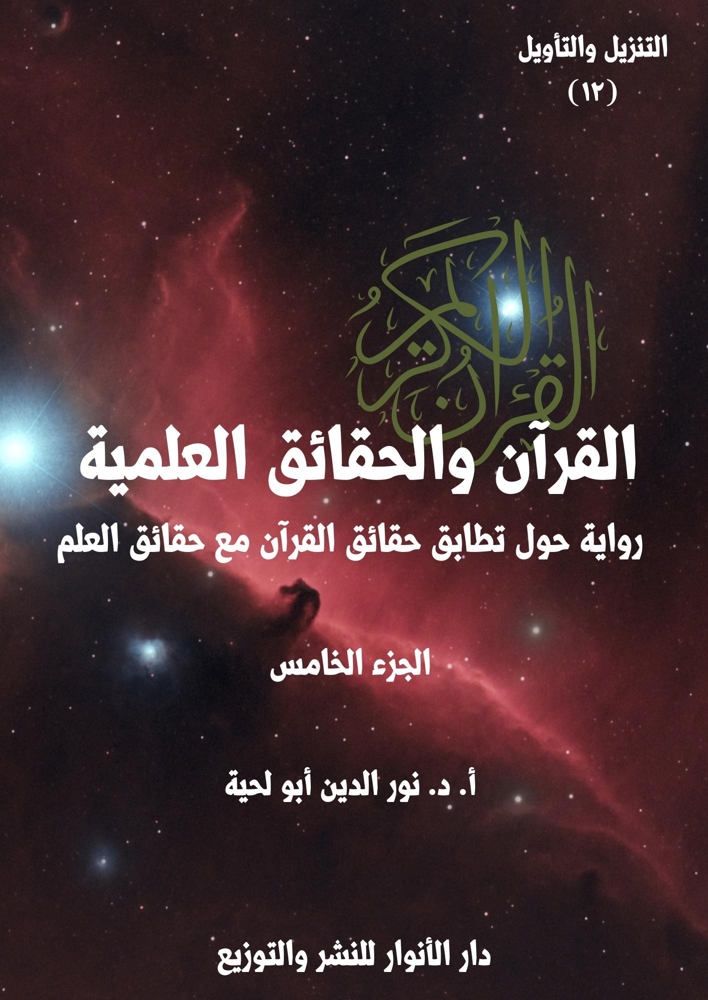

الكتاب: القرآن.. والحقائق العلمية ج5
الوصف: رواية حول تطابق حقائق القرآن مع حقائق العلم
السلسلة: التنزيل والتأويل
المؤلف: أ. د. نور الدين أبو لحية
الناشر: دار الأنوار للنشر والتوزيع
الطبعة: الأولى، 1444 هـ
عدد الصفحات: 506
ISBN: 978-620-4-72102-6
لمطالعة الكتاب من تطبيق مؤلفاتي المجاني وهو أحسن وأيسر: هنا

يحاول هذا الكتاب بيان مطابقة القرآن الكريم للحقائق العلمية الحديثة، وفي الجوانب الكونية المختلفة ابتداء من السماء، وانتهاء بالإنسان، وقد حاولنا أن نستوعب فيه أكثر ما طرح في هذا الجانب من النواحي التالية:
1. محاولة ذكر المواقف المختلفة من التفسير العلمي للقرآن الكريم، سواء من الناحية العامة، أو عند الحديث عند كل آية، لنترك للقارئ حرية الترجيح بينها.
2. ذكر ما ورد في التفاسير القرآنية القديمة والحديثة حول الآيات المتعلقة بالحقائق العلمية، مع ذكر ما ذكرته الدراسات العلمية الحديثة بشأنها.
3. توفير ثقافة علمية للقارئ ترتبط بمعاني الآيات الكريمة التي يتلوها، ولهذا حاولنا أن نفسر كل الآيات التي ذكرت الحقائق المرتبطة بالكون، مع ذكر التفاصيل العلمية الكثيرة الواردة بشأنها، والرجوع للمصادر العلمية الموثوقة في ذلك.
4. محاولة تبسيط المادة العلمية المرتبطة بهذا سواء من خلال تبسيط الفهوم والتفسيرات، أو ذكر الحقائق العلمية.
5. الرد على التفاسير المسيئة للقرآن الكريم، من خلال تحميلها له ما لا يحتمل، أو من خلال الاعتماد على معلومات غير صحيحة، وتطبيقها على القرآن الكريم.
6. محاولة الجمع بين جوانب الهداية المرتبطة بالآيات الكريمة التي نفسرها، والجوانب العلمية، حتى نبين أن المقصود من الآيات الكريمة ليس معانيها العلمية، وإنما جوانب الهداية فيها، والجوانب العلمية مجرد أمثلة ودلائل.
القرآن.. والحقائق العلمية (5/8)
يتناول هذا الجزء من كتاب [القرآن والحقائق العلمية] الفصل الثاني عشر من الكتاب، والذي تناولنا فيه الآيات الكريمة التي تتحدث عن الإنسان، وأصله وكيفية خلقه، وما أودع الله في خلقه من الآيات، وقد فصلنا خصوصا في جانبين:
الأول: أصل الإنسان، وذكر آراء المفسرين والعلماء في ذلك، مع التفصيل العلمي المرتبط بالرد على نظرية التطور، وبيان فقدانها للمصداقية العلمية الكافية، ولذلك ذكرنا الأدلة على عدم إمكانية تفسير الآيات الكريمة المرتبطة بخلق آدم عليه السلام على أساسها كما فعل بعض المفسرين، مع استعراض أدلة الجميع.
الثاني: ما ذكره القرآن الكريم حول الأطوار التي تمر بها الأجنة، حيث خصصنا كل مرحلة منها بمبحث خاص، مع ذكر ما ورد في التفاسير القديمة والحديثة بشأنها، بالإضافة إلى ما ذكره العلم، ورد الشبهات المرتبطة بذلك.
ونحب أن نعيد هنا ـ من باب التذكير ـ ما ذكرناه في مقدمة الجزء الأول من أغراض الكتاب ومنهجه، وباختصار، وخاصة للذين لم يتسن لهم أن يطلعوا عليها، فهذا الكتاب ـ بأجزائه الخمسة ـ يحاول أن يستوعب أكثر ما طرح حول التفسير العلمي للقرآن الكريم، وذلك من النواحي التالية:
1. محاولة ذكر المواقف المختلفة من التفسير العلمي للقرآن الكريم، سواء من الناحية العامة، أو عند الحديث عند كل آية كريمة، لنترك للقارئ حرية الترجيح والاختيار بينها.
2. الرد على المنكرين لتفسير القرآن الكريم وفق ما ورد في العلم الحديث مطلقا،
القرآن.. والحقائق العلمية (5/9)
حتى لو كانت الآيات الكريمة واضحة في دلالتها، والعلم قطعيا في ثبوته، سواء من خلال ذكر أقوال المفسرين المعتبرين، أو من خلال ذكر الحقائق العلمية وربطها بما ورد في القرآن الكريم، ومساعدة اللغة العربية على ذلك.
3. تأييد ما ورد من ربط للقرآن الكريم بالحقائق العلمية، ما دامت الآيات واضحة الدلالة، والحقائق العلمية ثابتة ومتفق عليها عند جماهير العلماء.
4. ذكر ما ورد في تفاسير القرآن الكريم القديمة والحديثة حول الآيات المتعلقة بالحقائق العلمية، ولم نراع في ذلك دقة المعلومات التي أوردها المفسرون، أو اتفاقها مع ما ورد في مكتشفات العلم الحديث، لأن الهدف هو بيان اهتمام العلماء بتفسير الآيات التي نتحدث عنها بما يتوافق مع العلم.
5. الابتعاد عن الصيغة التي درج عليها الكثير من الكتاب في هذا المجال عند طرحهم للحقائق العلمية المقترنة بالقرآن الكريم، من ذكر كونها سبقا علميا، ونحو ذلك، لأنا رأينا أن مثل هذا يبقى نتيجة يستنتجها القارئ من غير أن ينبه إليها كل حين.
6. توفير ثقافة علمية للقارئ ترتبط بمعاني الآيات الكريمة التي يتلوها، ولهذا حاولنا أن نفسر الآيات التي ذكرت الحقائق الكونية، بغض النظر عن ذكرها لأي حقيقة علمية.
7. محاولة تبسيط المادة العلمية المرتبطة بهذا سواء من خلال تبسيط الفهوم والتفسيرات، أو ذكر الحقائق العلمية، ولهذا اعتمدنا في هذا أسلوبا خاصة في الرواية.
8. الرد على التفاسير المسيئة للقرآن الكريم، من خلال تحميلها له ما لا يحتمل، أو من خلال الاعتماد على معلومات غير صحيحة، وتطبيقها على القرآن الكريم، وادعاء السبق له فيها.
القرآن.. والحقائق العلمية (5/10)
9. محاولة الجمع بين جوانب الهداية المرتبطة بالآيات الكريمة التي نفسرها، والجوانب العلمية، ذلك أن الجوانب العلمية مجرد أمثلة ودلائل.
القرآن.. والحقائق العلمية (5/11)
بعد انتهاء العلماء من ردّ الدعاوى التي ادعاها عليهم خصومهم بشأن ما ورد في القرآن الكريم من الحديث عن النباتات، وما أودع الله فيها من الخصائص والصفات والنعم، قال القاضي: بعد سماعنا لما ذكرتموه من الفهوم المرتبطة بالآيات الكريمة التي تتحدث عن النباتات، وعلاقة فهمها بمكتشفات العلوم الحديثة.. ننتقل في هذه الجلسة إلى الحديث عما ورد في القرآن الكريم من الآيات الكريمة التي تتحدث عن الإنسان، وما ورد فيها من الأوصاف المرتبطة بخلقه وكيفيتها، ومدى تطابقها مع الكشوفات العلمية الحديثة.
قال ذلك، ثم التفت للحكماء، وقال: لقد اتهمكم المخالفون لكم بأنكم زججتم بالآيات الكريمة التي تحدثت عن خَلق الإنسان في محال لا علاقة لها بها، فحمّلتموها ما لا تحتمل.
قال أحد العلماء: معاذ الله أن نفعل ذلك.. بل نحن لم نقم سوى بفهم تلك الآيات الكريمة على ضوء ما اكتشف من العلم الحديث، من غير أن نعتب على العلماء السابقين، ولا أن نلومهم.. وكيف نلومهم على الحديث عن شيء لم يحن حينه؟
قال آخر: ولذلك، فإننا لم نقم سوى بتطبيق ما أمرنا ربنا به من التأمل في خلق الإنسان، وكيف لا نفعل ذلك، وقد وردت كلمة الإنسان في القرآن الكريم 71 مرة، وهي كافية لدعوتنا للتأمل والبحث فيها.
قال آخر(1): وقد ذكر الله تعالى خلق الإنسان، في مواضع متعددة، منها ما ذكره عن أنه خلقه بعد أن لم يكن موجودا، فقال: ﴿الرَّحْمَنُ عَلَّمَ الْقُرْآنَ خَلَقَ الْإِنْسَانَ﴾ [الرحمن: 1 ـ 3]،
__________
(1) مفاهيم قرآنية: (2/367)
القرآن.. والحقائق العلمية (5/12)
وقال: ﴿هَلْ أَتَى عَلَى الْإِنْسَانِ حِينٌ مِنَ الدَّهْرِ لَمْ يَكُنْ شَيْئًا مَذْكُورًا﴾ [الإنسان: 1]، وقال:﴿أَوَلَا يَذْكُرُ الْإِنْسَانُ أَنَّا خَلَقْنَاهُ مِنْ قَبْلُ وَلَمْ يَكُ شَيْئًا﴾ [مريم: 67]
قال آخر: وذكر الله تعالى أن عملية خلق الإنسان مرت بمراحل عديدة وأطوار مختلفة، فطورا نطفة وطورا علقة إلى تمام خلق الإنسان، كما قال تعالى: ﴿وَقَدْ خَلَقَكُمْ أَطْوَارًا﴾ [نوح: 14]
قال آخر: وأخبر عن خلق الإنسان الأول، وهو آدم عليه السلام في مواضع عديدة من القرآن الكريم، والتي يمكن تقسيمها إلى ثلاثة أطوار، أولها طور التخليق، ويبدأ بالتراب، كما قال تعالى: ﴿إِنَّ مَثَلَ عِيسَى عِنْدَ اللَّهِ كَمَثَلِ آدَمَ خَلَقَهُ مِنْ تُرَابٍ ثُمَّ قَالَ لَهُ كُنْ فَيَكُونُ﴾ [آل عمران: 59]، أي خلق الله آدم من تراب الأرض، أي من نفس العناصر الموجودة في تراب الأرض.
قال آخر: وثانيها أنه خلقه من طين، كما قال تعالى: ﴿إِذْ قَالَ رَبُّكَ لِلْمَلَائِكَةِ إِنِّي خَالِقٌ بَشَرًا مِنْ طِينٍ﴾ [ص: 71]، وقال: ﴿الَّذِي أَحْسَنَ كُلَّ شَيْءٍ خَلَقَهُ وَبَدَأَ خَلْقَ الْإِنْسَانِ مِنْ طِينٍ﴾ [السجدة: 7]، والطين ناتج عن خلط التراب بالماء، وقد قال تعالى: ﴿وَجَعَلْنَا مِنَ الْمَاءِ كُلَّ شَيْءٍ حَيٍّ﴾ [الأنبياء: 30]
قال آخر: وذكر الله تعالى أن الطين بالنسبة للإنسان الأول، وهو آدم عليه السلام، كان طينا لازبا، أي لزجا يلتصق بعضه ببعض، كما قال تعالى: ﴿فَاسْتَفْتِهِمْ أَهُمْ أَشَدُّ خَلْقًا أَمْ مَنْ خَلَقْنَا إِنَّا خَلَقْنَاهُمْ مِنْ طِينٍ لَازِبٍ﴾ [الصافات: 11]، أي من طين أسود متغير لونه وريحه؛ من طول مكثه.
قال آخر: وثانيها أنه خلقه من حمأ مسنون، كما قال تعالى: ﴿وَلَقَدْ خَلَقْنَا الْإِنْسَانَ مِنْ صَلْصَالٍ مِنْ حَمَإٍ مَسْنُونٍ﴾ [الحجر: 26]، أي أن الله تعالى ترك الطين بعد أن مزج التراب والماء
القرآن.. والحقائق العلمية (5/13)
حتى صار حمأ مسنون، والحمأ عبارة عن طين أسود متغير.
قال آخر: ورابعها أنه خلقه من صلصال كالفخار، أي أن المراحل السابقة مجتمعة أدت إلى مرحلة الصلصال وهو عبارة عن طين يابس، كما قال تعالى: ﴿خَلَقَ الْإِنْسَانَ مِنْ صَلْصَالٍ كَالْفَخَّارِ﴾ [الرحمن: 14]، وهذا الصلصال يشبه الفخار إلا أنه ليس فخارا؛ لأن الفخار مطبوخ بالنار بخلاف الصلصال، فهو طين يابس غير مطبوخ بالنار.
قال آخر: أما الطور الثاني، فهو طور التصوير، كما قال تعالى: ﴿وَلَقَدْ خَلَقْنَاكُمْ ثُمَّ صَوَّرْنَاكُمْ﴾ [الأعراف: 11]، أي أن مرحلة التصوير تأتي بعد الخلق.
قال آخر: أما الطور الثالث، فهو طور نفخ الروح، وتم ذلك بعد أن سوى الله تعالى الإنسان الأول وصوره، وهو آدم عليه السلام أراد أن يبث فيه الحياة، نفخ فيه من روحه، فصار بشرا حيا، كما قال تعالى: ﴿وَإِذْ قَالَ رَبُّكَ لِلْمَلَائِكَةِ إِنِّي خَالِقٌ بَشَرًا مِنْ صَلْصَالٍ مِنْ حَمَإٍ مَسْنُونٍ فَإِذَا سَوَّيْتُهُ وَنَفَخْتُ فِيهِ مِنْ رُوحِي فَقَعُوا لَهُ سَاجِدِينَ﴾ [الحجر: 28 ـ 29]
قال آخر: ثم ذكر الله تعالى خلقه لحواء عليها السلام، فقال: ﴿يَا أَيُّهَا النَّاسُ اتَّقُوا رَبَّكُمُ الَّذِي خَلَقَكُمْ مِنْ نَفْسٍ وَاحِدَةٍ وَخَلَقَ مِنْهَا زَوْجَهَا﴾ [النساء: 1]، وقال: ﴿هُوَ الَّذِي خَلَقَكُمْ مِنْ نَفْسٍ وَاحِدَةٍ وَجَعَلَ مِنْهَا زَوْجَهَا لِيَسْكُنَ إِلَيْهَا﴾ [الأعراف: 189]، وتدل هذه الآيات على أن آدم عليه السلام قد خلق أولا، وأن حواء قد خلقت بعده، كما قال تعالى: ﴿وَاللَّهُ جَعَلَ لَكُمْ مِنْ أَنْفُسِكُمْ أَزْوَاجًا﴾ [النحل: 72]، أي أن حواء خلقت من جنس خلق آدم عليه السلام أي: من نفس العناصر التي خلق منها آدم.
قال آخر: وهكذا ذكر الله تعالى كيفية خلق عيسى عليه السلام، ومن دون أب، فقال حاكيا قصة أمه: ﴿قَالَتْ رَبِّ أَنَّى يَكُونُ لِي وَلَدٌ وَلَمْ يَمْسَسْنِي بَشَرٌ قَالَ كَذَلِكِ اللَّهُ يَخْلُقُ مَا يَشَاءُ إِذَا قَضَى أَمْرًا فَإِنَّمَا يَقُولُ لَهُ كُنْ فَيَكُونُ﴾ [آل عمران: 47]، وقال: ﴿إِنَّ مَثَلَ عِيسَى عِنْدَ اللَّهِ
القرآن.. والحقائق العلمية (5/14)
كَمَثَلِ آدَمَ خَلَقَهُ مِنْ تُرَابٍ ثُمَّ قَالَ لَهُ كُنْ فَيَكُونُ﴾ [آل عمران: 59]، وقال: ﴿إِنَّمَا الْمَسِيحُ عِيسَى ابْنُ مَرْيَمَ رَسُولُ اللَّهِ وَكَلِمَتُهُ أَلْقَاهَا إِلَى مَرْيَمَ وَرُوحٌ مِنْهُ﴾ [النساء: 171]
قال آخر: وقد اهتم القرآن الكريم كثيرا بذكر خلق سائر بني آدم، فذكر أطوار هذا الخلق، كما قال تعالى: ﴿وَقَدْ خَلَقَكُمْ أَطْوَارًا﴾ [نوح: 14]، وقال: ﴿يَخْلُقُكُمْ فِي بُطُونِ أُمَّهَاتِكُمْ خَلْقًا مِنْ بَعْدِ خَلْقٍ﴾ [الزمر: 6]
قال آخر: ومن خلال تتبع الآيات القرآنية المتعلقة بأطوار خلق الإنسان، نجد أنه حدد أطوارا لخلق الإنسان، تبدأ من النطفة، كما قال تعالى: ﴿خَلَقَ الْإِنْسَانَ مِنْ نُطْفَةٍ فَإِذَا هُوَ خَصِيمٌ مُبِينٌ﴾ [النحل: 4]
قال آخر: ثم العلقة، كما قال تعالى: ﴿ثُمَّ كَانَ عَلَقَةً فَخَلَقَ فَسَوَّى﴾ [القيامة: 38]، وقال: ﴿خَلَقَ الْإِنْسَانَ مِنْ عَلَقٍ﴾ [العلق: 2]
قال آخر: ثم المضغة، كما قال تعالى: ﴿ثُمَّ مِنْ عَلَقَةٍ ثُمَّ مِنْ مُضْغَةٍ مُخَلَّقَةٍ وَغَيْرِ مُخَلَّقَةٍ﴾ [الحج: 5]
قال آخر: ثم العظام، كما قال تعالى: ﴿فَخَلَقْنَا الْمُضْغَةَ عِظَامًا﴾ [المؤمنون: 14]
قال آخر: ثم كساء العظام باللحم، كما قال تعالى: ﴿فَكَسَوْنَا الْعِظَامَ لَحْمًا﴾ [المؤمنون: 14]
قال آخر: ثم الخلق الآخر، أي نفخ الروح، كما قال تعالى: ﴿ثُمَّ أَنْشَأْنَاهُ خَلْقًا آخَرَ فَتَبَارَكَ اللَّهُ أَحْسَنُ الْخَالِقِينَ﴾ [المؤمنون: 14]
قال آخر: وهكذا ذكر الله تعالى الكثير من صفات الإنسان المرتبطة بأخلاقه، وعلاقته بربه، وعلاقتها بالخلق.
القرآن.. والحقائق العلمية (5/15)
قال القاضي: انطلاقا مما ذكرتم، نريد أن نسمع منكم، ومن المدّعين عليكم، الحديث عن الآيات الكريمة التي ورد الخلاف في شأن التفسير العلمي لها؟
قال أحد المدّعين: أجل.. ومع أني وثلة كبيرة من أصحابي من المنكرين للتفسير العلمي للقرآن إلا في قضية واحدة رأيت أن القرآن الكريم وافق فيها العلم موافقة تامة، وهي تفسير أصل الإنسان، وقد رأينا أنها متوافقة تماما مع نظرية التطور.
قال آخر: ذلك أن من الخطر الكبير على الإسلام، وقداسة القرآن الكريم أن ننفي هذه النظرية العلمية، وبأي حجة من الحجج، مع أن العالم جميعا صار يقول بها.
قال آخر: ولهذا تفطن المتنورون من العلماء إلى خطورة ذلك، فلم يكتفوا بتأييدها، بل راحوا يفسرون الآيات الكريمة التي وردت في قصة آدم عليه السلام على أساسها.
قال القاضي: إن ما تذكرونه خطير، فهل حقا يوجد من المفسرين من قال بهذه النظرية، وانتصر لها من القرآن الكريم؟
قال أحد المدّعين: أجل.. وقد كان لتفاسيرهم الأثر الكبير في نشر هذه النظرية وتعميمها، وحماية المسلمين من الآثار السلبية لإنكارها.
قال القاضي: فهلا ذكرتم لنا نماذج عنهم.
قال أحد المدّعين: سنذكر لكم أربعة منهم.. وإن شئتم المزيد زدناكم.
قال القاضي: فحدثونا عن أولهم.
قال أحد المدّعين: أولهم الذين فتح الباب لهم، وشجعهم عليه محمد عبده، فقد فتح
القرآن.. والحقائق العلمية (5/16)
بتفسيره للآيات الكريمة التي تتحدث عن قصة آدم عليه السلام في سورة البقرة، الباب على مصراعيه لكل من يريد أن يؤول القرآن بما يتوافق مع هذه النظرية، بل مع غيرها أيضا مما قد يستجد.
قال آخر: فقد قال في تفسير قوله تعالى: ﴿وَإِذْ قُلْنَا لِلْمَلَائِكَةِ اسْجُدُوا لِآدَمَ فَسَجَدُوا إِلَّا إِبْلِيسَ أَبَى وَاسْتَكْبَرَ وَكَانَ مِنَ الْكَافِرِينَ﴾ [البقرة: 34]: (بعدما عرف الله الملائكة بمكانة آدم وزوجه، وجعله خليفة في الأرض، أمرهم بالخضوع له، وعبر عن ذلك بالسجود، فقال: ﴿وَإِذْ قُلْنَا لِلْمَلَائِكَةِ اسْجُدُوا لِآدَمَ﴾ [طه: 116] وهو سجود لا نعرف صفته، ولكن أصول الدين تعلمنا أنه ليس سجود عبادة إذ لا يعبد إلا الله تعالى والسجود في اللغة: التطامن والخضوع والانقياد، وأعظم مظاهره الخرور نحو الأرض للأذقان ووضع الجبهة على التراب، وكان عند بعض القدماء من تحية الناس للملوك والعظماء، ومنه سجود يعقوب وأولاده ليوسف عليهم السلام)(1)
قال آخر: ثم قال: (والسجود لله تعالى قسمان: سجود العقلاء المكلفين له تعبدا على الوجه المشروع، وسجود المخلوقات كلها لمقتضى إرادته فيها، كما قال تعالى: ﴿وَلِلَّهِ يَسْجُدُ مَنْ فِي السَّمَاوَاتِ وَالْأَرْضِ طَوْعًا وَكَرْهًا﴾ [الرعد: 15]، وقال: ﴿وَالنَّجْمُ وَالشَّجَرُ يَسْجُدَانِ﴾ [الرحمن: 6]، وفي معناهما آيات.. ﴿فَسَجَدُوا إِلَّا إِبْلِيسَ﴾ [طه: 116] أي سجدوا كلهم أجمعون إلا إبليس وهو فرد من أفراد الملائكة، كما يفهم من الآية وأمثالها في القصة إلا آية الكهف فإنها ناطقة بأنه كان من الجن)(2)
قال آخر: ثم قال: (وليس عندنا دليل على أن بين الملائكة والجن فصلا جوهريا يميز
__________
(1) تفسير المنار (1/ 221)
(2) تفسير المنار (1/ 221)
القرآن.. والحقائق العلمية (5/17)
أحدهما عن الآخر، وإنما هو اختلاف أصناف عندما تختلف أوصاف، كما ترشد إليه الآيات، فالظاهر أن الجن صنف من الملائكة، وقد أطلق في القرآن لفظ الجنة على الملائكة على رأي جمهور المفسرين في قوله تعالى: ﴿وَجَعَلُوا بَيْنَهُ وَبَيْنَ الْجِنَّةِ نَسَبًا﴾ [الصافات: 158]، وعلى الشياطين في آخر سورة الناس)(1)
قال آخر: ثم قال: (وعلى كل حال فجميع هؤلاء المسميات بهذه الأسماء من عالم الغيب لا نعلم حقائقها ولا نبحث عنها ولا نقول بنسبة شيء إليها ما لم يرد لنا فيه نص قطعي عن المعصوم صلى الله عليه وآله وسلم)(2)
قال آخر: ثم تحدث عن سبب كبر إبليس وكفره وما ذكره المفسرون من ذلك، ثم قال: (الملائكة خلق غيبي لا نعرف حقيقته، وإنما نؤمن به بإخبار الله تعالى الذي نقف عنده ولا نزيد عليه، والقرآن ناطق بأن الملائكة أصناف، لكل صنف وظيفة وعمل.. وإلهام الخير والوسوسة بالشر مما جاء في لسان صاحب الوحي صلى الله عليه وآله وسلم وقد أسندا إلى هذه العوالم الغيبية، وخواطر الخير التي تسمى إلهاما وخواطر الشر التي تسمى الوسوسة كل منهما محله الروح، فالملائكة والشياطين إذن أرواح تتصل بأرواح الناس فلا يصح أن تمثل الملائكة بالتماثيل الجثمانية المعروفة لنا، لأن هذه لو اتصلت بأرواحنا، فإنما تتصل بها من طرق أجسامنا، ونحن لا نحس بشيء بأبداننا، لا عند الوسوسة ولا عند الشعور بداعي الخير من النفس، فإذن هي من عالم غير عالم الأبدان قطعا، والواجب على المسلم في مثل الآية: الإيمان بمضمونها مع التفويض أو الحمل على أنها حكاية تمثيل، ثم الاعتبار بها بالنظر في الحكم
__________
(1) تفسير المنار (1/ 221)
(2) تفسير المنار (1/ 221)
القرآن.. والحقائق العلمية (5/18)
التي سيقت لها القصة)(1)
قال آخر: ثم قال: (وذهب بعض المفسرين مذهبا آخر في فهم معنى الملائكة: وهو أن مجموع ما ورد في الملائكة من كونهم موكلين بالأعمال من إنماء نبات وخلقة حيوان وحفظ إنسان وغير ذلك فيه إيماء إلى الخاصة بما هو أدق من ظاهر العبارة، وهو أن هذا النمو في النبات لم يكن إلا بروح خاص نفخه الله في البذرة فكانت به هذه الحياة النباتية المخصوصة، وكذلك يقال في الحيوان والإنسان، فكل أمر كلي قائم بنظام مخصوص تمت به الحكمة الإلهية في إيجاده، فإنما قوامه بروح إلهي سمي في لسان الشرع ملكا، ومن لم يبال في التسمية بالتوقيف يسمي هذه المعاني القوى الطبيعية، إذا كان لا يعرف من عالم الإمكان إلا ما هو طبيعة أو قوة يظهر أثرها في الطبيعة)(2)
قال آخر: ثم قال: (والأمر الثابت الذي لا نزاع فيه هو أن في باطن الخلقة أمرا هو مناطها، وبه قوامها ونظامها، لا يمكن لعاقل أن ينكره، وإن أنكر غير المؤمن بالوحي تسميته ملكا، وزعم أنه لا دليل على وجود الملائكة، أو أنكر بعض المؤمنين بالوحي تسميته قوة طبيعية أو ناموسا طبيعيا؛ لأن هذه الأسماء لم ترد في الشرع، فالحقيقة واحدة، والعاقل من لا تحجبه الأسماء عن المسميات، وإن كان المؤمن بالغيب يرى للأرواح وجودا لا يدرك كنهه، والذي لا يؤمن بالغيب يقول: لا أعرف الروح ولكن أعرف قوة لا أفهم حقيقتها)(3)
قال آخر: ثم قال: (ولا يعلم إلا الله علام يختلف الناس، وكل يقر بوجود شيء غير ما يرى ويحس ويعترف بأنه لا يفهمه حق الفهم، ولا يصل بعقله إلى إدراك كنهه، وماذا على
__________
(1) تفسير المنار (1/ 222)
(2) تفسير المنار (1/ 223)
(3) تفسير المنار (1/ 223)
القرآن.. والحقائق العلمية (5/19)
هذا الذي يزعم أنه لا يؤمن بالغيب وقد اعترف بما غيب عنه لو قال: أصدق بغيب أعرف أثره، وإن كنت لا أقدره قدره، فيتفق مع المؤمنين بالغيب، ويفهم بذلك ما يرد على لسان صاحب الوحي، ويحظى بما يحظى به المؤمنون؟)(1)
قال آخر: ثم قال: (يشعر كل من فكر في نفسه ووازن بين خواطره عندما يهم بأمر فيه وجه للحق أو للخير، ووجه للباطل أو للشر، بأن في نفسه تنازعا كأن الأمر قد عرض فيها على مجلس شورى فهذا يورد وذاك يدفع، واحد يقول: افعل، وآخر يقول: لا تفعل، حتى ينتصر أحد الطرفين، ويترجح أحد الخاطرين، فهذا الشيء الذي أودع في أنفسنا، ونسميه قوة وفكرا ـ وهو في الحقيقة معنى لا يدرك كنهه، وروح لا تكتنه حقيقتها، لا يبعد أن يسميه الله تعالى ملكا، أو يسمي أسبابه ملائكة، أو ما شاء من الأسماء، فإن التسمية لا حجر فيها على الناس فكيف يحجر فيها على صاحب الإرادة المطلقة والسلطان النافذ والعلم الواسع؟)(2)
قال آخر: ثم قال: (فإذا صح الجري على هذا التفسير فلا يستبعد أن تكون الإشارة في الآية إلى أن الله تعالى لما خلق الأرض ودبرها بما شاء من القوى الروحانية التي بها قوامها ونظامها، وجعل كل صنف من القوى مخصوصا بنوع من أنواع المخلوقات لا يتعداه ولا يتعدى ما حدد له من الأثر الذي خص به، خلق بعد ذلك الإنسان وأعطاه قوة يكون بها مستعدا للتصرف بجميع هذه القوى وتسخيرها في عمارة الأرض، وعبر عن تسخير هذه القوى له بالسجود الذي يفيد معنى الخضوع والتسخير، وجعله بهذا الاستعداد الذي لا حد له والتصرف الذي لم يعط لغيره خليفة الله في أرضه؛ لأنه أكمل الموجودات في هذه
__________
(1) تفسير المنار (1/ 223)
(2) تفسير المنار (1/ 223)
القرآن.. والحقائق العلمية (5/20)
الأرض)(1)
قال آخر: ثم قال: (واستثنى من هذه القوى قوة واحدة عبر عنها بإبليس، وهي القوة التي لزها الله بهذا العالم لزا، وهي التي تميل بالمستعد للكمال أو بالكامل إلى النقص وتعارض مد الوجود لترده إلى العدم أو تقطع سبيل البقاء وتعود بالموجود إلى الفناء أو التي تعارض في اتباع الحق وتصد عن عمل الخير وتنازع الإنسان في صرف قواه إلى المنافع والمصالح التي تتم بها خلافته فيصل إلى مراتب الكمال الوجودي التي خلق مستعدا للوصول إليها، تلك القوة التي ضللت آثارها قوما فزعموا أن في العالم إلها يسمى إله الشر، وما هي بإله ولكنها محنة إله لا يعلم أسرار حكمته إلا هو، ولو أن نفسا مالت إلى قبول هذا التأويل لم تجد في الدين ما يمنعها من ذلك، والعمدة على اطمئنان القلب وركون النفس إلى ما أبصرت من الحق)(2)
قال آخر: وقد عقب تلميذه رشيد رضا على هذا بقوله: (إن غرض الأستاذ من هذا التأويل الذي عبر عنه بالإيماء وبالإشارة إقناع منكري الملائكة بوجودهم، بتعبير مألوف عندهم تقبله عقولهم، وقد اهتدى به كثيرون، وضل به آخرون فأنكروه عليه وزعموا أنه جعل الملائكة قوى لا تعقل)(3)
قال آخر: ثم ذكر أنه رد عليهم كتابة بقوله: (ولست أحيط علما بما فعلت العادة والتقاليد في أنفس بعض من يظنون أنهم من المتشددين في الدين إذ ينفرون من هذه المعاني كما ينفر المرضى أو المخدجون من جيد الأطعمة التي لا تضرهم، وقد يتوقف عليها قوام
__________
(1) تفسير المنار (1/ 224)
(2) تفسير المنار (1/ 224)
(3) تفسير المنار (1/ 224)
القرآن.. والحقائق العلمية (5/21)
بنيتهم، ويتشبثون بأوهام مألوفة لهم تشبث أولئك المرضى والمخدجين بأضر طعام يفسد الأجسام ويزيد السقام، لا أعرف ما الذي فهموه من لفظ روح أو ملك، وما الذي يتخيلونه من مفهوم لفظ قوة، أليس الروح في الآدمي مثلا هذا الذي يظهر لنا في أفراد هذا النوع بالعقل والحس والوجدان والإرادة والعمل، وإذا سلبوه سلبوا ما يسمى بالحياة؟.. أوليست القوة هي ما تصدر عنه الآثار فيمن وهبت له، فإذا سمي الروح لظهور أثره قوة، أو سميت القوة لخفاء حقيقتها روحا فهل يضر ذلك بالدين أو ينقص معتقده شيئا من اليقين؟)(1)
قال آخر: ثم قال: (ألا لا يسمى الإيمان إيمانا حتى يكون إذعانا، ولا يكون كذلك حتى يستسلم الوجدان وتخشع الأركان لذلك السلطان الذي تعلق به الإيمان، ولا يكون كذلك حتى يلقي الوهم سلاحه ويبلغ العقل فلاحه، وهل يستكمل ذلك لمن لا يفهم ما يمكنه فهمه، ولا يعلم ما يتيسر له علمه؟ كلا إنما يعرف الحق أهله ولا يضل سبله، ولا يعرف أهل الغفلة، لو أن مسكينا من عبدة الألفاظ من أشدهم ذكاء وأذربهم لسانا أخذ بما قيل له: إن الملائكة أجسام نورانية قابلة للتشكل، ثم تطلع عقله إلى أن يفهم معنى نورانية الأجسام، وهل النور وحده له قوام يكون به شخصا ممتازا بدون أن يقوم بجرم آخر كثيف ثم ينعكس عنه كذبالة المصباح أو سلك الكهرباء، ومعنى قابلية التشكل، وهل يمكن للشيء الواحد أن يتقلب في أشكال من الصور مختلفة حسبما يريد وكيف يكون ذلك، ألا يقع في حيرة؟)(2)
قال آخر: ثم قال: (ولو سئل عما يعتقده من ذلك ألا يحدث في لسانه من العقد ما لا
__________
(1) تفسير المنار (1/ 225)
(2) تفسير المنار (1/ 225)
القرآن.. والحقائق العلمية (5/22)
يستطيع حله؟ أليس مثل هذه الحيرة يعد شكا؟ نعم ليست هذه الحيرة حيرة من وقف دون أبواب الغيب يطرف لما لا يستطيع النظر إليه، لكنها حيرة من أخذ بقول لا يفهمه، وكلف نفسه علم ما لا تعلمه. فلا يعد مثله ممن آمن بالملائكة إيمانا صحيحا واطمأنت بإيمانه نفسه وأذعن له قلبه، ولم يبق لوهمه سلاح ينازع به عقله، كما هو شأن صاحب الإيمان الصحيح)(1)
قال آخر: ثم قال: (فليرجع هؤلاء إلى أنفسهم ليعلموا أن الذي وقر فيها تقاليد حفت بالمخاوف، لا علوم حفت بالسكينة والطمأنينة، هؤلاء لم يشرق في نفوسهم ذلك السر الذي يعبر عنه بالنور الإلهي والضياء الملكوتي واللألاء القدسي، أو ما يماثل ذلك من العبارات، لم يسبق لنفوسهم عهد بملاحظة جانب الحق، ولم تكتحل أعين بصائرهم بنظرة إلى مطلع الوجود منه على الخلق، ولو علموا أن العالم بأسره فإن في نفسه، وأن ليس في الكون باق كان أو يكون إلا وجه الكريم، وأن ما كشف من الكون وما لطف، وما ظهر منه وما بطن إنما هو فيض من جوده، ونسبة إلى وجوده، وليس الشريف منه إلا ما أعلى بذكره منزلته، ولا الخسيس إلا ما بين لنا بالنظر إلى الأول نسبته، فإن كل مظهر من مظاهر الوجود في نفسه واقع موقعه، ليس شيء أعلى ولا أحط منه)(2)
قال آخر: ثم قال: (فإن كان كذلك ـ ولا بد أن يكون كما قدره ـ لو عرفوا ذلك كله لأطلقوا لأنفسهم أن تجول في تلك الشئون حتى تصل إلى مستقر الطمأنينة، حيث لا ينازع العقل شيء من وساوس الوهم ولا تجد طائفا من الخوف، ثم لا يتحرجون من إطلاق لفظ
__________
(1) تفسير المنار (1/ 225)
(2) تفسير المنار (1/ 226)
القرآن.. والحقائق العلمية (5/23)
مكان لفظ)(1)
قال آخر: ثم قال: (هذه القوى التي نرى آثارها في كل شيء يقع تحت حواسنا، وقد خفيت حقائقها عنا، ولم يصل أدق الباحثين في بحثه عنها إلا إلى آثار تجل إذا كشفت وتقل بل تضمحل إذا حجبت، وهي التي يدور عليها كمال الوجود وبها ينشأ الناشئ وبها ينتهي إلى غايته الكامل، كما لا يخفى على نبيه ولا خامل، أليست أشعة من ضياء الحق؟ أليست أجل مظهر من مظاهر سلطانه؟ ألا تعد بنفسها من عالم الغيب وإن كانت آثارها من عالم الشهادة؟ ألا يجوز أن يشعر الشاعر منها بضرب من الحياة والاختيار خاص بها لا ندرك كنهه لاحتجابه بما نتصوره من حياتنا واختيارنا؟ ألا تراها توافي بأسرارها من ينظر في آثارها ويوفيها حق النظر في نظامها؟ يستكثر من الخير بما يقف عليه من شئونها، ومعرفة الطريق إلى استدرار منافعها؟)(2)
قال آخر: ثم قال: (أليس الوجود الإلهي الأعلى من عالم الغيب، وآثاره في خلقه من عالم الشهادة؟ أليس هو الذي وهب تلك القوى خواصها وقدر لها آثارها؟ لم لا نقول أيها الغافل: إنه بذلك وهبها حياتها الخاصة بها، ولم قصرت معنى الحياة على ما تراه فيك وفي حيوان مثلك!؟ مع أنك لو سئلت عن هذا الذي تزعم أنك فهمته وسميته حياة لم تستطع له تعريفا ولا لفعله تصريفا! لا تقول كما قال الله وبه نقول: ﴿تُسَبِّحُ لَهُ السَّمَاوَاتُ السَّبْعُ وَالْأَرْضُ وَمَنْ فِيهِنَّ وَإِنْ مِنْ شَيْءٍ إِلَّا يُسَبِّحُ بِحَمْدِهِ وَلَكِنْ لَا تَفْقَهُونَ تَسْبِيحَهُمْ﴾ [الإسراء: 44])(3)
__________
(1) تفسير المنار (1/ 226)
(2) تفسير المنار (1/ 226)
(3) تفسير المنار (1/ 226)
القرآن.. والحقائق العلمية (5/24)
قال آخر: ثم قال: (أفلا تزعم أن لله ملائكة في الأرض وملائكة في السماء؟ هل عرفت أين تسكن ملائكة الأرض؟ وهل حددت أمكنتها ورسمت مساكنها؟ وهل عرفت أين يجلس من يكون منهم عن يمينك؟ ومن يكون عن يسارك؟ هل ترى أجسامهم النورانية تضئ لك في الظلام أو تؤنسك إذا هجمت عليك الأوهام؟ فلو ركنت إلى أنها قوى أو أرواح منبثة فيما حولك وما بين يديك وما خلفك، وأن الله ذكرها لك بما كان يعرفها سلفك، وبالعبارة التي تلقفتها عنهم كيلا يوحشك بما يدهشك، وترك لك النظر فيما تطمئن إليه نفسك من وجوه تعرفها، أفلا يكون ذلك أروح لنفسك وأدعى إلى طمأنينة عقلك؟ أفلا تكون قد أبصرت شيئا من وراء حجاب ووقفت على سر من أسرار الكتاب؟)(1)
قال آخر: ثم قال: (فإن لم تجد في نفسك استعدادا لقبول أشعة هذه الحقائق وكنت ممن يؤمن بالغيب ويفوض في إدراك الحقيقة ويقول: ﴿آمَنَّا بِهِ كُلٌّ مِنْ عِنْدِ رَبِّنَا﴾ [آل عمران: 7] فلا ترم طلاب العرفان بالريب ما داموا يصدقون بالكتاب الذي آمنت به، ويؤمنون بالرسول الذي صدقت برسالته، وهم في إيمانهم أعلى منك كعبا وأرضى منك بربهم نفسا، ألا إن مؤمنا لو مالت نفسه إلى فهم ما أنزل إليه من ربه على النحو الذي يطمئن إليه قلبه كما قلنا كان من دينه في ثقة، ومن فضل ربه في سعة)(2)
قال آخر: وقد عقب تلميذه رشيد رضا على هذا بقوله: (هذا ما كتبه شيخنا في توضيح كلامه في تقريب ما يفهمه علماء الكائنات من لفظ القوى إلى ما يفهمه علماء الشرع من لفظ الملائكة، ولا يفقهه من هؤلاء إلا من له إلمام بما يقوله أولئك في القوى وإسناد كل أحداث الكائنات وتطوراتها إليها مع اعترافهم بجهل كنهها، وإلمام أيضا بما كان يقوله
__________
(1) تفسير المنار (1/ 226)
(2) تفسير المنار (1/ 227)
القرآن.. والحقائق العلمية (5/25)
قدماء اليونان من أن لكل نوع من أنواع الموجودات إلها أو ربا مدبرا هو المسير لنظامه، وكل هذه الأرباب خاضعة للرب الإله الأكبر الذي يرجع إليه الأمر كله، فالمعنى العام عند الأولين والآخرين هو أن أحداث هذا العالم وتغيراتها وتطوراتها والنظام فيها كلها لا بد له من سبب خفي غير أجزاء مادتها)(1)
قال آخر: ثم قال: (فالتعبير عن ذلك عند المتقدمين قد وصل إلينا باصطلاحات تدل على الشرك برب العالمين، وتعبير الماديين المتأخرين يدل على التعطيل، وتعبير القرآن وما ثبت في السنة هو الذي حرر الحقيقة التي يمكن إذعان العقلاء لها، وهي أن الفاعل الحقيقي واحد، وأن نظام كل شيء قد ناطه سبحانه بموجودات روحية خفية ذات قوى عظيمة جدا سميت الملائكة، فالأستاذ الإمام يقول: إن التسمية وحدها لا تعطي أحدا علم الحقيقة، وإن من فهم الحقيقة لا يحجبها عنه اختلاف التسمية، وأراد بهذا أن يحتج على الماديين ويقنعهم بصحة ما جاء الوحي من طريق علمهم المسلم عندهم، كما صرح به فيما مر، فأنكره عليه عباد الألفاظ وهم لا يعقلون مراده، وهو بمثل هذه الأساليب في الإقناع بحقية الدين كان حجة لله في هذا العصر، حتى قال له أحد نوابغ رجال القضاء الأذكياء: إنك بتفسيرك للقرآن بالبيان الذي يقبله العقل ولا يأباه العلم قد قطعت الطريق على الذين يظنون أنه قد اقترب الوقت الذي يهدمون فيه الدين ويستريحون من قيوده وجهل رجاله وجمودهم)(2)
قال آخر: ثم قال: (وإنني أنا قد جربت هذه الطريقة التي استنكروها عليه في إقامة الحجة على بعض المنكرين لوجود الله تعالى فلم يستطيعوا لها دحضا، ذلك بأن علماءهم إنما
__________
(1) تفسير المنار (1/ 227)
(2) تفسير المنار (1/ 227)
القرآن.. والحقائق العلمية (5/26)
ينكرون إله اللاهوتيين وكذا إله المتكلمين لا إله الخليقة، فإذا قلت لهم: هل تعقلون أن هذا النظام الدقيق في كل نوع من المخلوقات ووحدة النظام العام في مجموعها كلها قد وجدوا بالمصادفة وليس لهما مصدر وجودي؟ يقولون: لا، بل لا بد لذلك من مصدر لكننا نجهل حقيقته، حينئذ كنت أقول لهم: وهذا أس عقيدة الإسلام وهو أننا نجهل كنه رب العالمين، وإنما نعرفه بآثاره في خلقه فالفرق بيننا لفظي)(1)
قال آخر: ثم قال: (ذلك ـ وإن ترتيب النظم يلتئم مع التأويل الذي أورده الأستاذ الإمام في السياق؛ فإن هذه المعاني التي وردت بصيغة الحكاية وبرزت في صورة التمثيل جاءت عقب قوله تعالى: ﴿هُوَ الَّذِي خَلَقَ لَكُمْ مَا فِي الْأَرْضِ جَمِيعًا﴾ [البقرة: 29] وبقي شيء واحد لم يصرح به في الدرس وقد سبقت الإشارة إليه، وهو أن كل قوة من قوى هذه الأرض وكل ناموس من نواميس الطبيعة فيها خلق خاضعا للإنسان، وخلق الإنسان مستعدا لتسخيره لمنفعته إلا قوة الإغراء بالشر، وناموس الوسوسة بالإغراء الذي يجذب الإنسان دائما إلى شر طباع الحيوان، ويعيقه عن بلوغ كماله الإنساني، فالظاهر من الآيات أن الإنسان لا يغلب هذه القوة ولا يخضعها مهما ارتقى وكمل، وقصارى ما يصل إليه الكاملون هو الحذر من دسائس الوسوسة والسلامة من سوء عاقبتها بألا يكون لها سلطان على نفس الكامل تجعله مسخرا لها وتستعمله بالشرور كما قال تعالى: ﴿إِنَّ عِبَادِي لَيْسَ لَكَ عَلَيْهِمْ سُلْطَانٌ﴾ [الإسراء: 65]، وقال: ﴿إِنَّ الَّذِينَ اتَّقَوْا إِذَا مَسَّهُمْ طَائِفٌ مِنَ الشَّيْطَانِ تَذَكَّرُوا فَإِذَا هُمْ مُبْصِرُونَ﴾ [الأعراف: 201])(2)
قال آخر: ثم أورد قول محمد عبده: (أما سلطان تلك القوة في الفناء وقطع حركة
__________
(1) تفسير المنار (1/ 227)
(2) تفسير المنار (1/ 228)
القرآن.. والحقائق العلمية (5/27)
الوجود إلى الصعود فلا يستطيع إخضاعه لقدرته من البشر كامل، ولا يقاوم نفوذه عامل، وإنما ذلك لله وحده وهذا حكمها في الكائنات، إلى أن تبدل الأرض غير الأرض والسماوات)(1)
قال آخر: وبعد أن أورد كل تلك المقدمات في شأن معنى الملائكة والشياطين ونحوهما، قال: (مجمل الآيات السابقة أن هذا العالم لما استعد لوجود هذا النوع الإنساني، واقتضت الحكمة الإلهية إيجاده واستخلافه في الأرض آذن الله تعالى الأرواح المنبثة في الأشياء لتدبيرها ونظامها بذلك، وأن تلك الأرواح فهمت من معنى كون الإنسان خليفة أنه يفسد النظام ويسفك الدماء، حتى أعلمها الله تعالى بأن علمها لم يحط بمواقع حكمته ولا يصل إلى حيث يصل علمه تعالى، ثم أوجد آدم وفضله بتعليمه الأسماء كلها، على أن كل صنف من تلك الأرواح لا يعلم إلا طائفة منها؛ ولذلك أخضع له تلك الأرواح إلا روحا واحدا هو مبعث الشر ومصدر الإغواء فقد أبى الخضوع واستكبر عن السجود لما كان في طبيعته من الاستعداد لذلك، والاستعداد في الشيء إنما يظهر بظهور متعلقه، فلا يقال: إذا كان لكل روح من هذه الأرواح والقوى الغيبية علم محدود فكيف ظهر من الروح الإبليسي ما لم يسبق له وهو مخالفة الأمر بالسجود لآدم والتصدي لإغوائه؟ ولا يقال ذلك لأنه كان مستعدا لهذا العصيان والإباء فلما أمر عصي، ولما وجد خلقا مستعدا للوسوسة اتصل به ووسوس إليه، كما أن ألوان ورق الشجر والزهور موجودة كامنة في البذرة، ولكنها لا تظهر إلا عند الاستعداد بها ببلوغ الطور المحدود من النمو)(2)
قال آخر: وبعد كلام كثير له حول معنى الجنة التي دخلها آدم عليه السلام،
__________
(1) تفسير المنار (1/ 228)
(2) تفسير المنار (1/ 229)
القرآن.. والحقائق العلمية (5/28)
والشجرة التي نهي عنه الأكل منها، قال: (وأما تفسير الآيات على طريقة الخلف في التمثيل فيقال فيه: إن القرآن كثيرا ما يصور المعاني بالتعبير عنها بصيغة السؤال والجواب، أو بأسلوب الحكاية لما في ذلك من البيان والتأثير، فهو يدعو بها الأذهان إلى ما وراءها من المعاني، كقوله تعالى: ﴿يَوْمَ نَقُولُ لِجَهَنَّمَ هَلِ امْتَلَأْتِ وَتَقُولُ هَلْ مِنْ مَزِيدٍ﴾ [ق: 30]، فليس المراد أن الله تعالى يستفهم منها وهي تجاوبه، وإنما هو تمثيل لسعتها وكونها لا تضيق بالمجرمين مهما كثروا، ونحوه قوله ـ عز وجل ـ بعد ذكر الاستواء إلى خلق السماء: ﴿فَقَالَ لَهَا وَلِلْأَرْضِ ائْتِيَا طَوْعًا أَوْ كَرْهًا قَالَتَا أَتَيْنَا طَائِعِينَ﴾ [فصلت: 11] والمعنى في التمثيل الظاهر)(1)
قال آخر: وقد علق عليه رشيد رضا بقوله: (وهذا الأمر يسمى أمر التكوين، ويقابله أمر التشريع، وإنما سمي أمر التكوين للتعبير عنه في التنزيل بقوله تعالى: ﴿إِنَّمَا أَمْرُهُ إِذَا أَرَادَ شَيْئًا أَنْ يَقُولَ لَهُ كُنْ فَيَكُونُ﴾ [يس: 82] فهو تصوير لتعلق إرادة الربوبية بالإيجاد، ولا أذكر عن أحد من المفسرين المتبعين للأثر تصريحا بأن الأوامر في قصة آدم من أمر التكوين إلا للحافظ ابن كثير فإنه ذهب في تفسير ﴿قَالَ فَاهْبِطْ مِنْهَا﴾ [الأعراف: 13] من سورة الأعراف إلى أن الأمر فيه أمر قدري كوني، ومثله ما في معناه من قصة آدم ومن الآيات الأخرى من مخاطبة إبليس للرب وجوابها في شأن إغوائه للبشر وإنظاره إلى يوم القيامة)(2)
قال آخر: ثم قال محمد عبده: (وتقرير التمثيل في القصة على هذا المذهب هكذا: إن إخبار الله الملائكة بجعل الإنسان خليفة في الأرض هو عبارة عن تهيئة الأرض وقوى هذا العالم وأرواحه التي بها قوامه ونظامه لوجود نوع من المخلوقات يتصرف فيها فيكون به
__________
(1) تفسير المنار (1/ 233)
(2) تفسير المنار (1/ 233)
القرآن.. والحقائق العلمية (5/29)
كمال الوجود في هذه الأرض، وسؤال الملائكة عن جعل خليفة يفسد في الأرض؛ لأنه يعمل باختياره ويعطي استعدادا في العلم والعمل لا حد لهما، هو تصوير لما في استعداد الإنسان لذلك وتمهيد لبيان أنه لا ينافي خلافته في الأرض، وتعليم آدم الأسماء كلها بيان لاستعداد الإنسان لعلم كل شيء في هذه الأرض وانتفاعه به في استعمارها، وعرض الأسماء على الملائكة وسؤالهم عنها وتنصلهم في الجواب تصوير لكون الشعور الذي يصاحب كل روح من الأرواح المدبرة للعوالم محدودا لا يتعدى وظيفته، وسجود الملائكة لآدم عبارة عن تسخير هذه الأرواح والقوى له ينتفع بها في ترقية الكون بمعرفة سنن الله تعالى في ذلك، وإباء إبليس واستكباره عن السجود تمثيل لعجز الإنسان عن إخضاع روح الشر وإبطال داعية خواطر السوء التي هي مثار التنازع والتخاصم، والتعدي والإفساد في الأرض، ولولا ذلك لجاء على الإنسان زمن يكون فيه أفراده كالملائكة بل أعظم، أو يخرجون عن كونهم من هذا النوع البشري)(1)
قال آخر: ثم قال: (أما التمثيل فيما نحن فيه منها فيصح عليه أن يراد بالجنة الراحة والنعيم، فإن من شأن الإنسان أن يجد في الجنة ـ التي هي الحديقة ذات الشجر الملتف ـ ما يلذ له من مرئي ومأكول ومشروب ومشموم ومسموع، في ظل ظليل، وهواء عليل، وماء سلسبيل، كما قال تعالى في القصة من سورة طه: ﴿إِنَّ لَكَ أَلَّا تَجُوعَ فِيهَا وَلَا تَعْرَى وَأَنَّكَ لَا تَظْمَأُ فِيهَا وَلَا تَضْحَى﴾ [طه: 118 ـ 119]، ويصح أن يعبر عن السعادة بالكون في الجنة وهو مستعمل، ويصح أن يراد بآدم نوع الإنسان كما يطلق اسم أبي القبيلة الأكبر على القبيلة، فيقال: كلب فعلت كذا ويراد قبيلة كلب، وكان من قريش كذا، يعني القبيلة التي أبوها
__________
(1) تفسير المنار (1/ 233)
القرآن.. والحقائق العلمية (5/30)
قريش، وفي كلام العرب كثير من هذا)(1)
قال آخر: ثم قال: (ويصح أن يراد بالشجرة معنى الشر والمخالفة كما عبر الله تعالى في مقام التمثيل عن الكلمة الطيبة بالشجرة الطيبة، وفسرت بكلمة التوحيد، وعن الكلمة الخبيثة بالشجرة الخبيثة، وفسرت بكلمة الكفر، وفي الحديث تشبيه المؤمن بشجرة النخل، ويصح أن يكون المراد بالأمر بسكنى الجنة وبالهبوط منها أمر التكوين، فقد تقدم أن الأمر الإلهي قسمان: أمر تكوين وأمر تكليف)(2)
قال آخر: ثم قال: (والمعنى على هذا: أن الله تعالى كون النوع البشري على ما نشاهد في الأطوار التدريجية التي قال سبحانه: ﴿وَقَدْ خَلَقَكُمْ أَطْوَارًا﴾ [نوح: 14]، فأولها طور الطفولية وهي لا هم فيها ولا كدر، وإنما هي لعب ولهو، كأن الطفل دائما في جنة ملتفة الأشجار، يانعة الثمار جارية الأنهار، متناغية الأطيار، وهذا معنى ﴿اسْكُنْ أَنْتَ وَزَوْجُكَ الْجَنَّةَ﴾ [الأعراف: 19]، وذكر الزوجة من أن المراد بآدم النوع الآدمي للتنبيه على الشمول وعلى أن استعداد المرأة كاستعداد الرجل في جميع الشئون البشرية، فأمر آدم وحواء بالسكنى أمر تكوين، أي أنه تعالى خلق البشر ذكورا وإناثا هكذا)(3)
قال آخر: ثم قال: (وأمرهما بالأكل حيث شاءا عبارة عن إباحة الطيبات وإلهام معرفة الخير، والنهي عن الشجرة عبارة عن إلهام معرفة الشر، وأن الفطرة تهدي إلى قبحه ووجوب اجتنابه، وهذان الإلهامان اللذان يكونان للإنسان في الطور الثاني وهو طور التمييز هما المراد بقوله تعالى: ﴿وَهَدَيْنَاهُ النَّجْدَيْنِ﴾ [البلد: 10])(4)
__________
(1) تفسير المنار (1/ 234)
(2) تفسير المنار (1/ 234)
(3) تفسير المنار (1/ 234)
(4) تفسير المنار (1/ 234)
القرآن.. والحقائق العلمية (5/31)
قال آخر: ثم قال: (ووسوسة الشيطان وإزلاله لهما عبارة عن وظيفة تلك الروح الخبيثة التي تلابس النفوس البشرية فتقوي فيها داعية الشر، أي إن إلهام التقوى والخير أقوى في فطرة الإنسان أو هو الأصل؛ ولذلك لا يفعل الشر إلا بملابسة الشيطان له ووسوسته إليه، والخروج من الجنة مثال لما يلاقيه الإنسان من البلاء والعناء بالخروج عن الاعتدال الفطري)(1)
قال آخر: ثم قال: (وأما تلقي آدم الكلمات وتوبته، فهو بيان لما عرف في الفطرة السليمة من الاعتبار بالعقوبات التي تعقب الأفعال السيئة، ورجوعه إلى الله تعالى عند الضيق والتجائه إليه في الشدة، وتوبة الله تعالى عليه عبارة عن هدايته إياه إلى المخرج من الضيق، والتفلت من شرك البلاء، بعد ذلك الاعتبار والالتجاء، وذكر توبة الله على الإنسان ترد ما عليه النصارى من اعتقاد أن الله تعالى قد سجل معصية آدم عليه وعلى بنيه إلى أن يأتي عيسى ويخلصهم منها وهو اعتقاد تنبذه الفطرة، ويرده الوحي المحكم المتواتر)(2)
قال آخر: ثم قال: (فحاصل القول: أن الأطوار الفطرية للبشر ثلاثة، طور الطفولية: وهو طور نعيم وراحة.. وطور التمييز الناقص: وفيه يكون الإنسان عرضة لاتباع الهوى بوسوسة الشيطان.. وطور الرشد والاستواء: وهو الذي يعتبر فيه بنتائج الحوادث، ويلتجئ فيه عند الشدة إلى القوة الغيبية العليا التي منها كل شيء، وإليها يرجع الأمر كله، فهكذا كان الإنسان في أفراده مثالا للإنسان في مجموعه)(3)
قال آخر: ثم قال: (كأن تدرج الإنسان في حياته الاجتماعية ابتدأ ساذجا سليم
__________
(1) تفسير المنار (1/ 235)
(2) تفسير المنار (1/ 235)
(3) تفسير المنار (1/ 235)
القرآن.. والحقائق العلمية (5/32)
الفطرة، قويم الوجهة، مقتصرا في طلب حاجاته على القصد والعدل، متعاونا على دفع ما عساه يصيبه من مزعجات الكون، وهذا هو العصر الذي يذكره جميع طوائف البشر ويسمونه بالذهبي)(1)
قال آخر: ثم قال: (ثم لم يكفه هذا النعيم المرفه فمد بعض أفراده أيديهم إلى تناول ما ليس لهم، طاعة للشهوة، وميلا مع خيال اللذة، وتنبه من ذلك ما كان نائما في نفوس سائرهم فثار النزاع، وعظم الخلاف، واستنزل الشقاء، وهذا هو الطور الثاني وهو معروف في تاريخ الأمم)(2)
قال آخر: ثم قال: (ثم جاء الطور الثالث، وهو طور العقل والتدبر، ووزن الخير والشر بميزان النظر والفكر، وتحديد حدود الأعمال تنتهي إليها نزعات الشهوات، ويقف عندها سير الرغبات، وهو طور التوبة والهداية إن شاء الله)(3)
قال آخر: ثم قال: (إن توبة آدم عليه السلام بناء على تفسير القصة بحمل الكلام على الحقيقة قد كانت بالرجوع إلى الله واعترافه مع حواء بظلمهما لأنفسهما وطلبهما المغفرة والرحمة منه تعالى، لا بمجرد تدبر العقل ووزن الخير والشر بميزان الفكر)(4)
قال آخر: وقد عقب رشيد رضا على هذا بقوله: (إلى آخر ما قاله شيخنا هنا تبعا لبعض علماء الاجتماع من المؤرخين، وقد بين هو في بحث الحاجة إلى الرسالة ـ من رسالة التوحيد ـ: أن عقل البشر لا يستقل بوضع حدود للأعمال تنتهي إليها نزعات الشهوات، ويقف عندها سير الأهواء والرغبات، بل لا بد له من تشريع إلهي لذلك، ولكنه أوجز هنا
__________
(1) تفسير المنار (1/ 235)
(2) تفسير المنار (1/ 235)
(3) تفسير المنار (1/ 235)
(4) تفسير المنار (1/ 236)
القرآن.. والحقائق العلمية (5/33)
فترك المسألة مبهمة مظلمة، وإننا نرى أن طور العقل والفكر قد بلغ في هذا العصر مرتقى لم يعرف في التاريخ ما يقاربه، ووضع علماؤه وحكماؤه شرائع وقوانين لإيقاف التنازع والتخاصم عند حد لا يتفاقم شره، ثم نرى أعلم هذه الأمم ودولها مبعث الشرور والشقاوة، والخبث والرياء، والحروب والفتن، فلا هداية إلا هداية الدين الإلهي الذي تذعن له الأنفس بمحض العبودية لله تعالى)(1)
قال آخر: ثم قال: (وبقي طور آخر أعلى من هذه الأطوار، وهو منتهى الكمال وأعني به طور الدين الإلهي والوحي السماوي الذي به كمال الهداية الإنسانية في قوله تعالى: ﴿قُلْنَا اهْبِطُوا مِنْهَا جَمِيعًا فَإِمَّا يَأْتِيَنَّكُمْ مِنِّي هُدًى فَمَنْ تَبِعَ هُدَايَ فَلَا خَوْفٌ عَلَيْهِمْ وَلَا هُمْ يَحْزَنُونَ وَالَّذِينَ كَفَرُوا وَكَذَّبُوا بِآيَاتِنَا أُولَئِكَ أَصْحَابُ النَّارِ هُمْ فِيهَا خَالِدُونَ﴾ [البقرة: 38 ـ 39] أمرهم الله تعالى بالهبوط مرتين، فالأولى: بيان لحالهم في أنفسهم بعد الهبوط من تلك الجنة أو الخروج من ذلك الطور وهو أن حالهم تقتضي العداوة والاستقرار في الأرض والتمتع بها، وعدم الخلود فيها، والثانية: بيان لحالهم من حيث الطاعة والمعصية وآثارهما، وهي أن حالة الإنسان في هذا الطور لا تكون عصيانا مستمرا شاملا، ولا تكون هدى واجتباء عاما ـ كما كان يفهم لو اقتصر على ذكر توبة الله على آدم وهدايته واجتبائه، وإنما الأمر موكول إلى اجتهاد الإنسان وسعيه، ومن رحمة الله تعالى به أن يجعل في بعض أفراده الوحي ويعلمهم طرق الهداية، فمن سلكها فاز وسعد، ومن تنكبها خسر وشقي، هذا هو السر في إعادة ذكر الهبوط لا أنه أعيد للتأكيد كما زعموا)(2)
قال آخر: ثم قال في تفسير قوله تعالى: ﴿قُلْنَا اهْبِطُوا مِنْهَا جَمِيعًا﴾ [البقرة: 38]: (أي
__________
(1) تفسير المنار (1/ 236)
(2) تفسير المنار (1/ 236)
القرآن.. والحقائق العلمية (5/34)
فقد انتهى طور النعيم الخالص والراحة العامة وادخلوا في طور لكم فيه طريقان: هدى وضلال، إيمان وكفران، فلاح وخسران ﴿فَإِمَّا يَأْتِيَنَّكُمْ مِنِّي هُدًى﴾ من رسول مرشد وكتاب مبين ﴿فَمَنْ تَبِعَ هُدَايَ﴾ الذي أشرعه، وسلك صراطي المستقيم الذي أحدده ﴿فَلَا خَوْفٌ عَلَيْهِمْ﴾ من وسوسة الشيطان، ولا مما يعقبها من الشقاء والخسران ﴿وَلَا هُمْ يَحْزَنُونَ﴾ على فوت مطلوب أو فقد محبوب؛ لأنهم يعلمون بهذه الهداية أن الصبر والتسليم مما يرضي الله تعالى ويوجب مثوبته، ويفتح للإنسان باب الاعتبار بالحوادث، ويقويه على مصارعة الكوارث، فيكون له من ذلك خير عوض عما فاته وأفضل تعزية عما فقده)(1)
قال آخر: وهكذا، فإن تفسيرات شيخنا وأستاذنا وإمامنا لم تكتف بالرد على تلك الشبهات التي يثيرها المنبهرون في عصره فقط، بل فتحت الباب أيضا للمتنورين ليفسروا قصة آدم عليه السلام بما يتناسب مع نظرية التطور، وبكل عناوينها، وفي كل مراحلها، حتى في تلك المرحلة التي كانت فيها مجرد نظرية.
قال القاضي: وعينا هذا.. فحدثونا عن الثاني.
قال أحد المدّعين: الثاني هو أحمد بن مصطفى المراغي، والذي تأثر كثيرا بالشيخ محمد عبده، وأعاد صياغة ما ذكره من تفسيرات لقصة آدم عليه السلام، وكان لذلك تأثيره الكبير في نشر أفكاره، باعتبار سهولة تفسيره وانتشاره وشموله للقرآن الكريم جميعا.
قال آخر: فقد قال في تفسير قوله تعالى: ﴿وَإِذْ قَالَ رَبُّكَ لِلْمَلَائِكَةِ إِنِّي جَاعِلٌ فِي الْأَرْضِ خَلِيفَةً﴾ [البقرة: 30]: (هذه الآية كالتي قبلها تعداد للنعم الصارفة عن العصيان
__________
(1) تفسير المنار (1/ 237)
القرآن.. والحقائق العلمية (5/35)
والكفر، الداعية إلى الإيمان والطاعة، فإن خلق آدم على تلك الصورة، وما أوتيه من نعمة العلم وحسن التصرف في الكون، وجعله خليفة الله في أرضه لمن أجل النعم التي يجب على ذريته أن يشكروه عليها بحسن طاعته، والبعد عن كفرانه ومعصيته، وفيها وفيما بعدها قصص لأخبار النشأة الإنسانية أبرز فيه حكما وأسرارا جاءت في صورة مناظرة وحوار)(1)
قال آخر: ثم قال: (وهو من المتشابه الذي لا يمكن حمله على المعنى الظاهر منه، لأنه إما استشارة من الله لعباده، وذلك محال، وإما إخبار منه للملائكة فاعتراض منهم ومحاجة، وذلك لا يليق بالله ولا بملائكته بحسب ما جاء في وصفهم في قوله: ﴿لَا يَعْصُونَ اللَّهَ مَا أَمَرَهُمْ وَيَفْعَلُونَ مَا يُؤْمَرُونَ﴾ [التحريم: 6] ومن ثم كان للعلماء في هذا وأمثاله رأيان.. رأى المتقدمين منهم، وهو تفويض الأمر إلى الله في بيان المراد من كلامه، مع العلم بأنه لا يخبرنا بشيء إلا لنستفيد به في أخلاقنا وأعمالنا، بذكر ما يقرب المعاني إلى عقولنا.. فهذا الحوار المصور بصورة القول والمراجعة والسؤال والجواب لا ندرك حقيقة المراد منه، وان كنا نجزم بأن هناك مقاصد أريد إفادتها بهذه العبارات، وأن الله كان يعد لآدم هذا الكون، وأن لذلك المحلوق كرامة لديه بما أودعه فيه من فضائل ومزايا، وفائدة ذكر ذلك لنا من نواح عدة)(2)
قال آخر: ثم ذكر من تلك المزايا: (بيان أن لا مطمع للإنسان في معرفة جميع أسرار الخليقة وحكمها، فالملائكة وهم أولى منا بعلمها عجزوا عن معرفتها.. ومنها أن الله قد هدى الملائكة بعد حيرتهم، وأجابهم عن سؤالهم، بأن أرشدهم إلى الخضوع والتسليم أولا بقوله: ﴿إِنِّي أَعْلَمُ مَا لَا تَعْلَمُونَ﴾ [البقرة: 30] ثم بالدليل ثانيا بأن علم آدم الأسماء كلها ثم عرضهم على الملائكة.. ومنها أن الله جلت قدرته رضى لخلقه أن يسألوه عما خفى عليهم
__________
(1) تفسير المراغي (1/ 78)
(2) تفسير المراغي (1/ 78)
القرآن.. والحقائق العلمية (5/36)
من أسراره في الخليقة، والسؤال كما يكون بالمقال يكون بالحال بالتوجه إلى الله أن يفيض عليهم العلم بمعرفة ما أشكل عليهم.. ومنها تسلية النبي صلى الله عليه وآله وسلم عن تكذيب المشركين له ومحاجتهم بلا برهان يستندون إليه ـ بأنه لا بدع في ذلك، فالملائكة طلبوا الدليل والبرهان من ربهم فيما لا يعلمون، فالأنبياء يجدر بهم أن يصبروا على المكذبين ويعاملوهم كما عامل الله الملائكة المقربين، ويأتوهم بالبراهين الساطعة، والحجج الدامغة)(1)
قال آخر: ثم ذكر رأي المتأخرين، ويقصد به رأي شيخه محمد عبده وغيره، فقال: (رأي المتأخرين منهم، وهو تأويل ما اشتبه علينا من قواعد الدين، لأنها إنما وضعت على أساس العقل، فإذا ورد في النقل شيء يخالف حكم العقل، حمل النقل على غير الظاهر منه بتأويله حتى يتفق مع حكم العقل.. وعلى هذا ـ فالقصة وردت مورد التمثيل ليقربها سبحانه من أذهان خلقه بإفهامهم حال النشأة الآدمية وما لها من ميزة خاصة ـ بأن أخبر ملائكته بأنه جاعل في الأرض خليفة ـ فعجبوا وسألوه بلسان المقال إن كانوا ينطقون، أو بلسان الحال بالتوجه إليه تعالى أن يفيض عليهم المعرفة ـ كيف تخلق هذا النوع ذا الإرادة المطلقة والاختيار الذي لا حد له، وربما اتجه بإرادته إلى خلاف المصلحة والحكمة، وذلك هو الفساد، فألقى عليهم بطريق الإلهام وجوب الخضوع والتسليم لمن هو بكل شيء عليم، فما يضيق عنه علم أحد يتسع له علم من هو أعلم منه)(2)
قال آخر: ثم قال: (وهذا جواب ربما لا يذهب بالحيرة، ومن ثم تفضل على الملائكة وأبان لهم الحكمة في خلق هذا النوع، فعلم آدم الأسماء كلها ثم عرضهم على الملائكة، فعلموا أن في فطرة هذا النوع استعدادا لعلم ما لم يعلموا، وأنه أهل للخلافة في الأرض،
__________
(1) تفسير المراغي (1/ 78)
(2) تفسير المراغي (1/ 79)
القرآن.. والحقائق العلمية (5/37)
وأن سفك الدماء لا يذهب بحكمة الاستخلاف وفائدته)(1)
قال آخر: ثم قال: (وخلاصة هذا أن الملائكة تشوفوا لمعرفة الحكمة في استخلاف ذلك المخلوق الذي من شأنه ما قالوا، ومعرفة السر في تركهم وهم المجبولون على تسبيحه وتقديسه فأعلمهم أنه أودع فيه من السر ما لم يودعه فيهم، هذا مجمل ما جلى به الأستاذ الإمام محمد عبده رحمه الله هذا البحث حين تفسيره للآية ونقله عنه صاحب المنار في تفسيره)(2)
قال آخر: وهكذا راح لكل القضية يفسرها على ضوء هذين التفسيرين، ومن الأمثلة على ذلك قوله: (قد علمت مما سبق أن هذه المراجعات والمناظرات إما أن نفوض أمر معرفتها إلى الله كما هو رأي السلف، وإما أن نلجأ فيها إلى التأويل، وأحسن طرقه أن يكون الكلام ضربا من التمثيل بإبراز المعاني المعقولة بالصور المحسوسة تقريبا للأفهام.. وبهذا القصص نعرف ما امتاز به النوع الإنساني عن غيره من المخلوقات، وأنه مستعد لبلوغ الكمال العلمي إلى أقصى الغايات، دون الملائكة، ومن ثم كان أجدر بالخلافة منهم)(3)
قال آخر: وقال: (والسجود لله قسمان: سجود العقلاء تعبدا على الوجه المعروف شرعا، وسجود المخلوقات كلها بانقيادها وخضوعها لمقتضى إرادته كما قال: ﴿وَالنَّجْمُ وَالشَّجَرُ يَسْجُدَانِ﴾ [الرحمن: 6] وقال: ﴿وَلِلَّهِ يَسْجُدُ مَنْ فِي السَّمَاوَاتِ وَالْأَرْضِ طَوْعًا وَكَرْهًا﴾ [الرعد: 15]، والملائكة من عالم الغيب لا نعرف حقيقتهم، والكتاب الكريم يرشد إلى أنهم أصناف، لكل صنف عمل، وقد جاء في لسان الشرع إسناد إلهام الحق والخير إلى
__________
(1) تفسير المراغي (1/ 79)
(2) تفسير المراغي (1/ 80)
(3) تفسير المراغي (1/ 82)
القرآن.. والحقائق العلمية (5/38)
الملائكة كما يستفاد من خطابهم لمريم عليها السلام، وإسناد الوسوسة إلى الشياطين وهو مشهور في الكتاب والسنة.. ويرى بعض المفسرين أن ما ورد من أن الملائكة موكلون بالأعمال من إنماء نبات وخلق حيوان وحفظ إنسان، فمعناه أن هذا النمو في النبات إنما هو بروح خاص نفخه الله في البذرة فكانت به هذه الحياة المخصوصة، وكذلك يقال في الحيوان والإنسان، فكل شيء قائم بنظام خاص تمت به الحكمة الإلهية في إيجاده، فإنما قوامه بروح إلهى سمى في لسان الشرع ملكا، ومن لا يعترف بالغيب يسميه قوة طبيعية أو ناموسا طبيعيا فالمؤمن بالغيب يرى للأرواح وجودا لا يدرك كنهه، والذي لا يؤمن به يقول أعرف قوة لا أفهم حقيقتها، وإذا فلا خلاف بين الناس في وجود شيء غير ما يرى ويحس، لا يفهم حق الفهم ولا يصل العقل إلى إدراك كنهه)(1)
قال آخر: وهكذا ذكر ما ذكره محمد عبده في الأطوار التي مرت بها البشرية، فقال: (والمعنى على هذا إن الله تعالى كون النوع البشرى في أطوار ثلاثة: طور الطفولة وهو طور لا هم فيه ولا كدر، بل هو لهو ولعب كأنه في جنة ملتفة الأشجار يانعة الثمار.. وطور التمييز الناقص، وفيه يكون الإنسان عرضة لاتباع الهوى بوسوسة الشيطان.. وطور الرشد، وهو الذي يعتبر فيه المرء بنتائج الحوادث، ويلتجئ فيه حين الشدة إلى القوة الغيبية العليا التي منها كل شيء وإليها يرجع الأمر كله.. والإنسان في أفراده مثال للإنسان في مجموعه)(2)
قال القاضي: وعينا هذا.. فحدثونا عن الثالث.
قال أحد المدّعين: الثالث هو عبد الكريم الخطيب، وهو الذي خلّص تفسير القرآن
__________
(1) تفسير المراغي (1/ 86)
(2) تفسير المراغي (1/ 95)
القرآن.. والحقائق العلمية (5/39)
الكريم من كل الخرافات التي انتشرت في كتب التفسير، ومنها تلك الخرافات التي وردت في قصة آدم عليه السلام، وكيفية خلقه.
قال آخر: وقد ذكر هذا في مواضع كثيرة من تفسيره، ومنها قوله في تفسير قوله تعالى: ﴿وَإِذْ قَالَ رَبُّكَ لِلْمَلَائِكَةِ إِنِّي جَاعِلٌ فِي الْأَرْضِ خَلِيفَةً﴾ [البقرة: 30]: (حين أصبحت الأرض صالحة لاستقبال الكائن البشرى، أعلن الله تعالى في الملأ الأعلى هذا الخبر، وآذن الملائكة بأن كائنا بشريا سوف يظهر في الكوكب الأرضي، وسيتولى قيادة هذا الكوكب، ويكون خليفة الله فيه.. والآية صريحة في أن هذا الكائن البشرى أرضى المولد، والنشأة، والموطن، وأنه من طينة الأرض نشأ، وفي الأرض يتقلب، وفي شئونها يتصرف)(1)
قال آخر: ثم قال: (هكذا من أول الأمر.. فلم يكن آدم ابن السماء فلما عصى ربه طرد منها ليكون خليفة الله على الأرض، ولو كان ذلك كذلك لما كان للملائكة أن ينفسوا على آدم هذه الخلافة، التي تبدو في هذا التصور عقوبة وتجريما، أكثر منها حباء وتكريما، ولكن آدم ـ وهو ابن الماء والطين ـ لا يتوقع منه إلا أن ينضح بما في الماء والطين، وبما يتخلق من الماء والطين، من طبائع بهيمية، تغرى بالعدوان والفساد.. وهذا ما جعل الملائكة يقولون هذا القول بين يدى الله، في آدم وما يتوقع منه، فما هو إلا إنسان في مسلاخ حيوان ذي مخالب وأنياب، وذلك قبل أن يكشف الله لهم عن ملكات أخرى لهذا الكائن الترابي، لا يملكها الملائكة، في عالمهم العلوي، عالم النور والصفاء، وتلك آيات بينات، تشهد لقدرة الخالق العظيم)(2)
قال آخر: وقال في تفسير قوله تعالى: ﴿وَعَلَّمَ آدَمَ الْأَسْمَاءَ كُلَّهَا ثُمَّ عَرَضَهُمْ عَلَى
__________
(1) التفسير القرآني للقرآن (1/ 49)
(2) التفسير القرآني للقرآن (1/ 50)
القرآن.. والحقائق العلمية (5/40)
الْمَلَائِكَةِ فَقَالَ أَنْبِئُونِي بِأَسْمَاءِ هَؤُلَاءِ إِنْ كُنْتُمْ صَادِقِينَ﴾ [البقرة: 31]: (وهذا الامتحان الذي يعقد في الملأ الأعلى، يكشف عن الاستعداد الفطري لتفوق آدم على الملائكة في العلم الذاتي، الذي يكتسبه بالنظر والملاحظة والتجربة، وبالمعاناة والمجاهدة، الأمر الذي ليس من طبيعة الملائكة أن تعالجه وتعانيه)(1)
قال آخر: ثم قال: (ففي آدم ـ بما أودع الله فيه من قوى ـ قدرة على الترقي والاستزادة من المعارف، بتوجيه ملكاته إلى النظر في هذا الوجود، وملاحظة الأسباب والمسببات، وربط العلل بالمعلولات، وبهذا يتنقل الإنسان من طور الطفولة إلى الصبا والشباب والاكتهال والشيخوخة، وفي كل طور يحمل معارف جديدة إلى الطور الذي يليه، تعينه على اكتساب معارف أخرى، ينتقل بها إلى طور آخر، وهكذا.. ثم هذا التطور الخلاق الذي يقع في حياة الإنسان الواحد، يقع في الجنس البشرى كله، حيث يتلقى كل جيل من الجيل الذي قبله جميع معارفه، وتجاربه، ويضيف إليها معارف جديدة وتجارب جديدة، يتركها ميراثا للجيل الذي بعده.. وهكذا)(2)
قال آخر: ثم قال: (أما الملائكة.. فهم على حال واحدة، لا يطرأ عليها تحول ولا تبدل.. فليس لهم طفولة وصبا وشباب وشيخوخة، كما أنه ليس لهم مع الزمن زيادة في علم أو معرفة عن طريق الكسب الذاتي، وإنما يجئ علمهم ومعرفتهم بما يتلقونه من الله تلقيا مباشرا: ﴿لَا عِلْمَ لَنَا إِلَّا مَا عَلَّمْتَنَا﴾ [البقرة: 32].. وبهذا اختلف الناس، فكان كل إنسان عالما وحده، له وجوده الذاتي، وله تفكيره، وإرادته، ومنزعه.. فكان فيهم المؤمن والكافر، والمهتدى والضال، والعالم والجاهل، أما الملائكة فهم نمط واحد، من الصفاء، والبهاء،
__________
(1) التفسير القرآني للقرآن (1/ 50)
(2) التفسير القرآني للقرآن (1/ 51)
القرآن.. والحقائق العلمية (5/41)
والطاعة المطلقة، المستسلمة، التي لا تنزع عن إرادة، ولا ترجع إلى نظر وتقدير)(1)
قال آخر: وقال في تفسير قوله تعالى: ﴿وَعَلَّمَ آدَمَ الْأَسْمَاءَ كُلَّهَا﴾ [البقرة: 31]: (اختلف في هذه الأسماء التي علمها الله سبحانه آدم ـ أعنى الإنسان ـ والرأي في هذا، أن الله سبحانه أودع في الإنسان القدرة على البحث والنظر في الكشف عن خصائص الأشياء، وعللها، وأسبابها، والوقوف على أسرارها المودعة فيها، وحلها وتركيبها.. وبهذه القدرة عرف حقائق كثير من الأشياء، وهو جاد أبدا في الكشف عن المزيد منها، يوما بعد يوم، وجيلا بعد جيل، وعصرا إثر عصر! وكلما عرف حقيقة وضع لها اسما تعرف به.. فالمراد بالأسماء هنا هو مسميات تلك الأسماء، والمراد بالمسميات، خصائص هذه المسميات، وحقائقها.. فالمراد بآدم هنا هو الإنسانية كلها، وكان امتحان الملائكة فيما عرف أبناء آدم من أسرار هذا الوجود)(2)
قال آخر: ثم قال: (ذلك هو الوجه الأقرب لملفوظ الآية، وليكن في تقديرنا أن الزمن الذي احتوى هذا الحدث ليس ابن لحظة أو ساعة، فقد يمتد إلى مئات السنين وآلافها.. فإذا آذن الله الملائكة بأنه جاعل في الأرض خليفة، فقد تمضى مئات السنين وآلافها قبل أن يظهر هذا الخليفة.. ثم إذا ظهر فقد تمضى مئات السنين وآلافها قبل أن يتحدث الملائكة إلى الله بهذا الحديث عن آدم: ﴿أَتَجْعَلُ فِيهَا مَنْ يُفْسِدُ فِيهَا وَيَسْفِكُ الدِّمَاءَ﴾ [البقرة: 30] وذلك بعد أن عاش الإنسان على هذه الأرض، وأحدث ما أحدث فيها من خير وشر، وآدم الذي واجه الملائكة، قد لا يكون أول السلالة الإنسانية، بل لعله في حلقة متأخرة شيئا ما عن
__________
(1) التفسير القرآني للقرآن (1/ 51)
(2) التفسير القرآني للقرآن (1/ 52)
القرآن.. والحقائق العلمية (5/42)
الحلقة الأولى لهذه السلالة)(1)
قال آخر: ثم قال: (إن لآدم ـ في نظرنا ـ مفهوما غير هذا المفهوم الذي تحدث عنه روايات المفسرين التي تعتمد في هذا على الإسرائيليات، وعلى ما بقي من أساطير الأقدمين من قصة (الخلق) ومكان آدم فيها)(2)
قال آخر: ثم قال: (ونريد هنا أن نقف قليلا مع قصة الخلق ـ خلق آدم ـ كما تحدث عنها القرآن، لا على ما جاءت به التفاسير من إسرائيليات وأساطير عن خلق آدم، فألقت بذلك ظلالا على آيات الله، وأخرجت منها مفهوما لخلق آدم، يبعد كثيرا عما صرح به منطوق الآيات ومفهومها، ويصادم أيضا بعض حقائق العلم الحديث فيما كشف عنه علم الحياة وأصل الأنواع، بل ويصادر العقل الإسلامي الذي يفهم القرآن على ضوء هذه التفاسير، فلا يجد له سبيلا إلى النظر والبحث عن أصل الإنسان، ومكانه في سلسلة التطور)(3)
قال آخر: ثم قال: (والحق أن القرآن الكريم يعرض قصة خلق آدم عرضا محكما، يقف أمامه العلم ـ في جميع مستوياته ـ خاشعا مستسلما، ويستقبله العقل ـ في مختلف أطواره ـ راضيا مسلما، لا يستطيع أن يجد فيه ثغرة للطعن، أو النقض)(4)
قال آخر: ثم قال: (ومع أن القرآن ليس كتاب علم، وليس من همه أن يقرر حقائق علمية، فإنه في قضية خلق آدم، قد أمسك بها من أطرافها، وجاء بها على الوضع الذي يلتقى مع الحقائق العلمية في أصدق وجوهها وأضوئها، فمن شاء أن يلقى القرآن هنا بكل ما
__________
(1) التفسير القرآني للقرآن (1/ 53)
(2) التفسير القرآني للقرآن (1/ 53)
(3) التفسير القرآني للقرآن (1/ 59)
(4) التفسير القرآني للقرآن (1/ 59)
القرآن.. والحقائق العلمية (5/43)
تكشف من العلم، وما ثبت من حقائقه في قضية الخلق، فليأت بما معه، وليدل بحجته بين يدى كتاب الله، كمن يحمل الماء إلى البحر، أو يرسل الضوء إلى الشمس)(1)
قال آخر: ثم أورد الآيات الكريمة التي تتحدث عن خلق الإنسان، وعلق عليها بقوله: (فالطين كما تصرح به الآيات هنا، هو الأصل الذي خلق منه الإنسان، وأن هذا الطين قد تقلب في أطوار عديدة، حتى ظهر منه هذا الإنسان، فهناك: التراب، وهناك الطين، والطين اللازب، ثم الصلصال، ثم الحمأ المسنون.. فالتراب هو المادة الأولى في خلق الإنسان، ثم يلبس التراب طورا آخر، هو الطين، ويتنقل الطين إلى طور جديد هو الصلصال، ثم الصلصال إلى حمأ مسنون.. وهكذا يتنقل التراب في أطوار حتى يكون إنسانا.. والحمأ المسنون، هو الطين بعد أن يتخمر ويتعفن، وبين طور الطين والحمأ المسنون طور آخر هو الصلصال، الذي يتحول فيه الطين إلى مادة من الزبد تشبه الفخار)(2)
قال آخر: ثم قال: (وبلغة العلم: يكون التراب فالطين، فالصلصال، فالحمأ المسنون، أربعة أطوار تتنقل فيها بذرة الحياة، وإن هذا التخمر والتعفن الذي أصاب الطين فجعله (الحمأ المسنون) لهو بشائر الحياة، إذ هو (البكتريا) التي تولدت منها خمائر الحياة، وظهرت منها جرثومتها الأولى، ﴿مَا لَكُمْ لَا تَرْجُونَ لِلَّهِ وَقَارًا وَقَدْ خَلَقَكُمْ أَطْوَارًا﴾ [نوح: 13 ـ 14])(3)
قال آخر: ثم قال: (ومقررات العلم الحديث تقول: إن الحياة ظهرت على هذه الأرض أول ما ظهرت، على شواطئ البحار، حين يتكون الطين، فالزبد، فالحمأ المسنون، فالطحالب، فالنبات، فالحيوان، فالإنسان، هكذا يقرر العلم الحديث في نشوء الحياة
__________
(1) التفسير القرآني للقرآن (1/ 60)
(2) التفسير القرآني للقرآن (1/ 61)
(3) التفسير القرآني للقرآن (1/ 61)
القرآن.. والحقائق العلمية (5/44)
وتطورها، وهو ـ أي العلم ـ يرى أن هذه الأطوار قد سارت عبر ملايين السنين حتى أثمرت شجرتها الأولى أكمل وأكرم ثمرة.. هي الإنسان)(1)
قال آخر: ثم قال: (والقرآن الكريم، وإن لم يتعرض لهذه الشجرة التي كانت منها أصول الحياة وفروعها، والتي كان الإنسان ـ فيما نرى ـ فروعا من فروعها وثمرة من ثمارها ـ لم يجئ بما ينفى هذه الصلة، وتلك القرابة، التي بين الإنسان وبين عوالم الأحياء.. بل إنه ـ على عكس هذا ـ قد أشار في أكثر من موضع إلى ما يمكن أن يستقيم منه فهم واضح لتلك الصلة الوثيقة، بين الإنسان وعالم الحياة كله)(2)
قال آخر: ثم عرض نماذج لذلك من القرآن الكريم، ومنها قوله تعالى: ﴿وَاللَّهُ خَلَقَ كُلَّ دَابَّةٍ مِنْ مَاءٍ﴾ [النور: 45]، وقوله: ﴿وَجَعَلْنَا مِنَ الْمَاءِ كُلَّ شَيْءٍ حَيٍّ﴾ [الأنبياء: 30]، ثم قال: (فيهما دلالة قوية على أن الأحياء كلها ـ ومنها الإنسان ـ مخلقة من مادة واحدة.. هي الماء.. والماء هو المادة التي يتكون منها الطين، إذ لا وجود للطين إلا مع الماء، وبالماء)(3)
قال آخر: ثم قال: (وقد نجد عند بعض المفسرين لمحات ذكية، تشير إلى شيء من هذا الذي أصبح من مقررات العلم الحديث، فالبيضاوي يقول في تفسيره لقوله تعالى: ﴿مِنْ حَمَإٍ مَسْنُونٍ﴾ [الحجر: 33]: أي من طين تغير واسود من طول مجاورة الماء، فالقول بانتماء الإنسان في أصل نشأته إلى شجرة الحياة العامة النابتة في الأرض، من الأرض، لا يعارض نصا من نصوص القرآن، بل إنه ليلتقى معها في يسر ووضوح.. فإذا كان الإنسان ـ آدم ـ خلق من طين، فالأحياء كلها ـ نباتا وحيوانا ـ مخلوقة من طين، فالإنسان إذن هو ابن هذه
__________
(1) التفسير القرآني للقرآن (1/ 61)
(2) التفسير القرآني للقرآن (1/ 62)
(3) التفسير القرآني للقرآن (1/ 62)
القرآن.. والحقائق العلمية (5/45)
الأرض: ﴿مِنْهَا خَلَقْنَاكُمْ وَفِيهَا نُعِيدُكُمْ وَمِنْهَا نُخْرِجُكُمْ تَارَةً أُخْرَى﴾ [طه: 55])(1)
قال آخر: ثم قال: (وأكثر من هذا، يحدث القرآن في صراحة، أن الإنسان ـ أي أصله ـ نبتة من نبات الأرض: ﴿وَاللَّهُ أَنْبَتَكُمْ مِنَ الْأَرْضِ نَبَاتًا﴾ [نوح: 17]، ولو كان الإنسان من طينة غير طينة هذه الأرض، لما كان له سبيل إلى الحياة على هذه الأرض والقرار فيها، والانتفاع بموجوداتها، من جماد، ونبات، وحيوان)(2)
قال آخر: ثم قال: (وليس ذلك بالذي يزرى بالإنسان، أو يحط من قدره، فمن هذا الطين تتخلق أكرم الجواهر، وأنفس المعادن.. من لؤلؤ ومرجان، وذهب، وفضة، وغيرها.. والإنسان هو الذي يضع نفسه حيث يشاء.. إن شاء كان جوهرا كريما، وإن أراد كان طينا لازبا أو حمأ مسنونا أو حجرا صلدا، والله سبحانه وتعالى يقول: ﴿لَقَدْ خَلَقْنَا الْإِنْسَانَ فِي أَحْسَنِ تَقْوِيمٍ ثُمَّ رَدَدْنَاهُ أَسْفَلَ سَافِلِينَ إِلَّا الَّذِينَ آمَنُوا وَعَمِلُوا الصَّالِحَاتِ﴾ [التين: 4 ـ 6]، وصدق رسول الله صلى الله عليه وآله وسلم إذ يقول: (الناس معادن، خيارهم في الجاهلية، خيارهم في الإسلام)(3)، ففي هذه الكلمة النبوية الجامعة، ما يشير إلى مدلول الآيات القرآنية، التي تتحدث عن خلق آدم، والمادة التي خلق منها، على الوجه الذي فهمناها عليه)(4)
قال آخر: ثم نقل عن محمد إقبال قوله ـ في معرض حديثه عن قصة آدم، كما جاءت في القرآن الكريم، وفي التوراة ـ: (وهكذا نرى أن قصة هبوط آدم كما جاءت في القرآن لا صلة بها بظهور الإنسان الأول على هذا الكوكب، وإنما أريد بها ـ بالأخرى ـ بيان ارتقاء الإنسان، من بدائية الشهوة الغريزية، إلى الشعور بأن له نفسا حرة قادرة على الشك
__________
(1) التفسير القرآني للقرآن (1/ 62)
(2) التفسير القرآني للقرآن (1/ 63)
(3) البخاري 6 / 385، ومسلم رقم (1818)
(4) التفسير القرآني للقرآن (1/ 63)
القرآن.. والحقائق العلمية (5/46)
والعصيان.. وليس يعنى الهبوط أي فساد أخلاقي، بل هو انتقال الإنسان من الشعور البسيط إلى ظهور أول بارقة من بوارق الشعور بالنفس، هو نوع من اليقظة في حلم الطبيعة، أحدثتها خفقة من الشعور بأن للإنسان صلة علية شخصية بوجوده)(1)(2)
قال آخر: ثم علق عليه بقوله: (وهذا الفهم الذي فهمه إقبال لآيات القرآن الكريم في خلق آدم، هو ـ كما ترى ـ أقرب فهم إلى منطوق كلمات القرآن، ودلالتها اللغوية، كما أن هذا الفهم الذي يقف بآيات القرآن عند هذه الحدود، يحمى ينابيع القرآن الصافية، من هذا الغثاء الذي يلقى به في ساحتها، من تلقيات الأوهام والخرافات التي تتناقلها أجيال الناس، وتلونها بألوان وأصباغ، تكاد تغطى سماء آيات الكتاب الكريم، وتحجب أضواءها)(3)
قال آخر: ثم أعطى قاعدة عامة لهذا، فقال: (ثم إنه بمثل هذا الفهم الملتزم لحدود المعنى اللغوي لآيات الكتاب الكريم يظل الطريق مفتوحا بين آيات الكتاب وأنظار الناظرين فيها، كلما جد للناس فهم في الحياة، وكلما انكشف لهم سر من أسرارها.. حيث يمكن عرض كل جديد، على القرآن، في حدود منطوق كلماته ومفهومها، فيقبل من هذا الجديد ما يقبل، ويرفض ما يرفض، دون أن يكون عليه من ذلك شيء.. بل يظل في عليائه، مشرفا مشرقا، تأخذ العيون من ضوئه، على قدر استعدادها وقوتها)(4)
قال آخر: ثم قال: (فمثلا نظرية دارون في أصل الأنواع، وفي النشوء والارتقاء كانت ولا تزال عند كثير ممن أخذوا فهم الآيات القرآنية في خلق آدم، عن هذه النقول الخرافية، وهذه المقولات الأسطورية التي جمعها المفسرون والقصاص، من كل ساقطة ولاقطة ـ
__________
(1) تجديد التفكير الديني في الإسلام لإقبال، ص 99.
(2) التفسير القرآني للقرآن (1/ 63)
(3) التفسير القرآني للقرآن (1/ 64)
(4) التفسير القرآني للقرآن (1/ 64)
القرآن.. والحقائق العلمية (5/47)
كانت ولا تزال هذه النظرية عند كثير من هؤلاء، من الكفريات، والإلحاديات، التي إن جرت على لسان، كان مجرد جريانها عليه كفرا وإلحادا)(1)
قال آخر: ثم قال: (ولهم عذرهم في هذا، فالذين قرؤوا في كتب التفاسير والقصص، أن آدم خلق في الملأ الأعلى، وأن طينته غرست في جنة عدن، أو جنة الخلد، أو غيرهما من الجنان ـ على اختلاف روايات المفسرين في هذا ـ هؤلاء الذين قرؤوا هذه المقولات في نشأة آدم، يرون أن كل قول يخالف هذا، هو خروج على الدين، بل خروج من الدين في حين أن هذا الأمر كله ليس فيه شيء من الدين، ولهذا أباح المفسرون أن يترخصوا في الحديث عنه، وألا يلتزموا فيه حدا، فكان لكل منهم مقولاته، التي قرأها أو سمعها، أو توهمها، لأن هذا الأمر ليس من باب التشريع والأحكام، فتتحرى له الصحة والضبط)(2)
قال آخر: ثم قال: (على أن مقولات دارون التي أنكرها علماء الدين، وهاجوا وماجوا من أجلها، إنما تقوم على علم وتجربة، وقد يكون فيها قليل أو كثير من الخطأ في الاستنتاج، ولكن الذي ينبغي أن يكون عليه موقف العقل إزاءها، هو الاحترام لها، والتقدير للجهد الذي بذل فيها، وما دامت ترجع إلى التجربة، وتحتكم إلى العقل، فإن كل عقل مدعو إلى الوقوف عندها، والنظر فيها، وأخذ ما يطمئن إليه منها.. أما صد العقل عنها، وفراره من بين يديها، فذلك إزراء بالعقل، وامتهان له، وتعطيل للوظيفة التي خلق لها، وخروج على دعوة القرآن التي دعاه إليها)(3)
قال آخر: ثم قال: (ثم إن داروين الذي أثار هذا الإعصار العاصف، في عقول رجال
__________
(1) التفسير القرآني للقرآن (1/ 64)
(2) التفسير القرآني للقرآن (1/ 65)
(3) التفسير القرآني للقرآن (1/ 65)
القرآن.. والحقائق العلمية (5/48)
الدين ـ من كل دين ـ لم يكن منكرا لله، ولا كافرا به، بل إنه ـ فيما يروى عنه ـ كان من أشد الناس إيمانا بالله، وشهودا له في آياته، التي رآها رأى العين، فيما أبدع الخالق وصور، من مخلوقات متطورة، تتحرك في مسار الحياة، من الطين، إلى أن تكون إنسانا عاقلا، حكيما عالما، نبيا.. يطاول السماء فيتناول بيديه كتاب الله، ويسمع بأذنيه كلمات الله)(1)
قال آخر: ثم نقل عنه قوله في حديثه عن أصل مذهبه: (إن المشابهة، وأسبابا أخرى، تدعونا ضرورة إلى الاعتقاد بأن الأحياء أصلها واحد، وألا فاصل جوهريا بين العالمين: عالم النبات، وعالم الحيوان.. وانى أرى، فيما يظهر لي، أن الأحياء عاشت على هذه الأرض من صورة واحدة أولية، نفخ الخالق فيها نسمة الحياة)(2)(3)
قال آخر: ثم علق عليه بقوله: (وإذا كان لأحد أن يقف من دارون موقف الهلع والخوف، على معتقده الديني، فليس هو المسلم، الذي يعترف دينه بالعقل، وبحقه في البحث والنظر، وفي احترام مؤدى هذا البحث والنظر، الذي لا يقوم على هوى، ولا يستند إلى سلطان غير سلطان الحجة والبرهان)(4)
قال آخر: ثم قال: (ثم إنه إذا كان لأى دين أن يجافى مقولات داروين أو أن يضيق بها فليس هو الدين الإسلامي، الذي تكاد تنطق آياته بما أعيا داروين والعلم الحديث، الوقوف عليه، من أسرار الخلق وعظمته، ومع ما نعرف من أن القرآن الكريم ليس كتاب علم، وأن الرسالة الإسلامية لم تجئ لتقرير حقائق علمية فإن في عرضه لمشاهد الكون وفي كشفه عن مظاهر الوجود، لمحات مضيئة، وإشارات مشرقة، يجد فيها العلم الحديث
__________
(1) التفسير القرآني للقرآن (1/ 65)
(2) مذهب النشوء والارتقاء، إسماعيل مظهر، ج1/ 47.
(3) التفسير القرآني للقرآن (1/ 66)
(4) التفسير القرآني للقرآن (1/ 66)
القرآن.. والحقائق العلمية (5/49)
مستندا لمقولاته، ومجازا لمقرراته)(1)
قال آخر: ثم قال: (ربما رأى بعض علمائنا أن في قوله تعالى: ﴿إِذْ قَالَ رَبُّكَ لِلْمَلَائِكَةِ إِنِّي خَالِقٌ بَشَرًا مِنْ طِينٍ فَإِذَا سَوَّيْتُهُ وَنَفَخْتُ فِيهِ مِنْ رُوحِي فَقَعُوا لَهُ سَاجِدِينَ﴾ [ص: 71 ـ 72]، وفيما جاء من الآيات التي تحدث عن دعوة الله سبحانه وتعالى الملائكة أن يسجدوا لآدم، عند ما ينفخ فيه الحق جل وعلا من روحه أن في هذا ما يدل على أن آدم قد انفرد بخلق خاص، دون سائر المخلوقات الأرضية، وأنه لهذا استحق التكريم والاحتفاء، ونقول: إن ما ورد في الآية السابقة وأمثالها، إن دل على خصيصة لآدم، فإنه لا ينفى أن يكون ذلك قد كان حين وصل تطور الحياة بالأحياء إلى هذه المرحلة، التي بلغ فيها التطور غايته، بظهور هذه السلالة الناضجة من ثمرات الحياة، وبزوغ أول مواليد النوع الإنساني، ويكون معنى قوله تعالى: ﴿إِنِّي خَالِقٌ بَشَرًا مِنْ طِينٍ فَإِذَا سَوَّيْتُهُ وَنَفَخْتُ فِيهِ مِنْ رُوحِي فَقَعُوا لَهُ سَاجِدِينَ﴾ [ص: 71 ـ 72] أنه إذا بلغ الكتاب أجله بهذا الطين، الذي سرت فيه الحياة، وتوالدت منه الأحياء، إلى أن آذنت في تطورها بظهور النوع البشرى الذي تهيأ لقبول النفخة الإلهية فيه، ﴿فَقَعُوا لَهُ سَاجِدِينَ﴾ [ص: 72] إذا هو تلقى النفخة من روح الحق جل وعلا، وتكون تلك النفخة هي منحة السماء للأرض، في يوم ميلادها لمولودها الذي يدبر أمرها، ويكون خليفة الله عليها)(2)
قال آخر: ثم قال: (ولعل في قوله تعالى: ﴿وَلَقَدْ خَلَقْنَا الْإِنْسَانَ مِنْ سُلَالَةٍ مِنْ طِينٍ﴾ [المؤمنون: 12] ما يشعر بالمعنى الذي ذهبنا إليه، وهو أن آدم لم يجئ من الطين مباشرة، وإنما كان ذلك بعد سلسلة طويلة من التطورات، وبعد عمليات معقدة من التصفية والانتخاب،
__________
(1) التفسير القرآني للقرآن (1/ 66)
(2) التفسير القرآني للقرآن (1/ 67)
القرآن.. والحقائق العلمية (5/50)
استمرت ملايين السنين، حتى انتهت بظهور الإنسان على تلك الصورة التي علا بها جميع أبناء سلالاته، وكان أهلا لتلقى النفخة الإلهية يوم مولده، وكأنها التاج الذي توج به ملكا على العالم الأرضي كله، وهذا ما تشير إليه أيضا الآية الكريمة: ﴿مَا لَكُمْ لَا تَرْجُونَ لِلَّهِ وَقَارًا وَقَدْ خَلَقَكُمْ أَطْوَارًا﴾ [نوح: 13 ـ 14])(1)
قال آخر: ثم قال: (ثم إن النظر العابر في عالم الأحياء يعطى دلالة قاطعة على أن الإنسان هو من طينة الأسرة الحيوانية.. فهذا التشابه الكبير في تركيب الأعضاء، والحواس، وعملية الهضم، والتنفس، ومجرى الدم في العروق، ثم في عملية التناسل في مراحلها المختلفة.. كل هذا التشابه يقطع بأن الإنسان حيوان قبل أن يكون إنسانا، وإنك لتجد الإنسان كله في أدنى المخلوقات، وفي أرقاها.. من الدودة والحشرة، إلى القرد والغوريلا)(2)
قال آخر: ثم أورد نموذجا عما ذكره المفسرون من الروايات في قصة آدم عليه السلام، وعلق عليها بقوله: (وهذا وأمثاله إن هو إلا من موارد قصص الأولين وأساطيرهم، وليس في آيات القرآن الكريم دلالة عليه، من قريب أو بعيد.. وننتهى من هذا إلى قول واحد في هذه القضية، وهو الاحتفاظ بها في الإطار القرآني، الذي لا يأتيه الباطل من بين يديه ولا من خلفه، فآدم مخلوق من ﴿تُرَابٍ﴾ أو من ﴿طِينٍ﴾ أو ﴿حَمَإٍ مَسْنُونٍ﴾ أو من ﴿طِينٍ لَازِبٍ﴾ أو من ﴿سُلَالَةٍ مِنْ طِينٍ﴾ أو من ﴿صَلْصَالٍ كَالْفَخَّارِ﴾ أو نبت من الأرض نباتا، فهذا هو الذي يقوله القرآن في خلق آدم، ثم ليقل العلم ما يشاء من مقولات، فإن مصير العلم وما يقع له من حقائق ثابتة في هذا الشأن لا بد أن ينتهى إلى تلك
__________
(1) التفسير القرآني للقرآن (1/ 67)
(2) التفسير القرآني للقرآن (1/ 68)
القرآن.. والحقائق العلمية (5/51)
الصورة التي رسمتها الآيات القرآنية الكريمة، لهذه القضية)(1)
قال آخر: وقال في تفسير قوله تعالى: ﴿إِنَّ مَثَلَ عِيسَى عِنْدَ اللَّهِ كَمَثَلِ آدَمَ خَلَقَهُ مِنْ تُرَابٍ ثُمَّ قَالَ لَهُ كُنْ فَيَكُونُ﴾ [آل عمران: 59]: (وفى خلق آدم، وفي قول الله سبحانه وتعالى فيه: ﴿خَلَقَهُ مِنْ تُرَابٍ ثُمَّ قَالَ لَهُ كُنْ فَيَكُونُ﴾ [آل عمران: 59]، ما يكشف عن وجه واضح من وجوه الإعجاز القرآني، وذلك الإعجاز الذي يطالع الناس في كل آية من آياته، الراصدة لأحداث الحياة، وتطور العقل البشرى، المتحدية للإنسانية في كل جيل من أجيالها، وفي كل وجه من وجوهها، وانظر في وجه هذه المعجزة، على ضوء ما كشف العلم الحديث، من علم الأحياء، ونظرية النشوء والارتقاء فإنك ترى عجبا من العجب، في نظم القرآن الكريم، وما يحمل هذا النظم من أسرار وغيوب)(2)
قال آخر: ثم قال: (إن آدم ـ ونعنى به الإنسان ـ لم يخلق من تراب خلقا مباشرا، بمعنى أن الله سبحانه قبض قبضة من تراب، فقال لها كونى آدم ـ أي إنسانا ـ فكانت.. ولو شاء الله سبحانه هذا لكان كما شاء وأراد.. ولكنه سبحانه خلق آدم خلقا متطورا، كما يخلق الشجرة العظيمة ـ مثلا ـ من بذرة، وكما يخلق الرجل المكتمل من نطفة، لقد تنقل آدم ـ ونقول الإنسان ـ في أطوار كثيرة لا حصر لها، كما يقول سبحانه: ﴿مَا لَكُمْ لَا تَرْجُونَ لِلَّهِ وَقَارًا وَقَدْ خَلَقَكُمْ أَطْوَارًا﴾ [نوح: 13 ـ 14]، وكما قال تعالى: ﴿وَاللَّهُ أَنْبَتَكُمْ مِنَ الْأَرْضِ نَبَاتًا﴾ [نوح: 17])(3)
قال آخر: ثم قال: (فآدم الذي هو أول إنسان ظهر على هذه الأرض ـ قد كان ترابا، ثم تخلق من هذا التراب أول جرثومة للحياة، هي أدنى مراتب النبات، في عالم الطحالب..
__________
(1) التفسير القرآني للقرآن (1/ 69)
(2) التفسير القرآني للقرآن (2/ 480)
(3) التفسير القرآني للقرآن (2/ 480)
القرآن.. والحقائق العلمية (5/52)
ثم تدرجت الأحياء في هذا العالم النباتي إلى مداها، فكان منها النخل الذي هو قمة هذا العالم النباتي، ثم بدأت جرثومة العالم الحيواني في الإميبيا والمحار، والإسفنج)(1)
قال آخر: ثم قال: (وذلك في أدنى مراتب هذا العالم الذي نما صعدا حتى بلغ مداه في فضائل القردة، التي بدأت تطل من وجهها صورة باهتة للإنسان (آدم) ثم أخذت هذه الصورة تتضح قليلا قليلا، وتنضج في بوتقة الزمن على مهل.. حتى كان اليوم الذي أطل منه وجه (آدم)، ممثلا في إنسان الغاب، وكان هذا الآدم هو باكورة ثمار هذه الشجرة التي امتدت جذورها في أعماق الأرض، واقرأ الآية الكريمة مرة أخرى: ﴿كَمَثَلِ آدَمَ خَلَقَهُ مِنْ تُرَابٍ ثُمَّ قَالَ لَهُ كُنْ فَيَكُونُ﴾ [آل عمران: 59])(2)
قال آخر: ثم قال: (وقس أبعاد الزمن في ذبذبات تلك الكلمة المعجزة.. ﴿فَيَكُونُ﴾ [غافر: 68]، فإنه لو انكشف لك من العلم هذا المقياس الذي تقاس به ذبذبات الكلمات لاهتديت إلى ذلك الزمن الذي تم فيه خلق آدم، وتنقله من طور إلى طور، من التراب.. إلى النبات.. إلى الحيوان.. إلى الإنسان، ولوضعت يدك على العدد الصحيح من ملايين السنين التي قطعها (آدم) في رحلته الطويلة عبر الزمن، حتى كان هذا الآدم)(3)
قال آخر: ثم قال: (إن (آدم) ليس غريبا عن هذا العالم الأرضي الذي يعيش فيه، والذي استولى عليه بسلطان العقل.. فهو ثمرة من ثمراته.. إنه من تراب هذه الأرض، واقرأ مع هذا قول الله تعالى: ﴿لَقَدْ خَلَقْنَا الْإِنْسَانَ فِي كَبَدٍ﴾ [البلد: 4]، وقوله: ﴿وَاللَّهُ خَلَقَ كُلَّ دَابَّةٍ مِنْ مَاءٍ فَمِنْهُمْ مَنْ يَمْشِي عَلَى بَطْنِهِ وَمِنْهُمْ مَنْ يَمْشِي عَلَى رِجْلَيْنِ وَمِنْهُمْ مَنْ يَمْشِي
__________
(1) التفسير القرآني للقرآن (2/ 480)
(2) التفسير القرآني للقرآن (2/ 480)
(3) التفسير القرآني للقرآن (2/ 481)
القرآن.. والحقائق العلمية (5/53)
عَلَى أَرْبَعٍ يَخْلُقُ اللَّهُ مَا يَشَاءُ إِنَّ اللَّهَ عَلَى كُلِّ شَيْءٍ قَدِيرٌ﴾ [النور: 45] وقف عند قوله تعالى: (فمنهم.. ومنهم.. ومنهم) إنهم هم آدم، وأبناء آدم، ينتقلون في أصلاب هذه الكائنات وأرحامها، في ملايين السنين)(1)
قال القاضي: وعينا هذا.. فحدثونا عن الرابع.
قال أحد المدّعين: الرابع هو محمد جواد مغنيّة، فقد أشار في تفسيره إلى إمكانية قبولها، فقال: (وتسأل: كيف تدفقت العيون من حجر يحمله الإنسان في يده؟ وهل يكون المحال ممكنا؟ هل يوجد شيء من لا شيء، أو الكثير من القليل؟ يحفر الإنسان آلاف الأمتار في الأرض، ومع ذلك لا يخرج الماء إذا لم يكن موجودا في مكان الحفر، فكيف نبع الماء من حجر لا عين ولا أثر فيه للماء؟.. الجواب: لا تفسير من العلم والطبيعة لهذا إطلاقا، لا تفسير الا بالمعجز وخوارق العادات، والا بقوله جلت قدرته: ﴿كُنْ فَيَكُونُ﴾، تماما كانفلاق البحر، ووقوف مائه كالجبال، ونزول المنّ والسلوى من السماء، وجعل النار بردا وسلاما على ابراهيم، وولادة عيسى بلا دنس، واحيائه الموتى، وخلقه الطير من الطين، الى غير ذلك)(2)
قال آخر: ثم قال: (فمن آمن بالله وقدره حق قدره اقتنع مكتفيا بهذا، ومن جحد وعاند فلا كلام في الفرع بعد أن أنكر الأصل.. وإني على يقين أن الذين يطلبون تفسيرا علميا ودقيقا لكل شيء، إن هؤلاء قد مر في حياتهم العديد من الحوادث التي لا يجدون لها
__________
(1) التفسير القرآني للقرآن (2/ 481)
(2) التفسير الكاشف، مغنية: (1/ 113)
القرآن.. والحقائق العلمية (5/54)
تفسيرا في شيء الا في الغيب وارادة الله.. ولكنهم لا يشعرون)(1)
قال آخر: ثم قال: (وتجدر الاشارة هنا الى الملا صدرا الفيلسوف العظيم الذي سبق زمانه بمئات السنين، حيث لا أدوات ومختبرات، فإنه قال فيما قال عند تفسير هذه الآية ما نصه بالحرف الواحد: (إن مادة العناصر قابلة لأن تكون منها صورة غير متناهية على التعاقب، فيجوز أن يستحيل بعض أجزاء الحجر ماء)، ومحل الشاهد الذي يجب الوقوف عنده هو قوله جازما: (يجوز أن يستحيل بعض أجزاء الحجر ماء)، يشير بهذا الى التأكيد على نظرية التطور التي اكتشفها هو واهتدى اليها قبل دارون بثلاثة قرون)(2)
قال آخر: ثم قال: (على أن دارون خصص النظرية بالأعضاء العضوية فقط.. أما صدر المتألهين فقد عممها لجميع الكائنات، حتى الجماد، كما رأيت من جواز استحالة الحجر الى ماء.. لقد سبق الى نظرية التطور بأوسع معانيها، وزادته هذه النظرية إيمانا على إيمانه بالله واليوم الآخر، وأضاف بسبب اكتشافها أدلة جديدة على وجود الله لم يسبقه اليها أحد من أرباب الفلسفة الإلهية، حتى سمي بحق صدر المتألهين، وجاء برهانا قاطعا على جهل جلادستون والملايين من اتباعه في زعمه: (إن كيان الله كخالق هذا الكون قد انتهى بنظرية التطور)، بل العكس هو الصحيح)(3)
قال أحد العلماء: مع احترامنا لما ذكرتم، لكن ما ذكره مغنيّة لا يدل على قوله بنظرية التطور، هو فقط يثني على صدر المتألّهين من غير أن يتبنى ما قاله.
قال آخر: والدليل على ذلك أنه في كل الآيات الكريمة التي ذكر الله تعالى فيها خلق
__________
(1) التفسير الكاشف، مغنية: (1/ 113)
(2) التفسير الكاشف، مغنية: (1/ 114)
(3) التفسير الكاشف، مغنية: (1/ 114)
القرآن.. والحقائق العلمية (5/55)
آدم عليه السلام نجده يتبنى ما قاله سائر العلماء من أنه خلق خلقا جديدا من تراب، ومن الأمثلة على ذلك قوله في تفسير بعض تلك الآيات الكريمة: (أشار سبحانه إلى خلق الإنسان في العديد من آي الذكر الحكيم، لا لنعرف من أين وكيف وجدنا، وما هي حقيقتنا والأدوار التي نمر بها وكفى، بل لندرك عظمة الخالق في خلقنا نحن، كما ندركها في خلق السموات والأرض، فنؤمن به، ونسير على هداه طمعا في ثوابه، وخوفا من عقابه، ومن هذه الآيات: ﴿هَلْ أَتَى عَلَى الْإِنْسَانِ حِينٌ مِنَ الدَّهْرِ لَمْ يَكُنْ شَيْئًا مَذْكُورًا﴾ [الإنسان: 1].. أجل، لم يكن الإنسان ثم كان، أما الذي كونه، ونقله من العدم إلى الوجود فينبئنا عنه خالق الكون حيث قال: ﴿وَلَقَدْ خَلَقْنَا الْإِنْسَانَ مِنْ سُلَالَةٍ مِنْ طِينٍ﴾ [المؤمنون: 12])(1)
قال آخر: ثم قال: (عرض، جلت عظمته، في هذه الآية النشأة الأولى للإنسان، وكيف انتقل به سبحانه من طور إلى طور، والهدف الأول من ذلك أن ندرك الدلائل على وجود الخالق وعظمته، أن نفكر وننظر إلى هذا المخلوق العجيب في صورته وهيئته، وفي عقله وإدراكه، هذا الإنسان صاحب التاريخ والحضارات، هذا الكائن الذي يملك من القوى والطاقات ما لا يملكه مخلوق، والذي خاطبه العارفون بهذا التعظيم: (وفيك انطوى العالم الأكبر) هذا العجيب من أين أتى؟ ومن أي شيء خلق؟ وتجيبنا الآية بأنه خلق من طين، من تراب وماء، من الأصل الذي خلقت منه الحشرات والنباتات.. وهنا يكمن الدليل والبرهان، فإن الشيء الواحد لا ينشئ شيئين متناقضين: الإدراك واللاإدراك، والعمى والبصر.. إذن هناك سر، ولا تفسير لهذا السر الا بقوة قادرة عالمة وراء هذا الشيء الواحد، وهذه القوة هي التي فرّقت وميّزت بين الشيئين المتناقضين اللذين خلقا من أصل
__________
(1) التفسير الكاشف، مغنية: (5/ 360)
القرآن.. والحقائق العلمية (5/56)
واحد)(1)
قال آخر: ثم قال: (وبعد هذه الإشارة إلى الهدف من الآيات الواردة في خلق الإنسان نبين المعنى المراد من الآيات التي نحن بصددها.. ﴿وَلَقَدْ خَلَقْنَا الْإِنْسَانَ مِنْ سُلَالَةٍ مِنْ طِينٍ﴾ [المؤمنون: 12]. المراد بالإنسان هنا ابن آدم، لا آدم بالذات لأن سياق الكلام، وهو قوله تعالى: ﴿ثُمَّ جَعَلْنَاهُ نُطْفَةً﴾ [المؤمنون: 13] يحتم ذلك.. وآدم وأبناؤه كلهم من طين، من تراب وماء، والفرق ان آدم خلق منهما مباشرة، وأبناؤه بواسطة الأغذية التي تتوالد من الأرض والماء)(2)
قال آخر: ثم قال: (﴿إِنَّ مَثَلَ عِيسَى عِنْدَ اللَّهِ كَمَثَلِ آدَمَ خَلَقَهُ مِنْ تُرَابٍ ثُمَّ قَالَ لَهُ كُنْ فَيَكُونُ﴾ [آل عمران: 59] قال المفسرون: إن وفد نجران اليمن قالوا لرسول الله صلى الله عليه وآله وسلم: مالك تشتم صاحبنا؟ ـ أي عيسى ـ قال: وكيف؟ قالوا: تقول: انه عبد. قال: أجل، هو عبد الله ورسوله، وكلمته ألقاها إلى مريم العذراء. قالوا: وهل رأيت إنسانا من غير أب؟ فنزل قوله تعالى: ﴿إِنَّ مَثَلَ عِيسَى عِنْدَ اللَّهِ كَمَثَلِ آدَمَ﴾ [آل عمران: 59]وسواء أصحت هذه الرواية؛ أم لم تصح فإن هذا هو موضوعها بالذات.. فلقد كان النصارى، وما زالوا يحتجون لعقيدتهم بربوبية عيسى انه نشأ من غير أب.. وقد قطع الله حجتهم هذه، وأبطلها بآدم، فإن كان عيسى إلها أو ابن إله لأنه من غير أب فبالأولى أن يكون آدم كذلك؛ لأنه من غير أب وام.. وما أجابوا عن هذا النقض، ولن يجيبوا عنه إلى آخر يوم)(3)
قال آخر: ثم قال: (وتسأل: إن الظاهر من قوله تعالى: ﴿خَلَقَهُ مِنْ تُرَابٍ﴾ [آل عمران:
__________
(1) التفسير الكاشف، مغنية: (5/ 361)
(2) التفسير الكاشف، مغنية: (5/ 360)
(3) التفسير الكاشف، مغنية: (2/ 74)
القرآن.. والحقائق العلمية (5/57)
59] ان الله قد أنشأ آدم وأوجده، وانتهى كل شيء، وعليه يكون الخلق متقدما على قول: ﴿كُنْ فَيَكُونُ﴾ [غافر: 68] ولم يبق أي وجه لهذا القول، لأنه إيجاد للموجود، وخلق للمخلوق.. وبديهة أن كلام الله يجب أن يحمل على أحسن المحامل.. والجواب: أن الله خلق آدم على مراحل، منها انه خلقه من طين بلا روح، ثم جعل فيه الروح، وعليه يكون المعنى: أيها الطين كن إنسانا من لحم ودم، وعاطفة وادراك)(1)
بعد أن أكمل المدّعون ذكر نماذج القائلين بنظرية التطور، حسب نظرهم، التفت القاضي إلى العلماء، وقال: لقد سمعتم ما ذكروه عن كبار المفسرين في هذا العصر، مع الاختلاف في بعض ذلك.. فبم تجيبونهم؟
قال أحد العلماء: سنجيبهم بمثل ما أجابونا به.. فالحجة لا تُرد إلا بحجة مثلها.. ولذلك لن نذكر أقوال كل المفسرين القدامى الذين أجمعوا على تفسير الآيات الكريمة بما يتوافق مع ما نقول، وإنما سنذكر من العلماء المعاصرين من يرد على تفسيرات من استندوا إليهم.
قال أحد المدّعين: ما أكثر المعاصرين الذين لا يزالوا يعيشون في أثواب القرون الوسطى.. فلذلك من السهل أن تردوا علينا بهم.
قال أحد العلماء: بل سنذكر لكم ما يقوله العلماء الذين جمعوا بين العلوم القديمة والحديثة، بل من الذين وافقوا على التفسير العلمي للقرآن الكريم، ولم يكتالوا بالمكاييل المزدوجة التي تجعلهم يضعونه في غير مواضعه.
__________
(1) التفسير الكاشف، مغنية: (2/ 74)
القرآن.. والحقائق العلمية (5/58)
قال آخر: وبما أنكم ذكرتم أربعة من المفسرين، ولذلك سنذكر لكم أربعة آخرين، مع أنهم أكثر بكثير.
قال القاضي: فحدثونا عن أولهم.
قال أحد العلماء: أولهم سيد قطب، فقد تحدث عنها في مواضع مختلفة من تفسيره، منها قوله: (وبعد، فإن قصة البشرية الكبرى ـ كما تعرض في هذا السياق القرآني ـ تستحق تعقيبات مفصلة.. إن دلالتها واضحة على طبيعة تكوين هذا الخلق المسمى بالإنسان، فهو تكوين خاص متفرد، يزيد على مجرد التركيب العضوي الحيوي، الذي يشترك فيه مع بقية الأحياء، وأيا كانت نشأة الحياة، ونشأة الأحياء فإن الخلق الإنساني يتفرد بخاصية أخرى هي التي ورد بها النص القرآني.. خاصية الروح الإلهي المودع فيه، وهي الخاصية التي تجعل من هذا الإنسان إنسانا، يتفرد بخصائصه عن كل الأحياء الأخرى، وهي قطعا ليست مجرد الحياة، فهو يشترك في (الحياة) مع سائر الأحياء، ولكنها خاصية الروح الزائد عن مجرد الحياة)(1)
قال آخر: ثم قال: (هذه الخاصية ـ كما يلهم النص القرآني ـ لم تجئ للإنسان بعد مراحل أو أطوار من نشأته ـ كما تزعم الدارونية ـ ولكنها جاءت مصاحبة لخلقه ونشأته، فلم يجئ على هذا الكائن الإنساني زمان كان فيه مجرد حي من الأحياء ـ بلا روح إنساني خاص ـ ثم دخلته هذه الروح، فصار بها هو هذا الإنسان)(2)
قال آخر: ثم قال: (ولقد اضطرت الدارونية الحديثة ـ على يد جوليان هاكسلي ـ أن
__________
(1) في ظلال القرآن: (4/ 2142)
(2) في ظلال القرآن: (4/ 2143)
القرآن.. والحقائق العلمية (5/59)
تعترف بشطر من هذه الحقيقة الكبيرة وهي تقرر (تفرد الإنسان) من الناحية الحيوية والوظيفية، ومن ثم تفرده من الناحية العقلية، وما نشأ عن ذلك كله من تفرده من الناحية الحضارية، ولكنها ظلت تزعم أن هذا الإنسان المتفرد متطور عن حيوان)(1)
قال آخر: ثم قال: (والتوفيق عسير بين ما انتهت إليه التطورية الحديثة من تفرد الإنسان، وبين القاعدة التي تقوم عليها التطورية ـ قاعدة التطور المطلق وتطور الإنسان عن الحيوان ـ ولكن التطوريين ومن والاهم لا يزالون مصرين على ذلك الاندفاع ـ غير العلمي ـ الذي صبغوه بصبغة العلم، في دفعة الانسلاخ من كل مقررات الكنيسة، والذي شجع اليهود على نشره وتمكينه وتثبيته، وإضفاء الصبغة (العلمية) عليه لغرض في نفوسهم ولغاية في مخططاتهم)(2)
قال آخر: ثم قال: (وعلى أية حال، فإن مجموع النصوص القرآنية في خلق آدم عليه السلام، وفي نشأة الجنس البشري، ترجح أن إعطاء هذا الكائن خصائصه الإنسانية ووظائفه المستقلة، كان مصاحبا لخلقه، وأن الترقي (الإنساني) كان ترقيا في بروز هذه الخصائص، ونموها، وتدريبها، واكتسابها الخبرة العالية، ولم يكن ترقيا في (وجود) الإنسان.. من تطور الأنواع حتى انتهت إلى الإنسان.. كما تقول التطورية)(3)
قال آخر: ثم قال: (ووجود أنواع مترقية من الحيوان تتبع ترتيبا زمنيا ـ بدلالة الحفريات التي تعتمد عليها نظرية النشوء والارتقاء ـ هو مجرد نظرية (ظنية) وليست (يقينية) لأن تقدير أعمار الصخور ذاته في طبقات الأرض ليس إلا ظنا، مجرد فرض كتقدير
__________
(1) في ظلال القرآن: (4/ 2143)
(2) في ظلال القرآن: (4/ 2143)
(3) في ظلال القرآن: (4/ 2143)
القرآن.. والحقائق العلمية (5/60)
أعمار النجوم من إشعاعها، وليس ما يمنع من ظهور فروض أخرى تعدلها أو تغيرها)(1)
قال آخر: ثم قال: (على أنه ـ على فرض العلم اليقيني بأعمار الصخور ـ ليس هناك ما يمنع من وجود (أنواع) من الحيوان، في أزمان متوالية، بعضها أرقى من بعض، بفعل الظروف السائدة في الأرض ومدى ما تسمح به من وجود أنواع تلائم هذه الظروف السائدة في حياتها، ثم انقراض بعضها حين تتغير الظروف السائدة بحيث لا تسمح لها بالحياة، وظهور أنواع أخرى أكثر ملاءمة للظروف السائدة، ولكن هذا لا (يحتم) أن يكون بعضها (متطورا) من بعض)(2)
قال آخر: ثم قال: (وحفريات دارون وما بعدها لا تستطيع أن تثبت أكثر من هذا، لا تستطيع أن تثبت ـ في يقين مقطوع به ـ أن هذا النوع تطور تطورا عضويا من النوع الذي قبله من الناحية الزمنية ـ وفق شهادة الطبقة الصخرية التي يوجد فيها ـ ولكنها فقط تثبت أن هناك نوعا أرقى من النوع الذي قبله زمنيا.. وهذا يمكن تعليله بما قلنا من أن الظروف السائدة في الأرض كانت تسمح بوجود هذا النوع، فلما تغيرت صارت صالحة لنشأة نوع آخر، فنشأ، ومساعدة على انقراض النوع الذي كان عائشا من قبل في الظروف الأخرى، فانقرض)(3)
قال آخر: ثم قال: (وعندئذ تكون نشأة النوع الإنساني نشأة مستقلة، في الزمن الذي علم الله أن ظروف الأرض تسمح بالحياة والنمو والترقي لهذا النوع.. وهذا ما ترجحه مجموعة النصوص القرآنية في نشأة البشرية)(4)
__________
(1) في ظلال القرآن: (4/ 2143)
(2) في ظلال القرآن: (4/ 2143)
(3) في ظلال القرآن: (4/ 2144)
(4) في ظلال القرآن: (4/ 2144)
القرآن.. والحقائق العلمية (5/61)
قال آخر: ثم قال: (وتفرد الإنسان من الناحية البيولوجية والفسيولوجية والعقلية والروحية، هو الذي اضطر التطوريون المحدثون ـ وفيهم الملحدون بالله كلية ـ للاعتراف به، دليل مرجح (في مجال البحوث الإنسانية) على تفرد النشأة الإنسانية، وعدم تداخلها مع الأنواع الأخرى في تطور عضوي)(1)
قال آخر: ثم قال: (وهذه النشأة المتفردة للإنسان، باحتوائها على هذه الخاصية المنشئة للوجود الإنساني المستقل.. خاصية النفخة من روح الله.. تجعل النظرة إلى هذا الأنسان و(مطالبه الأساسية) تختلف اختلافا أصيلا عن نظرة المذاهب المادية، بكل إفرازاتها الاقتصادية والاجتماعية والسياسية، وكل إفرازاتها في التصورات والقيم التي ينبغي أن تسود الحياة الإنسانية)(2)
قال آخر: ثم ذكر تأثير تلك النظريات على كل مناحي الحياة الإنسانية، فقال: (إن الزعم بأن الإنسان مجرد حيوان متطور عن حيوان هي التي جعلت الإعلان الماركسي يذكر أن مطالب الإنسان الأساسية هي الطعام والشراب والمسكن والجنس، فهذه فعلا هي مطالب الحيوان الأساسية.. ولا يكون الإنسان في وضع أحقر مما يكون وفق هذه النظرة، ومن ثم تهدر كل حقوقه المترتبة على تفرده عن الحيوان بخصائصه الإنسانية)(3)
قال آخر: وقال في تفسير قوله تعالى: ﴿وَلَقَدْ خَلَقْنَا الْإِنْسَانَ مِنْ سُلَالَةٍ مِنْ طِينٍ﴾ [المؤمنون: 12]: (هذا النص يشير إلى أطوار النشأة الإنسانية ولا يحددها.. فيفيد أن الإنسان مر بأطوار مسلسلة، من الطين إلى الإنسان، فالطين هو المصدر الأول، أو الطور الأول..
__________
(1) في ظلال القرآن: (4/ 2144)
(2) في ظلال القرآن: (4/ 2144)
(3) في ظلال القرآن: (4/ 2144)
القرآن.. والحقائق العلمية (5/62)
والإنسان هو الطور الأخير.. وهي حقيقة نعرفها من القرآن، ولا نطلب لها مصداقا من النظريات العلمية التي تبحث عن نشأة الإنسان، أو نشأة الأحياء.. إن القرآن يقرر هذه الحقيقة ليتخذها مجالا للتدبر في صنع الله، ولتأمل النقلة البعيدة بين الطين وهذا الإنسان المتسلسل في نشأته من ذلك الطين، ولا يتعرض لتفصيل هذا التسلسل لأنه لا يعنيه في أهدافه الكبيرة، أما النظريات العلمية فتحاول إثبات سلم معين للنشوء والارتقاء، لوصل حلقات السلسلة بين الطين والإنسان)(1)
قال آخر: ثم قال: (وهي تخطئ وتصيب في هذه المحاولة ـ التي سكت القرآن عن تفصيلها ـ وليس لنا أن نخلط بين الحقيقة الثابتة التي يقررها القرآن.. حقيقة التسلسل.. وبين المحاولات العلمية في البحث عن حلقات هذا التسلسل وهي المحاولات التي تخطئ وتصيب، وتثبت اليوم وتنقض غدا، كلما تقدمت وسائل البحث وطرائقه في يد الإنسان)(2)
قال آخر: ثم قال: (والقرآن يعبر أحيانا عن تلك الحقيقة باختصار فيقول: ﴿وَبَدَأَ خَلْقَ الْإِنْسَانِ مِنْ طِينٍ﴾.. دون إشارة إلى الأطوار التي مر بها، والمرجع في هذا الأمر إلى النص الأكثر تفصيلا، وهو الذي يشير إلى أنه ﴿مِنْ سُلَالَةٍ مِنْ طِينٍ﴾ فالنص الآخر يختصر هذه الأطوار لمناسبة خاصة في السياق هناك)(3)
قال آخر: ثم قال: (أما كيف تسلسل الإنسان من الطين فمسكوت عنه كما قلنا لأنه غير داخل في الأهداف القرآنية، وقد تكون حلقاته على النحو الذي تقول به النظريات
__________
(1) في ظلال القرآن: (4/ 2458)
(2) في ظلال القرآن: (4/ 2458)
(3) في ظلال القرآن: (4/ 2458)
القرآن.. والحقائق العلمية (5/63)
العلمية وقد لا تكون وتكون الأطوار قد تمت بطريق آخر لم يعرف بعد، وبسبب عوامل وعلل أخرى لم يكشف عنها الإنسان.. ولكن مفرق الطريق بين نظرة القرآن إلى الإنسان ونظرة تلك النظريات أن القرآن يكرم هذا الإنسان ويقرر أن فيه نفخة من روح الله هي التي جعلت من سلالة الطين إنسانا، ومنحته تلك الخصائص التي بها صار إنسانا وافترق بها عن الحيوان، وهنا تفترق نظرة الإسلام افتراقا كليا عن نظرة الماديين، والله أصدق القائلين)(1)
قال آخر: ثم قال: (ذلك أصل نشأة الجنس الإنساني.. من سلالة من طين.. فأما نشأة الفرد الإنساني بعد ذلك، فتمضي في طريق آخر معروف: ﴿ثُمَّ جَعَلْنَاهُ نُطْفَةً فِي قَرَارٍ مَكِينٍ﴾.. لقد نشأ الجنس الإنساني من سلالة من طين، فأما تكرار أفراده بعد ذلك وتكاثرهم فقد جرت سنة الله أن يكون عن طريق نقطة مائية تخرج من صلب رجل، فتستقر في رحم امرأة، نقطة مائية واحدة، لا بل خلية واحدة من عشرات الألوف من الخلايا الكامنة في تلك النقطة، تستقر: ﴿فِي قَرَارٍ مَكِينٍ﴾)(2)
قال آخر: ثم قال: (تقوم نظرية النشوء والارتقاء على أساس مناقض، إذ تفترض أن الإنسان ليس إلا طورا من أطوار الترقي الحيوانية، وتفترض أن الحيوان يحمل خصائص التطور إلى مرتبة الإنسان، والواقع المشهود يكذب هذا الفرض لتفسير الصلة بين الحيوان والإنسان، ويقرر أن الحيوان لا يحمل هذه الخصائص، فيقف دائما عند حدود جنسه الحيواني لا يتعداه، وقد يثبت تطوره الحيواني على نحو ما يقول دارون أو على أي نحو آخر، ولكن يبقى النوع الإنساني متميزا بأنه يحمل خصائص معينة تجعل منه إنسانا ليست نتيجة
__________
(1) في ظلال القرآن: (4/ 2458)
(2) في ظلال القرآن: (4/ 2458)
القرآن.. والحقائق العلمية (5/64)
تطور آلي، إنما هي هبة مقصودة من قوة خارجية)(1)
قال آخر: وقال في تفسير قوله تعالى: ﴿وَبَدَأَ خَلْقَ الْإِنْسَانِ مِنْ طِينٍ﴾ [السجدة: 7]: (ومن إحسانه في الخلق بدء خلق هذا الإنسان من طين، فالتعبير قابل لأن يفهم منه أن الطين كان بداءة، وكان في المرحلة الأولى، ولم يحدد عدد الأطوار التي تلت مرحلة الطين ولا مداها ولا زمنها، فالباب فيها مفتوح لأي تحقيق صحيح، وبخاصة حين يضم هذا النص إلى النص الآخر الذي في سورة (المؤمنون) ﴿خَلَقْنَا الْإِنْسَانَ مِنْ سُلَالَةٍ مِنْ طِينٍ﴾ [المؤمنون: 12].. فيمكن أن يفهم منه أنه إشارة إلى تسلسل في مراحل النشأة الإنسانية يرجع أصلا إلى مرحلة الطين.. وقد يكون ذلك إشارة إلى بدء نشأة الخلية الحية الأولى في هذه الأرض وأنها نشأت من الطين، وأن الطين كان المرحلة السابقة لنفخ الحياة فيها بأمر الله، وهذا هو السر الذي لم يصل إليه أحد، لا ما هو، ولا كيف كان، ومن الخلية الحية نشأ الإنسان، ولا يذكر القرآن كيف تم هذا، ولا كم استغرق من الزمن ومن الأطوار)(2)
قال آخر: ثم قال: (فالأمر في تحقيق هذا التسلسل متروك لأي بحث صحيح وليس في هذا البحث ما يصادم النص القرآني القاطع بأن نشأة الإنسان الأولى كانت من الطين، وهذا هو الحد المأمون بين الاعتماد على الحقيقة القرآنية القاطعة وقبول ما يسفر عنه أي تحقيق صحيح)(3)
قال آخر: ثم قال: (غير أنه يحسن ـ بهذه المناسبة ـ تقرير أن نظرية النشوء والارتقاء لدارون القائلة: بأن الأنواع تسلسلت من الخلية الواحدة إلى الإنسان في أطوار متوالية وأن
__________
(1) في ظلال القرآن: (4/ 2458)
(2) في ظلال القرآن: (5/ 2809)
(3) في ظلال القرآن: (5/ 2809)
القرآن.. والحقائق العلمية (5/65)
هناك حلقات نشوء وارتقاء متصلة تجعل أصل الإنسان المباشر حيوانا فوق القردة العليا ودون الإنسان.. أن هذه النظرية غير صحيحة في هذه النقطة وأن كشف عوامل الوراثة ـ التي لم يكن دارون قد عرفها ـ تجعل هذا التطور من نوع إلى نوع ضربا من المستحيل)(1)
قال آخر: ثم قال: (فهناك عوامل وراثة كامنة في خلية كل نوع تحتفظ له بخصائص نوعه وتحتم أن يظل في دائرة النوع الذي نشأ منه، ولا يخرج قط عن نوعه ولا يتطور إلى نوع جديد، فالقط أصله قط وسيظل قطا على توالي القرون، والكلب كذلك، والثور، والحصان، والقرد، والإنسان، وكل ما يمكن أن يقع ـ حسب نظريات الوراثة ـ هو الارتقاء في حدود النوع نفسه، دون الانتقال إلى نوع آخر، وهذا يبطل القسم الرئيسي في نظرية دارون التي فهم ناس من المخدوعين باسم العلم أنها حقيقة غير قابلة للنقض في يوم من الأيام)(2)
قال القاضي: وعينا هذا.. فحدثونا عن الثاني.
قال أحد العلماء: الثاني هو محمد حسين فضل الله، فقد قال في تفسيره منكرا لها: (وقد يثأر في هذا المجال نقطة ثانية، وهي أن الإنسان لم يخلق إنسانا سويا كاملا، بل خلق في البداية حيوانا، ثم مر في مراحل تطورية، حتى أخذ حجم إنسانيته ومعناها، على أساس قاعدة التطور التي قررها داروين في نظريته في (أصل الأنواع) التي حاول أن يؤكد فيها شمول النظرية لأبعد من موضوع الإنسان)(3)
قال آخر: ثم قال: (ولكننا نرفض ذلك، من خلال وجهة النظر الإسلامية التي
__________
(1) في ظلال القرآن: (5/ 2809)
(2) في ظلال القرآن: (5/ 2809)
(3) من وحي القرآن: (7/ 30)
القرآن.. والحقائق العلمية (5/66)
يمثلها القرآن الكريم، استنادا إلى مداليل ظهور هذه الآية وغيرها من الآيات المتحدثة عن بداية الخلق، فيما حدثنا الله عنه من خلق آدم الذي هو الأب الأول للنوع الإنساني، في الصورة الكاملة، من حيث الخلق والعقل والإدراك والمسؤولية التامة عن أعماله، مما يوحي بأن إنسانيته كانت متأصلة في حركة وجوده منذ البداية، ولهذا كانت هذه النظرية منافية للنصوص الدينية القرآنية، ولما ورد في السنة الشريفة، وما اشتملت عليه من حديث بداية الخلق)(1)
قال آخر: ثم قال: (هذا من الناحية الإسلامية.. أما من الناحية العلمية الموضوعية، فقد لا يكون هذا التفسير هو المجال الطبيعي لمناقشتها، ولكن هناك جانبا لا بد أن نثيره هنا، وهو أن هذه النظرية قد ارتكزت على أساس التجربة المحدودة التي لا تتسع لكل النماذج الإنسانية، بل تقتصر على نماذج معينة لا يصح معها تعميم الاستنتاج وإطلاقه، ونضيف إلى ذلك أن هذه التجربة لا تنحصر في تفسير واحد، بل ربما تتسع لأكثر من ملاحظة أو تفسير يبتعد بها عن مجرى النظرية)(2)
قال آخر: ثم قال: (وربما تحدث بعض الباحثين عن وجود نماذج سابقة في الزمان، تكشف عن أقدمية الإنسان عن المدى الذي تمثله نماذج داروين، مما يعني أن عملية الاستنتاج لديه لا تخضع لحسابات دقيقة، ومهما اختلفت الفروض، فإن هناك حقيقة أساسية في ذلك كله، وهي أن النتائج الحاصلة في هذه النظرية لا تعتبر حقائق علمية، بل هي فرضيات ظنية تخضع للحدس والتخمين، لأنها لا تمنع الاحتمالات المضادة، من خلال طبيعة التجربة، أو من خلال الحلقات المفقودة في حركة التجربة، ولذلك، فإنها لا تمثل
__________
(1) من وحي القرآن: (7/ 30)
(2) من وحي القرآن: (7/ 31)
القرآن.. والحقائق العلمية (5/67)
أساسا علميا في مقابل الوحي الإلهي الذي يمثل الحقيقة الدينية)(1)
قال القاضي: وعينا هذا.. فحدثونا عن الثالث.
قال أحد العلماء: الثالث هو ناصر مكارم الشيرازي، فقد قال في تفسير قوله تعالى: ﴿إِنَّ اللَّهَ اصْطَفَى آدَمَ وَنُوحًا وَآلَ إِبْرَاهِيمَ وَآلَ عِمْرَانَ عَلَى الْعَالَمِينَ﴾ [آل عمران: 33]: (يستدل بعض الكتاب المحدثين على نظرية النشوء والارتقاء بهذه الآية، معتقدين أن الآية تدل على أن (آدم) لم يكن هو الإنسان الأول، بل كان هناك أناس كثيرون فاصطفى الله من بينهم آدم الذي خلف نسلا متميزا من أبنائه، وأن تعبير ﴿عَلَى الْعَالَمِينَ﴾ [الجاثية: 16] دليل على ذلك، يقول هؤلاء: كان في عصر آدم مجتمع إنساني، ولذلك فليس ثمة ما يمنع من أن يكون الإنسان الأول ـ الذي وجد قبل ذلك بملايين السنين ـ قد نشأ وتطور من حيوانات أخرى متطورة، ويكون (آدم) وحده الذي اصطفاه الله)(2)
قال آخر: ثم قال: (ولكن في مقابل هذا الرأي يمكن القول أن ليس هناك أي دليل على أن (عالمين) هم أناس عاصروا آدم، بل قد يكون القصد هو مجموع المجتمعات البشرية على امتداد التاريخ، وعلى هذا يكون معنى الآية: إن الله اصطفى من بين جميع المجتمعات البشرية على امتداد التاريخ أفرادا كان أولهم آدم، فنوحا، فآل إبراهيم، فآل عمران، وبما أن كل واحد من هؤلاء كان يعيش في عصر غير عصر الآخر نفهم من ذلك أن القصد من (عالمين) هو البشر عموما على اختلاف عصورهم وأزمانهم، لذلك ليس ثمة ما يدعونا إلى
__________
(1) من وحي القرآن: (7/ 31)
(2) الأمثل في تفسير كتاب الله المنزل: (2/ 475)
القرآن.. والحقائق العلمية (5/68)
الاعتقاد بأن آدم كان يعاصره أناس آخرون فاصطفاه الله من بينهم، فتأمل)(1)
قال آخر: وقال في تفسير قوله تعالى: ﴿وَلَوْلَا دَفْعُ اللَّهِ النَّاسَ بَعْضَهُمْ بِبَعْضٍ لَفَسَدَتِ الْأَرْضُ وَلَكِنَّ اللَّهَ ذُو فَضْلٍ عَلَى الْعَالَمِينَ﴾ [البقرة: 251]: (ويرد هنا سؤال، وهو أن هذه الآية هل تشير إلى مسألة تنازع البقاء التي تعتبر أحد الأركان الأربعة لفرضية دارون في مسألة تكامل الأنواع؟ تقول الفرضية أن الحرب والنزاع ضروري بين البشر، وإلا فالسكون والفساد سيعم الجميع، فتعود الأجيال البشرية إلى حالتها الاولى، فالتنازع والصراع الدائم يؤدي إلى بقاء الأقوى وزوال الضعفاء وانقراضهم، وهكذا يتم البقاء للأصلح بزعمهم)(2)
قال آخر: ثم أجاب على هذا الإشكال بقوله: (إن هذا التفسير يصح فيما إذا قطعنا صلة هذه الآية لما قبلها تماما، وكذلك الآية المشابهة لها في سورة الحج، ولكننا إذا أخذنا بعين الاعتبار هذه الآيات رأيناها تدور حول محاربة الظالمين والطغاة، فلولا منع الله تبارك وتعالى لملأوا الأرض ظلما وجورا، فعلى هذا لا تكون الحرب أصلا كليا مقدسا في حياة البشرية)(3)
قال آخر: ثم قال: (ثم إن ما يقال عن قانون (تنازع البقاء) المبني على المبادئ الأربعة لنظرية دارون في (تطور الأنواع) ليست قانونا علميا مسلما به، بل هو فرضية أبطلها العلماء، وحتى الذين كانوا يؤيدون نظرية تكامل الأنواع لم يعد أيا منهم يعول عليها ويعتبرون تطور الأحياء نتيجة الطفرة)(4)
قال آخر: ثم قال: (وإذا ما تجاوزنا عن كل ذلك واعتبرنا فرضية تنازع البقاء مبدأ علميا فإنه يمكن أن يكون كذلك فيما يتعلق بالحيوان دون الإنسان، لأن حياة الإنسان لا
__________
(1) الأمثل في تفسير كتاب الله المنزل: (2/ 475)
(2) الأمثل في تفسير كتاب الله المنزل: (2/ 230)
(3) الأمثل في تفسير كتاب الله المنزل: (2/ 230)
(4) الأمثل في تفسير كتاب الله المنزل: (2/ 230)
القرآن.. والحقائق العلمية (5/69)
يمكن أن تتطور وفق هذا المبدأ أبدا، لأن تكامل الإنسان يتحقق في ضوء التعاون على البقاء لا تنازع البقاء)(1)
قال آخر: ثم قال: (ويبدو أن تعميم فرضية تنازع البقاء على عالم الإنسان إنما هو ضرب من الفكر الاستعماري الذي يؤكده بعض علماء الاجتماع في الدول الرأسمالية لتسويغ حروب حكوماتهم الدموية البغيضة وإطفاء الطابع العلمي على سلوكياتهم وجعل الحرب والنزاع ناموسا طبيعيا لتطور المجتمعات الإنسانية وتقدمها، أما الأشخاص الذين وقعوا دون وعي تحت تأثير أفكار هؤلاء اللاإنسانية وراحوا يطبقون هذه الآية عليها فهم بعيدون عن تعاليم القرآن، لأن القرآن يقول بكل صراحة: ﴿يَا أَيُّهَا الَّذِينَ آمَنُوا ادْخُلُوا فِي السِّلْمِ كَافَّةً﴾ [البقرة: 208])(2)
قال آخر: ثم قال: (ومن العجب أن بعض المفسرين المسلمين مثل صاحب المنار وكذلك (المرائي) في تفسيره وقعوا تحت تأثير هذه الفرضية إلى الحد الذي اعتبروها أحد السنن الإلهية، ففسروا بها الآية محل البحث وتصوروا أن هذه الفرضية من إبداعات القرآن لا من ابتكارات واكتشافات دارون، ولكن كما قلنا أن الآية المذكورة ليست ناظرة إلى هذه الفرضية، ولا أن هذه الفرضية لها أساس علمي متين، بل إن الأصل الحاكم على الروابط بين البشر هو التعاون على البقاء لا تنازع البقاء)(3)
قال آخر: وقال في تفسير قوله تعالى: ﴿وَلَقَدْ خَلَقْنَا الْإِنْسَانَ مِنْ صَلْصَالٍ مِنْ حَمَإٍ مَسْنُونٍ﴾ [الحجر: 26]: (شاهدنا في الآيات الآنفة أن القرآن قد تناول مسألة خلق الإنسان
__________
(1) الأمثل في تفسير كتاب الله المنزل: (2/ 230)
(2) الأمثل في تفسير كتاب الله المنزل: (2/ 230)
(3) الأمثل في تفسير كتاب الله المنزل: (2/ 231)
القرآن.. والحقائق العلمية (5/70)
بشكل مختصر ومكثف تقريبا، لأن الهدف الأساسي من التناول هو الجانب التربوي في الخلق، وورد نظير ذلك في أماكن أخرى من القرآن، كما في سورة السجدة، والمؤمنون، وسورة ص، وغيرها.. وبما أن القرآن الكريم ليس كتابا للعلوم الطبيعية بقدر ما هو كتاب حياة الإنسان يرسم له فيه أساليب التربية وأسس التكامل، فلا ينتظره منه أن يتناول جزئيات هذه العلوم من قبيل تفاصيل: النمو، والتشريح، وعلم الأجنة، وعلم النبات وما شابه ذلك، إلا أنه لا يمنع من أن يتطرق بإشارات مختصرة إلى قسم من هذه العلوم بما يتناسب مع البحث التربوي المراد طرحه)(1)
قال آخر: ثم قال: (ثمة فرضيتان مطروحتان في أوساط علماء الطبيعة بشأن خلق الكائنات الحية بما فيها الحيوانات والنباتات.. فرضية تطور الأنواع، والتي تقول: إن الكائنات الحية لم تكن في البداية على ما هي عليه الآن، وإنما كانت على هيئة موجودات ذات خلية واحدة تعيش في مياه المحيطات، وظهرت بطفرة خاصة من تعرقات طين أعماق البحار.. أي أنها كانت موجودات عديمة الروح، وقد تولدت منها أول خلية حية نتيجة لظروف خاصة.. وهذه الكائنات الحية لصغرها لا ترى بالعين المجردة وقد مرت بمراحل التكامل التدريجي وتحولت من نوع إلى آخر.. وتم انتقالها من البحار إلى الصحاري ومنها إلى الهواء.. فتكونت بذلك أنواع النباتات والحيوانات المائية والبرية والطيور)(2)
قال آخر: ثم قال: (وهي تذكر أن أكمل مرحلة وأتم حلقة لهذا التكامل هو الإنسان الذي نراه اليوم، الذي تحول من موجودات تشبه القرود إلى القرود التي تشبه الإنسان ثم
__________
(1) الأمثل في تفسير كتاب الله المنزل: (8/ 71)
(2) الأمثل في تفسير كتاب الله المنزل: (8/ 71)
القرآن.. والحقائق العلمية (5/71)
وصل إلى صورته الحالية)(1)
قال آخر: ثم قال: (أما الفرضية الثانية، فهي فرضية ثبوت الأنواع، والتي تقول: إن أنواع الكائنات الحية منذ بدايتها وما زالت تحمل ذات الأشكال والخواص، ولم يتغير أي من الأنواع إلى نوع آخر، ومن جملتها الإنسان فكان له صورته الخاصة به منذ بداية خلقه)(2)
قال آخر: ثم قال: (وقد كتب علماء كلا الفريقين بحوثا مطولة لإثبات عقيدتهم، وجرت مناظرات ومنازعات كثيرة في المحافل العلمية حول هذه المسألة، وقد اشتد النزاع عندما عرض كل من (لامارك) العالم الفرنسي المعروف المتخصص بعلوم الأحياء والذي عاش بين أواخر القرن الثامن عشر وأوائل القرن التاسع عشر، و(داروين) عالم الأحياء الإنكليزي الذي عاش في القرن التاسع عشر نظراتهما في مسألة تطور الانواع بأدلة جديدة.. ومما ينبغي التنويه إليه، هو أن معظم علماء اليوم يميلون إلى فريضة تطور أو تكامل الانواع هذه خصوصا في محافل العلوم الطبيعية)(3)
قال آخر: ثم عرض أدلة الفريق الأول القائل بالتطور، فقال: (يمكننا تلخيص أدلتهم بثلاثة أقسام.. الأول: الأدلة المأخوذة من الهياكل العظمية المتحجرة للكائنات الحية القديمة فإن الدراسات لطبقات الأرض المختلفة (حسب اعتقادهم) تظهر أن الكائنات الحية قد تحولت من صور بسيطة إلى أخرى أكمل وأكثر تعقيدا، ولا يمكن تفسير ما عثر عليه من متحجرات الكائنات الحية إلا بفرضية التكامل هذه)(4)
قال آخر: ثم قال: (والدليل الثاني الذي استند إليه دعاة نظرية التطور مجموع القرائن
__________
(1) الأمثل في تفسير كتاب الله المنزل: (8/ 71)
(2) الأمثل في تفسير كتاب الله المنزل: (8/ 71)
(3) الأمثل في تفسير كتاب الله المنزل: (8/ 73)
(4) الأمثل في تفسير كتاب الله المنزل: (8/ 73)
القرآن.. والحقائق العلمية (5/72)
التي جمعت في التشريح المقارن، ويؤكد هؤلاء العلماء عبر بحوثهم المطولة المفصلة: إننا عندما نشرح الهياكل العظمية للحيوانات المختلفة ونقارنها فيما بينها، نجد أن ثمة تشابها كبيرا فيما بينها، مما يشير إلى أنها جاءت من أصل واحد)(1)
قال آخر: ثم قال: (والدليل الثالث الذي استند إليه دعاة نظرية التطور مجموع القرائن التي حصل عليها من (علم الأجنة)، فيقولون: إننا لو وضعنا جميع الحيوانات في حالتها الجنينية ـ قبل أن تأخذ شكلها الكامل ـ مع بعضها، فسنرى أن الأجنة قبل أن تتكامل في رحم أمهاتها أو في داخل البيوض تتشابه إلى حد كبير.. وهذا ما يؤكد على أنها قد جاءت في الأصل من شيء واحد)(2)
قال آخر: ثم استعرض جواب القائلين بثبوت الأنواع على هذه الأدلة، فقال: (إلا أن القائلين بفرضية ثبوت الأنواع لديهم جواب واحد لجميع أدلة القائلين بالتكامل وهو أن القرائن المذكورة لا تملك قوة الإقناع، والذي لا يمكن إنكاره أن الأدلة الثلاثة توجد في الذهن احتمالا ظنيا لمسألة التكامل، إلا أنها لا تقوى أن تصل إلى حال اليقين أبدا)(3)
قال آخر: ثم قال: (وبعبارة أوضح: إن إثبات فرضية التكامل وانتقالها من صورة فرض علمي إلى قانون علمي قطعي.. إما أن يكون عن طريق الدليل العقلي، أو عن طريق الحس والتجربة والاختيار، ولا ثالث لها)(4)
قال آخر: ثم قال: (أما الأدلة العقلية والفلسفية فليس لها طريق إلى هذه المسائل كما نعلم، وأما يد التجربة والاختيار فأقصر من أن تمتد إلى مسائل قد امتدت جذورها إلى
__________
(1) الأمثل في تفسير كتاب الله المنزل: (8/ 73)
(2) الأمثل في تفسير كتاب الله المنزل: (8/ 73)
(3) الأمثل في تفسير كتاب الله المنزل: (8/ 73)
(4) الأمثل في تفسير كتاب الله المنزل: (8/ 74)
القرآن.. والحقائق العلمية (5/73)
ملايين السنين.. إن ما ندركه بالحس والتجربة لا يتعدى بعض الحالات السطحية، ولفترة زمنية متباعدة، على شكل طفرة وراثية في كل من الحيوان والنبات)(1)
قال آخر: ثم قال: (فمثلا.. نرى أحيانا في نسل الأغنام العادية ولادة مفاجئة لخروف ذي صوف يختلف عن صوف الخراف العادية، فيكون أنعم وأكثر لينا من العادية بكثير، فيكون بداية لظهور نسل جديد يسمى (أغنام مرينوس).. أو أن حيوانات تحصل فيها الطفرة الوراثية فيتغير لون عيونها أو أظفارها أو شكل جلودها وما شابه ذلك.. لكنه لم يشاهد لحد الآن طفرة تؤدي إلى حصول تغيير مهم في الأعضاء الأصلية لبدن أي حيوان، أو يتبدل نوع منها إلى نوع آخر)(2)
قال آخر: ثم قال: (بناء على ذلك.. يمكننا أن نتخيل أن نوعا من الحيوان يتحول إلى نوع آخر بطريق تراكم الطفرة الوراثية، كأن تتحول الزواحف الى طيور، ولكن ذلك ليس سوى حدس ومجرد تخيل لا غير، ولم نر الطفرات الوراثية قد غيرت عضوا أصليا لحيوان ما إلى صورة أخرى)(3)
قال آخر: ثم قال: (نخلص مما تقدم إلى النتيجة التالية: إن الأدلة التي يطرحها أنصار فرضية تطور الأنواع لا تتجاوز كونها فرضا لا غير، لذا نرى أنصارها يعبرون عنها بـ (فرضية تطور الانواع) ولم يجرأ أي منهم من تسميتها بالقانون أو الحقيقة العلمية)(4)
قال آخر: ثم رد على من يعتبرون نظرية التطور دليلا يدعم الإلحاد بقوله: (الكثير ممن يحاولون تصوير نوع من التضاد بين هذه الفرضية ومسألة الإيمان بالله، ولعل الحق
__________
(1) الأمثل في تفسير كتاب الله المنزل: (8/ 74)
(2) الأمثل في تفسير كتاب الله المنزل: (8/ 74)
(3) الأمثل في تفسير كتاب الله المنزل: (8/ 74)
(4) الأمثل في تفسير كتاب الله المنزل: (8/ 74)
القرآن.. والحقائق العلمية (5/74)
يعطى لهم من جهة، حيث أن العقيدة التطورية في واقعها قد أوجدت حربا شعواء بين أصحاب الكنيسة من جانب ومؤيدي داروين من جانب آخر، حتى وصل الصراع ذروته بين الطرفين في تلك الفترة بعدما لعب الظرف السياسي وكذا الاجتماعي دورهما مما لا يسع المجال لشرح ذلك هنا، فكانت النتيجة أن اتهم أصحاب الكنيسة التطورية بأنها لا تنسجم مع الإيمان بالله)(1)
قال آخر: ثم قال: (وقد كشفت الأيام عن عدم وجود تضاد بين الأمرين، فإننا سواء قبلنا بفرضية التكامل أو نفيناها لفقدانها الدليل، فلا يمنع من الإيمان بالله بكلا الاحتمالين)(2)
قال آخر: ثم ذكر علة ذلك، فقال: (فإذا قبلنا بالفرضية فلكونها قانونا علميا مبنيا على العلة والمعلول، ولا فرق في العلاقة بين العلة والمعلول في عالم الكائنات الحية وبقية الموجودات، فهل يعتبر اكتشاف العلل الطبيعية من قبيل نزول الأمطار، والمد والجزر في البحار، والزلازل وما شابهها، مانعا من الإيمان بالله؟ الجواب بالنفي قطعا، إذن فاكتشاف وجود رابطة وعلاقة تكاملية بين أنواع الموجودات الحية لا يؤدي إلى تعارض مع مسألة الإيمان بالله كذلك)(3)
قال آخر: ثم قال: (إذن، فالأشخاص الذين يتصورون أن كشف العلل الطبيعية ينافي الإيمان بوجود الله هم الذين يذهبون هذا المذهب وإلا فإن كشف هذه العلل ليس ـ فقط ـ لا يتعارض مع التوحيد، وإنما سيعطينا أدلة جديدة من عالم الخليقة لإثبات وجوده
__________
(1) الأمثل في تفسير كتاب الله المنزل: (8/ 75)
(2) الأمثل في تفسير كتاب الله المنزل: (8/ 75)
(3) الأمثل في تفسير كتاب الله المنزل: (8/ 75)
القرآن.. والحقائق العلمية (5/75)
سبحانه وتعالى)(1)
قال آخر: ثم قال: (ومما ينبغي ذكره: أن داروين قد تبرأ من تهمة الإلحاد وصرح في كتابه (أصل الأنواع) قائلا: إنني مع قبولي لتكامل الأنواع فإني اعتقد بوجود الله، واساسا فإنه بدون الاعتقاد بوجود الله لا يمكن توجيه مسألة التكامل)(2)
قال آخر: ثم قال: (وقد كتب عن داروين بما نصه: (إنه بقي مؤمنا بالله الواحد رغم قبوله بالعلل الطبيعية في ظهور الأنواع المختلفة من الأحياء، وقد كان إحساسه بوجود قدرة ما فوق البشر يشتد في أعماقه كلما تقدم في السن، معتبرا أن لغز الخلق يبقى لغزا محيرا للإنسان)(3)(4)
قال آخر: ثم قال: (كان داروين يعتقد أن توجيه هذا التكامل النوعي المعقد والعجيب، وتحويل كائن حي بسيط جدا إلى كل هذه الأنواع المختلفة من الأحياء لا يتم إلا بوجود خطة دقيقة يضعها ويسيرها عقل كلي.. وهو كذلك.. إذ كيف يمكن إيجاد كل هذه الأنواع العجيبة والمحيرة والتي لكل منها تفصيلات وشؤون واسعة، من مادة واحدة بسيطة جدا وحقيرة.. كيف يمكن ذلك بدون الاستناد على علم وقدرة مطلقين!؟)(5)
قال آخر: ثم قال: (ولذلك، فإن الضجة المفتعلة في وجود تضاد بين عقيدة التكامل النوعي وبين مسألة الإيمان بالله إنما هي بلا أساس وفاقدة للدليل سواء قبلنا بالفرضية أو لم نقبلها)(6)
__________
(1) الأمثل في تفسير كتاب الله المنزل: (8/ 75)
(2) الأمثل في تفسير كتاب الله المنزل: (8/ 75)
(3) نقلا عن الداروينية، محمود بهزاد، ص 75.
(4) الأمثل في تفسير كتاب الله المنزل: (8/ 76)
(5) الأمثل في تفسير كتاب الله المنزل: (8/ 76)
(6) الأمثل في تفسير كتاب الله المنزل: (8/ 76)
القرآن.. والحقائق العلمية (5/76)
قال آخر: ثم تحدث عن موقف القرآن الكريم من هذه النظرية، فقال: (تبقى أمامنا مسألة جديرة بالبحث وهي: هل أن فرضية تطور الأنواع تتعارض مع ما ذكره القرآن حول قصة خلق آدم، أو لا؟)(1)
قال آخر: وقد قدم للإجابة على هذا السؤال بقوله: (الجدير بالذكر أن كلا من مؤيدي ومنكري فرضية التكامل النوعي ـ نعني المسلمين منهم ـ قد استدل بآيات القرآن الكريم لإثبات مقصوده، ولكنهما في بعض الأحيان وتحت تأثير موقفهما قد استدلا بآيات لا ترتبط بمقصودهما إلا من بعيد، ولذلك سنتطرق إلى الآيات القابلة للبحث والمناقشة)(2)
قال آخر: ثم ذكر من تلك الآيات الكريمة التي استدلوا بها قوله تعالى: ﴿إِنَّ اللَّهَ اصْطَفَى آدَمَ وَنُوحًا وَآلَ إِبْرَاهِيمَ وَآلَ عِمْرَانَ عَلَى الْعَالَمِينَ﴾ [آل عمران: 33]، ثم شرح استدلالهم بالآية الكريمة، فقال: (فيقولون: كما أن نوحا وآل إبراهيم وآل عمران كانوا يعيشون ضمن أممهم فاصطفاهم الله من بينهم فكذلك آدم، أي ينبغي أنه كان في عصره وزمانه أناس باسم ﴿الْعَالَمِينَ﴾ فاصطفاه الله من بينهم، وهذا يشير إلى أن آدم لم يكن أول إنسان على وجه الأرض، بل كان قبله أناس آخرون، ثم امتاز آدم من بينهم بالطفرة الفكرية والروحية فكانت سببا لاصطفائه من دونهم)(3)
قال آخر: ثم قال: (وما يؤخذ على هذا الاستدلال هو أن كلمة ﴿الْعَالَمِينَ﴾ [المطففين: 6] إن كانت بمعنى الناس المعاصرين لآدم عليه السلام وأن الاصطفاء كان من بينهم، كان ذلك مقبولا، أما لو اعتبرنا ﴿الْعَالَمِينَ﴾ [المطففين: 6] أعم من المعاصرين لآدم، حيث تشمل
__________
(1) الأمثل في تفسير كتاب الله المنزل: (8/ 76)
(2) الأمثل في تفسير كتاب الله المنزل: (8/ 76)
(3) الأمثل في تفسير كتاب الله المنزل: (8/ 77)
القرآن.. والحقائق العلمية (5/77)
حتى غير المعاصرين، كما روي في الحديث المعروف عن النبي صلى الله عليه وآله وسلم في فضل فاطمة حيث قال: (أما ابنتي فاطمة فهي سيدة نساء العالمين من الأولين والآخرين)، ففي هذه الحال سوف لا تكون لهذه الآية دلالة على مقصودهم، وهو شبيه بقول قائل: إن الله تعالى اصطفى عدة أشخاص من بين الناس جميعا في كل القرون والأزمان، وآدم عليه السلام أحدهم، وعندها سوف لا يكون لازما وجود أناس في زمان آدم كي يطلق عليهم اسم ﴿الْعَالَمِينَ﴾ [المطففين: 6] أو يصطفي آدم من بينهم، وخصوصا أن الاصطفاء إلهي، والله عزوجل مطلع على المستقبل وعلى كافة الأجيال في كل الأزمان)(1)
قال آخر: ثم قال: (وهناك احتمال آخر وهو أن اصطفاء آدم من بين أولاده بعد أن مرت عليهم مدة ليست بالطويلة فتشكل من بينهم مجتمع صغير)(2)
قال آخر: ثم ذكر ما استدل به المنكرون لنظرية التطور من الآيات الكريمة، فقال: (وأما مؤيدو ثبوت الأنواع فقد استدلوا بقوله تعالى: ﴿إِنَّ اللَّهَ اصْطَفَى آدَمَ وَنُوحًا وَآلَ إِبْرَاهِيمَ وَآلَ عِمْرَانَ عَلَى الْعَالَمِينَ﴾ [آل عمران: 33] وما شابهها، حيث نقول إن الله تعالى خلق الانسان من تراب من طين متعفن)(3)
قال آخر: ثم قال: (ومن الملفت للنظر أن هذا التعبير قد ورد في صفة خلق (الإنسان) ﴿وَلَقَدْ خَلَقْنَا الْإِنْسَانَ مِنْ صَلْصَالٍ مِنْ حَمَإٍ مَسْنُونٍ﴾ [الحجر: 26]، وأيضا في صفة خلق (البشر) ﴿وَإِذْ قَالَ رَبُّكَ لِلْمَلَائِكَةِ إِنِّي خَالِقٌ بَشَرًا مِنْ صَلْصَالٍ مِنْ حَمَإٍ مَسْنُونٍ﴾ [الحجر: 28]، وفي مسألة سجود الملائكة بعد خلق شخص آدم أيضا، كما قال تعالى: ﴿وَلَقَدْ خَلَقْنَا الْإِنْسَانَ
__________
(1) الأمثل في تفسير كتاب الله المنزل: (8/ 77)
(2) الأمثل في تفسير كتاب الله المنزل: (8/ 77)
(3) الأمثل في تفسير كتاب الله المنزل: (8/ 77)
القرآن.. والحقائق العلمية (5/78)
مِنْ صَلْصَالٍ مِنْ حَمَإٍ مَسْنُونٍ وَالْجَانَّ خَلَقْنَاهُ مِنْ قَبْلُ مِنْ نَارِ السَّمُومِ وَإِذْ قَالَ رَبُّكَ لِلْمَلَائِكَةِ إِنِّي خَالِقٌ بَشَرًا مِنْ صَلْصَالٍ مِنْ حَمَإٍ مَسْنُونٍ فَإِذَا سَوَّيْتُهُ وَنَفَخْتُ فِيهِ مِنْ رُوحِي فَقَعُوا لَهُ سَاجِدِينَ﴾ [الحجر: 26 ـ 29])(1)
قال آخر: ثم قال: (عند الملاحظة الأولى للآيات يظهر أن خلق آدم كان من الحمأ المسنون أولا، ومن ثم اكتملت هيئته بنفخ الروح الإلهية فيه فسجد له الملائكة إلا إبليس.. ثم إن أسلوب تتابع الآيات لا ينم عن وجود أي من الأنواع الأخرى منذ أن خلق آدم من تراب حتى الصورة الحالية لبنيه)(2)
قال آخر: ثم قال: (وعلى الرغم من استعمال الحرف (ثم) في بعض من هذه الآيات لبيان الفاصلة بين الأمرين، إلا أنه لا يدل أبدا على مرور ملايين السنين ووجود آلاف الأنواع خلال تلك الفاصلة، بل لا مانع إطلاقا من كونه إشارة إلى نفس مرحلة خلق آدم من الحمأ المسنون، ثم مرحلة خلقه من الصلصال، فخلق بدن آدم، ونفخ الروح فيه)(3)
قال آخر: ثم قال: (وذلك ما نلاحظه في استعمال (ثم) في مسألة خلق الإنسان في عالم الجنين والمراحل التي يطويها.. ﴿يَا أَيُّهَا النَّاسُ إِنْ كُنْتُمْ فِي رَيْبٍ مِنَ الْبَعْثِ فَإِنَّا خَلَقْنَاكُمْ مِنْ تُرَابٍ ثُمَّ مِنْ نُطْفَةٍ ثُمَّ مِنْ عَلَقَةٍ ثُمَّ مِنْ مُضْغَةٍ مُخَلَّقَةٍ وَغَيْرِ مُخَلَّقَةٍ لِنُبَيِّنَ لَكُمْ وَنُقِرُّ فِي الْأَرْحَامِ مَا نَشَاءُ إِلَى أَجَلٍ مُسَمًّى ثُمَّ نُخْرِجُكُمْ طِفْلًا ثُمَّ لِتَبْلُغُوا أَشُدَّكُمْ﴾ [الحج: 5]، فهذه الآية المباركة تدلل على أن استعمال (ثم) يعبر عن وجود فاصلة ليس من الضروري أن تكون طويلة، فيمكن كونها فاصلة طويلة أو قصيرة)(4)
__________
(1) الأمثل في تفسير كتاب الله المنزل: (8/ 78)
(2) الأمثل في تفسير كتاب الله المنزل: (8/ 78)
(3) الأمثل في تفسير كتاب الله المنزل: (8/ 78)
(4) الأمثل في تفسير كتاب الله المنزل: (8/ 78)
القرآن.. والحقائق العلمية (5/79)
قال آخر: ثم قال: (وخلاصة ما ذكر: أن الآيات القرآنية وإن لم تتطرق مباشرة لمسألة التكامل النوعي أو ثبوت الأنواع، لكن ظاهرها في خصوص الإنسان ينسجم مع مسألة الخلق المستقل، وإن لم يكن بالتصريح المفصل، لأن أكثر ما يدور ظاهر الآيات حول الخلق المستقل المباشر، أما ما يتعلق بخلق سائر الأحياء من غير الإنسان فقد سكت القرآن عنه)(1)
قال القاضي: وعينا هذا.. فحدثونا عن الرابع.
قال أحد العلماء: الرابع هو جعفر السبحاني، فقد قال في تفسيره منكرا لها: (التدبر في الآيات القرآنية يدل على أن آدم خلق منذ خلق على هيئة خاصة، وأنه لم يتحول من نوع إلى نوع آخر خلافا لنظرية تطور أصل الأنواع التي طرحها لأول مرة العالم الفرنسي لامارك (1744 ـ 1829 م) وبعده دارون (1809 ـ 1882 م) الذي نسبت له فعرفت بالنظرية الدارونية، وقد اغتر بهاتين النظريتين بعض الكتاب من المسلمين، غير أن تلك النظريتين قد أكل عليهما الدهر وشرب وجاءت مكانهما نظريات أخرى، وهي بعد ما زالت نظرية، لم تثبت بدلائل واضحة)(2)
قال آخر: ثم رد على من استدل بقوله تعالى: ﴿إِنَّ اللَّهَ اصْطَفَى آدَمَ وَنُوحًا وَآلَ إِبْرَاهِيمَ وَآلَ عِمْرَانَ عَلَى الْعَالَمِينَ ذُرِّيَّةً بَعْضُهَا مِنْ بَعْضٍ وَاللَّهُ سَمِيعٌ عَلِيمٌ﴾ [آل عمران: 33 ـ 34] على نظرية التطور، فقال: (ووجه استدلاله أن الله سبحانه يذكر أنه اصطفى نوحا وآل إبراهيم وآل عمران وأنه اختاره من بين سائر الناس وأولاد آدم، ثم إنه عطف هؤلاء على آدم بأنه كان من المصطفين، فبالمقارنة يعلم أنه تعالى اصطفى آدم أيضا وانتخبه من النسل
__________
(1) الأمثل في تفسير كتاب الله المنزل: (8/ 79)
(2) منية الطالبين، للسبحاني، 15/ 352.
القرآن.. والحقائق العلمية (5/80)
الموجود على الأرض، وهذا يعني ـ في زعمه ـ أن آدم لم يكن أول من وطئ هذه الأرض، بل كان هناك نسل من الإنسان النازل، وقد اختار سبحانه الأفضل وجعله خليفة وأبا للنسل الحاضر.. ثم إنه يستقرب انطباعه عن الآية بلفظة العالمين، وأن المراد منه الإنسان الموجود في عصر آدم كالإنسان الموجود في سائر الأعصار)(1)
قال آخر: ثم قال: (ويلاحظ على هذا الاستدلال: أنه مبني على أن المراد من ﴿عَلَى الْعَالَمِينَ﴾ الأشخاص الموجودون في أعصارهم، وعند ذلك يكون اختيار آدم اختيارا طبيعيا من بينهم.. وهذا خلاف الظاهر، فالمراد من العالمين هو مجموع الإنسان، سواء أكان معاصرا لآدم أم لم يكن معاصرا له حتى الإنسان الموجود في آخر عمر الدنيا، ويدل على ذلك استعمال العالمين في الذكر الحكيم في عامة الناس، كما قال تعالى: ﴿وَمَا اللَّهُ يُرِيدُ ظُلْمًا لِلْعَالَمِينَ﴾ [آل عمران: 108]، وقال سبحانه: ﴿إِنَّ أَوَّلَ بَيْتٍ وُضِعَ لِلنَّاسِ لَلَّذِي بِبَكَّةَ مُبَارَكًا وَهُدًى لِلْعَالَمِينَ﴾ [آل عمران: 96].. فالله سبحانه لا يريد ظلما لأي إنسان وجد على وجه هذه البسيطة، كما أنه جعل البيت الحرام مباركا ومنارا للهداية لعامة الناس إلى يوم القيامة)(2)
قال آخر: ثم قال: (وعلى ضوء هذا، فيكون معنى قوله سبحانه: ﴿اصْطَفَى آدَمَ﴾ ومن جاء بعده من الأنبياء على كل من يأتي بعده من البشر، وأين هذا من تخصيصه بمعاصريه!؟ فيكون المراد اصطفاءه بالنبوة وتعليمه الأسماء وأمر الملائكة بالسجود له، إلى غير ذلك من الصفات التي بلغ بها آدم إلى الدرجة العليا من الكمال)(3)
قال آخر: وقال في تفسير قوله تعالى: ﴿هَلْ أَتَى عَلَى الْإِنْسَانِ حِينٌ مِنَ الدَّهْرِ لَمْ يَكُنْ
__________
(1) منية الطالبين، للسبحاني، 15/ 352.
(2) منية الطالبين، للسبحاني، 15/ 353.
(3) منية الطالبين، للسبحاني، 15/ 353.
القرآن.. والحقائق العلمية (5/81)
شَيْئًا مَذْكُورًا﴾ [الإنسان: 1]: (الآية تمهيد للآية الثانية التي تدل على خلق الإنسان من نطفة أمشاج، والغرض حمل الإنسان على الاعتراف بأنه مضى عليه زمن من الدهر لم يكن فيه شيئا مذكورا، والنفي متوجه إلى القيد ـ أعني: ﴿مَذْكُورًا﴾ ـ والمقصود أنه لم يكن شيئا مقيدا بالذكر وليس ناظرا إلى نفي الشيئية أصلا لأنه خلاف الواقع، إذ المادة الأولية للإنسان كانت موجودة من التراب والماء)(1)
قال آخر: ثم قال: (والمراد من الإنسان جنسه بقرينة ما يأتي في الآية التالية فالإنسان المجرد عن كل رأي مسبق يعترف بأنه لم يكن يسمى ولا يذكر بذاته (عنوان الإنسان) وإن كان يذكر بالمواد التي يخلق منها الإنسان)(2)
قال آخر: ثم قال: (ومن عجائب التفسير حمل الآية على تكامل الأنواع (نظرية أصل الأنواع) حيث إن الآية لا تنفي شيئية الإنسان وإنما تنفي كونه شيئا مذكورا، فإذا ضمت إليها الآية التالية يستفاد منه وجود مراتب التطور)(3)
قال آخر: ثم قال: (ويلاحظ عليه بأنه تفسير بالرأي، والآية بصدد إلفات نظر الإنسان إلى صانعه وخالقه، وأنه لم يكن شيئا قابلا للذكر، بل خالقه هو الذي أخرجه من العدم إلى الوجود، وأين هذا من حديث (تكامل الأنواع) نظرية التطور (الدارونية)؟)(4)
قال آخر: ثم قال: (وحصيلة الكلام: أن الإنسان الذي كان حينا شيئا لم يذكر، ثم صار نطفة أمشاجا، ثم انتقل من مرحلة إلى مرحلة إلى أن صار إنسانا كاملا، يسمع ويرى
__________
(1) منية الطالبين، للسبحاني، 29/ 401.
(2) منية الطالبين، للسبحاني، 29/ 401.
(3) منية الطالبين، للسبحاني، 29/ 401.
(4) منية الطالبين، للسبحاني، 29/ 401.
القرآن.. والحقائق العلمية (5/82)
ويفكر ويعقل ويستكشف أسرار الطبيعة، ويخلق الحضارات، واحدة بعد أخرى)(1)
قال آخر: ثم قال: (وعندئذ يأتي هذا السؤال: من الذي نقل الإنسان من شيء لا يذكر إلى درجة صار معها خلاقا ومسخرا؟ وليس الجواب إلا القول بأن قدرة عظيمة هي التي أخرجته من المرحلة البائدة إلى هذه الدرجة التي تبهر العقول وتكل الألسن عن بيانها)(2)
قال آخر: وقال في موضع آخر بعد أن استعرض المراحل التي مر بها خلق الإنسان، كما ذكرها الله تعالى: (هذه هي المراحل التي تدل عليها الآيات الشريفة وقد عرضناها على وجه الإجمال، وتدل الآيات بوضوح على أن آدم قد خلق خلقا مستقلا، ولا صلة له بسائر الأنواع. ولا شك في أن ما توصل إليه علم التشريح المعاصر من وجود فروق هائلة بين الإنسان والحيوانات (بما فيها القردة التي هي أقرب الحيوانات شكلا إليه) يثبت أنه لا يمكن أن تكون هناك صلة سلفية بين الإنسان الحالي وبين أي حيوان، وهذا ما جعل حتى التطوريين (الذين جاءوا بعد داروين) ينفون اندراج الإنسان تحت قانون الانتخاب الطبيعي، فيقول عالم الطبيعية الانجليزي والاس (1823 ـ 1913 م) على سبيل المثال إن الارتقاء بالانتخاب الطبيعي لا يصدق على الإنسان، ولابد من القول بخلقه خلقا مستقلا)(3)
قال آخر: ثم قال: (ويؤكد ذلك أن علماء الأجنة والأحياء اكتشفوا أن كل جنس من أجناس الكائنات الحية يتكون من مجموعة خلايا، وأن نواة كل خلية من خلايا الإنسان
__________
(1) منية الطالبين، للسبحاني، 29/ 401.
(2) منية الطالبين، للسبحاني، 29/ 401.
(3) منية الطالبين، للسبحاني، 21/ 437.
القرآن.. والحقائق العلمية (5/83)
تتكون من 46 كروموسوما (صبغيا)، وهو عدد ثابت في كل خلية من خلايا الإنسان، فإن زاد العدد أو نقص تعرض الإنسان لخلل عقلي أو اضطراب خلقي، كما وجد العلماء أن نوى خلايا القرد تتكون من 44 كروموسوما، وهو عدد ثابت أيضا، وهذه الكروموسومات (الصبغيات) هي التي تحدد النوع، وهي العامل الرئيسي الذي يحدد صفات كل كائن حي)(1)
قال آخر: ثم قال: (وقد أثبت علم الأجنة أن عوامل الوراثة تجعل من المستحيل تطور نوع إلى نوع آخر، لأن هناك عوامل وراثية كامنة في خلية كل نوع، تحتفظ له بخصائص نوعه، وتحتم أن يظل في دائرة النوع الذي نشأ منه، ولا يخرج قط عن نوعه، ولا يتطور إلى نوع جديد)(2)
قال آخر: ثم قال: (وربما يستدل على النظرية التطورية ببعض الآيات أوضحها قوله سبحانه: ﴿إِنَّ اللَّهَ اصْطَفَى آدَمَ وَنُوحًا وَآلَ إِبْرَاهِيمَ وَآلَ عِمْرَانَ عَلَى الْعَالَمِينَ ذُرِّيَّةً بَعْضُهَا مِنْ بَعْضٍ وَاللَّهُ سَمِيعٌ عَلِيمٌ﴾ [آل عمران: 33 ـ 34]، وظاهر الآية أنه سبحانه اصطفى كلا من آدم ونوح وآل إبراهيم وآل عمران من الناس الموجودين في زمانهم، ولازم ذلك وجود إنسان في زمان آدم أيضا حتى يتحقق الاصطفاء بالنسبة إليه بتقديمه عليه، فلو كان آدم أبا البشر ولم يكن ثمة إنسان قبله فما معنى أنه اصطفاه؟.. ويلاحظ عليه: أن ما ذكر مبني على أن المراد من العالمين هو الناس الموجودون في عصر كل واحد من هؤلاء الأنبياء، مع أن المراد بالعالمين هو كل إنسان يظهر على صحيفة الوجود من عصر آدم إلى يوم القيامة، والله سبحانه
__________
(1) منية الطالبين، للسبحاني، 21/ 438.
(2) منية الطالبين، للسبحاني، 21/ 438.
القرآن.. والحقائق العلمية (5/84)
هو الذي اصطفى هؤلاء منهم)(1)
قال آخر: ثم قال: (ويكفي في صدق الاصطفاء في حق آدم وجود أقوام بعد عصره إلى يوم القيامة.. هذه هي شجرة وجود آدم أبي البشر، وهي شجرة طيبة لم تختلط بسائر الأنواع النازلة، وأما شجرة أبنائه فقد ذكرها سبحانه بقوله: ﴿ثُمَّ جَعَلَ نَسْلَهُ مِنْ سُلَالَةٍ مِنْ مَاءٍ مَهِينٍ﴾ [السجدة: 8]، وبذلك ظهر أنه لم يتدخل في خلق أبناء آدم غير شيء واحد، وصفه سبحانه بقوله: ﴿مِنْ مَاءٍ مَهِينٍ﴾)(2)
قال آخر: هذا بعض ما ذكره في تفسيره عنها، مع العلم أنه خصها بمقال مهم في كتاب [الله خالق الكون]، والذي حرره تلميذه المحقق الشيخ جعفر الهادي، وقد بدأه باستعراض تاريخ النظرية والقوانين التي تقوم عليها، فقال: (وقد يدعى أن الإنسان بدأ يطرح مسألة التطور منذ زمن الإغريق القدماء إلا أن بدايات نظرية التطور أخذت في الظهور بعد منتصف القرن السادس عشر باختراع المجهر ودراسات التصنيف، وعلم الأجنة.. وكان لامارك (1744 ـ 1829 م) العالم الفرنسي المعروف صاحب أول نظرية تطورية واضحة، واعتمد تفسير لامارك على توريث الصفات المكتسبة.. ثم جاء تشارلز داروين (1809 ـ 1882 م) فقضى أعواما عديدة جمع فيها الأدلة ثم صاغ نظرية التطور التي عرفت فيما بعد بالتطورية، وتقدم داروين بنظريته عام 1859 عندما ظهرت الطبعة الأولى من كتابه (أصل الأنواع) وشهد منتصف القرن 19 ظهور التطورية)(3)
__________
(1) منية الطالبين، للسبحاني، 21/ 439.
(2) منية الطالبين، للسبحاني، 21/ 439.
(3) الله خالق الكون، ص 668.
القرآن.. والحقائق العلمية (5/85)
قال آخر: ثم قال: (وبالرغم من أن أسس نظرية التطور التي طلع بها داروين كانت موجودة في ثنايا ما عرضه لامارك، ولكنه لقي من الاستقبال ما لم تلقه نظرية لامارك، لأن الوقت الذي عرض فيه داروين نظريته كان مناسبا، فقد طرحها على المجتمع الغربي يوم كانت أوربا في صراع شديد مع الكنيسة وحرب على مبادئها ومفاهيمها، فكانت هذه النظرية التي استفاد منها البعض أنها تعارض مبادئ الكنيسة خير سلاح شهره أعداء الكنيسة ضدها)(1)
قال آخر: ثم ذكر الأركان الأربعة التي تقوم عليها نظرية التطور، فقال: (إن مذهب داروين في (النشوء والارتقاء) يتلخص في أن الأحياء خاضعة لأربعة نواميس.. وأولها ناموس تنازع البقاء، ويعني أن هناك كفاحا من أجل البقاء بين أفراد الأحياء أي أن الحيوانات في تنازع دائم مع بعضها)(2)
قال آخر: ثم ذكر الناموس الثاني، وهو (ناموس الانتخاب الطبيعي وبقاء الأصلح)، فقال: (ويعني أن الأفراد ذات التغيير الأكثر ملاءمة يكون لها حظ أوفر من البقاء، فمن امتلك صفات تؤهله للغلبة والبقاء كتب له البقاء، ومن لم يمتلك ما يؤهله للبقاء انقرض، وفني، وبهذا يؤدي الانتخاب الطبيعي الذي يحركه الصراع على البقاء إلى بقاء الأصلح)(3)
__________
(1) الله خالق الكون، ص 669.
(2) الله خالق الكون، ص 669.
(3) الله خالق الكون، ص 669.
القرآن.. والحقائق العلمية (5/86)
قال آخر: ثم ذكر الناموس الثالث، وهو (ناموس الوراثة)، فقال: (ويعني أن كل ما تحصل عليه الأحياء من صفات، تنتقل بالوراثة إلى الاخلاف وتكون في أول الأمر جزئية وعرضية ثم تصبح بعد مرور الأزمنة الطويلة جوهرية وتظهر بصورة الأنواع)(1)
قال آخر: ثم ذكر الناموس الرابع، وهو (ناموس الملاءمة مع البيئة)، فقال: (ويعني أن التغيرات الحاصلة في الكائن الحي إنما تكون بسبب الضرورات والحاجات التي تفرضها البيئة التي تعيش فيها، فعلى ذلك تتكون في الحيوانات الأعضاء والحواس حسب احتياجات البيئة.. وعلى هذا فقد كان الإنسان وغيره من الأنواع كائنات حية بسيطة ثم تطورت حسب الأصول والنواميس المذكورة إلى أن بلغت هذه التطورات حدا جعلته نوعا ممتازا على سائر الأنواع)(2)
قال آخر: ثم قال: (ثم إن داروين أشار ـ حسب حدسه ـ إلى الحلقات التي مر بها الكائن الإنساني منذ كان كائنا حيا بسيطا إلى أن بلغ الصورة التي هو عليها الآن وتعرف عند علماء الطبيعة بشجرة الإنسان أو سلالة الإنسان)(3)
قال آخر: ثم قال: (وعلى هذا الأساس لم يكن الإنسان يوم وجد على الأرض على هيئة الإنسان الذي نراه اليوم، بل كان كائنا عضويا بسيطا صيرته التطورات الكثيرة في القرون المديدة إنسانا في صورته الفعلية، والإنسان في النتيجة هو أرقى الكائنات العضوية الحية)(4)
قال آخر: ثم ضرب مثالا لتوضيح هذه النواميس الأربعة، فقال: (إذا افترضنا وجود
__________
(1) الله خالق الكون، ص 670.
(2) الله خالق الكون، ص 670.
(3) الله خالق الكون، ص 671.
(4) الله خالق الكون، ص 671.
القرآن.. والحقائق العلمية (5/87)
سرب من الأبقار الوحشية في غابة تسير متحدة كعادتها في البحث عن غذائها، فإن لاح لها مرعى تزاحمت عليه وتنازعته وفازت بأطايبه أقواها وأصبرها، فالذي يحدث من إدمانها على هذا العمل أن أقواها يزداد قوة على قوتها، وأضعفها يزداد ضعفا على ضعفه، وهذا معنى ناموس تنازع البقاء)(1)
قال آخر: ثم قال: (فإن أزعج هذا السرب من موطنه، واضطر للانتقال إلى مدى بعيد مارّا بوعور ومجاهل لا يقوى على اختراقها إلا الممتازون بالقوة والجلد لم يبق من هذا السرب بعد أن يصل إلى مأمنه إلا أفراد ممن امتازوا بهذه الصفات، وهذا هو مؤدى ناموس الانتخاب الطبيعي وبقاء الأصلح)(2)
قال آخر: ثم قال: (وهذه الطائفة الباقية لا يتولد منها إلا أفراد حاصلون على أرقى صفات سربهم الممتاز، فإن اتفق وجودها في بيئة جديدة منها أحوال معيشية لم تعتدها وأدمنت المعيشة في هذه البيئة الجديدة اضطرت بحكم تغير الأحوال إلى اكتساب صفات جديدة: جسدية ونفسية تناسب هذه الأحوال، وهذا هو فحوى ناموس الملاءمة مع البيئة والتغير على حسبها)(3)
قال آخر: ثم قال: (ثم إن النسل الذي يأتي منها يولد حاصلا على تلك الصفات الجديدة المكتسبة ويورثها هو أيضا نسله، وهلم جرا.. فتصبح ثابتة في النوع، وهذا هو مغزى ناموس الوراثة)(4)
__________
(1) الله خالق الكون، ص 671.
(2) الله خالق الكون، ص 671.
(3) الله خالق الكون، ص 672.
(4) الله خالق الكون، ص 672.
القرآن.. والحقائق العلمية (5/88)
قال آخر: ثم قال: (فالخلية الأولى التي تكونت منها هذه الأحياء كلها تكاثرت أولا بحكم طبيعتها فصارت نباتات دنيئة أو حيوانات دنيئة فتولتها النواميس الأربعة التي ذكرناها قرونا تعد بعشرات الألوف فلبثت تتنازع البقاء فلم يبق منها إلا الأصلح، ثم تتغير عليها البيئة فتكتسب صفات جديدة تورثها ذرياتها فيحدث فيها تنوع تباين به غيرها مما هي في بيئات أخرى وهلم جرا حتى تكون من هذه الجرثومة الأولى كل ما تراه ماثلا أمامك من سكان هذه الأرض.. هذه هي خلاصة نظرية داروين في النشوء والارتقاء بركائزها الأربعة)(1)
قال آخر: ثم قال: (وقد كانت هذه النظرية أحد الدوافع لمعارضة الدين والإقبال على المادية والإلحاد وشيوعهما في بعض الأوساط الغربية، فقد استفاد الماديون من هذه النظرية ما يبرر مسلكهم)(2)
قال آخر: ثم ذكر الوجوه التي استدل بها الماديون على الإلحاد، وأجاب عليها، وأولها ما عبر عنه بقوله: (معارضة نظرية التطور للكتب المقدسة.. فهم يذكرون أن نظرية التطور ـ سواء أكان تطورا تدريجيا أم دفعيا ـ تعارض ما جاء في الكتب المقدسة التي تنص على خلق الإنسان من الطين دون الإشارة إلى تطور أو مراحل تكاملية في خلقه.. وهذا يدفع إلى الشك في صحة الكتب المقدسة، بل وفي سائر المفاهيم والمعارف الدينية)(3)
قال آخر: وقد أجاب على هذا بوجوه، أولهما ما عبر عنه بقوله: (إن نظرية تطور الأنواع وارتقائها لم تستقر بعد، بل هي كبقية الفرضيات الأخرى عرضة للنقد والإصلاح،
__________
(1) الله خالق الكون، ص 672.
(2) الله خالق الكون، ص 672.
(3) الله خالق الكون، ص 673.
القرآن.. والحقائق العلمية (5/89)
والتغيير والتحوير.. ويشهد بذلك أن ما ادعاه داروين في هذه النظرية يخالف بعض ما ادعاه سلفه لامارك فيها، والنظرية التطورية نفسها لم تلبث أن قضي على بعض أصولها وتعرضت لشيء كثير من التعديل الذي أدى إلى ظهور التطورية الجديدة، ولم يمر على هذه المذاهب التطورية التدريجية الأربع: (اللاماركية ـ اللاماركية الجديدة ـ التطورية ـ التطورية الجديدة) حتى قضي عليها بنظرية جديدة تقول بالتطور الفجائي التي واجهت هي أيضا مشكلات وتعرضت لاعتراضات من زاوية العلم الطبيعي، وبالتالي فإن البحث العلمي الحديث أثبت خطأ الكثير من مبادئ هذه النظريات)(1)
قال آخر: ثم قال: (وصفوة القول هي: إن ما طرحه داروين ومن سبقوه أو لحقوه لا يتعدى كونه فرضية من الفرضيات فليست حقيقة من الحقائق العلمية الثابتة المستقرة حتى تصلح معيارا لتقييم ما تحتويه الكتب المقدسة في هذا المجال.. وكم من نقود وجهت إلى تلك النظرية بحيث أسقطتها عن كونها نظرية علمية قطعية.. فهل يمكن رفض الكتب المقدسة الثابتة بالأدلة القطعية بهذه الفروض العلمية المتزلزلة التي تتشكل في كل يوم بثوب جديد وبيان حديث!؟)(2)
قال آخر: ثم ذكر الوجه الثاني، فقال: (ولو فرضنا ثبوت واستقرار نظرية التطور ـ تدريجيا كان أو فجائيا ـ فإن نصوص الكتب المقدسة بشأن خلقة الإنسان ليست بنحو لا يقبل التأويل، فلو فرض ثبوت الأصول التطورية في المستقبل لأمكن تأويل نصوص هذه الكتب، أو أن يقال بأن هذه الكتب اكتفت ببيان خلقة الإنسان من الطين والتراب، ولم تبين التطورات التي مرت على هذا الكائن حتى صار إنسانا كاملا، ولكن عدم بيانها لم يكن
__________
(1) الله خالق الكون، ص 673.
(2) الله خالق الكون، ص 674.
القرآن.. والحقائق العلمية (5/90)
لأجل عدم الاعتقاد بهذه التطورات، بل كان لعدم قدرة العقول التي عاصرت نزول تلك الكتب على هضم مسألة التطور والارتقاء من حالة إلى حالة)(1)
قال آخر: ثم قال: (هذا فيما إذا ثبتت صحة نظرية التطور ثبوتا قاطعا كالشمس في رائعة النهار، ولم تبلغ هذه المرحلة قط إلى الآن.. فقد تبين أن معظم أصول هذه النظرية، بل كلها سقطت تحت مطارق الاعتراضات العلمية القوية، وكيف أنها كانت ولا تزال هدفا لسهام النقد، حتى لم يبق منها إلا الاسم، والمظهر الخاوي)(2)
قال آخر: ثم ذكر الوجه الثاني، فقال: (إن التطور ـ سواء أكان تدريجيا أم دفعيا ـ لا يكون قط دليلا على عدم وجود خالق مدبر لهذا الكون، بل هذا التطور خير دليل على وجود نظام ومنظم لهذه الكائنات، إذ نجد كيف ترتقي الكائنات الحية من الأضعف إلى الأقوى، ومن الناقص إلى الكامل ليتوفر لها حظ أكثر في البقاء والاستمرار، وتبقى الكائنات الحية محافظة على وجودها مع صعودها في سلم التكامل، والارتقاء المناسب)(3)
قال آخر: ثم قال: (إن الاعتقاد بوجود خالق مدبر وراء وجود هذه الكائنات يبقى هو التفسير الصحيح للكون بما فيه من كائنات حية وغير حية، وما يسوده من نظام وإتقان ونواميس وقوانين، سواء انتصرت نظرية ثبات الأنواع، أو نظرية تطور الأنواع، إذ ليس ما يتمسك به الإلهي هو ثبات الأنواع كما يتصور البعض، بل هو النظام والتنسيق والمحاسبة والتقدير وهي موجودة في كلا الصورتين الخلق المستقل الخاص والتطور)(4)
__________
(1) الله خالق الكون، ص 674.
(2) الله خالق الكون، ص 674.
(3) الله خالق الكون، ص 675.
(4) الله خالق الكون، ص 675.
القرآن.. والحقائق العلمية (5/91)
قال آخر: ثم قال: (كما وليس القول بثبات الأنواع ـ أي الخلق المستقل للأنواع ـ دليلا على وجود الإله، وهكذا لا يكون القول بتطورها دليلا على نفي وجوده، فالثبات والتطور عند الإلهي سواسية، لأن ما يتمسك به الإلهي إنما هو النظام البديع السائد على المادة، ولا يمكن أن يكون نابعا منها، سواء كانت الأنواع مخلوقة بهذه الصورة منذ وجدت، أم أنها خلقت ـ في الابتداء ـ بصورة بسيطة، ثم تطورت وتكاملت وارتقت حسب الأسس والأصول والنواميس المذكورة)(1)
قال آخر: ثم ذكر نماذج من أقوال علماء الطبيعة في هذا، ومنها قول الدكتور إدوارد لوثر كيسيل الأخصائي في علم الحيوان والحشرات: (برغم أن صيحات الماديين والطبيعيين قد حجبت كثيرا من الباحثين الأمناء عن الحقيقة، فإن فكرة التطور الخلقي لا يمكن أن تكون منافية للعقيدة الدينية، بل على النقيض من ذلك نجد الحماقة والتناقض في الرأي أن يسلم الإنسان بفكرة التطور ويرفض أن يسلم بحقيقة وجود الخالق الذي أوجد هذا التطور)(2)
قال آخر: وقال: (وكلما استرسلت في دراستي للطبيعة والكون ازداد اقتناعي وقوي إيماني بهذه الأدلة فالعمليات والظواهر التي تهتم العلوم بدراستها ليست إلا مظاهر آيات بينات على وجود الخالق المبدع لهذا الكون، وليس التطور إلا مرحلة من مراحل عملية الخلق)(3)
__________
(1) الله خالق الكون، ص 675.
(2) الله يتجلى في عصر العلم: 30.
(3) الله يتجلى في عصر العلم: 30.
القرآن.. والحقائق العلمية (5/92)
قال آخر: ثم نقل عن آخر قوله: (إن التطور الذي تكشف عنه العلوم في هذا الكون هو ذاته شاهد على وجود الله فمن جزئيات بسيطة ليس لها صور معينة وليس بينها فراغ نشأت ملايين من الكواكب والنجوم والعوالم المختلفة لها صور معينة وأعمار محددة تخضع لقوانين ثابتة يعجز العقل البشري عن الإحاطة بمدى إبداعها)(1)
قال آخر: ثم علق على هذا بقوله: (وعلى كل فإن التطور المذكور ـ تدريجيا كان أو دفعيا ـ يكشف عن أن لهذا الكون منظما، وأن لهذا البيت ربا مدبرا، لأن اختيار هذه الصورة المفيدة للحياة والبقاء دون غيرها يستحيل أن يصدر من دون إرادة حكيمة، ومنظم خبير)(2)
قال آخر: ثم قال: (هذا هو الوجه الأول لكيفية استفادة الماديين من نظرية التطور ما يبرر إلحادهم، وهذه هي أجوبتها)(3)
قال آخر: ثم ذكر الوجه الثاني لكيفية استفادة الماديين من نظرية التطور ما يبرر إلحادهم، فقال ـ يحكي قولهم ـ: (إن التطورات الجزئية العارضة للكائن الحي كان هو الضامن لبقائه، والموجب لفناء فاقدها، فكلما انضمت إلى هذا التكامل تكاملات أخرى صار الحي أنجح في ميدان التنازع، كما كان الآخر أقرب إلى الفشل والفناء، وعلى هذا الأساس تكاملت الأنواع الحية إلى أن بلغت الذروة.. فلو كان هذا أساسا لتكامل الأنواع الحية فلماذا لم نقل به في مجموع العالم فالتطورات الجزئية في المادة صارت سببا وعاملا لعروض تطورات أخرى حتى بلغت التطورات إلى مرحلة صارت سببا لظهور هذه النشأة
__________
(1) الله يتجلى في عصر العلم: 41.
(2) الله خالق الكون، ص 677.
(3) الله خالق الكون، ص 677.
القرآن.. والحقائق العلمية (5/93)
العظيمة)(1)
قال آخر: ثم عقب على هذا بقوله: (هذه هي النتيجة الثانية التي استنتجها الماديون من نظرية التطور، واستدلوا بها على نفي وجود الخالق المبدع لهذا الكون، ولكن الدليل غير صحيح في المقيس عليه فكيف بالمقيس)(2)
قال آخر: ثم ذكر وجوها للرد على ما ذكروه، وأولها أن (التطورية زعمت أن التطورات العارضة للكائن الحي كلها من قبيل طروء الغشاء بين أصابع جلد البط، فادعت أن بروز غشاء ولو بصورة جزئية في هذا النوع صار سببا لنجاح واجده وفناء فاقده، فكلما ازداد التطور في هذا النوع صار أنجح في البقاء، غير أنه عزب عنها أن التطورات ليست كلها من قبيل الغشاء حتى يكون جزئيه مفيدا، بل من التطورات ما لا يكون مفيدا إلا إذا حصلت في الكائن الحي جملة واحدة، ودفعة واحدة.. فالتطور الجزئي غير البالغ إلى مرحلة الكمال سواء وجودا وعدما في هذا الصنف من الكائن الحي، فلا يكون موجبا لنجاحه، وفناء فاقده)(3)
قال آخر: ثم ضرب لذلك مثالين، أولهما أن (العين لا يمكن أن تؤهل الحيوان على الإبصار بمجرد ظهور شيء قليل من الجفن مثلا، بل لابد من وجود العين بكامل أجزائها الدقيقة الكثيرة في آن واحد)(4)
قال آخر: ثم وضح ذلك وفصله بقوله: (ولكي نتعرف على أجزاء العين يكفي أن نعرف أن عدسات عينك تلقي صورة على الشبكية، فتنظم العضلات العدسات بطريقة
__________
(1) الله خالق الكون، ص 677.
(2) الله خالق الكون، ص 677.
(3) الله خالق الكون، ص 677.
(4) الله خالق الكون، ص 678.
القرآن.. والحقائق العلمية (5/94)
آلية إلى بؤرة محكمة، وتتكون الشبكية من تسع طبقات منفصلة هي في مجموعها ليست أسمك من ورقة رفيعة، والطبقة التي في أقصى الداخل تتكون من أعواد ومخروطات، ويقال أن عدد الأولى ثلاثون مليون عود، وعدد الثانية ثلاثة ملايين مخروط، وقد نظمت هذه كلها في تناسب محكم، بعضها إلى بعض وبالنسبة إلى العدسات، ولكن العجب أنها تدير ظهورها للعدسات وتنظر نحو الداخل لا نحو الخارج، وإذا استطعت أن تنظر في خلال العدسات فإنك ترى عدوك مقلوب الوضع، والجانب الأيمن منه هو الأيسر، وهذا أمر يربكك إذا حاولت أن تدافع عن نفسك.. ولذا فإن الطبيعة قد عرفت بطريقة ماذا سيحدث، ولذا أجرت ذلك التصميم قبل أن تقدر العين على الإبصار، ورتبت إعادة تنظيم كاملة عن طريق ملايين من خويطات الأعصاب المؤدية إلى المخ، ثم رفعت مدى إدراكنا الحسي من الحرارة إلى الضوء، وبذا جعلت العين حساسة بالنسبة للضوء، وهكذا نرى صورة ملونة للعالم من الجانب الأيمن إلى فوق، وهو احتياط بصري سليم.. وعدسة عينك تختلف في الكثافة، ولذا تجمع كل الأشعة في بؤرة، ولا يحصل الإنسان على مثل ذلك في أية مادة من جنس واحد كالزجاج مثلا)(1)
قال آخر: ثم قال: (وكل هذه التنظيمات العجيبة للعدسات والعيدان والمخروطات والأعصاب وغيرها، لابد انها حدثت في وقت واحد لأنه قبل أن تكمل كل واحدة منها كان الإبصار مستحيلا، فكيف استطاع كل عامل أن يعرف احتياجات العوامل الأخرى ويوائم بين نفسه وبينها؟)(2)
قال آخر: ثم ضرب مثالا آخر على ذلك، فقال: (حجم الأرض وبعدها عن
__________
(1) الله خالق الكون، ص 678.
(2) الله خالق الكون، ص 679، ونقل المثال من العلم يدعو للإيمان، ص 115.
القرآن.. والحقائق العلمية (5/95)
الشمس ودرجة حرارة الشمس وأشعتها الباعثة للحياة وسمك قشرة الأرض وكمية الماء، ومقدار ثاني أوكسيد الكاربون، وحجم النتروجين، وظهور الإنسان وبقاءه على قيد الحياة كل أولاء تدل على خروج النظام من الفوضى، وعلى التصميم والقصد، فإن هذه الأمور إذا لم تكن مجتمعة على الأرض في وقت واحد لاستحال توفر الحياة على هذه البسيطة فكيف يمكن القول بأنها توفرت شيئا فشيئا عبر ملايين بل بلايين الأعوام، ومع ذلك كانت الحياة موجودة في حين أن كل واحد منها شرط أساسي بفقدانه تستحيل الحياة)(1)
قال آخر: ثم قال: (وخلاصة القول: إن التكامل التدريجي قد ينفع حياة الحيوانات في الأعضاء البسيطة لو كان مثل الغشاء الموجود بين أصابع أرجل البط، ولكنه غير مفيد مطلقا في الأجهزة المعقدة كجهاز السمع والبصر والهضم وأمثالها فإنها مالم تتوفر بكامل أجزائها في وقت ومكان واحد لم يكن للكائن الحي أي حظ في البقاء)(2)
قال آخر: ثم قال: (إن المسألة ـ على حد تعبير اميل گوينو الأستاذ بجامعة جنيف ـ ليست على غرار سباق الخيول بحيث يكون طول أذن أحد الخيول ولو بمقدار سنتيمتر واحد سببا لتقدمه وسبقه على الخيول الأخرى في حلبة السباق، بل المسألة هي أن البقاء قد يحتاج إلى أجهزة معقدة جدا كالعين التي لابد من توفر جميع أجزائها حتى تقدر على الأبصار لتوفر حظا في البقاء، فإذا بان الخطأ في المقيس عليه علمنا منه حال المقيس، أي مجموع العالم)(3)
__________
(1) الله خالق الكون، ص 679.
(2) الله خالق الكون، ص 680.
(3) الله خالق الكون، ص 680.
القرآن.. والحقائق العلمية (5/96)
قال آخر: ثم ذكر وجها ثانيا للرد على نظرية التطور، فقال: (إن التكامل التدريجي، وتطور الأنواع الفعلية من صور وكائنات بسيطة جدا الذي يدعيه أصحاب وأنصار نظرية التطور ويسحبه الماديون إلى الكون بأسره يحتاج إلى أزمنة نجومية أي بلايين البلايين من السنوات، بل القرون، في حين أن عمر الأرض والسماء المحدود ـ كما يقدره الخبراء ـ لا يسمح بذلك ولا يكون كافيا لذلك التكامل البطيء)(1)
قال آخر: ثم ذكر وجها ثالثا للرد، فقال: (لو صح ما يقوله أصحاب هذه النظرية بأن الصدف الكثيرة سببت نشوء موجودات متكاملة نسبيا وغير متكامل كذلك فبقى الأصلح الأكمل وفنى غيره إلى أن أدى توالي التكاملات بهذا الشكل إلى هذه الأنواع الكاملة، لوجب أن يقف الفاحصون في طبقات الأرض على أنواع ناقصة نقصا هائلا من الحيوانات والحال أنهم لا يجدون إلا أنواعا متفاوتة بعض التفاوت بالنسبة إلى الموجودات في الزمن الحاضر، ولا يعد التفاوت نقصا فاحشا غير مؤهل للبقاء.. وعلى الجملة التفاوت بين الحاضر والماضي ليس بالشكل الذي لا يستطيع الفاقد له على العيش والبقاء)(2)
قال آخر: وبعد أن ذكر جوابه على استدلالات الماديين بهذه النظرية، عرض بعض أقوال العلماء المختصين بشأنها، وقد قدم لذلك بقوله: (إلى هنا عرفت بطلان احتجاج الماديين الذاهبين مذهب الالحاد بهذه النظرية (أي نظرية التطور) لإنكار وجود خالق مبدع للكون بمادته وصورته، ونواميسه وأنظمته، بقى أن نعرف قيمة نظرية التطور نفسها في نظر
__________
(1) الله خالق الكون، ص 680.
(2) الله خالق الكون، ص 680.
القرآن.. والحقائق العلمية (5/97)
العلماء والمشتغلين في العلوم الطبيعية لنعرف هل تصلح ـ أساسا ـ للتمسك بها والاحتجاج بنتائجها أم لا؟)(1)
قال آخر: ومن الأمثلة على ذلك قول [فون باير] العلامة الألماني الكبير ومؤسس علم الامبريولوجيا (علم الأجنة) وهو من أقطاب الفسيولوجيين والحفريين والبيولوجيين في كتابه المسمى [دحض المذهب التطوري]: (إن الرأي القائل بأن النوع الإنساني متولد من القردة هو بلا شك أدخل رأي في الجنون قاله رجل على تاريخ الإنسان ويستحيل أن يقوم دليل على هذا الرأي المضحك من جهة المكتشفات الحفرية)(2)
التفت القاضي إلى العلماء، وقال: بعد أن سمعنا ما ذكرتموه من أقوال المفسرين، نريد الآن أن نسمع ما يقوله العلم الحديث في هذا، وهل ما زالت هذه النظرية تحظى بذلك الاهتمام الذي حظيت به إبان نشوئها أم لا؟ وما المانع من قبولها في حال قبول العلم بها؟
قال أحد العلماء: اسمح لنا سيادة القاضي قبل أن نذكر لكم ما قاله العلم بهذا الشأن، أن نذكر لكم أننا لم ننكر هذه النظرية لمخالفتها القرآن الكريم، وإنما لكونها غير مثبتة علميا، بل يستحيل إثباتها، لأنها ترتبط بالتاريخ، لا بالتجربة، ولا يمكن استعادة التاريخ.
قال آخر: ونحن نقول هذا مع اعتقادنا أنه لا علاقة لهذا بكفر ولا إيمان.. فالله تعالى قادر أن يخلق كل أمة من الأمة خلقا سويا منفصلا من دون أن يحتاج إلى هذه الفواصل التطورية التي تنبئ عن القصور أكثر من إنبائها عن العلم الشامل.. كما أنه قادر على أن يجعل بعضها يرتبط ببعض.. فكل ذلك في قدرة الله تعالى.
__________
(1) الله خالق الكون، ص 681.
(2) دحض المذهب الدارويني، ص 259.
القرآن.. والحقائق العلمية (5/98)
قال آخر: ولذلك، فإننا بدل الاعتقاد بنظرية التطور نعتقد بنظرية الخلق الجديد، وهي تلك الحقيقة العظيمة التي نص عليها قوله تعالى: ﴿أَفَعَيِينَا بِالْخَلْقِ الْأَوَّلِ بَلْ هُمْ فِي لَبْسٍ مِنْ خَلْقٍ جَدِيدٍ﴾ [ق: 15]، فهي النظرية العلمية البديلة لنظرية التطور القديمة أو الحديثة، والتي وجهت لها إشكالات كثيرة تجعل من المستحيل أن تتحقق بالعلمية المطلقة أو بالعلمية النسبية.
قال آخر: ذلك أن نظرية الخلق الجديد لا تلغي وجود تقارب بين المخلوقات.. وإنما تعني أن الله تعالى باعتباره خلاقا، لا يطور الخلق السابق ليتحول إلى خلق جديد، وإنما يخلقه ابتداء، كما صور ذلك بدقة عند ذكره لخلق آدم عليه السلام، والذي ورد في النصوص القرآنية والنبوية أنه خلق من طين، ومن حمأ مسنون.
قال آخر: وهكذا فإن من مقتضيات الإيمان بالبعث الإيمان بالخلق الجديد، فالإنسان عند بعثه لن يتطور من كائن آخر، وإنما سيخلق من جديد من تراب الأرض، وبخصائص جديدة تخالف الخصائص التي ولد بها في هذه النشأة.
قال آخر: ولهذا رد الله تعالى على الذين يفرضون عليه ماذا يفعل، وكيف يفعل، بقوله: ﴿أَفَعَيِينَا بِالْخَلْقِ الْأَوَّلِ بَلْ هُمْ فِي لَبْسٍ مِنْ خَلْقٍ جَدِيدٍ﴾ [ق: 15]، ومعناها ـ كما يذكر المفسرون ـ: (أعجزنا عن الخلق الأول حتى نعجز عن الخلق الجديد؟ أي لم نعجز عن الخلق الأول وهو إبداؤه فلا نعجز عن الخلق الجديد وهو إعادته)
قال آخر: والمراد بالخلق الجديد (تبديل نشأتهم الدنيا من نشأة أخرى ذات نظام آخر وراء النظام الطبيعي الحاكم في الدنيا فإن في النشأة الأخرى وهي الخلق الجديد بقاء من غير فناء وحياة من غير موت)
قال آخر: ويدل لهذا ما ورد في القرآن الكريم من القدرات العظيمة التي آتاها الله
القرآن.. والحقائق العلمية (5/99)
للمسيح عيسى عليه السلام، ومنها إحياء الموتى، وإبراء الأكمة والأبرص.. والتي وصلت إلى حد القدرة على الخلق بإذن الله.. والتي وردت في مواضع من القرآن الكريم، وبصيغ متعددة، منها قوله تعالى على لسان المسيح معبرا عن فضل الله عليه:﴿وَرَسُولًا إلى بَنِي إِسْرَائِيلَ أَنِّي قَدْ جِئْتُكُمْ بِآيَةٍ مِنْ رَبِّكُمْ أَنِّي أَخْلُقُ لَكُمْ مِنَ الطِّينِ كَهَيْئَةِ الطَّيْرِ فَأَنْفُخُ فِيهِ فَيَكُونُ طَيْرًا بِإِذْنِ اللَّهِ﴾ [آل عمران: 49]
قال آخر: ومنها منة الله عليه بالقدرة على ذلك، كما قال تعالى: ﴿وَإِذْ تَخْلُقُ مِنَ الطِّينِ كَهَيْئَةِ الطَّيْرِ بِإِذْنِي فَتَنْفُخُ فِيهَا فَتَكُونُ طَيْرًا بِإِذْنِي﴾ [المائدة: 110]
قال آخر: وهذه الآيات فيها رد شديد على أولئك الذين يحيلون على الله أن يخلق أي أمة من الأمم ابتداء، ويتصورون أنه يفتقر إلى أن يطور خلقا سابقا، ليحصل منه خلق جديد، وكأنه عامل في مصنع، أو مخترع في مخبر، وليس قادرا على كل شيء.. يخلق ما يشاء.. متى يشاء.. كيف يشاء.
قال آخر: ولذلك هم يصادمون النصوص الصريحة التي تنص على أن آدم عليه السلام خلق من تراب، ومن طين، ليحولوه إلى كائن متطور على كائن سابق، وأن تلك التسوية التي ذكرها القرآن الكريم ليست سوى ألفاظا عبثية اعتباطية لا دلالة حقيقية لها.
قال آخر: والمشكلة أن هؤلاء في تكلفاتهم يربطون ذلك بالقرآن الكريم، فيستدلون بقوله تعالى: ﴿إِنَّ مَثَلَ عِيسَى عِنْدَ اللَّهِ كَمَثَلِ آدَمَ خَلَقَهُ مِنْ تُرَابٍ ثُمَّ قَالَ لَهُ كُنْ فَيَكُونُ﴾ [آل عمران: 59]، ويلبسون على أنفسهم وعلى الناس، بأن الله شبه المسيح بآدم غافلين عن أن المشبه به لا يساوي المشبه في كل الوجوه.. وغافلين عن أن الله تعالى ما ذكر ذلك إلا ليبين أن له الإرادة المطلقة، ولذلك ـ كما خلق آدم عليه السلام ـ من غير أبوين، فهو قادر على خلق المسيح من غير والد.
القرآن.. والحقائق العلمية (5/100)
قال آخر: ولو أن هؤلاء تخلوا عن كبريائهم، وراحوا يحترمون لغة القرآن الكريم، ويتدبروا قوله تعالى: ﴿وَإِذْ قَالَ رَبُّكَ لِلْمَلَائِكَةِ إِنِّي خَالِقٌ بَشَرًا مِنْ صَلْصَالٍ مِنْ حَمَإٍ مَسْنُونٍ فَإِذَا سَوَّيْتُهُ وَنَفَخْتُ فِيهِ مِنْ رُوحِي فَقَعُوا لَهُ سَاجِدِينَ﴾ [الحجر: 28، 29] والذي ورد في مواضع متعددة من القرآن الكريم.. لما وقعوا فيما وقعوا فيه.. ولما فضلوا أي فرضية مهما كانت على هذه الحقائق المقدسة.
قال آخر: ولو أن هؤلاء نظروا فيما يخترعونه من مخترعات يزهون بها، لكان ذلك وحده كفيلا بتسليمهم لخالقهم، واعترافهم بقدرته المطلقة على الخلق ابتداء من غير حاجة لأي وسائط.
قال آخر: فهل كان الجيل الثاني من جهاز الحاسوب صناعة جديدة، أم أن المخترعين راحوا إلى نفس الجهاز القديم ينقصون منه ويضيفون، حتى تحول إلى جيل جديد.. لا شك أن الواقع لم يدل على هذا.. بل إن كل جيل من الأجيال يقتضي أن يصنع صناعة خاصة تتناسب معه، مهما كان القرب بينه وبين الأجيال السابقة.
قال آخر: بالإضافة إلى ذلك، فإن هذه النظرية في حال ثبوتها أو عدم ثبوتها لا علاقة لها بأي مجال من المجالات العلمية الواقعية، فسواء قلنا: إن الزرافة تطورت عن حيوان سابق، أو خلقت خلقا جديدا.. فإن ذلك لن يغير من الزرافة، ولا من فوائدها أو مضارها شيئا.. وبذلك فإن البحث في هذا نوع من الترف العقلي مثله مثل البحث في أيهما السابق البيضة أم الدجاجة.
قال آخر: والثاني: أن هذا فيه الكثير من التكلف.. فالله تعالى ما أشهدنا خلق كونه، ولا شيء منه، والاستشهاد بالحاضر على الغائب قياس فاسد.. مع أنه لم يثبت في المخابر أي دليل على التطور.. كل ما فيه بضاعة كلامية مزجاة خالية من كل دليل.. لا يهدف أصحابها
القرآن.. والحقائق العلمية (5/101)
إلا إلى تفسير كيفية نشوء الحياة، ومحاولة عزل الله عن ذلك النشوء، ابتداء أو استمرارا.
قال آخر: ويشير إلى ذلك قوله تعالى: ﴿مَا أَشْهَدْتُهُمْ خَلْقَ السَّمَاوَاتِ وَالْأَرْضِ وَلَا خَلْقَ أَنْفُسِهِمْ وَمَا كُنْتُ مُتَّخِذَ الْمُضِلِّينَ عَضُدًا﴾ [الكهف: 51]، وقوله: ﴿وَلَا تَقْفُ مَا لَيْسَ لَكَ بِهِ عِلْمٌ إِنَّ السَّمْعَ وَالْبَصَرَ وَالْفُؤَادَ كُلُّ أُولَئِكَ كَانَ عَنْهُ مَسْئُولًا﴾ [الإسراء: 36]
قال آخر: وليتضح لكم هذا، سنذكر لكم نموذجا من الأبحاث التفصيلية المرتبطة بهذه النظرية، لأن الكثير يتعامل معها من خلال كلام عاطفي عام، ولا يعرف ما تخفيه تفاصيلها من غرابة لا تقل عن غرابة أساطير كعب الأحبار ووهب بن منبه.
قال آخر(1): ومن خلال بحثنا عن تطور الحيتان، وجدنا أن الكثير من الباحثين يذكرون بأن بعض الثدييات تطورت قبل 60 مليون سنة إلى حيتان، حيث غامرت بعض الثدييات، ونزلت إلى الماء بحثا عن الطعام، فبدأت تختفي مع الوقت الأرجل الخلفية، وتحولت الأرجل الأمامية إلى زعانف، وتغير شكل الأنف، واختفى الشعر وتحول إلى جلد.
قال آخر: وهؤلاء الذين يدعون هذه الدعوى، بدل إثباتها من خلال التجارب العملية، والمستحيلة طبعا، نجدهم يذكرون حكايات من يعتبرونهم كبار أحبار العلم الذين أرقهم البحث عن سر وجود الحيتان في البحر.. وكأن الله الذي خلق هذا الكون العظيم يعجز أن يجعل في البحر من الكائنات من يشابهه في البر.
قال آخر: ولهذا يذكرون ـ بدل التجارب العلمية ـ النقاشات التي دارت حول أصل الحيتان.. والتي ابتدأت بفترة ما قبل النظرية التطورية، ومنها ما كتبه [جون راي] عام 1693 من أن الحيتان حيوانات ثديية معتمدا في ذلك على التشابه بين الحيتان والثدييات
__________
(1) استفدنا المادة العلمية الواردة هنا من مقال مطول بعنوان: تطور الحيتان من أسلاف برية، وهو من موقع: أنا أصدق العلم.. وفيه المصادر، والتفاصيل الكثيرة المرتبطة بالموضوع..
القرآن.. والحقائق العلمية (5/102)
البرية.
قال آخر: ويذكرون لنا نظرية داروين المرتبطة بهذا، وهي أن الحيتان تطورت من الدببة، حيث قدم داروين فرضية عن إمكانية أن تكون الضغوط الاصطفائية ساهمت في تطور الدببة إلى حيتان.
قال آخر: ويذكرون أن داروين اضطر تحت وطأة السخرية التي تعرض لها لسحب فرضية الدببة السابحة هذه من النسخ اللاحقة من كتابه [أصل الأنواع]
قال آخر: ثم يذكرون اقتراح [فلاور] عام 1883 والذي يذكر بأن الحيتان تمتلك صفات أولية وأثرية غير وظيفية تتميز بها الثدييات البرية، وأن (هذا ما أكد أن اتجاه تطور السلف كان من نوع بري إلى نوع بحري وعلى أسس علم التشكل (المورفولوجيا) ربط [فلاور] بين الحيتان وذوات الحوافر)
قال آخر: ثم يذكرون أنه في بدايات القرن العشرين اقترح كل من [ايبرهارد فراس] و[تشارلز اندروز] أن السريدونتات، وهي حيوانات مفترسات من آكلة اللحم البدائية، وهي منقرضة حاليا هي أسلاف الحيتان.
قال آخر: ثم يذكرون أنه في وقت لاحق، افترض [ويليام ديلر ماثيو]، وهو من متحف التاريخ الطبيعي الأميركي أن الحيتان أصلها حيوانات ملتهمة الحشرات.
قال آخر: ثم يذكرون أن [ايفرهارد يوهانس سليبر] حاول أن يمزج بين الفكرتين، فافترض أن الحيتان هي سليلة حيوان مفترض وصفه [بارنس] بأنه يجمع بين صفات الحيوانات المفترسة والحيوانات آكلة الحشرات.. مع العلم لم يكتشف حيوان هكذا حتى الآن.
قال آخر: ثم يذكرون أن [فان فالن] ربط عام 1966 و[سزالاي] عام 1969 بين
القرآن.. والحقائق العلمية (5/103)
الحيتان الأولى وآكلات لحوم بدائية من ذوات الحوافر منقرضة حاليا وحجمها تقريبا بحجم الذئب، اعتمادا على صفات الأسنان.
قال آخر: وهكذا نجد الافتراضات الكثيرة، والتي يرجح بعها كون الحيتان حفيدة الدببة.. وبعضها يرجح تلك الحيوانات الافتراضية.. وبعضها يعيدها لذوات الحفريات.. وهذا لا يختلف كثيرا عن الجدل البيزنطي، ذلك التعبير المستعمل للدلالة على المناقشات التي لا تؤدي إلى شيء في النهاية.. لأنه لا يمكن لأحد من الناس أن يرحل إلى أحقاب التاريخ ليرى حقيقة ما جرى.
التفت القاضي إلى المدّعين، وقال: ما رأيكم فيما سمعتموه، هل ترونه كافيا لإقناعكم بما يذكرون؟
قال أحد المدّعين: كيف يكون كافيا سيادة القاضي، وهم لم يذكروا شيئا.. المنهج العلمي في النقد يقوم على عرض القضايا على المعايير العلمية، ومناقشتها على أساسها، لا على مجرد النقد الذي لا يستند إلى أي دليل.
قال آخر: ولذلك نتمنى بدل هذا الكلام العام أن يعرضوا هذه النظرية على المنهج العلمي الذي يتميز عن غيره من مناهج باستخدام المعايير التجريبية، والحجج المنطقية، ومبدأ الشك.
قال آخر: ويجب أن تلبي التفسيرات العلمية بعض المعايير المحددة.. منها مثلا أن تكون متسقة مع الأدلة التجريبية والرصدية حول الطبيعة.. ويجب أن تكون لها القدرة على التنبؤ بدقة بخصوص الأنظمة التي يتم دراستها.. ومنها أن تكون بعيدة عن التفسيرات المبنية على الأساطير، والآراء الشخصية، والقيم الدينية والإلهامات الذاتية، والمعتقدات
القرآن.. والحقائق العلمية (5/104)
الخرافية.. فكل هذه الأمور قد تكون مفيدة شخصيا أو اجتماعيا، ولكنها ليست تفسيرات علمية.
التفت القاضي للعلماء، وقال: لقد سمعتم ما ذكروه.. فبم تجيبونهم؟
قال أحد العلماء: بخصوص المعيار الأول.. وهو البيانات الرصدية، فإنا نحب أن نصرح لكم سيادة القاضي بأن ما يذكره التطوريون من أن التطور عملية قابلة للملاحظة غير صحيح.. ذلك أنهم يتعمدون الخلط بين معنيين كلاهما يطلقان عليهما لقب [التطور]، أحدهما مقبول وعلمي، والثاني مرفوض وخال من العلمية.. ثم يحاولون الاستدلال بالأول على صحة الثاني.
قال آخر(1): ذلك أن نظرية التطور مرت بمراحل متعددة.. فمنها القديمة.. ومنها الحديثة.. أو التركيبية الحديثة.. وهي امتداد لنظرية داروين القديمة، والتي افترضت أن التنوع الحيوي يعود إلى أصل واحد.. ولما كانت هذه النظرية لا تهتم بآلية التطور، فقد جاءت الدارونية الحديثة لتقدم شرحا لآلية التطور استنادا على علم وراثة العشائر مع إبقاء أسس الدارونية الكلاسيكية كالانتقاء الطبيعي والجنسي وغيرهما.
قال آخر: وبناء على ذلك، فقد ظهر تعريف آخر للتطور، وهو مقدار التغير في تكرار المورث في العشيرة، مع إبقاء التعريف الأول.. ومن هنا صار عندنا مفهومان منفصلان للتطور: التطور الدقيق، والتطور الكبير.
قال آخر: أما التطور الكبير، وهو المقصود بالأصالة، فيعني التغير في الصفات
__________
(1) انظر في هذا مقالا بعنوان [تطور نظرية التطور]، إسماعيل عرفة.
القرآن.. والحقائق العلمية (5/105)
المورفولوجية والجينية مما يتسبب في الانتقال من نوع إلى نوع آخر.. بخلاف التطور الدقيق أو الصغير، والذي يتم التغير فيه على مستوى النوع الواحد نفسه، كتطوير كائن حي لمقاومته نحو جسم غريب، أو تغيير لون لجلد، أو تغيير في حجم عضو معين من الجسم، أو نحو ذلك.
قال آخر: وهذا مما لا إشكال فيه، ذلك أن هجرة الأوروبيين مثلا إلى أستراليا واختلاطهم بالشعب الأسترالي الأصلي، أدت إلى اختلاط العرقين، وقد أثر ذلك على أولادهم، بحيث أصبحت أشكالهم تمزج بين الأصلين.. وهم يعبرون عن هذا بالتطور البيولوجي للأستراليين.
قال آخر: ومن أمثلته أيضا ظهور فيروس الأنفلونزا كل مرة بصورة جديدة، بحيث لا تؤثر فيه اللقاحات السابقة.
قال آخر: ولهذا كان لوجود تعريفين للتطور أثر كبير في إحداث الخلاف بين أنصار نظرية التطور ومعارضيها، إذ حين يقدم البعض أدلة صحيحة على التطور كظهور فيروس الأنفلونزا الجديد، يمتعض الآخرون، ويأخذون بنقد جوانب أخرى للنظرية تفترض الأصل المشترك للإنسان أو كل الأحياء.
قال آخر: وقد عبر عن هذا الخلط [مايكل بيهي] بقوله: (الدارونية الحديثة فسرت التطور الدقيق بشكل رائع، لكن عند الحديث عن التطور الكبير فعلى التطوريون أن يصمتوا)
قال آخر: وهذه المقولة هي واقع الحال في معظم الخلافات التي نراها، فالمنكر لنظرية التطور ينتقد التطور الكبير فيرد عليه مثبتها بأدلة على التطور الدقيق، ولذلك لا يصلون لأي نتيجة.
القرآن.. والحقائق العلمية (5/106)
قال آخر: ولهذا ذكر [نيكولاس كومنينلس] أنه من الأخطاء الشائعة في الاستدلال العلمي استخدام التكيفات الملحوظة في التطور الصغير لافتراض صحة التطور الكبير، والانتقال من نوع إلى نوع آخر.
قال آخر: وكمثال على ذلك التحايل والخداع قام أحد أشهر المواقع المؤيدة للتطور بإيراد أكثر من عشرين حالة ادعى فيها الموقع رصد الانتواع بالفعل (أي الانتقال من نوع إلى نوع)، لكن قام الجيولوجي الأمريكي كيسي لسكين بفحصها جميعا، فتبين له أن هذه الادعاءات غير صحيحة على الإطلاق، وأنه في الحقيقة ليس هناك حالة واحدة من الحالات المذكورة حدث فيها التطور الكبير الذي يتسبب في ظهور نوع جديد، بل كانت جميع التغيرات على مستوى النوع الواحد فحسب.
قال آخر: وفي تجربة ملفتة، قام الباحث التطوري بجامعة ميتشيجن الأمريكية، ريتشارد لينسكي، برصد علامات التطور في البكتريا لمدة 20 سنة بتعقب 40،000 جيلا من البكتيريا، وفي النهاية أقر أنه لم يكن هناك تغير جين واحد مفيد أو بناء طوال هذه المدة.
قال آخر: وقد علق أستاذ علم الجراثيم بجامعة بريستول البريطانية [آلان كلينتون] على ذلك متسائلا: (ولكن أين هو الدليل التجريبي؟ لا يوجد ادعاء في الأدبيات العلمية أن نوعا من الكائنات الحية قد تطور إلى آخر، البكتريا، وهي أبسط صور الحياة المستقلة، تعتبر مثالية لهذه الدراسة، فهي تنتج أجيالا كل 20 إلى 30 دقيقة وتمثل مجاميع كل 18 ساعة، ولكن طوال 150 عاما من علم الجراثيم، لا يوجد دليل واحد أن نوعا من البكتيريا قد تغير إلى آخر)
قال آخر: وبناء على هذا، فإن التطور الكبير يخلو من العلمية، وهو الذي يُقصد عند الإطلاق.. ولذلك نرى دوائر المعارف العلمية تعرف نظرية التطور بأنها (النظرية التي
القرآن.. والحقائق العلمية (5/107)
تفترض أن كل الكائنات قد نشأت من أصل واحد، والذي نشأ بدوره من مادة غير عضوية)
قال آخر: بل إننا إذا سألنا أي عامي أو مثقف عن معنى [نظرية التطور]، فإنه حتما سيجيب بأنها (النظرية التي تفترض أن أصلنا من القرود)
قال آخر: وبناء على هذا، فإن عرض أمثلة، مثل تطور الفراشات الداكنة والفاتحة لا يعتبر دليلا على التطور.. ذلك أنها لا تدخل في إطار التطور الكبير.
قال آخر: ولهذا نجد التطوريين عاجزين عن تقديم أي معلومة عن كيفية تطور الأميبا إلى الإنسان عن طريق اكتساب معلومات وراثية جديدة على مدار الحقب الجيولوجية القديمة التي لم يشهدها أحد.
قال آخر: بل إن التطوريين أنفسهم يعترفون بذلك، وقد عبر عن ذلك أحدهم بقوله: (تثبت التجارب أن عملية الانتقاء الطبيعي تحدث بالفعل، ولكنها لا تثبت حدوث تطور الكائنات، مهما تباينت أعداد الأنواع المختلفة من الفراشات في الشكل واللون حيث تظل كل الفراشات من البداية للنهاية فراشات)
قال آخر: وقال آخر: (لم تظهر آليات التطور المزعومة [الانتقاء الطبيعي والطفرات العشوائية] أي قدرة علي زيادة المحتوي الجيني لأي كائن حي، كما أنه لم ير أحد عملية تطور من قبل)
قال آخر: ولأجل هذا نرى المشاهير من التطوريين أمثال [دوكنز] يراوغون عندما يجبرون على الدفاع عن موقفهم الإيماني من التطور، ففي إحدى مناظرات دوكنز على إحدى القنوات التلفزيونية على يد أحد القائلين بنظرية الخلق، قال دوكنز: (التطور بالفعل تتم ملاحظتة،كل ما في الأمر أنه لم يتم ملاحظته أثناء حدوثه)
القرآن.. والحقائق العلمية (5/108)
قال آخر: ثم راح يراوغ للاستدلال على ذلك بقوله: (إن رفض التصديق بشئ لم تره بعينيك هو أمر مناف للعقل، فكر في الأمر، أنا لم أر نابليون بعيني من قبل، ولكن هل هذا يعني أن نابليون غير موجود؟)
قال آخر: وهذا الرد يدل على أن دوكنز والتطوريين يعتمدون لإثبات نظريه التطور، وبشكل أساسي على الأدلة التاريخية لا الأدلة العلمية التجريبية، وهم بذلك يقعون فيما يتهمون به المؤمنين بالأديان والغيبيات.
قال آخر: وهكذا فإن نظرية التطور سقطت في الاختبار الأول الذي وضعه مجلس البحوث الوطني، والذي ينص على أن (أي نظرية علمية لابد أن تعتمد على الأدلة التجريبية والرصدية).. وقد فشلت نظرية التطور في أول اختبار لمصداقيتها كنظرية علمية بتخلفها عن هذا المعيار.
قال القاضي: وعينا هذا.. فحدثونا عن المعيار الثاني، وتطبيقه على نظرية التطور.
قال أحد العلماء: المعيار الثاني هو [التنبؤات الدقيقة]، وقد تخلفت عنه نظرية التطور ابتداء من واضع النظرية نفسها، فقد اعتراف داروين بأن هناك تحديات خطيرة تقف عقبة في طريق إثبات نظريتة.
قال آخر: ومن الأمثلة على ذلك قوله: (لماذا لا نجد الأشكال الانتقالية مطمورة بشكل كبير في كل الطبقات الجيولوجية، لا تظهر الجيولوجيا أبدا أي شيء عن مثل تلك السلاسل العضوية المتدرجة بدقة، وهذا أخطر اعتراض يمكن أن يوجه ضد صحة نظريتي)
قال آخر: وقد كان داروين يطمع في أن تثبت الاكتشافات اللاحقة في السجل
القرآن.. والحقائق العلمية (5/109)
الأحفوري نظريتة، وبناء على ذلك فإن التنبؤ الدقيق لنظرية التطور هو اكتشاف كميات كبيرة من الأشكال الانتقالية.
قال آخر: لكن صار المستقبل الذي كان يحلم به داروين بحد ذاته عبئا على التطورية وكما يقول جونثان وليز: (إن الاكتشافات العلمية الجديدة جاءت لتقضي على هذا الأمل تماما، وربما أنكم لم تقرأوا عن هذا في الكتب الدراسية، إلا أن الحقيقة هي أن شجرة التطور الخاصة بداروين أصبحت بالفعل في وضع المنهار)
قال آخر: وبعد مرور 100 عام على تلك النبوءة التطورية خرج علينا [ستيفين جاي جولد] ليقول: (إن الندرة الشديدة للأشكال الانتقالية في السجل الأحفوري لا تزال السر التجاري لعلم الأحافير)
قال آخر: كما اعترفت مجلة [ناشيونال جيوغرافيك] مؤخرا بقولها: (مضيء ولكن متقطع، يبدو السجل الأحفوري كفيلم للتطور فقد منه 999 من أصل 1000 صورة)
قال آخر: وهكذا يعترف التطوريون أن 99،9 بالمائة من الدليل مفقود، ومع ذلك يحاولون دائما خداعنا بنماذج مزيفة لحلقات انتقالية ليبرروا بها نظريتهم.
قال آخر: وبناء على تلك المخادعات التي يمارسونها، فقد خرج علينا بعضهم، وهو [ستيفن جولد] في عام 1972م بآلية جديدة للانتخاب الطبيعي سماها بـ [التوازن المتقطع]، ليعطي تفسيرا تطوريا للحفريات الجديدة المكتشفة، فاقترح أن الكائنات الحية تمر بفترات استقرار لا تظهر فيها أنواع جديدة، تعقبها فترات تحول عنيف، مما يتسبب في ظهور أنواع جديدة مختلفة بشكل مفاجئ.
قال آخر: ليس ذلك فحسب، وإنما طرح جولد كذلك أن السلف المشترك المفترض في نظرية التطور ليس سلفا واحدا، وإنما عدة أسلاف في الحقيقة.
القرآن.. والحقائق العلمية (5/110)
قال آخر: لكن تلك الطروحات جميعا لا تتوافق وأصل نظرية التطور.. فقد أورد داروين في كتابه [أصل الأنواع] أن الطبيعة كل مستمر، لا انقطاع فيها ولا فجوات، ولا قفزات، وهي النظرة المتفقة مع [الباراديم]، أو التصور الذهني الحتمي العلمي السائد حينئذ، الذي آمن فيه العلماء بعمومية قوانين الطبيعة وثبوتها واطرادها، بلا تخلف ولا مصادفة.
قال آخر: لكن سواء تغير هذا البارادايم أم بقي، إلا أن هذه الفكرة، وهي تقطع التطور، رفضها داروين تحديدا بشكل قاطع، لأن القول بأن التغيرات ـ كما يذكر داروين ـ (تحدث بشكل متواتر ومستمر هو قول يحتوي في الحقيقة على معجزة)
قال آخر: وبناء على هذا يمكننا أن نتساءل عن قيمة استبعاد معجزة الخلق الإلهي إذا تم استبدالها بمعجزة التطور المتقطع.
قال آخر: فهذا التحول المفاجئ من تنبؤ داروين بوجود سلسلة عضوية دقيقة التدرج إلى فرضية جولد هو بمثابة اعتراف عام بعدم قدرة التطور على تقديم تنبؤات دقيقة، وهكذا وبقليل من المرواغة أصبح غياب الدليل أكبر دليل على صحة النظرية.
قال آخر: لم تكن تلك النبوءة الوحيدة التي فشلت النظرية في إثباتها، ولكن بشكل مماثل فشلت كل التكهنات الأخرى مثل [الاعضاء الضامرة] إذ كان التطوريون يظنون أن تلك الاعضاء والـ [دي إن إيه] هي بقايا أسلافنا التي تناقلتها عبر الحقب الجيولوجية حتى فقدت وظيفتها، وكانت تعتبر من الأدلة الدامغة على صحة نظرية التطور.
قال آخر: لقد عبر بعض العلماء عن فشل نبوءة نظرية التطور المرتبطة بهذا، فقال: (إن في الفشل في التعرف على آثار الـ [دي إن إيه] غير المشفر للبروتين سوف يخلد كأكبر غلطة في تاريخ الأحياء الجزيئية)
القرآن.. والحقائق العلمية (5/111)
قال آخر: ومثل ذلك أيضا فشل نبوءات داروين في اعتباره أن الاكتشافات الحديثة ستقودنا إلى اكتشاف الأصل المشترك لكل الكائنات الحية على الأرض.. حيث أنه لم يكشف لنا السجل الأحفوري عن أي حياة قبل العصر الكامبري، وهو الحقبة الجيولوجية التي ظهرت فيها أول أشكال الحياة على الأرض وظهرت بشكل معقد، ويبلغ عمر تلك الحقبة 600 مليون سنه تقريبا، وبذلك لم يتم إيجاد الأصل البدائي المشترك للكائنات الحية.
قال آخر: لقد علق [دوكنز] على ذلك الموقف الحرج قائلا: (على سبيل المثال، تعتبر طبقات الصخور الكامبرية (التي يبلغ عمرها حوالي 600 مليون سنة) أقدم الطبقات التي وجدنا فيها معظم مجموعات اللافقاريات الأساسية.. ولقد عثرنا على العديد منها في شكل متقدم من التطور في أول مرة ظهرت فيها.. ويبدو الأمر وكأنها زرعت لتوها هناك دون أن تمر بأي تاريخ تطوري.. وغني عن القول أن مظهر عملية الزرع المفاجئ هذا قد أسعد المؤمنين بالخلق)
قال آخر: وبناء على هذا كله، فإن العلم الحقيقي يجب أن يقدم توقعات وتنبؤات دقيقة، ولكنا نجد نظرية التطور يتم إثبات فشلها بشكل مستمر نتيجة تنبؤاتها الخاطئة.
قال آخر: ولذلك، فإن النتيجة التي نخرج بها من هذا المعيار هي أنه (إذا كان 100 عام من البحث الدقيق لم يؤيد أكبر تنبؤ لنظرية التطور، فإن نظرية التطور غير علمية)
قال القاضي: وعينا هذا.. فحدثونا عن المعيار الثالث، وتطبيقه على نظرية التطور.
قال أحد العلماء: المعيار الثالث هو [العقلانية المنطقية]، وقد عبر عن تخلف نظرية التطور عن هذا المعيار الكثير من الباحثين المتخصصين.
قال آخر: ومنهم [جوناثان ويلز] عالم الأحياء الأمريكي الذي سافر على متن سفينة،
القرآن.. والحقائق العلمية (5/112)
وظل يراقب مناقير البط، مثله مثل داروين تماما.. وقد تحدث في كتابه الذي سجل فيه ملاحظاته، فقال: (من النادر للغاية أن يتم إطلاع المجتمع كله بما يقوم به العلماء المتخصصون من تفسيرات علمية تتعلق بالإبهام والغموض العميقين بخصوص أصل الإنسان، وبديلا عن ذلك نتلقى مجرد خبر عن آخر نظرية لهذا الشخص أو ذاك، ولا ينقلون لنا الحقيقة التي لم يستطيعوا هم أيضا فهمها بخصوص هذا الموضوع، فيتم الترويج للنظرية وتزيينها بشكل دقيق وبالاستعانة ببعض الرسوم والصور المتخيلة لإنسان الكهف أو لجد الإنسان بوضع كثير من الماكياج عليها، والواضح أن أحدا من قبل لم ينسج خيالا واسعا إلى هذا الحد بخصوص جزئية بسيطة إلى هذا القدر في أي فرع من فروع العلم المختلفة)
قال آخر: إن [جوناثان ويلز] عالم الأحياء المتخصص ينص بكلامه هذا، وبكل صراحة على أن التطورية لا تعدوا أن تكون خيـالا علميا، لا حظ له من العقلانية، ولا المنطقية.
قال آخر: وقبله صرح العالم [ريتشاد ليكي] وهو أحد علماء [الباليوأنثروبولوجيا]، وهو العلم الذي يبحث في أصول الإنسان القديم، فقد قال: (لو أنكم جئتم برجل علم ذكي ماهر من فرع مختلف من فروع العلم، وأطلعتموه على ما لدينا من دلائل غير كافية فإنه سيقول لكم وبكل تأكيد: انسوا هذا الموضوع، فليس لديكم دعامة أو سند كاف للاستمرار فيه.. فالدلائل لدينـا غير كافية إطلاقا)
قال آخر: وقال: (لقد أصبحت الفكرة التي تقول بأن تاريخ تطور الكائنات الحياة عبارة عن مسألة أو قضية استكشافية مجرد خرافة.. فلو كان بهذا الشكل ووجدنا حفريات كثيرة لكائنات شبيهة بالإنسان لكان من الضروري أن تتحول حكاية التطور إلى شكل أكثر وضوحا غير أن الحقيقة هي أنه عندما كان يحدث شيء كان يحدث شيء آخر على النقيض
القرآن.. والحقائق العلمية (5/113)
تماما من الأول)
قال آخر: وهكذا صرح [هنري جي] المحرر العلمي في مجلة الطبيعة بقوله: (إن عملية أخذ مجموعة من الحفريات والقول بأنها تعكس وجود سلسلة قرابة هي في الواقع ليست فرضية علمية يمكن إخضاعها للاختبار، وكل ما في الأمر أنها مجرد حكاية أو حدوته من أحاجي منتصف الليل المسلية التي قد تكون موجهة أو مرشدة للإنسان في كثير من الأحيان إلا أنها ومع ذلك لا تستند لأي أساس علمي)
قال آخر: وهكذا صرح [ميلفورد ولبوف] و[آلان ثورن]، فقد ذكرا أن (الإنسان منتصب القامة ليس إلا تصنيفا خياليا لا وجود له، وأن الحفريات التي أدمجت في هذا التصنيف هي عبارة عن الإنسان العاقل من أعراق مختلفة)
قال آخر: وقد عبر [جريج كيربي] عن الإفلاس الذي وقع فيه التطوريون قائلا: (لو أنكم قضيتم حياتكم كلها في جمع العظام والقطع الصغيرة من الجمجمة والذقن، فإنكم ستشعرون برغبة ملحة في أن تبالغوا في أهمية هذا القطع الصغيرة التي قمتم بجمعها)
قال آخر: ولذلك، فإن كل الدلائل العلمية الآن تقف ضد نظرية التطور.. وبفضل هذه الدلائل والقرائن تعرضت للسقوط في الكثير من المناطق التي كانت تتبناها.
قال آخر: ففي الولايات المتحدة الأمريكية اعتبارا من النصف الثانى من التسعينات، اتخذت عدد من الولايات القرار بضرورة تدريس القرائن التي تشير إلى عدم صلوحية تدريس نظرية التطور في مدارسها.. وجميع أعضاء هذه الحركة من رجال العلم الذين لهم رصيد مهني في أكبر جامعات الولايات المتحدة الأمريكية،
قال آخر: حتى إن البروفيسور كينيون، وقد كان واحدا من أشهر المدافعين عن نظرية التطور بأطروحته التي قدمها في السبعينات فيما يتعلق بأصل الحياة والتطور
القرآن.. والحقائق العلمية (5/114)
الكيميائي، تحول هو أيضا إلى واحد من ممثلي الحركة المضادة لنظرية التطور، وتحدث عن أن أصل الحياة لا يمكن أن يفسر بالتطور.
قال القاضي: وعينا هذا.. فحدثونا عن المعيار الرابع، وتطبيقه على نظرية التطور.
قال أحد العلماء: المعيار الرابع هو [الانفتاح للنقد]، وقد تخلف عنه دعاة نظرية التطور تخلفا تاما.. ومن الأمثلة على ذلك كتاب [التطور: نظرية في أزمة] الذي أصدره [مايكل دنتون] عام 1985، والذي أثار الكثير من الجدل، بل من العنف والمواجهة من طرف التطوريين، لسبب بسيط، وهو أنه أقرّ فيه بالحقيقة، وصرح فيه بما جبن غيره أن يصرح به، لقد ذكر فيه أن نظرية التطور بالاصطفاء الطبيعي نظرية في أزمة علمية حقيقية.
قال آخر: ولهذا وُصف من قبل العديد من البيولوجيين بأنه نقض لأركان نظرية التطور وهدمها بأسس علمية.. وبسبب هذا تعرض الكتاب ومؤلفه إلى حملة كبيرة من التشويهات، لا لكونه غير علمي، ولا غير منسجم مع المنطق.. ولكن لكونه ناقض الخط العام المرسوم مسبقا، والقائل بقبول نظرية التطور حتى وإن كانت تناقض في كثير من نقاطها الحقائق العلمية الواضحة.
قال آخر: ولذلك نلاحظ أن التطوريين يستخدمون نفس الأسلوب الذي حصل في الاتحاد السوفييتي إبان عهد ستالين.. ففي تلك الفترة، اعتبرت الشيوعية، الأيديولوجية الرسمية للاتحاد السوفييتي فلسفة (المادية الجدلية) هي الأساس لكل العلوم.. ولذلك أمر ستالين بأن تتمشى كل البحوث العلمية مع المادية الجدلية.
قال آخر: ومع ذلك، تم رفع هذا الالتزام عند انهيار الاتحاد السوفييتي، وعادت الكتب إلى كونها نصوصا علمية فنية عادية تحتوي على نفس المعلومات.. بل إن التخلي عن
القرآن.. والحقائق العلمية (5/115)
سخافات مثل المادية الجدلية لم يتسبب في تخلف العلم، بل أزال عن كاهله الضغوط والالتزامات المفروضة عليه.
قال آخر: وهكذا نرى في الوقت الحاضر أنه لا يوجد سبب يدعو إلى ربط العلم بنظرية التطور، فالعلم يقوم على الملاحظة والتجريب، بينما تعبر نظرية التطور، من ناحية أخرى، عن فرضية متصلة بماض لا يمكن إخضاعه للملاحظة.
قال آخر: ولذلك، فإن ما يقع فيه دعاة نظرية التطور من انغلاق وتشدد لا يختف عن ذلك العصر الذي كان هناك فيه إجماع على سطحية الأرض.. وقد اتهم حينها بالزندقة والتكفير كل من خالفهم، واتبع الدليل.. وهذا هو واقعنا الحالي مع أصحاب نظرية التطور، والمؤسسات العالمية الكبرى التي تدعمها.
قال آخر: ولهذا نراهم يتركون الاحتجاج العلمي المبني على الأسس المنطقية التجريبية، ويلجؤون إلى أساليب لا علاقة لها بالعلم من أمثال ادعائهم أن النظرية مقبولة بشكل واسع في المجتمع العلمي، وكأن صحة أي نظرية تعتمد على الأغلبية المفترضة لأتباعها، لا على ما يدل عليها من أدلة.. ولهذا يمارسون نوعا من الضغط النفسي والدعاية الخالية من اللغة العلمية.
قال آخر: لقد أقر الدكتور [أدرا دينكل]، وهو برفيسور في الفلسفة، ومساند لنظرية التطور، بالطبيعة الخاطئة لهذا الأسلوب، فقال: (هل الحقيقة التي يؤمن بها العديد من الأناس البارزين أو المنظمات أو الهيئات يثبت صحة نظرية التطور؟.. هل يمكن اثبات النظرية بقرار المحكمة؟.. هل الحقيقة التي يؤمن بها الشخصيات أصحاب السلطة يجعلها صحيحة؟)
قال آخر: ثم راح يجيب على هذه التساؤلات بقوله: (أريد أن أسترجع حقيقة
القرآن.. والحقائق العلمية (5/116)
تاريخية.. ألم يقف جاليليو ضد الشخصيات الهامة والمحامين، وخصوصا العلماء في ذاك الوقت، وتكلم عن الحقيقة لوحده، وبدون أي دعم من أي شخص؟.. ألم تكشف محاكم الإستقصاء حالات أخرى مشابهة؟).. ثم ختم كلمته بقوله مخاطبا أولئك التطوريين المنغلقين: (إن كسب دعم الدوائر البارزة والمؤثرة في صنع القرار لا يصنع الحقيقة، وليس له علاقة بالحقيقة العلمية)
قال آخر: بالإضافة إلى ذلك، فإننا إذا تأملنا الواقع العلمي جيدا، وبنظرة حيادية، نجد نظرية التطور غير مقبولة من المجتمع العلمي كله، كما يشيع أنصار النظرية.. بل إنه خلال العشرين سنة ماضية، نرى أعدادا محترمة من العلماء ترفض التطورية بشكل متصاعد.. لقد ترك معظمهم عقيدتهم الدوغماتية في التطورية بعد رؤية تصميم لا عيب فيه في الكون وفي الكائنات الحية.
قال آخر: والأهم من ذلك كله أن الذين تخلوا عن النظرية هم أعضاء من جامعات مشهورة، ومن جميع أنحاء العالم، خاصة في الولايات المتحدة، فهم خبراء وأكاديميون في مناصب علمية مثل البيولوجيا والبيوكيماء والميكروبيولوجي وعلم التشريح وعلم الدراسات القديمة وغيرها من الحقول العلمية.. فلذلك، فإنه الخطأ الكبير القول بأن الأغلبية من المجتمع العلمي تؤمن بالتطورية،
قال آخر: وحتى لو فرضنا أن هناك إجماعا على قبول هذه النظرية، فهل الاحتكام إلى الإجماع من الناحية العلمية احتكام صحيح؟.. وهل الإجماع العلمي معصوم من الخطأ؟
قال آخر: إن التاريخ أكبر شاهد على أن الإجماع العلمي أخطأ في مواقف كثيرة.. فأنتم تعرفون ما حدث لجاليليو عندما خالف نموذج أرسطو العلمي للكون، والمجمع عليه من العلماء في ذاك الوقت.. وكانت الكنيسة تساند هذا النموذج.
القرآن.. والحقائق العلمية (5/117)
قال آخر: نفس الحالة تنطبق على نظرية التطور، فهي النموذج الحالي المستخدم في الأحياء والمجمع عليه في وقتنا هذا، والذي يسانده اللوبي الإلحادي.. فالإحصائيات وجدت أن 93بالمائة من العلماء الأعضاء في (أكاديمية الولايات المتحدة الوطنية للعلم) هم ملاحدة.. وهذه النتائج تشير أن تغير النموذج المستقبلي لنظرية التطور سيكون بطيئا بالنسبة للنظريات المنافسة بعد معرفة عقيدة الكثير من العلماء.
قال آخر: ليست قضية جاليليو وحدها الحالة الفريدة المتضررة من الإجماع العلمي.. ففي عام 1847، اكتشف [إجناز سيميلويز] أن تطهير الأيدي خفض حادثة الحمى الولادية بشكل كبير في عيادات الولادة.. والتي كانت السبب الوحيد والأكثر شيوعا في وفيات الأمهات في القرون الثامنة عشرة والتاسعة عشرة.
قال آخر: لكن الإجماع العلمي لم يقبل حينها دليل [سيميلويز] التجريبي.. ورفض نتائجه التي وصل إليها.. بل نظر إليها باحتقار، بحجة أنه لم يوافق الرأي المؤسس في تلك الفترة.. وقد قيل عنه حينها: إنه لا قاعدة علمية لادعاءاته.. وقيل إنه لم يأت بشيء جديد.
قال آخر: وهذا ما حصل أيضا عام 1843، حين نشر [أوليفير ويندل هولمز] مقالة عن قابلية عدوى الحمى الولادية لكن وجهات نظره هوجمت من المؤسسة العلمية بحجة مخالفتها للإجماع.
قال آخر: بل إنه وفي عام 1795 نشر الدكتور [ألكساندر جوردن] ورقة عن الطبيعة المعدية للحمى الولادية وأهمية سلوكيات النظافة الصحيحة لكي تمنع من انتشار المرض.. لكن ورقته قوبلت أيضا بالمعارضة القوية.
قال آخر: تصوروا لو أن ما يطلق عليه [الإجماع العلمي] تواضع، وسمع لتلك الأبحاث وناقشها، وجربها، واستفاد منها.. كم يا ترى من أرواح ستنقذ؟.. ولكم أيضا أن
القرآن.. والحقائق العلمية (5/118)
تتساءلوا كم من الأرواح تسبب فيها ذلك الإجماع العلمي الذي يرفع الآن شعارا لتمرير هذه النظرية؟
قال آخر: لقد عبر عن هذا المعنى [مايكل كريتشتون] حين ذكر أن الإجماع يمكن استخدامه في مجالات الدين أو السياسة، ولكن لا مكان له في العلم، ذلك أنه يعتمد فقط على الأدلة المكتشفة من التجارب العلمية، ولا يعتمد على أعداد العلماء، وقد عبر عن ذلك بقوله: (دعنا نكن واضحين: الأسلوب العلمي ليس له أي علاقة بالإجماع، الإجماع هو عمل السياسة.. العلم في الوجه المقابل، يحتاج إلى محققين يصادف أنهم على صواب، وهذا يعني أن لديه معلومات قابلة للإثبات بالمراجع في العالم الواقعي.. أما الإجماع العلمي فليس له علاقة، فالذي له علاقة هي النتائج القابلة للإنتاج.. أعظم العلماء في التاريخ كانوا عظماء بالفعل لأنهم كسروا الإجماع.. لا يوجد شيء اسمه إجماع علمي.. إذا كان هناك إجماع فهو ليس علما.. وإذا كان هناك علم فهو ليس إجماعا.. نقطة على السطر)
قال آخر: وعبر عن ذلك في موقف آخر بقوله: (الإجماع يستخدم عندما لا يكون العلم صلبا بما فيه الكفاية.. لا أحد يقول إن إجماع العلماء يتفق على أن بعد الشمس عنا هو 93 مليون ميل.. لم يحدث أبدا أن تكلم أحد بهذه الطريقة)
قال آخر: وقال: (أريد أن أتوقف هنا لمهلة وأتكلم عن فكرة الإجماع، والفكرة التي انتشرت بكثرة وهي الإجماع العلمي.. أنا اعتبر الإجماع العلمي تطورا خبيثا يجب إيقافه بدون رحمة.. فتاريخيا، ادعاء الإجماع كان مأوى الأوغاد.. إنها طريقة لتجنب المناظرة بإدعاء أن القضية صارت محلولة.. كلما سمعت عن إجماع العلماء في الموافقة على شيء ما أو آخر، فابحث عن محفظتك، لأنه يتم شراؤك.. أو تفقد مخك، لأنه يتم غسيله)
قال آخر: وقد عبر جاليليو عن موقفه من قضية الإجماع العلمي، فقال: (في الأسئلة
القرآن.. والحقائق العلمية (5/119)
العلمية، سلطة الآلاف لا تستحق التفكير المتواضع لشخص واحد)، هذا هو القانون الصحيح الذي يحتكم إليه في العلم، لا تفكير القطيع الذي يتصور أنه كلما كبر العدد كانت الحقيقة.
قال آخر: وما ذكره جاليليو هو نفسه ما أشار إليه الفيزيائي [جيوفاني أميليون] حين تحدث عن المسائلات التي تعرضت لها نظرية النسبية لآينشتاين، وذلك حين اكتشفت جسيمات النيوترينو والتي كان يظن أنها تجري بسرعة تفوق سرعة الضوء.. ولكن رغم أنه تم إثبات خطأ ذلك، حيث أنه تبين أن التنيوترينو لا يجري بسرعة أكبر من سرعة الضوء، إلا أنه مجرد تعريض النظرية النسبية للمساءلة رغم أهميتها ومدى تمسك الفيزيائيين جميعا بها يحد أمرا صحيا وإيجابيا بحد ذاته.
قال آخر: لقد عبر عن ذلك بقوله: (فمن يدري؟ لعل الاكتشاف العظيم القادم يكون على بعد خطوة صغيرة منا ونحن لا ندري.. فربما تبين خطأ النظرية النسبية وظهور نظرية أهم منها وأدق!)
قال آخر: ثم راح الكاتب يتندر على الحال مع نظرية التطور، ويذكر أنه (على عكس ما يحصل عند الفيزيائيين من استعداد تام لتعريض أهم نظرياتهم للمساءلة، فإن التطوريين لا يبدون أي استعداد لفعل الشيء نفسه مع نظريتهم، بل على العكس، فإنك ستجد دوما مقالات وكتابات تصر وتلح بعناد ومكابرة على أن نظرية التطور هي حقيقة تامة ولا تشوبها شائبة!)
قال القاضي: وعينا هذا.. فحدثونا عن المعيار الخامس، وتطبيقه على نظرية التطور.
قال أحد العلماء: المعيار الخامس هو [المعلومات الدقيقة]، فلا يمكن أن نثق في نظرية
القرآن.. والحقائق العلمية (5/120)
تتلاعب بالمعلومات، أو تزورها، أو تفسرها على خلافا ما تدل عليه النتائج العلمية المنطقية..
قال آخر: ذلك أنه يكفي لأي نظرية تفعل هذا أو بعضه أن تتهم في مصداقيتها وموضوعيتها وصفتها العلمية.. بل يمكن أن تطرح أصلا مثلما يطرح ذلك الكاتب الذي اكتشفت لصوصيته العلمية، أو راح يزور الحقائق، أو راح ينسبها لنفسه.
قال آخر: ومن الأمثلة على ذلك ما يسمونه [إنسان بلتداون].. أو ما يطلق عليها الآن بـ [خدعة بلتداون](1)، ففي عام 1912، ادعى فريق بحثي بقيادة عالم حفريات بريطاني هاو يدعى [تشارلز داوسون] اكتشاف حفرية.. وقد كان الأمر حينها عجيبا ومثيرا.. ذلك أن عظام فك تلك الحفرية التي تم عرضها تشبه عظام فك القرد، بينما الجمجمة كانت تمتلك صفات جمجمة الإنسان.
قال آخر: وقد اهتمت الهيئات الكثيرة بذلك الاكتشاف الخادع، وتم إطلاق اسم [إنسان بلتداون] على تلك الحفرية، والتي عرضت في أهم متاحف العالم لأكثر من 40 عاما متتالية على أنها دليل قاطع على صحة نظرية التطور.
قال آخر: وكان صداها هائلا على المستوى الأكاديمي، حتى أن ما يقرب من 500 أطروحة للدكتوراه تمت كتابتها عن هذا الأمر لمدة 40 عاما، بل كانت توصف بكونها رمزا لانتصار نظرية التطور المزعومة، وضعت للعرض والمشاهدة في المتحف البريطاني، والذي يعتبر واحدا من أشهر المؤسسات في العالم.
قال آخر: وقد تم فحصها ودراستها في تلك الفترة الطويلة من قبل أشهر العلماء من
__________
(1) انظر: مقالا بعنوان: خدعة إنسان بلتداون.
القرآن.. والحقائق العلمية (5/121)
جميع أنحاء العالم، بل حتى من قبل أعداد لا تحصى من الزائرين.
قال آخر: وفي الأخير، وبعد كل ذلك الانتصار الكاذب الذي لبس لباس العلم اكتشف أن الأمر كله لا يعدو أن يكون مجرد خدعة.
قال آخر: ففي عام 1949، استطاع [كينيث أوكلي] من قسم الحفريات في المتحف البريطاني أن يطور طريقة جديدة لتحديد أعمار الحفريات.. وبدأ باستخدام هذه التقنية التي أطلق عليها اختبار الفلوريد على الحفريات الموجودة داخل المتحف.
قال آخر: وما إن راح يطبقها على جمجمة [إنسان بلتداون] حتى ذهل للمفاجأة، فقد اكتشف أن عظام الفك خالية من مادة الفلوريد، بينما احتوت الجمجمة على نسبة صغيرة منه.. وهذا يعني أن عظام الفك لا يتجاوز عمرها بضع سنوات، والجمجمة لا يتجاوز عمرها بضع المئات من السنين على أقصى تقدير.
قال آخر: ومع تكثيف التحقيقات، اكتشف أن تلك الحفرية التي تم تصويرها على أنها أفضل دليل تم التوصل إليه لإثبات نظرية التطور كانت في الحقيقة محض كذب.. فعظام الفك تنتمي إلى إنسان الغاب المتوفى حديثا.. والجمجمة تنتمي إلى إنسان متوف منذ فترة قاربت 500 عام..
قال آخر: ومن خلال الفحص عن قرب عرف أن الأسنان تم إرفاقها بعظام الفك في وقت لاحق، وتم استخدام أداة صلبة لكشطها.. ثم تم غمرها في سائل ثنائي كرومات البوتاسيوم، وذلك لإعطائها مظهرا قديما.
قال آخر: وقد أثبتت التحاليل المفصلة التي أجراها [جوزيف وينر] بما لا يدع مجالا للشك أن هذه الحفرية كانت مجرد خدعة.
قال آخر: وكان البروفيسور [لو جروس كلارك] أستاذ التشريح بجامعة أوكسفورد
القرآن.. والحقائق العلمية (5/122)
واحدا من هؤلاء العلماء الذين كشفوا هذا الغش والاحتيال.. وفي نهاية التحقيقات التي قام بها، قال: (بالفعل فإنه يبدو جليا افتعال هذه الخدوش، ويبدو أنه من الجيد طرح السؤال الأهم، وهو: كيف أن هذه الخدوش لم يتم ملاحظتها من قبل؟.. إنهم لم يبحثوا عن هذا الأمر من قبل.. لم يقم أي شخص في السابق ممن فحصوا عظام فك بلتداون بوضع فكرة وجود تزييف محتمل نصب عينيه، إنه تلفيق متعمد)
قال آخر: أما [كلارك هاول] أستاذ الأنثروبولوجيا، فقد قال معلقا على هذه الخدعة الخطيرة: (اكتشفت بلتداون عام 1953 ولم تكن سوى عظام فك لقرد تم إدخالها على جمجمة إنسان، فهي خدعة قد تم وضعها عن عمد، فهم لم يقروا بشكل واضح عما إذا كان هذا الفك ينتمي لقرد أو إذا كانت الجمجمة تنتمي لإنسان، وبدلا من ذلك فقد أعلنوا أن كل جزء من الجزئين السابقين هو شيء في المنتصف ما بين القرد والإنسان.. وقد أرجعوا تاريخه لحوالي 500 ألف عام مضت، وأطلقوا عليه اسم [الإنسان الفجرى الدوسوني أو إنسان داون]، وكتب ما يقرب من 500 كتاب عن هذا الأمر خدع هذا الاكتشاف علماء الحفريات لمدة 45 عاما)
قال آخر: ومن الأمثلة على ذلك أيضا خدعة أخرى اسمها [إنسان نبراسكا].. وتبدأ قصة هذه الخدعة عام 1922، وهو الوقت الذي كانت الجهود المكثفة تبذل فيه بهدف الوصول لبرهان على نظرية التطور، حينها كان الجميع مهووسون بالوصل إلى ذلك الإثبات.. أو بالوصول إلى الحلقة المفقودة التي تصل الإنسان بالقرد أو بغيره من الحيوانات.
قال آخر: حينها أعلن [هنري فيرفيلد أوزبورن] رئيس قسم الحفريات بالمتحف الأمريكي للتاريخ الطبيعي عن اكتشافه حفرية لضرس يعود تاريخه إلى الحقبة البليوسينية
القرآن.. والحقائق العلمية (5/123)
بالقرب من وادي الأفاعي غرب نبراسكا.
قال آخر: وقد حدث توافق بشكل تام بناء على ضرس واحد فقط بأنه ينتمي إلى ما يسمى بالرجل القرد.. ثم دارت العديد من النقاشات العلمية العميقة حول هذا الدليل المزعوم، والذي لم يكن في الحقيقة أكثر من مجرد خيال.
قال آخر: لقد أطلق على هذه الحفرية ـ والتي سببت جدلا واسعا ـ اسم [إنسان نبراسكا].. بل سرعان ما تم إعطاء اسم علمي عليها، وهو [هسبيروبايثيكوس هارولدكوكي].. وسرعان ما لقي مكتشفها الكثير من الدعم والاهتمام.
قال آخر: وقد تم إجراء العديد من الرسومات لإعادة بناء جمجمة وجسد إنسان نبراسكا اعتمادا على ضرس واحد فقط.. بل ذهبوا إلى ما هو أبعد من ذلك، حيث نشرت العديد من الرسومات الإيضاحية لإنسان نبراسكا مع أولاده وزوجته في بيئتهم الطبيعية التخيلية، بل بدأ التطوريون مرة أخرى بحشد جميع الوسائل المتاحة لهم من أجل هذا السيناريو الوهمي.
قال آخر: ومع أن بعض العقلاء في ذلك الحين أقر بأن الأدلة المتعلقة بخصوص [إنسان نبراسكا] غير ملائمة تماما، وأن الدليل المتاح لا يبرهن على أي شيء، وأن على هؤلاء الانتظار مزيدا من الوقت.. إلا أن التطوريين، ولحرصهم على نظريتهم، وخوفهم من فقدان هذا الدليل الكاذب راحوا يشنون حملة مضادة تضمنت الدعاية التطورية المعتادة ضد من يخالفهم، باعتبارهم غير علماء ولا متخصصين ولا متطورين عقليا.
قال آخر: لكن بعد كل ذلك بفترة من الخداع والوهم اكتشف أن هذا الضرس لا ينتمي لا للبشر ولا للقردة، وإنما لفصيلة منقرضة من الخنازير البرية.
قال آخر: ومن الأمثلة على ذلك لا يتعلق بالإنسان، ولا بالقردة، وإنما بطائر
القرآن.. والحقائق العلمية (5/124)
مكذوب موهوم حاول التطوريون أن يحولوه إلى كائن حقيقي، مثلما حاولت الأساطير القديمة أن تحول من التنين أو عروس البحر كائنات موجودة مع أنها كائنات لا توجد إلا في خيال أصحابها.
قال آخر: والأساس الذي جعلهم يفكرون بهذه الطريقة هو بحثهم عن سلف للطيور الحديثة، وبناء على ذلك فقط، لا على المعطيات العلمية ذكروا أن هذا الطائر الموهوم [الأركيوبتريكس] هو السلف المزعوم للطيور الحديثة، وأنه وجد قبل 150 مليون سنة تقريبا،
قال آخر: وهم يزعمون من غير أي معطيات علمية أن بعض الديناصورات الصغيرة مثل الفيلوسيرابتور أو الدروماصور هي التي تطورت من خلال تحور أيديها إلى أجنحة ثم بدأت في الطيران.
قال آخر: وعلى هذا افترضوا أن الأركيوبتركس شكل انتقالي تفرع عن أسلافه الديناصورات، وأنه يحمل صفات خليطة بين الزواحف والطيور.
قال آخر: وبناء على هذا راحوا يبحثون في الحفريات إلى أن وجدوا بعض العظام التي تصوروا أنها عظام لذلك الطائر، وهي متراوحة بين بين عظمة أو اثنين أو مجموعة، ولم يكن من ضمنها عظمة القص، وهي عظمة أسفل صدر الطيور وتثبت فيها العضلات المرنة للجناحين، وعلى هذا افترضوا أنه لا يملك عظمة قص مثل الطيور رغم أن لديه جناحين.
قال آخر: وقد استنتجوا من هذا أن هذا الطائر هو الحلقة المفقودة بين الديناصورات والطيور، وأنه أصل الطيور، وأن منشأه كل قبل 150 مليون عام.
قال آخر: ثم راحوا يسجلون كل هذه المعلومات المبنية على الأوهام المجردة في الكثير من الكتب المدرّسية والجامعية، ويعتبرونه من الحقائق المطلقة.. بل من الأدلة التي
القرآن.. والحقائق العلمية (5/125)
تدعم نظرية التطور.
قال آخر: لكن.. وبالضبط في 23 يونيو عام 2000 م نشرت صحيفة (النيويورك تايمز) خبرا علميا صادما بعنوان [اكتشاف حفرية تهدد نظرية تطور الطيور]، ثم تم نشر الخبر في مجلات علمية شهيرة..
قال آخر: والمفاجأة الكبرى التي وردت فيه، والتي تقوض نظرية التطور من أساسها هي أن الحفرية الجديدة المكتشفة للأركيوبتريكس من الشرق الأوسط كان عمرها يعود إلى 220 مليون سنة.. وليس 150 مليون سنة.. والمفاجأة الأكبر هي أن هذا الطائر كان مغطى بالريش مثل الطيور تماما.. وكان لديه عظمة قص مثل الطيور تماما.. وكذلك لديه عراق ريش مجوف.
قال آخر: وكل ذلك يدحض المزاعم التطورية السابقة جملة وتفصيلا.. ويكفي من تلك المفاجآت أن يكون زمن وجوده كطير يسبق ما زعمه التطوريون بـ 75 مليون سنة كاملة.
قال آخر: لكن المفاجأة الأكبر من ذلك كله، ورغم الخبر القاصم عن حفرية الشرق الأوسط التي حسمت الخلاف، لكن التطوريين لم يسلموا بالحقيقة العلمية، بل راحوا يجادلون فيها ويشاغبون.
قال آخر: ومن أمثلة ذلك الشغب ما ورد في مجلة نيتشر التطورية الشهيرة.. والتي نقلت التشكيك من الطيران نفسه إلى التشكيك في الطيران لمسافات بعيدة كنوع من الخداع والحيلة، فقد ورد فيها هذا النص: (تحتفظ العينة السابعة المكتشفة حديثا من الأركيوبتركس بجزء من قص مستطيل لطالما دار شك حول وجوده، ولكنه لم يوثق قط من قبل، ويشهد ذلك على قوة عضلات الطيران في هذا الطائر، ولكن قدرته على الطيران لمسافات طويلة ما
القرآن.. والحقائق العلمية (5/126)
زالت موضع تساؤل)
قال آخر: وهذا يدل على أن التطور ليس حقائق علمية، وإنما هو توجهات عقدية أيديولوجية يتم ترقيعها والالتفاف على أسباب انهيارها بشتى الصور، فبعدما طعنوا في طيران الأركيوبتريكس بالمرة صاروا يطعنون في كونه لا يستطيع الطيران لمسافات بعيدة رغم اعترافهم بقوة عضلاته للطيران لوجود عظمة القص، ورغم اعترافهم أيضا بالتكوين غير المتماثل لريش الأركيوبتركس، والذي لا يمكن تمييزه عن نظيره في الطيور الحديثة الموجودة اليوم، وهو ما يشير إلى أن ذلك الطير كان بمقدوره الطيران على أكمل وجه مثل أي طائر، أو كما قال عالم الحفريات البارز كارل أو، دانبر: (لا ريب في أن يصنف الأركيوبتركس تحت فئة الطيور بسبب ريشه)
قال آخر: بالإضافة إلى هذا اكتشف أن الأركيوبتريكس كان من ذوات الدم الحار، وقد عرفوا ذلك من خلال ريشه الذي يحافظ على دفء الجسم، وذلك بعكس الزواحف والديناصورات ذوات الدم البارد.. وهذا ما يدعونا إلى التساؤل عن إمكانية حمل كائنات وسيطة بين الزواحف والطيور خصائص انتقالية بين ذوات الدم البارد وذوات الدم الحار.
قال آخر: قد يذكر البعض أنه وجدت مخالب في طرف الجناحين، ووجدت أسنان لهذا الطائر.. وجواب هذا بسيط جدا.. فأما بالنسبة للمخالب، فهناك أنواع من الطيور الحية اليوم تملك مخالب في أطراف جناحيها، مثل طائر الطورق والهوآتزن واللذين لهما مخالب تمكنهما من التمسك بالأغصان، وهما طيور باعتراف الجميع.
قال آخر: وأما بالنسبة للأسنان، فإن أسنان الأركيوبتريكس أو الطيور المنقرضة لا تطابق أسنان الزواحف ولا الديناصورات.. ثم إن وجود الأسنان ليس سمة خاصة بالزواحف فقط، فنحن نعرف اليوم زواحف ليس لديها أسنان.. فهل بذلك تم استبعادها
القرآن.. والحقائق العلمية (5/127)
من تصنيف الزواحف؟
قال آخر: فالسلحفاة (وهي من الزواحف) ليس لها أسنان ولكن لها فم شبه منقاري قوي قد تصل قوة ضغطه إلى 80 كيلو جرام يطحن به الطعام.. فهل نستثني السلحفاة من الزواحف لأنها بلا أسنان؟.. أم تراهم يجعلونها من الطيور لأنه لها شبه منقار؟
قال آخر: بناء على هذا كله، فإن الحقائق العلمية تشير بكل تأكيد إلى أنه لا الأركيوبتركس ولا الأنواع الأخرى من الطيور القديمة المشابهة له كانوا أشكالا انتقالية.. بل لا تشير الحفريات إلى أن أنواع الطيور المختلفة تطورت من بعضها البعض، بل على العكس من ذلك تماما، يثبت سجل الحفريات أن طيور اليوم الحديثة وبعض الطيور القديمة مثل الأركيوبتركس عاشت في الواقع مع بعضها البعض في نفس الوقت.
قال آخر: صحيح أن بعض أنواع هذه الطيور، مثل الأركيوبتركس والكونفيوشسورنيس قد انقرض، لكن الحقيقة المتمثلة في أن بعض الأنواع التي كانت موجودة فيما مضى قد تمكنت من البقاء حتى يومنا هذا لا تدعم في حد ذاتها نظرية التطور.
قال آخر: هذا مجرد أمثلة محدودة.. والأمثلة كثيرة جدا.. بل إننا في كل يوم نسمع كذبة جديدة وخدعة جديدة، ويصدقها الكثير، لا لكونها علمية، ولكن لكونها تصب في ذلك التفكير الرغبوي المزاجي الذي ينتصر لهذه النظرية بالصدق أو بالكذب.
قال القاضي: وعينا هذا.. فحدثونا عن المعيار السادس، وتطبيقه على نظرية التطور.
قال أحد العلماء: المعيار السادس هو [عدم التحيز]، فلا يمكن أن نثق في نظرية تتحيز لوجهة نظرها تحيزا مطلقا، يجعلها تلغي غيرها من غير أي أدلة علمية.
قال آخر: ولا نحتاج إلى الأدلة المثبتة لهذا، فهو واضح في سلوكهم ومواقفهم من
القرآن.. والحقائق العلمية (5/128)
مخالفيهم من أنصار نظرية الخلق، والذين يعتبرونهم علماء مزيفين نتيجة انحيازهم لأفكارهم الدينية، إلا أننا نستطيع أن تستنتج أن التطوريين علماء مزيفون بطريقة مماثلة.
قال آخر: ذلك أنه على التطوري حتى يكون محايدا، ولا يتبني أي أفكار مسبقة في تناوله لأي قضية، يحتاج عند مناقشته لأصل الحياة أن يتقبل وجهه النظر التي تذكر أن الحياة يمكن أن تكون قد نشأت بآليات طبيعية تماما.. وفي نفس الوقت يتقبل الرأي القائل بأن هناك عقلا مدركا واعيا وراء نشأة الحياة.. ثم بعد ذلك يقوم بأجراء التحقيقات ليري الفرضية الأصلح والأكثر توافقا مع الأدلة المتاحة.
قال آخر: لكن هذا للأسف لم يفعله التطوريون، ذلك أنهم وإن لم يكن جميعهم ملحدون إلا أنهم في حال إيمانهم بإله، لا يحتاجون إلى كل تلك التكلفات التي لا مبرر لها حتى يؤيدوا مثل هذه النظرية.
قال آخر: لقد اعترف التطوري [ريتشارد ليونتين] بهذا، فقال: (ليست الأساليب والمناهج العلمية هي التي تدفعنا لقبول التفسيرات المادية للعالم المشاهد، ولكن على العكس التزامنا المسبق بالتفسيرات المادية هو الذي يفرض علينا أن نخلق نظاما للتحقيقات، ومجموعة من المفاهيم ينتج عنها تفسيرات مادية، مهما كانت محيرة للمبتدئين، علاوة على ذلك، المادية مطلقة لأننا لا يمكننا السماح بتقبل فكره الله)
قال آخر: وهكذا اعترف [الدوس هكسلي] بأن العدمية.. أي عدم وجود اله.. هو محور رؤيتة الكونية، فقال: (كان لدي حافز يدفعني لإنكار وجود أي معنى للكون، لذلك افترضت أنه ليس للكون معنى، وكان الأمر سهلا أن أجد أدلة مقنعة لذلك الافتراض، الفيلسوف الذي يؤمن بأنه لا معنى في للحياة ليس فقط مهتما بمشكلة ميتافيزيقيه بحتة، ولكن أيضا مهتم بإثبات أنه لا يوجد سبب مقنع يمنعه عن القيام بما يشتهي، ويمنع
القرآن.. والحقائق العلمية (5/129)
أصدقائه من الاستيلاء على السلطة السياسية والحكم بما يخدم مصالحهم، بالنسبة لي لقد كانت الفلسفه العدمية أداه تحرر جنسي وسياسي)
قال آخر: وهذا التصريح من الدوس هكسلي يدلنا على أن الفلسفه الهيومانية الإنسانية التي لا تحكمها أي حدود أخلاقية ليس لديها أي مشكلة في الاستيلاء على السلطة السياسية من أجل الترويج لآرائها الإلحادية.
قال آخر: ولذلك لا نعجب إذا رأينا مثل هذا التصريح منشورا في المنشورات الهيومانية، والذي يقول صاحبه فيه: (لدي اقتناع أن معركه مستقبل البشرية يجب أن تشن في فصول المدارس على أيدي المعلمين، والذين يعتبرون مبشرين بإيمان جديد، سوف تصبح الحجرة الدراسية ساحة للصراع بين الجديد والقديم: الجثة المتعفنة للمسيحية، والإيمان الجديد بالهيومانية)
قال آخر: وعندما ننظر إلى المسألة من هذه الزاوية نجد أن التطوريين ذوو توجه أيديولوجي لا يختلف عن الدين نفسه، ذلك أن الدين ليس سوى مجموعة المعتقدات حول سبب وطبيعة وهدف الكون.. أو هو مجموعة خاصة من المعتقدات الأساسية والممارسات يتفق عليها مجموعة من الناس بشكل عام.. والهيومانية بهذا المعنى دين يروج له في المدارس.. ومن الأسلحة التي يستخدمونها لذلك نظرية التطور.
قال آخر: لقد صرح بعضهم بهذا، فقال: (إن الايمان بالتطورية الحديثة يجعل من الناس ملحدين، فمن الممكن للشخص أن يكون لديه معتقد ديني يتلاءم مع التطورية فقط اذا كان هذا المعتقد الديني هو الالحاد)
التفت القاضي إلى المدّعين، وقال: ما رأيكم فيما سمعتموه، هل ترونه كافيا لإقناعكم
القرآن.. والحقائق العلمية (5/130)
بما يذكرون؟
قال أحد المدّعين: كيف يكون كافيا سيادة القاضي، وهم لم يفسروا لنا أسرار تكيف الكائنات مع البيئات التي وجدت فيها، ألا يدل ذلك بداهة على كون أجسامها تغيرت حتى تتناسب معها؟
التفت القاضي للعلماء، وقال: لقد سمعتم ما ذكروه.. فبم تجيبونهم؟
قال أحد العلماء: نحن لا نؤمن بالتكيف، ولكن نؤمن بالعناية.. فالتكيف يكون من ذات الشيء.. والعناية من خارجه.. ونحن نؤمن بأن الخالق المصمم لهذا الكون هو الذي وضع كل شيء في محله مناسب، ومن غير حاجة لأي طفرة.
قال أحد المدّعين: لم نفهم ما تعني؟
قال أحد العلماء: أرأيت إن وجدت طفلا رضيعا لا حول له ولا قوة.. ولكن مع ذلك تراه، وقد وضع له من أصناف الأطعمة التي يحتاجها بما يتناسب مع عمره، والبيئة التي يعيش فيها، حتى لا تؤثر فيه بجراثيمها وفيروستها، وحرها وبردها.. ما عساك تقول عن مصدر تلك الرعاية الخاصة التي حصلت له.. هل بسبب وجود حاضن رحيم فعل له ذلك؟.. أم أن الرضيع بحد ذاته حاول أن يتكيف مع الواقع، فيحصل له كل ذلك؟
قال آخر: لا شك أن الاحتمال الثاني جنون.. فمن أين للرضيع القوة والعقل الذي يوفر به لنفسه كل تلك الحاجات.. ولذلك لا شك أن جهة رحيمة قد وفرت له ذلك.. فهذا هو الفرق بين التكيف والعناية.
قال آخر: وعندما نبحث في المبادئ التي يعتنقها التطوريون، ويفسرون كل شيء على أساسها، نجد أنهم يقولون بالتكيف، ويهملون العناية، لأنهم لا يريدون لله أن يتصرف في خلقه، وكما يريد.
القرآن.. والحقائق العلمية (5/131)
قال آخر: ولذلك نراهم يتصورون أن الكائن الحي وحده من يحدد حاجاته، ويوفرها، أو يتكيف مع الواقع، وينقلب جوهره إليه.
قال القاضي: فهلا وضحتم لنا هذا أكثر.
قال أحد المدّعين: وأرجو أن يكون حديثكم من خلال مقولات التطوريين الجدد، لا القدامى.
قال أحد العلماء(1): أجل.. لن نحدثكم عن التطورية القديمة.. فأطروحاتها لم تعد تنطلي على أحد.. وإنما سنحدثكم عن الجديدة، فهي النظرية السائدة للتطور اليوم، فهي ترى أن الحياة قد تطورت من خلال آليتين طبيعيتين هما: الانتقاء الطبيعي والطفرة.. ويعتبرون كلا الآليتين متكاملتين.. أي تكمل إحداهما الأخرى.
قال آخر: وهم يذكرون أن أصل التنقلات الحاصلة بالتطور تعود إلى طفرات عشوائية تحدث في التركيب الجيني للكائنات الحية.. ويذكرون في نفس الوقت أن انتقاء السمات الناتجة عن الطفرات يحدث عن طريق آلية الانتقاء الطبيعي.. وبهاتين الآليتين يتم تطور الكائنات الحية كما يتصورون.
قال القاضي: وعينا هذا.. فحدثونا عن الانتقاء الطبيعي.
قال أحد العلماء: لقد وجدنا من خلال البحث أن الانتقاء الطبيعي الذي يقول به التطوريون لا يملك القدرة على إضافة عضو جديد إلى كائن حي أو إزالته منه، أو تغيير نوع كائن حي إلى نوع آخر على عكس الصورة التي يذكرها دعاة نظرية التطور.. فلم يتمكن
__________
(1) استفدنا المادة العلمية الواردة في هذا الفصل من كتاب [خدعة التطور]
القرآن.. والحقائق العلمية (5/132)
أعظم دليل تم تقديمه منذ زمن داروين إلى يومنا هذا من المضي أبعد من دليل الاصطباغ الصناعي لفراشات الثورة الصناعية في إنكلترا، وهو دليل غير كاف بتاتا، بل هو نوع من المصادرة على المطلوب.
قال آخر: بالإضافة إلى ذلك، فإن الانتقاء الطبيعي ـ بوصفه أحد العمليات الطبيعية ـ كان أمرا مألوفا بالنسبة لعلماء الأحياء قبل دارون، وقد عرّفوه على أنه آلية تحافظ على ثبات الأنواع دون إفسادها.. لكن داروين لم يكتف بما ذكره علماء الحياة قبله، وإنما راح يذكر أن لهذه العملية قوة تطويرية، بل أقام نظريته بأكملها على أساس هذا الجزم.. بل إن الاسم الذي أطلقه على كتابه، وهو [أصل الأنواع بواسطة الانتقاء الطبيعي] يشير إلى هذا.
قال آخر: ولذلك، فإنه منذ عصر داروين حتى اليوم، لم يقدم أدنى دليل على أن الانتقاء الطبيعي هو السبب في تطور الكائنات الحية.. بل إن [كولين باترسون]، وهو كبير علماء المتحجرات في متحف التاريخ الطبيعي بإنكلترا، ومع كونه من أشهر دعاة التطور، ذكر أن أحدا لم يلاحظ أبدا أن للانتقاء الطبيعي قوة تتسبب في التطور.. لقد قال معبرا عن ذلك: (لم ينتِج أي أحد نوعا بواسطة آليات الانتقاء الطبيعي، بل لم يقترب أحد منه ويدور معظم الجدال الحالي في إطار الدارونية الجديدة حول هذه المسألة)
قال أحد المدّعين: ولكن ألا ترون الكائنات الحية الأكثر تكيفا مع الظروف الطبيعية يمكنها أن تبقى وتتكاثر، بينما تختفي تلك غير القادرة على التكيف؟.. فقطيع الغزلان الذي تهدده الحيوانات البرية، لا يبقى منه إلا الغزلان التي تستطيع الركض أسرع من غيرها.. أما العاجزة، فستلتهمها الحيوانات المتوحشة.
قال أحد العلماء: ذلك صحيح.. ولكن مهما استمرت هذه العملية، فإنها لن تحوّل الغزلان إلى نوع آخر من الأحياء؛ فسيبقى الغزال غزالا دائما.. فالانتقاء الطبيعي لا يمكن
القرآن.. والحقائق العلمية (5/133)
بأي حال من الأحول أن يزيد المعلومات الوراثية للأنواع أو يحسنها، كما لا يمكنه أن يحول أحد الأنواع إلى نوع آخر.. فليس بمقدوره أن يحول نجمة البحر إلى سمكة، ولا السمكة إلى ضفدع، ولا الضفدع إلى تمساح، ولا التمساح إلى طائر.
قال آخر: ولهذا نرى كبار المدافعين عن نظرية التطور يذكرون هذا.. ومن بينهم [غولد]، وهو من كبار المدافعين عن فكرة التطور المتقطع، فقد أشار إلى هذا الطريق المسدود الذي يواجه الانتقاء الطبيعي، فقال: (يكمن جوهر الدارونية في عبارة واحدة: الانتقاء الطبيعي هو القوة الإبداعية للتغير القائم على التطور.. ولا أحد ينكر أن الانتقاء الطبيعي سيلعب دورا سلبيا في التخلص من العناصر غير القادرة على التكيف، ولكن النظريات الدارونية تتطلب أيضا خلق عناصر قادرة على التكيف)
قال آخر: وهذا يتوافق تماما مع العقل والمنطق.. وإلا فكيف يمكن لأي عقل أن يقتنع بأن الانتقاء الطبيعي يمكنه أن يتسم بالوعي والقدرة على التصميم، ليقوم بكل تلك العمليات المعقدة.
قال آخر: فالانتقاء الطبيعي لا يملك أي وعي لسبب بسيط، وهو أنه لا يملك أي علم أو إرادة يمكنها أن تقرر ما ينفع الكائنات الحية وما يضرها.. ولهذا لا يستطيع الانتقاء الطبيعي أن يفسر النظم البيولوجية والأعضاء الحية التي تتسم بقدر من التعقيد يتعذر تبسيطه.. فهذه النظم والأعضاء تتكون نتيجة تعاون عدد كبير من الأجزاء، وهي تصبح عديمة النفع إذا فُقد ولو عضو واحد منها أو صار معيبا.
قال آخر: ومن الأمثلة على ذلك أنه لا يمكن أن تعمل عين الإنسان ما لم تكن موجودة بكل تفاصيلها.. ولذلك، فإنه من المفترض أن تكون الإرادة التي جمعت كل هذه الأجزاء معا قادرة على أن تستقرئ المستقبل بشكل مسبق، وتستهدف مباشرة الميزة التي
القرآن.. والحقائق العلمية (5/134)
ستكتسب في المرحلة الأخيرة.. وبما أن آلية الانتقاء الطبيعي لا تمتلك وعيا أو إرادة، فلا يمكنها أن تفعل أي شيء من هذا القبيل.
قال آخر: وقد انتبه داروين لهذا، بل ذكره، فقال: (إذا كان من الممكن إثبات وجود أي عضو معقد لا يُرجَّح أن يكون قد تكَّون عن طريق تحورات عديدة ومتوالية وطفيفة، فسوف تنهار نظريتي انهيارا كاملا).. وهي شهادة صادقة منه بأن نظريته يمكنها أن تقوض من أساسها، لكن الذين استفادوا منها في نشر مذاهبهم وأيديولوجياتهم، راحوا ينافحون عنها بكل أصناف الحيل والخدع.
قال أحد المدّعين: ولكن ألا ترون أن للانتقاء الطبيعي دوره في استبعاد الأنواع المشوهة أو الضعيفة أو غير القادرة على التكيف؟
قال أحد العلماء: أجل.. وهذا هو دوره المحدود الذي لا يتعداه.. ذلك أنه لا يمكن للانتقاء الطبيعي أن ينتج أنواعا جديدة، أو معلومات وراثية جديدة، أو أعضاء جديدة.. فليس بمقدوره أن يجعل أي شيء يتطور.. وقد قبل داروين هذه الحقيقة بقوله: (لا يستطيع الانتقاء الطبيعي أن يفعل شيئا ما لم تُتح الفرصة لحدوث اختلافات مواتية)
قال آخر: ولهذا السبب اضطرت الدارونية الجديدة إلى الارتفاع بمستوى الطفرات بوصفها السبب في التغيرات المفيدة إلى مستوى الانتقاء الطبيعي.. ومع ذلك لا يمكن أن تكون الطفرات سوى سبب في التغيرات الضارة.
قال القاضي: وعينا هذا.. فحدثونا عن الطفرات الوراثية.
القرآن.. والحقائق العلمية (5/135)
قال أحد العلماء(1): لقد وجدنا من خلال البحث أن أغلب الطفرات الجينية تحدث بسبب الإشعاعات النووية، مثل أشعة غاما، أو الأشعة ما فوق البنفسجية، أو الأشعة السنية، أو بسبب تدخل كيميائي، أو خطأ في ترتيب القواعد النيتروجينية في الحمض النووي أثناء انقسام الخلية.
قال آخر: ذلك أن نظام الحمض النووي على صغره مخزون في حصن حصين داخل النواة.. ولا تؤثر عليه مختلف العوامل البيولوجية أو الجوية، لكن الإشعاع النووي يستطيع النفاذ إلى داخل هذا الحصن، ويحدث خللا في ترتيب الجينات بما يخالف الأوامر الصادرة من الخلية.. وحينها يقع الخطأ في نسخ المعلومات المُشَفَّرة في الحمض النووي، أو يقع خطأ في قراءة الشفرة الوراثية، سواء في مصنع البروتينات داخل الخلية، أو عند أي من أعضاء وأجهزة الجسم الخادمة لطلبات الخلايا، والمستقبلة للرسائل البروتينية المشفرة من قبل الخلايا.
قال آخر: ونسبة حدوث الطفرات قليلة جدا.. فالطفرات نادرة الحدوث، فالتجارب التي أجراها [دي فريز] على نبات البازلاء، وجد فيها أن معدل التغيُّر 1 على 500، والتجارب التي أجراها [مورجان] على ذبابة الفاكهة وجد فيها أن معدل التغيُّر 1 على 100000.
قال آخر: ومع وجود عوامل كثيرة قد تتسبب في حدوث الطفرات، إلا أنها تبقى عوامل نادرة جدا إذا ما قورنت بالسير العادي للنظام البيولوجي في الإنسان، إذ المُسَلَّم أن الإنسان يتعرض لقدر من الإشعاعات النووية الطبيعية، والتي يكون مصدرها غازي
__________
(1) انظر مقالا بعنوان: الطفرات ليست دليل على التطور.
القرآن.. والحقائق العلمية (5/136)
الرادوم وغاز الثورون المتواجدان في الغلاف الجوي، وفي التربة والأخشاب والصخور، خصوصا الرخام.
قال آخر: وفي الغالب فإن ما يتعرض له البشر من إشعاع طبيعي منبعث من هذه المصادر لا يتجاوز المعدل الطبيعي الذي يعتبر آمنا وهو 300 + ميليريم.. وهي نسبة لا تقوى على اختراق حصن الخلية والإضرار بنظامنا الجيني.
قال آخر: وقد ورد في دراسة أعدتها اللجنة الأمريكية للترتيبات النووية عن حقيقة التأثيرات البيلوجية للإشعاع أظهرت فيه أن 50 بالمائة من الإشعاعات التي يتعرض لها البشر هي من فعل البشر أنفسهم من خلال محطات الطاقة النووية، وأجهزة الكشف بالأشعة، والمعالجات النووية الطبية، وغيرها.. بينما تشكل المصادر الطبيعية من الرادون والثورون 37 بالمائة فقط، ولا يشكل الإشعاع الوافد من الكون الخارجي سوى 2،5 بالمائة.. وهذه النسبة مساوية لما ينبعث من إشعاع من مركز الأرض.
قال آخر: وتلك العوارض السلبية تبقى متراكمة في النظام الجيني بالرغم من أنه يملك آلية معقدة جدا لإصلاح ما تفسده الطفرات الضارة.
قال آخر: وللأسف، فإن تلك الطفرات تورث نقائص وعيوبا في الترتيبات الجينية، وهي تورث للأجيال القادمة.. مما يؤثر في مستقبلها.
قال آخر: ولذلك، فإن دعوى التطوريين بأن الطفرات عامل إيجابي نشأ عنه تطور الكائنات الحية إلى ما نراه غير صحيح، بل مستحيل.. فالطفرات عامل تدمير وانحراف جيني في الكائنات وليست عامل تطوير وارتقاء.. وما يلحق الكائنات من ضرر وانحراف في شفرتها الوراثية خطير جدا يهدد الكائنات في وجودها.. إذ من المعلوم أن آثار الطفرات إن وقعت تتراكم في الجينات، وتورث للأجيال التالية.. ولذلك فإن مآل الكائن الحي ـ
القرآن.. والحقائق العلمية (5/137)
حسب هذا الخيار ـ هو التقهقر في سُلَّم الترقي، وليس العكس.
قال آخر: ذلك أن الطفرات لا تضيف جينات جديدة، وإنما تعبث بالتي هي موجودة أصلا.. فمن المعلوم أن أنواع الكائنات الحية تختلف فيما بينها من حيث عددُ الجينات، وما يسمى بالخانات الجينية.
قال آخر: فعلى سبيل المثال لا الحصر، فإن عدد القواعد الجينية المزدوجة في كائن بسيط مثل الفأرة هو 2600 مليون، بينما لا يتعدى 100 مليون في دودة الأرض.. وبالتالي فإن هذه الدودة تحتاج إلى 2500 مليون قاعدة جينية إضافية كي تصل إلى طبقة الفئران في سلم التطور المفترض.. وهذا مستحيل.. وخاصة إذا أضفنا إلى هذا كون الطفرات لا تضيف جينات جديدة كما ذكرنا لكم.
قال آخر: بالإضافة إلى ذلك كله، كيف يمكن بواسطة الطفرات العشوائية غير المنظمة، والتي تشق طريقها في مسار مادي أعمى غير موجه ـ كما يصر التطوريون الجدد ـ أن يبني هذا النظام الجيني الذي حار في دقته وصرامته، وكماله العلماء.
قال آخر: بالإضافة إلى ذلك، فإن الفأرة التي ضربنا مثالا عنها ليست سوى كائن من بين آلاف الكائنات الثديية المعروفة.
قال آخر: ولذلك.. فإن الاتجاه الذي تسير فيه الطفرات هو عكس اتجاه نظرية التطور.. ذلك أنه من المسَلم أن الطفرات غالبيتها الساحقة تكون ضارة أو محايدة.. وأكثر العلماء تفاؤلا ذكروا بأن النسبة الضارة والمدمرة من الطفرات بالنسبة للمحايدة أو النافعة هو 70 بالمائة.. وهناك آخرون زادوا النسبة إلى ما يقرب من 99 بالمائة.. أما عالم الجينات الشهير [إكس ماجور] فقد ذكر بأن نسبة الطفرات الصحية لا تزيد عن واحد في المليون.
قال آخر: وخير من كتب في هذا الموضوع هو عالم الجينات المتميز [جون ستانفورد]،
القرآن.. والحقائق العلمية (5/138)
حيث وصل في أبحاثه العميقة إلى نتيجة مفادها أن النسل البشري والحيواني يتجه نحو الانحدار، وليس نحو الارتقاء.. وذلك بسبب ما يتراكم في الجينوم البشري من السلبيات والنقائص التي تـخَلفها الطفرات المختلفة، وتورثها الأجيال لبعضها البعض.
قال آخر: بل إنه في بعض كتبه قال: (تخيل وجود سجل يضم عشرات الآلاف من صفحات التعليمات، بحيث تحدث تغييرات اعتباطية كل مرة يتم نسخ تلك التعليمات، مَن سيُبقي ثقته في تلك التعليمات؟ وكم من التغييرات سيتطلب الأمر قبل أن يصبح سجل تلك التعليمات بدون فائدة؟ كم يتطلب من الوقت كي يمسي ذلك السجل غير قادر على إحداث أية فعالية؟ إنها شهادة في حق طبيعة نظامنا الجيني الذي أبقانا أحياء على الرغم من مستوى الاضمحلال الذي نتعرض له)
قال آخر: وقال الدكتور [ايانتش]: (حتى لو أخذنا بأضعف مدى في الطفرات، فإننا نتدهور بنسبة 1 إلى 5 بالمائة في كل جيل)، وقال الدكتور [كوندراشوف]: (لا أحد من علماء الجينات يشك في أن النسل البشري في انحدار)، وعبر الدكتور [كرو] عن هذه الحقيقة بقوله: (إننا اليوم أدنى رُقيا من إنسان الكهوف)
قال آخر: وقد ذكر بعض علماء الجينات أن احتمال توقع الارتقاء، والتقدم من خلال الطفرات يشبه باحتمال ازدياد فعالية محرك السيارة إذا أطلقت عليها النار برصاصة.. أو كمن يقذف جهاز التلفاز التقليدي بالحجارة، ويتوقع منه أن يتحول بسبب ذلك إلى تلفاز بلازما مسطح.
قال آخر: ولهذا نرى كبار علماء الجينات يصرحون باستحالة اعتبار الطفرة وسيلة للتطور، فقد قال [دايفيس وكينيون]: (لا يوجد دليل على أن الطفرات تخلق هياكل جديدة، وإنما دورها على وجه التحديد يظهر في تغيير ما هو موجود أصلا).. وقال: (إن الزعم أن
القرآن.. والحقائق العلمية (5/139)
الطفرات حتى إلى جانب الانتخاب الطبيعي هي الأسباب الجذرية في وجود 6 ملايين من أنواع الكائنات المختلفة والمعقدة بشكل مذهل هو استهزاء بالمنطق، وإبطال لقيمة البرهان، ورفض لأساسيات علم فرع الاحتمالات في الرياضيات)(1)
قال آخر: وقال [سورين لوفتراب] في كتابه [التطورية تفنيد أسطورة]: (إن الطفرات الدقيقة تحدث بالفعل، ولكن النظرية التي تسند إليها التغيير الارتقائي إما أنها مفندة علمية أو أنها غير قابلة للتفنيد العلمي، وبالتالي فهي من النظريات الماورائية.. هب أن لا أحد ينفي أنه من المؤسف فعلا أن يصبح فرع كامل من العلوم مدمنا على نظرية باطلة، ولكن هذا ما حدث في علم الإحياء.. وأعتقد أنه سيأتي اليوم الذي تصنف فيه أسطورة التطورية كأكبر خديعة في تاريخ العلوم، عندما يحدث ذلك كثير سيستغربون ويقولون: كيف أمكن حدوث ذلك؟)
قال آخر: وقال [ماير إيرنيست] في كتابه [الأنظمة وأصل الأنواع]: (إنه لمن دواعي السذاجة أن يتخيل أن هذه الأنظمة الدقيقة التوازن، مثل الحواس(عين الفقاريات، أو ريش الطيور) يمكن أن تتحسن عن طريق الطفرات الاعتباطية)
قال آخر: وقال [بيير بول جراس] في كتابه [تطور الأنظمة الحية]: (ما هو جدوى طفراتهم الامتناهية إذا لم تنتج لنا تطورا ارتقائيا؟ في المحصلة فإن الطفرات في الباكتيريا والفايروسات هي محض تقلبات وراثية حول موقع وسط، رجحة ذات اليمين ورجحة ذات اليسار ولكن بدون أثر تطوري نهائي)
قال آخر: وقال [ستيفين جاي جولد]: (لا يمكنك الحصول على أنواع حية جديدة
__________
(1) انظر كتاب: داروين كان مخطئا: دراسة في قانون الاحتمالات، الدكتور كوهين، ص 81.
القرآن.. والحقائق العلمية (5/140)
(كائنات نوعية) بواسطة تطفير الأنواع، فالطفرة ليست سببا للتغيير التطوري الارتقائي)
قال آخر: وبذلك، فإن الطفرات الجينية لا يمكن أبدا أن يعول عليها في الانتقال من نوع إلى نوع آخر، فهي قد تحدث بعض التغييرات في الكائن الحي الواحد.. وفي الغالب الأغلب تكون هذه التغييرات ضارة، بل ومهلكة بسبب الفوضى الذي تحدثها في نظم الحمض النووي.
قال آخر: ذلك أن عملية انتقال نوع إلى نوع في اتجاه ارتقائي صعودا من الأدنى إلى الأعلى تتطلب إضافة سيل من الجينات الجديدة، وكمية هائلة من المعلومات الجينية الصارمة والدقيقة بحيث لو كتبناها في سجلات ورقية لاحتجنا إلى البلايين من المجلدات في الكائن النوعي الواحد.
قال آخر: ومعلوم مسبقا ـ كما ذكرنا لكم ـ أن الطفرات لا تضيف جينات جديدة، ذلك أن الجينات هي بنك المعلومات، وبالتالي فهي لا تضيف معلومات من خارج نظام، فلا يوجد أي نسق ومسار بيلوجي ملاحظ، بواسطته يمكن إضافة المعلومات الجينية إلى الشفرة الوراثية للكائن الحي من خارج نظامه للحامض النووي،.
قال آخر: ولو ألقينا نظرة خاطفة على زعم التطوريين الجدد الذين يذهبون مع النظرية العتيقة المفترضة لكون الحيوانات البرمائية أصلها أسماك، فكيف لبيض البرمائيات المائع والسَّلَوِي القشرة، والذي هو مُعَدُّ للوضع والتفقيس في الماء، وإذا ما وضع على البر جف وتلاشى، وبالتالي تتعرض البرمائيات إلى الانقراض.. فكيف للطفرات أن تحوله من بيض مائع رخَوي القشرة إلى بيض قاسي القشرة بحيث يتحمل حرارة الشمس ويقاوم التبخر الداخلي؟
قال آخر: والأمر لا يتعلق بقشرة البيض فحسب، بل ذلك جانب واحد فقط من
القرآن.. والحقائق العلمية (5/141)
صفات فيسيلوجية رئيسية معقدة لا بد من تجذيرها في نظام الحمض النووي، وكل واحدة من هذه الصفات الفيسلوجية تتطلب الملايين من السنين بمقاييس التطوريين كي تكون جاهزة.. فما بالك بسبع صفات فيسيولوجية معقدة أخرى، وإلا لن تتمكن البيضة من التفقيس، ويتعرض الحيوان البرمائي إلى الانقراض كنوع.
قال آخر: وهكذا، فإن ما يذكره أنصار التطورية الجديدة من القول بالطفرات بالانتخاب الطبيعي، زاعمين أن ما تحدثه الطفرات من انحراف يتكفل به الانتخاب الطبيعي، ومفهوم البقاء للأقوى غير ممكن، ذلك أنه إذا كان هناك معلومات جينية مبعثرة غير منتظمة بسبب ما أصابها من طفرات، فمن أين ستنتقي الطبيعة وتنتخب غير هذا الواقع الذي تسوده الفوضى في ترتيب المعلومات الجينية؟.. وإذا ما أُخذت معلومات مصابة بفوضى الطفرات فماذا بقي غير معلومات مخربة جينيا وغير صالحة؟.. ففاقد الشيء لا يعطيه.
قال أحد المدّعين: ربما نسلّم لكم بعضا أو كثيرا مما ذكرتم.. لكن ما تقولون في القدرات التطورية لبعض الكائنات في مواجهة المضادات الحيوية والمبيدات ونحوها؟
قال أحد العلماء: لقد كتب بعض علماء الحياة في مجلة المعرفة الأمريكية، وهي من المجلات الداعية للتطور جوابا على سؤالك هذا، فقال: (كثير من البكتيريا كانت لديها معلومات وراثية للمقاومة قبل استخدام المضادات الحيوية التجارية.. ولا يعرف العلماء سبب وجود هذه المعلومات الوراثية، كما لا يعرفون لماذا تم الحفاظ عليها وإبقاؤها!)
قال آخر: ذلك أن هناك غموضا كبيرا يكتنف معارفنا المرتبطة بالشفرات الوراثية، فهناك مناطق كاملة على الشريط الوراثي لم يقف العلماء على حقائقها بعد.. بل إن من العلماء
القرآن.. والحقائق العلمية (5/142)
من ذهب إلى أن الشفرات ليست خطية.. بل تحتوي على علاقات أعقد وأكثر تراكبا وخوارزميات ضغط وتشفير كأي كود برمجي متطور نعرفه.
قال آخر: ذلك لأن ثلاث مليارات شفرة مثلا كما في الإنسان: هو عدد صغير جدا مقارنة بكل الوظائف المعقدة التي تتحكم في الجسد البشري.. وربما يفسر هذا سبب وجود بعض المناطق على الشريط الوراثي، والتي لا يعرف العلماء لها وظيفة حتى الآن.
قال آخر: وبهذا يمكن تفسير سر وجود البكتيريا المقاوِمة، ففي دراسة أُجريت عام 1986، تم العثور على جثث بعض البحّارة الذين أصابهم المرض وماتوا أثناء رحلة قطبية استكشافية عام 1845محفوظة في حالة تجمد، كما عُثر في أجسامهم على نوع من البكتيريا كان منتشرا في القرن التاسع عشر.. وعندما أُجريت على هذه البكتيريا فحوص معملية وُجِد أنها تحمل خواص مقاومة ضد كثير من المضادات الحيوية التي لم يتم إنتاجها إلا في القرن العشرين.
قال آخر: وقد قال عالِم الأحياء [فرانسيسكو أيالا]، وهو من دعاة التطور: (يبدو أن التنوعات الوراثية المطلوبة لاكتساب المناعة ضد أكثر أنواع المبيدات الحشرية، كانت موجودة لدى جميع الحشرات التي تعرضت للمركّبات الكيميائية التي صنعها الإنسان ضد الحشرات)
قال آخر: وقال العالِم [سكادينغ] في مقال له تحت عنوان [هل تشكل الأعضاء التي بلا وظيفة دليلا على نظرية التطور؟]: (حيث إنه لا يمكن تحديد الأعضاء التي ليس لها وظيفة دون لبس، وحيث إن الطريقة التي يُبنى بها النقاش المستخدَم في هذا الموضوع ليست ذات قيمة علميا، فأنا أخلص إلى أن الأعضاء الضامرة لا تشكل أي دليل لصالح نظرية التطور قطعا)
القرآن.. والحقائق العلمية (5/143)
قال آخر: وهو يشير بحديثه هذا إلى جانب مهم ينقض نظرية التطور ويفضحها، وهو الأعضاء الزائدة بزعمهم، والتي ليس لها فائدة.. إذ ثبت مع الأيام ومع تطور العلم: أنها لها فوائد.
قال آخر: فالزائدة الدودية التي اعتبرت سابقا من الأعضاء اللاوظيفية تعرف الآن بكونها (عضو لِمفاوي يحارب إصابات الجسم بالجراثيم)، وقد ورد في بعض المقالات العلمية: (تعد أعضاء وأنسجة الجسم الأخرى مثل غدة التيموس والكبد والطحال والزائدة الدودية ونخاع العظم ومجموعات الأنسجة اللمفاوية الصغيرة مثل اللوزتين في الحلق ورقع باير في الأمعاء الدقيقة جزءا من الجهاز اللمفاوي.. فهذه الأعضاء تساعد الجسم على مقاومة العدوى)
قال آخر: وقال عالم الأحياء الشهير [إنوس]: (للإنسان زائدة دودية، بينما هي لا توجد لدى أقربائه البعيدين من فصائل القردة الدنيا (الأقدم تاريخيا).. ولكن الزائدة الدودية تظهر مرة أخرى بين ثدييات من مراتب أوطأ، مثل حيوان الأبوسوم.. فكيف يمكن لمؤيدي نظرية التطور تفسير ذلك؟)
قال آخر: وقال أحد مشاهير دعاة التطور، وهو [فرانك سالزبوري]: (إن عضوا معقد التركيب مثل العين قد ظهر أكثر من مرة: في الحبّار والفقاريات والمفصليات على سبيل المثال.. إن من العسير التفكير في الكيفية التي ظهر بها مثل هذا العضو مرة واحدة، فكيف بالتفكير في ظهوره كل هذا العدد من المرات، كما تقول النظرية التركيبية الحديثة؟.. إن التفكير في هذا يصيبني بالدوار)
قال آخر: وقال الدكتور [مايكل دانتون]: (إن كل نوع من الأحياء يُعَد ـ على المستوى الجزيئي ـ فريدا ووحيدا وغير مرتبط بوسطاء.. ومن ثَم فقد عجزت الجزيئات ـ شأنها شأن
القرآن.. والحقائق العلمية (5/144)
المتحجرات ـ عن تقديم الوسطاء الذين يبحث عنهم علماء الأحياء من دعاة التطور منذ زمن طويل.. فعلى المستوى الجزيئي، لا يوجد كائن هو جد مشترك أعلى، أو كائن بدائي أو راقٍ مقارنة بأقربائه.. ولا يكاد يوجد شك في أنه لو كان هذا الدليل الجزيئي متاحا قبل قرن من اليوم، فربما لم تكن فكرة التطور العضوي لتجد أي قبول على الإطلاق)
قال آخر: وقال أحد مؤسسي الدارونية الحديثة، وهو [جورج جايلورد سيمبسون]: (لقد شوَّه هيغل المبدأ النشوئي الذي تناوله، فقد ثبت اليوم علميا بما لا يدع مجالا للشك، أن الأجنة لا تمر بمراحل ارتقاء الأجداد)، وهو يشير بذلك إلى فضيحة رسومات هيغل عن الجنين البشري وظهور الخياشيم المزعومة لديه ومروره بأطوار الحيوانات.
قال أحد المدّعين: فما تقولون فيما يحدث في عددٍ من البكتريا لمقاومة المضادات الحيوية، ومثلها بعض الحشرات؟
قال أحد العلماء: لا توجد بكتريا واحدة تحولت إلى نوع آخر.. لا بالطفرات، ولا بغيرها.. وما يحدث بالضبط، هو أن مناعة البكتيريا تحدث بواسطة آليتين مختلفتين، كلتيهما لا تشكلان دليلا على نظرية التطور.. أولهما نقل جينات المقاومة الموجودة فعليا في البكتيريا.. وثانيهما بناء مقاومة نتيجة لفقدان بيانات وراثية بسبب الطفرة.
قال آخر: ذلك أن بعض الكائنات المجهرية وُهبت جينات تقاوم هذه المضادات الحيوية، ويمكن أن تتجسد هذه المقاومة في حل جزيء المضاد الحيوي أو طرده من الخلية، وبإمكان الكائنات المالكة لهذه الجينات أن تنقلها إلى بكتيريا أخرى، وتجعلها مقاوِمة أيضا.. وعلى الرغم من أن آليات المقاومة تتخصص في مقاومة مضاد حيوي بعينه، فإن معظم البكتيريا المسببة للأمراض قد نجحت في تجميع مجموعات متعددة من الجينات مما أكسبها مقاومة ضد تشكيلة متنوعة من المضادات الحيوية.
القرآن.. والحقائق العلمية (5/145)
قال أحد المدّعين: ألا يمكن اعتبار اكتساب البكتريا مقاومة ضد المضادات الحيوية على هذا النحو نوعا من التطور؟
قال أحد العلماء: لا.. ذلك مستحيل.. ذلك أن التغييرات الوراثية التي يمكن أن توضح النظرية ينبغي ألا تضيف معلومات إلى جينوم البكتيريا فحسب، بل ينبغي أن تضيف معلومات جديدة للكون الحيوي، كما أن النقل الأفقي للجينات ينتشر فقط حول الجينات الموجودة فعليا في بعض الأنواع.
قال آخر: وانطلاقا من هذا، لا يمكننا أن نتحدث عن أي تطور هنا نتيجة عدم إنتاج معلومات وراثية جديدة؛ فالمعلومات الوراثية الموجودة فعلا تتناقلها البكتيريا فيما بينها فحسب.
قال آخر: ومثل ذلك النوع الثاني من المناعة، والذي حدث نتيجة طفرة، هو ليس مثالا على التطور أيضا، حيث أن الكائن المجهري يستطيع أحيانا أن يكتسب مقاومة ضد المضاد الحيوي من خلال الاستبدال العشوائي لنكليوتيد وحيد.
قال آخر: فالستربتومايسين الذي تم الإعلان عنه لأول مرة في سنة 1944، هو مضاد حيوي تستطيع البكتيريا أن تقاومه بتلك الطريقة، ولكن على الرغم من أن الطفرة التي تخضع لها البكتيريا أثناء العملية تفيد الكائن المجهري في وجود الستربتومايسين، فإنها لا تصلح لأن تكون نموذجا أوليا لنوع الطفرات التي تحتاجها النظرية التطورية الجديدة، ذلك أن نوع الطفرة التي تمنح مقاومة ضد الستربتومايسين يتضح في الريبوسوم ويقوم بحل تكافئه الجزيئي مع جزيء المضاد الحيوي.
قال آخر: إن هذا يُشبه اختلال العلاقة بين المفتاح والقفل، فالستربتومايسين، مثله مثل مفتاح ملائم لقفله تماما، يتعلق بريبوسوم البكتيريا بإحكام ويوقف نشاطه، وتقوم
القرآن.. والحقائق العلمية (5/146)
الطفرة، من ناحية أخرى، بحل الريبوسوم، وبالتالي تمنع الستربتومايسين من التعلق بالريبوسوم.
قال آخر: وعلى الرغم من أن ذلك يُفسَّر على أن البكتيريا تكتسب مناعة ضد الستربتومايسين، فإن هذه ليست فائدة للبكتيريا، بل هي بالأحرى خسارة لها.. فهذا التغيير في سطح ريبوسوم الكائن المجهري يمنع جزيء الستربتومايسين من التعلق بالريبوسوم وتأدية وظيفته كمضاد حيوي، وقد اتضح أن هذا التحلل هو فقدان للخصوصية، وبالتالي خسارة للمعلومات، والنقطة الأساسية هنا هي أن التطور لا يمكن أن يتحقق بواسطة طفرات من هذا النوع، مهما كان عددها، ذلك أن التطور لا يمكن أن يُبنى على تراكم طفرات لا تحقق شيئا سوى حل الخصوصية.
قال أحد المدّعين: لا بأس.. قد نقبل هذا.. لكن ما تقولون في المناعة التي تكتسبها الحشرات ضد المبيدات الحشرية؟
قال أحد العلماء: نفس الشيء يقال هنا أيضا.. ففي معظم تلك الحالات، تُستخدم جينات المناعة الموجودة فعليا، وقد اعترف عالم الأحياء التطوري [فرانسسكو أيالا] بهذه الحقيقة، فقال: (يبدو أن الاختلافات الوراثية اللازمة لمقاومة أكثر أنواع المبيدات تنوعا كانت موجودة في كل مجموعة من مجموعات الكائنات التي تعرضت لهذه المركبات التي صنعها الإنسان)
قال آخر: بالإضافة إلى هذا كله، فإن بعض الأمثلة الأخرى التي تم تفسيرها بواسطة الطفرة، هي عبارة عن ظواهر تسبب عجزا في المعلومات الوراثية الخاصة بالحشرات.. وفي هذه الحالة، لا يمكن الادعاء بأن آليات المناعة في البكتيريا والحشرات تشكل دليلا على نظرية التطور، ذلك أن هذه النظرية تستند إلى التأكيد على أن الكائنات الحية تتطور من
القرآن.. والحقائق العلمية (5/147)
خلال الطفرات.
قال أحد المدّعين: ربما نسلّم لكم بعضا أو كثيرا مما ذكرتم.. لكن ما تقولون في الحفريات الكثيرة، والتي يمكن اعتبارها ممثلة للتاريخ الحقيقي للحياة وتطورها.
قال أحد العلماء: يكفي العقل للدلالة على عجز الحفريات على إثبات ذلك.. ذلك أن التطوريين يزعمون مزاعم كثيرة لا يمكن للحفريات المحدودة المكتشفة أن تبرهن عليها.
قال آخر: فهم يذكرون أن رحلة الحياة بدأت منذ أكثر من 3،5 مليار سنة.. وذلك بكائن ينقسم ذاتيا.. ثم تحول إلى وحيد الخلية البسيط بروكريوتك.. ثم تحول إلى معقد يوكاريوتك.. ثم تحول إلى عديد الخلايا.. ثم تحول إلى الاسفنجيات.. ثم تحول إلى الكائنات البحرية القديمة.. ثم تحول إلى الأسماك القديمة.. ثم تحول إلى البرمائيات.. ثم تحول إلى الزواحف القديمة ثم المتوسطة فالحديثة.. ثم تحول إلى الثدييات القديمة.. ومنها ظهرت القردة القديمة.. ومنها تطور الجد المشترك للإنسان والقردة من أقل من 7مليون سنة.. ومنها مراحل تطور قبل الإنسانيات من 4 مليون.. ومنها مراحل الإنسانيات القديمة من أقل من 2،5 مليون سنة حتى الإنسان الحديث الذي ظهر من أقل من مائتي ألف سنة.
قال آخر(1): ووفقا لنظرية التطور فإن كل نوع حي قد نشأ من سلف له، فهم يذكرون أنه وبمرور الوقت، تحول النوع الموجود أصلا إلى نوع آخر، وبهذه الطريقة تكون كل الأنواع قد دخلت إلى حيز الوجود تدريجيا خلال ملايين السنين.. وهذا يستدعي
__________
(1) انظر مقالا بعنوان: سجل المتحجرات يدحض نظرية التطور، المواقع التي ترد على نظرية التطور.
القرآن.. والحقائق العلمية (5/148)
بالضرورة العقلية وجود العديد من الأنواع المتوسطة التي عاشت خلال هذه الفترة الانتقالية الطويلة.
قال آخر: ولذلك، فإن نظرية التطور تستدعي وجود كائنات يكون نصفها أسماكا، ونصفها الآخر زواحف عاشت في الماضي، واكتسبت بعضا من خواص الزواحف، بالإضافة إلى خواص الأسماك التي تتمتع بها فعليا.. وهكذا يفترض أن تكون قد عاشت بعض الزواحف الطيور، التي اكتسبت بعضا من خواص الطيور بالإضافة إلى خواص الزواحف التي تتمتع بها فعليا.. لكنا لا نجد كل ذلك في الحفريات على الرغم من أن دعاة التطور يذكرون هذه الكائنات الخيالية، ويؤمنون بأنها عاشت في الماضي، باسم [الأشكال الانتقالية]
قال آخر: ولا يمكن أن نبرر عدم وجودها بأي مبرر من تلك المبررات الخادعة التي يذكرها التطوريون.. ذلك أنه إذا كانت مثل هذه الحيوانات قد عاشت بالفعل، فإنه من المفترض أن توجد منها الملايين، بل البلايين، من حيث العدد والتنوع.. ويفترض وفقا لذلك أن تكون بقايا هذه الكائنات الغريبة موجودة في سجل المتحجرات.. كما يفترض أن يكون عدد هذه الأشكال الانتقالية أكبر بكثير من عدد الأنواع الحالية من الحيوانات.. كما يفترض أن توجد بقاياها في جميع أنحاء العالم.
قال القاضي: أحقا لا يوجد كل ما ذكرتم؟
قال أحد العلماء: طبعا لا يوجد.. وهذا غريب جدا، ويتناقض مع ما نص عليه داروين نفسه، فقد قال في كتابه [أصل الأنواع]: (إذا كانت نظريتي صحيحة، فمن المؤكد أن هناك أنواعا لا حصر لها من الأشكال المتوسطة قد عاشت في الماضي، إذ تربط هذه الأنواع معا كل الأنواع التابعة لنفس المجموعة برباط وثيق جدا.. وبالتالي، لا يمكن أن
القرآن.. والحقائق العلمية (5/149)
تتوفر أدلة على وجودها في الماضي إلا بين بقايا المتحجرات)
قال آخر: وقد كان داروين على دراية بغياب مثل هذه الأشكال الانتقالية، ولذلك كان يأمل في العثور عليها في المستقبل.. ولهذا اعتبر أن أكبر حجر عثرة في طريق نظريته هو هذه الأشكال الانتقالية المفقودة؛ وبناء على ذلك كتب في [أصل الأنواع] عند ذكره للتحديات التي تقف في وجه نظريته يقول: (إذا كانت الأنواع قد انحدرت من أنواع أخرى عن طريق التسلسل الدقيق، فلماذا ـ إذن ـ لا نرى في كل مكان أعدادا لا حصر لها من الأشكال الانتقالية؟.. لماذا لا تكون الطبيعة كلها في حالة اختلاط، بدلا من أن تكون الأنواع ـ كما نراها ـ محددة تحديدا واضحا؟.. ولكن، وفقا لما ورد في هذه النظرية، ينبغي أن يكون هناك عدد لانهائي من الأشكال الانتقالية، لماذا ـ إذن ـ لا نعثر عليها مطمورة بأعداد لا تعد ولا تحصى في قشرة الأرض؟.. لماذا لا نجد الآن في المنطقة المتوسطة، التي تتسم بظروف حياتية متوسطة، أنواعا متوسطة تربط بصفة دقيقة الأشكال البدائية بالأشكال المتقدمة؟.. لقد حيرتني هذه الصعوبة منذ فترة طويلة من الوقت)
قال القاضي: ما دام الأمر كما تذكرون، فكيف راح يصرح بنظريته على الرغم من افتقادها للأدلة الكافية؟
قال أحد العلماء: إنه حب السبق العلمي.. وهو لا يختلف عن السبق الصحفي.. والذي قد يكون معاكسا للمصداقية ومضادا لها.. فداروين بحكم الفترة التي عاش فيها أراد أن يخرج بجديد، فذكر ذلك، ثم طلب من الأجيال بعده أن تثبت ما ذهب إليه.
قال آخر: ولذلك، وتحسبا ـ لمواجهة الاعتراضات التي قد توجه له، وتطالبه بالدليل ـ راح يذكر بأن سجل المتحجرات الذي اكتشف في ذلك الوقت لم يكن كافيا، وأكد أنه عند دراسة سجل المتحجرات بالتفصيل سيتم اكتشاف الحلقات المفقودة.
القرآن.. والحقائق العلمية (5/150)
قال آخر: ونتيجة إيمان دعاة التطور بنبوءة داروين فإنهم ما زالوا يفتشون عن المتحجرات، ويحفرون في كل بقاع الأرض منذ منتصف القرن التاسع عشر باحثين عن الحلقات المفقودة.
قال آخر: وعلى الرغم من جهودهم الحثيثة، لم تكتشف حتى الآن أية أشكال انتقالية.. بل أثبتت كل المتحجرات المكتشفة أثناء الحفر أنه ـ على عكس ما يعتقد دعاة التطور ـ فإن الحياة قد ظهرت على الأرض فجأة في تكوين كامل، وهكذا فإنهم بينما كانوا يحاولون أن يثبتوا نظريتهم، تسببوا ـ دون قصد ـ في انهيارها.
قال القاضي: كيف ذلك؟
قال أحد العلماء: لقد اعترف عالم المتحجرات الإنكليزي المشهور [ديريك آجر] بهذه الحقيقة على الرغم من كونه أحد دعاة التطور قائلا: (تتمثل نقطة الخلاف في أننا إذا فحصنا سجل المتحجرات بالتفصيل، سواء على مستوى الترتيب أو الأنواع، فسنكتشف ـ مرارا وتكرارا ـ عدم وجود تطور تدريجي، بل انفجار فجائي لمجموعة واحدة على حساب الأخرى)
قال آخر: وهكذا ذكر داعية آخر من دعاة التطور، هو عالم المتحجرات [مارك سيزارنكي] ذلك، فقال: (إن المشكلة الأساسية في إثبات النظرية تكمن في سجل المتحجرات؛ أي آثار الأنواع المنقرضة المحفوظة في التكوينات الجغرافية للأرض، ولم يكشف هذا السجل قط أية آثار للأشكال المتوسطة التي افترضها دارون، وعوضا عن ذلك تظهر الأجناس وتختفي فجأة، ويدعم هذا الشذوذ حجة دعاة الخلق القائلة بأن الأنواع قد خلقها الله)
قال آخر: وقد أوضح أستاذ علم المتحجرات بجامعة غلاسكو، [نيفيل جورج]
القرآن.. والحقائق العلمية (5/151)
ذلك، فقال: (لا داعي للاعتذار عن فقر سجل المتحجرات؛ فقد أصبح هذا السجل غنيا لدرجة يكاد يتعذر معها السيطرة عليه، وأصبح الاكتشاف فيه يسبق التكامل.. ومع ذلك، ما زال سجل المتحجرات يتكون بشكل أساسي من فجوات)
قال القاضي: لقد ذكرتم بأن سجل الحفريات يتناقض مع ما ذكره دعاة نظرية التطور.. فكيف ذلك؟
قال أحد العلماء: عند دراسة طبقات الأرض وسجل المتحجرات، نجد أن كل الكائنات الحية قد ظهرت في وقت واحد.. فأقدم طبقة من طبقات الأرض اكتشفت فيها متحجرات لكائنات حية هي تلك التي تكونت في العصر الكامبري، والتي يقدر عمرها بنحو خمسمائة مليون سنة.
قال آخر: فقد ظهرت الكائنات الحية التي اكتشفت في طبقة العصر الكامبري فجأة في سجل المتحجرات؛ أي ليس لها أسلاف سابقون.. فمن المتحجرات التي اكتشفت في الصخور الكامبرية قواقع وحيوانات ثلاثيات الفصوص وإسفنجيات وديدانا أرضية وأسماكا هلامية وقنافذ بحرية، وغيرها من اللافقاريات المعقدة.. وقد ظهر هذا الخليط الواسع من الكائنات الحية المكونة من مثل هذا العديد الكبير من الكائنات المعقدة بشكل فجائي جدا لدرجة أن هذا الحدث المدهش يشار إليه في الأدبيات الجيولوجية باسم [الانفجار الكامبري]
قال آخر: بالإضافة إلى ذلك كله، فإن معظم أشكال الحياة المكتشفة في هذه الطبقة تتسم بنظم معقدة التركيب مثل العين، والخياشيم، وأجهزة الدورة الدموية، والتركيبات الفسيولوجية المتقدمة التي لا تختلف عن نظيراتها الحديثة،
قال آخر: ومن الأمثلة على ذلك اكتشاف عيون الحيوانات ثلاثية الفصوص الممشطة
القرآن.. والحقائق العلمية (5/152)
والمكونة من عدسات مزدوجة، وهي معقدة جدا، ومعجزة في التصميم.. وقد قال [ديفيد روب]، أستاذ الجيولوجيا عنها: (إن عيون ثلاثيات الفصوص تملك تصميما لا يستطيع الإتيان به سوى مهندس بصريات معاصر ذو قابليات كبيرة ومتدرب تدريبا جيدا)
قال آخر: ومن الأمثلة على ذلك، ظهور اللافقاريات المعقدة التركيب فجأة في شكل كامل ودون أي حلقة وصل أو شكل انتقالي يربط بينها وبين الكائنات وحيدة الخلية، والتي كانت تمثل ـ قبل اكتشاف اللافقاريات ـ الشكل الوحيد من أشكال الحياة على الأرض.
قال آخر: لقد قال [ريتشارد موناسترسكي]، المحرر في مجلة علوم الأرض التي تعتبر إحدى أشهر المطبوعات الخاصة بأدب التطور موضحا خطورة تلك الاكتشافات على نظرية التطور: (قبل نصف بليون سنة، ظهرت ـ فجأة ـ أشكال الحيوانات التي نراها اليوم، والتي تتسم بقدر لافت للنظر من التعقيد، وتعد هذه اللحظة، عند بداية العصر الكامبري للأرض بالضبط، أي قبل حوالي 550 مليون سنة، علامة على الانفجار التطوري الذي ملأ البحور بأول كائنات معقدة في العالم.. وكانت شعب الحيوانات الكبيرة التي نراها اليوم موجودة بالفعل في أوائل العصر الكامبري، وكانت تتميز عن بعضها البعض بنفس القدر الذي تتميز به عن بعضها البعض اليوم)
قال آخر: فكيف أصبحت الأرض تفيض فجأة بمثل هذا العدد الكبير من أنواع الحيوانات؟.. وكيف يمكن أن تكون هذه الأنماط المتميزة من أنواع الأحياء قد ظهرت دون وجود سلف مشترك؟
قال آخر: وهذه تساؤلات مشروعة، وما زالت تبحث عن إجابة لدى دعاة التطور.. وقد قام عالم الحيوان [ريتشارد دوكنز] أحد أكبر أنصار الفكر التطوري في العالم، بالتعليق على هذه الحقيقة التي تبطل الجذور الأساسية لكل الحجج التي كان يدافع عنها بقوله: (على
القرآن.. والحقائق العلمية (5/153)
سبيل المثال، تعتبر طبقات الصخور الكامبرية أقدم الطبقات التي وجدنا فيها معظم مجموعات اللافقاريات الأساسية.. ولقد عثرنا على العديد منها في شكل متقدم من التطور في أول مرة ظهرت فيها.. ويبدو الأمر وكأنها زرعت لتوها هناك دون أن تمر بأي تاريخ تطوري.. وغني عن القول أن مظهر عملية الزرع المفاجئ هذا قد أسعد المؤمنين بالخلق)
قال آخر: انظروا كيف اضطر [دوكنز] للاعتراف بأن الانفجار الكامبري دليل قوي على الخلق، لأن الخلق هو الوسيلة الوحيدة لتفسير ظهور الحياة على الأرض في شكل كامل،
قال آخر: ومثله شهد آخر بقوله: (إما أن تكون الكائنات الحية قد ظهرت على وجه الأرض وهي كاملة التطور وإما أنها لم تظهر.. وإذا لم تكن قد ظهرت في شكل كامل التطور، فلابد أنها قد تطورت من أنواع كانت موجودة من قبل عن طريق عملية تحور ما.. وإذا كانت قد ظهرت في شكل كامل التطور، فلا بد أنها قد خلقت بالفعل بواسطة قوة قادرة على كل شيء)
قال آخر: بل إن داروين نفسه أدرك احتمال حدوث ذلك عندما كتب يقول: (إذا كانت الأنواع الكثيرة، التي تنتمي إلى نفس الأجناس أو الفصائل، قد دبت فيها الحياة فجأة، فستمثل هذه الحقيقة ضربة قاتلة لنظرية انحدار الأنواع بالتحور البطيء من خلال الانتقاء الطبيعي)
قال آخر: وهكذا كان العصر الكامبري هو الضربة القاتلة لدارون.. ولهذا اعترف عالم المتحجرات السويسري التطوري [ستيفن بنغستون] بعدم وجود حلقات انتقالية أثناء وصفه للعصر الكامبري قائلا: (إن هذا الوضع الذي أربك داروين وأخجله ما زال يبهرنا)
قال أحد المدّعين: ربما نسلّم لكم بعضا أو كثيرا مما ذكرتم.. لكن ما تقولون في
القرآن.. والحقائق العلمية (5/154)
الجينات المتقاربة، والتي يمكن اعتبارها ممثلة للتاريخ الحقيقي للحياة وتطورها؟
قال آخر: ألم تسمعوا بمدى الشبه بين جينوم البشر وجينوم القردة.. فقد ذكر الخبراء أن نسبة التقارب وصلت إلى حد 99 بالمائة؟
قال أحد العلماء: أما عن نسبة التقارب التي ذكرتموها.. فذلك مما تتبناه كثير من المصادر التي تتبنى نظرية التطور، فهي تنشر كل حين ادعاءها بأن البشر والقردة يشتركون في 99 في المائة من معلوماتهم الوراثية.. وهي تركز بشكل خاص على الشمبانزيات، باعتبارها أقرب القردة إلى الإنسان.. ولهذا يمكننا أن نقرأ في كل أدبية من أدبيات التطور جملا مثل (نحن نتطابق مع الشمبانزيات بنسبة 99 في المائة)، أو (لا يوجد إلا واحد في المائة من جزيء (د ن أ) يجعلنا بشرا)
قال آخر: ومن الصعب الجزم بهذا، ذلك أنه لا توجد مقارنة حاسمة بين جينوم البشر والشمبانزيات.. وقد كشفت إحدى الدراسات التي أجريت عام 2002، أن الدعاية التي ينشرها أنصار التطور حول هذا الموضوع زائفة تماما.. ذلك أن البشر والشمبانزيات لا يتشابهان بتلك النسبة، وإنما بنسبة أقل من 95 بالمائة.
قال آخر: وقد جاء في بعض الأخبار الصحفية تحت عنوان [البشر والشمبانزيات أكثر اختلافا مما نعتقد]: (وفقا لدراسة وراثية جديدة، تبين أن الاختلافات بين الشمبانزي والإنسان أكثر مما كنا نعتقد في الماضي، فلطالما اعتقد علماء الأحياء أن جينات الشمبانزيات والبشر متطابقة بنسبة 98،5 في المائة تقريبا، ولكن [روي بريتن]، عالم الأحياء في معهد كاليفورنيا للتكنولوجيا، ذكر في دراسة نشرت هذا الأسبوع أن هناك طريقة جديدة لمقارنة الجينات أظهرت أن التشابه الوراثي بين الإنسان والشمبانزي لا يتعدى نسبة 95 في المائة تقريبا.. وقد استند بريتن في دراسته تلك إلى برنامج حاسوب قارن من خلاله 780،000
القرآن.. والحقائق العلمية (5/155)
زوج من بين الثلاثة بلايين زوج الأساسية الموجودة في حلزون جزيء (د ن أ) البشري بتلك الخاصة بالشمبانزي، واكتشف فروقا أكثر من تلك التي اكتشفها الباحثون السابقون، واستخلص أن 3،9 في المائة على الأقل من أزواج جزيء (د ن أ) الأساسية مختلفة.. ودعاه ذلك إلى الاستنتاج بوجود اختلاف وراثي جوهري بين النوعين يبلغ 5 في المائة)
قال آخر: وهكذا ورد في مجلة نيو ساينتست، إحدى المجلات العلمية الرائدة الداعمة بقوة للتطورية، فقد نشرت حول هذا الموضوع مقالة بعنوان [الاختلاف بين جزيء (د ن أ) في الإنسان والشمبانزي يزداد ثلاثة أضعاف]، جاء فيه: (نحن أكثر تفردا مما اعتقدنا في السابق، وذلك وفقا لمقارنات جديدة أجريت على جزيء (د ن أ) في الإنسان والشمبانزي، فلطالما كان هناك اعتقاد بأننا نشترك في 98،5 في المائة من مادتنا الوراثية مع أقرب أقربائنا، ولكن يبدو الآن أن هذا خطأ، وفي الواقع، نحن نشترك في أقل من 95 في المائة من مادتنا الوراثية مع الشمبانزي، وهو ما يعني أن التغاير بيننا وبين الشمبانزيات ازداد ثلاثة أضعاف)
قال أحد المدّعين: ولكن مع ذلك، فنسبة التقارب حتى لو كانت كما ذكروا، أي 95 بالمائة، فهي نسبة محترمة، وقد تبقى دليلا لنظرية التطور.
قال أحد العلماء: ذلك مستحيل من الناحية العلمية.. فجزيء (د ن أ) البشري مشابه أيضا لنظيره في الديدان، والبعوض، والدجاج.. وعلاوة على ذلك، فإن البروتينات الأساسية هي عبارة عن جزيئات حيوية شائعة لا توجد فقط في الشمبانزيات، بل إنها توجد أيضا في كائنات حية كثيرة مختلفة كل الاختلاف عن بعضها البعض.. كما أن تركيب البروتينات في كل هذه الأنواع مشابه جدا لتركيب البروتين البشري.
قال آخر: ومن الأمثلة على ذلك أن التحاليل الوراثية المنشورة في مجلة [نيو
القرآن.. والحقائق العلمية (5/156)
ساينتست] كشفت عن وجود تشابه بنسبة 75 بالمائة بين جزيء (د ن أ) في الديدان الخيطية وفي الإنسان.. وذلك لا يعني بالقطع أن الاختلاف بين الإنسان وهذه الديدان يبلغ 25 بالمائة فقط.
قال آخر: ومن ناحية أخرى، ذُكر في اكتشاف آخر، ظهر أيضا في وسائل الإعلام، أن المقارنات التي أجريت بين جينات ذباب الفاكهة المنتمي إلى جنس الدروسوفيلا وجينات الإنسان أثمرت عن وجود تشابه بينهما بنسبة 60 بالمائة.
قال آخر: وعند دراسة كائنات حية أخرى غير الإنسان، يتضح عدم وجود أي علاقة جزيئية كتلك التي يدعيها أنصار التطور.. وهذا يدل على أن مبدأ التشابه ليس دليلا على التطور.
قال أحد المدّعين: إذا لم يكن التطور هو السبب في هذه النسب العالية للتشابه، فما هو السبب؟
قال أحد العلماء: السبب بسيط، وهو التصميم المشترك للكائنات الحية.. فهو يدل على أن صانعها واحد.. ذلك أن من الطبيعي أن يكون في الجسم البشري بعض أوجه الشبه الجزيئي بالكائنات الحية الأخرى؛ لأنها جميعا مكونة من نفس الجزيئات، وكلها تستخدم نفس المياه والهواء، وكلها تستهلك أطعمة مكونة من نفس الجزيئات.. ولا ريب في أن يكون أيضها، وبالتالي تكوينها الجيني، متشابها، ومع ذلك، لا يعد ذلك دليلا على أنها تطورت من سلف مشترك، ذلك أن هذه المادة المشتركة ليست نتاجا لتطور، بل لتصميم مشترك، أي، لكونها خُلقت وفقا لنفس الخطة.
قال آخر: وهذا يشبه كل الإنشاءات في العالم والتي تستخدم مواد متشابهة من قرميد، وحديد، وإسمنت، وغيرها.. ومع ذلك، لا يعني ذلك أن تلك المباني تطورت من
القرآن.. والحقائق العلمية (5/157)
بعضها البعض.. فقد أُنشئ كل منها بشكل منفصل باستخدام مواد بناء مشتركة.. وهذا ما ينطبق بالضبط على الكائنات الحية أيضا.
التفت القاضي إلى المدّعين، وقال: ما رأيكم فيما سمعتموه، هل ترونه كافيا لإقناعكم بما يذكرون؟
قال أحد المدّعين: كيف يكون كافيا سيادة القاضي، وهم لم يذكروا لنا أي بديل لنظرية التطور.. هم فقط يتقنون الهدم.. والهادم لا يمكن أن يُصنف ضمن العلماء؟
قال آخر: البديل هو ما ذكره الله تعالى في قوله ـ وهو يعدد صفات كماله وآثارها ـ: ﴿تَبَارَكَ الَّذِي بِيَدِهِ الْمُلْكُ وَهُوَ عَلَى كُلِّ شَيْءٍ قَدِيرٌ الَّذِي خَلَقَ الْمَوْتَ وَالْحَيَاةَ لِيَبْلُوَكُمْ أَيُّكُمْ أَحْسَنُ عَمَلا وَهُوَ الْعَزِيزُ الْغَفُورُ الَّذِي خَلَقَ سَبْعَ سَمَاوَاتٍ طِبَاقا مَا تَرَى فِي خَلْقِ الرَّحْمَنِ مِنْ تَفَاوُتٍ فَارْجِعِ الْبَصَرَ هَلْ تَرَى مِنْ فُطُورٍ ثُمَّ ارْجِعِ الْبَصَرَ كَرَّتَيْنِ يَنْقَلِبْ إِلَيْكَ الْبَصَرُ خَاسِئا وَهُوَ حَسِيرٌ﴾ [الملك: 1 ـ 4]، وقوله ـ وهو يصف صنعته المحكمة الدقيقة ـ: ﴿صُنْعَ اللَّهِ الَّذِي أَتْقَنَ كُلَّ شَيْءٍ إِنَّهُ خَبِيرٌ بِمَا تَفْعَلُونَ﴾ [النمل: 88]
قال أحد المدّعين: نريد كلاما علميا، لا مجرد آيات نحفظها جميعا.
قال أحد العلماء: مع اعتقادنا بأن القرآن الكريم هو كتاب العلم الأعظم إلا أننا مع ذلك سنجيبكم بما يقوله العلم الذي تؤمنون به، والذي صار للأسف محلا للتلاعب في هذا العصر.
قال آخر: ذلك أن أكثر الناس يتصورون في عصرنا أن هناك نظرية واحدة تفسر الحياة ونشأتها وما فيها، ويغفلون عن أن هناك نظريات علمية أخرى، يستعمل المستكبرون كل أنواع الحجب ليستروها ويبعدوها عن الأنظار.
القرآن.. والحقائق العلمية (5/158)
قال آخر: ومن أهمها ما يطلق عليه نظرية [التصميم الذكي]، وهي نظرية موجودة في الواقع العلمي يحاول التطوريون أن يتستروا عليها، ولا يظهروها.
قال آخر(1): وقد بدأت هذه النظرية والحركة المرتبطة بها في أوائل التسعينات من القرن العشرين، وقد نشأت كنظرية علمية في مقابل نظرية التطور، لتقدم فروضا علمية لتفسير نشوء الأنواع الحية في ضوء المكتشفات العلمية التي لم تكن متاحة في عهد داروين ولا فريق الدراونة الجُدد الذين وضعوا النظرية التركيبية الحديثة، وتتعارض فرضياتها تماما مع فرضيات التطور.
قال آخر: وهي لذلك نظرية علمية لتفسير التنوع البيولوجي، وليست نظرية دينية مرادفة لنظرية الخلق كما يُشيع عنها التطوريون؛ لذلك نراها تضع فرضيات متناسقة، تتعلق باقتراحات محددة، كما أنها تشكل إضافة علمية وتهذيبا للنظريات السابقة عليها في المجال نفسه، ولها قيمة تفسيرية وقيمة تنبُّؤية، وفرضياتها قابلة للاختبار، وقابلة للتخطئة، وقابلة للتعديل والتصحيح في ضوء نتائج التجارب، فهي مفتوحة أمام الفحص التجريبي.. وهي بذلك تتوفر على كل شروط البحث العلمي، بخلاف نظرية التطور.
قال القاضي: نحن نعرف نظرية التطور من خلال شخصية دارون والشخصيات التي خلفته فيها.. فمن هي الشخصيات العلمية التي تمثل هذه النظرية، وما حظها من العلم؟
قال أحد العلماء: هم كثيرون، ويكثرون بحمد الله كل يوم.. ومن الأمثلة البارزة عنهم [ألبرت وليام ديمبسكي]، وهو عالم رياضيات وفيلسوف، وقد كان مهتما منذ فترة
__________
(1) المادة العلمية الواردة هنا مقتبسة من مواقع متعددة منها بعض الموسوعات ودوائر المعارف الالكترونية.
القرآن.. والحقائق العلمية (5/159)
طويلة بنظرية التطور، وهو عضو مرموق في مركز العلم والثقافة التابع لمعهد ديسكفري.. وكان في الفترة من 1999 إلى 2005، في هيئة التدريس في جامعة بايلور.. وهو يحمل سبعة درجات جامعية بما فيها دكتوراه في الفلسفة من جامعة إلينويز في شيكاغو ودكتوراه في الرياضيات من جامعة شيكاغو.
قال آخر: ومن أهم كتبه التي كتبها في الرد على نظرية التطور، كتابه [تصميم الحياة]، وهو يؤصل لنظرية التصميم الذكي، ويبرهن عليها بالأدلة الكثيرة.. وقد كتبه مع صديقه [جوناثون ويلز]
قال آخر: وقد اعتبره الكثير من الباحثين من أحدث وأقوى ما كتب في الانتقاد العلمي لنظرية التطور التدريجي العشوائي.. بل وضعه بعضهم مع كتاب [نظرية التطور: نظرية مأزومة] في محل واحد.. فكلاهما ساهم في تهديم هذه النظرية الممتلئة بالثغرات والأخطاء والخدع.
قال آخر: لقد قال الدكتور [مايكل بيهي]، أستاذ الكيمياء الحيوية في جامعة ليهاي متحدثا عنه: (عندما يعد المؤرخون المفكرون في المستقبل الكتب التي أطاحت نظرية داروين، فإن كتاب تصميم الحياة يكون على رأسها)
قال آخر: وقال الدكتور [دين ح، كينيان]، وهو أستاذ في علم الأحياء، جامعة ولاية [سان فرانسيسكو]: (أود بحماس أن أعتمد كتاب تصميم الحياة كمقرر دراسي مطلوب في الدورات التدريبية في نظرية التطور وأصل الحياة، وفي حلقات الدراسات العليا في نظرية المعلومات والبيولوجيا الجزيئية، واستخدامها كمرجع مكمّل في فصول علم الأحياء التمهيدية)
قال آخر: وقال الدكتور [ويليم س، هاريس]، أستاذ باحث، كلية طب سانفورد،
القرآن.. والحقائق العلمية (5/160)
جامعة داكوتا الجنوبية: (يعطي جميع الأطراف المعنية في النقاش حول الأصول البيولوجية: الأدلة الدامغة العلمية التي يحتاجونها لتقييم الحالة الحقيقية لنظرية داروين.. بل أكثر من ذلك بكثير: فهو يشجع بعناية الموقف من التحقيق المفتوح الذي تحتاجه العلوم ليس فقط لتزدهر، ولكن أيضا لتجتنب أن تصبح ألعوبة في أيدي أصحاب المصالح الخاصة!)
قال آخر: وقال [مايكل ريوز]، وهو أستاذ الفلسفة، جامعة ولاية فلوريدا ـ مع العلم أنه تطوري ملحد ـ: (أنا أختلف بشدة مع الموقف الذي اتخذه وليم ديمبسكي، ولكنني أعترف أنه يجادل بقوة، وأن أولئك منا الذين لا يقبلون استنتاجاته يجب علينا أن نقرأ كتابه ونشكل آرائنا الخاصة والحجج المضادة، فإن هذا الرجل لا ينبغي أن يُتجاهل على أية حال)
قال آخر: ومن الأمثلة عن دعاة التصميم الذكي [مايكل دنتون]، وهو عالم متخصص في الكيمياء الحيوية، وكان في بدايته يؤمن بنظرية التطور بحكم إلحاده، إلى أن بدأ يكتشف بنفسه، ومع التقدم الرهيب في البيولوجيا الجزيئية، عشرات الثغرات القاتلة التي أزالت عن التطور الهالة العلمية التي ينسجها أتباعه حوله ليمرروه على الناس بغير تفكير ولا مناقشة.
قال آخر: وهو صاحب الكتاب الشهير [التطور نظرية في أزمة]، والذي ألفه عام 1985م، وقد كان من أوائل الكتب التي قلبت نظرية التطور في العصر الحديث رأسا على عقب.
قال آخر: بالإضافة إلى ذلك، فقد كانت له مشاركات عديدة في وثائقيات علمية عن الدقة المتناهية، وعلامات التصميم الذكي في الحياة والأرض والكون وصولا إلى الإنسان.
قال آخر: ومنهم البروفيسور [دين كينيون]، وهو من أوائل المؤسسين لهذه الحركة،
القرآن.. والحقائق العلمية (5/161)
وأحد المشاركين في وضع نموذج شهير لتفسير نشأة البروتين في بدء الخلق من خلال الأُلفة الكيميائية للأحماض الأمينية، بعد أن تراجع عن نموذجه واعترف بعدم وجود قيمة تفسيرية له.
قال آخر: ومنهم البروفيسور [أنتوني فلو]، الذي قضى عمره في الإلحاد، ثم عاد عنه وصنّف كتاب [هناك إله] الذي أعلن فيه تراجعه عن إلحاده، وانضم إلى حركة التصميم الذكي.
قال آخر: ومنهم الدكتور البيولوجي [هنري جي] المُحرر بمجلة نيتشر التطورية الشهيرة، وذلك في كتابه [البحث في أعماق الزمن]، والذي علق على الاستشهاد ببضعة عظام لا تملأ صندوقا صغير على تطور الإنسان أو غيره ـ مع كونه من التطوريين ـ: (إن أخذ سلالة من الأحافير وادعاء أنها تمثل خطا تكاثريا لا يعتبر فرضية علمية قابلة للاختبار، وإنما هو تأكيد على قصة تحمل نفس قيمة القصص التي تروى قبل النوم ـ ربما مفيدة.. ولكن ليست علمية)
قال آخر: ومنهم [جيري فودور]، وهو بروفيسور الفلسفة وعلم الإدراك بجامعة ولاية نيوجيرسي، والذي كتبت كتابه في التشكيك في حقيقة وجود خرافة الانتخاب الطبيعي مع كونه كان حينها ملحدا، وذلك في كتابه [لماذا لا تملك الخنازير أجنحة؟]، والذي تم نشره في معرض الكتاب بلندن عام 2007م.. وقد شارك مع [ماسيمو بياتيللي بالماريني] في إصدار كتاب بعنوان [الأمر الذي أخطأ فيه داروين] عام 2011م، وقد قالا في مقدمته: (هذا ليس كتابا عن الله، ولا عن التصميم الذكي، ولا عن الخلق.. ليس أيا من أحدنا متورطٌ في شيءٍ من ذلك.. لقد رأينا أنه من المستحسن أن نوضح هذا منذ البداية، لأن رأينا الأساسي فيما سيأتي يقضي بأن هناك خطأ ما، وربما خطأ لدرجة قاتلة في نظرية
القرآن.. والحقائق العلمية (5/162)
الانتخاب الطبيعي)
قال آخر: وهذا يعني أن أكبر الانتقادات الموجهة لخرافات التطور وآلياته الخيالية وغير العلمية هي من أشخاص ملحدين أو لا أدريين أو لادينيين، إضافة إلى كونهم كانوا تطوريين من قبل أن يرجعوا لصوابهم وعقلهم.
قال آخر: ومنهم [مايكل بيهي]، وهو عالم متخصص في الكيمياء الحيوية، وأستاذ الكيمياء الحيوية بجامعة ليهاي في بنسلفانيا بأمريكا، وهو من العلماء الذين ساورتهم الشكوك الكثيرة حول نظرية التطور مع كونه لم يكن مؤمنا، لكن نتيجة تخصصه العلمي الدقيق، ونتيجة للاكتشافات العلمية الأخيرة، وخصوصا عندما قرأ كتاب [التطور نظرية في أزمة] لمايكل دانتون، ووجد أن كل النقاط التي ذكرها بالفعل أصابت التطور الصدفي والعشوائي في مقاتله.
قال آخر: وبناء على ذلك قام بتأليف كتابه الشهير [صندوق داروين الأسود] عام 1996م، وهو يعتبر من أشهر من أسسوا ووضعوا قواعد نظرية (التصميم الذكي) في شكلها الأكاديمي الأخير، وخصوصا نقطة (التعقيد غير القابل للاختزال) ودلالته على استحالة التطور التدريجي العشوائي عبر الزمن، وعلى دلالتها على الغائية لظهور الأعضاء المعقدة مرة واحدة من جهة مُصمم ما (هو لا يذكر إله أو خالق بعينه)
قال أحد المدّعين: نحن لم نجتمع هنا لنشيد بالأشخاص، وإنما لنطلع على الأدلة، ولو كان الأمر متعلقا بالإشادة بالأشخاص، لأحضرنا لكم مجلدات في الإشادة بدارون، وغيره من دعاة نظرية التطور.
قال أحد العلماء: نحن لم نذكر ذلك للإشادة بهم، وإنما للدعوة للاطلاع على ما كتبوه، ذلك أنا رأينا كثيرين يشيدون بدعاة التطور من غير أن يقرؤوا لهم كتابا واحدا، أو
القرآن.. والحقائق العلمية (5/163)
أن يقرؤوا ولو صفحة واحدة مما يكتبون.
قال القاضي: فهلا ذكرتم لنا مثالا مما ذكروه من الأدلة.
قال أحد العلماء: من الأمثلة على ذلك ما يطلق عليه [التعقيدات المتخصصة]، وهي أحد أهم حجج التصميم الذكي، ويصف هذا المصطلح الأجزاء المنشئة بشكل متفرد بحيث تكون متخصصة لتنفيذ مهمة محددة بشكل معقد.
قال آخر: وهي دليل لا يقبل الشك على وجود مصمم ذكي قد تحكم بإنشاء هذه التعقيدات، وهذا ما ينقض نظرية التطور التي تعتبر أن الكائنات قد تكونت بمحض الصدفة.
قال القاضي: هلا وضحتم لنا هذا أكثر.
قال أحد العلماء: من الأمثلة التي تقرب ذلك أنا عندما نرى أحد أحرف الأبجدية لوحده، فإننا نذكر أنه متخصص دون كونه تعقيدا.. لكننا عندما نرى جملة طويلة من الأحرف العشوائية، فإننا حينها نصفها بكونها تعقيدا.. ولكن ليس متخصصا.. لكن عندما نرى قصيدة لشكسبير حينها نقول: إنها تعقيد متخصص.
قال أحد المدّعين: لكن ما علاقة ذلك بنظرية التصميم الذكي؟
قال أحد العلماء: عندما ندقق النظر في تفاصيل الكائنات الحية نجدها جميعا في غاية التعقيد والتخصص للدرجة التي لا يمكن فيها اعتبارها وجدت هكذا صدفة.. ولهذا ونتيجة بعض العمليات الرياضية المعقدة فإن أي شيء احتمال حدوثه في الطبيعة أقل من 1 من 10150 يعتبر من هذا النوع.. ويعتبر في نفس الوقت من الأمور التي يستحيل في حقها أن تكون صدفة.
القرآن.. والحقائق العلمية (5/164)
قال آخر: والأمثلة على ذلك أكثر من أن تحصى.. ومنها مثلا تصميم النظام الميكانيكي للمخلوقات.. فهو تصميم في غاية التعقيد والتخصص لدرجة لا يمكن تصورها، ذلك أنه غالبا ما يكون تصميم الأنظمة المتحركة أكثر تحديا للمصممين من الأنظمة البنيوية الثابتة.
قال آخر: وكمثال على ذلك نرى المشاكل التي تظهر في المثقب اليدوي أكبر بكثير من تلك التي يمكن أن تنتج عن الإبريق، ذلك لأن الأولى تعمل على أساس ميكانيكي، بينما يقوم الثاني على مبدأ الشكل الفيزيائي، والتصاميم العملية تميل لأن تكون أكثر تعقيدا.
قال آخر: وذلك لأن كل عنصر من عناصر التصميم يؤدي هدفا معينا.. وغياب أو تعطّل أيٍّ من هذه العناصر يؤدي إلى عجز النظام عن العمل في عنصر واحد يجعل النظام عديم الفائدة.
قال آخر: من الأمثلة الواضحة على ذلك جمجمة نقار الخشب.. فهي مصممة بإتقان بديع لا يمكن تصور مدى دقته وتعقيده وغائيته.. فنقار الخشب يتغذى على الحشرات واليرقات التي تختفي في جذوع الأشجار، ويستخرجها عن طريق النقر.. حيث يستطيع أن ينقر ما بين تسع إلى عشر نقرات في الثانية الواحدة، ويزداد هذا العدد ليصل إلى ما بين 15 ـ 20 عند الأنواع الأصغر حجما، ومنها نقار الخشب الأخضر.. وتصل سرعة عمله إلى 100 كم/سا.. أما الزمن الفاصل بين النقرة والأخرى فهو أقل من 1/1000 من الثانية.
قال آخر: والصدمة التي تنتج عن هذه الطرقات المتتالية لا تختلف عن تلك التي يسببها ضرب الرأس في حائط إسمنتي، إلا أن التصميم المعجِز لدماغ نقار الخشب يجنبه التعرض لأي نوع من الإصابة.
قال القاضي: فهل جمجمة نقار الخشب تتميز عن سائر الطيور في هذه الناحية؟
القرآن.. والحقائق العلمية (5/165)
قال أحد العلماء: أجل.. فعظام الجمجمة تتصل عند معظم الطيور ببعضها، ويعمل المنقار مع حركة الفك السفلي إلا أن منقار وجمجمة طائر نقار الخشب منفصلان عن بعضهما بأنسجة إسفنجية تمتص الصدمات الناتجة عن عملية النقر.. بل إن هذه المادة المرنة تؤدي عملها بشكل أفضل من ماص الصدمات في السيارات.. وجودة هذه المادة تأتي من قدرتها على امتصاص الصدمات المتتالية بفواصل قصيرة جدا واستعادتها لحالتها الطبيعية على الفور، وهي تفوق بجودتها المواد التي أفرزتها التكنولوجيا الحديثة بأشواط.
قال آخر: حيث أن هذه العملية تكتمل حتى في حالات أداء الطائر عشر طرقات في الثانية، وفصل المنقار عن الجمجمة بهذه الطريقة الخارقة تسمح للحجرة التي تحمل دماغ الطائر بالحركة بعيدا عن المنقار العلوي أثناء عملية النقر، وهكذا تكون وتتشكل آلية ثانية في امتصاص الصدمات.
قال القاضي: وعينا هذا.. فهلا ذكرتم لنا مثالا آخر على ذلك.
قال أحد العلماء: الأمثلة أكثر من أن تحصى.. ومنها التصميم المثالي للقفز العالي لدى البرغوث.. فلا شك أنه يدعو إلى الانبهار، فقد وجد الباحثون المتابعون لحركات البرغوث أنه يحقق قفزة تصل إلى 100 ضعف ارتفاعه عن الأرض، أي ما يساوي 200 مترا من القفز العالي الذي يقوم به الإنسان.. علاوة على ذلك يمكنه أن يستمر في القفز دون توقف لمدة 78 ساعة.. وهو بشكل عام لا يسقط على ساقيه بعد القفزة الخامسة، بل يهبط إما على رأسه أو على ظهره، ومع ذلك لا يصاب بالدوار، ولا يلحق به أي أذى.
قال آخر: وقد حاول العلماء أن يبحثوا عن التصميم العجيب الذي وفر له كل هذه القدرات العجيبة، ويفسروه، فوجدوا أن الهيكل العظمي لهذه الحشرة لا يتوضع داخل جسمها.. ووجدوا أن هذا الهيكل يتألف من طبقة صلبة من مركب يطلق عليه اسم
القرآن.. والحقائق العلمية (5/166)
[السكليروتين] الذي يغلف كامل الجسم ويتصل بالكيتين.. ووجدوا أن هذا الهيكل الخارجي يتكون من شرائح مسلحة كثيرة جدا ومحدودة الحركة، ولكنها تمتص الصدمات وتبطل الصدمة الناتجة عن القفز.
قال آخر: وفوق ذلك كله وجدوا أنه لا يوجد في جسم البرغوث أي أوعية دموية، بل يسبح جسمه الداخلي بسائل دموي صافي يبطن الأعضاء الداخلية ويحفظها من ضغط القفزات المفاجئ.
قال آخر: وقد وجدوا أن تنقية الدم تتم من خلال الثقوب الهوائية المنتشرة في أنحاء جسمه، وهذا يغني عن الحاجة إلى مضخة ضخمة تقوم بضخ الأكسجين بشكل متواصل، فقد صمم قلب هذه الحشرة على شكل أنبوب، معدل نبضاته بطيء بحيث لا تؤثر عليه القفزات السريعة على الإطلاق.
قال آخر: زيادة على ذلك كله، فقد اكتشفوا أن عضلات ساقه ليست بالقوة التي تتطلبها القفزات التي تقوم بأدائها، إلا أن هذا الأداء المدهش يقوم به البرغوث بمساعدة نوع من النظام النابضي الذي أُضيف إلى سيقانه.. وهذا النظام يعمل بفضل البروتين الذي يطلق عليه (ريسيلين) إذ يخزن البرغوث الطاقة الميكانيكية.. والخاصية البارزة لهذه المادة هي قدرتها على تحرير 97 بالمائة من الطاقة المختزنة بداخلها عند التمدد، بينما لا تتعدى النسبة التي تغطيها المواد المرنة الموجودة في الأسواق اليوم إلى 85 بالمائة كحد أقصى.
قال آخر: ومن الأمثلة على ذلك سوسة البلوط التي تعيش على ثمرة شجرة البلوط، فهذه الحشرة تحمل خرطوما طويلا في رأسها أطول من جسمها، وفي نهاية هذا الخرطوم يوجد منشار صغير حاد يشبه الأسنان.. وفي أحيان أخرى تحمل الحشرة هذا الخرطوم بشكل أفقي مستقيم مع جسمها، حتى لا تتعثر أثناء سيرها.
القرآن.. والحقائق العلمية (5/167)
قال آخر: وعندما تقع هذه الحشرة على ثمرة البلوط توجه خرطومها باتجاهها لتصبح أشبه بآلة الثقب، ثم تضع أسنانها الشبيهة بالمنشار الموجودة في أعلى الخرطوم على الثمرة، ثم تبدأ بنقل رأسها من جانب إلى آخر، مما يعني إعمال المنشار الذي يحمله خرطومها المتحرك مع رأسها، وقد صمم رأس هذه الحشرة بما يتوافق تماما مع هذه الآلية، فهو يتمتع بمستوى مدهش من المرونة.
قال آخر: وعندما نبحث عن نظام أي جهاز تعمل به الحشرة نجده نتيجة لتخطيط محكم.. سواء كان ذلك خرطوما ثاقبا، أو أسنانا قاطعة، أو رأسا مرنا يساعد في عملية الثقب، وكل هذا لا يمكن تفسيره عل ضوء المصادفة أو الاصطفاء الطبيعي، ذلك أن هذه الحشرة لو لم تستخدم الخرطوم في عملية الثقب، فلن يكون أكثر من عبء ثقيل وعضو لا فائدة منه، مما يؤكد عدمية افتراض التطور (مرحلة إثر مرحلة)
قال آخر: ومن الأمثلة على ذلك [السوط البكتيري]، حيث تستخدم بعض أنواع البكتيريا ما يشبه السوط، ويطلَق عليه هذا الوصف بسبب كونه يساعدها على الحركة في المحيط السائل.. وهو يتصل بغشاء الخلية، ويسمح للبكتريا بالحركة حسب الاتجاه الذي ترغب به بسرعة محددة.
قال آخر: وقد عرف العلماء هذا السوط منذ زمن، إلا أن بنيته الحقيقية لم يكشف عنها النقاب إلا قبل فترة قصيرة، وقد كانت مفاجأة كبيرة للمكتشفين.. ذلك أنهم اكتشفوا أن هذا السوط يتحرك من خلال (محرك عضوي) في غاية التعقيد، وليس عن طريق آلية اهتزازية بسيطة كما كان شائعا، حيث تقوم بنية المحرك الدافع على مبدأ المحرك الكهربائي، فهناك جزآن رئيسان له: (الثابت) و(الدوار)
قال آخر: والبنية الداخلية للمحرك معقدة جدا، حيث يشترك ما يقارب من 240
القرآن.. والحقائق العلمية (5/168)
بروتينا مختلفا في بناء السوط، ويتوضع كل منها في مكانه المناسب بكل عناية.
قال آخر: ويعتقد العلماء أن هذه البروتينات هي التي تحمل إشارات تشغيل المحرك وتوقيفه، وتشكل نقاط اتصال تسهل الحركة بمقاييس ذرية، كما تفعِّل بروتينات أخرى مهمتها وصل السوط بغشاء الخلية، وهذه الخصائص التي يمتاز بها عمل هذا النظام تدل على الطبيعة المعقدة له.
قال آخر: وهذا السوط البكتيري بتركيبته المعقدة يكفي وحده أن يكون دليلا كافيا على بطلان نظرية التطور.. فلو حصل وتعطل أو فُقد جزء صغير من هذا النظام لعجز عن القيام بمهمته، وأصبح دون أدنى فائدة للبكتريا.. حيث يجب أن يكون عمل السوط متقنا منذ اللحظة التي خلق فيها.. وهذه الحقيقة تلغي المزاعم التطورية التي تعتمد مبدأ (التطور خطوة خطوة)
قال آخر: بالإضافة إلى هذا فإن هذا السوط يدلنا على أن أشكال الحياة البدائية تحمل تصميما على جانب من التعقيد.. وكلما تعمق الإنسان في دقائق هذا العالم، كلما اكتشف أن ما كان يظنه علماء الأحياء في القرن التاسع عشر، بما فيهم داروين، أحياءَ أو عضيات بسيطة، هي في الواقع معقدة تماما كغيرها.
قال آخر: ومن الأمثلة على ذلك التصميم البديع للمضخة عند الزرافة، حيث تعتبر الزرافة بطولها الفارع (5 أمتار) واحدة من أكبر الحيوانات على وجه الأرض وأطولها، إلا أن هذا الحجم الكبير والطول الفارع يتطلبان نظاما دورانيا فريدا لكي يقضي هذا المخلوق حياة سليمة.. ذلك أنه يجب أن يصل الدم إلى الدماغ الذي يتوضع فوق القلب بمترين، وهذا يتطلب بنية غير عادية للقلب، لذلك كان قلب الزرافة قويا بما يكفي لضخ الدم تحت ضغط 350 ملم زئبقي.
القرآن.. والحقائق العلمية (5/169)
قال آخر: وهذا النظام القوي، والذي من الممكن أن يقتل الإنسان العادي، يتواجد ضمن غرفة خاصة تغلفه شبكة من الأوعية الشعرية مهمتها التخفيف من الإصابات المميتة.
قال آخر: ومن جهة أخرى، يوجد نظامٌ في المنطقة الواقعة ما بين الرأس والقلب يتكون من الأوعية الصاعدة والنازلة، حيث تقوم السوائل المتدفقة في الأوعية بالاتجاه المعاكس بموازنة نفسها، مما يحمي الحيوان من ارتفاعات خطيرة في ضغط الدم التي قد تسبب نزفا داخليا.
قال آخر: ويتطلب القسم الذي يقع تحت القلب، وخاصة الساقان والقدمان، عناية خاصة، وقد تحقق ذلك بكون السماكة المضاعفة للجلد في هذه المناطق تحمي الزرافة من الأعراض الجانبية لضغط الدم العالي، كما توجد صمامات في الأوعية الدموية تنظم الضغط.
قال آخر: والخطر الأكبر الذي تتعرض له الزرافة، هو الانحناءة التي تقوم بها عند حاجتها لشرب الماء، وفي هذه اللحظة يرتفع الضغط المرتفع أصلا بما يكفي ليسبب نزفا داخليا، إلا أن الزرافة لا تعاني من ذلك، فقد تم الاحتياط لهذا النوع من الخطر، إذ يقوم سائل خاص، وهو السائل المخي الشوكي الذي يوجد أيضا في الدماغ والعمود الفقاري، بتوليد ضغط معاكس ليمنع حدوث تمزق الأوعية الشعرية.
قال آخر: كما يدعم هذا التوازن صمامات تعمل باتجاه واحد، وتنغلق عندما يخفض الحيوان رأسه.. حيث تقلل هذه الصمامات من تدفق الدم، لتتمكن الزرافة من خفض رأسها والنهل من الماء بأمان.. ولمزيد من الحرص على تفادي أخطار ارتفاع الضغط، تتميز هذه الصمامات بغلافها الثخين، والذي يتألف من عدة طبقات.
قال آخر: ومن الأمثلة على ذلك التصميم العجيب المرتبط بآليات التنفس عند
القرآن.. والحقائق العلمية (5/170)
الدلفين.. حيث يتنفس كل من الدلفين والحوت عن طريق الرئتين تماما كما تفعل باقي الثدييات، وهذا يعني أنه من الصعب عليها أن تتنفس في الماء مثل الأسماك.. وهذا هو السبب وراء زيارتها المتكررة للسطح، حيث تعمل الفتحة الموجودة قي أعلى الرأس على إدخال الهواء.
قال آخر: وقد صمم هذا العضو بطريقة تؤمن له إغلاقا آمنا عند الغوص في الماء، حيث تغلق الفتحة آليا بغطاء يمنع تسرب الماء، وعندما يعود الدلفين إلى السطح يفتح الغطاء آليا أيضا.
قال آخر: ويوجد في جسم الدلفين نظام خاص يحميه من الهلاك عندما ينام في الماء.. وهو يتمثل في استخدامه عند النوم نصفي الدماغ بشكل متناوب كل 15 دقيقة، فبينما ينام النصف الأول يبقى النصف الثاني متجها إلى السطح للتنفس.
قال آخر: بالإضافة إلى ذلك، فإن خطم الدلفين الموجود في منقاره يعينه على السباحة، ذلك أنه يستخدم طاقة أقل في اختراق الماء، ويسبح بسرعات عالية.. ولهذا نرى السفن الحديثة قد استفادت من هذه الطريقة لزيادة سرعتها.
قال القاضي: وعينا هذا.. ويكفينا ما ذكرتموه من الأمثلة.. فهل هناك ناحية أخرى يهتم بها دعاة التصميم الذكي، ويمكن اعتبارها أدلة ضد نظرية التطور؟
قال أحد العلماء(1): أجل إنه [الإبداع المقصود]، فالمصمم يقوم بتصميم النماذج، ورسمها على الورق.. والعادة في هذه التصاميم أن تنطلق من مشاهدات ومعارف سابقة،
__________
(1) انظر: التصميم في الطبيعة.
القرآن.. والحقائق العلمية (5/171)
فلا يمكن لأي مصمم بشري أن يصمم شيئا لم يره أو يعرفه في حياته، فهو يستمد إيحاءات مشروعه من الطبيعة حوله، فكل ما فيها هو تصميم قائم بحد بذاته.
قال آخر: ولذلك فإن التصميم يمر بمراحل كثيرة.. فالمصمم يقرر أولا مادة التصميم والغاية منه.. ثم يحدد المستخدم المحتمل لهذا التصميم وحاجات هذا المستخدم.. وانطلاقا من ذلك يحدد مقاييس التصميم.
قال آخر: ولهذا فإن المصممين في العادة أقل الناس استخداما للمواد أثناء العمل، ذلك أن الحاجة الأولى خلال كل تلك العملية هي اختراع الأفكار الذكية أو التفاصيل الثانوية، إلى جانب العمل الجاد.. فلا يحتاج المصمم في البداية لأكثر من ورقة بيضاء وقلم، وأثناء تشكيله للتصميم يقوم بمراجعة الأمثلة السابقة للنموذج.
قال آخر: وعندما نزور المصممين في مخابرهم نجدهم يضعون مئات من الخيارات المختلفة، والتي قد يستغرق العمل فيها شهورا كثيرة.. ثم بعد ذلك تتم مراجعة هذه الأفكار، ويتم انتقاء أكثرها فائدة وجمالا ليتم إنتاجه.. ثم تُدرس تفاصيل الإنتاج المناسبة لهذا العمل.
قال آخر: وبعد وضع نموذج صغير معياري للمنتج، والذي يترجم الأفكار ذات البعدين إلى أفكار ثلاثية الأبعاد.. وبعد إجراء المزيد من التحسينات يتم تركيب نموذج بالحجم الحقيقي للمنتج.. وقد تستغرق هذه العمليات سنوات من العمل.. وخلال هذه المدة تتم تجربة النموذج عدة مرات لإثبات جودته بالنسبة للمستخدم.
قال آخر: ولهذا فإنه من البديهي عندما يدخل تصميم جديد إلى السوق أن يتم تقييم مظهره أولا من قبل المستهلك من شكله، ولونه، ثم يتم تقييم فعاليته وأدائه.
قال آخر: وبناء على هذا كله فإن أهم مرحلة في أي منتج نراه، وأخطرها، هي مرحلة
القرآن.. والحقائق العلمية (5/172)
التصميم، ولهذا، فإن المالك الوحيد لكل التصاميم هو الذي يحكم سيطرته على كل الأمور.
قال القاضي: وعينا هذا.. ولكن ما علاقته بالتصميم الذكي، والرد على نظرية التطور.
قال أحد العلماء: قصدنا من هذا أن الإبداع الحقيقي ليس في الإنجاز، ولا في إخراج التصميم من عالم الافتراض إلى عالم الواقع، وإنما في الفكرة نفسها.. فإذا كنا نحن البشر لا نرضى لأحد أن ينسب لنفسه ما نخترعه من تصاميم لا تعدو أن تكون تقليدا لما في الطبيعة من تصاميم دقيقة.. فكيف نسم تلك التصاميم الدقيقة التي تمتلئ بها الطبيعة بكونها خرجت هكذا للوجود، وبعشوائية، ومن غير تصميم سابق، ولا فكرة سابقة؟
قال آخر: ودليل ذلك أن الجهد الكبير الذي قام به شكسبير لكتابة مسرحياته أكبر بكثير من الجهد الذي تقوم به المطبعة لطباعتها وإخراجها.. ولو أخرجت منها ملايين النسخ.. فالعبرة بالإنتاج لا بالصناعة والتكرار.
قال آخر: ولهذا فإن عملية الخَلْق من العدم، ودون وجود نموذج سابق للمخلوق أمر عظيم جدا.. ويستحيل أن يأتي هكذا صدفة من غير تدبير عاقل ممتلئ بالذكاء والعلم والحكمة والخبرة وكل صنوف القدرة.
قال آخر: واعتبارا من هذا، فإن قدرة الإنسان نفسها على التصميم دليل آخر على وجود قدرة خارقة وعقل جبار قام بتصميم الإنسان وإعطائه كل تلك القدرات.
قال آخر: ولذلك نرى البشر يفخرون بتلك الروبوتات التي أصبحت تعينهم في الكثير من شؤون الحياة، مع أنها خالية من أي إبداع حقيقي، فهي لا تعطينا إلا ما نعطيها.
قال آخر: وزيادة على ذلك فإن كل ما نراه من أشياء نعتقد أنها جاءت كنتيجة عن التصميم البشري ليست سوى تقليد لأمثلة موجودة في الطبيعة، ومنذ ملايين السنين.
القرآن.. والحقائق العلمية (5/173)
قال القاضي: وعينا هذا.. فهلا ضربتم لنا أمثلة على ذلك.
قال أحد العلماء: الأمثلة على ذلك أكثر من أن تحصى.. ومنها أن كل تلك الاختراعات الذكية جدا، والمرتبطة بالإنسان الآلي، والتي نتيه بها، ونتعاظم، ليست سوى تقليد للحشرات.
قال آخر: فقد أظهر الإنسان الآلي الذي قام بناؤه على مبدأ أرجل الحشرات توازنا أفضل.. ذلك أنه عندما تم تركيب وسائد شافطة على أقدام الإنسان الآلي أصبح بإمكانه السير على الجدران مثل الذبابة تماما.
قال آخر: وحسب أقوال البروفسور [جوهانسن سميث]، فإن محركا أصغر من مليمتر واحد يمكن أن يحرك إنسانا آليا بحجم النملة.. وهذا الإنسان الآلي يتم تصنيعه لاستخدامه كجيش صغير أعضاؤه بحجم النملة، ليخترق صفوف الأعداء دون أن يُؤْبَه له، ويقوم بتعطيل الرادارات والمحركات النفاثة، وتعطيل معلومات الحواسيب للاعداء،
قال آخر: وقد بادرت بعض الشركات اليابانية العملاقة إلى تنظيم شراكة للعمل في هذا الموضوع، وأثمرت هذه الشراكة عن إنسان آلي صغير جدا يزن حوالي 0،42 غرام ويسير بسرعة 4 أمتار في الدقيقة.
قال آخر: والفضل في هذا قبل أن يعود للإنسان المصمم يعود للتصميم نفسه.. فالتصميم البديع للحشرات هو الذي أوحى للمخترعين بأن ينسجوا على منوالها.
قال آخر: ومن الأمثلة على ذلك أن بعض المصممين راحوا يبحثون في سر كون الحشرات أكثر المخلوقات وجودا على الأرض، وعن سر مقاومة جسمها لمختلف الظروف المحيطة.. وقد وجدوا أن أحد عوامل المقاومة التي تتمتع بها هو مادة الكيتين التي يتألف منها هيكلها العظمي.
القرآن.. والحقائق العلمية (5/174)
قال آخر: و[الكيتين] مادة رقيقة وخفيفة جدا، فلا تجد الحشرات صعوبة في الاحتفاظ بها، وعلى الرغم من أنها تغلف جسمها بشكل كامل، إلا أنها قوية بما يكفي لتعمل عمل الهيكل العظمي.
قال آخر: ومع قوة الكيتين تتمتع هذه المادة بالمرونة، ويمكنها أن تتحرك عن طريق العضلات التي تتصل بها من داخل الجسم، وهذا لا يضمن الحركة السريعة للحشرات فحسب، بل يخفف من حدة الصدمات الخارجية، بالإضافة إلى أن هذه المادة المانعة لتسرب الماء الحشرة تساعدها على الاحتفاظ بسوائل جسمها.
قال آخر: ولهذا نرى الحشرات لا تتأثر بالحرارة أو الإشعاع، كما أن ألوانها في معظم الأحيان تلائم المحيط تماما، وفي بعض الأحيان تصدر إنذارات من خلال الألوان الزاهية التي تظهرها.
قال آخر: وانطلاقا من كل ذلك راحوا يبحثون عن كيفية الاستفادة من هذه المادة في جوانب الحياة المختلفة، وخاصة في صناعة الطائرات والسفن.. لكن الحلم لم يتحقق بعد.. ولا زالت الحشرات أكثر تطورا من السفن والطائرات.
قال آخر: ومن الأمثلة على ذلك الشكل المثالي لخلايا الدم الحمراء.. فهي المسؤولة عن نقل الأكسجين في الدم.. وهذه العملية تتم بواسطة مادة خضاب الدم التي تخزنها خلايا الدم الحمراء، وكلما كان سطح هذه الخلية واسعا كلما كانت كمية الأكسجين التي تحملها أكبر،
قال آخر: وبما أنه يتحتم على هذه الخلايا أن تمر عبر الأوعية الشعرية، فإن حجمها يجب أن يكون في حده الأدنى، أي أن يكون سطحها كبيرا وحجمها صغيرا،
قال آخر: ولهذا، فإن الخلايا الحمراء صممت وفق هذه المعايير، حيث نراها ذات
القرآن.. والحقائق العلمية (5/175)
بنية مسطحة، ودائرية، ومضغوطة من كلا الجانبين، وتشبه حلقة الجبنة السويسرية المضغوطة من كلا الجانبين.. وهذا هو الشكل الذي يضمن أكبر سطح ممكن مع أصغر حجم،
قال آخر: ومع هذا الشكل يمكن أن تحمل كل خلية حمراء 300 جزيء من الهيموغلوبين، إضافة إلى ذلك، فإن الخلايا الحمراء يمكن أن تمر داخل أصغر الأوعية الشعرية وأضيق المسامات بسبب مرونة بنيتها.
قال آخر: ومن الأمثلة على ذلك العيون اللونية لسمكة البالون.. والذي يعيش في المياه البحرية الدافئة في الجنوب الشرقي لآسيا.. فعندما تسقط كميات زائدة من الضوء عليها، تعمل عيون هذه السمكة عمل النظارات الشمسية المعالجة كيميائيا، حيث تحمل عيون هذه السمكة التي يبلغ طولها 2،5 سم خصائص مشابهة لخصائص العدسات التي تتغير الكثافة اللونية فيها تبعا لشدة الضوء.
قال آخر: فعندما تواجه العين ضوءا زائدا تبدأ الخلايا اللونية، والتي توجد حول الطبقة الشفافة (القرنية) بتحرير صباغ أسود يغطي العين، ويعمل عمل المرشح في التقليل من كثافة الضوء، مما يؤهل السمكة للرؤية بوضوح أكبر.. ويختفي هذا الصباغ في المياه المظلمة، وتتلقى العين أكبر كمية ممكنة من الضوء.
قال آخر: فمن الواضح أن هذا النظام هو نتاج تصميم مبدع.. فهذه الخلايا تقوم بإفراز هذا الصباغ بتحكم منظَّم لا يمكن اعتباره وليد المصادفة.
التعقيدات غير القابلة للاختزال:
قال القاضي: وعينا هذا.. ويكفينا ما ذكرتموه من الأمثلة.. فهل هناك ناحية أخرى يهتم بها دعاة التصميم الذكي، ويمكن اعتبارها أدلة ضد نظرية التطور؟
القرآن.. والحقائق العلمية (5/176)
قال أحد العلماء: أجل إنها [التعقيدات غير القابلة للاختزال].. ولنوضح لكم هذا نذكر مثالا خارج علوم الحياة.. وهو مصيدة الفئران؛ فهي مؤلفة من عدة أجزاء.. مؤلفة من قطعة خشبية، ومن نابض، ومن ملقط معدني، ومن قطعة جبن.. وعندما نزيل أي جزءٍ منها، فإن باقي الأجزاء لا قيمة لها على الإطلاق، فلن تعمل المصيدة إلا بوجود كامل أجزائها مجتمعة مع بعضها في أماكنها.. ومثل ذلك القوس الحجري، فإننا إذا قمنا بإزالة أيّ حجرٍ منه فسينهار تماما.. وبذلك فإن القوس والمصيدة أنظمة غير قابلة للاختزال.
قال آخر: وهذا هو الحال مع الكائنات الحية.. فالأنظمة المعقدة لا يمكن أن تعمل عند إزالة أحد أجزائها، ولذا لا يمكن لهذه الأنظمة أن تكون قد تشكلت بالتطور التدريجي، بل إنها لا بد أن تكون قد وجِدَت كما هي بشكلٍ فوريّ لا على مراحل، والكائن الحي مثالٌ على هذه الأنظمة.
قال آخر: وهذا المثال يكفي وحده لهدم نظرية التطور، ذلك أنها تخبرنا أن الكائنات الحية معقدة التركيب الموجودة اليوم قد تطورت عن كائناتٍ أخرى أقل تعقيدا، وبما أن تعقيد الكائنات الحية يزداد عن طريق إضافة أجزاء أو وظائف أخرى إليها عن طريق الطفرات مثلا؛ فبناء عليه يمكن أن يقال: كما أن الكائنات تطورت بإضافة أجزاء ووظائف جديدة، فإنه نظريا يجب أن نتمكن من العودة خطوة إلى الوراء في المسار التطوري بأن نزيل الجزء المضاف، ويجب على الكائن الحي عندها أن يبقى قادرا على القيام بمهامه الحيوية.
قال آخر: فإذا كانت الرئتان قد ظهرتا مثلا عندما خرجت السمكة الرئوية من الماء، يجب أن يكون صحيحا أننا إذا أزلنا رئتي السمكة ستصبح أقل تعقيدا لكن قادرة على الحياة والقيام بالوظائف الحيوية كما كانت قبل ظهورهما! وبما أن هذا لا يحدث، فإن هذا يؤدي بالضرورة إلى أن نظرية التطور ليست صحيحة.
القرآن.. والحقائق العلمية (5/177)
قال آخر: ومثل ذلك، فإنه إذا كانت نظرية التطور مبنية على تصور أن هذه الوظائف المعقدة الموجودة في الكائنات الحية جاءت بشكل تدريجي عبر بلايين السنين، وأنه تم انتخاب كل شيء صالح أثناء هذه الفترة فتراكمت هذه الصلاحيات حتى وصلت إلى هذا التعقيد الذي نشاهده، والذى يقوم بكل هذه الوظائف الحيوية في الكائنات الحية فلاشك أن هذا التصور ينهار إذا وجدنا في الكائنات الحية وظائف غير قابلة للاختزال.
قال آخر: وهذا ما أقر به داروين نفسه في كتابه أصل الأنواع حيث قال: (إذا كان من الممكن إثبات وجود أي عضو معقد لا يرجح أن يكون قد تكون عن طريق تحولات عديدة ومتوالية وطفيفة، فسوف تنهار نظريتي انهيارا كاملا)
قال آخر: ومعنى أن هذا العضو معقد تعقيد غير قابل للاختزال أي أن الوظيفة التي يقوم بها لا وجود لها قبل أن تجتمع كل الأجزاء التي يتكون منها هذا الشيء.. وأنه لو فقد ولو جزء واحد من المكونات لتلاشت الوظيفة بالكلية.
قال آخر: ومثل ذلك الأجهزة الحديثة المعقدة التي لو قطعت منها أي سلك، أو أخرجت منها جزءا صغيرا، فإنها تفسد بالكلية.. ذلك أن هذه الأجهزة لا يمكن تصور تكونها بشكل تدريجي، نتيجة تراكم الصلاحيات والمنافع التي يمكن تحصيلها من أشكال منها أولية التركيب.
قال آخر: انظروا مثلا إلى المصعد الكهربائي، فوظيفته حمل الناس من الأدوار العلوية إلى السفلية أو العكس، وهذه الوظيفة لا يمكن تحقيقها قبل أن تجتمع كل أجزاء المصعد من أسلاك وأحبال ومحركات والصندوق الكبير الذي يدخله الناس، ويكون كل شيء من هذه الأشياء في موضعه بالضبط، وموصلا بمصدر الطاقة.. وكل هذا يجب أن يحدث أولا قبل أن يتحرك المصعد سنتيمترا واحدا.
القرآن.. والحقائق العلمية (5/178)
قال آخر: أما لو أحضرنا ربع المكونات الأساسية للمصعد أو نصفها مثلا، فلن تتمكن من استخدام المصعد لطابقين أو ثلاثة حتى تكمل باقي الأجزاء الناقصة، ولذلك فهذا تعقيد غير قابل للاختزال، ولا يمكن تكونه بشكل عشوائي بدون علم ولا حكمة ولا غاية.
قال آخر: في حين أن العضو أو الشيء المعقد تعقيدا يمكن اختزاله لا يحتاج إلى مصمم، ويمكن أن يتكون بالصدفة وتراكم صلاحيات أجزائه، لأن كل جزء من أجزائه يحمل نفس الوظيفة التي يحملها هذا التعقيد المختزل في النهاية لكن بمقدار أقل، وإلا لما وجد الانتخاب الطبيعي سببا لانتخاب تلك الأجزاء والتدريج يفيد فقط في زيادة مقدرا الوظيفة.
قال آخر: وبالمقارنة مع مثال المصعد الكهربائي نجد الدرج قابلا للاختزال، ذلك أنه إذا كان عندك درجة واحدة فقد حققت منفعة لأنها سترفعك بمقدار ارتفاع هذه الدرجة من درجات الدرج، ولو أحضرت ربع عدد درجات الدرج المطلوب لمبنى مكون من عشرة طوابق لانتفعت بها ولاستطاعت الصعود والهبوط عليها إلى طابقين أو ثلاثة.. بخلاف المصعد الذي لا يمكن الانتفاع به بأي نفع إلا بعد اكتمال كل أجزائه.
قال آخر: وبذلك، فإن طريقة الدرج هي التي تتبناها التطورية في تحصيل المنافع بشكل تدريجي بسيط لتحقيق الوظائف المطلوبة، وهي تنهار إذا لم تستطع تعميم هذا الأسلوب على كل الوظائف الموجودة في الكائنات الحية.
قال آخر: والأمثلة عن الوظائف الحيوية المتصفة بهذا الوصف لا يمكن حصرها.. ومن أمثلتها السوط البكتيري، وتخثر الدم، وتشفير الحمض النووي، وتنظيم الجهاز المناعي، وغير ذلك كثير.
القرآن.. والحقائق العلمية (5/179)
قال أحد المدّعين(1): فما تقولون فيما يذكره التطوريون عن فكرة التكيف المسبق؟ حيث ذكروا أن كل هذه الأعضاء المعقدة تعقيدا غير قابل للاختزال صحيح.. وأنه لم يكن لأجزائها أي قدر من الوظيفة التي سيؤديها العضو في النهاية بعد اكتمال كل أجزائه، لكن كان لها وظائف أخرى زالت وتطورت واندمجت في الوظيفة النهائية التي نعرفها للعضو.
قال أحد العلماء: إن هذا زيادة على عدم القدرة على إثباته مضحك جدا، ذلك أننا لو طبقنا هذه الفكرة على المصعد الكهربائي، فسينتج لنا مسرحية هزلية لا مكان لها سوى في أفلام الرسوم المتحركة.. لأننا حينها سنطلق لخيالنا العنان ونفترض أن كل أجزاء المصعد تجمعت في هذا المكان، وتركبت التركيب الصحيح بدون قصد تركيب مصعد كهربائي، وإنما كان هناك أغراض مختلفة تماما.
قال آخر: دعونا نطبق ما قاله التطوريون على هذا المثال.. مثال المصعد.. فنفترض أن تكون الحبال الصلبة المتدلية من سطح المبنى حتى أسفله ـ مثلا ـ قد أحضرها لص ليسرق إحدى الشقق.. وأنه أحضر بكرات قوية تدور حولها تلك الأحبال ليرفع عليها خزينة كبيرة سيسرقها من دخل الشقة.. ولنفترض أن هذه الخزينة كانت تشبه غرفة صغيرة تسع بداخلها شخصين أو ثلاثة.
قال آخر: ولنفترض أنه كان بالمبنى المجاور شخص قام من حيث لا يشعر بشراء محرك مصعد كهربائي، ثم تسلل ليلا للمبنى المجاور ووضعه في المكان المجوف وسط المبنى الذي تتحرك خلاله المصاعد.. ولحسن الحظ كان هناك شخص وضع في هذا المكان محولات كهربائية، وتوصيلات لإضاءة المبنى، وإقامة حفلة سيحضرها كل سكان المبنى،
__________
(1) انظر: مقالا بعنوان: ما هو التعقيد الغير قابل للإختزال؟، د. أحمد إبراهيم.
القرآن.. والحقائق العلمية (5/180)
وأثناء اخراج اللص للخزينة تعثرت قدمه، فسقطت الخزينة على المحرك، واختلطت الأسلاك، وشغلت المحولات، وشدت الحبال وتكون مصعد كهربائي بدائي.
قال آخر: ثم ما لبث سكان المبنى عندما رأوا ذلك، حتى راحوا يطورون ذلك المصعد الذي اكتمل بناؤه من غير قصد.. ليصبح وسيلة للصعود والهبوط، بالرغم من أنه تعقيد غير قابل للاختزال.
قال آخر: هذه ليست نكتة، ولا خيالا مجردا، وإنما هذا هو المنطق الذي واجهت به التطورية فكرة التعقيد غير القابل للاختزال.
قال أحد المدّعين: نحن لا نحب أن نجادلكم فيما ذكرتموه.. لكنكم ربما لم تسمعوا بالتطور الهائل لعلم الكيماء الحيوية منذ أواسط القرن الماضي وحتى اليوم، والذي ساهم في تأييد نظرية التطور.
قال أحد العلماء(1): نعم هناك تطور هائل لعلم الكيماء الحيوية، لكنه كله يصب في خدمة نظرية التصميم الذكي، وخصوصا في خدمة التعقيدات غير القابلة للاختزال.
قال آخر: ذلك أن أنه أدى إلى تغير جذري في معرفة العلم والطب بما يجري في جسم الإنسان، وبالذات في مقومات الحياة، فقد تبين للعلماء وبوضوح قاطع لا لبس فيه، أن حياة أي كائن حي، قائمة على عدد يصعب حصره من الآلات والأجهزة التي تعمل بشكل متكامل ومتزامن.. ولو توقف أي منها عن العمل لكان لها تأثيرات قد تكون مميتة على حياة الكائن الحي.
قال آخر: وهذه الآلات ليست مصنوعة من معادن وأخشاب وغيرها من المواد التي
__________
(1) انظر: تطور الكيمياء الحيوية يهدم نظرية دارون، مقالة نشرت في العدد 89 (نيسان 2015) من مجلة التقدم العلمي الكويتية.
القرآن.. والحقائق العلمية (5/181)
نعرفها، ولكنها مصنوعة من جزيئات كيميائية، تقوم بكل ما يخطر وما لا يخطر على البال من أعمال، وتتحكم بكل ما يجري في الكائن الحي من مهام.
قال آخر: فهي تحمل المواد، وتنقلها، ثم تفرغ حمولتها في المكان المناسب، وتنسخ الخلايا وتعطيها شكلها ولونها، وتنقل صفات الكائن الحي لذريته وتدافع عنه ضد الأعداء، وتولد التيار الكهربائي وتنقله وترسله إلى الأماكن المطلوبة وتقطعه عندما تنتهي مهمته، ولو عددنا كل ذلك بتفصيل لما انتهينا.
قال آخر: وباختصار، فإن الجزيئات الكيميائية هي آلات تتحكم تماما بكل ما يجري في خلايا الكائن الحي من أعمال.
قال آخر: وقد كان هذا التغير في المعرفة أحد المعاول الكبرى التي ساهمت مع غيرها في هدم نظرية التطور، ذلك أنه من المعروف أنها تقوم على أسس ثلاثة.. أولها أن الكائنات لها أصل مشترك.. والثاني أن الاختلاف والتنوع والتعقيد الذي نراه في الكائنات هو نتيجة طفرات عشوائية كانت تحدث للكائنات على مر الملايين من السنين، وأن تراكم هذه الطفرات كان يؤدي إلى تغيرات في الكائنات الحية.. وثالثا الاصطفاء الطبيعي، الذي ينتقي من الكائنات ما تؤدي طفراته المتراكمة إلى تحسن في نوعه، فيبقى ويتكاثر وينقل صفاته المحسنة الجديدة إلى ذريته، في حين ينقرض الكائن الأضعف أو ذو الصفات الأدنى.
قال آخر: لكن اكتشاف العمليات البيولوجية المتسلسلة والمعقدة، والتي لا تكاد تحصى، والموجودة في الخلايا الحية، كان أحد أهم عوامل انهيار مبدأ تراكم الطفرات، وبالتالي انهيار النظرية من أساسها.
قال آخر: ذلك أن تصنيع أي آلة معقدة مثل السيارة أو غيرها يحتاج إلى مصانع متقدمة، تحتوي على خطوط إنتاج، تعمل بدقة شديدة، وبخطوات متعاقبة، حيث تدخل
القرآن.. والحقائق العلمية (5/182)
المواد أولها على شكل معادن ولدائن وقماشا وجلدا وأسلاكا، وتخرج آخرها سيارة متكاملة جاهزة للعمل.
قال آخر: وأهم ما يلاحظه من يتأمل خط الإنتاج هو أنه يتألف من مراحل أو محطات متعددة متوالية، وأن كل محطة يتم فيها عمل ما يعتمد على ما تم في المحطة السابقة، ويعتمد عليه العمل الذي يتم في المحطة اللاحقة.. وبتعبير آخر كل مرحلة هي نتيجة لما قبلها وتوطئة لما بعدها، فالمواد التي تصنع منها السيارة موزعة على المحطات، كل مادة في المحطة المناسبة، وكل مادة ذات مواصفات دقيقة محددة معروفة مسبقا.
قال آخر: فمثلا في المراحل الأولى للتصنيع نرى على خط الإنتاج هيكل السيارة المعدني مجردا، وفي مرحلة لاحقة يتم معالجته فنرى عليه ثقوبا وفتحات وتفاصيل مجهزة للمراحل اللاحقة، وهناك فتحات للأضواء، وثقوبا لكل سلك أو أنبوب سيعبر من المحرك إلى مقصورة الركاب، وأماكن مخصصة محفورة بدقة شديدة لكل صمام أو زر أو غير ذلك.. وهكذا كلما مشت السيارة على خط الإنتاج كلما أخذت أجزاؤها بالتكامل، حتى يتم التصنيع.
قال آخر: ومن البديهي أن هذا لا يتم إلا إذا كان هناك تصميم لكل أجزاء السيارة، من أكبر قطعة في هيكلها إلى أصغر دارة كهربائية في محركها.. ومن البديهي أيضا أن هذا التصميم قد تم تجهيزه مسبقا وبدقة شديدة وبشكل كامل قبل إنشاء خط الإنتاج.
قال آخر: ومن البديهي أن مدير فريق التصميم يعلم تماما كيف ستخرج السيارة في نهاية خط الإنتاج قبل أن يبدأ الإنتاج، ولو حصل خلل أو خطأ في خط الإنتاج، لما اكتمل التصنيع، فخط الإنتاج يكون عادة مبرمجا بحيث لا يتحرك إلى أية مرحلة قبل أن تنتهي المرحلة السابقة لها، ولو فرضنا جدلا أنه تحرك وتجاوز إحدى المراحل، فستخرج السيارة
القرآن.. والحقائق العلمية (5/183)
غير مكتملة أو فيها خلل يمنع من استخدامها.
قال آخر: إن خطوط الإنتاج الصناعية هي مثال تقريبي لنوع من العمليات المتسلسلة المعقدة، التي نطلق عليها (تعقيد غير قابل للاختزال)، أي لا يعمل إلا إذا كان مكتملا من أوله إلى آخره ولا يمكن أن نحذف منه أي مرحلة من مراحله، لأن حذف مرحلة واحدة يعطله تماما، ويعادل حذفه كله.
قال آخر: وبناء على هذا المثال، فإن جسم الكائن الحي يحتوي على ما لا يكاد يحصى من خطوط الإنتاج التي تعمل على مدار الساعة، أبطالها هي الجزيئات الكيميائية، ومنتجاتها أكثر تعقيدا وإتقانا من أكثر السيارات تقدما، وتزيد عليها أن منتجات الكائنات الحية هي جزء من منظومة لا محدودة من الآلات التي تعمل معا بتفاعل وتناغم مدهشين لتحافظ على حياة الكائن الحي، بينما السيارة آلة مفردة مستقلة.
قال آخر: ومن الأمثلة على ذلك عملية تخثر الدم، فكلنا يعرف أن الدم الذي ينزف من أي جرح يصيب الإنسان، ما يلبث أن يتخثر فيسد الجرح، ولكن الذي لا يعلمه الكثيرون أن هذا التخثر يتم عبر سلسلة معقدة من العمليات، أي عبر خط إنتاج محكم دقيق مشابه لخط الإنتاج الصناعي من حيث المبدأ، إذ يمر بمراحل متوالية متسلسلة تؤدي كل منها إلى ما بعدها حتى يتم الإنتاج على أكمل وجه، وبشكل دقيق محكم، ولو حصل أي خلل في تسلسل هذه العمليات فإن ذلك سيؤدي إلى هلاك الكائن الحي، إما بسبب النزيف حتى الموت، أو بسبب تشكل تخثرات كبيرة تسد مجرى الدم، ولذلك يمكن اعتبار ذلك تطبيقا لما ذكرناه من تعريف (التعقيد غير القابل للاختزال)
قال القاضي: فهلا شرحتم لنا ذلك.
قال أحد العلماء: انطلاق هذه السلسلة يبدأ بتمزق نسيج الوعاء الدموي، وختامها
القرآن.. والحقائق العلمية (5/184)
يتم بالتئام الجرح.. وتكون المركبات والبروتينات والإنزيمات المشاركة فيها كامنة في الدم تنتظر الإشارة ليبدأ مسلسل تحفيزها.
قال آخر: وهذه الإشارة تنطلق من جدار الوعاء الدموي، الذي تحوي طبقته الداخلية على مادة تسمى [العامل النسيجي]، وهو مركب يوجد في طبقة رقيقة جدا تبطن الجدار الداخلي للوعاء الدموي، فإذا ما تمزق جدار الوعاء، ينطلق العامل النسيجي، معلنا حالة الطوارئ، ومؤذنا ببداية عملية التخثر، فهو الذي يُحفز بداية العملية التي تنتهي بتشكل الثرومبين، الذي يحفر الفايبربنوجين ليتشكل الفايبرين.
قال آخر: وما بين إطلاق العامل النسيجي، وصولا إلى تشكيل الفايبرين، هناك سلسلة معقدة متسلسلة من العمليات، ولا يهمنا هنا أسماء المركبات، فهي مثل أسماء فريق كرة القدم، لا يهم من يمرر الكرة من أول الهجمة لآخرها، ولكن المهم أن يتحقق الهدف وتسكن الكرة الشباك.
قال آخر: وبناء على هذا، فإن الطبيعة التسلسلية المحكمة لهذه العملية، لا تختلف عن خط إنتاج السيارة، حيث ينطبق عليها وصف (التعقيد غير القابل للاختزال)، فلو حذفنا منها أية مرحلة من مراحلها، لما تمت العملية برمتها، ولما تخثر الدم، ذلك أن كل مرحلة منها تعتمد تماما على التي قبلها، ولا بد لتتم كل مرحلة من وجود المركب الذي يقوم بها، ولكن بشكل كامن، ومن وجود المركب الذي يحفزه أيضا، وأن يتم التحفيز في الوقت المناسب تماما.
قال آخر: فكيف تطورت هذه العملية عبر الطفرات المتراكمة؟.. وكيف اتفق أن توجد كل هذه المركبات في صيغها الكامنة، وأن تتفعل الأنزيمات أو المحفزات اللازمة لعملها في القت المناسب والمكان المناسب.. علما أن هناك أكثر من خمسين مركبا وبروتينا
القرآن.. والحقائق العلمية (5/185)
وأنزيما يشاركون في عملة تخثر الدم؟
قال آخر: إن من يزعم أن عملية تخثر الدم وأمثالها نشأت نتيجة تراكم الطفرات العشوائية، لا يختلف عمن يزعم أن جماعة مروا بكومة ضخمة من الخردة والمواد المختلفة، فعبثوا بها.. وأقول: عبثوا.. لأن الدارونيين يقولون إنه لا يوجد تصميم مسبق، بل هي طفرات عشوائية.. وصفوا وركبوا بعضا منها ثم مضوا، وإذا الذي حصلوا عليه هو الجزء الأول من خط إنتاج سيارة.. ثم جاء من بعدهم جماعة أخرى، فعبثوا بكمية أخرى من المواد وصفوها إلى جانب سابقتها، ثم مضوا، وإذا بنا نحصل على الجزء الثاني من خط التصنيع.. ثم تتابعت الجماعات، كل جماعة تعبث فتحصل على مرحلة جديدة، وبعد أزمان ودهور من تتابع الجماعات، حصلنا على خط كامل لإنتاج السيارات، يعمل بدقة وإتقان وينتج سيارات كاملة قابلة للاستخدام، علما أن كل الجماعات التي مرت، لم يكن لديها تصميم مسبق لما سيكون عليه هذا الخط عندما ينتهي بشكل كامل، ولم تكن تعلم ماذا ستفعل الجماعة التي بعدها،
قال آخر: إن كان هذا الكلام يمكن تصديقه، فيمكن إذن أن نصدق أن عملية تخثر الدم وأمثالها نشأت بواسطة التطور الداروني.
قال آخر: دعونا نسأل: هل كانت عملية تخثر الدم موجودة مع أول كائن حي نتج عن التطور وله دورة دموية؟ إن كان الجواب لا، بل قد تطورت تدريجيا، فهذا محال، لأن هذا الكائن لن يستمر في الحياة وسينقرض قبل أن يتطور، حيث إن دمه سينزف حتى الموت عند أول جرح أو خدش، وإن كان الجواب نعم، لقد كانت آلية تخثر الدم موجودة عند أول كائن ذي دورة دموية، فسنقول: إن هذا لو حصل يدحض تماما نظرية التطور، حيث إن الوصول إلى مثل هذا النظام المعقد، بشكل مباشر وبهذه الدقة، لا يمكن أن يحدث بطفرة
القرآن.. والحقائق العلمية (5/186)
واحدة، بل يحتاج حسب نظرية داروين نفسها إلى عدد ضخم من الطفرات العشوائية المتراكمة عبر زمن سحيق من الدهور، أو يحتاج إلى أن يكون وراءه مصمم خبير.
قال آخر: هذا من جهة، ومن جهة أخرى نسألهم جدلا: وهل كان هذا النظام لو فرضنا جدلا أنه نشأ بطفرة واحدة يحتوي أيضا على طريقة لإيقاف التخثر في الوقت المناسب والمكان المناسب والسرعة المناسبة؟.. فإن قالوا لا، قلنا لهم: هذا محال لأن ذلك سيجعل هذا الكائن ينقرض، لأن دمه سيتجلط كله عند أول جرح، وإن قالوا: نعم، فسنقول لهم، عجبا لهذه الطفرة الخارقة، التي ينتج عنها دفعة واحدة نظام كامل متكامل معقد دقيق محسوب، وفي الوقت نفسه ينتج عنها نظام معاكس له لا يقل عنه دقة ولا تعقيدا ولا حسابا ولا إتقانا.
قال آخر: ولهذا لم يتمكن التطوريون حتى الآن من إثبات أن عملية تخثر الدم.. ومثلها ما لا يكاد يحصى من العمليات الأخرى المشابهة في خلايا الكائنات.. ناتجة عن آليات التطور، وكل ما يقولونه هو تلك العبارة التي لا يملون من تردادها دون دليل أو إثبات: إن تراكم الطفرات الجينية على مر عصور طويلة كفيل بأن ينتج عنه تطور أي نظام معقد معروف.
التفت القاضي إلى المدّعين، وقال: أظن أن ما سمعتموه من الحجج كاف.. فحدثونا عن آية أخرى تتعلق بهذا ترون أنهم أخطأوا في تفسيرها؟
قال أحد المدّعين، وكان من المشككين: أجل.. فقد ادعوا السبق القرآني لذكر المراحل التي يمر بها الجنين، وهذا غير صحيح.
القرآن.. والحقائق العلمية (5/187)
قال آخر: ولذلك، فإن نرى أن هذه الآية: ﴿يَا أَيُّهَا النَّاسُ إِنْ كُنْتُمْ فِي رَيْبٍ مِنَ الْبَعْثِ فَإِنَّا خَلَقْنَاكُمْ مِنْ تُرَابٍ ثُمَّ مِنْ نُطْفَةٍ ثُمَّ مِنْ عَلَقَةٍ ثُمَّ مِنْ مُضْغَةٍ مُخَلَّقَةٍ وَغَيْرِ مُخَلَّقَةٍ لِنُبَيِّنَ لَكُمْ وَنُقِرُّ فِي الْأَرْحَامِ مَا نَشَاءُ إِلَى أَجَلٍ مُسَمًّى ثُمَّ نُخْرِجُكُمْ طِفْلًا ثُمَّ لِتَبْلُغُوا أَشُدَّكُمْ وَمِنْكُمْ مَنْ يُتَوَفَّى وَمِنْكُمْ مَنْ يُرَدُّ إِلَى أَرْذَلِ الْعُمُرِ لِكَيْلَا يَعْلَمَ مِنْ بَعْدِ عِلْمٍ شَيْئًا وَتَرَى الْأَرْضَ هَامِدَةً فَإِذَا أَنْزَلْنَا عَلَيْهَا الْمَاءَ اهْتَزَّتْ وَرَبَتْ وَأَنْبَتَتْ مِنْ كُلِّ زَوْجٍ بَهِيجٍ﴾ [الحج: 5]، وهذه الآية: ﴿وَلَقَدْ خَلَقْنَا الْإِنْسَانَ مِنْ سُلَالَةٍ مِنْ طِينٍ ثُمَّ جَعَلْنَاهُ نُطْفَةً فِي قَرَارٍ مَكِينٍ﴾ [المؤمنون: 12 ـ 13].. وغيرها مقتبسة من الأمم السابقة؛ كاليونانيين والأطباء العرب وأصحاب الكتب المقدسة.
قال آخر: ومن الأدلة على ذلك أن أبقراط وأرسطو وجالين قد نصوا على المراحل التي يمر بها الجنين، وهي المراحل نفسها التي ذكرها القرآن، كما أن الحارث بن كلدة والنضر بن الحارث كانا على علم واسع بالطب وعلم الجنين.
قال آخر: هذا بالإضافة إلى أن الكتاب المقدس قد ذكر مراحل تكوّن الجنين؛ فقد جاء في العهد القديم: (يداك كونتاني وصنعتاني كلي جميعًا، أفتبتلعني، اذكر أنك جبلتني كالطين، أفتعيدني إلى التراب، ألم تصبني كاللبن وخثّرتني كالجبن، كسوتني جلدًا ولحمًا فنسجتني بعظام وعصب) (أيوب 10: 8 ـ 12)
التفت القاضي إلى العلماء، وقال: فبم تجيبونهم على ما ذكروه؟
قال أحد العلماء(1): لسنا ندري ما نجيبهم به، لأنهم بين أمرين: إما أنهم لم يطلعوا
__________
(1) انظر المادة العلمية المرتبطة بهذا في: موسوعة بيان الإسلام الرد على الافتراءات والشبهات، نخبة من كبار العلماء.. وإعجاز القرآن فيما تخفيه الأرحام، كريم نجيب الأغر، ص42.. وتكوُّن الجنين: دراسة مقارنة بين القرآن الكريم والعهد القديم، د. عبد الرحيم الشريف، بحث منشور بموقع: منتديات أتباع المسيح عليه السلام.. وخلق الإنسان بين الطب والقرآن، د. محمد علي البار، ص184.. وخلق الإنسان في القرآن الكريم، د. زغلول النجار، ص541.. ورد الشبهات حول علم الأجنة في القرآن والسنة، د. مصطفى عبد المنعم، بحث منشور بموقع: موسوعة الإعجاز العلمي في القرآن والسنة.. والرد على شبهات حول طور العظام، مقال منشور بمنتديات: أتباع المرسلين.. وعلم الأجنة في ضوء القرآن والسنة، عبد المجيد الزنداني وآخرون، من أبحاث المؤتمر العالمي الأول للإعجاز العلمي في القرآن والسنة، ص4.. ومعجزات القرآن العلمية في الإنسان مقابلة مع التوراة والإنجيل، عبد الوهاب الراوي، ص149.. وموسوعة الإعجاز العلمي في الحديث النبوي، د. أحمد شوقي إبراهيم، ج2، ص87.
القرآن.. والحقائق العلمية (5/188)
على ما ورد في القرآن الكريم من الحديث عن مراحل خلق الإنسان، وإما أنهم لم يطلعوا على تاريخ الاكتشافات المرتبطة بهذا.
قال آخر: ذلك أن ما جاءت به الحضارات السابقة على الإسلام من تصورات تخص الجنين وتخلقه، هي في معظمها لا تعدو أن تكون خرافات وتخمينات لا تنبني على متابعة ودراسة لأطوار الجنين ومراحله؛ نظرًا لانعدام التقنيات العلمية الحديثة لديهم.
قال آخر: ومن أوضح ما يدل على ذلك ما ذكره أبقراط وأرسطو وجالين من أخطاء، مثل إخبارهم بأن الجنين يتكون من دم الحيض ومنيّ الرجل، وأن اللحم يخلق قبل العظام، ثم جاء القرآن وقرر أن الجنين يتكون من النطفة الأمشاج التي تشمل نطفتي الرجل والمرأة، وأن العظام تخلق ثم تكسى باللحم، فلو كان القرآن قد استقى معلوماته من هذه الحضارات لما ساغ أن يأتي بخلافها.
قال آخر: بالإضافة إلى ذلك، فقد كان علم الطب في قوم النبي صلى الله عليه وآله وسلم قبل بعثته من أضعف العلوم عندهم، وإن اشتهر منهم الحارث بن كلدة والنضر بن الحارث؛ إذ كان مرتبطًا بالسحر، واقتصر على الوسائل البدائية؛ مثل الكي والبتر والفصد، أما علم الأرحام والأجنة فلم يعرف منه العرب إلا ما تعلموه من اليهود على ما به من اعتقادات خاطئة، فإذا كان هذا هو حال القوم الذين نشأ فيهم النبي صلى الله عليه وآله وسلم، فكيف يستقي منهم أدق تفاصيل الجنين التي لم يُتوصل إليها إلا بأحدث الأجهزة والتقنيات في القرن السابق!؟
قال آخر: بالإضافة إلى ذلك، فقد نص الكتاب المقدس على أن الجنين يتخلق من دم
القرآن.. والحقائق العلمية (5/189)
الحيض؛ حيث يقوم المنيّ بعقده مثلما تفعل الأنفحة باللبن فتحوله إلى جبن، ونص أيضًا على أن الجنين يخلق جلده ولحمه ثم بعد ذلك تخلق العظام، وقد خالف القرآن ذلك في عدد من المواضع، بالإضافة إلى أنه قضى على خرافة اليهود في أن إتيان المرأة من ورائها يجعل الولد أحول؛ فقال عزوجل: ﴿نِسَاؤُكُمْ حَرْثٌ لَكُمْ فَأْتُوا حَرْثَكُمْ أَنَّى شِئْتُمْ﴾ [البقرة: 223]، كذلك لم يشر الكتاب المقدس إلى تقديم السمع على البصر، وفضل رضاعة الطفل من أمه لمدة حولين، وقد أثبت العلم الحديث هذين الأمرين.
قال القاضي: هذه الجملة، وهي ليست كافية للرد على ما ذكروه، فهلا فصلتم ذلك.
قال أحد العلماء: لقد ادعوا مجموعة دعاوى، وسنجيب عنها جميعا.. أما أوها، وهو استمداد القرآن الكريم ما يرتبط بعلم الأجنة، أو مراحل الخلق بما ذكرته الحضارات السابقة، فهذا غير صحيح.
قال آخر: ولتوضيح ذلك نذكر أن بداية علم الأجنة تعود إلى أكثر من ستة قرون قبل الميلاد، وقد قسم علماء الأجنة هذا العلم إلى ثلاث مراحل أساسية؛ الأولى: المرحلة الوصفية، وتستمر منذ بدايته حتى القرن التاسع عشر الميلادي.. والثانية: مرحلة علم الأجنة التجريبي، وتبدأ من نهاية القرن التاسع عشر حتى الأربعينيات من القرن العشرين.. ثم تأتي المرحلة الثالثة، وهي مرحلة التقنية واستخدام الأجهزة، وهي التي نعيشها الآن.
قال آخر: والذي يعنينا من هذا التاريخ هو فترة ما قبل الإسلام، حتى تتبين لنا علاقة الإسلام بهذه الأمم السابقة عليه، ومدى اتفاقه أو اختلافه معهم فيما يخص علم الأجنة.
قال آخر: ونبدأ بعلم الأجنة عند المصريين القدماء؛ فقد وجدت بعض السجلات المدونة من فترة السلالات الفرعونية الرابعة والخامسة والسادسة في مصر القديمة، وقد حمل ما لا يقل عن عشرة أشخاص متعاقبين اللقب الرسمي [فاتح مشيمة الملك]،
القرآن.. والحقائق العلمية (5/190)
واقتضت المراسيم فيما بعد أن تحمل راية تمثل [مشيمة الملك] أمام موكب الفراعنة.
قال آخر: وكانت تُعزى إلى خواص المشيمة قوى سحرية خفية في اختلاط ظاهر بين العلم والسحر، وكانت للنساء رقى وتمائم يتلونها عند الحمل والولادة، فلكي تضمن المرأة الحامل الحصول على ولادة سهلة وطبيعية كانت تستعين بتميمة تصور امرأة راقدة على سريرها في هدوء وراحة شديدتين، وإلى جوارها طفلها الذي وضعته في يسر وبلا معاناة، في تعلق واضح بالقوى السحرية والخفية، ودام ذلك الاعتقاد حتى عهد اليونانيين القدماء.
قال آخر: وكان المصريون القدماء يجهلون دور المنيّ في تخلق الجنين، وإن كانوا يعتقدون أن هناك علاقة ما بين العضو الذكري والمنيّ والحمل.
قال آخر: ونفس الشيء عند الهنود، فقد وجد ـ أيضًا ـ في مجال طب الأجنة الهندي رسالة سنسكريتية تعود إلى 1416 سنة قبل الميلاد، تصف الأفكار القديمة المتعلقة بتطور الجنين، وتشير هذه الرسالة إلى أنه من اتحاد الدم والمنيّ يأتي الجنين إلى الوجود.. وبعد التزاوج الجنسي يصبح الجنين بما يسمى [كلادا]؛ أي جنين في اليوم الأول من عمره.. وبعد مرور سبع ليال يصبح الجنين بذرة.. وبعد مرور أسبوعين يصبح الجنين كتلة مستديرة.. وبعد مرور شهر يصبح كتلة متماسكة.. وبعد مرور شهرين يتخلق الرأس.. وبعد مرور ثلاثة أشهر تظهر منطقة الأوصال.
قال آخر: وظاهر أن هذا يتنافى تمامًا مع الحقيقة، ويدل على دور الخيال في فهم مراحل تطور الجنين، وأن ما ذكره القرآن لا يمت إلى ذلك بصلة.
قال آخر: ونفس الشيء عند اليونانيين القدماء، مع أنهم أول من ربط العلم بالمنطق بفضل تعليلهم لملحوظاتهم بالمنطق العقلي، لا بالقوى السحرية الغامضة، ولكن مع هذا التقدم لم ينسجم منطقهم مع الحقائق الثابتة، وظلت التعليلات بعيدة عن الحقيقة؛ وذلك
القرآن.. والحقائق العلمية (5/191)
لأن العقل لا يستطيع وحده الوقوف على الحقائق، وإلا فإن الظنون تجتاحه ويتحول منطقه مملوءًا بالخرافات.
قال آخر: وقد كان أول من تكلم في هذا المجال أبقراط، ثم اشتهر أرسطو (384 ـ 322 ق، م) بأبحاثه عن علم الأجنة، ثم كان جالين في القرن الثاني بعد الميلاد.
قال آخر: أما مراحل نمو الجنين عند أبقراط، فهي أربعة، تبدأ بالحيوان المنوي.. ثم دم الأم ينحدر حول الغشاء.. ثم اللحم، يتغذى عن طريق السرة.. ثم العظام.
قال آخر: أما مراحل نمو الجنين عند أرسطو، فهي خمسة، تبدأ بالحيوان المنوي.. ثم دم الحيض.. ثم اللحم.. ثم العظام.. ثم نمو العظام أجزاء سمين.
قال آخر: أما مراحل نمو الجنين عند جالين، فهي مني من الاثنين، بالإضافة إلى دم الحيض.. ثم لحم غير مميز الشكل.. ثم العظام، ونمو اللحم على العظام وحولها.
قال آخر: وعند النظر المراحل التي وردت عند أبقراط وأرسطو وجالين نجدها تختلف تمامًا عن مراحل نمو الجنين التي جاء بها القرآن وطبقها العلم الحديث؛ فأبقراط جعل منشأ الجنين من دم الحيض وحده، وأرسطو خالفه وجعله من دم الحيض ومنيّ الرجل، وجالين خالفهما وجعله من دم الحيض ومنيّ الرجل ومنيّ المرأة، فأي شبه بين ذلك وبين ما جاء في القرآن الكريم من أن الجنين يخلق من كلا الطرفين؛ حيث النطفة الأمشاج المكونة من ماء الرجل وبويضة المرأة، ولا دخل لدم الحيض في تكون الجنين على الإطلاق؟
قال آخر: وبذلك يكون القرآن الكريم قد تخلى عن هذا الخطأ الفاحش الذي أجمع عليه هؤلاء الثلاثة، وكذلك الأحاديث النبوية جاءت تبطل ذلك، وقد قال ابن حجر في ذلك: (وزعم كثير من أهل التشريح أن منيّ الرجل لا أثر له في الولد إلا في عَقْده، وأنه إنما
القرآن.. والحقائق العلمية (5/192)
يتكون من دم الحيض، وأحاديث الباب تبطل ذلك)(1)
قال آخر: ومن هذا المقولة يتبين لنا تصحيح القرآن الكريم والسنة النبوية لمفهومين غير صحيحين؛ أولهما: عدم مشاركة منيّ الرجل بذاته في تكوين الجنين، وثانيهما: تكون الجنين من دم الحيض.
قال آخر: وكذلك لم يذكر هؤلاء الثلاثة شيئًا عن المرحلتين اللتين تليان النطفة وتسبقان العظام، وهما (العلقة والمضغة)، فمن أين جاء محمد صلى الله عليه وآله وسلم بهما إن لم يكن من عند الله تعالى، لا سيما وهما وصف دقيق لهاتين المرحلتين؟
قال آخر: والخطأ الثالث هو تقديم خلق اللحم على العظام، وقد قال به كل من أبقراط وأرسطو، وهذا خطأ فاحش، والصحيح ما جاء به القرآن الكريم من تقديم العظام على اللحم، وقد قال د. كيث مور يذكر ذلك: (أثناء الأسبوع السابع، يبدأ الهيكل العظمي بالانتشار خلال الجسم، وتأخذ العظام أشكالها المألوفة، وفي نهاية الأسبوع السابع وأثناء الأسبوع الثامن، تأخذ العضلات (اللحم) موقعها حول تكوينات العظام)
قال آخر: بالإضافة إلى ذلك، فقد لـخص أرسطو في بحثه عن الأجنة معتقدات أهل زمانه ورأيه فيها، واعتبرها تندرج تحت نظريتين.. الأولى، وهي أن الجنين يكون جاهزًا في ماء الرجل، فإذا دخل ماء الرجل الرحم انعقد، ثم نما كما تنمو البذرة في الأرض ثم استمد غذاءه من الرحم.. والثانية، أن الجنين يتخلق من دم الحيض؛ حيث يقوم المني بعقده، مثلما تفعل الأنفحة باللبن فتعقده وتحوله إلى جبن، وليس للمنيّ في إيجاد الولد دور قط، وإنما هو دور مساعد مثل دور الأنفحة في إيجاد الجنين.
__________
(1) فتح الباري بشرح صحيح البخاري، ابن حجر العسقلاني، تحقيق: محب الدين الخطيب وآخرين، دار الريان للتراث، القاهرة، ط1، 1407هـ/ 1987م، ج11، ص489.
القرآن.. والحقائق العلمية (5/193)
قال آخر: وقد أيد أرسطو هذه النظرية الأخيرة ومال إليها، بالإضافة إلى أنه كان من المؤيدين لنظرية التخلق الذاتي التي تقول بتولد الدود والمخلوقات من العفونة والمواد المتحللة؛ ولذا تصور أن الجنين يتخلق من دم الحيض.
قال آخر: وقد ظلت هذه النظرية سائدة ردحا من الزمن حتى جاء لويس باستور وقضى عليها قضاء تامًا عام 1864م؛ حيث أثبت أن العفونات مصدرها مخلوقات دقيقة جدًّا (تدعى الميكروبات)، وقد أثبت غيره من قبله بسنوات أن المواد المتحللة والعفونات لا تولد الديدان ولا الحشرات، وإنما تتوالد هذه الحشرات نتيجة تجمع بيضها حيث ترميه الحشرات الطائرة أو الزاحفة، وتتولد اليرقات ثم تنمو اليرقات إلى حشرات.
قال آخر: ومنذ أن لـخص أرسطو النظريات السائدة في عصره بالنسبة لتخلق الجنين، استمر الجدل محتدمًا بين أنصار نظرية الجنين الكامل المصغر الموجود في ماء الرجل، وأنصار الجنين الكامل المصغر في بويضة المرأة، ولم يفطن أحد من هؤلاء الباحثين لمدة ألفي عام أن كلًّا من الذكر والأنثى يساهم بالتساوي في تكوين الجنين.
قال آخر: واستمرت هذه المعارك حتى عصر النهضة، بل إنها استمرت حتى بداية القرن العشرين، حيث شيّعت هاتان النظريتان إلى مثواهما الأخير، وذلك بعد أن تمكن (هيرتويج) عام 1875م من ملاحظة كيف يلقح الحيوان المنوي البويضة، وأثبت بذلك أن كلًّا من الحيوان المنوي والبويضة يساهم في تكوين البويضة الملقحة (الزيجوت)، وكان بذلك أول إنسان يشاهد عملية التلقيح هذه ويصفها.
قال آخر: وفي عام 1883م تمكن [فان بندن] من إثبات أن كلًّا من البويضة والحيوان المنوي يساهم بالتساوي في تكوين البويضة الملقحة.
قال آخر: وهذا يدل على البشرية لم تعرف بواسطة علومها التجريبية أن الجنين
القرآن.. والحقائق العلمية (5/194)
الإنساني (أو الحيواني) يتكون باختلاط نطفة الذكر ونطفة الأنثى إلا في أواخر القرن التاسع عشر، ولم يتأكد لها ذلك إلا في القرن العشرين، بينما سبق القرآن الكريم إلى تقرير ذلك، بأن أكد أن الجنين يتكون بسبب النطفة الأمشاج (المختلطة) بين نطفة الرجل وبويضة المرأة، كما قال تعالى: ﴿إِنَّا خَلَقْنَا الْإِنْسَانَ مِنْ نُطْفَةٍ أَمْشَاجٍ نَبْتَلِيهِ فَجَعَلْنَاهُ سَمِيعًا بَصِيرًا﴾ [الإنسان: 2]
قال آخر: وقد كانت هاتان النظريتان راسختين كأنهما حقيقتان ثابتتان لا جدال فيهما، لكن ذلك لم يمنع علماءنا الكرام من تقديم النص القرآني عليهما، ومنهم ابن حجر كما ذكرنا ذلك.
قال آخر: وهكذا، فإننا عندما نرجع إلى معارف قوم النبي صلى الله عليه وآله وسلم عن علم الأجنة قبل الإسلام، نجدها بسيطة كمعارفهم بالنسبة لسائر العلوم الأخرى، وكان قائمًا حينئذٍ على ما تعلمه العرب من اليهود، على ما به من اعتقادات غير صحيحة.
قال القاضي: فهل وردت أمثال هذه المعارف في الكتاب المقدس، وما مدى علاقتها بما ورد في القرآن الكريم؟
قال أحد العلماء: من خلال مطالعتنا للكتاب المقدس المحرف طبعا نجد تأثره بالنظريات البشرية التي كانت منتشرة حين جمعت أسفار هذه الكتب، ومن الأمثلة على ذلك هذا النص الوارد في العهد القديم: (يداك كونتاني وصنعتاني كلّي جميعًا، أفتبتلعني، أذكر أنك جبلتني كالطين، أفتعيدني إلى التراب، ألم تصبني كاللبن وخثّرتني كالجبن، كسوتني جلدًا ولحمًا فنسجتني بعظام وعصب) (أيوب 10: 8)، والمعنى: أنك صببتني كاللبن؛ أي: دم الحيض سائل، وحين يلتقي به الحيوان المنوي يخثره كما تخثر الأنفحة الحليب (اللبن) فتجعله جبنًا، وكما أن المادة الرئيسة في تكوين الجبن هي الحليب (اللبن)، وما الأنفحة إلا عامل مساعد في التخثير، فإن الحيوان المنوي ـ بحسب تلك النظرية المغلوطة ـ
القرآن.. والحقائق العلمية (5/195)
ليس له إلا دور ثانوي في تكوين الجنين.
قال آخر: وبالنظر إلى ما ذكره أرسطو من النظريات التي كانت سائدة في عصره عن مادة تكوين الجنين، نجده رجح النظرية القائلة بأن الجنين يتخلق من دم الحيض؛ حيث يقوم المنيّ بعقده مثلما تفعل الأنفحة باللبن فتحوله إلى جبن.
قال آخر: وهذا يدل على أن ما ذُكر في الكتاب المقدس مأخوذ من هذه النظرية التي كانت منتشرة في عهد جمعه، وإذا أضفنا إلى ذلك الخطأ الثاني الوارد في هذا النص، وهو كسوة الجنين جلدًا ولحمًا، ثم بعد ذلك خلق العظام والعصب، وهذا خطأ فادح أثبته العلم الحديث.
قال آخر: وأين التشابه بين ما ذكره الكتاب المقدس وما ذكره القرآن في أكثر من موضع، مثل قوله تعالى: ﴿وَلَقَدْ خَلَقْنَا الْإِنْسَانَ مِنْ سُلَالَةٍ مِنْ طِينٍ ثُمَّ جَعَلْنَاهُ نُطْفَةً فِي قَرَارٍ مَكِينٍ ثُمَّ خَلَقْنَا النُّطْفَةَ عَلَقَةً فَخَلَقْنَا الْعَلَقَةَ مُضْغَةً فَخَلَقْنَا الْمُضْغَةَ عِظَامًا فَكَسَوْنَا الْعِظَامَ لَحْمًا ثُمَّ أَنْشَأْنَاهُ خَلْقًا آخَرَ فَتَبَارَكَ اللَّهُ أَحْسَنُ الْخَالِقِينَ﴾ [المؤمنون: 12 ـ 14]، هذه هي مراحل تكوين الجنين في القرآن (النطفة ـ العلقة ـ المضغة ـ العظام ـ اللحم)، وهي حقائق علمية أكدتها العلوم الحديثة.
قال أحد المدّعين من غير المشككين: ولكن هذا شأن المفسرين المتخصصين، لا شأنكم.. فلِم تقحمون أنفسكم في أمور أنتم لستم أهلا لها؟
قال أحد العلماء: ومن ذكر لكم ذلك.. إن كبار المفسرين ذكروا هذا، ومن المتقدمين، ومن المتأخرين، ومنهم ابن كثير، فقد قال في تفسيرها: (لما ذكر تعالى المخالف للبعث، المنكر للمعاد، ذكر تعالى الدليل على قدرته تعالى على المعاد، بما يشاهد من بدئه للخلق، فقال: ﴿يَا
القرآن.. والحقائق العلمية (5/196)
أَيُّهَا النَّاسُ إِنْ كُنْتُمْ فِي رَيْبٍ﴾ أي: في شك ﴿مِنَ الْبَعْثِ﴾ وهو المعاد وقيام الأرواح والأجساد يوم القيامة ﴿فَإِنَّا خَلَقْنَاكُمْ مِنْ تُرَابٍ﴾ أي: أصل برئه لكم من تراب، وهو الذي خلق منه آدم، عليه السلام ﴿ثُمَّ مِنْ نُطْفَةٍ﴾ أي: ثم جعل نسله من سلالة من ماء مهين، ﴿ثُمَّ مِنْ عَلَقَةٍ ثُمَّ مِنْ مُضْغَةٍ﴾.. فتارة تسقطها المرأة قبل التشكيل والتخطيط، وتارة تلقيها وقد صارت ذات شكل وتخطيط؛ ولهذا قال تعالى: ﴿ثُمَّ مِنْ عَلَقَةٍ ثُمَّ مِنْ مُضْغَةٍ مُخَلَّقَةٍ وَغَيْرِ مُخَلَّقَةٍ﴾ أي: كما تشاهدونها، ﴿لِنُبَيِّنَ لَكُمْ وَنُقِرُّ فِي الْأَرْحَامِ مَا نَشَاءُ إِلَى أَجَلٍ مُسَمًّى﴾ أي: وتارة تستقر في الرحم لا تلقيها المرأة ولا تسقطها، كما قال مجاهد في قوله تعالى: ﴿مُخَلَّقَةٍ وَغَيْرِ مُخَلَّقَةٍ﴾ قال: هو السقط مخلوق وغير مخلوق)(1)
قال آخر: ومنهم القاسمي، فقد قال في تفسيرها: (﴿يَا أَيُّهَا النَّاسُ إِنْ كُنْتُمْ فِي رَيْبٍ مِنَ الْبَعْثِ﴾ أي من إمكانه وكونه مقدورا له تعالى، أو من وقوعه ﴿فَإِنَّا خَلَقْنَاكُمْ مِنْ تُرَابٍ﴾ أي خلقنا أول آبائكم، أو أول موادكم، وهو المني، من تراب، إذ خلق من أغذية متولدة منه، وغاية أمر البعث أنه خلق من التراب ﴿ثُمَّ مِنْ نُطْفَةٍ﴾ أي تولدت من الأغذية الترابية ﴿ثُمَّ مِنْ عَلَقَةٍ﴾ أي قطعة من الدم جامدة ﴿ثُمَّ مِنْ مُضْغَةٍ﴾ أي قطعة من اللحم بقدر ما يمضغ ﴿مُخَلَّقَةٍ وَغَيْرِ مُخَلَّقَةٍ﴾ أي مصورة وغير مصورة، والمراد تفصيل حال المضغة وكونها أولا قطعة لم يظهر فيها شيء من الأعضاء، ثم ظهرت بعد ذلك شيئا فشيئا ﴿لِنُبَيِّنَ لَكُمْ﴾ أي بهذا التدريج، قدرتنا وحكمتنا، وأن ما قبل التغير والفساد والتكون مرة، قبلها أخرى، وأن من قدر على تغييره وتصويره أولا، قدر على ذلك ثانيا. ونقر في الأرحام ما نشاء إلى أجل مسمى وهو وقت الوضع)(2)
__________
(1) تفسير ابن كثير: (5/ 395)
(2) تفسير القاسمي (7/ 232)
القرآن.. والحقائق العلمية (5/197)
قال آخر: ومنهم المراغي، فقد قال في تفسيرها: (أي إن كنتم في شك من مجيء البعث فانظروا إلى مبدإ خلقكم ليزول ريبكم وتعلموا أن القادر على خلقكم أول مرة قادر على إعادة خلقكم ثانيا.. وعبر سبحانه بالريب مع أنهم موقنون بعدم حصوله، إيذانا بأن أقصى ما يمكن صدوره منهم وإن بلغوا غاية المكابرة والعناد هو الارتياب في شأنه، أما الجزم بعدم إمكانه فلا يدور بخلد عاقل على حال)(1)
قال آخر: ثم قال: (ثم ذكر سبحانه من مراتب الخلق أمورا سبعة.. أولها ﴿فَإِنَّا خَلَقْنَاكُمْ مِنْ تُرَابٍ﴾ إذ خلق الإنسان من المني المتولد من الأغذية، والأغذية تنتهى إلى النبات، وهو يتولد من الأرض والماء.. ﴿ثُمَّ مِنْ نُطْفَةٍ﴾ أي ثم من منى مكون من الدم المتولد من الغذاء المنتهى إلى التراب.. ﴿ثُمَّ مِنْ عَلَقَةٍ﴾ أي ثم من دم جامد غليظ، ولا يخفى ما بين الماء والدم من المباينة والمخالفة.. ﴿ثُمَّ مِنْ مُضْغَةٍ مُخَلَّقَةٍ وَغَيْرِ مُخَلَّقَةٍ﴾ أي ثم من قطعة من اللحم مسوّاة، لا نقص فيها ولا عيب في ابتداء خلقها، ومضغة غير مسواة، فيها عيب، وبهذا التفاوت في الخلق يتفاضل الناس في صورهم وأشكالهم وطولهم وقصرهم)(2)
قال آخر: ومنهم فضل الله، فقد قال في تفسيرها: (﴿يَا أَيُّهَا النَّاسُ إِنْ كُنْتُمْ فِي رَيْبٍ مِنَ الْبَعْثِ﴾ لأنه ليس شيئا منظورا حتى يثبت حسيّا لكم، وبالتالي فإن وجوده قد يثير الشك لدى من لا يحركون أفكارهم أمام الأشياء غير المألوفة، في مثل هذه القضية التي يستبعدها الاحتمال ولا يوافق عليها الفكر، ولكن تقريب المسألة إلى الحسّ الإنساني وذلك عندما نقارب أمثالها من الظواهر المحسوسة في الواقع، بحيث تصبح إرادة خلق الحياة من التراب الميّت، وتشكّل إنسان حيّ منه ينمو ويكبر ويتحرّك، أمرا معقولا إذا ما نظر الإنسان
__________
(1) تفسير المراغي (17/ 88)
(2) تفسير المراغي (17/ 89)
القرآن.. والحقائق العلمية (5/198)
إلى بداية خلقه، فيصل الفكر بذلك إلى اليقين من مواقع الشك الإيجابي الباحث عن الحق)(1)
قال آخر: ثم قال: (﴿فَإِنَّا خَلَقْنَاكُمْ مِنْ تُرَابٍ﴾ ميّت تحوّل إلى نبات حيّ، فغذاء يتفاعل مع أجهزة الجسم، ثم تحول إلى دم ﴿ثُمَّ مِنْ نُطْفَةٍ ثُمَّ مِنْ عَلَقَةٍ ثُمَّ مِنْ مُضْغَةٍ﴾ وهي القطعة من اللحم في الطور القابل للمضغ بحسب حجمه، ﴿مُخَلَّقَةٍ وَغَيْرِ مُخَلَّقَةٍ﴾ أي: تامة الخلق من حيث اكتمال الصورة في الجنين ونفخ الروح فيه، أو غير تامة من حيث عدم اكتمال الحياة فيه، ﴿لِنُبَيِّنَ لَكُمْ﴾ أن البعث ليس أمرا بعيدا عن الوقوع، ففي حياة كل واحد منكم حالة بعث من التراب إلى الحياة، ولكن الفرق أن البعث فيكم يتحرك بطريقة تدريجية، بينما البعث في الآخرة يأتي بشكل كامل ودون مقدّمات)(2)
قال آخر: ومنهم الخطيب، فقد قال في تفسيرها: (هذه الآية الكريمة تشرح قضية البعث، وتعرضها هذا العرض المحسوس الواضح، الذي تكاد تمسك به اليد، ومن هنا كان العرض عاما، يدعى إليه الناس جميعا، مؤمنهم وكافرهم، عالمهم وجاهلهم: ﴿يَا أَيُّهَا النَّاسُ﴾.. اسمعوا هذا النداء، واشهدوا هذا العرض.. ثم احكموا بما ترون.. ﴿إِنْ كُنْتُمْ فِي رَيْبٍ مِنَ الْبَعْثِ﴾.. فانظروا أولا في هذه الصورة، وتابعوا سيرها، خطوة خطوة، لتروا كيف بدأت، وكيف انتهت، ثم كيف كان البدء.. وكيف كانت النهاية.. ﴿فَإِنَّا خَلَقْنَاكُمْ﴾.. هكذا.. ﴿مِنْ تُرَابٍ﴾ حيث كنتم بعض هذا التراب الذي ترون. لا وجود لكم ولا أثر يدل عليكم.. ﴿ثُمَّ مِنْ نُطْفَةٍ﴾ أي ومن هذا التراب نبتت شجرة إنسانية، هي الإنسان الأول.. ثم كان تناسلكم وتوالدكم، كما تتوالد، وتتناسل الكائنات الحية.. حيث يبدأ التناسل
__________
(1) من وحي القرآن: (16/ 18)
(2) من وحي القرآن: (16/ 19)
القرآن.. والحقائق العلمية (5/199)
والتوالد بالنطفة، وهي ماء التناسل في الكائن الحى.. ﴿ثُمَّ مِنْ عَلَقَةٍ﴾.. وهي صورة أولى من صور النطفة، حيث تنعقد النطفة.. ﴿ثُمَّ مِنْ مُضْغَةٍ مُخَلَّقَةٍ وَغَيْرِ مُخَلَّقَةٍ﴾ هي صورة أولى من صور العلقة، حيث تتحول إلى قطعة من اللحم، أشبه بلقمة مضغت حتى أصبحت أشبه بقطعة من العجين.. وهذه المضغة قد تكون مهيأة لاستقبال الحياة، فتعلق بالرحم، وتستقر فيه، حتى تستوفى مراحل نموها، وتصبح جنينا، ثم وليدا يخرج إلى الحياة، وقد تكون غير مهيأة للحياة، فيلفظها الرحم)(1)
قال آخر: ثم قال: (﴿لِنُبَيِّنَ لَكُمْ﴾ أي هذه المراحل التي تحول بها التراب، إلى مادة تأكلونها، ثم تخلق من هذا المادة (النطفة) التي هي بذرة الحياة، ثم تحولت النطفة إلى علقة، والعلقة إلى مضغة.. وهذه المضغة تقف على عتبة الحياة، وتطرق بابها.. فإما أن يؤذن لها بالدخول، فتأخذ طريقها حتى تخرج من الباب الآخر كائنا حيا، وإما أن ترد، وتعود إلى عالم التراب، الذي جاءت منه ـ هذه المراحل الأولى هي إعداد للحياة، وتمهيد للأرض التي تنبت فيها.. تماما كالبذرة من الحب، تمهد لها الأرض، ثم تودع في التراب، ثم يساق إليها الماء.. وإلى هنا تكون كل وسائل الإنبات مستكملة مستوفاة في ظاهر الأمر.. وهذا هو المطلوب من الإنسان أن يعمله، وأن يستكمل أسبابه حتى يجئ المسبب.. ولكن بين الأسباب والمسبب، نظر لناظر، وعبرة لمعتبر، فإذا كان الإنسان يملك أن يهيئ الأرض، ويبذر البذر، ويسوق إليه الماء.. فهل له يد يمكن أن يمدها إلى تلك الأسباب المهيأة، والتي هي كلها أدوات لم يكن من صنعه شيء منها، بل كل سبب منها مسبب عن أسباب)(2)
قال آخر: ومنهم الشيرازي، فقد قال في تفسيرها: (بما أن البحث في الآيات السابقة
__________
(1) التفسير القرآني للقرآن (9/ 977)
(2) التفسير القرآني للقرآن (9/ 977)
القرآن.. والحقائق العلمية (5/200)
كان يدور حول تشكيك المخالفين للمبدأ والمعاد، فالآيات محل البحث طرحت دليلين منطقيين قويين لإثبات المعاد الجسماني: أحدهما التغيرات التي تحدث في مراحل تكوين الجنين، والآخر هو التغيرات التي تحدث في الأرض عند خروج النبات.. والقرآن شرح صورا للمعاد مما يلمسه الناس في هذه الدنيا، ويرونه بأم أعينهم، إلا أنهم لم ينتبهوا لذلك، ليعلموا أن الحياة بعد الموت ليست ضربا من الخيال، بل هي حادثة فعلا مشهودة للعيان، والخطاب القرآني يعم جميع الناس بنوره)(1)
التفت القاضي إلى المدّعين، وقال: أظن أن ما سمعتموه من الحجج كاف.. فحدثونا عن آية أخرى تتعلق بهذا ترون أنهم أخطأوا في تفسيرها؟
قال أحد المدّعين، وكان من المشككين: أجل.. فقد ربطوا هذه الآية: ﴿لِلَّهِ مُلْكُ السَّمَاوَاتِ وَالْأَرْضِ يَخْلُقُ مَا يَشَاءُ يَهَبُ لِمَنْ يَشَاءُ إِنَاثًا وَيَهَبُ لِمَنْ يَشَاءُ الذُّكُورَ أَوْ يُزَوِّجُهُمْ ذُكْرَانًا وَإِنَاثًا وَيَجْعَلُ مَنْ يَشَاءُ عَقِيمًا إِنَّهُ عَلِيمٌ قَدِيرٌ﴾ [الشورى: 49 ـ 50] بالكثير من الكشوف العلمية التي لا علاقة لها بها.
قال آخر(2): مع أنها واضحة في دلالتها، ومع أن الواقع قد تحدى المشيئة الإلهية، ذلك أنه بفضل تقدم العلم، أصبحنا الآن بواسطة أطفال الأنابيب والحيوانات المنوية المنتجة من المختبرات والأمومة بالإنابة ـ أن نجعل من يخلقه الله عقيمًا ينجب من الأطفال ما يشاء.
__________
(1) الأمثل في تفسير كتاب الله المنزل: (10/ 282)
(2) ماذا ترك العلم لإله السماء، كامل النجار، مقال منشور بموقع: مؤسسة الحوار المتمدِّن، صحيفة الحوار المتمدن، العدد (2816)
القرآن.. والحقائق العلمية (5/201)
التفت القاضي إلى العلماء، وقال: فبم تجيبونهم على ما ذكروه؟
قال أحد العلماء(1): ليس هناك أدنى تعارض بين الآية الكريمة والحقائق العلمية، فقد أثبت علماء الطب الحديث أن هناك فرقًا بين لفظتي العقم وقلة الإخصاب أو انعدامه، ومن الخطأ أن يستعمل كلا اللفظين بمعنى واحد.
قال آخر: كما صرحوا بعجز الطب عن إيجاد علاج ناجح للعقم حتى الآن، وإنما نجح الطب فقط في علاج بعض حالات عدم الإخصاب أو قلته، وهذا يتوافق تمامًا مع ما قرره علماء اللغة والتفسير.
قال آخر: وليس في ذلك تحدٍ للمشيئة الإلهية حتى وإن استطاع العلم علاج العقم؛ لأن الدين قد حث على التداوي، كما أن العلاج لا يفيد إلا بإذن الله ومشيئته.
قال آخر: بالإضافة إلى ذلك، فإن الإنجاب بواسطة أطفال الأنابيب ليس إيجادًا أو خلقًا منعدم، كما أن الإنجاب بواسطة هذا التلقيح الصناعي ليس مؤكدًا أو حاسمًا، وإنما يتوقف نجاحه على المشيئة الإلهية، ولا يعارض الدين إن تم بالصورة الصحيحة.
قال آخر: بالإضافة إلى ذلك، فقد أثبت علماء الطب الحديث فشل الحيوانات المنوية المنتجة في المختبرات، فهي لم تثبت فاعليتها حتى الآن، وحتى إن ثبتت فاعليتها فسوف تعتبر جريمة أخلاقية في حق البشرية من عدة وجوه، كما أنها لا تعتبر خلقًا أو إيجادًا مثلما
__________
(1) انظر المادة العلمية المرتبطة بهذا في: موسوعة بيان الإسلام الرد على الافتراءات والشبهات، نخبة من كبار العلماء.. والطبيب أدبه وفقهه، د. زهير السباعي ود. محمد علي البار، ص330.. ولا يعلم ما تغيض الأرحام إلا الله، د.محمد دودح، بحث منشور بموقع: الهيئة العالمية للإعجاز العلمي في القرآن والسنة.. والموسوعة الفقهية للأجنة والاستنساخ البشري من الناحية الطبية والشرعية والقانونية، د. سعيد منصور موفعة، ج1، ص701.. وأطفال الأنابيب بين العلم والشريعة، زياد أحمد سلامة، ص13.. وتقدُّم طبي بتقنية أطفال الأنابيب، محمد النجار، مقال منشور بموقع: الجزيرة نت.. وتخليق حيوانات منوية معمليًّا غير وارد، هشام محمد، بحث منشور بموقع: إسلام أون لاين.. وأطفال الأنابيب بين العلم والشريعة، زياد أحمد سلامة، ص99.. واستئجار الأرحام، د. رأفت عثمان سعيد، بحث منشور بموقع: باب..
القرآن.. والحقائق العلمية (5/202)
زعموا؛ وذلك لاعتمادهم على خلايا جذعية جنينية.
قال آخر: بالإضافة إلى ذلك، فإن الأمومة بالإنابة أو تأجير الأرحام ليس علاجًا للعقم، كما أنه يؤدي ـ إن نجح ـ إلى أضرار صحية ونفسية بالغة، وينمي العداء وينشر الجريمة في المجتمع؛ ولذا حرمه الإسلام.
قال القاضي: فهلا وضحتم لنا كل هذا المعاني، وأولها الفرق بين العقم وقلة الإخصاب أو انعدامه.
قال أحد العلماء: لقد أثبت العلماء أن هناك فرقًا واضحًا بين العقم وقلة الخصوبة، وأوضحوا أن العقم ليس له علاج، وأن الحالات ـ التي يدعي بسببها بعض الأطباء أنهم عالجوا العقم ـ التي تم شفاؤها داخلة تحت مسمى قلة الإخصاب أو انعدامه.
قال آخر: ولذلك، فإن العقم ليس له علاج ناجح حتى الآن، ومثاله الأمراض الخلقية والوراثية الشديدة التي تصيب الجهاز التناسلي، وعلى وجه الخصوص الغدة التناسلية، فغياب الخصية أو ضمورها الشديد أو عدم وجود المبيض أو شذوذ تكونه، وغيرها من الحالات المماثلة التي بها خلل في الصبغيات، أو خلل شديد في تكوين الجهاز التناسلي لأي سبب من الأسباب تؤدي جميعًا إلى العقم.
قال آخر: وقد يمكن علاج بعض أنواع من هذه الحالات بزرع الخصية أو زرع المبيض، ولكن هذا العلاج في حد ذاته متى تم نجاحه يؤدي إلى مشاكل أخلاقية ودينية عويصة يهتم بها الإسلام أشد الاهتمام؛ لأنها تؤدي إلى اختلاط الأنساب؛ حيث إن الصفات الوراثية للجنين ستكون من الشخص الذي تبرع بالغدة التناسلية، سواء كانت خصية أو مبيضًا.
قال آخر: وقد ذكر العلماء أسباب عدم الخصوبة، ومنها الأمراض الجنسية، الناتجة
القرآن.. والحقائق العلمية (5/203)
عن الفواحش بأنواعها المختلفة، ومنها السيلان، والزهري، والهربس، وغيرها، فهي تسبب التهاب الغدة التناسلية، كما تسبب انسدادًا أو التهابًا مزمنًا في القنوات التي تحمل البويضة في المرأة (قناتي الرحم)، والقنوات التي تحمل الحيوانات المنوية لدى الرجل (البربخ، الحبل المنوي، البروستاتا، القناة القاذفة للمني، الحويصلة المنوية)، وذلك كله يؤدي إلى عدم الخصوبة.
قال آخر: وتشكل الأمراض الجنسية المختلفة ـ سواء كانت ذات أعراض يشكو منها المريض، أو حتى بدون أعراض؛ حيث لا يشكو المصاب بها بأي ألم ـ نسبة كبيرة جدًّا من حالات عدم الخصوبة.
قال آخر: ولذلك، فإن الأمراض الجنسية هي اليوم ـ وخاصة في الغرب ـ أهم سبب لحدوث حالات عدم الإخصاب التي تزداد انتشارًا يومًا بعد يوم.
قال آخر: وقد يكون من أسباب عدم الخصوبة الإجهاض، واستعمال اللولب لمنع الحمل (الأداة الرحمية)، والتهاب الحوض والمهبل الناتج عن التهابات أخرى غير جنسية، وذلك مثل التهاب الزائدة الدودية والعمليات الجراحية.
قال آخر: ومنها السل (الدرن)، حيث يعتبر سببًا مهمًّا في البلاد النامية لالتهابات الجهاز التناسلي في الرجل والمرأة على السواء، ويؤدي ذلك إلى عدم الخصوبة.
قال آخر: ومنها استخدام بعض العقاقير التي تؤدي في بعض الأحيان إلى انخفاض الخصوبة لدى الرجل والمرأة، وقد أثبتت الأبحاث العديدة التأثير الضار للتدخين (التبغ) على حركة الحيوانات المنوية، كما أثبتت كثير من الأبحاث التأثير الضار للخمور، وتؤدي هذه المواد إلى التأثير على الحيوانات المنوية بالنسبة للرجل، وإلى التأثير على البويضات بالنسبة للمرأة، ويصحبها زيادة في التأثير على الكروموسومات (الصبغيات)؛ الأمر الذي
القرآن.. والحقائق العلمية (5/204)
يؤدي إلى زيادة حالات الإجهاض التلقائي، وما يصحبه من مضاعفات.
قال آخر: وبناء على هذا كله، فإن العلاج ليس اعتراضًا على المشيئة الإلهية كما ذكر المدّعون علينا، ولو استطاع العلم الحديث أن يعالج العقم نفسه ـ بما لا يتعارض مع ما تقتضيه الأخلاق ـ فلن يكون ذلك اعتراضًا على المشيئة الإلهية؛ لأن من شفي من برئه قد نال ما كتبه الله له، كما أن من ظل مريضًا قد ابتلي بما كتبه الله عليه، وقد حث الإسلام على التداوي؛ ولذلك قال رسول الله صلى الله عليه وآله وسلم لمن سأله: (هل علينا جناح أن نتداوى؟): (تداووا عباد الله، فإن الله تعالى لم يضع داء إلا وضع معه شفاء إلا الهرم)(1)
قال القاضي: وعينا هذا.. فحدثونا عن الإنجاب بواسطة أطفال الأنابيب، وهل يتعارض مع ما ذكرته الآية الكريمة؟
قال أحد العلماء: الإنجاب بواسطة أطفال الأنابيب ليس خلقًا من العدم، وصورته الصحيحة لا تعارض الدين، ونجاحه ليس مؤكدًا، بل يدخل تحت المشيئة الإلهية.
قال القاضي: فهلا وضحتم لنا ما قال العلم في هذا.
قال أحد العلماء: منذ أن بدأت تجارب التلقيح الصناعي، وخاصة تجارب التلقيح الصناعي الخارجي، أخذ البعض يدّعون أن العلم قد حل مكان الله تعالى في عملية الخلق، وأنهم يستطيعون أن ينشئوا خلقًا جديدًا، والحقيقة أنه لا يمكن أن يكون ما قام به العلماء من تجارب وأبحاث ناجحة في موضوع التلقيح الصناعي خلقًا آخر لم يخلقه الله تعالى، فهذا أمر منقوض من الوجهة العلمية البحتة، ومنقوض من الوجهة النقلية (الشرعية) التي تصدر أحكامها انبثاقًا من كلام الله تعالى.
__________
(1) ابن ماجه (2/ 1137)، رقم (3436)
القرآن.. والحقائق العلمية (5/205)
قال آخر: فأما من الوجهة العلمية؛ فالخلق هو إنشاء الشيء ابتداء؛ أي إيجاده من عدم، وهذه سنة الله تعالى في جميع المخلوقات التي في الكون، فإنها جميعًا مخلوقة ابتداء من العدم، ثم سارت فيها سنة التوالد والتناسل بعد أن خلقها الله تعالى، والأمر في عملية التلقيح الصناعي كما هو مشاهد وملموس لدى الجميع ليس إيجادًا من عدم، بل إن المكونات الأساسية مخلوقة وموجودة.
قال آخر: فالرجل الذي أُخذت منه النطفة مخلوق وموجود هو ونطفته، وكذلك المرأة ومبيضها، وهذان الأمران هما المكونان الأساسيان في عملية الخلق والبناء؛ أي هما شرط تكون الإنسان وضرورته إنسانًا.
قال آخر: فإذا ثبت أن مكونات الخلق موجودة فليس هنا خلق أو إيجاد من عدم.. والجديد في الأمر أن ظروفًا جديدة قد طرأت على عملية سير التلقيح إلى الرحم، ولا يعدو الأمر في هذه الحالة أن يكون علاجًا محضًا، فالعلماء وأدواتهم لم يكونوا أكثر من أدوات وأسباب لجريان سنن الله تعالى واكتمالها.
قال آخر: وهذا يتوافق مع ما جاء في القرآن الكريم حول معنى الخلق، ومعنى نفي إمكانية وجود خالق غير الله تعالى، ومن ذلك قوله تعالى: ﴿إِنَّهُ يَبْدَأُ الْخَلْقَ ثُمَّ يُعِيدُهُ﴾ [يونس: 4]، وقوله: ﴿اللَّهُ يَبْدَأُ الْخَلْقَ ثُمَّ يُعِيدُهُ﴾ [الروم: 11]، وقوله: ﴿هَذَا خَلْقُ اللَّهِ فَأَرُونِي مَاذَا خَلَقَ الَّذِينَ مِنْ دُونِهِ﴾ [لقمان: 11]، والسؤال هنا إنكار من الله تعالى يدل على أنه لا خالق إلا الله، وأنه لا خلق إلا لله تعالى، وأن جميع ما في الكون من أشياء هي من خلق الله تعالى.
قال آخر: وخير دليل على أن طفل الأنبوب من خلق الله تعالى هو مكونات الإنسان نفسه، فمن المعروف أن الله تعالى خلق آدم من طين؛ إذ قال تعالى: ﴿إِذْ قَالَ رَبُّكَ لِلْمَلَائِكَةِ إِنِّي خَالِقٌ بَشَرًا مِنْ طِينٍ فَإِذَا سَوَّيْتُهُ وَنَفَخْتُ فِيهِ مِنْ رُوحِي فَقَعُوا لَهُ سَاجِدِينَ﴾ [ص: 71 ـ
القرآن.. والحقائق العلمية (5/206)
72]، وهذا ما يؤيده الواقع ويقره العلم، فلو أنك أخذت قبضة من تراب الأرض، وقطعة من جسم الإنسان، وأجريت على كل منهما عمليات التحليل الكيميائي لوجدت العناصر التي يتركب منها الجسم مأخوذة من العناصر التي يتركب منها التراب، مع اختلاف مقدار كل عنصر تبعًا لأهمية الوظيفة التي يؤديها في الجسم، وبالقياس والتجربة فإن تركيب جسم طفل الأنبوب هو تركيب جسم الإنسان العادي نفسه، يدل على ذلك مطابقة تركيب طفل الأنبوب لأي طفل جاء إلى الدنيا بالطريقة الطبيعية؛ وهذا يؤكد أن خالق الاثنين ـ من جاء عن الطريق الطبيعي أو عن طريق الأنبوب ـ هو خالق واحد، هو الله تعالى.
قال آخر: إذًا فجميع الدلائل العقلية والنقلية تنفي أن يكون هناك خالق غير الله تعالى، وإن بدا للبعض أن العملية خلق جديد، وما هي بالخلق الجديد، بل هي استمرار لخلق الله سبحانه وتعالى، والمسألة أهون من أن يقام عليها برهان، ويطلب لها دليل.
قال القاضي: وعينا هذا.. فحدثونا عن إنتاج الحيوانات المنوية من الخلايا الجذعية الجنينية، وهل يتعارض مع ما ذكرته الآية الكريمة؟
قال أحد العلماء: للأسف لقد وجد من يدعي هذا الادعاء، بعد أن قرر علماء بريطانيون نجاحهم في إنتاج حيوانات منوية من خلال خلايا جذعية جنينية لعلاج العقم لدى الرجال، وأكد هؤلاء على أن الأمر قد يستغرق خمس سنوات حتى تكتمل هذه التقنية التي بدأوها بخلايا جذعية جنينية؛ حيث تم أخذ الخلايا من جنين عمره أيام، ثم تم حفظها في صهاريج بها نيتروجين سائل، ثم وضعت في درجة حرارة الجسم وفي خليط من مواد كيماوية مختلفة لتشجيعها على النمو.
قال آخر: وقد شكك الكثير من الباحثين في هذا، ومنهم الدكتور [آلان باسي] ـ أستاذ البيولوجيا بجامعة شيفلد ـ والذي نقلت عنه محطة (بي بي سي) البريطانية عدم اقتناعه
القرآن.. والحقائق العلمية (5/207)
بأن الحيوانات المنوية التي أفرزتها التجربة كاملة، وأشار إلى أن هناك حاجة لإخضاع هذه النتائج لاختبارات إضافية لتحديد مدى نجاح التجربة.
قال آخر: ومثل ذلك الموقف الأخلاقي، فقد شنت [جوزفين كوينتافيل] ـ وهي من المعنيين بالبعد الأخلاقي في البحوث العلمية ـ هجومًا حادًّا على التجربة، وقالت: (إن هذا البحث دليل على الجنون اللاأخلاقي؛ حيث يتم تدمير أجنة بشرية لتخليق حيوانات منوية، إنهم يقضون على حياة من أجل احتمال تخليق حياة أخرى، إنني أؤيد علاج العقم، ولكني أعتقد أنه لا يمكنك عمل كل ما تريد القيام به)
قال آخر: كما ذكر البعض أن التجربة في حال تمام نجاحها، وقيام الحيوانات المنوية [المخلقة] بوظيفتها كاملة فيما يتعلق بالإخصاب وإنتاج جنين عند اتحادها ببويضة في رحم أنثى أو في وسط معملي، فإن ذلك يعني انتهاء عهد الرجل، وأن ذلك يفتح الباب أمام الأنماط الجديدة من الأسر التي يمكن أن تقوم على زواج الشواذ جنسيًّا.
قال آخر: بالإضافة إلى ذلك، فإنه لو تم ذلك، فإنه لا يعتبر خلقا، ذلك أن هناك فرقا واضحا بين كلمتي [تخليق وخلق]؛ فالتخليق أو التكوين هو الاستعانة بما هو موجود بالفعل لابتكار شيء جديد، أما الخلق فإنما يكون من العدم، وما قام به هؤلاء العلماء لا يعد خلقًا من العدم، وإنما هو تخليق من خلايا حية.
قال آخر: فقد اعترف هؤلاء العلماء أنهم استخدموا الخلايا الجذعية الجنينية في تخليق حيوانات منوية، وبالتالي فهم لم يستطيعوا ولن يستطيعوا أن يخلقوا شيئًا من العدم؛ ولذلك قال تعالى: ﴿أفرأيتم ما تمنون أأنتم تخلقونه أمنحن الخالقون﴾
قال القاضي: وعينا هذا.. فحدثونا عن استئجار الأرحام، وهل يتعارض مع ما ذكرته الآية الكريمة؟
القرآن.. والحقائق العلمية (5/208)
قال أحد العلماء: لاستئجار الأرحام خمس صور تتفق جميعًا في كون الحمل داخل رحم امرأة متبرعة بالحمل.. أما الصورة الأولى، فهي تكون البويضة من متبرعة، والحيوان المنوي من الزوج، ويتم الحمل والولادة من قبل امرأة متبرعة، وسببها كون الزوجة عاقرًا؛ أي غير قادرة على إنتاج البويضات أو الحمل في رحمها.
قال آخر: والصورة الثانية، تنقل البويضة من متبرعة والحيوان المنوي من متبرع، ويتم الحمل في رحم امرأة ثالثة أجنبية، وسببها كون الزوجة عقيمًا نهائيًّا لا أمل لها في الإنجاب وكذلك الزوج.
قال آخر: والصورة الثالثة، تقدم متبرعة بويضتها، ويقدم متبرع حيوانه المنوي وتتبرع ثالثة بالحمل والولادة، والفرق بين هذه الحالة والحالة الثانية، أنه في الحالة الثانية يتفق الزوجان مع رجل أجنبي وامرأة أجنبية يكونان معروفين بالنسبة لهما، أما الحالة الثالثة فإنها تتم عن طريق مصرف المني فلا يُعرف صاحب المني ولا صاحبة البويضة، وإنما يتقدم الرجل بالمني والمرأة بالبويضة للمصرف، ثم يأتي زوجان أو رجل أو امرأة ليأخذ منيًّا وبويضة ويتفق مع صاحبة رحم للحمل والولادة.
قال آخر: والصورة الرابعة، تتم بأن يقدم الزوجان اللقيحة لامرأة أخرى أجنبية تحمل وتلد، وسببها معالجة عقم الزوجة بسبب وجود مرض في الرحم يحول دون استمرار الحمل، أو أن الزوجة قد أزيل رحمها لسبب ما.
قال آخر: والصورة الخامسة، وفيها تقدم الزوجة الأولى بويضتها والزوجة الثانية رحمها للحمل والولادة ويقدم الزوج (أي زوج كلتا الزوجتين) منيّه، وسببها كون الزوجة الأولى قادرة على الإباضة وغير قادرة على الحمل والولادة، وأما الزوج والضرة فسليمان وقادران على إتمام العملية بنجاح.
القرآن.. والحقائق العلمية (5/209)
قال آخر: وفي كل هذه الصور، وبغض النظر عن حكمها الشرعي، فإن استئجار الأرحام لا يعد خلقًا؛ إذ الخلق هو الإيجاد من العدم، بينما الذي يحدث في استئجار الأرحام هو استخدام بويضة موجودة بالفعل وتلقيحها بحيوان منوي موجود بالفعل وزرعها في رحم موجود بالفعل في جسم المرأة، وليس في ذلك خلق من العدم.
قال أحد المدّعين من غير المشككين: ولكن هذا شأن المفسرين المتخصصين، لا شأنكم.. فلِم تقحمون أنفسكم في أمور أنتم لستم أهلا لها؟
قال أحد العلماء: ومن ذكر لكم ذلك.. إن كبار المفسرين ذكروا هذا، ومن الأمثلة على ذلك الرازي، فقد قال في تفسيره لقوله تعالى: ﴿خَلَقَ الْإِنْسَانَ مِنْ نُطْفَةٍ فَإِذَا هُوَ خَصِيمٌ مُبِينٌ﴾ [النحل: 4]، وبحسب المعارف المتاحة في عصره: (اعلم أن أشرف الأجسام بعد الأفلاك والكواكب هو الإنسان، فلما ذكر الله تعالى الاستدلال على وجود الإله الحكيم بأجرام الأفلاك، أتبعه بذكر الاستدلال على هذا المطلوب بالإنسان)(1)
قال آخر: ثم قال: (واعلم أن الإنسان مركب من بدن ونفس، فقوله تعالى: ﴿خَلَقَ الْإِنْسَانَ مِنْ نُطْفَةٍ﴾ إشارة إلى الاستدلال ببدنه على وجود الصانع الحكيم، وقوله: ﴿فَإِذَا هُوَ خَصِيمٌ مُبِينٌ﴾ [يس: 77] إشارة إلى الاستدلال بأحوال نفسه على وجود الصانع الحكيم)(2)
قال آخر: ثم راح يفصل الطريق الأول، فقال: (أما الطريق الأول، فتقريره أن نقول: لا شك أن النطفة جسم متشابه الأجزاء بحسب الحس والمشاهدة، إلا أن من الأطباء من
__________
(1) مفاتيح الغيب (19/ 172)
(2) مفاتيح الغيب (19/ 172)
القرآن.. والحقائق العلمية (5/210)
يقول إنه مختلف الأجزاء في الحقيقة، وذلك لأنه إنما يتولد من فضلة الهضم الرابع، فإن الغذاء يحصل له في المعدة هضم أول، وفي الكبد هضم ثان، وفي العروق هضم ثالث، وعند وصوله إلى جواهر الأعضاء هضم رابع، ففي هذا الوقت وصل بعض أجزاء الغذاء إلى العظم وظهر فيه أثر من الطبيعة العظيمة، وكذا القول في اللحم والعصب والعروق وغيرها، ثم عند استيلاء الحرارة على البدن عند هيجان الشهوة يحصل ذوبان من جملة الأعضاء، وذلك هو النطفة، وعلى هذا التقدير تكون النطفة جسما مختلف الأجزاء والطبائع)(1)
قال آخر: ثم قال: (إذا عرفت هذا فنقول: النطفة في نفسها إما أن تكون جسما متشابه الأجزاء في الطبيعة والماهية، أو مختلف الأجزاء فيها، فإن كان الحق هو الأول لم يجز أن يكون المقتضي لتولد البدن منها هو الطبيعة الحاصلة في جوهر النطفة ودم الطمث، لأن الطبيعة تأثيرها بالذات والإيجاب لا بالتدبير والاختيار، والقوة الطبيعية إذا عملت في مادة متشابهة الأجزاء وجب أن يكون فعلها هو الكرة، وعلى هذا الحرف عولوا في قولهم البسائط يجب أن تكون أشكالها الطبيعية في الكرة فلو كان المقتضي لتولد الحيوان من النطفة هو الطبيعة، لوجب أن يكون شكلها الكرة، وحيث لم يكن الأمر كذلك، علمنا أن المقتضي لحدوث الأبدان الحيوانية ليس هو الطبيعة، بل فاعل مختار، وهو يخلق بالحكمة والتدبير والاختيار)(2)
قال آخر: ثم قال: (وأما القسم الثاني، وهو أن يقال: النطفة جسم مركب من أجزاء مختلفة في الطبيعة والماهية فنقول: بتقدير أن يكون الأمر كذلك، فإنه يجب أن يكون تولد
__________
(1) مفاتيح الغيب (19/ 172)
(2) مفاتيح الغيب (19/ 173)
القرآن.. والحقائق العلمية (5/211)
البدن منها بتدبير فاعل مختار حكيم وبيانه من وجوه.. الوجه الأول: أن النطفة رطوبة سريعة الاستحالة، وإذا كان كذلك كانت الأجزاء الموجودة فيها لا تحفظ الوضع والنسبة، فالجزء الذي هو مادة الدماغ يمكن حصوله في الأسفل، والجزء الذي هو مادة القلب قد يحصل في الفوق، وإذا كان الأمر كذلك وجب ألا تكون أعضاء الحيوان على هذا الترتيب المعين أمرا دائما ولا أكثريا، وحيث كان الأمر كذلك، علمنا أن حدوث هذه الأعضاء على هذا الترتيب الخاص ليس إلا بتدبير الفاعل المختار الحكيم)(1)
قال آخر: ثم ذكر الوجه الثاني، فقال: (إن النطفة بتقدير أنها جسم مركب من أجزاء مختلفة الطبائع، إلا أنه يجب أن ينتهي تحليل تركيبها إلى أجزاء يكون كل واحد منها في نفسه جسما بسيطا، وإذا كان الأمر كذلك، فلو كان المدبر لها قوة طبيعية لكان كل واحد من تلك البسائط يجب أن يكون شكله هو الكرة فكان يلزم أن يكون الحيوان على شكل كرات مضمومة بعضها إلى بعض، وحيث لم يكن الأمر كذلك، علمنا أن مدبر أبدان الحيوانات ليس هي الطبائع ولا تأثيرات الأنجم والأفلاك، لأن تلك التأثيرات متشابهة، فعلمنا أن مدبر أبدان الحيوانات فاعل مختار حكيم، وهو المطلوب، هذا هو الاستدلال بأبدان الحيوانات على وجود الإله المختار، وهو المراد من قوله سبحانه وتعالى: ﴿خَلَقَ الْإِنْسَانَ مِنْ نُطْفَةٍ﴾)(2)
قال آخر: ثم قال: (وأما الاستدلال على وجود الصانع المختار الحكيم بأحوال النفس الإنسانية فهو المراد من قوله: ﴿فَإِذَا هُوَ خَصِيمٌ مُبِينٌ﴾ [يس: 77].. فإن النفوس الإنسانية في أول الفطرة أقل فهما وذكاء وفطنة من نفوس سائر الحيوانات، ألا ترى أن ولد
__________
(1) مفاتيح الغيب (19/ 173)
(2) مفاتيح الغيب (19/ 173)
القرآن.. والحقائق العلمية (5/212)
الدجاجة كما يخرج من قشر البيضة يميز بين العدو والصديق فيهرب من الهرة ويلتجئ إلى الأم، ويميز بين الغذاء الذي يوافقه والغذاء الذي لا يوافقه، وأما ولد الإنسان فإنه حال انفصاله عن بطن الأم، لا يميز ألبتة بين العدو والصديق ولا بين الضار والنافع، فظهر أن الإنسان في أول الحدوث أنقص حالا وأقل فطنة من سائر الحيوانات، ثم إن الإنسان بعد كبره يقوى عقله ويعظم فهمه ويصير بحيث يقوى على مساحة السموات والأرض ويقوى على معرفة ذات الله وصفاته وعلى معرفة أصناف المخلوقات من الأرواح والأجسام والفلكيات والعنصريات ويقوى على إيراد الشبهات القوية في دين الله تعالى والخصومات الشديدة في كل المطالب فانتقال نفس الإنسان من تلك البلاد المفرطة إلى هذه الكياسة المفرطة لا بد وأن يكون بتدبير إله مختار حكيم ينقل الأرواح من نقصانها إلى كمالاتها ومن جهالاتها إلى معارفها بحسب الحكمة والاختيار، فهذا هو المراد من قوله سبحانه وتعالى: ﴿خَلَقَ الْإِنْسَانَ مِنْ نُطْفَةٍ فَإِذَا هُوَ خَصِيمٌ مُبِينٌ﴾)(1)
قال آخر: ثم قال: (وإذا عرفت هذه الدقيقة أمكنك التنبيه إلى أنه تعالى إنما يخلق الإنسان من النطفة بواسطة تغيرات كثيرة مذكورة في القرآن العزيز منها قوله تعالى: ﴿وَلَقَدْ خَلَقْنَا الْإِنْسَانَ مِنْ سُلَالَةٍ مِنْ طِينٍ ثُمَّ جَعَلْنَاهُ نُطْفَةً فِي قَرَارٍ مَكِينٍ﴾ [المؤمنون: 12 ـ 13]، 13] إلا أنه تعالى اختصر هاهنا لأجل أن ذلك الاستقصاء مذكور في سائر الآيات)(2)
قال آخر: ومنهم ابن كثير، فقد قال في تفسيرها: (ثم نبه على خلق جنس الإنسان ﴿مِنْ نُطْفَةٍ﴾ [عبس: 19] أي: ضعيفة مهينة، فلما استقل ودرج إذا هو يخاصم ربه تعالى ويكذبه، ويحارب رسله، وهو إنما خلق ليكون عبدا لا ضدا، كما قال تعالى: ﴿وَهُوَ الَّذِي
__________
(1) مفاتيح الغيب (19/ 173)
(2) مفاتيح الغيب (19/ 174)
القرآن.. والحقائق العلمية (5/213)
خَلَقَ مِنَ الْمَاءِ بَشَرًا فَجَعَلَهُ نَسَبًا وَصِهْرًا وَكَانَ رَبُّكَ قَدِيرًا وَيَعْبُدُونَ مِنْ دُونِ اللَّهِ مَا لَا يَنْفَعُهُمْ وَلَا يَضُرُّهُمْ وَكَانَ الْكَافِرُ عَلَى رَبِّهِ ظَهِيرًا﴾ [الفرقان: 54 ـ 55]، وقال: ﴿أَوَلَمْ يَرَ الْإِنْسَانُ أَنَّا خَلَقْنَاهُ مِنْ نُطْفَةٍ فَإِذَا هُوَ خَصِيمٌ مُبِينٌ وَضَرَبَ لَنَا مَثَلًا وَنَسِيَ خَلْقَهُ قَالَ مَنْ يُحْيِي الْعِظَامَ وَهِيَ رَمِيمٌ قُلْ يُحْيِيهَا الَّذِي أَنْشَأَهَا أَوَّلَ مَرَّةٍ وَهُوَ بِكُلِّ خَلْقٍ عَلِيمٌ﴾ [يس: 77 ـ 79]، وفي الحديث عن رسول الله صلى الله عليه وآله وسلم أنه قال: (يقول الله: ابن آدم، أنى تعجزني وقد خلقتك من مثل هذه، حتى إذا سويتك فعدلتك مشيت بين برديك وللأرض منك وئيد، فجمعت ومنعت، حتى إذا بلغت الحلقوم قلت: أتصدق، وأنى أوان الصدقة؟)(1)(2)
قال آخر: ومنهم ابن الجوزي، فقد قال في تفسيرها: (المعنى: أنه مخلوق من نطفة، وهو مع ذلك يخاصم وينكر البعث، أفلا يستدل بأوله على آخرة، وأن من قدر على إيجاده أولا، يقدر على إعادتة ثانيا.. وفيه تنبيه على إنعام الله عليه حين نقله من حال ضعف النطفة إلى القوة التي أمكنه معها الخصام)(3)
قال آخر: ومنهم القاسمي، فقد قال في تفسيرها: (﴿خَلَقَ الْإِنْسَانَ مِنْ نُطْفَةٍ﴾ أي مهينة ضعيفة ﴿فَإِذَا هُوَ﴾ بعد تكامله بشرا ﴿خَصِيمٌ مُبِينٌ﴾ أي مخاصم لخالقه مجادل، يجحد وحدانيته ويحارب رسله، وهو إنما خلق ليكون عبدا لا ضدا)(4)
قال آخر: ومنهم المراغي، فقد قال في تفسيرها: (أي خلق الإنسان من نطفة أي من ماء مهين ـ خلقا عجيبا في أطوار مختلفة، ثم أخرجه إلى ضياء الدنيا بعد ما تم خلقه، ونفخ فيه الروح، فغذاه ونماه ورزقه القوت، حتى إذا استقل ودرج نسى الذي خلقه خلقا سويا
__________
(1) أحمد (4/210) وابن ماجه برقم (2707)
(2) تفسير ابن كثير: (4/ 556)
(3) زاد المسير في علم التفسير (2/ 550)
(4) تفسير القاسمي (6/ 351)
القرآن.. والحقائق العلمية (5/214)
من ماء مهين، بل خاصمه فقال: ﴿مَنْ يُحْيِ الْعِظامَ وَهِيَ رَمِيمٌ﴾ وعبد ما لا يضر ولا ينفع: ﴿وَيَعْبُدُونَ مِنْ دُونِ اللَّهِ مَا لَا يَنْفَعُهُمْ وَلَا يَضُرُّهُمْ وَكَانَ الْكَافِرُ عَلَى رَبِّهِ ظَهِيرًا﴾ [الفرقان: 55])(1)
قال آخر: ومنهم سيد قطب، فقد قال في تفسيرها: (﴿خَلَقَ الْإِنْسَانَ مِنْ نُطْفَةٍ فَإِذَا هُوَ خَصِيمٌ مُبِينٌ﴾ ويا لها من نقلة ضخمة بين المبدأ والمصير، بين النطفة الساذجة والإنسان المخاصم المجادل الذي يخاصم خالقه فيكفر به ويجادل في وجوده أو في وحدانيته، وليس بين مبدئه من نطفة وصيرورته إلى الجدل والخصومة فارق ولا مهلة، فهكذا يصوره التعبير، ويختصر المسافة بين المبدأ والمصير، لتبدو المفارقة كاملة، والنقلة بعيدة، ويقف الإنسان بين مشهدين وعهدين متواجهين: مشهد النطفة المهينة الساذجة، ومشهد الإنسان الخصيم المبين.. وهو إيجاز مقصود في التصوير)(2)
قال آخر: ومنهم الخطيب، فقد قال في تفسيرها: (وفي قوله تعالى: ﴿خَلَقَ الْإِنْسَانَ مِنْ نُطْفَةٍ فَإِذَا هُوَ خَصِيمٌ مُبِينٌ﴾ إشارة إلى أن الإنسان، وهو مما خلق لله، قد خرج عن الولاء لله، وكفر به، ووقف خصما لله، ويحاربه.. وهو ـ أي الإنسان ـ مخلوق ضعيف خلق من ماء مهين، وجاء من نطفة أمشاج، ولكن قدرة الله، قد صورت من هذا الماء المهين، ومن تلك النطفة القذرة كائنا، له عقل، وله إرادة، وقد كان جديرا به أن يرتفع بعقله وإرادته عن عالم الطين، وأن يسمو إلى مشارف العالم العلوي، إلا أنه قد استبد به الغرور، واستولى عليه الهوى، فكان أن كفر بخالقه، وجحد الرب لذى أنشأه ورباه ﴿إِنَّ الْإِنْسَانَ لَظَلُومٌ كَفَّارٌ﴾
__________
(1) تفسير المراغي (14/ 56)
(2) في ظلال القرآن: (4/ 2160)
القرآن.. والحقائق العلمية (5/215)
[إبراهيم: 34])(1)
قال آخر: ومنهم مغنيّة، فقد قال في تفسيرها: (بعد أن أشار سبحانه الى دليل الوحدانية قال: ولكن هذا الإنسان الضعيف الذي خلقناه من نطفة يكفر بنعمة من أنعم عليه، ويجحد وجود من أوجده، ويعبد ما لا يضره ولا ينفعه، وسبق أكثر من مناسبة ان الإنسان لا ينحرف عن الطريق القويم إلا جهلا وتقليدا، أو لمنفعة شخصية)(2)
قال آخر: ومنهم الطباطبائي، فقد قال في تفسيرها: (قوله تعالى: ﴿خَلَقَ الْإِنْسَانَ مِنْ نُطْفَةٍ فَإِذَا هُوَ خَصِيمٌ مُبِينٌ﴾ المراد به الخلق الجاري في النوع الإنساني وهو جعل نسله من النطفة فلا يشمل آدم وعيسى عليه السلام.. والخصيم صفة مشبهة من الخصومة وهي الجدال، والآية وإن أمكن أن تحمل على الامتنان حيث إن من عظيم المن أن يبدل الله سبحانه بقدرته التامة قطرة من ماء مهين إنسانا كامل الخلقة منطيقا متكلما ينبىء عن كل ما جل ودق ببيانه البليغ لكن كثرة الآيات التي توبخ الإنسان وتقرعه على وقاحته في خصامه في ربه كقوله تعالى: ﴿أَوَلَمْ يَرَ الْإِنْسَانُ أَنَّا خَلَقْنَاهُ مِنْ نُطْفَةٍ فَإِذَا هُوَ خَصِيمٌ مُبِينٌ وَضَرَبَ لَنَا مَثَلًا وَنَسِيَ خَلْقَهُ قَالَ مَنْ يُحْيِي الْعِظَامَ وَهِيَ رَمِيمٌ قُلْ يُحْيِيهَا الَّذِي أَنْشَأَهَا أَوَّلَ مَرَّةٍ وَهُوَ بِكُلِّ خَلْقٍ عَلِيمٌ﴾ [يس: 77 ـ 79] ترجح أن يكون المراد بذيل الآية بيان وقاحة الإنسان، ويؤيد ذلك أيضا بعض التأييد ما في ذيل الآية السابقة من تنزيهه تعالى من شركهم)(3)
قال آخر: ومنهم فضل الله، فقد قال في تفسيرها: (﴿خَلَقَ الْإِنْسَانَ مِنْ نُطْفَةٍ﴾، لا تمثّل شيئا مهمّا على مستوى الحجم، بل هي نقطة منيّ صغيرة تتحول إلى مضغة فعلقة تندرج
__________
(1) التفسير القرآني للقرآن (7/ 270)
(2) التفسير الكاشف، مغنية: (4/ 497)
(3) تفسير الميزان: (12/ 108)
القرآن.. والحقائق العلمية (5/216)
في دور التكامل الجسدي لتصبح صورة إنسان كامل ينطق ويفكر ويتحرك، ويبتعد عن الإحساس بحقارة البداية، ﴿فَإِذَا هُوَ خَصِيمٌ مُبِينٌ﴾ يجادل في الله، ويخاصم في شؤون العقيدة، وقد يقوده الجدال إلى الكفر، وقد تؤدي به المخاصمة إلى الضلال، وقد يتساءل عن وجوده كيف بدأ، دون أن يفكر بالأفق الأعلى الذي يفسر هذا الوجود وكيفية خضوعه للحتمية التي تربط بين حركة الممكن في الكون، وبين إرادة الواجب في وجوده، كما قد يتساءل كيف يمكن أن يبعثه الله من جديد، بعد أن يتحول إلى تراب، لأنه لا يفكر ببدايته التي كانت من عدم، حيث لا يستبعد أن تكون النهاية عودة للوجود من خلال ما كان، وإرادة في حركة الشكل، مع وحدة الجوهر.. وفي ذلك إيحاء إلهي للإنسان بأن الخصام والجدال قد يطرقانه في زهو كاذب، وعظمة فارغة، بقدرته على الوصول إلى نتائج ضخمة، يؤكد من خلالها ذاته، فيبتعد بذلك عن التفكير في عمق الأشياء لجهة ما انطلقت منه، وما ارتكزت عليه، مما يؤدي به إلى الكفر والضلال، عندما يبتعد عن نقطة الانطلاق التي ركز الله السماوات والأرض عليها، وهي الحقّ الذي لا ريب فيه)(1)
قال آخر: ومنهم الشيرازي، فقد قال في تفسيرها: (وبعد الإشارة إلى خلق السماوات والأرض وما فيها من أسرار لا متناهية يعرج القرآن الكريم إلى بعض تفاصيل خلق الإنسان من الناحية التكوينية فيقول: ﴿خَلَقَ الْإِنْسَانَ مِنْ نُطْفَةٍ فَإِذَا هُوَ خَصِيمٌ مُبِينٌ﴾، و(النطفة) في الأصل بمعنى: الماء القليل، أو الماء الصافي، ثم أطلقت على قطرات الماء التي تكون سببا لوجود الإنسان بعد تلقيحها.. وحقيقة التعبير يراد به تبيان عظمة وقدرة الله عز وجل، حيث يخلق هذا المخلوق العجيب من قطرة ماء حقيرة مع ما له من قيمة وتكريم
__________
(1) من وحي القرآن: (13/ 194)
القرآن.. والحقائق العلمية (5/217)
وشرف بين باقي المخلوقات وعند الله أيضا.. هذا إذا ما اعتبرنا (الخصيم) بمعنى المدافع والمعبر عما في نفسه، كما يخبرنا قوله تعالى بذلك: ﴿وَلَا تَكُنْ لِلْخَائِنِينَ خَصِيمًا﴾ [النساء: 105] كما ذهب إليه جمع من المفسرين.. وهناك من يذهب إلى تفسير آخر، خلاصته: بقدرة الله التامة خلق الإنسان من نطفة حقيرة، ولكن هذا المخلوق غير الشكور يقف في كثير من المواضع مجادلا خصيما أمام خالقه، واعتبروا الآية السابعة والسبعين من سورة يس شاهدا على ما ذهبوا إليه، إلا أن التفسير الأول ـ كما يبدو ـ أقرب من الثاني، لأن الآيات أعلاه في مقام بيان عظمة الله وقدرته، وتتبين عظمته بشكل جلي حين يخلق كائنا شريفا جدا من مادة ليست بذي شأن في ظاهرها، وجاء في تفسير علي بن إبراهيم: (خلقه من قطرة من ماء منتن فيكون خصيما متكلما بليغا)(1)(2)
قال آخر: ومنهم السبحاني، فقد قال في تفسيرها: (إن قوله سبحانه: ﴿خَلَقَ السَّمَاوَاتِ وَالْأَرْضَ بِالْحَقِّ﴾ [التغابن: 3] وإن كان يشمل خلق الإنسان وما دونه، ولكن لأجل تبيين النعم بشكل تفصيلي، ذكر عددا منها، وأولها خلق الإنسان، فبدأ ببيان أن الإنسان خلق من نطفة وهي شيء دني خسيس، ولكنها برعاية الله تعالى وتقديره تصير إنسانا منطيقا مدافعا عن نفسه، فأين هذا الموجود من النطفة القذرة!؟ كما يقول سبحانه: ﴿خَلَقَ الْإِنْسَانَ مِنْ نُطْفَةٍ فَإِذَا﴾ وقد جاء بإذا الدالة على المفاجأة لأنه لم يترقب من ذلك الماء الدني المهين أن يصل إلى درجة يصير فيها كائنا مفكرا منطيقا مجادلا عن نفسه، كما يقول سبحانه: ﴿فَإِذَا هُوَ خَصِيمٌ مُبِينٌ﴾، والخصيم وإن يستعمل فيمن يخاصم ويعاند، كما في قوله سبحانه: ﴿خَلَقَ الْإِنْسَانَ مِنْ نُطْفَةٍ فَإِذَا هُوَ خَصِيمٌ مُبِينٌ﴾ أي مجادل بالباطل، ظاهر
__________
(1) تفسير نور الثقلين، ج3، ص39.
(2) الأمثل في تفسير كتاب الله المنزل: (8/ 132)
القرآن.. والحقائق العلمية (5/218)
الخصومة، لكن هذا المعنى لا يناسب المقام، إذ هو بصدد بيان عظمة الخلقة، فيصار إلى أنه صار خصيما متكلما بليغا)(1)
قال آخر: ثم قال: (ولقد أنصف الجراح وعالم الأحياء الفرنسي ألكسيس كاريل (المتوفى 1944 م) حين سمى كتابه (الإنسان ذلك المجهول)، فإن الجهود لم تزل تبذل منذ بدء الخلقة إلى يومنا هذا لمعرفة الإنسان من جوانب شتى، ومع ذلك فقسم من وجوده بقي مجهولا، وركب العلم ما زال سائرا)(2)
التفت القاضي إلى المدّعين، وقال: أظن أن ما سمعتموه من الحجج كاف.. فحدثونا عن آية أخرى تتعلق بهذا ترون أنهم أخطأوا في تفسيرها؟
قال أحد المدّعين، وكان من المشككين(3): أجل.. فقد ربطوا هذه الآية: ﴿وَيَعْلَمُ مَا فِي الْأَرْحَامِ﴾ [لقمان: 34]، وهذه الآية: ﴿اللَّهُ يَعْلَمُ مَا تَحْمِلُ كُلُّ أُنْثَى وَمَا تَغِيضُ الْأَرْحَامُ وَمَا تَزْدَادُ وَكُلُّ شَيْءٍ عِنْدَهُ بِمِقْدَارٍ﴾ [الرعد: 8] بالكثير من الكشوف العلمية التي لا علاقة لها بها.
قال آخر: مع أن العلم الحديث استطاع تحديد نوع الجنين وهو في رحم أمه من حيث كونه ذكرًا أو أنثى، كما استطاع العلماء حديثًا معرفة بعض الأمراض الوراثية التي تصيب الجنين.
قال آخر: وبذلك كيف يكون العلم بما في الأرحام غيبًا والأطباء يعلمون جنس الجنين في رحم أمه قبل ولادته؛ بل يعلمون الكثير من أسرار خلقه وهو في رحم أمه!؟
__________
(1) منية الطالبين، للسبحاني، 16/ 30.
(2) منية الطالبين، للسبحاني، 16/ 31.
(3) وَهْم الإعجاز العلمي، د، خالد منتصر.
القرآن.. والحقائق العلمية (5/219)
التفت القاضي إلى العلماء، وقال: فبم تجيبونهم على ما ذكروه؟
قال أحد العلماء(1): للأسف، نرى أن المدّعين علينا لم يفهموا الآية الكريمة جيدا، وربما لم يعرفوا أيضا ما يذكره العلم عن عجزه عن معرفة الكثير من التفاصيل التي تعنيها الآية الكريمة.
قال آخر: فقول الله تعالى: ﴿وَيَعْلَمُ مَا فِي الْأَرْحَامِ﴾ [لقمان: 34] ليس مقصورًا على العلم بنوع الجنين ـ وهو في رحم أمه ـ من حيث كونه ذكرًا أو أنثى كما فهم هؤلاء، وإنما هو علم شامل بكل ما يخص الجنين عبر مراحل تخلقه وتطوره، ليس فقط في أرحام الإناث من الإنس، وإنما في أرحام الكائنات الحية جميعها، من إنسان وحيوان ونبات.
قال آخر: كما أن معرفة الأطباء لنوع الجنين ـ ذكرًا كان أو أنثى ـ أمر لا يتناقض مع اختصاص الله عز وجل بعلم الغيب، فإن كان الأطباء بعد التخلق قد عرفوا نوع الجنين، فإنهم قبل التخلق لم يكونوا يعرفون نوعه، كما أنهم لا يعرفون مدة بقائه جنينًا على وجه اليقين في رحم أمه؛ علاوة على أن الآية لم تصرح بذكر نوع الجنين، وإنما قالت: ﴿وَيَعْلَمُ مَا فِي الْأَرْحَامِ﴾ [لقمان: 34] بصيغة العموم لا بصيغة الخصوص.
قال آخر: وإن كان العلماء اليوم قد توصلوا إلى معرفة جنس الجنين وهو في رحم أمه يُعد تقدمًا علميًّا كبيرًا، إلا أنه علم شهادة، وليس علم غيب؛ فالطبيب الذي يشاهد الجنين
__________
(1) انظر المادة العلمية المرتبطة بهذا في: موسوعة بيان الإسلام الرد على الافتراءات والشبهات، نخبة من كبار العلماء.. ومفاتح الغيب وعلم ما في الأرحام، د. عبد الجواد الصاوي، بحث منشور بمجلة الإعجاز العلمي، الهيئة العالمية للإعجاز العلمي في القرآن والسنة، السعودية، العدد (28)، ص35.. والمغيبات الخمس، مقال منشور بموقع: حراس العقيدة.. وهل يملك أحد الإخبار بنوع الجنين؟ محمد السقا عيد، مقال منشور بموقع: اسم الله.. وهل العلم الحديث يعلم ما في الأرحام؟ مقال منشور بموقع: شبهات.. وخلق الإنسان في القرآن الكريم، د. زغلول النجار، ص513.. وإعجاز القرآن فيما تخفيه الأرحام، كريم نجيب الأغر، ص229.. ومتى يُحدَّد جنس المولود؟ مقال منشور بموقع: التوحيد.. والمغيبات الخمس وأثرها في حياة الإنسان، د. عبد الحي الفرماوي، مقال منشور بمجلة منار الإسلام، أبو ظبي، العدد (6)، ص27.
القرآن.. والحقائق العلمية (5/220)
بالأشعة أو السونار ويصف ما يشاهده، مثله في ذلك مثل إنسان نظر إلى القمر من خلال التلسكوب، فإنه يشاهد ما لا نشاهده نحن من القمر، ولكنه لا يعلم ما يجري في جوفه من أسرار.
قال القاضي: فهلا فصلتم لنا هذه المعاني، لتتضح جيدا.
قال أحد العلماء: يمر الجنين خلال مرحلة التخليق بتحولات خطيرة وكبيرة ومعقدة للغاية، وما زالت جوانب كثيرة من هذه التحولات تشكل لغزًا محيرًا للعلماء.
قال آخر: ومن أمثلتها الانقسام السريع للخلايا الجينية وتمايزها إلى خلايا وأعضاء مختلفة التركيب والوظيفة، وتحدث خلال هذه الفترة الحرجة تغيرات مفاجئة قد ينجم عنها خلل في الصبغيات أو الجينات تؤدي إلى هلاك الجنين المبكر بنسبة عالية قد تتجاوز 60 بالمئة من مجموع الإسقاط التلقائي المبكر عند كل النساء.
قال آخر: وهذه التغيرات المفاجئة والمميتة ما زالت خارج نطاق العلم القطعي بحدوثها؛ وذلك لأن معظم أسبابها مجهولة، ويصعب جدًّا، بل يستحيل في كثير من الأحيان الكشف عنها سابقًا أو حتى توقع حدوثها.
قال آخر: ومن ناحية أخرى فإننا إذا نظرنا إلى المسببات التي تؤدي إلى هلاك الأجنة المبكرة وحدوث الإسقاط التلقائي لها، نجد أنها مسببات عديدة ومتداخلة ويستحيل التنبؤ بحدوث معظمها؛ فالنمو غير الطبيعي للبويضة الملقحة الناتج عن خلل في عدد الصبغيات والذي يمثل أكبر سبب للسقط التلقائي المبكر يسبب خللًا وانعدامًا في التوازن الحيوي لخلايا الجنين فيؤدي إلى هلاكه.
قال آخر: ومثل ذلك الخلل التركيبي في الصبغيات، والذي يحدث نتيجة حدوث طفرات مفاجئة لأسباب معظمها مجهولة، يؤدي إما لتغيير الوظائف الجينية العديدة، أو
القرآن.. والحقائق العلمية (5/221)
لتغيير مسار التمايز للخلايا الجنينية، فيهلك الجنين تبعا لذلك.
قال آخر: ومثل ذلك الخلل في آليات الغرس للبويضة الملقحة في بطانة الرحم، مثل التحكم الهرموني المتخصص في الانقباضات، والحركة الدودية للرحم وأبواقه، والعوامل الهرمونية العديدة ذات الصلة بنضج بطانة الرحم، وتكوّن الغشاء الساقط، والإشارة الصحيحة أو المناسبة للانغراس، واستجابة الكيسة الأريمية له، والعلاقة الخلوية بين الخلايا المغذية وبطانة الرحم.
قال آخر: فهذه العوامل يجب أن تتكامل، وتتوحد بدقة فائقة، حتى يتم تعشيش البويضة الملقحة، فإذا فشلت إحدى هذه الآليات فإن حياة البويضة الملقحة تكون معرضة لخطر الهلاك وحدوث الإسقاط.
قال آخر: كما أن تمايز الخلايا ونمو الجنين يتأثران بعوامل مختلفة، اكتُشف منها حتى الآن أكثر من 100 عامل؛ بالإضافة إلى العوامل الجينية وكثير من الهرمونات، والخلل في هذه العوامل يؤدي إلى موت الجنين وحدوث الإسقاط.
قال آخر: وهناك عوامل عديدة تؤثر على البيئة الداخلية للرحم والجنين، مثل: الإشعاع، والفيروسات، والمواد الكيميائية، ويمكن أن يحدث بسببها تشوهات خلقية، فيهلك الجنين ويحدث الإسقاط.
قال آخر: وهناك أيضًا عوامل أمومية يمكن أن تسبب الإسقاط، مثل: خلل الصبغيات ـ التركيبي والعددي ـ في بويضة الأم، والذي يزداد باطّراد مع كبر سنها، وأنواع مختلفة من الأمراض الإنتانية؛ كالإصابة بفيروسات الحصبة والحصبة الألمانية والجدري وغيرها، والأمراض المزمنة المسببة للهزال الشديد، مثل: الأورام السرطانية، ومرض السكري، والخلل الهرموني الذي يمكن أن يتسبب في هلاك الجنين، والنواقص الغذائية،
القرآن.. والحقائق العلمية (5/222)
وتناول الكحول والتبغ، والعوامل المناعية العديدة.
قال آخر: ومعظم أسباب هذه العوامل مجهولة، حتى الصدمات النفسية والعضوية يمكن أن تؤدي للإسقاط؛ فمجرد وهم الأم واعتقادها بأن حملها سوف يسقط، يمكن أن يكون سببًا في حدوث الإسقاط.
قال آخر: وإذا نظرنا إلى هذه العوامل العديدة والمتداخلة البسيطة منها والمركبة من أكثر من عامل، وقدرنا حدوث أحدها وفق قانون الاحتمالات، فإننا نستنتج بيقين أن التوصل للعلم القطعي بمستقبل هلاك الأجنة في أي طور من أطوار تخليقها الأولى، وحدوث الإسقاط التلقائي لها يعتبر ضربًا من الخيال.
قال آخر: فالخلل في الصبغيات ـ كما قال العلماء ـ يحدث بطريقة عشوائية ومتفرقة، ولا يمكن العلم بحدوثه قبل أن يحدث، والاضطرابات في العوامل الجينية العديدة المسئولة عن تمايز الخلايا ونموها، وما يمكن أن يتعرض له الجنين من العوامل الماسخة من الإشعاع والفيروسات والمواد الكيميائية، وما يمكن أن تتعرض له الأم من الصدمات النفسية أو العصبية أو الأمراض المختلفة في المستقبل، كل هذه العوامل لا يستطيع أحد من البشر أن يجزم بحدوثها أو عدم حدوثها، وبالتالي فما ينبني عليها من حدوث الإسقاط التلقائي يظل مجهولًا لا يعلمه أحد.
قال آخر: وبناء على هذا، فإنه يستحيل على العلماء الآن ـ وفي المستقبل ـ معرفة مصير أي طور من أطوار الجنين قبل اكتمال تخليقه ونفخ الروح فيه، وهل سيتخلق إلى الطور الذي يليه أم سيهلك، وتغيض به الأرحام؟
قال آخر: بالإضافة إلى ذلك، فإن فهناك أمورا وأسرارا تتعلق بخلق الجنين لا يعرف الإنسان عنها شيئًا، وكلها مما تشمله الآية الكريمة، ومن ذلك أن الله يعلم ذلك قبل أن
القرآن.. والحقائق العلمية (5/223)
يتخلق الجنين؛ أي قبل أن تتلقح بويضة الأنثى بماء الذكر، إلى أن يولد، بل قبل أن يكون هناك الزواج بين الرجل والمرأة، والأطباء لا يعرفون ذلك إلا بعد إخصاب البويضة بزمن يمكنهم فيه الفحص والاستدلال، وما يقال: إنهم يعرفون ذلك قبل الإخصاب بفحص ماء الرجل ومعرفة الكروموسومات الغالبة فيه، فإن هناك عوامل أخرى لا يستطيع العلم التحكم فيها، وكلها تحت إرادة الله سبحانه، وما يستنبطونه مقدمًا فهو لا يعدو مرحلة الظن والتخمين.
قال آخر: ومنها أن علم الله بنوع الجنين علم حقيقي لا يتخلف، وعلم العلماء بذلك علم ظني قد يتخلف، وبخاصة في الأيام الأولى للحمل.
قال آخر: ومنها أن علم الله بالجنين علم شامل لنوعه ورزقه وأجله وسعادته وشقائه، وذلك غير مستطاع إلا لله سبحانه وتعالى، الذي قدر كل شيء قبل أن يخلقه.
قال آخر: ومنها أن علم الله لا يسبقه جهل، وعلم غيره مسبوق بالجهل.
قال آخر: وبهذه الأمور وغيرها يظل علم الله تعالى في قدسيته وشموله وصدقه لا يدانيه فيه مخلوق من مخلوقاته.
قال آخر: ولذلك، فإنه على الرغم من تقدم العلم واستطاعته ـ بإذن الله ـ الكشف عن نوع الجنين في رحم أمه إلا أن هذا لا يعد خرقًا لقاعدة مفاتح الغيب؛ حيث إننا لو نظرنا إلى معرفة نوع الجنين من حيث كونه ذكرًا أو أنثى لوجدناها واحدة من آلاف المعلومات التي تتعلق بتخلق الجنين أو تطوره.
قال آخر: ويزداد الأمر وضوحًا إذا جمعنا بين الآيات الكريمة الواردة في هذا الموضوع؛ فقد وردت في سورة الرعد آية تجمع بين العموم لما في الأرحام، وعلم الله المحيط به، وبين علم غيض الأرحام الذي لا يعلمه إلا الله؛ وهي قوله تعالى: ﴿اللَّهُ يَعْلَمُ مَا تَحْمِلُ
القرآن.. والحقائق العلمية (5/224)
كُلُّ أُنْثَى وَمَا تَغِيضُ الْأَرْحَامُ وَمَا تَزْدَادُ وَكُلُّ شَيْءٍ عِنْدَهُ بِمِقْدَارٍ﴾ [الرعد: 8]
قال آخر: فعلم الله بما تحمل كل أنثى، كعلم الله بما في الأرحام، من حيث دلالة (ما) الموصولة في كلتا الآيتين، والتي تدل على العموم، فاللفظ فيهما عام شامل لكل ما يتعلق بعالم الغيب والشهادة في الحمل، وهذا المعنى العام المجمل، فُصِّل بقوله تعالى: ﴿وَمَا تَغِيضُ الْأَرْحَامُ وَمَا تَزْدَادُ﴾؛ أي إن الله تعالى يعلم ما تغيض الأرحام وما تزداد؛ فالعلم المتعلق بغيض الأرحام هو من الغيب المقصور علمه على الله تعالى، والعلم المتعلق بازدياد الأرحام بالأجنة؛ هو علم شهادة، وعلم الله فيه علم إحاطة وشمول.
قال آخر: ويؤكد هذا قوله تعالى في الآية التالية: ﴿عَالِمُ الْغَيْبِ وَالشَّهَادَةِ الْكَبِيرُ الْمُتَعَالِ﴾ [الرعد: 9]، وفي ذلك إشارة إلى أن في الآية السابقة جزءًا من عالم الغيب، وهو: ﴿وَمَا تَغِيضُ الْأَرْحَامُ﴾، وجزءًا من عالم الشهادة؛ وهو علم الله المحيط الشامل لجميع أحوال وصفات حمل كل أنثى على وجه الأرض وما تزداد به الأرحام من هذا الحمل.
قال آخر: وليس ما تبين هو غاية ما يحمله اللفظ القرآني من معنى، لا؛ بل إن لفظ ﴿تَحْمِلُ﴾ في قوله تعالى: ﴿اللَّهُ يَعْلَمُ مَا تَحْمِلُ كُلُّ أُنْثَى﴾ يدل على التكرار، وهو ما يصفه علماء البيان بالحدوث والتجدد، فدل ذلك على أن كل أنثى متى خلقها الله أنثى كان سبحانه عالـمًا بأنها ستحمل طول حياتها مرة واحدة، أو مرات قليلة أو كثيرة، كما يعلم أن أنواع أجنتها ذكور أو إناث أو مختلطون، وأنهم توائم أو مفردون، وهم أسقاط أو متممون أو متنوعون، وهؤلاء جميعًا ـ على اختلاف أوضاعهم ـ مشمولون بعلم الله في كل شئونهم، ﴿أَلَا يَعْلَمُ مَنْ خَلَقَ وَهُوَ اللَّطِيفُ الْخَبِيرُ﴾ [الملك: 14]
قال آخر: ويؤكد هذا ما ورد في الحديث عن رسول الله صلى الله عليه وآله وسلم أنه قال: (مفاتيح الغيب خمس لا يعلمها إلا الله؛ لا يعلم ما تغيض الأرحام إلا الله، ولا يعلم ما في غد إلا الله، ولا
القرآن.. والحقائق العلمية (5/225)
يعلم متى يأتي المطر أحد إلا الله، ولا تدري نفس بأي أرض تموت إلا الله، ولا يعلم متى تقوم الساعة إلا الله)(1)
قال آخر: وذلك لأن مرحلة الغيض تشبه من يأتي بصفين من الحجارة، ثم يقول: أنا سأصنع من هذه الأحجار بناء، فهل سيعلم أحد السامعين يقينًا أيكون من الصفين مدرسة أم مستشفى، أم غيرهما؟
قال آخر: وهكذا الجنين في مرحلة الغيض لا يعلم أحد ـ غير الله تعالى ـ بما سيكون عليه حاله، ذلك أن من معانيه العلم المسبق بحدوث الإسقاط التلقائي المبكر بشقيه قبل تمام تخليق الجنين برغم توفر مقدمات الخلق الضرورية ومادته الأولى، وتهيؤ الأسباب وانتفاء الموانع لحدوثه.
قال أحد المدّعين من غير المشككين: ولكن هذا شأن المفسرين المتخصصين، لا شأنكم.. فلِم تقحمون أنفسكم في أمور أنتم لستم أهلا لها؟
قال أحد العلماء: ومن ذكر لكم ذلك.. إن كبار المفسرين ذكروا هذا، وبحسب المعلومات التي كانت متاحة في عصورهم.
قال آخر: ومن الأمثلة على ذلك قول الرازي في مقدمة تفسيره لقوله تعالى: ﴿اللَّهُ يَعْلَمُ مَا تَحْمِلُ كُلُّ أُنْثَى وَمَا تَغِيضُ الْأَرْحَامُ وَمَا تَزْدَادُ وَكُلُّ شَيْءٍ عِنْدَهُ بِمِقْدَارٍ﴾ [الرعد: 8]: (لما حكى الله تعالى عنهم أنهم طلبوا آيات أخرى غير ما أتى به الرسول صلى الله عليه وآله وسلم بين أنه تعالى عالم بجميع المعلومات فيعلم من حالهم أنهم هل طلبوا الآية الأخرى للاسترشاد وطلب البيان
__________
(1) البخاري رقم (7379)
القرآن.. والحقائق العلمية (5/226)
أو لأجل التعنت والعناد، وهل ينتفعون بظهور تلك الآيات، أو يزداد إصرارهم واستكبارهم، فلو علم تعالى أنهم طلبوا ذلك لأجل الاسترشاد وطلب البيان ومزيد الفائدة، لأظهره الله تعالى وما منعهم عنه، لكنه تعالى لما علم أنهم لم يقولوا ذلك إلا لأجل محض العناد لا جرم أنه تعالى منعهم عن ذلك وهو كقوله تعالى: ﴿وَيَقُولُونَ لَوْلَا أُنْزِلَ عَلَيْهِ آيَةٌ مِنْ رَبِّهِ فَقُلْ إِنَّمَا الْغَيْبُ لِلَّهِ فَانْتَظِرُوا﴾ [يونس: 20]، وقوله: ﴿قُلْ إِنَّمَا الْآيَاتُ عِنْدَ اللَّهِ﴾ [العنكبوت: 50])(1)
قال آخر: ثم قال: (والثاني: أن وجه النظم أنه تعالى لما قال: ﴿وَإِنْ تَعْجَبْ فَعَجَبٌ قَوْلُهُمْ﴾ [الرعد: 5] في إنكار البعث، وذلك لأنهم أنكروا البعث بسبب أن أجزاء أبدان الحيوانات عند تفرقها وتفتتها يختلط بعضها ببعض ولا يبقى الامتياز فبين تعالى أنه إنما لا يبقي الامتياز في حق من لا يكون عالما بجميع المعلومات، أما في حق من كان عالما بجميع المعلومات، فإنه يبقي تلك الأجزاء بحيث يمتاز بعضها عن البعض، ثم احتج على كونه تعالى عالما بجميع المعلومات بأنه يعلم ما تحمل كل أنثى وما تغيض الأرحام)(2)
قال آخر: ثم قال: (والثالث: أن هذا متصل بقوله: ﴿وَيَسْتَعْجِلُونَكَ بِالسَّيِّئَةِ قَبْلَ الْحَسَنَةِ﴾ [الرعد: 6]، والمعنى: أنه تعالى عالم بجميع المعلومات فهو تعالى إنما ينزل العذاب بحسب ما يعلم كونه فيه مصلحة والله أعلم)(3)
قال آخر: ثم تحدث عن معنى الآية الكريمة، فقال: (لفظ (ما) في قوله: ﴿مَا تَحْمِلُ كُلُّ أُنْثَى وَمَا تَغِيضُ الْأَرْحَامُ وَمَا تَزْدَادُ﴾ إما أن تكون موصولة وإما أن تكون مصدرية،
__________
(1) مفاتيح الغيب (19/ 14)
(2) مفاتيح الغيب (19/ 14)
(3) مفاتيح الغيب (19/ 14)
القرآن.. والحقائق العلمية (5/227)
فإن كانت موصولة، فالمعنى أنه يعلم ما تحمله من الولد أنه من أي الأقسام أهو ذكر أم أنثى وتام أو ناقص وحسن أو قبيح وطويل أو قصير وغير ذلك من الأحوال الحاضرة والمترقبة فيه.. ثم قال: ﴿وَمَا تَغِيضُ الْأَرْحَامُ﴾ والغيض هو النقصان سواء كان لازما أو متعديا يقال: غاض الماء، ومنه قوله تعالى: ﴿وَغِيضَ الْمَاءُ﴾ [هود: 44]، والمراد من الآية: وما تغيضه الأرحام إلا أنه حذف الضمير الراجع وقوله: ﴿وَمَا تَزْدَادُ﴾ أي تأخذه زيادة تقول: أخذت منه حقي وازددت منه كذا، ومنه قوله تعالى: ﴿وَازْدَادُوا تِسْعًا﴾ [الكهف: 25])(1)
قال آخر: ثم قال: (ثم اختلفوا فيما تغيضه الرحم وتزداده على وجوه، الأول: عدد الولد فإن الرحم قد يشتمل على واحد واثنين وعلى ثلاثة وأربعة.. الثاني: الولد قد يكون مخدجا، وقد يكون تاما.. الثالث: مدة ولادته)(2)
قال آخر: ومنهم ابن كثير، فقد قال في تفسيرها: (يخبر تعالى عن تمام علمه الذي لا يخفى عليه شيء، وأنه محيط بما تحمله الحوامل من كل إناث الحيوانات، كما قال تعالى: ﴿وَيَعْلَمُ مَا فِي الْأَرْحَامِ﴾ [لقمان: 34] أي: ما حملت من ذكر أو أنثى، أو حسن أو قبيح، أو شقي أو سعيد، أو طويل العمر أو قصيره، كما قال تعالى: ﴿هُوَ أَعْلَمُ بِكُمْ إِذْ أَنْشَأَكُمْ مِنَ الْأَرْضِ وَإِذْ أَنْتُمْ أَجِنَّةٌ فِي بُطُونِ أُمَّهَاتِكُمْ فَلَا تُزَكُّوا أَنْفُسَكُمْ هُوَ أَعْلَمُ بِمَنِ اتَّقَى﴾ [النجم: 32]، وقال تعالى: ﴿يَخْلُقُكُمْ فِي بُطُونِ أُمَّهَاتِكُمْ خَلْقًا مِنْ بَعْدِ خَلْقٍ فِي ظُلُمَاتٍ ثَلَاثٍ﴾ [الزمر: 6] أي: خلقكم طورا من بعد طور، كما قال تعالى: ﴿وَلَقَدْ خَلَقْنَا الْإِنْسَانَ مِنْ سُلَالَةٍ مِنْ طِينٍ ثُمَّ جَعَلْنَاهُ نُطْفَةً فِي قَرَارٍ مَكِينٍ ثُمَّ خَلَقْنَا النُّطْفَةَ عَلَقَةً فَخَلَقْنَا الْعَلَقَةَ مُضْغَةً فَخَلَقْنَا الْمُضْغَةَ عِظَامًا
__________
(1) مفاتيح الغيب (19/ 14)
(2) مفاتيح الغيب (19/ 15)
القرآن.. والحقائق العلمية (5/228)
فَكَسَوْنَا الْعِظَامَ لَحْمًا ثُمَّ أَنْشَأْنَاهُ خَلْقًا آخَرَ فَتَبَارَكَ اللَّهُ أَحْسَنُ الْخَالِقِينَ﴾ [المؤمنون: 12 ـ 14])(1)
قال آخر: ثم ذكر حديثا لرسول الله صلى الله عليه وآله وسلم يقول فيه: (مفاتيح الغيب خمس لا يعلمها إلا الله: لا يعلم ما في غد إلا الله، ولا يعلم ما تغيض الأرحام إلا الله، ولا يعلم متى يأتي المطر أحد إلا الله، ولا تدري نفس بأي أرض تموت، ولا يعلم متى تقوم الساعة إلا الله)(2)
قال آخر: ومنهم ابن الجوزي، فقد قال في تفسيرها: (ثم إن الله تعالى أخبرهم عن قدرته، ردا على منكري البعث، فقال: ﴿اللَّهُ يَعْلَمُ مَا تَحْمِلُ كُلُّ أُنْثَى﴾ أي: من علقة أو مضغة، أو زائد أو ناقص، أو ذكر أو أنثى، أو واحد أو اثنين أو أكثر، وما تغيض الأرحام أي: ما تنقص، وما تزداد وفيه أربعة أقوال: أحدها: ما تغيض بالوضع لأقل من تسعة أشهر، وما تزداد: بالوضع لأكثر من تسعة أشهر، رواه الضحاك عن ابن عباس، وبه قال سعيد بن جبير، والضحاك، ومقاتل، وابن قتيبة، والزجاج.. والثاني: وما تغيض: بالسقط الناقص، وما تزداد: بالولد التام، رواه العوفي عن ابن عباس، وعن الحسن كالقولين. والثالث: وما تغيض: بإراقة الدم في الحمل حتى يتضاءل الولد، وما تزداد: إذا أمسكت الدم فيعظم الولد، قاله مجاهد. والرابع: ما تغيض الأرحام من ولدته من قبل، وما تزداد من تلده من بعد، روي عن قتادة، والسدي)(3)
قال آخر: ومنهم القاسمي، فقد قال في تفسيرها: (ثم إن لفظ (ما) في قوله تعالى: ﴿مَا تَحْمِلُ﴾ مصدرية أو موصولة، أي: حملها أو ما تحمله من الولد: على أي حالة هو من ذكورة وأنوثة، وتمام وخداج، وحسن وقبح، وطول وقصر... وغير ذلك من الأحوال
__________
(1) تفسير ابن كثير: (4/ 435)
(2) البخاري برقم (4697)
(3) زاد المسير في علم التفسير (2/ 484)
القرآن.. والحقائق العلمية (5/229)
الحاضرة والمترقبة.. ﴿وَمَا تَغِيضُ الْأَرْحَامُ﴾ أي: تنقص من الحمل وما تزداد أي: تأخذه زائدا)(1)
قال آخر: ومنهم المراغي، فقد قال في تفسيرها: (﴿اللَّهُ يَعْلَمُ مَا تَحْمِلُ كُلُّ أُنْثَى﴾ من ذكر أو أنثى، واحد أو متعدد، طويل العمر أو قصيره كما قال ﴿هُوَ أَعْلَمُ بِكُمْ إِذْ أَنْشَأَكُمْ مِنَ الْأَرْضِ وَإِذْ أَنْتُمْ أَجِنَّةٌ فِي بُطُونِ أُمَّهَاتِكُمْ﴾ [النجم: 32]، وقال ﴿وَيَعْلَمُ مَا فِي الْأَرْحَامِ﴾ [لقمان: 34]، ﴿وَمَا تَغِيضُ الْأَرْحَامُ وَمَا تَزْدَادُ﴾ أي وما تنقصه الأرحام وما تزداده من عدد في الولد، فقد يكون واحدا وقد يكون اثنين أو ثلاثة أو أربعة أو خمسة، ومن جسده فقد يكون تامّا وقد يكون ناقص الخلق وهو المخدج، ومن مدة الحمل فقد تكون أقل من تسعة أشهر وقد تكون تسعة إلى عشرة أشهر تقريبا، فقد دل الإحصاء والبحث الذي عمل في مستشفيات لندن على أن الجنين لا يستقر في البطن وهو حي أكثر من 305 أيام، وفي مستشفيات برلين على أنه لا يستقر أكثر من 308، ومن ثم جرت المحاكم الشرعية الآن على أن عدة المطلقة لا تكون أكثر من سنة بيضاء أي سنة قمرية أي 354 يوما)(2)
قال آخر: ومنهم سيد قطب، فقد قال في تفسير قوله تعالى: ﴿إِنَّ اللَّهَ عِنْدَهُ عِلْمُ السَّاعَةِ وَيُنَزِّلُ الْغَيْثَ وَيَعْلَمُ مَا فِي الْأَرْحَامِ﴾ [لقمان: 34]: (ونخطو خطوة واسعة لنصل إلى الإنسان.. إن الدفقة الواحدة من ماء الرجل تحتوي على نحوستين مليونا من الحيوانات المنوية.. كلها تدخل في سباق لتلحق بالبويضة في رحم المرآة.. ولا يعلم أحد من الذي يسبق، فهو غيب، أو هو قدر غيبي لا علم للبشر به ـ بما فيهم الرجل والمرأة صاحبا الدور في هذا الأمر ـ ثم يصل السابق من بين ستين مليونا، ويلتحم مع البويضة ليكونا معا خلية
__________
(1) تفسير القاسمي (6/ 262)
(2) تفسير المراغي (13/ 74)
القرآن.. والحقائق العلمية (5/230)
واحدة ملقحة هي التي ينتج منها الجنين)(1)
قال آخر: ثم قال: (ولما كانت كل كروموسومات البويضة مؤنثة، بينما كروموسومات الحيوان المنوي بعضها مذكر وبعضها مؤنث فإن غلبة عدد كروموسومات التذكير أو كروموسومات التأنيث في الحيوان المنوي الذي يلتحم بالبويضة، هو الذي يقرر مصير الجنين ـ ذكرا أو أنثى ـ وهذا خاضع لقدر الله الغيبي لا علم به ولا دخل للبشر ـ بما فيهم أبوا الجنين أنفسهما: ﴿اللَّهُ يَعْلَمُ مَا تَحْمِلُ كُلُّ أُنْثَى وَمَا تَغِيضُ الْأَرْحَامُ وَمَا تَزْدَادُ وَكُلُّ شَيْءٍ عِنْدَهُ بِمِقْدَارٍ عَالِمُ الْغَيْبِ وَالشَّهَادَةِ الْكَبِيرُ الْمُتَعَالِ﴾ [الرعد: 8 ـ 9].. ﴿لِلَّهِ مُلْكُ السَّمَاوَاتِ وَالْأَرْضِ يَخْلُقُ مَا يَشَاءُ يَهَبُ لِمَنْ يَشَاءُ إِنَاثًا وَيَهَبُ لِمَنْ يَشَاءُ الذُّكُورَ أَوْ يُزَوِّجُهُمْ ذُكْرَانًا وَإِنَاثًا وَيَجْعَلُ مَنْ يَشَاءُ عَقِيمًا إِنَّهُ عَلِيمٌ قَدِيرٌ﴾ [الشورى: 49 ـ 50].. ﴿يَخْلُقُكُمْ فِي بُطُونِ أُمَّهَاتِكُمْ خَلْقًا مِنْ بَعْدِ خَلْقٍ فِي ظُلُمَاتٍ ثَلَاثٍ ذَلِكُمُ اللَّهُ رَبُّكُمْ لَهُ الْمُلْكُ لَا إِلَهَ إِلَّا هُوَ فَأَنَّى تُصْرَفُونَ﴾ [الزمر: 6])(2)
قال آخر: ثم قال: (هذا هو (الغيب) الذي يقف أمامه (العلم) البشري ويواجهه في القرن العشرين.. بينما الذين يعيشون على فتات القرون الماضية يزعمون أن (الغيبية) تنافي (العلمية)، وأن المجتمع الذي يريد أن يعيش بعقلية علمية ينبغي له أن يتخلص من العقلية الغيبية، ذلك بينما العلم البشري ذاته.. علم القرن العشرين.. يقول: إن كل ما يصل إليه من النتائج هو (الاحتمالات)! وإن الحقيقة المستيقنة الوحيدة هي أن هنالك (غيبا) لا شك فيه)(3)
__________
(1) في ظلال القرآن: (2/ 1119)
(2) في ظلال القرآن: (2/ 1119)
(3) في ظلال القرآن: (2/ 1119)
القرآن.. والحقائق العلمية (5/231)
قال آخر: ثم قال: (إن القرآن الكريم ـ وهو المصدر الأساسي للعقيدة الإسلامية التي تنشئ التصور الإسلامي والعقلية الإسلامية ـ يقرر أن هناك عالما للغيب وعالما للشهادة. فليس كل ما يحيط بالإنسان غيبا، وليس كل ما يتعامل معه من قوى الكون مجهولا.. إن هنالك سننا ثابتة لهذا الكون يملك الإنسان أن يعرف منها القدر اللازم له، حسب طاقته وحسب حاجته، للقيام بالخلافة في هذه الأرض. وقد أودعه الله القدرة على معرفة هذا القدر من السنن الكونية وعلى تسخير قوى الكون وفق هذه السنن للنهوض بالخلافة، وتعمير الأرض، وترقية الحياة، والانتفاع بأقواتها وأرزاقها وطاقاتها.. وإلى جانب هذه السنن الثابتة ـ في عمومها ـ مشيئة الله الطليقة لا تقيدها هذه السنن وإن كانت من عملها، وهناك قدر الله الذي ينفذ هذه السنن في كل مرة تنفذ فيها)(1)
قال آخر: ثم قال: (فهي ليست آلية بحتة، فالقدر هو المسيطر على كل حركة فيها وإن جرت وفق السنة التي أودعها الله إياها، وهذا القدر الذي ينفذ هذه السنن في كل مرة تنفذ فيها (غيب) لا يعلمه أحد علم يقين وأقصى ما يصل إليه الناس هو الظنون و(الاحتمالات).. وهذا ما يعترف به العلم البشري أيضا.. وإن ملايين الملايين من العمليات لتتم في كيان الإنسان في اللحظة الواحدة وكلها (غيب) بالقياس إليه، وهي تجري في كيانه! ومثلها ملايين ملايين العمليات التي تتم في الكون من حوله وهو لا يعلمها، وإن الغيب ليحيط بماضيه وماضي الكون، وحاضره وحاضر الكون، ومستقبله ومستقبل الكون.. وذلك مع وجود السنن الثابتة، التي يعرف بعضها، وينتفع بها انتفاعا علميا منظما في النهوض بعبء الخلافة)(2)
__________
(1) في ظلال القرآن: (2/ 1119)
(2) في ظلال القرآن: (2/ 1120)
القرآن.. والحقائق العلمية (5/232)
قال آخر: ثم قال: (وإن الإنسان ليجيء إلى هذا العالم على غير رغبة منه ولا علم بموعد قدومه، وإنه ليذهب عن هذا العالم على غير رغبة منه ولا علم بموعد رحيله.. وكذلك كل شيء حي.. ومهما تعلم ومهما عرف، فإن هذا لن يغير من هذا الواقع شيئا.. إن العقلية الإسلامية عقلية (غيبية علمية) لأن (الغيبية) هي (العلمية) بشهادة (العلم) والواقع.. أما التنكر للغيب فهو (الجهلية) التي يتعالم أصحابها وهم بهذه الجهالة.. وإن العقلية الإسلامية لتجمع بين الاعتقاد بالغيب المكنون الذي لا يعلم مفاتحه إلا الله وبين الاعتقاد بالسنن التي لا تتبدل، والتي تمكن معرفة الجوانب اللازمة منها لحياة الإنسان في الأرض، والتعامل معها على قواعد ثابته.. فلا يفوت المسلم العلم البشري في مجاله، ولا يفوته كذلك إدراك الحقيقة الواقعة وهي أن هنالك غيبا لا يطلع الله عليه أحدا، إلا من شاء، بالقدر الذي يشاء)(1)
قال آخر: ثم قال: (والإيمان بالغيب هو العتبة التي يجتازها الفرد، فيتجاوز مرتبة (الحيوان) الذي لا يدرك إلا ما تدركه حواسه، إلى مرتبة (الإنسان) الذي يدرك أن الوجود أكبر وأشمل من ذلك الحيز الصغير المحدود الذي تدركه الحواس ـ أو الأجهزة التي هي امتداد للحواس ـ وهي نقلة بعيدة الأثر في تصور الإنسان لحقيقة الوجود كله، ولحقيقة وجوده الذاتي، ولحقيقة القوى المنطلقة في كيان هذا الوجود وفي إحساسه بالكون، وما وراء الكون من قدرة وتدبير، كما أنها بعيدة الأثر في حياته على الأرض، فليس من يعيش في الحيز الصغير الذي تدركه حواسه كمن يعيش في الكون الكبير الذي تدركه بديهته وبصيرته ويتلقى أصداءه وإيحاءاته في أطوائه وأعماقه ويشعر أن مداه أوسع في الزمان والمكان من كل
__________
(1) في ظلال القرآن: (2/ 1120)
القرآن.. والحقائق العلمية (5/233)
ما يدركه وعيه في عمره القصير المحدود وأن وراء الكون.. ظاهره وخافيه.. حقيقة أكبر من الكون، هي التي صدر عنها، واستمد من وجودها وجوده.. حقيقة الذات الإلهية التي لا تدركها الأبصار، ولا تحيط بها العقول)(1)
قال آخر: ثم قال: (لقد كان الإيمان بالغيب هو مفرق الطريق في ارتقاء الإنسان عن عالم البهيمة. ولكن جماعة الماديين في هذا الزمان ـ كجماعة الماديين في كل زمان ـ يريدون أن يعودوا بالإنسان القهقرى.. إلى عالم البهيمة، الذي لا وجود فيه لغير المحسوس! ويسمون هذا (تقدمية) وهو النكسة التي وقى الله المؤمنين إياها. فجعل صفتهم المميزة هي صفة: ﴿الَّذِينَ يُؤْمِنُونَ بِالْغَيْبِ﴾ [البقرة: 3])(2)
قال آخر: ثم قال: (والذين يتحدثون عن (الغيبية) و(العلمية) يتحدثون كذلك عن (الحتمية التاريخية) كأن كل المستقبل مستيقن، و(العلم) في هذا الزمان يقول: إن هناك (احتمالات) وليست هنالك (حتميات)، ولقد كان ماركس من المتنبئين (بالحتميات)، ولكن أين نبوءات ماركس اليوم؟.. لقد تنبأ بحتمية قيام الشيوعية في انجلترا، نتيجة بلوغها قمة الرقي الصناعي ومن ثم قمة الرأسمالية في جانب والفقر العمالي في جانب آخر.. فإذا الشيوعية تقوم في أكثر الشعوب تخلفا صناعيا.. في روسيا والصين وما إليها.. ولا تقوم قط في البلاد الصناعية الراقية، ولقد تنبأ لينين وبعده ستالين بحتمية الحرب بين العالم الرأسمالي والعالم الشيوعي. وها هو ذا خليفتهما (خروشوف) يحمل راية (التعايش السلمي)، ولا نمضي طويلا مع هذه (الحتميات) التنبؤية! فهي لا تستحق جدية المناقشة، إن هنالك حقيقة واحدة مستيقنة هي حقيقة الغيب، وكل ما عداها احتمالات.. وإن هنالك حتمية واحدة
__________
(1) في ظلال القرآن: (2/ 1120)
(2) في ظلال القرآن: (2/ 1120)
القرآن.. والحقائق العلمية (5/234)
هي وقوع ما يقضي به الله ويجري به قدره، وقدر الله غيب لا يعلمه إلا هو.. وإن هنالك ـ مع هذا وذلك ـ سننا للكون ثابتة، يملك الإنسان أن يتعرف إليها، ويستعين بها في خلافة الأرض، مع ترك الباب مفتوحا لقدر الله النافذ وغيب الله المجهول.. وهذا قوام الأمر كله)(1)
قال آخر: ومنهم الخطيب، فقد قال في تفسير قوله تعالى: ﴿اللَّهُ يَعْلَمُ مَا تَحْمِلُ كُلُّ أُنْثَى وَمَا تَغِيضُ الْأَرْحَامُ وَمَا تَزْدَادُ وَكُلُّ شَيْءٍ عِنْدَهُ بِمِقْدَارٍ﴾: (﴿تَغِيضُ الْأَرْحَامُ﴾: أي تضع ما فيها من حمل.. يقال غاض ماء البئر، أي ذهب وجف.. فهذا مظهر من مظاهر قدرة الله، وسعة علمه.. فهو سبحانه يعلم ما تحمل كل أنثى، وما تضع من مواليد وما يتخلق في الأرحام من أجنة.. وفى التعبير عن وضع الحمل بالغيض، إشارة إلى أن الرحم حين يشتمل على الجنين، إنما يحمل في كيانه حياة، بها تزهو الحياة وتعمر الدنيا، كالماء الذي به تحيا الأرض، وتزدهر وتثمر.. فإذا سكن الجنين إلى الرحم، زاد الرحم ونما، وامتلأ، وإذا ولد الجنين، غاض الرحم، وانكمش.. وقدم غيض الأرحام على زيادتها، لأن ملاحظة الغيض للرحم أظهر للعين، حيث يبدو في تمام الحمل على صورة واضحة، ثم إذا وضع الجنين تبدل الحال)(2)
قال آخر: ثم قال: (وفي قوله تعالى: ﴿وَكُلُّ شَيْءٍ عِنْدَهُ بِمِقْدَارٍ﴾ إشارة إلى أن هذا العلم الإلهي، علم قائم على حكمة، وعلى تقدير وتدبير، وليس علما جزافا، فهو مع إحاطته بكل شيء، ضابط لكل شيء، ومقدر لكل أمر قدره.. وهذا هو الفرق بين علم الله، وعلم العالمين، فإذا كان في العالمين من يعلم ما في الرحم.. فإنه لا يعلم ما في الأرحام جميعها في
__________
(1) في ظلال القرآن: (2/ 1120)
(2) التفسير القرآني للقرآن (7/ 78)
القرآن.. والحقائق العلمية (5/235)
هذه الدنيا كلها، ولو احتشد لذلك العلماء، وتوفروا له بكل ما وضع العلم في أيديهم من وسائل.. ولو فرض أنهم علموا ما في الأرحام الآدميين جميعا ـ وهذا هو المحال ـ فأنى لهم أن يعلموا ما في عالم الحيوان؟. ﴿اللَّهُ يَعْلَمُ مَا تَحْمِلُ كُلُّ أُنْثَى وَمَا تَغِيضُ الْأَرْحَامُ وَمَا تَزْدَادُ﴾.. وفى إحاطة علم الله تعالى بالحمل الذي تحمله كل أنثى إشارة إلى نفوذ علم الله إلى خفايا الأمور، وأنه سبحانه يتولى هذه الأجنة، إيجادا، وحفظا، داخل الأرحام وخارجها.. فعلم الله سبحانه وتعالى علم شامل، كامل، لأنه علم الخالق، المبدع، المصور.. وهذا ما يشير إليه قوله تعالى بعد هذا: ﴿عَالِمُ الْغَيْبِ وَالشَّهَادَةِ الْكَبِيرُ الْمُتَعَالِ﴾ [الرعد: 9].. فذلك هو علم الله سبحانه، علم شامل كامل.. يعلم ما بطن وما ظهر، وما كان غائبا عن حواسنا، وما كان مشهودا لها)(1)
قال آخر: ومنهم أبو زهرة، فقد قال في تفسيرها: (﴿اللَّهُ يَعْلَمُ مَا تَحْمِلُ كُلُّ أُنْثَى﴾ (ما) هنا قد تكون موصولة بمعنى الذي، ويكون السياق: اللَّه جل جلاله يعلم الذي تحمله كل أنثى، والذي تغيض به الأرحام والذي تزداد، وكل شيء عنده بمقدار قدّره، وحدّه وعيّنه، يعلم ما تحمل كل أنثى من ذكورة وأنوثة، ومن حجمه، وشكله، وامتداده، وعمره، وما قدر له من حياة سعيدة أم شقية، وإيمان، وصباحة ودمامة، واستقامة وفجور، وما يكون في قابله هاديا مهديا، أو مقيتا شقيا، وغير ذلك مما يكون في حياته البدنية والنفسية، وكل ما يتعلق به.. يعلم أدوار الحمل من مضغة مخلقة وغير مخلقة، ومن وقت وضعه نطفة في قرار مكين.. يعلم اللَّه تعالى ما تحمل كل أنثى من هذه الأطوار كلها طورا بعد طور، وما يعلمه اللَّه هو علم الخالق لما خلق، ومهما يكن متعلقا بـ (ما) في الأرحام فالعلم عند اللَّه علام
__________
(1) التفسير القرآني للقرآن (7/ 79)
القرآن.. والحقائق العلمية (5/236)
الغيوب)(1)
قال آخر: ثم قال: (وتغيض أي تنقص، يستعمل لازما ومتعديا، ومنه غاض الماء، ويقال غضته أي نقصته.. ومعنى هذا بالنسبة للحمل أن يكون الرحم خاليا من الولد أو يزداد فيه بالحمل ونموه، وتعدده، ويغيض بالخلو من الدم الذي يشتمل على خلايا التولد وامتلائه بهذا الدم، يكون التوالد من نطفة الرجل وخلايا المرأة.. وخلاصة القول في هذا أن الذكورة والأنوثة، وكل ما يخص التكوين الخلقي من عمل هو في علم اللَّه، واللَّه وحده الذي يعلم ما تحمل كل أنثى وما تغيض الأرحام وما تزداد، وإن ذلك كله بعلم اللَّه تعالى وتسييره، ويسير على سنة مرسومة محدودة لَا يغيرها إلا خالقها، ولذا قال تعالى: ﴿وَكُلُّ شَيْءٍ عِنْدَهُ بِمِقْدَارٍ﴾ أي كل شيء عنده بمقدار معلوم محدود، فأدواره مقدورة محدودة قدرها اللَّه سبحانه وتعالى، ولا يعلمها إلا هو لأنه العالم بالشاهد والغائب، وبالسر والجهر)(2)
قال آخر: ومنهم مغنيّة، فقد قال في تفسيرها: (ذكر سبحانه في الآية السابقة ان المشركين طلبوا من محمد صلى الله عليه وآله وسلم المزيد من المعجزات الدالة على نبوته، وفي هذه الآية قال: انه تعالى يعلم ما في أرحام النساء ذكرا كان أو أنثى، واحدا أو أكثر، ناقصا أو تاما، ومن يعلم هذا يعلم ان طلب المزيد من المعجزات انما هو لأجل العناد والمكابرة لا بقصد الاسترشاد وطلب الهداية.. وفي نهج البلاغة: (إن الله يعلم ما في الأرحام من ذكر أو أنثى، وقبيح أو جميل، وشقي أو سعيد)، واتفق المسلمون جميعا ان الله تعالى يعلم جميع المخلوقات كبيرها
__________
(1) زهرة التفاسير (7/ 3905)
(2) زهرة التفاسير (7/ 3906)
القرآن.. والحقائق العلمية (5/237)
وصغيرها، لأن كل مخلوق فهو معلوم لدى خالقه)(1)
قال آخر: ومنهم الطباطبائي، فقد قال في تفسيرها: (وعلى هذا فالأنسب أن تكون الأمور الثلاثة المذكورة في الآية أعني قوله: ﴿مَا تَحْمِلُ كُلُّ أُنْثَى﴾ و﴿مَا تَغِيضُ الْأَرْحَامُ﴾، و﴿مَا تَزْدَادُ﴾ إشارة إلى ثلاثة من أعمال الأرحام في أيام الحمل، فما تحمله كل أنثى هو الجنين الذي تعيه وتحفظه، وما تغيضه الأرحام هو دم الحيض تنصب فيها فتصرفه الرحم في غذاء الجنين، وما تزداده هو الدم التي تدفعها إلى خارج كدم النفاس والدم أو الحمرة التي تراها أيام الحمل أحيانا)(2)
قال آخر: ثم قال: (من هنا يظهر أن الغيب لا يعلم به إلا الله سبحانه، أما أنه لا يصير معلوما لشيء فلأن العلم نوع إحاطة، ولا معنى لإحاطة الشيء بما هو خارج عن حد وجوده أجنبي عن إحاطته، وأما أنه تعالى يعلم الغيب فلأنه تعالى غير محدود الوجود بحد وهو بكل شيء محيط فلا يمتنع شيء عنه بحده فلا يكون غيبا بالنسبة إليه وإن فرض أنه غيب بالنسبة إلى غيره)(3)
قال آخر: ومنهم الشيرازي، فقد قال في تفسيرها: (نقرأ في هذه الآيات قسما من صفات الخالق، والتي تكمل بحث التوحيد والمعاد، فالحديث عن علمه الواسع ومعرفته بكل شيء، هو ذاك العلم الذي يقوم عليه نظام التكوين وعجائب الخلقة وآيات التوحيد، وهو العلم الذي يكون أساسا للمعاد والعدالة الإلهية يوم القيامة وهذه الآيات استندت إلى هذين القسمين: العلم بنظام التكوين، والعلم بأعمال العباد)(4)
__________
(1) التفسير الكاشف، مغنية: (4/ 383)
(2) تفسير الميزان: (11/ 162)
(3) تفسير الميزان: (11/ 162)
(4) الأمثل في تفسير كتاب الله المنزل: (7/ 347)
القرآن.. والحقائق العلمية (5/238)
قال آخر: ثم قال: (تقول الآية أولا: ﴿اللَّهُ يَعْلَمُ مَا تَحْمِلُ كُلُّ أُنْثَى﴾ في رحمها، سواء من أنثى الإنسان أو الحيوان ﴿وَمَا تَغِيضُ الْأَرْحَامُ﴾ أي تنقص قبل موعدها المقرر ﴿وَمَا تَزْدَادُ﴾ أي يعلم بما تزيد عن موعدها المقرر.. وفي تفسير هذه الجمل الثلاث هناك آراء مختلفة بين المفسرين: يعتقد البعض أنها تشير إلى وقت الولادة، وهي على ثلاثة أنواع: فمرة يولد المولود قبل موعده، ومرة في موعده، وأخرى بعد الموعد المقرر، فالله يعلم كل ذلك ويعلم لحظة الولادة بالتحديد، وهذه من الأمور التي لا يستطيع أي أحد أو جهاز أن يحدد موعده، وهذا العلم خاص بذات الله المنزهة، وسببه واضح لأن استعدادات الأرحام والأجنة مختلفة، ولا أحد يعلم بهذا التفاوت)(1)
قال آخر: ثم قال: (وقال بعض آخر: إنها تشير إلى ثلاث حالات مختلفة للرحم أيام الحمل، فالجملة الأولى تشير إلى نفس الجنين الذي تحفظه، والجملة الثانية تشير إلى دم الحيض الذي ينصب في الرحم ويمصه الجنين، والجملة الثالثة إشارة إلى الدم الإضافي الذي يخرج أثناء الحمل أحيانا، أو دم النفاس أثناء الولادة)(2)
قال آخر: ثم قال: (وهناك عدة احتمالات أخرى في تفسير هذه الآية دون أن تكون متناقضة فيما بينها، ويمكن أن يكون مراد الآية إشارة إلى مجموع هذه التفاسير، ولكن الظاهر أن التفسير الأول أقرب، بدليل جملة (تحمل) المقصود منها الجنين والجمل (تغيض) و(تزداد) بقرينة الجملة السابقة تشير إلى الزيادة والنقصان في فترات الحمل)(3)
قال آخر: ثم قال: (وعندما تقول الآية: ﴿اللَّهُ يَعْلَمُ مَا تَحْمِلُ كُلُّ أُنْثَى﴾ فليس
__________
(1) الأمثل في تفسير كتاب الله المنزل: (7/ 347)
(2) الأمثل في تفسير كتاب الله المنزل: (7/ 347)
(3) الأمثل في تفسير كتاب الله المنزل: (7/ 347)
القرآن.. والحقائق العلمية (5/239)
المقصود من علمه بالذكر والانثى فقط، بل بكل خصائصه والطاقة الكامنة فيه، هذه الأشياء لا يستطيع أحد وبأي وسيلة أن يتعرف عليها، وعلى هذا فإن وجود هذا النظام الدقيق والمعقد للجنين ومراحل تكامله لا يمكن أن يكون بدون صانع عالم وقدير)(1)
قال آخر: ومنهم السبحاني، فقد قال في تفسيرها: (وعلى هذا فالمراد من قوله: ﴿اللَّهُ يَعْلَمُ مَا تَحْمِلُ كُلُّ أُنْثَى﴾ هو الجنين الذي يحمله الرحم، وهل هو ذكر أو أنثى، بل بكل خصائصه وصفاته الكامنة فيه، وهذا يختص بالله سبحانه.. وربما يقال: أن الحصر إضافي وأن الله سبحانه يعلم بالاستقلال والآخرون يعلمون بتعليمه، كسائر الأمور، فإن علمه سبحانه على سبيل الاستقلال وغيره بتعليم منه، ويلاحظ عليه: أنه لو أريد ذلك لم يكن لتخصيص ذكر ما في الآية، وجه، فإن العلم به وإن كان غامضا ولكن ما أكثر الغموض في عالم الخلق فالله سبحانه يعلم سره بالاستقلال، والآخرون بالتعليم، فتخصيص ما ذكر في الآية يدل على أن الوجه بذكره هو اختصاصه بالله سبحانه. وقد علمت ما هو وجه التخصيص، ثم إن هذا النظام الدقيق للجنين أقوى دليل على علمه الوسيع وقدرته التامة)(2)
التفت القاضي إلى المدّعين، وقال: أظن أن ما سمعتموه من الحجج كاف.. فحدثونا عن آية أخرى تتعلق بهذا ترون أنهم أخطأوا في تفسيرها؟
قال أحد المدّعين، وكان من المشككين: أجل.. فقد خالفوا القرآن في حديثه عن مادة
__________
(1) الأمثل في تفسير كتاب الله المنزل: (7/ 350)
(2) منية الطالبين، للسبحاني، 15/ 61.
القرآن.. والحقائق العلمية (5/240)
خلق الإنسان، فقد ذكر أنه خلق من تراب، ففيه هذه الآية: ﴿الَّذِي أَحْسَنَ كُلَّ شَيْءٍ خَلَقَهُ وَبَدَأَ خَلْقَ الْإِنْسَانِ مِنْ طِينٍ﴾ [السجدة: 7]، وهذه الآية: ﴿وَلَقَدْ خَلَقْنَا الْإِنْسَانَ مِنْ صَلْصَالٍ مِنْ حَمَإٍ مَسْنُونٍ﴾ [الحجر: 26]، ويستحيل الجمع بين هذه جميعا.
قال آخر: علمًا بأن العلم الحديث يؤكد أن جسم الإنسان يتكون معظمه من مادة الكربون، ولم يثبت أنه يتكون من تراب أو طين.
التفت القاضي إلى العلماء، وقال: فبم تجيبونهم على ما ذكروه؟
قال أحد العلماء(1): ليس هناك أي تعارض بين الآيات الكريمة التي تتحدث عن مادة خلق الإنسان؛ فإن بعضها يتحدث عن خلق آدم عليه السلام، وبعضها الآخر يتحدث عن خلق ذريته.
قال آخر: فأما عن خلق آدم عليه السلام فإن آيات القرآن الكريم تتحدث عن مراحل خلقه، لكن في آيات متعددة، وترتيب هذه المراحل كالآتي: (تراب ـ ماء ـ طين ـ سلالة من طين ـ طين لازب ـ صلصال من حمأ مسنون، صلصال كالفخار)
قال آخر: وأما عن خلق ذرية آدم عليه السلام فإنها قد مرت بمراحل أيضًا، لكنها تختلف عن مراحل خلق آدم عليه السلام، وهي كالآتي: (النطفة ـ العلقة ـ المضغة ـ العظام ـ كسوة العظام باللحم ـ الإنشاء خلقًا آخر)، وهذه المراحل جاءت مجملة في مواضع ومفصلة
__________
(1) انظر المادة العلمية المرتبطة بهذا في: موسوعة بيان الإسلام الرد على الافتراءات والشبهات، نخبة من كبار العلماء.. و﴿خَلَقْنَا الْإِنْسَانَ مِنْ صَلْصَالٍ﴾، مقال منشور بموقع: شبكة المنهاج الإسلامية.. وموسوعة ما فرطنا في الكتاب من شيء: أطوار الخلق وحواس الإنسان، د. أحمد شوقي إبراهيم، ص30.. وتفسير الآيات الكونية في القرآن الكريم، د. زغلول النجار، ج2، ص158.. وخلق الإنسان في القرآن الكريم، د. زغلول النجار، ص289.. ومن معجزات القرآن ما بين الطب والعلوم الحديثة، د. سامي نوح حسن الموسوي، ص568، 569.. وحقائق الإسلام في مواجهة حملات المشككين، د. عبد الصبور مرزوق وآخرون، ص156..
القرآن.. والحقائق العلمية (5/241)
في مواضع أخرى، حسب ما يقتضيه السياق، وليس في ذلك أي تناقض.
قال آخر: بالإضافة إلى ذلك، فقد أثبت العلم حديثًا من خلال التحليل الكيميائي أن جسم الإنسان يشبه في تكوينه تراب الأرض؛ حيث يحتوي على عناصر كثيرة، منها: الأكسجين والكربون والهيدروجين وغيرها.
قال آخر: وهذه العناصر وغيرها هي المكونة لتربة الأرض، وهذا يعني أن الإنسان مخلوق من تراب الأرض وطينها، ويؤكد هذا أن شفرة كل إنسان مستمدة في الأصل من شفرة أبي البشرية آدم عليه السلام، كما يقول علماء الوراثة.
قال آخر: ومثل ذلك تغذية الإنسان في جميع مراحل خلقه وحياته هي على نباتات الأرض أو الحيوانات التي تتغذى عليها، كما يؤكد ذلك موت الإنسان؛ حيث يتحلل جسده بطريقة عكسية لعملية الخلق فيصير ترابًا كما بدأ.
قال القاضي: فحدثونا عن خلق الإنسان من تراب، وهل يتوافق مع العلم، لأنا سنتحدث عن سائر المراحل في أحاديث أخرى.
قال أحد العلماء: لقد أثبت التحليل الكيميائي حديثًا أن جسم الإنسان يتكون أكثره من الماء (54 بالمئة إلى أكثر من 70 بالمئة)، بالإضافة إلى نسبة من الدهون (من 14 بالمئة إلى 26 بالمئة)، والبروتينات (من 11 بالمئة إلى 17 بالمئة)، والكربوهيدرات (في حدود 1 بالمئة)، وعدد من العناصر والمركبات غير العضوية (تتراوح بين 5 بالمئة إلى 6 بالمئة)
قال آخر: وبِرد كل ذلك إلى عناصره الأولية يتضح أن جسم الإنسان يتكون من العناصر الآتية: الأكسجين 65 بالمئة.. والكربون 18 بالمئة.. والهيدروجين 10 بالمئة.. والنيتروجين 3 بالمئة.. والكالسيوم 1،4 بالمئة.. والفوسفور 0،7 بالمئة.. والكبريت 0،2 بالمئة.. والبوتاسيوم 0،18 بالمئة.. والصوديوم 0،10 بالمئة.. والكلور 0،10 بالمئة..
القرآن.. والحقائق العلمية (5/242)
والماغنسيوم0،045 بالمئة.. وعناصر نادرة 0،014 بالمئة.
قال آخر: وتشمل كلا من اليود، والكروم، والمنجنيز، والفلور، والكوبالت، والزنك، والبروم، والنيكل، والسيليكون، والحديد، والموليبدينوم، والفاناديوم، والنحاس، والقصدير، والألمنيوم.
قال آخر: وهذه الشوارد وإن كانت نادرة إلا أن أقل خلل في نسبها بالزيادة أو النقصان قد يؤدي إلى اعتلال جسم الإنسان.
قال آخر: وهذا التركيب يشبه في مجموعه التركيب الكيميائي لتراب الأرض المختلط بالماء (الطين)، وإن تكوُّن تراب الأرض أصلًا في غالبيته من المعادن الصلصالية التي تتركب أساسًا من سيليكات الألومنيوم المميأة، وتشمل عددًا من المعادن التي تزيد على العشرة، والتي تختلف عن بعضها البعض باختلاف نسبة التميؤ، ونسب كل من السيليكون والألومنيوم، ونسب بعض الشوارد من مثل الماغنسيوم والبوتاسيوم، وغيرها.
قال آخر: كذلك يختلط مع المعادن الصلصالية نسب متفاوتة من حبات الرمل (ثاني أكسيد السيليكون أو المرو) ومعادن الفلسبار، والميكا، وأكاسيد النحاس، وبعض دقائق المعادن الثقيلة، بالإضافة إلى شيء من الرماد البركاني، ودقائق الأملاح المندفعة من مياه البحر، والجير (الكلس)، ودقائق الكربون والرماد الناتجة عن مختلف عمليات الاحتراق، وحبوب اللقاح والبكتيريا، وغيرهما من البقايا الدقيقة للأحياء، وبعض آثار الغبار الكوني، وغبار الشهب، وغيرها.
قال آخر: وتراب الأرض من الرواسب الفتاتية الناعمة جدًّا؛ حيث تقل أطوال أقطار حبيباتها عن (1/256 من المليمتر) وإن اختلط بها بعض حبيبات الغرين (1/16 من المليمتر إلى 1/256 من المليمتر)، وبعض حبيبات الرمل (1/4 من المليمتر إلى ا/16
القرآن.. والحقائق العلمية (5/243)
من المليمتر)
قال آخر: ونظرا للمسامية العالية للتراب، وللطبيعة الصفائحية لمعادنه؛ فإن أسطح الصفائح الترابية والمسام الفاصلة بينها تمتلئ بأيونات العناصر المختلفة وبالبقايا الدقيقة للأحياء، بالإضافة إلى الماء والهواء، فتجعل من هذا الخليط في تركيبه الكيميائي ما يشبه التركيب الكيميائي لجسم الإنسان.
قال آخر: بالإضافة إلى ذلك، فإن الشفرة الوراثية لكل إنسان مستمدة من شفرة أبيه آدم عليه السلام، وهو مخلوق أصلًا من تراب الأرض، وفي ذلك يقول الشعراوي: (إن الحق سبحانه وتعالى طمر الخلق جميعًا في خلق آدم، والعلم الحديث يعطينا مؤشرات على ذلك، حين يأتون ببذرة ويكتشفون فيها كل مقومات الثمرة، وكذلك الحيوان المنوي ـ وماء المرأة ـ الذي توجد فيه كل صفات الإنسان؛ ولذلك نجدهم حين يدرسون قانون الوراثة يقولون: إن حياة كل منا تتسلسل عن آخر، فأنت من ميكروب أبيك، وقد نزل من والدك وهو حي، ولو أنه نزل ميتًا لما اتصل الوجود، ووالدك جاء من ميكروب جدك وهو حي، وعلى ذلك فكل كائن الآن فيه جزيء حي من لدن آدم، لم يطرأ عليه موت في أي حلقة من الحلقات؛ إذًا فكلنا كنا مطمورين في جزيئات آدم، بدليل الآية التي معنا، وكذا قوله تعالى: ﴿وَإِذْ أَخَذَ رَبُّكَ مِنْ بَنِي آدَمَ مِنْ ظُهُورِهِمْ ذُرِّيَّتَهُمْ وَأَشْهَدَهُمْ عَلَى أَنْفُسِهِمْ أَلَسْتُ بِرَبِّكُمْ قَالُوا بَلَى شَهِدْنَا أَنْ تَقُولُوا يَوْمَ الْقِيَامَةِ إِنَّا كُنَّا عَنْ هَذَا غَافِلِينَ﴾ [الأعراف: 172])(1)
قال آخر: بالإضافة إلى ذلك، فإن خليتي النطفة الأمشاج مستمدتان من جسدي والديه، وهما مستمدتان أصلًا من سلالة آدم المخلوق من تراب الأرض، وقد تغذيتا من
__________
(1) تفسير الشعراوي، ج7، ص4060.
القرآن.. والحقائق العلمية (5/244)
غذاء مستمد أصلًا من عناصر الأرض.
قال آخر: ولذلك، فإنه بمجرد انغراس الخلية الأرومية (النطفة الأمشاج) المنقسمة أقسامًا متعددة في جدار الرحم، فإنها تبدأ في الاعتماد على دم الأم في تغذيتها، وهو مستمد أصلًا من غذاء الأم المستمد من عناصر الأرض، ويستمر الحال كذلك في جميع المراحل الجنينية (العلقة، والمضغة، والعظام، وكسوة العظام لحمًا، ومرحلة النشأة خلقًا آخر، إلى طور المخاض)، والجنين ينمو جسده على حساب دم أمه المستمد من غذائها، وغذاؤها مستمد أصلًا من عناصر الأرض.
قال آخر: وهكذا، طوال مرحلة الرضاعة والوليد يحيا على لبن أمه، أو لبن مرضعة أخرى أرضعته، أو على ألبان الحيوانات، وكل ذلك مستمد أصلًا من عناصر الأرض عن طريق طعام الأم أو المرضعة، أو ألبان البهائم المتغذية على نبات الأرض.
قال آخر: وبعد الفطام يبدأ الطفل في التغذية المباشرة على نبات الأرض وثمارها، وعلى ألبان الأنعام ومنتجاتها، وهي تتغذى بنبات الأرض، وكل ذلك مستمد من عناصر الأرض الموجودة في تربتها ومائها وهوائها، وكل ذلك من مكونات الأرض.
قال آخر: ويدل على ذلك كله أنه بموت الإنسان يتحلل جسده، ويتحول إلى تراب الأرض بعملية عكسية لعملية الخلق، التي بدأت من تراب الأرض الذي ارتوى بالماء فأصبح طينًا، وأذاب الماء من هذا الطين قبل الذوبان فيه عناصر ومركبات الأرض، فتمايزت من بين حبات هذا الطين سلالة خاصة تعرف باسم [سلالة من طين]، وبتبخير المحاليل المكونة لتلك السلالة ترسبت مكوناتها بين حبات المعادن الصلصالية (الترابية)، فأصبح الطين لاصقًا بعضه ببعض (طين لازب)، ثم ترك هذا الطين اللازب ليجف بالتدريج؛ فاسود وأنتن (وأصبح صلصالًا من حمأ مسنون)، ثم زاد جفافه فأصبح صلصالًا
القرآن.. والحقائق العلمية (5/245)
كالفخار، ثم نفخ الله تعالى فيه الروح فأصبح إنسانًا، وهو آدم عليه السلام.
قال آخر: ويحدث هذا تمامًا لكن بطريقة عكسية عند مغادرة الروح لجسد أي إنسان، فإنه ييبس حتى يصير كالتمثال الحجري (الصلصال)، ثم بعد دفنه يبدأ في التحلل التدريجي الذي تقوم به البكتيريا والفطريات والطحالب والفيروسات التي تعايشت معه في حياته، والتي توجد في التربة التي يدفن فيها، فيتغير لونه وتنتن رائحته؛ فيصير صلصالًا من حمأ مسنون، ثم يهترئ الجسد تمامًا، ويصبح كالطين اللازب، ويتبخر ما به من ماء؛ فيتحول إلى تراب الأرض.
قال أحد المدّعين من غير المشككين: ولكن هذا شأن المفسرين المتخصصين، لا شأنكم.. فلِم تقحمون أنفسكم في أمور أنتم لستم أهلا لها؟
قال أحد العلماء: ومن ذكر لكم ذلك.. إن كبار المفسرين ذكروا هذا، ومنهم الرازي، فقد قال في تفسيرها: (اعلم أن العقل دل على أنه لا بد للناس من والد أول، وإلا لزم أن يكون كل ولد مسبوق بوالد لا إلى أول وهو محال، والقرآن دل على أن ذلك الوالد الأول هو آدم عليه السلام كما في هذه الآية، وقال: ﴿يَا أَيُّهَا النَّاسُ اتَّقُوا رَبَّكُمُ الَّذِي خَلَقَكُمْ مِنْ نَفْسٍ وَاحِدَةٍ وَخَلَقَ مِنْهَا زَوْجَهَا﴾ [النساء: 1]، وقال: ﴿هُوَ الَّذِي خَلَقَكُمْ مِنْ نَفْسٍ وَاحِدَةٍ وَجَعَلَ مِنْهَا زَوْجَهَا﴾ [الأعراف: 189])(1)
قال آخر: ثم قال: (ثم إنه تعالى ذكر في كيفية خلق آدم عليه السلام وجوها كثيرة أحدها: أنه مخلوق من التراب كما في هذه الآية، والثاني: أنه مخلوق من الماء، قال الله تعالى:
__________
(1) مفاتيح الغيب (8/ 243)
القرآن.. والحقائق العلمية (5/246)
﴿وَهُوَ الَّذِي خَلَقَ مِنَ الْمَاءِ بَشَرًا فَجَعَلَهُ نَسَبًا وَصِهْرًا﴾ [الفرقان: 54]، والثالث: أنه مخلوق من الطين، قال الله تعالى: ﴿الَّذِي أَحْسَنَ كُلَّ شَيْءٍ خَلَقَهُ وَبَدَأَ خَلْقَ الْإِنْسَانِ مِنْ طِينٍ ثُمَّ جَعَلَ نَسْلَهُ مِنْ سُلَالَةٍ مِنْ مَاءٍ مَهِينٍ﴾ [السجدة: 7 ـ 8] والرابع: أنه مخلوق من سلالة من طين، قال تعالى: ﴿وَلَقَدْ خَلَقْنَا الْإِنْسَانَ مِنْ سُلَالَةٍ مِنْ طِينٍ ثُمَّ جَعَلْنَاهُ نُطْفَةً فِي قَرَارٍ مَكِينٍ﴾ [المؤمنون: 12 ـ 13]، الخامس: أنه مخلوق من طين لازب، قال تعالى: ﴿إِنَّا خَلَقْنَاهُمْ مِنْ طِينٍ لَازِبٍ﴾ [الصافات: 11]، السادس: أنه مخلوق من صلصال، قال تعالى: ﴿إِنِّي خَالِقٌ بَشَرًا مِنْ صَلْصَالٍ مِنْ حَمَإٍ مَسْنُونٍ﴾ [الحجر: 28]، السابع: أنه مخلوق من عجل، قال تعالى: ﴿خُلِقَ الْإِنْسَانُ مِنْ عَجَلٍ﴾ [الأنبياء: 37]، الثامن: قال تعالى: ﴿لَقَدْ خَلَقْنَا الْإِنْسَانَ فِي كَبَدٍ﴾ [البلد: 4])(1)
قال آخر: ثم قال: (خلق الإنسان من تراب ليكون مطفئا لنار الشهوة، والغضب، والحرص، فإن هذه النيران لا تطفأ إلا بالتراب، وإنما خلقه من الماء ليكون صافيا تتجلى فيه صور الأشياء، ثم إنه تعالى مزج بين الأرض والماء ليمتزج الكثيف فيصير طينا وهو قوله: ﴿إِنِّي خَالِقٌ بَشَرًا مِنْ طِينٍ﴾ [ص: 71]، ثم إنه في المرتبة الرابعة قال: ﴿وَلَقَدْ خَلَقْنَا الْإِنْسَانَ مِنْ سُلَالَةٍ مِنْ طِينٍ﴾ [المؤمنون: 12]، والسلالة بمعنى المفعولة لأنها هي التي تسل من ألطف أجزاء الطين، ثم إنه في المرتبة السادسة أثبت له من الصفات ثلاثة أنواع: أحدها: أنه من صلصال والصلصال: اليابس الذي إذا حرك تصلصل كالخزف الذي يسمع من داخله صوت.. والثاني: الحمأ وهو الذي استقر في الماء مدة، وتغير لونه إلى السواد، والثالث: تغير رائحته قال تعالى: ﴿فَانْظُرْ إِلَى طَعَامِكَ وَشَرَابِكَ لَمْ يَتَسَنَّهْ﴾ [البقرة: 259] أي لم يتغير.. فهذه جملة الكلام في التوفيق بين الآيات الواردة في خلق آدم عليه السلام)(2)
__________
(1) مفاتيح الغيب (8/ 243)
(2) مفاتيح الغيب (8/ 243)
القرآن.. والحقائق العلمية (5/247)
قال آخر: ومنهم المراغي، فقد قال في تفسيرها: (﴿وَلَقَدْ خَلَقْنَا الْإِنْسَانَ مِنْ صَلْصَالٍ مِنْ حَمَإٍ مَسْنُونٍ﴾ [الحجر: 26] أي ولقد خلقنا أول فرد من أفراد الإنسان من طين يابس يصلصل ويصوت إذا نقر، أسود متغير مفرغ في قالب ليجف وييبسن كالجواهر المذابة التي تصب في القوالب، ونحو الآية قوله: ﴿خَلَقَ الْإِنْسَانَ مِنْ صَلْصَالٍ كَالْفَخَّارِ وَخَلَقَ الْجَانَّ مِنْ مَارِجٍ مِنْ نَارٍ﴾ [الرحمن: 14 ـ 15])(1)
قال آخر: ثم قال: (وقد جاء خلق آدم على أطوار مختلفة، فكان أولا ترابا، كما قال: ﴿إِنَّ مَثَلَ عِيسَى عِنْدَ اللَّهِ كَمَثَلِ آدَمَ خَلَقَهُ مِنْ تُرَابٍ﴾ [آل عمران: 59]، ثم كان طبنا كما قال: ﴿إِنِّي خَالِقٌ بَشَرًا مِنْ طِينٍ﴾ [ص: 71]، ثم كان صلصالا من حمأ مسنون، كما جاء في هذه الآية، وإنما خلقه على ذلك الوضع، ليكون خلقه أعجب وأتم في الدلالة على القدرة)(2)
قال آخر: ومنهم سيد قطب، فقد قال في تفسيرها: (فأما خلق الإنسان من صلصال من حمأ مسنون والنفخ فيه من روح الله فكيف كان؟ فهو كذلك ما لا ندري كيفيته، ولا سبيل إلى تحديد هذه الكيفية بحال من الأحوال.. وقد يقال بالإحالة إلى نصوص القرآن الأخرى في هذه القضية، وبخاصة قوله: ﴿وَلَقَدْ خَلَقْنَا الْإِنْسَانَ مِنْ سُلَالَةٍ مِنْ طِينٍ﴾ [المؤمنون: 12] أن أصل الإنسان وأصل الحياة كلها من طين هذه الأرض ومن عناصره الرئيسية التي تتمثل بذاتها في تركيب الإنسان الجسدي وتركيب الأحياء أجمعين، وأن هنالك أطوارا بين الطين والإنسان تشير إليها كلمة ﴿سُلَالَةٍ﴾، وإلى هنا وتنتهي دلالة النصوص، فكل زيادة تحمل عليها ضرب من التمحل ليس القرآن في حاجة إليه)(3)
__________
(1) تفسير المراغي (14/ 20)
(2) تفسير المراغي (14/ 20)
(3) في ظلال القرآن: (4/ 2138)
القرآن.. والحقائق العلمية (5/248)
قال آخر: ثم قال: (وللبحث العلمي أن يمضي في طريقه بوسائله الميسرة له.. فيصل إلى ما يصل إليه من فروض ونظريات، يحقق منها ما يجد إلى تحقيقه سبيلا مضمونة، ويبدل منها ما لا يثبت على البحث والتمحيص، غير متعارض في أية نتيجة يحققها مع الحقيقة الأولية التي تضمنها القرآن وهي ابتداء خلق هذه السلالة من عناصر الطين ودخول الماء في تركيبها على وجه اليقين)(1)
قال آخر: ثم قال: (فأما كيف ارتقى هذا الطين من طبيعته العنصرية المعروفة إلى أفق الحياة العضوية أولا، وإلى أفق الحياة الإنسانية أخيرا؟ فهنا السر الذي يعجز عن تعليله البشر أجمعون، وما يزال سر الحياة في الخلية الأولى خافيا لا يزعم أحد أنه اهتدى إليه، فأما سر الحياة الإنسانية العليا بما فيها من مدارك وإشراقات وطاقات متميزة على الخلائق الحيوانية جميعا، تفوقا حاسما فاصلا منذ بدء ظهور الإنسان، فأما هذا السر فما تزال النظريات تخبط حوله ولا تملك الآن أن تنكر تفرد الإنسان بخصائصه منذ نشأته كما أنها لا تملك أن تثبت الصلة المباشرة بينه وبين أي كائن قبله، مما يزعم بعضها أن الإنسان (تطور) عنه، كما أنها لا تملك نفي الاحتمال الآخر: وهو نشأة الأجناس منفصلة منذ البدء ـ وإن كان بعضها أرقى من بعض ـ ثم نشأة هذا الإنسان متفردا منذ البدء أيضا)(2)
قال آخر: ثم قال: (والقرآن الكريم يفسر لنا ذلك التفرد، هذا التفسير المجمل الواضح البسيط: ﴿فَإِذَا سَوَّيْتُهُ وَنَفَخْتُ فِيهِ مِنْ رُوحِي﴾ [ص: 72]، فهي روح الله تنقل هذا التكوين العضوي الوضيع إلى ذلك الأفق الإنساني الكريم، منذ بدء التكوين، وتجعله ذلك
__________
(1) في ظلال القرآن: (4/ 2138)
(2) في ظلال القرآن: (4/ 2138)
القرآن.. والحقائق العلمية (5/249)
الخلق المتفرد الذي توكل إليه الخلافة في الأرض بحكم تفرد خصائصه منذ بدء التكوين)(1)
قال آخر: ثم قال: (ولقد كان خلق الإنسان من عناصر هذا الطين اللزج المتحول إلى صلصال ثم من النفخة العلوية التي فرقت بينه وبين سائر الأحياء ومنحته خصائصه الإنسانية، التي أفردته منذ نشأته عن كل الكائنات الحية فسلك طريقا غير طريقها منذ الابتداء، بينما بقيت هي في مستواها الحيواني لا تتعداه، هذه النفخة التي تصله بالملأ الأعلى وتجعله أهلا للاتصال بالله، وللتلقي عنه ولتجاوز النطاق المادي الذي تتعامل فيه العضلات والحواس، إلى النطاق التجريدي الذي تتعامل فيه القلوب والعقول، والتي تمنحه ذلك السر الخفي الذي يسرب به وراء الزمان والمكان، ووراء طاقة العضلات والحواس، إلى ألوان من المدركات وألوان من التصورات غير محدودة في بعض الأحيان.. ذلك كله مع ثقلة الطين في طبعه، ومع خضوعه لضرورات الطين وحاجاته: من طعام وشراب ولباس وشهوات ونزوات، ومن ضعف وقصور وما ينشئه الضعف والقصور من تصورات ونزعات وحركات.. هذا مع أن هذا الكائن (مركب) منذ البدء من هذين الأفقين اللذين لا ينفصلان فيه، طبيعته طبيعة (المركب) لا طبيعة (المخلوط) أو الممزوج)(2)
قال آخر: ثم قال: (ولا بد من ملاحظة هذه الحقيقة ودقة تصورها كلما تحدثنا عن تركيب الإنسان من الطين ومن النفخة العلوية التي جعلت منه هذا المخلوق الفريد التكوين.. إنه لا انفصال بين هذين الأفقين في تكوينه، ولا تصرف لأحدهما بدون الآخر في حالة واحدة من حالاته، إنه لا يكون طينا خالصا في لحظة، ولا يكون روحا خالصا في
__________
(1) في ظلال القرآن: (4/ 2138)
(2) في ظلال القرآن: (4/ 2138)
القرآن.. والحقائق العلمية (5/250)
لحظة ولا يتصرف تصرفا واحدا إلا بحكم تركيبه الذي لا يقع فيه الانفصال، والتوازن بين خصائص العناصر الطينية فيه والعناصر العلوية هو الأفق الأعلى الذي يطلب إليه أن يبلغه، وهو الكمال البشري المقدر له، فليس مطلوبا منه أن يتخلى عن طبيعة أحد عنصريه ومطالبه ليكون ملكا أو ليكون حيوانا، وليس واحد منهما هو الكمال المنشود للإنسان، والارتفاع الذي يخل بالتوازن المطلق نقص بالقياس إلى هذا المخلوق وخصائصه الأصيلة، والحكمة التي من أجلها خلق على هذا النحو الخاص)(1)
قال آخر: ثم قال: (والذي يحاول أن يعطل طاقاته الجسدية الحيوية هو كالذي يحاول أن يعطل طاقاته الروحية الطليقة، كلاهما يخرج على سواء فطرته ويريد من نفسه ما لم يرده الخالق له، وكلاهما يدمر نفسه بتدمير ذلك المركب في كيانها الأصيل، وهو محاسب أمام الله على هذا التدمير)(2)
قال آخر: ومنهم الخطيب، فقد قال في تفسيرها: (مع أن القرآن ليس كتاب علم، وليس من همه أن يقرر حقائق علمية، فإنه في قضية خلق آدم، قد أمسك بها من أطرافها، وجاء بها على الوضع الذي يلتقى مع الحقائق العلمية في أصدق وجوهها وأضوئها، فمن شاء أن يلقى القرآن هنا بكل ما تكشف من العلم، وما ثبت من حقائقه في قضية الخلق، فليأت بما معه، وليدل بحجته بين يدى كتاب الله، كمن يحمل الماء إلى البحر، أو يرسل الضوء إلى الشمس)(3)
قال آخر: ثم قال: (استمع إلى ما يحدث به القرآن عن خلق الإنسان: ﴿يَا أَيُّهَا النَّاسُ
__________
(1) في ظلال القرآن: (4/ 2139)
(2) في ظلال القرآن: (4/ 2139)
(3) التفسير القرآني للقرآن (1/ 60)
القرآن.. والحقائق العلمية (5/251)
إِنْ كُنْتُمْ فِي رَيْبٍ مِنَ الْبَعْثِ فَإِنَّا خَلَقْنَاكُمْ مِنْ تُرَابٍ ثُمَّ مِنْ نُطْفَةٍ ثُمَّ مِنْ عَلَقَةٍ ثُمَّ مِنْ مُضْغَةٍ مُخَلَّقَةٍ وَغَيْرِ مُخَلَّقَةٍ﴾ [الحج: 5].. ﴿وَلَقَدْ خَلَقْنَا الْإِنْسَانَ مِنْ صَلْصَالٍ مِنْ حَمَإٍ مَسْنُونٍ﴾ [الحجر: 26].. ﴿خَلَقَ الْإِنْسَانَ مِنْ صَلْصَالٍ كَالْفَخَّارِ﴾ [الرحمن: 14].. ﴿إِذْ قَالَ رَبُّكَ لِلْمَلَائِكَةِ إِنِّي خَالِقٌ بَشَرًا مِنْ طِينٍ﴾ [ص: 71].. ﴿إِنَّا خَلَقْنَاهُمْ مِنْ طِينٍ لَازِبٍ﴾ [الصافات: 11].. ﴿الَّذِي أَحْسَنَ كُلَّ شَيْءٍ خَلَقَهُ وَبَدَأَ خَلْقَ الْإِنْسَانِ مِنْ طِينٍ﴾ [السجدة: 7].. ﴿وَلَقَدْ خَلَقْنَا الْإِنْسَانَ مِنْ سُلَالَةٍ مِنْ طِينٍ﴾ [المؤمنون: 12].. ﴿مَا لَكُمْ لَا تَرْجُونَ لِلَّهِ وَقَارًا وَقَدْ خَلَقَكُمْ أَطْوَارًا﴾ [نوح: 13 ـ 14].. ﴿وَاللَّهُ أَنْبَتَكُمْ مِنَ الْأَرْضِ نَبَاتًا﴾ [نوح: 17])(1)
قال آخر: ثم قال: (فالطين كما تصرح به الآيات هنا، هو الأصل الذي خلق منه الإنسان، وأن هذا الطين قد تقلب في أطوار عديدة، حتى ظهر منه هذا الإنسان، فهناك: التراب، وهناك الطين، والطين اللازب، ثم الصلصال، ثم الحمأ المسنون.. فالتراب هو المادة الأولى في خلق الإنسان، ثم يلبس التراب طورا آخر، هو الطين، وينتقل الطين إلى طور جديد هو الصلصال، ثم الصلصال إلى حمأ مسنون.. وهكذا يتنقل التراب في أطوار حتى يكون إنسانا)(2)
قال آخر: ثم قال: (والحمأ المسنون، هو الطين بعد أن يتخمر ويتعفن، وبين طور الطين والحمأ المسنون طور آخر هو الصلصال، الذي يتحول فيه الطين إلى مادة من الزبد تشبه الفخار.. وبلغة العلم: يكون التراب فالطين، فالصلصال، فالحمأ المسنون، أربعة أطوار تتنقل فيها بذرة الحياة)(3)
__________
(1) التفسير القرآني للقرآن (1/ 60)
(2) التفسير القرآني للقرآن (1/ 61)
(3) التفسير القرآني للقرآن (1/ 61)
القرآن.. والحقائق العلمية (5/252)
قال آخر: ومنهم مغنيّة، فقد قال في تفسيرها: (ينحصر طريق المعرفة بالتجربة والمشاهدة والعقل والوحي، ومن الواضح أنا بالتحليل في المختبر نعرف ما في الإنسان من مواد، أما كيف وجد الإنسان، وعلى أية هيئة كان فلا تجيب عن هذا السؤال وما إليه المختبرات والمعامل، أما المشاهدة فأي إنسان رأى وشاهد بداية خلق الإنسان الأول وكيف تكون ووجد؟ ولا شيء في الحفريات يدل دلالة واضحة على أصل الإنسان.. أما سؤال العقل عن أصل الإنسان وكيف كان فهو تماما كسؤاله: من هو أبو فلان، وهل كان طويلا أو قصيرا.. فلم يبق من طريق الى معرفة أصل الإنسان الا الوحي من خالق الإنسان.. ومن تتبع آي الذكر الحكيم يجد بعض الآيات تقول: ﴿وَهُوَ الَّذِي خَلَقَ مِنَ الْمَاءِ بَشَرًا﴾ [الفرقان: 54]، وبعضها يقول: ﴿كَمَثَلِ آدَمَ خَلَقَهُ مِنْ تُرَابٍ ثُمَّ قَالَ لَهُ كُنْ فَيَكُونُ﴾ [آل عمران: 59]، وآية ثالثة تقول: ﴿هُوَ الَّذِي خَلَقَكُمْ مِنْ طِينٍ﴾ [الأنعام: 2]، والطين هو الماء والتراب وليس بحقيقة ثالثة، والآية التي نحن بصددها تقول: ﴿وَلَقَدْ خَلَقْنَا الْإِنْسَانَ مِنْ صَلْصَالٍ مِنْ حَمَإٍ مَسْنُونٍ﴾ [الحجر: 26]، والصلصال طين يابس، والحمأ طين متغير الى السواد، والمسنون طين يمكن تكييفه بسهولة، والطين بشتى أنواعه ماء وتراب فأصل الإنسان الأول ماء وتراب، خلق الله منهما أبا البشر ومنحه الحياة)(1)
قال آخر: ومنهم فضل الله، فقد قال في تفسيرها: (الصلصال هو الطين الجاف، باعتبار أن أصل الكلمة هو تردد الصوت من الشيء اليابس، فاستعير لكل شيء يابس، باعتبار أن اليباس يبعث على تردد الصوت، والحمأ هو الطين الأسود المنتن، والمسنون هو المتغير، ومنه قوله تعالى: ﴿لَمْ يَتَسَنَّهْ﴾ [البقرة: 259] أي لم يتغير، كأن الله خلق الإنسان من
__________
(1) التفسير الكاشف، مغنية: (4/ 474)
القرآن.. والحقائق العلمية (5/253)
تراب، ثم تحول التراب إلى طين، ثم تركه حتى جف وتغير واسود وأنتن)(1)
قال آخر: ومنهم الشعراوي، فقد قال في تفسيرها: (لا تعارض بين الآيات التي تتحدث عن خلق آدم عليه السلام؛ لأنها أطوار للمادة الواحدة، وهي التراب، كالثوب الذي تلبسه تقول: هذا الثوب من القطن، أو من الغزل، أو من النسيج؛ فهي مراحل تمر بها المادة الواحدة، فليس في هذا تناقض في المراحل، إنما التناقض في أن يكون الشيء مرتبة واحدة، ثم تجعله مراتب، إنما هذه المسألة مراحل للمرتبة الواحدة، كالطفل يصير غلامًا، ثم شابًا، ثم رجلًا، ثم كهلًا..، وكلها مراحل لإنسان واحد)(2)
قال آخر: ومنهم الشيرازي، فقد قال في تفسيرها: (بعد هذه المقدمة الآفاقية يدخل القرآن بحث الأنفس، وكما تحدث في بحث الآيات الآفاقية عن عدة أقسام للتوحيد، فإنه يتحدث هنا عن عدة مواهب عظيمة في مورد البشر: يقول أولا: ﴿وَبَدَأَ خَلْقَ الْإِنْسَانِ مِنْ طِينٍ﴾ [السجدة: 7] ليبين عظمة وقدرة الله سبحانه حيث خلق مثل هذا المخلوق الجليل العظيم من مثل هذا الموجود البسيط الحقير، هذا من جانب، ومن جانب آخر يحذر الإنسان ويذكره من أين أتيت، وإلى أين ستذهب!؟.. ومن المعلوم أن هذه الآية تتحدث عن خلق آدم، لا كل البشر، لأن إستمرار نسله قد ذكر في الآية التالية، وظاهر هذه الآية دليل واضح على خلق الإنسان بشكل مستقل، ونفي فرضية تحول الأنواع، وعلى الأقل في مورد نوع الإنسان)(3)
قال آخر: ثم قال: (وبالرغم من أن البعض أراد أن يفسر هذه الآية بحيث تناسب
__________
(1) من وحي القرآن: (13/ 157)
(2) تفسير الشعراوي، ج20، ص12444، 12445.
(3) الأمثل في تفسير كتاب الله المنزل: (13/ 106)
القرآن.. والحقائق العلمية (5/254)
وتلاؤم فرضية تكامل الأنواع، بأن خلق الإنسان يرجع إلى أنواع سافلة، وهي تنتهي أخيرا إلى الماء والطين، إلا أن ظاهر الآية ينفي وجود أنواع أخرى من الموجودات الحية ـ وهم يدعون أنها أنواع لا تحصى ـ تفصل بين آدم والطين، بل إن خلق الإنسان قد تم من الطين مباشرة وبدون واسطة، ولم يتحدث القرآن عن أنواع الكائنات الحية الأخرى)(1)
قال آخر: ثم قال: (وهذا المعنى يتضح أكثر عند ملاحظة قوله تعالى: ﴿إِنَّ مَثَلَ عِيسَى عِنْدَ اللَّهِ كَمَثَلِ آدَمَ خَلَقَهُ مِنْ تُرَابٍ﴾ [آل عمران: 59]، وقوله: ﴿وَلَقَدْ خَلَقْنَا الْإِنْسَانَ مِنْ صَلْصَالٍ مِنْ حَمَإٍ مَسْنُونٍ﴾ [الحجر: 26].. ويستفاد من مجموع الآيات أن خلق آدم قد تكون من التراب والطين كخلق مستقل)(2)
قال آخر: ثم قال: (ومن المعلوم أن فرضية تطور الأنواع لم تكن مسألة علمية قطعية لنحاول تفسير الآيات بشكل آخر بسبب تضادها وتعارضها مع هذه الفرضية، وبتعبير آخر: طالما لا توجد قرينة واضحة على خلاف ظواهر الآيات فيجب أن نطبقها بمعناها الظاهر، وكذلك الحال في مورد خلق آدم المستقل)(3)
قال آخر: ثم قال: (ثم تشير الآية بعدها، إلى خلق نسل الإنسان، وكيفية تولد أولاد آدم في مراحل، فتقول: ﴿ثُمَّ جَعَلَ نَسْلَهُ مِنْ سُلَالَةٍ مِنْ مَاءٍ مَهِينٍ﴾ [السجدة: 8]، و(جعل) هنا بمعنى الخلق، و(النسل): بمعنى الأولاد والأحفاد في جميع المراحل.. و(السلالة) في الأصل، بمعنى العصارة الخالصة لكل شيء، والمراد منها هنا نطفة الإنسان التي تعتبر عصارة كل وجوده، ومبدأ حياة وتولد الذرية وإستمرار النسل.. إن هذا السائل الذي يبدو
__________
(1) الأمثل في تفسير كتاب الله المنزل: (13/ 106)
(2) الأمثل في تفسير كتاب الله المنزل: (13/ 106)
(3) الأمثل في تفسير كتاب الله المنزل: (13/ 107)
القرآن.. والحقائق العلمية (5/255)
تافها لا قيمة له ولا مقدار فإنه يعد من الناحية البنائية والخلايا الحيوية التي تسبح فيه، وكذلك تركيب السائل الخاص الذي تسبح فيه الخلايا رقيقا ودقيقا ومعقدا إلى أبعد الحدود، ويعتبر من آيات عظمة الله سبحانه، وعلمه وقدرته، وكلمة (مهين) التي تعني الضعيف إشارة إلى وضعه الظاهري، وإلا فإنه من أعمق أسرار الموجودات)(1)
قال آخر: ثم قال: (وتشير الآية التالية إلى مراحل تكامل الإنسان المعقدة في عالم الرحم، وكذلك المراحل التي طواها آدم عند خلقه من التراب، فتقول: ﴿ثُمَّ سَوَّاهُ وَنَفَخَ فِيهِ مِنْ رُوحِهِ وَجَعَلَ لَكُمُ السَّمْعَ وَالْأَبْصَارَ وَالْأَفْئِدَةَ قَلِيلًا مَا تَشْكُرُونَ﴾ [السجدة: 9]، و(سواه) من التسوية، أي الإكمال، وهذه إشارة إلى مجموع المراحل التي يطويها الإنسان من حال كونه نطفة إلى المرحلة التي تتضح فيها جميع أعضاء بدنه، وكذلك المراحل التي طواها آدم بعد خلقه من التراب حتى نفخ الروح.. والتعبير بـ (النفخ) كناية عن حلول الروح في بدن الإنسان، فكأنه شبه الحال بالهواء والتنفس، بالرغم من أنه لا هذا ولا ذاك)(2)
قال آخر: ثم قال: (فإن قيل: إن نطفة الإنسان منذ إستقرارها في الرحم ـ بل وقبل ذلك ـ كانت كائنا حيا وعلى هذا فأي معنى لنفخ الروح؟.. قلنا في الجواب: إن النطفة عندما تنعقد في البداية ليس لها إلا نوعا من (الحياة النباتية)، أي التغذية والنمو فقط، أما الحس والحركة التي هي علامة (الحياة الحيوانية)، وكذلك قوة الإدراكات التي هي علامة الحياة الإنسانية، فلا أثر عن كل ذلك.. إن تكامل النطفة في الرحم تصل إلى مرحلة تبدأ عندها بالحركة، وتحيا وتنبعث فيها القوى الإنسانية الاخرى تدريجيا، وهذه هي المرحلة التي يعبر عنها القرآن بنفخ الروح.. أما إضافة (الروح) إلى (الله) فهي (إضافة تشريفية)، أي إن روحا
__________
(1) الأمثل في تفسير كتاب الله المنزل: (13/ 107)
(2) الأمثل في تفسير كتاب الله المنزل: (13/ 107)
القرآن.. والحقائق العلمية (5/256)
ثمينة وشريفة بحيث أن من المناسب أن تسمى (روح الله) قد دبت في الإنسان ونفخت فيه، وهذا يبين حقيقة أن الإنسان وإن كان من ناحية البعد المادي يتكون من الطين والماء، إلا أنه من البعد المعنوي والروحي يحمل (روح الله)(1)
قال آخر: ومنهم السبحاني، فقد قال في تفسيرها: (مرت خلقة آدم ونشأته إلى أن صار بشرا سويا، في مراحل ثلاث هي: المرحلة الترابية وتوابعها.. ومرحلة التصوير.. ومرحلة نفخ الروح.. وآيتنا هذه تذكر المرحلة الأولى، وتسكت عن المرحلتين الأخيرتين)(2)
التفت القاضي إلى المدّعين، وقال: أظن أن ما سمعتموه من الحجج كاف.. فحدثونا عن آية أخرى تتعلق بهذا ترون أنهم أخطأوا في تفسيرها؟
قال أحد المدّعين، وكان من المشككين: أجل.. فقد ربطوا هذه الآية: ﴿فَلْيَنْظُرِ الْإِنْسَانُ مِمَّ خُلِقَ خُلِقَ مِنْ مَاءٍ دَافِقٍ يَخْرُجُ مِنْ بَيْنِ الصُّلْبِ وَالتَّرَائِبِ﴾ [الطارق: 5 ـ 7] بالكثير من الكشوف العلمية التي لا علاقة لها بها.
قال آخر: مع أن الآية تتناقض مع ما يذكره العلم الحديث عن مصدر الماء الذي يتشكل منه الجنين، حيث أنها تخبر أن هذا الماء إنما يخرج ويتدفق من صلب الرجل، وهو ظهره، ومن ترائب المرأة، وهو موضع القلادة من صدرها.
قال آخر: وذلك يخالف تمامًا لما أثبتته الحقائق العلمية من أن ماء الرجل يخرج ويتدفق
__________
(1) الأمثل في تفسير كتاب الله المنزل: (13/ 108)
(2) منية الطالبين، للسبحاني، 15/ 350.
القرآن.. والحقائق العلمية (5/257)
من الأكياس المنوية، وهي تحت المثانة ـ من خلال الخصية والبروستاتا ـ وليس من ظهر الرجل، وكذلك ما ثبت من أن ماء المرأة ليس خارجًا من صدرها، بل من جدران المهبل.
قال آخر: بالإضافة إلى ذلك، فقد وصفت الآية هذا الماء بالدفق، وهو غير صحيح؛ لأن هذا الوصف لا يصدق على ماء المرأة، فإذا كان ماء الرجل متدفقا، فليس الدفق من صفات ماء المرأة.
التفت القاضي إلى العلماء، وقال: فبم تجيبونهم على ما ذكروه؟
قال أحد العلماء(1): ليس هناك أدنى تعارض بين الآية الكريمة والحقائق العلمية، ذلك أن الحديث في الآية الكريمة ليس عن شخصين اثنين، بل عن شخص واحد (الرجل أو المرأة)، ويتضح ذلك من استخدام لفظة (بين) التي تقتضي التوسط بين شيئين ﴿الصُّلْبِ وَالتَّرَائِبِ﴾، وذلك ما نبه إليه الكثير من المفسرين.
قال آخر: بالإضافة إلى ذلك، فإن الحديث في الآية عن أصل هذا الماء الذي يتخلق منه الجنين (ذكرًا أو أنثى)، وليس أن هذا الماء يخرج متدفقًا من تلك المنطقة مباشرة؛ ودليل ذلك استخدام لفظة ﴿يَخْرُجُ﴾ التي تعني الخروج وليس التخلق؛ فيكون المعنى: يخرج (أصل الماء الذي يتخلق منه الإنسان) من بين الصلب (العمود الفقري)، والترائب (أسفل عظام الصدر) لكل من الرجل والمرأة.
__________
(1) انظر المادة العلمية المرتبطة بهذا في: موسوعة بيان الإسلام الرد على الافتراءات والشبهات، نخبة من كبار العلماء.. والموسوعة الذهبية في إعجاز القرآن الكريم والسنة النبوية، د. أحمد مصطفى متولي، ص273.. وخلق الإنسان في القرآن الكريم، د. زغلول النجار، ص96.. وخلق الإنسان بين الطب والقرآن، د. محمد علي البار، ص116.. و﴿يَخْرُجُ مِنْ بَيْنِ الصُّلْبِ وَالتَّرَائِبِ﴾ من موضع شبهة إلى موضع إعجاز، مقال منشور بشبكة: الفرقان الإسلامية للحوار الإسلامي المسيحي.. ونشأة الذرية، د. محمد دودح، الهيئة العالمية للإعجاز العلمي في القرآن والسنة، مكة المكرمة، ص104.. وإعجاز القرآن فيما تخفيه الأرحام، كريم نجيب الأغر، ص97.
القرآن.. والحقائق العلمية (5/258)
قال آخر: وقد أثبت العلم الحديث أن الأصول الخلوية للجنين (الخصيتين والمبيضين) إنما تنشأ ابتداء في موضع ما بين منتصف العمود الفقري وأسفل ضلوع الصدر (أسفل الكليتين تمامًا)، ثم تبدأ في النزول تدريجيًّا حتى تستقر في مكانها المعتاد (كيس الصفن وجانبي الرحم)، وتظل تغذية هذه الغدد بالدم والأعصاب من موضع نشأتها نفسه (بين الصلب والترائب)
قال آخر: كما أن وصف الآية الكريمة ماء الرجل بالدفق، ووصف ماء المرأة بذلك يتوافق مع ما أثبته العلم، ذلك أن للمرأة مائين؛ أحدهما: سائل لزج لا يتدفق ولا يندفع وإنما يسيل، وهو ماء المهبل، ولا علاقة لهذا الماء بتخلق الجنين، والآخر: ماء يتدفق، وهو يخرج مرة واحدة في الشهر من حويصلة (جراف) بعد انفجارها عقب اكتمال نموها، فيخرج هذا الماء مندفعًا حاملًا البويضة إلى بوق الرحم؛ حيث يقابلها الحيوان المنوي ليلقحها.
قال القاضي: ما ذكرتموه من الحديث المجمل لا يكفي، فلذلك حدثونا عن التفاصيل التي تثبت ما تذكرون.
قال أحد العلماء: لقد أثبت العلم الحديث أن الجنين عند تكونه في الرحم تنبت خصيتاه في ظهره عند أسفل الكليتين تمامًا، وتبقيان كذلك في ظهره حتى أشهره الأخيرة في بطن أمه، ثم تنحدران إلى أسفل، وعند الولادة تكونان في مركزهما (مكانهما) المعتاد، وكذلك مركز المبيض في أنثى الجنين، فإنه يكون في الظهر تحت الكلية تمامًا، فسواء كان الجنين ذكرًا أم أنثى فإن الذرية تؤخذ من ظهره.
قال آخر: وهذا يعني أن غدد التناسل في كل من الذكر والأنثى تنبت أول ما تنبت في موضع محدد بين العمود الفقري وضلوع القفص الصدري لجنين الإنسان، وذلك قبل
القرآن.. والحقائق العلمية (5/259)
نزول تلك الغدد إلى مواضعها المخصصة لها من جسم الجنين، وتبقى هذه الغدد تتغذى بالدم والأعصاب من موضع نشأتها نفسه، فكأن جميع خلايا التناسل التي تتخلق في تلك الغدد قد تخلقت من مواضع نشأة تلك الغدد.
قال آخر: حيث إن شريان الخصية أو المبيض يأتي من الشريان الأبهر (الأورطي البطني) من بين الصلب والترائب، كما أن وريد الخصية يصب في المنطقة نفسها، فيصب الوريد الأيسر في الوريد الكلوي الأيسر، بينما يصب وريد الخصية الأيمن في الوريد الأجوف السفلي، وكذلك أوردة المبيض وشريانها تصب في المنطقة نفسها؛ أي: بين الصلب والترائب.
قال آخر: كما أن الأعصاب المغذية للخصية أو المبيض تأتي من المجموعة العصبية الموجودة تحت المعدة من بين الصلب والترائب، وكذلك الأوعية الليمفاوية تصب في المنطقة نفسها؛ أي بين الصلب والترائب.
قال القاضي: فكيف يحدث ذلك، ومتى؟
قال أحد العلماء: في الأسبوع السادس من الإخصاب وبدء رحلة تكون الإنسان تبدأ الخلايا الجنسية بالهجرة إلى جسم الجنين من تركيب خارج جنيني يسمى [كيس المح]، لتتجمع في الحرف التناسلي مكونة غدة تناسلية غير متمايزة بعد إلى خصى أو مبايض.
قال آخر: وتحتوي هذه الغدة الجنسية البدائية على ثلاثة أنواع من الخلايا، هي: خلايا جنسية.. وخلايا داعمة.. وخلايا ستيرويدية المنشأ.
قال آخر: وبدءًا من الأسبوع السابع تتكون في الجنين الذكر الخلايا الداعمة والخلايا الستيرويدية المنشأ خلايا سرتولي، وخلايا لايديغ لتكوين الخصى، وهذه الخلايا تبدأ بإنتاج هرمون التستسيرون في الأسبوع الثامن، أما الخلايا الجنسية؛ فهي التي تكون برزات
القرآن.. والحقائق العلمية (5/260)
النطاف التي تكون نطاف الرجل (الحيوانات المنوية) بعد البلوغ.
قال آخر: وبالنسبة للجنين الأنثى تكون الخلايا الداعمة والخلايا الستيرويدية المنشأ خلايا قرابية، وخلايا الطبقة المحببة، أما الخلايا الجنسية فتكون الحويصلات المبيضية التي تكون نطاف المرأة (البويضات) بعد البلوغ.
قال آخر: والغدة التناسلية غير المتمايزة تلك تكون في موضع الكلية البدائية، وتستمر في هذا الموضع إلى الأسبوع الثاني عشر حيث تبدأ بالهبوط؛ إذ تهبط الخصيتان إلى كيس الصفن، وتهبط المبايض إلى موضعها على جانبي الرحم.
قال آخر: وتهاجر الخصية إلى كيس الصفن، ولكن تظل محتفظة طوال العمر بأوعيتها الدموية وارتباطاتها العصبية وأوعيتها الليمفاوية من حيث مكانها الأول الذي نشأت منه بين الصلب والترائب.
قال آخر: وقد يحدث في بعض الأحيان ألا تتم عملية الهبوط هذه فتقف الخصية في طريقها ولا تنزل إلى كيس الصفن فتحتاج إلى عملية جراحية.
قال آخر: وقد جاء في كتاب [الإنسان النامي] للدكتور [موروبارسو]: (إن الأصول الخلوية تتخلق في جدار كيس المح بداية من الأسبوع الرابع من عمر الجنين، وتنتقل عبر الأمعاء إلى الحدبتين التناسليتين؛ حيث تندمج بالخيوط الجنسية الأولى في الأسبوع السادس للحدبتين التناسليتين الواقعتين بين الصلب والترائب، واللتين بدورهما تنتقلان إلى الجزء السفلي للجنين؛ لتصلا إلى حيث يقع المبيض أو الخصية في حوالي الأسبوع الثامن والعشرين)(1)
__________
(1) الإنسان النامي، د. موروبارسو، نقلًا عن: إعجاز القرآن فيما تخفيه الأرحام، كريم نجيب الأغر، ص97.
القرآن.. والحقائق العلمية (5/261)
قال آخر: بالإضافة إلى ذلك، فإن الصلب يشمل العمود الفقري الظهري والعمود الفقري القطني، وعظم العجز، ويشتمل من الناحية العصبية على المركز التناسلي الآمر بالانتعاظ ودفق المنيّ وتهيئة مستلزمات العمل الجنسي، كما أن الجهاز التناسلي تعصبه ضفائر عصبية عديدة ناشئة من الصلب، منها: الضفيرة الشمسية والضفيرة الخثلية والضفيرة الحوضية، وتشتبك في هذه الضفائر الجملتان: الودية ونظيرة الودية، المسئولتان عن انقباض الأوعية وتوسعها، وعن الانتعاظ والاسترخاء وما يتعلق بتمام العمل الجنسي.
قال آخر: وإذا أردنا أن نحدد ناحية الصلب المسئولة عن هذا التعصيب، نجد أنها تحاذي القطعة الظهرية الثانية عشرة، والقطنية الأولى والثانية، والقطع العجزية الثانية والثالثة والرابعة.
قال آخر: ولذلك كله نرى في التعبير القرآني ﴿يَخْرُجُ﴾ الإجابة الشافية؛ فليس في هذا الفعل أي إشارة إلى أن هذا الماء الذي يتخلق منه الجنين يتخلق في هذه المنطقة (بين الصلب والترائب)، بل يخرج من مكان بينهما، والخروج غير التخلق.
قال آخر: كما يدل على ذلك قوله تعالى: ﴿وَإِذْ أَخَذَ رَبُّكَ مِنْ بَنِي آدَمَ مِنْ ظُهُورِهِمْ ذُرِّيَّتَهُمْ﴾ [الأعراف: 172]، فكلا الفعلين (يخرج، أخذ) يشير إلى أن الأصول الخلوية تؤخذ من مكان ما في الظهر يقع بين الصلب والترائب، فتخرج منه وتنتقل إلى مكان آخر، وهو الخصية أو المبيض.
قال آخر: ولذلك نرى أن الذي أوقع المدّعين علينا في هذا الوهم هو اعتقادهم أن قوله تعالى: ﴿يَخْرُجُ﴾ يعني: يتدفق عند الجماع خارجًا من مستودعه، والحقيقة أن المقصود بهذه الكلمة هو بدء نشأة هذا الماء.
قال آخر: يتضح ذلك من هذا المثال، وهو إذا قال أحد الخبازين معتزًا بمهنته: (أخبز
القرآن.. والحقائق العلمية (5/262)
الخبز الساخن من حقول القمح)، فهل يعني ذلك أن الخبز الساخن كان مدفونًا في تراب الحقل، ثم قام ذلك الخباز بإخراجه من مكانه!؟ بالطبع لا، بل يقصد أن يتحدث عن أصول نشأة خبزه، وكيف أنه حوله بمهارة من حبوب قمح متناثرة على غصون النبات إلى خبز ساخن يخرجه من الفرن.
قال آخر: وكذلك ـ مع فارق التشبيه ـ يشير الله تعالى إلى منشأ الإنسان وأصل خلقه، من خلال خلايا جنسية كانت تستقر بين الصلب والترائب، وليس عن مستودع هذا الماء ومستقره.
قال القاضي: وعينا هذا.. فحدثونا عن الماء الدافق للمرأة.
قال أحد العلماء: لقد ثبت مؤخرًا أن للمرأة ماء دافقًا، ولمعرفة ذلك لا بد من التوقف عند مراحل عملية الإباضة.
قال آخر: فقد ذكر العلماء المتخصصون أن البذرة التي تتكون في سطح المبيض تنشق في أضعف منطقة لها، فيخرج الماء الحويصلي بسرعة، مع حبيبات الخلايا، وذلك من جراء الضغط المتولد عن الماء الحويصلي، حيث يبلغ 20 ملم زئبقيًّا، وهو وإن كان معتدلًا ولكن يلعب دورًا مهمًّا.. ومن ثم يتبع ذلك خروج البويضة مع كم الخلايا التي ترافقها بسرعة أقل من الماء الذي يسبقها.
قال آخر: وذكروا أن بعض العضلات تتقلص داخل الحويصلة باعجة إياها ودافعة لها، فتساعدها على الخروج مع بقية الماء الحويصلي.
قال آخر: وتلك العضلات هي عضلات الأغشية الخارجية التي تحيط بالحويصلة (تكا إكسترنا)، والتي يعود تقلصها لمادة (البرستاجلاندين) الموجودة في الماء الحويصلي، ولانخفاض ضغط الماء الحويصلي الذي يدفع عضلات الغشاء الخارجي للحويصلة
القرآن.. والحقائق العلمية (5/263)
للتقلص بطريقة منتظمة ومتقطعة.
قال آخر: وهكذا تتمايل أهداب بوق فالوب حول المبيض مساعدة شعيرات بوق فالوب (التي تتمايل هي أيضًا) لالتقاط البويضة وإدخالها مع الخلايا المحيطة بها إلى داخل البوق.
قال آخر: أضف إلى ذلك أن دفق البويضة يعود ـ أيضا ـ لإشارات كيميائية تأتي مع الماء الحويصلي، وتجعل عضلات قناة فالوب تنقبض، وتولد ضغطًا سلبيًّا؛ مما يساعد شعيرات بوق فالوب على التقاط البويضة، وبعد ذلك تنتقل البويضة ببطء في قناة فالوب إلى الرحم من جراء دفع الشعيرات التي تبطن القناة لها.
قال آخر: وبذلك تكون الحركة الإجمالية لماء المرأة مزيجًا من السرعة والبطء، والضغط الداخلي المعتدل، والشفط الخارجي.
قال آخر: وهكذا فإن دفق الماء الحويصلي مع البويضة يعود لماء البويضة نفسه فقط ـ كما في حالة ضغط الماء ـ ولماء البويضة بالتعاون مع مسبب آخر لا يظهر فيه فعل الدفق، بل يحث عليه كما في حالة انقباض عضلات قناة فالوب من جراء الإشارات الكيميائية التي تأتي مع الماء الحويصلي، ولانقباضات العضلة التي تحيط بالجريب بفعل مادة البرستاجلاندين الموجودة في الماء الحويصلي، وبفعل انخفاض ضغطه، كما أنه يعود لعوامل خارجية مستقلة ـ شعيرات بوق فالوب ـ غير أن هذه الشعيرات أنتجت أثرًا فاعلًا أدى إلى حركة الماء بدفق.
قال آخر: ثم إن للمرأة مائين، أولهما: ماء لزج يسيل ولا يتدفق، وهو ماء المهبل، وليس له علاقة بتكوين الجنين سوى مساعدته في ترطيب المهبل وتنظيفه من الجراثيم والميكروبات.. والآخر: ماء يتدفق، وهو يخرج مرة واحدة في الشهر من حويصلة جراف
القرآن.. والحقائق العلمية (5/264)
بالمبيض؛ فعندما تقترب هذه الحويصلة المليئة بالماء الأصفر من حافة المبيض، فتنفجر عند تمام نموها وكماله، فتندلق المياه على أقتاب البطن، ويتلقف البوق ـ نهاية قناة الرحم (ويدعى أيضًا قناة فالوب) ـ البويضة فيدفعها دفعًا رقيقًا حتى تلتقي بالحيوان المنوي الذي يلقحها في الثلث الوحشي من قناة الرحم، هذا الماء يحمل البويضة تمامًا كما يحمل ماء الرجل الحيوانات المنوية، وكلاهما يتدفق.
قال أحد المدّعين من غير المشككين: ولكن هذا شأن المفسرين المتخصصين، لا شأنكم.. فلِم تقحمون أنفسكم في أمور أنتم لستم أهلا لها؟
قال أحد العلماء: ومن ذكر لكم ذلك.. إن كبار المفسرين ذكروا هذا، وبحسب المعلومات التي كانت متاحة في عصورهم.
قال آخر: ومنهم الرازي، فقد قال في تفسيرها: (في هذه الآية قولان: أحدهما: أن الولد مخلوق من الماء الذي يخرج من صلب الرجل وترائب المرأة، وقال آخرون: إنه مخلوق من الماء الذي يخرج من صلب الرجل وترائبه، واحتج صاحب القول الثاني على مذهبه بوجهين الأول: أن ماء الرجل خارج من الصلب فقط، وماء المرأة خارج من الترائب فقط، وعلى هذا التقدير لا يحصل هناك ماء خارج من بين الصلب والترائب، وذلك على خلاف الآية، الثاني: أنه تعالى بين أن الإنسان مخلوق من ماء دافق والذي يوصف بذلك هو ماء الرجل، ثم عطف عليه بأن وصفه بأنه يخرج، يعني هذا الدافق من بين الصلب والترائب، وذلك يدل على أن الولد مخلوق من ماء الرجل فقط)(1)
__________
(1) مفاتيح الغيب (31/ 120)
القرآن.. والحقائق العلمية (5/265)
قال آخر: ثم قال: (أجاب القائلون بالقول الأول عن الحجة الأولى: أنه يجوز أن يقال للشيئين المتباينين: أنه يخرج من بين هذين خير كثير، ولأن الرجل والمرأة عند اجتماعهما يصيران كالشيء الواحد، فحسن هذا اللفظ هناك، وأجابوا عن الحجة الثانية: بأن هذا من باب إطلاق اسم البعض على الكل، فلما كان أحد قسمي المني دافقا أطلق هذا الاسم على المجموع)(1)
قال آخر: ثم قال: (واعلم أن الملحدين طعنوا في هذه الآية، فقالوا: إن كان المراد من قوله: ﴿يَخْرُجُ مِنْ بَيْنِ الصُّلْبِ وَالتَّرَائِبِ﴾ أن المني إنما ينفصل من تلك المواضع فليس الأمر كذلك، لأنه إنما يتولد من فضلة الهضم الرابع، وينفصل عن جميع أجزاء البدن حتى يأخذ من كل عضو طبيعته وخاصيته، فيصير مستعدا لأن يتولد منه مثل تلك الأعضاء.. وإن كان المراد أن معظم أجزاء المني يتولد هناك فهو ضعيف، بل معظم أجزائه إنما يتربى في الدماغ، والدليل عليه أن صورته يشبه الدماغ، ولأن المكثر منه يظهر الضعف أولا في عينيه، وإن كان المراد أن مستقر المني هناك فهو ضعيف، لأن مستقر المني هو أوعية المني، وهي عروق ملتف بعضها بالبعض عند البيضتين، وإن كان المراد أن مخرج المني هناك فهو ضعيف، لأن الحس يدل على أنه ليس كذلك الجواب: لا شك أن أعظم الأعضاء معونة في توليد المني هو الدماغ، والدماغ خليفة وهي النخاع وهو في الصلب، وله شعب كثيرة نازلة إلى مقدم البدن وهو التريبة، فلهذا السبب خص الله تعالى هذين العضوين بالذكر)(2)
قال آخر: ومنهم القاسمي، فقد قال في تفسيرها: (﴿الصُّلْبِ﴾ هو كل عظم من الظهر فيه فقار، ويعبر عنه في كلام العامة بسلسلة الظهر، وقد يطلق بمعنى الظهر نفسه
__________
(1) مفاتيح الغيب (31/ 120)
(2) مفاتيح الغيب (31/ 120)
القرآن.. والحقائق العلمية (5/266)
إطلاقا لاسم الجزء على الكل و﴿التَّرَائب﴾ موضع القلادة من الصدر، وكنى بالصلب عن الرجل، وبالترائب عن المرأة، أي أن ذلك الماء الدافق، إنما يكون مادة لخلق الإنسان، إذا خرج من بين الرجل والمرأة ووقع في المحل الذي جرت عادة الله أن يخلقه فيه، وهو رحم المرأة.. فقوله (يخرج) وصف لا بد من ذكره لبيان أن الإنسان إنما خلق من الماء الدافق المستوفي شرائط صحة الخلق منه)(1)
قال آخر: ثم قال: (وقال بعض علماء الطب: الترائب جمع تريبة وهي عظام الصدر في الذكر والأنثى، ويغلب استعمالها في موضع القلادة من الأنثى.. ومعنى الآية أن المني باعتبار أصله وهو الدم، يخرج من شيء ممتد بين الصلب ـ أي فقرات الظهر في الرجل ـ والترائب أي عظام صدره، وذلك الشيء الممتد بينهما هو الأبهر (الأورطي) وهو أكبر شريان في الجسم يخرج من القلب خلف الترائب ويمتد إلى آخر الصلب تقريبا، ومنه تخرج عدة شرايين عظيمة، ومنها شريانان طويلان يخرجان منه بعد شرياني الكليتين، وينزلان إلى أسفل البطن حتى يصلا إلى الخصيتين، فيغذيانهما، ومن دمهما يتكون المني في الخصيتين يسميان شرياني الخصيتين، أو الشريانين المنويين فلذا قال تعالى عن المني: ﴿يَخْرُجُ مِنْ بَيْنِ الصُّلْبِ وَالتَّرَائِبِ﴾ لأنه يخرج من مكان بينهما وهو الأورطي أو الأبهر، وهذه الآية على هذا التفسير، تعتبر من معجزات القرآن العلمية وهذا القول أوجه وأدق من التفسير الأول)(2)
قال آخر: ومنهم المراغي، فقد قال في تفسيرها: (أي خلق من ماء مدفوق يخرج من الظهر والترائب لكل من الرجل والمرأة، فهو إنما يكون مادة لخلق الإنسان إذا خرج من بين
__________
(1) تفسير القاسمي (9/ 451)
(2) تفسير القاسمي (9/ 451)
القرآن.. والحقائق العلمية (5/267)
الرجل والمرأة ووقع في رحم المرأة.. والخلاصة ـ إن الولد يتكوّن من منىّ مدفوق من الرجل، فيه جرثومة حية دقيقة لا ترى إلا بالآلة المعظمة (الميكرسكوب)، ولا تزال تجرى حتى تصل إلى جرثومة نظيرتها من جراثيم المرأة وهى البويضة، ومتى التقت الجرثومتان اتحدتا وكوّنتا جرثومة الجنين)(1)
قال آخر: ثم قال: (وقد استفتيت في نظرية الحمل وكيفية تكوين الجنين النطاسي البارع عبد الحميد العرابي بك وكيل مستشفى الملك سابقا، فأجابني حفظه الله بما يأتي: اعلم أخي وفقك الله أن في هاتين الآيتين وما شاكلهما من الآيات سرّا من أسرار التنزيل ووجها من وجوه إعجازه، إذ فيهما معرفة حقائق علمية تأخر العلم بها والكشف عن معرفتها وإثباتها ثلاثة عشر قرنا، وبيان هذا: أن صلب الإنسان هو عموده الفقري (سلسلة ظهره) وترائبه هي عظام صدره، ويكاد معناها يقتصر على حافة الجدار الصدري السفلى.. وإذا رجعنا إلى علم الأجنة وجدنا في منشأ خصية الرجل ومبيض المرأة ما يفسر لنا هذه الآيات التي حيرت الألباب، وذهب فيها المفسرون مذاهب شتى على قدر ما أوتى كل منهم من علم، وإن كان بعيدا عن الفهم الصحيح والرأي السديد)(2)
قال آخر: ثم قال: (ذاك أنه في الأسبوع السادس والسابع من حياة الجنين في الرحم ينشأ فيه ما يسمى (جسم وولف وقناته) على كل جانب من جانبي العمود الفقري، ومن جزء من هذا تنشأ الكلى وبعض الجهاز البولي، ومن جزء آخر تنشأ الخصية في الرجل والمبيض في المرأة، فكل من الخصية والمبيض في بدء تكوينهما يجاور الكلى ويقع بين الصّلب والترائب، أي ما بين منتصف العمود الفقري تقريبا ومقابل أسفل الضلوع.. ومما يفسر لنا
__________
(1) تفسير المراغي (30/ 112)
(2) تفسير المراغي (30/ 113)
القرآن.. والحقائق العلمية (5/268)
صحة هذه النظرية أن الخصية والمبيض يعتمدان في نموهما على الشريان الذي يمدهما بالدم، وهو يتفرع من الشريان الأورطي في مكان يقابل مستوى الكلى الذي يقع بين الصلب والترائب، ويعتمدان على الأعصاب التي تمد كلا منهما وتتصل بالضفيرة الأورطية ثم بالعصب الصدري العاشر، وهو يخرج من النخاع من بين الضلع العاشر والحادي عشر، وكل هذه الأشياء تأخذ موضعها في الجسم فيما بين الصلب والترائب)(1)
قال آخر: ثم قال: (فإذا كانت الخصية والمبيض في نشأتهما وفي إمدادهما بالدم الشرياني وفي ضبط شئونهما بالأعصاب قد اعتمدتا في ذلك كله على مكان في الجسم يقع بين الصلب والترائب فقد استبان صدق ما نطق به القرآن الكريم، وجاء به رب العالمين، ولم يكشفه العلم إلا حديثا بعد ثلاثة عشر قرنا من نزول ذلك الكتاب)(2)
قال آخر: ثم قال: (هذا، وكل من الخصية والمبيض بعد كمال نموه يأخذ في الهبوط إلى مكانه المعروف فتهبط الخصية حتى تأخذ مكانها في الصفن، ويهبط المبيض حتى يأخذ مكانه في الحوض بجوار بوق الرحم.. وقد يحدث في بعض الأحيان ألا تتم عملية الهبوط هذه، فتقف الخصية في طريقها ولا تنزل إلى الصفن، فتحتاج إلى عملية جراحية حتى تصل إلى وضعها في الموضع الطبيعي)(3)
قال آخر: ثم قال: (هذا، والإنسان يبدأ حياته جنينا، والجنين يتكوّن من تلقيح بويضة تخرج من المبيض مندفعة نحو بوق الرحم بالحيوان المنوي الذي تفرزه خصية الرجل، ويكون التلقيح في الغالب في داخل أحد البوقين أو فيهما معا، ثم تسير البويضة في
__________
(1) تفسير المراغي (30/ 113)
(2) تفسير المراغي (30/ 113)
(3) تفسير المراغي (30/ 114)
القرآن.. والحقائق العلمية (5/269)
طريقها إلى الرحم حتى تستقر في قرار مكين إلى أجل مسمى.. هذا إذا صادفها أحد الحيوانات المنوية، أما إذا أخطأها التلقيح فتكون ضمن الإفرازات الرحمية التي تطرد في خارج الجسم)(1)
قال آخر: ثم قال: (ومما يلاحظ أن إفراز البويضات عند المرأة هو عملية فسيولوجية شهرية لا علاقة لها بالاجتماع الجنسي، غير أن هذا الاجتماع ضروري لعملية التلقيح بالحيوان المنوي الذي يسبح في ماء الرجل)(2)
قال آخر: ثم قال: (ومما سبق تعلم أن الماء الدافق يكون من كل من الرجل والمرأة، أما ماء الرجل فيتكون من الحيوانات المنوية وسوائل أخرى تفرزها الخصية والبروستاتة والحويصلات المنوية، وهذه السوائل كلها جعلت مباءة ومستقرا للحيوان المنوي الذي يدونه لا يتم التلقيح.. وهكذا الحال في البويضات التي يفرزها مبيض المرأة، فإنها بعد أن تكون في المبيض على شكل حويصلة صغيرة تسمى حويصلة (جراف) تنمو وتبلغ أشدها في نحو شهر حتى تقترب من المبيض ثم تنفجر كما تنفجر الفقاعة وتندفع منها البويضات مع السائل الذي خرج من الفقاعة إلى البوق حيث يقابلها حيوان منوى يقوم بعملية التلقيح ـ وكلا المائين ماء الرجل وماء المرأة دافق، أي ينصبّ مندفعا، وهذا هو الحاصل فعلا)(3)
قال آخر: ثم قال: (ومن هذا يتبين بوضوح أن الإنسان خلق ونشأ من الماء الدافق (ماء الرجل وأهمّ ما فيه الحيوان المنوي وماء المرأة وأهمّ ما فيه البويضة) الذي ينصب مندفعا من عضوين هما الخصية والمبيض، ومنشؤهما وغذاؤهما وأعصابهما كلها بين الصلب
__________
(1) تفسير المراغي (30/ 114)
(2) تفسير المراغي (30/ 114)
(3) تفسير المراغي (30/ 114)
القرآن.. والحقائق العلمية (5/270)
والترائب)(1)
قال آخر: ثم قال: (وقد ثبت في علم الأجنة أن البويضة ذات الخلية الواحدة تصير علقة ذات خلايا عدّة، ثم تصير العلقة مضغة ذات خلايا أكثر عددا، ثم تصير المضغة جنينا صغيرا وزعت خلاياه إلى طبقات ثلاث يخرج من كل طبقة منها مجموعة من الأنسجة المتشابهة في أول الأمر، فإذا تمّ نموها كونت جسم الإنسان)(2)
قال آخر: ثم قال: (وإذا هدى الفكر إلى كل هذا في مبدأ خلق الإنسان، سهل أن نصدق بما جاء به الشرع وهو البعث في اليوم الآخر، لأن خلق الإنسان من أجزاء منتشرة متفرقة في الكون فالماء متولد من الأطعمة التي يتناولها الإنسان، فجمعها الله، ثم جمع الأبوين، ثم جمع ماءهما في مكان واحد، ثم خلق منه الولد، وليس في إعادته مثل ذلك، فهي أهون، ومن ثم قال: ﴿إِنَّهُ عَلَى رَجْعِهِ لَقَادِرٌ﴾ [الطارق: 8] أي إن الذي قدر على خلق الإنسان ابتداء من هذه المادة ـ قادر أن يرده حيّا بعد أن يموت، ونحو الآية قوله: ﴿قُلْ يُحْيِيهَا الَّذِي أَنْشَأَهَا أَوَّلَ مَرَّةٍ﴾ [يس: 79] وأصرح منهما قوله: ﴿وَهُوَ الَّذِي يَبْدَؤُا الْخَلْقَ ثُمَّ يُعِيدُهُ وَهُوَ أَهْوَنُ عَلَيْهِ﴾)(3)
قال آخر: ومنهم سيد قطب، فقد قال في تفسيرها: (فلينظر الإنسان من أي شيء خلق وإلى أي شيء صار.. إنه خلق من ماء دافق يخرج من بين الصلب والترائب، خلق من هذا الماء الذي يجتمع من صلب الرجل وهو عظام ظهره الفقارية ومن ترائب المرأة وهي عظام صدرها العلوية.. ولقد كان هذا سرا مكنونا في علم الله لا يعلمه البشر، حتى كان
__________
(1) تفسير المراغي (30/ 114)
(2) تفسير المراغي (30/ 114)
(3) تفسير المراغي (30/ 114)
القرآن.. والحقائق العلمية (5/271)
نصف القرن الأخير حيث اطلع العلم الحديث على هذه الحقيقة بطريقته وعرف أنه في عظام الظهر الفقارية يتكون ماء الرجل، وفي عظام الصدر العلوية يتكون ماء المرأة، حيث يلتقيان في قرار مكين فينشأ منهما الإنسان)(1)
قال آخر: ثم قال: (والمسافة الهائلة بين المنشأ والمصير.. بين الماء الدافق الذي يخرج من بين الصلب والترائب وبين الإنسان المدرك العاقل المعقد التركيب العضوي والعصبي والعقلي والنفسي.. هذه المسافة الهائلة التي يعبرها الماء الدافق إلى الإنسان الناطق توحي بأن هنالك يدا خارج ذات الإنسان هي التي تدفع بهذا الشيء المائع الذي لا قوام له ولا إرادة ولا قدرة، في طريق الرحلة الطويلة العجيبة الهائلة، حتى تنتهي به إلى هذه النهاية الماثلة، وتشي بأن هنالك حافظا من أمر الله يرعى هذه النطفة المجردة من الشكل والعقل، ومن الإرادة والقدرة، في رحلتها الطويلة العجيبة، وهي تحوي من العجائب أضعاف ما يعرض للإنسان من العجائب من مولده إلى مماته)(2)
قال آخر: ثم قال: (هذه الخلية الواحدة الملقحة لا تكاد ترى بالمجهر، إذ أن هنالك ملايين منها في الدفقة الواحدة.. هذه الخليقة التي لا قوام لها ولا عقل ولا قدرة ولا إرادة، تبدأ في الحال بمجرد استقرارها في الرحم في عملية بحث عن الغذاء، حيث تزودها اليد الحافظة بخاصية أكالة تحول بها جدار الرحم حولها إلى بركة من الدم السائل المعد للغذاء الطازج، وبمجرد اطمئنانها على غذائها تبدأ في عملية جديدة، عملية انقسام مستمرة تنشأ عنها خلايا.. وتعرف هذه الخليقة الساذجة التي لا قوام لها ولا عقل ولا قدرة ولا إرادة.. تعرف ماذا هي فاعلة وماذا هي تريد.. حيث تزودها اليد الحافظة بالهدى والمعرفة والقدرة
__________
(1) في ظلال القرآن: (6/ 3878)
(2) في ظلال القرآن: (6/ 3878)
القرآن.. والحقائق العلمية (5/272)
والإرادة التي تعرف بها الطريق.. إنها مكلفة أن تخصص كل مجموعة من هذه الخلايا الجديدة لبناء ركن من أركان هذه العمارة الهائلة.. عمارة الجسم الإنساني، فهذه المجموعة تنطلق لتنشئ الهيكل العظمي، وهذه المجموعة تنطلق لتنشئ الجهاز العضلي، وهذه المجموعة تنطلق لتنشئ الجهاز العصبي، وهذه المجموعة تنطلق لتنشئ الجهاز اللمفاوي.. إلى آخر هذه الأركان الأساسية في العمارة الإنسانية)(1)
قال آخر: ثم قال: (ولكن العمل ليس بمثل هذه البساطة.. إن هنالك تخصصا أدق، فكل عظم من العظام، وكل عضلة من العضلات، وكل عصب من الأعصاب.. لا يشبه الآخر، لأن العمارة دقيقة الصنع، عجيبة التكوين، متنوعة الوظائف.. ومن ثم تتعلم كل مجموعة من الخلايا المنطلقة لبناء ركن من العمارة، أن تتفرق طوائف متخصصة، تقوم كل طائفة منها بنوع معين من العمل في الركن المخصص لها من العمارة الكبيرة.. إن كل خلية صغيرة تنطلق وهي تعرف طريقها، تعرف إلى أين هي ذاهبة، وماذا هو مطلوب منها، ولا تخطئ واحدة منها طريقها في هذه المتاهة الهائلة، فالخلايا المكلفة أن تصنع العين تعرف أن العين ينبغي أن تكون في الوجه، ولا يجوز أبدا أن تكون في البطن أو القدم أو الذراع، مع أن كل موضع من هذه المواضع يمكن أن تنمو فيه عين، ولو أخذت الخلية الأولى المكلفة بصنع العين وزرعت في أي من هذه المواضع لصنعت عينا هنالك، ولكنها هي بذاتها حين تنطلق لا تذهب إلا للمكان المخصص للعين في هذا الجهاز الإنساني المعقد)(2)
قال آخر: ثم قال: (فمن ترى قال لها: إن هذا الجهاز يحتاج إلى عين في هذا المكان دون سواه؟ إنه الله، إنه الحافظ الأعلى الذي يرعاها ويوجهها ويهديها إلى طريقها في المتاهة
__________
(1) في ظلال القرآن: (6/ 3878)
(2) في ظلال القرآن: (6/ 3878)
القرآن.. والحقائق العلمية (5/273)
التي لا هادي فيها إلا الله! وكل تلك الخلايا فرادى ومجتمعة تعمل في نطاق ترسمه لها مجموعة معينة من الوحدات كامنة فيها، هي وحدات الوراثة، الحافظة لسجل النوع ولخصائص الأجداد، فخلية العين وهي تنقسم وتتكاثر لكي تكون العين، تحاول أن تحافظ في أثناء العمل على شكل معين للعين وخصائص محددة تجعلها عين إنسان لا عين أي حيوان آخر، وإنسان لأجداده شكل معين للعين وخصائص معينة.. وأقل انحراف في تصميم هذه العين من ناحية الشكل أو ناحية الخصائص يحيد بها عن الخط المرسوم، فمن ذا الذي أودعها هذه القدرة؟ وعلمها ذلك التعليم؟)(1)
قال آخر: ثم قال: (وهي الخلية الساذجة التي لا عقل لها ولا إدراك، ولا إرادة لها ولا قوة؟ إنه الله، علمها ما يعجز الإنسان كله عن تصميمه لو وكل إليه تصميم عين أو جزء من عين، بينما خلية واحدة منه أو عدة خلايا ساذجة، تقوم بهذا العمل العظيم! ووراء هذه اللمحة الخاطفة عن صور الرحلة الطويلة العجيبة بين الماء الدافق والإنسان الناطق، حشود لا تحصى من العجائب والغرائب، في خصائص الأجهزة والأعضاء، لا نملك تقصيها في هذه الظلال.. تشهد كلها بالتقدير والتدبير، وتشي باليد الحافظة الهادية المعينة، وتؤكد الحقيقة الأولى التي أقسم عليها بالسماء والطارق، كما تمهد للحقيقة التالية، حقيقة النشأة الآخرة التي لا يصدقها المشركون)(2)
قال آخر: ومنهم الخطيب، فقد قال في تفسيرها: (وقوله تعالى: ﴿يَخْرُجُ مِنْ بَيْنِ الصُّلْبِ وَالتَّرَائِبِ﴾ ـ إشارة إلى مورد هذا الماء الدافق، وأنه ماء مخرجه من بين الصلب والترائب، والصلب، فقار الظهر، والمراد به صلب الرجل، أي ظهره.. والترائب: جمع
__________
(1) في ظلال القرآن: (6/ 3878)
(2) في ظلال القرآن: (6/ 3878)
القرآن.. والحقائق العلمية (5/274)
تريبة، وهي موضع القلادة من الصدر.. والمراد بالتربية هنا تريبة المرأة، فالماء الذي يخلق منه الإنسان، هو ماء الرجل والمرأة معا، حين يلتقيان في رحم المرأة، وفى وصف الماء بالتدفق، إشارة إلى أنه ماء قد خرج خروجا طبيعيا، بعد أن استوى ونضج في صلب الرجل، وتربية المرأة، وأنه ليس ماء انتزع انتزاعا من موضعه قبل أن ينضج ويستوى)(1)
قال آخر: ومنهم مغنيّة، فقد قال في تفسيرها: (الماء الدافق هو النطفة، والصلب كل عظم من الظهر فيه فقار، والترائب موضع القلادة من الصدر، والمراد بالصلب صلب الرجل، وبالترائب ترائب المرأة، وهما مصدر النطفة التي يتولد منها الإنسان، ومنذ أمد غير بعيد اهتدى العلم الحديث الى هذه الحقيقة التي جاءت على لسان الأمي العربي، ومعنى الآية إذا عرفت أيها الإنسان ان الله سبحانه يعلم سرك وجهرك فعليك أن تنظر الى نفسك، وتفكر في وجودك، فلقد بدئت من نطفة خرجت من ظهر أبيك وترائب أمك، ثم وضعت في قرار مكين الى أجل معلوم.. الى أن صرت في أحسن تقويم مملوءا بالحياة والعاطفة والإدراك، فكر وتدبر ذلك لتعلم ان الذي أنشأك وهداك قادر على أن يعيدك ثانية الى الحياة)(2)
قال آخر: ومنهم فضل الله، فقد قال في تفسيرها: (أي صلب الرجل، وهو عظام ظهره الفقارية، ومن ترائب المرأة، وهي عظام صدرها العلوية، وهكذا يكون اللّقاء بينهما واتحادهما هو الوسيلة لبداية رحلة الوجود الحيويّ للإنسان ابتداء من الخلية الواحدة التي لا تفتأ أن تتكاثر وصولا إلى إنتاج هذا الإنسان الحيّ الكامل بكل خصوصيّاته البشرية منها، وتوجيه الإنسان إلى أن ينظر إلى ذلك، قد يؤدّي به إلى اكتشاف القوانين المودعة في حركة
__________
(1) التفسير القرآني للقرآن (16/ 1523)
(2) التفسير الكاشف، مغنية: (7/ 549)
القرآن.. والحقائق العلمية (5/275)
هذا الماء الدّافق الذي يمثّل ملايين الخلايا في الدفقة الواحدة؛ فكيف تحصل الخليّة الواحدة منها ـ التي يوجد منها الإنسان ـ على غذائها في جدار الرحم من حولها الذي يتحوّل إلى بركة من الدم السائل للغذاء الطازج؟ وكيف تنقسم إلى عدة خلايا، تتخصّص كل مجموعة منها لبناء الجسم الإنساني في أجهزته، من الهيكل العظمي، إلى الجهاز العضلي، والجهاز العصبي، إلى غير ذلك من الأجهزة التي تمثل أسس الحياة الإنسانية الجسدية؟ مع ملاحظة مهمّة، وهي وضع كل عضلة أو عصب أو عضو في موضعه، فلا تخطئ عملية التركيب والنمو في شيء من ذلك، كما لا تخطئ عملية الشكل والصورة في الملامح الدقيقة الخاضعة لعوامل الوراثة التي قد تمتدّ في تأثيرها إلى عشرات السنين، فكيف حدث هذا؟)(1)
قال آخر: ثم قال: (وقد تحدث بعض المختصين بأن الاكتشافات العلمية لا توافق أن يكون نشوء هذا الماء الدافق من الصلب في الرجل، والترائب في المرأة، لأنّ هناك من ينكر وجود منيّ للمرأة، فضلا عن انطلاقه من ترائبها، وإذا كان المراد بذلك بويضة المرأة التي يفرزها جسدها لتلقحها النطفة، فإن التعبير لا يلائمها ـ أوّلا ـ ثم إن مصدرها ليس الترائب ـ ثانيا ـ فكيف نفسر ذلك؟)(2)
قال آخر: ثم قال جوابا على هذا الإشكال: (وإذا كنا لا نملك اختصاصا في هذا المجال، فلا نستطيع أن نخوض في حديث علميّ تحليليّ لهذا الموضوع سلبا أو إيجابا، ولكننا قد نلاحظ بأن الحديث عن إرادة الماء الممتزج من ماء الرجل والمرأة، من كلمة الماء الدافق، ناشئ من بعض الروايات التي لا تمثل سندا قطعيا، فيما هي الحقيقة الشرعية، كما أنّ هذا الكشف العلمي الناشئ من تأملات تجريبيّة، لا يفيد إلّا الظنّ، فلا يمكن لنا أن نتوقف هنا
__________
(1) من وحي القرآن: (24/ 182)
(2) من وحي القرآن: (24/ 184)
القرآن.. والحقائق العلمية (5/276)
أو هناك، لنتحفظ في الحقيقة القرآنية التي لا تصدر من تجربة ظنيّة، بل هي وحي الله الذي لا يأتيه الباطل من بين يديه ولا من خلفه، وقد يكتشف الإنسان نظرية علمية جديدة تقلب موازين هذا الاكتشاف رأسا على عقب، فتثبت بأن للمرأة ماء كما هو للرجل، كما تتحدث عن مصدره بما لا يتنافى مع القرآن، ومن المحتمل أن يكون المراد من الماء ماء الرجل الذي يخرج من الصلب والترائب، إذا كانت كلمة الترائب تتسع لعظام الصدر العلوية للرجل، كما هي للمرأة، والظاهر أن الأمر كذلك، ولذا احتاج التخصيص بها إلى الإضافة)(1)
قال آخر: ومنهم الشيرازي، فقد قال في تفسيرها: (إذا رجعنا إلى علم الأجنة وجدنا في منشأ خصية الرجل ومبيض المرأة ما يفسر لنا هذه الآيات، التي حيرت الألباب، فقد ثبت أن خصية الرجل ومبيض المرأة في بداية ظهورهما في الجنين يقعان في مجاورة كلية الجنين، أي بين وسط الفقرات (الصلب) والاضلاع السفلى للصدر (الترائب) ثم مع نمو الجنين ينتقلان تدريجيا إلى الأسفل، وبما أن تكون الإنسان يمثل تركيبا من نطفة الرجل والمرأة والمحل الأصلي لجهاز توليد النطفة فيهما هو بين الصلب والترائب، أختار القرآن لذلك هذا التعبير، وهذا ما لم يكن معروفا حينذاك.. وبعبارة أخرى: إن كل من الخصية والمبيض في بدء تكوينهما يجاور الكلي ويقع بين الصلب والترائب، أي ما بين منتصف العمود الفقري تقريبا ومقابل أسفل الضلوع)(2)
قال آخر: ومنهم السبحاني، فقد قال في تفسيرها: (وهنا سؤال وهو: أن ظاهر الآية الذي يدل على خروج نطفة الرجل من بين صلبه وترائبه لا ينسجم مع ما اتفق عليه العلم، فإن مصدر ماء الرجل الانثيان وهما الخصيتان فيندفع الماء منهما إلى رحم المرأة.. وأما ماء
__________
(1) من وحي القرآن: (24/ 184)
(2) الأمثل في تفسير كتاب الله المنزل: (20/ 108)
القرآن.. والحقائق العلمية (5/277)
المرأة، فعبارة عن بويضات كروية دقيقة تنتجها غدتان تسميان المبيضين، فلم يبق للصلب والترائب أي محل لا لماء الرجل ولا لبويضة المرأة!؟)(1)
قال آخر: ثم قال: (هذا هو الإشكال وقد شغل بال المفسرين فذكروا وجوها لتفسير الآية، ولو أنهم نظروا إلى الآية بنظرة فاحصة لعلموا أن الذي أوقعهم في الإشكال هو التفسير الخاطئ للآية حيث تصوروا أن الضمير في الفعل (يخرج) يرجع إلى (الماء الدافق) في الآية المتقدمة، مع أنه غير ظاهر، بل الظاهر خلافه، بل الضمير يرجع إلى الإنسان في قوله: ﴿فَلْيَنْظُرِ الْإِنْسَانُ مِمَّ خُلِقَ﴾ [الطارق: 5] والشاهد عليه ما بعد الآية وهو قوله تعالى: ﴿إِنَّهُ عَلَى رَجْعِهِ لَقَادِرٌ﴾ [الطارق: 8] فإن الضمير في ﴿رَجْعِهِ﴾ يرجع إلى الإنسان، وعلى هذا فالآية تتكفل بيان ولادة الإنسان من بين الصلب والترائب لا خروج ماء دافق من بينهما)(2)
قال آخر: ثم قال: (وبعبارة أخرى: الذي أوقعهم في تفسير الآية بصور مختلفة هو تصور أن مرجع الضمير في ﴿يَخْرُجُ﴾ هو الماء لكونه قريبا منه، ولكن المرجع هو الإنسان وإن كان بعيدا، والشاهد عليه قوله تعالى: ﴿إِنَّهُ عَلَى رَجْعِهِ لَقَادِرٌ﴾ فالضمير يرجع إلى الإنسان)(3)
قال آخر: ثم قال: (وممن تنبه به على وجه الإجمال هو الشيخ الطوسي في (التبيان) ولكن غفل عنه أكثر المفسرين، قال الشيخ: ومعنى الآية إن الذي ابتدأ الخلق من ماء دافق أخرجه من بين الصلب والترائب حيا قادر على إعادته(4).. ثم إن هذه الآية تهدف إلى إلفات نظر المشركين الذين ينكرون المعاد أشد الإنكار، بالبيان التالي وهو: أن نشأة الإنسان تبدأ
__________
(1) منية الطالبين، للسبحاني، 30/ 261.
(2) منية الطالبين، للسبحاني، 30/ 262.
(3) منية الطالبين، للسبحاني، 30/ 262.
(4) التبيان:10/ 325.
القرآن.. والحقائق العلمية (5/278)
من ماء دافق يقع في رحم الأم ثم يتطور وينمو إلى أن يصير إنسانا قابلا للخروج من هذا المكان الضيق إلى العالم الفسيح.. فالقادر على إنشاء الإنسان بالنحو المذكور قادر على إرجاعه إلى الحياة بعد موته)(1)
قال آخر: ثم قال: (وإليك تفسير الآيات على هذا النسق: أي ﴿فَلْيَنْظُرِ الْإِنْسَانُ﴾ المنكر للحياة الأخروية إلى ما خلق منه فقد ﴿خُلِقَ مِنْ مَاءٍ دَافِقٍ﴾ يقع في رحم الأم ثم ينمو ويتكامل ويخرج من بين صلب الأم وترائبها، حيث إن لصلبها وترائبها دورا في حفظ الجنين، فالقادر على إنشائه بالنحو الماضي قادر على رجعه)(2)
قال آخر: ثم قال: (ثم إن من قال بأن الضمير في ﴿يَخْرُجُ﴾ يرجع إلى ﴿مَاءٍ دَافِقٍ﴾ مال يمينا ويسارا لتصحيح الآية وانطباق مفادها على ما هو المحقق في العلم الحديث وذكروا وجوها أفضلها ما يلي: إن الصلب وإن كان عبارة عن العمود الفقري والترائب عبارة عن عظام الصدر التي بين الترقوتين والثديين وهو موضع القلادة من المرأة، والصلب وإن كان غير مختص بالرجل لكن يستعمل فيه غالبا على عكس الترائب فإنها تضاف إلى الرجل والمرأة، لكنها تستعمل في النساء أكثر.. (يخرج من بين الصلب والترائب): وهو إشارة إلى مبدأ تكون الجنين، فإن الجنين يتكون من حيمن الرجل وبويضة المرأة، فإن لكل من الزوجين دورا في تكونه على خلاف ما كان عليه تصور العرب في عصر الرسالة، فالله سبحانه يريد بيان تكون الجنين من كل من الرجل والمرأة فيكني عن الأول بالصلب وعن المرأة، فيكون معنى قوله تعالى: (يخرج من بين الصلب والترائب): أي يخرج من الرجل والمرأة جزء يكون واقع الجنين، وعلى هذا فالآية بصدد نقد الفكرة الجاهلية التي
__________
(1) منية الطالبين، للسبحاني، 30/ 262.
(2) منية الطالبين، للسبحاني، 30/ 263.
القرآن.. والحقائق العلمية (5/279)
تقول بأن للوالد دورا في تكون الجنين، وأما المرأة فهي وعاء لنشوئه)(1)
قال آخر: ومنهم المدرّسي، فقد قال في تفسيرها: (قالوا: الترائب نواحي الصدر، واحدتها تريبة، وهو مأخوذ من تذليل حركتها كالتراب، أمّا الصلب فهو عظم الظهر ومخّه.. والسؤال: ماذا يعني أن يكون الإنسان هو بين الصلب والترائب؟ يجيب عن ذلك بعضهم بالقول: إن صلب الإنسان هو عموده الفقري، وترائبه هي عظام صدره، ويكاد معناه يقتصر على الجدار الصدري الأسفل، ويضيف: في الأسبوع السادس والسابع من حياة الجنين في الرحم ينشأ ما يسمّى (جسم وولف وقناته) على كلّ جانب من جانبي العمود الفقري، ومن جزء من هذا تنشأ الكلى والجهاز البولي، ومن جزء آخر تنشأ الخصية في الرجل والمبيض في المرأة، فكلّ من الخصية والمبيض في بدء تكوينهما يجاور الكلى، ويقع بين الصلب والترائب اي ما بين منتصف العمود الفقري تقريبا ومقابل أسفل الضلوع، ويضيف: وكلّ من الخصية والمبيض بعد كمال نموّه يأخذ في الهبوط إلى مكانه المعروف، فتهبط الخصية حتى تأخذ مكانها في الصفن (ووعاء الخصية) ويهبط المبيض، حتى يأخذ مكانه في الحوض بجوار بوق الرحم)(2)
التفت القاضي إلى المدّعين، وقال: أظن أن ما سمعتموه من الحجج كاف.. فحدثونا عن آية أخرى تتعلق بهذا ترون أنهم أخطأوا في تفسيرها؟
قال أحد المدّعين، وكان من المشككين: أجل.. فقد ربطوا هذه الآية: ﴿إِنَّا خَلَقْنَا
__________
(1) منية الطالبين، للسبحاني، 30/ 263.
(2) من هدي القرآن: (18/ 17)
القرآن.. والحقائق العلمية (5/280)
الْإِنْسَانَ مِنْ نُطْفَةٍ أَمْشَاجٍ نَبْتَلِيهِ فَجَعَلْنَاهُ سَمِيعًا بَصِيرًا﴾ [الإنسان: 2] بالكثير من الكشوف العلمية التي لا علاقة لها بها.
قال آخر: مع أن التعبير بالنطفة حين استقرارها وانغراسها في الرحم غير صحيح؛ لأنها في هذا الوضع يجب أن تحصل على اسم جديد غير النطفة؛ فهي ليست نطفة في هذا الحين، وإنما هي اجتماع بين نطفة وبويضة؛ فلماذا أطلق على ماء الرجل وبويضة المرأة مجتمعين اسم النطفة.
التفت القاضي إلى العلماء، وقال: فبم تجيبونهم على ما ذكروه؟
قال أحد العلماء(1): ليس هناك أدنى تعارض بين الآية الكريمة والحقائق العلمية، فتعبير القرآن الكريم عن مرحلة استقرار البويضة الملقحة في الرحم باسم (النطفة) في قوله تعالى: ﴿ثُمَّ جَعَلْنَاهُ نُطْفَةً فِي قَرَارٍ مَكِينٍ﴾ [المؤمنون: 13] من أدق التعبيرات العلمية لهذه المرحلة.
قال آخر: فهي عبارة عن نطفة الرجل (المنيّ)، ونطفة المرأة (البويضة)، وهي في الحقيقة اجتماع نطفتين ليس أكثر، وتأخذ سمات النطفة العادية نفسها، وقد أطلق عليها العلماء اسم [النطفة الأمشاج]؛ أي: الأخلاط والأمزاج، بالمصطلح القرآني نفسه في قوله تعالى: ﴿إِنَّا خَلَقْنَا الْإِنْسَانَ مِنْ نُطْفَةٍ أَمْشَاجٍ نَبْتَلِيهِ فَجَعَلْنَاهُ سَمِيعًا بَصِيرًا﴾ [الإنسان: 2]، فأي دقة بعد هذه الدقة!؟.. إنها نطفة في قرار مكين.
__________
(1) انظر المادة العلمية المرتبطة بهذا في: موسوعة بيان الإسلام الرد على الافتراءات والشبهات، نخبة من كبار العلماء.. وخلق الإنسان في القرآن الكريم، د. زغلول النجار، ص185.. وخلق الإنسان بين الطب والقرآن، د. محمد علي البار، ص198.. وموسوعة جسم الإنسان: الولادة والنمو، بريان فارد، المركز العالمي للموسوعات، ص14.. والموسوعة الفقهية للأجنة والاستنساخ البشري من الناحية الطبية والشرعية والقانونية، د. سعيد منصور موفعة، ج1، ص287.. وعلم الأجنة في ضوء القرآن والسنة، عبد المجيد الزنداني وآخرين، ص17..
القرآن.. والحقائق العلمية (5/281)
قال القاضي: فهلا فصلتم لنا هذه المعاني.
قال أحد العلماء: لقد ذكرنا لكم سابقا أن العلم الحديث جاء بحقائقه ونظرياته مصححًا الآراء الخاطئة والخرافات السابقة عن فكرة خلق الجنين وتكوينه، وأثبت أن الجنين يتكون من نطفة الرجل [المنيّ]، ونطفة المرأة [البويضة]، وتتحد هاتان النطفتان وتنقسمان انقسامًا ثنائيًّا اختزاليًّا مكونتين ما يسمى [النطفة الأمشاج]، أو النطفة المختلطة، وتتهادى هذه النطفة المختلطة من المنطقة الوحشية في قناة فالوب أو البوق، نازلة إلى الرحم مستعدة للانغراس في جداره وتكوين العلقة.
قال آخر: وعلى الرغم من أن قضية تكوين الأجنة قد شغلت بال الإنسان من قديم، إلا أنه لم يصل إلى معرفة دور كل من نطفة الرجل [الحيمن]، ونطفة المرأة [البويضة] في ذلك التكوين إلا في أواخر القرن التاسع عشر الميلادي، وبعد مجاهدة استغرقت عشرات القرون ومئات من العلماء.
قال آخر: وقد أطلق مصطلح [النطفة] على الحيمن، كما أطلق على البويضة، ومصطلح النطفة الأمشاج ـ أي: المختلطة ـ أطلق على اتحاد هاتين النطفتين، وتكوين النطفة المخصبة التي تعرف باسم اللقيحة التي تستمر في الانقسام حتى تنغرس انغراسًا جزئيًا، ثم كاملًا في بطانة جدار الرحم، فتعرف حينئذٍ باسم الأرومة الجرثومية المنغرسة، أو مرحلة العلقة.
قال آخر: وهكذا يتم تكوين الجنين وخلقه في رحم أمه، فهو عبارة عن التقاء نطفتين (منيّ الرجل وبويضة المرأة)؛ حيث يواصل الحيوان المنوي طريقه البعيد انتقالًا من المهبل إلى عنق الرحم، ومنه إلى داخل الرحم، ثم إلى قناة فالوب، بحثًا عن النطفة حتى يلقحها حيمن منوي واحد من ملايين الحيامن التي يموت معظمها قبل الوصول إلى البويضة.
القرآن.. والحقائق العلمية (5/282)
قال آخر:، بعدها تبدأ البويضة أو [النطفة المخلقة] انقسامها المتتابع، حتى تبلغ مرحلة التوتة؛ مكونة الخلايا الصبغية الملونة، التي تسمى [الكروموسومات]، والتي تنقل الصفات الوراثية من الآباء والأجداد منتقاة مختارة حتى تصل إلى الأبناء، ودون أن يتطابق منهما اثنان، تنتقل هذه النطفة المختلطة إلى الرحم، وتنغرس بجداره مكونة مراحل الجنين المتعاقبة من العلقة والمضغة.. وغيرها.
قال آخر: وعندما يتم التخصيب وتتكون النطفة الأمشاج من الحيوان المنوي والبويضة ـ تصنع يد القدرة للبويضة الملقحة جدارا سميكا مصمتا لا يمكن لأي حيوان منوي آخر اختراقه، كما أنها تخلع عنها تاجها المشع الذي كان يغري الحيوانات المنوية بالاقتراب منها، ومنذ تلك اللحظة تبدأ بالعمل الجاد وتبدأ بالانشطار؛ فالخلية تصبح خليتين، والخليتان أربعا وهكذا دواليك حتى تتكون مئات الخلايا على هيئة ثمرة التوت، وعندئذ تسمى التوتة؛ فإذا ما كبرت الكرة قليلا صار ما بداخلها مجوفا وبه سائل رقيق، وعندئذ تدعى بـ [التكور الجرثومي أو البلاستولا]
قال آخر: وفي هذه الأثناء لا تكف البويضة الملقحة أو النطفة الأمشاج عن الحركة ـ وإن كانت حركة بطيئة ـ فهي تنتقل من الثلث الوحشي لقناة الرحم (قناة فالوب)؛ حيث يتم التلقيح وتتجه عبر القناة الرحمية حتى تقترب من الرحم، وفي خلال خمسة أيام أو أسبوع في الأكثر تكون قد وصلت إلى الرحم، وهناك تنظر أين تتوسد وتنغرس.
قال آخر: وبما أن خير مكان لها هو النصف العلوي من الرحم، وخاصة جداره الخلفي، فإنها تنشب وتتعلق في جدار الرحم الذي قد استعد لاستقبالها، وجعل جداره مليئًا بالأوعية الدموية؛ حتى يغذيها وينميها.
قال آخر: وعندما تنغرز الكرة الجرثومية تكون قد تحولت من النطفة الأمشاج إلى
القرآن.. والحقائق العلمية (5/283)
علقة، وتبدأ عندئذٍ مرحلة جديدة في حياة الجنين، هي مرحلة العلقة.
قال آخر: وقد أثبتت البحوث العلمية الحديثة أيضًا دقة التعبير بمصطلح [النطفة] عن هذه المرحلة الانقسامية أيضًا؛ حيث إنها في هذه المرحلة لا تتغير طبيعتها ومظهرها عن ذي قبل، إلا أنها تتكون من أخلاط متعددة من ماء الرجل وبويضة المرأة، فالمصطلح الأمثل لها هو: [النطفة الأمشاج]، فكلمة [أمشاج] من الناحية العلمية دقيقة تمامًا، وهي صفة جمع، تصف كلمة [نطفة] المفردة، التي هي عبارة عن كائن واحد يتكون من أخلاط متعددة تحمل صفات الأسلاف والأحفاد لكل جنين.
قال آخر: وتواصل في هذه المرحلة نموها، وتحتفظ بشكل النطفة، ولكنها تنقسم إلى خلايا أصغر فأصغر، تدعى [قسيمات جرثومية]، وبعد أربعة أيام تتكون كتلة كروية من الخلايا تعرف بالتوتية، وبعد خمسة أيام من الإخصاب تسمى النطفة (كيس الجرثومة) مع انشطار خلايا التوتية إلى جزأين.
قال آخر: وبالرغم من انقسام النطفة في الداخل إلى خلايا فإن طبيعتها ومظهرها لا يتغيران عن النطفة؛ لأنها تملك غشاء سميكًا يحفظها ويحفظ مظهر النطفة فيها، وخلال هذه الفترة ينطبق مصطلح (نطفة أمشاج) بشكل مناسب تمامًا على النطفة في تطوراتها كافة؛ إذ إنها تظل كيانًا متعددًا، فهي إلى هذا الوقت جزء من ماء الرجل والمرأة، وتأخذ شكل القطرة؛ فهي نطفة، وتحمل أخلاطًا كثيرة؛ فهي أمشاج، وهذا الاسم للجنين في هذه المرحلة يغطي الشكل الخارجي وحقيقة التركيب الداخلي، بينما لا يسعفنا مصطلح (توتة) بهذه المعاني، كما لا تعبر الأرقام المستعملة الآن عن هذه المعاني.
قال آخر: وبذلك، يمكن تقسيم النطفة إلى ثلاثة أنواع.. أولها النطفة المذكرة: وهي الحيوانات المنوية الموجودة في المنيّ، والتي تفرزها الخصية.. وثانيها النطفة المؤنثة: وهي
القرآن.. والحقائق العلمية (5/284)
البويضة التي يفرزها المبيض مرة في الشهر.. وثالثها النطفة الأمشاج: وهي النطفة المختلطة من الحيوان المنوي والبويضة.
قال أحد المدّعين من غير المشككين: ولكن هذا شأن المفسرين المتخصصين، لا شأنكم.. فلِم تقحمون أنفسكم في أمور أنتم لستم أهلا لها؟
قال أحد العلماء: ومن ذكر لكم ذلك.. إن كبار المفسرين ذكروا هذا، وبحسب المعلومات التي كانت متاحة في عصورهم.
قال آخر: ومن الأمثلة على ذلك الرازي، فقد قال في تفسيرها: (واختلفوا في معنى كون النطفة مختلطة فالأكثرون على أنه اختلاط نطفة الرجل بنطفة المرأة كقوله: ﴿يَخْرُجُ مِنْ بَيْنِ الصُّلْبِ وَالتَّرَائِبِ﴾ [الطارق: 7] قال ابن عباس: هو اختلاط ماء الرجل وهو أبيض غليظ وماء المرأة وهو أصفر رقيق فيختلطان ويخلق الولد منهما، فما كان من عصب وعظم وقوة فمن نطفة الرجل، وما كان من لحم ودم فمن ماء المرأة، قال مجاهد: هي ألوان النطفة فنطفة الرجل بيضاء ونطفة المرأة صفراء، وقال عبد الله أمشاجها عروقها، وقال الحسن: يعني من نطفة مشجت بدم وهو دم الحيضة وذلك أن المرأة إذا تلقت ماء الرجل وحبلت أمسك حيضها فاختلطت النطفة بالدم، وقال قتادة: الأمشاج هو أنه يختلط الماء والدم أولا ثم يصير علقة ثم يصير مضغة، وبالجملة فهو عبارة عن انتقال ذلك الجسم من صفة إلى صفة، ومن حال إلى حال، وقال قوم: إن الله تعالى جعل في النطفة أخلاطا من الطبائع التي تكون في الإنسان من الحرارة والبرودة والرطوبة واليبوسة، والتقدير من نطفة ذات أمشاج فحذف المضاف وتم الكلام، قال بعض العلماء: الأولى هو أن المراد اختلاط نطفة الرجل والمرأة، لأن الله تعالى وصف النطفة بأنها أمشاج، وهي إذا صارت علقة فلم يبق فيها وصف
القرآن.. والحقائق العلمية (5/285)
أنها نطفة، ولكن هذا الدليل لا يقدح في أن المراد كونها أمشاجا من الأرض والماء والهواء والحار)(1)
قال آخر: ومنهم ابن كثير، فقد قال في تفسيرها: (المشج والمشيج: الشيء الخليط، بعضه في بعض.. قال ابن عباس في قوله: ﴿مِنْ نُطْفَةٍ أَمْشَاجٍ﴾ يعني: ماء الرجل وماء المرأة إذا اجتمعا واختلطا، ثم ينتقل بعد من طور إلى طور، وحال إلى حال، ولون إلى لون، وهكذا قال عكرمة، ومجاهد، والحسن، والربيع بن أنس: الأمشاج: هو اختلاط ماء الرجل بماء المرأة)(2)
قال آخر: ومنهم ابن الجوزي، فقد قال في تفسيرها: (قوله عز وجل: ﴿إِنَّا خَلَقْنَا الْإِنْسَانَ﴾ يعني: ولد آدم ﴿مِنْ نُطْفَةٍ أَمْشَاجٍ﴾ قال ابن قتيبة: أي: أخلاط، يقال: مشجته، فهو مشيج، يريد: اختلاط ماء المرأة بماء الرجل)(3)
قال آخر: ومنهم القاسمي، فقد قال في تفسيرها: (﴿إِنَّا خَلَقْنَا الْإِنْسَانَ مِنْ نُطْفَةٍ أَمْشَاجٍ﴾ أي ذات أخلاط، وهي موادها المؤلفة منها، جمع مشج أو مشيج، كسبب وأسباب، ونصير وأنصار)(4)
قال آخر: ومنهم المراغي، فقد قال في تفسيرها: (أي إنا خلقنا الإنسان من نطفة اختلط فيها ماء الرجل بماء المرأة، مريدين ابتلاءه واختباره بالتكليف فيما بعد إذا شب وبلغ الحلم)(5)
__________
(1) مفاتيح الغيب (30/ 740)
(2) تفسير ابن كثير: (8/ 285)
(3) زاد المسير في علم التفسير (4/ 374)
(4) تفسير القاسمي (9/ 373)
(5) تفسير المراغي (29/ 160)
القرآن.. والحقائق العلمية (5/286)
قال آخر: ومنهم سيد قطب، فقد قال في تفسيرها: (الأمشاج: الأخلاط، وربما كانت هذه إشارة إلى تكون النطفة من خلية الذكر وبويضة الأنثى بعد التلقيح.. وربما كانت هذه الأخلاط تعني الوراثات الكامنة في النطفة، والتي يمثلها ما يسمونه علميا (الجينات) وهي وحدات الوراثة الحاملة للصفات المميزة لجنس الإنسان أولا ولصفات الجنين العائلية أخيرا، وإليها يعزى سير النطفة الإنسانية في رحلتها لتكوين جنين إنسان، لا جنين أي حيوان آخر، كما تعزى إليها وراثة الصفات الخاصة في الأسرة.. ولعلها هي هذه الأمشاج المختلطة من وراثات شتى، خلقته يد القدرة هكذا من نطفة أمشاج، لا عبثا ولا جزافا ولا تسلية، ولكنه خلق ليبتلى ويمتحن ويختبر، والله سبحانه يعلم ما هو؟ وما اختباره؟ وما ثمرة اختباره؟ ولكن المراد أن يظهر ذلك على مسرح الوجود، وأن تترتب عليه آثاره المقدرة في كيان الوجود، وأن تتبعه آثاره المقدرة، ويجزى وفق ما يظهر من نتائج ابتلائه، ومن ثم جعله سميعا بصيرا، أي زوده بوسائل الإدراك، ليستطيع التلقي والاستجابة، وليدرك الأشياء والقيم ويحكم عليها ويختار، ويجتاز الابتلاء وفق ما يختار)(1)
قال آخر: ومنهم الخطيب، فقد قال في تفسيرها: (﴿إِنَّا خَلَقْنَا الْإِنْسَانَ مِنْ نُطْفَةٍ أَمْشَاجٍ نَبْتَلِيهِ فَجَعَلْنَاهُ سَمِيعًا بَصِيرًا﴾ إشارة إلى موقع من مواقع الإجابة على هذه التساؤلات الكثيرة، التي لا تتصدى للإجابة عليها إلا عقول العلماء الدارسين.. أما هذا الموقع فهو مما تشارك في إمكان تصوره، والإجابة عليه عقول الناس جميعا، وهو خلق الإنسان من النطفة.. فهذا الخلق عملية مشاهدة، يراها كل إنسان في مواليده التي يلدها، كما يشهدها في مواليد الكائنات الحية التي تزخر بها الحياة من حوله، فهذه دعوة إلى كل
__________
(1) في ظلال القرآن: (6/ 3779)
القرآن.. والحقائق العلمية (5/287)
عقل، لينظر إلى تلك الحقيقة المشاهدة، في واقع الحس، والتي لا يستطيع أن ينكرها، أو يكابر فيها.. ﴿إِنَّا خَلَقْنَا الْإِنْسَانَ مِنْ نُطْفَةٍ أَمْشَاجٍ﴾.. والنطفة، هي التي أشار إليها قوله تعالى في آخر سورة القيامة: ﴿أَلَمْ يَكُ نُطْفَةً مِنْ مَنِيٍّ يُمْنَى﴾ [القيامة: 37].. والتي هي ماء الذكر، يقذف به في رحم الأنثى، والأمشاج: هي الأخلاط.. واحدها: مشج، ومشج، ومشيج، ومشج الشيء بالشيء: هو مزجه وخلطه به.. وهذا يعنى أن تلك النطفة وإن بدت في مرأى العين مجرد ماء، هي في حقيقتها ماء مشوب بأشياء أخرى، أودعتها فيه قدرة الخالق جل وعلا، كما أودعت في هذه البذرة، صورة الشجرة ولون زهرها، وطعم ثمرها.. كذلك هذه النطفة الأمشاج، قد حملت في كيانها صورة الإنسان، ولونه، ومستوى إدراكه، ومستودع عواطفه، ومشاعره، وكل ما يكون به إنسانا له ذاتيته التي يتميز بها عن غيره من أبناء جنسه)(1)
قال آخر: ومنهم مغنيّة، فقد قال في تفسيرها: (﴿إِنَّا خَلَقْنَا الْإِنْسَانَ مِنْ نُطْفَةٍ أَمْشَاجٍ نَبْتَلِيهِ﴾، هذه اشارة الى انتقال الإنسان من الوجود الترابي الى الوجود المائي، وهو نطفة تتكون من عناصر شتى أشار اليها الإمام علي بقوله: (معجونا ـ أي الإنسان ـ بطينة الألوان المختلفة، والأشياء المؤتلفة، والأضداد المتعادية، والاخلاط المتباينة)، ومن آثار طينة الألوان المختلفة ما نراه في الإنسان من سواد العينين وبياض الوجه، ومن آثار الأشياء المؤتلفة عظام الساعدين والساقين، ومن آثار الأضداد المتعادية الحب والبغض، والطمع والقناعة، والتواضع والتكبر، وصراع العقل والشهوة، وما إلى ذلك، وبهذا نجد تفسير قوله تعالى: ﴿نَبْتَلِيهِ﴾ حيث يلاقي الإنسان العناء المرير من الصراع بين ضميره ونزواته)(2)
__________
(1) التفسير القرآني للقرآن (15/ 1352)
(2) التفسير الكاشف، مغنية: (7/ 477)
القرآن.. والحقائق العلمية (5/288)
قال آخر: ومنهم الطباطبائي، فقد قال في تفسيرها: (النطفة في الأصل بمعنى الماء القليل غلب استعماله في ماء الذكور من الحيوان الذي يتكون منه مثله، وأمشاج جمع مشيج أو المشج بفتحتين أو بفتح فكسر بمعنى المختلط الممتزج، ووصفت بها النطفة باعتبار أجزائها المختلفة أو اختلاط ماء الذكور والإناث)(1)
قال آخر: ومنهم فضل الله، فقد قال في تفسيرها: (﴿إِنَّا خَلَقْنَا الْإِنْسَانَ مِنْ نُطْفَةٍ أَمْشَاجٍ﴾ أي أخلاط، بمعنى أنها مختلطة ممتزجة باعتبار امتزاج ماء الرجل ببويضة المرأة في عملية التلقيح، ﴿نَبْتَلِيهِ﴾ أي ننقله من حال إلى حال ومن طور إلى طور، حيث يجري التحول من النطفة إلى العقلة إلى المضغة التي تتحول إلى إنسان سوي بعد ذلك، كما ذكره بعض المفسرين)(2)
قال آخر: ومنهم الشيرازي، فقد قال في تفسيرها: (﴿أَمْشَاجٍ﴾: جمع مشج، على وزن (نسج) أو (سبب)، أو أنه جمع (مشيج) على وزن (مريض) بمعنى المختلط.. ولعل ذكر خلق الإنسان من النطفة المختلطة إشارة إلى اختلاط ماء الذكور والإناث، وقد أشير إلى ذلك في روايات الأئمة بصورة إجمالية، أو أنها إشارة إلى القابليات المختلفة الموجودة داخل النطفة من ناحية العوامل الوراثية عن طريق الجينات، أو أنها إشارة إلى اختلاط المواد التركيبية المختلفة للنطفة، لأنها تتركب من عشرات المواد المختلفة، أو اختلاط جميع ذلك مع بعضها البعض، والمعنى الأخير أجمع وأوجه، ويحتمل كون (الأمشاج) إشارة إلى تطورات النطفة في المرحلة الجنينية)(3)
__________
(1) تفسير الميزان: (20/ 67)
(2) من وحي القرآن: (23/ 263)
(3) الأمثل في تفسير كتاب الله المنزل: (19/ 245)
القرآن.. والحقائق العلمية (5/289)
قال آخر: ثم قال: (من الواضح أن نطفة الإنسان مركبة من ماء الرجل والمرأة، ويسمى الأول (الحيمن) والثاني (البويضة) فالأصل وجود (النطفة) ثم تركيبها، وبعد ذلك تتم المراحل المختلفة للجنين، وهذا هو من العجائب العظيمة لعالم الخلق، وتطور العلم (علم الأجنة) قد كشف الكثير من أسراره وإن كانت هناك أسرار كثيرة لم يتم كشفها لحد الآن)(1)
قال آخر: ومنهم السبحاني، فقد قال في تفسيرها: (المراد من الإنسان هو جنسه لا خصوص أبينا آدم عليه السلام، بشهادة أن الآية تتحدث عن بدء خلق الإنسان من نطفة أمشاج، ولو كان المراد هو آدم أبو البشر لكان عليه أن يذكر مبدأ خلقته وهو التراب، كما قال: ﴿إِنَّ مَثَلَ عِيسَى عِنْدَ اللَّهِ كَمَثَلِ آدَمَ خَلَقَهُ مِنْ تُرَابٍ ثُمَّ قَالَ لَهُ كُنْ فَيَكُونُ﴾ [آل عمران: 59])(2)
قال آخر: ثم قال: (في المراد من النطفة المخلوطة، احتمالات.. أولها أن المادة المائية التي يخلق منها الإنسان مركبة من جزأين، جزء من الأب (الحيمن) وجزء من الأم (البويضة) وبهذا تكون الآية في مقام الرد على الفكرة الجاهلية، التي ترى أن الأب هو وحده مبدأ الولد، وأما الأم فليس لها دور سوى كون رحمها محلا لنمو النطفة وتطورها.. والثاني، أن النطفة تتركب من أجزاء كيميائية، نباتية، ترابية إلى غير ذلك من العناصر التي تحملها النطفة.. والثالث ما ورد في (نهج البلاغة) حيث يصف الإنسان بقوله: (معجونا بطينة الألوان المختلفة، والاشباه المؤتلفة، والاضداد المتعادية، والاخلاط المتباينة، من الحر
__________
(1) الأمثل في تفسير كتاب الله المنزل: (19/ 246)
(2) منية الطالبين، للسبحاني، 29/ 403.
القرآن.. والحقائق العلمية (5/290)
والبرد، والبلة والجمود، والمساءة والسرور)(1)(2)
قال آخر: ثم علق على حديث الإمام علي بقوله: (إن الإمام في هذه الجمل يشير إلى أمور ثلاثة: أولها أن الإنسان مخمر بطينة الألوان المختلفة كاختلاف أجزائه، فإن بعضها أبيض كالعظام والشحم، وبعضها أحمر كالدم واللحم، وبعضها أسود كالشعر وحدقة العين.. وثانيها الأشباه المؤتلفة أي مخمر بأشباه مؤتلفة كالائتلاف الموجود بين العظام والأسنان.. وثالثها الأضداد المتعادية والأخلاط المتباينة من الحر والبرد والبلة (الرطوبة) والجمود (اليبوسة) والمساءة في وقت، والسرور في وقت آخر.. ولعل الحر إشارة إلى الصفراء، والبرد إشارة إلى البلغم، والبلة إشارة إلى الدم، والجمود إشارة إلى السوداء(3)(4)
قال آخر: ثم قال: (فإن قلت: أي صلة لهذه الأمور بنطفة ذات أمشاج، فإن القرآن يركز على وجود الاختلاط في النطفة لا في الإنسان الكامل المولود.. قلت: إن الصفات المتفاوتة كانت موجودة في النطفة، فإن المورثات (الجينات) تحمل هذه الأمور المتعادية بالقوة، وإنما تصير بالفعل بعد خلق الإنسان، وذلك أن الصبغيات (وهي أجسام خيطية مكونة من الجينات وتستقر في الخلية) التي تكون صبغيات الجنين وتحدد خصائصه وسماته الموروثة، تتحد من الحيوان المنوي والبويضة)(5)
قال آخر: ثم ذكر من الأقوال أن (المراد أن النطفة تحمل أمورا متباينة بالقوة حيث إن الإنسان خلق على غرائز مختلفة، مثلا جبل على العدل والإحسان وفي الوقت نفسه جبل
__________
(1) نهج البلاغة: الخطبة 1.
(2) منية الطالبين، للسبحاني، 29/ 403.
(3) منهاج البراعة:2/ 52.
(4) منية الطالبين، للسبحاني، 29/ 404.
(5) منية الطالبين، للسبحاني، 29/ 404.
القرآن.. والحقائق العلمية (5/291)
على حب الذات والمال، إلى غير ذلك من الغرائز المختلفة التي تشكل واقع الإنسان)(1)
قال آخر: ثم علق عليه بقوله: (ولعل الاحتمال الرابع أوفق بالنسبة للآية التالية، وبذلك يمتاز الإنسان عن سائر الموجودات الحية العاقلة (كالملك) فكل مسير في طريق واحد وليس له الخيار في تبديل مسيره، فالذئب مجبول على الافتراس، والأسد مجبول على الفتك، والملك مجبول على الطاعة ليس لهم أي خيار في الخروج عما جبلوا عليه، لكن الإنسان خلق بقابليات، والمورثات (مكانيات مختلفة تحملها الجينات) التي تحمل عشرات الغرائز المختلفة المتضادة)(2)
قال آخر: ومنهم المدرّسي، فقد قال في تفسيرها: (﴿إِنَّا خَلَقْنَا الْإِنْسَانَ مِنْ نُطْفَةٍ أَمْشَاجٍ﴾ أي مختلطة، قال الإمام الباقر: (ماء الرجل والمرأة اختلطا جميعا)، كما أنها مختلطة من الناحية المعنوية إذ تحمل الصفات الوراثية والنفسية والشكلية من الطرفين بما يمثلانه من امتداد في التاريخ والمجتمع كالأجداد والآباء والأخوال، وقد أشار الإمام علي إلى هذا المعنى إذ وصف الإنسان بقوله: (ومحط الأمشاج من مشارب الأصلاب)، ومن ناحية ثالثة يعيش الإنسان ثنائية هامة، فهو في البداية خليط من تطلعات الفطرة والعقل والإيمان، وشهوات الهوى والجهل والجحود، بين جنود الرحمن، وأعوان الشيطان.. وهكذا كل شيء في الإنسان يحتمل نزعتين، وصبغتين، ومنهجين، ووجهتين: الحق والباطل، الله أو الشيطان، العقل أو الجهل، الإيمان أو الجحود، الجنة أو النار، ويبدو أن هذه الثنائية أقرب إلى كلمة الأمشاج لأن شأن الثنائيات (الاختلاط بين ماء الرجل وماء المرأة، أو بين مختلف العوامل الوراثية من الآباء والأمهات) مقدمة لهذه الثنائية، ويدل على ذلك بيان حكمة
__________
(1) منية الطالبين، للسبحاني، 29/ 404.
(2) منية الطالبين، للسبحاني، 29/ 404.
القرآن.. والحقائق العلمية (5/292)
الابتلاء بعد بيان الثنائية)(1)
التفت القاضي إلى المدّعين، وقال: أظن أن ما سمعتموه من الحجج كاف.. فحدثونا عن آية أخرى تتعلق بهذا ترون أنهم أخطأوا في تفسيرها؟
قال أحد المدّعين، وكان من المشككين: أجل.. فقد ربطوا هذه الآية: ﴿يَخْلُقُكُمْ فِي بُطُونِ أُمَّهَاتِكُمْ خَلْقًا مِنْ بَعْدِ خَلْقٍ فِي ظُلُمَاتٍ ثَلَاثٍ ذَلِكُمُ اللَّهُ رَبُّكُمْ لَهُ الْمُلْكُ لَا إِلَهَ إِلَّا هُوَ فَأَنَّى تُصْرَفُونَ﴾ [الزمر: 6] بالكثير من الكشوف العلمية التي لا علاقة لها بها.
قال آخر: فالآية تفيد أن الجنين يعيش في ظلام داخل الأرحام، وقد تكون هذه الظلمة ظلمة مادية أو معنوية روحية، ولا معنى لحصرها في ظلمات ثلاث.
التفت القاضي إلى العلماء، وقال: فبم تجيبونهم على ما ذكروه؟
قال أحد العلماء(2): لسنا ندري ما نذكر لهم، غير أنه لا حرج علينا في أن نفهم من الآية الكريمة تلك الفهوم، فهي لا تخالف نص الآية الكريمة، ولا ألفاظها، وفي نفس الوقت تتوافق تماما مع ما درسناه من العلوم، والتي لا نحسب أنهم يخالفوننا فيها.
قال آخر: ذلك أن الأبحاث العلمية الحديثة تذكر أن الجنين لا يكتمل خلقه بصورة كاملة سليمة إلا بوجود ظلام حالك في مراحل خلقه وتكوينه؛ حفاظًا على خلاياه
__________
(1) من هدي القرآن: (17/ 172)
(2) انظر المادة العلمية المرتبطة بهذا في: موسوعة بيان الإسلام الرد على الافتراءات والشبهات، نخبة من كبار العلماء.. وإعجاز القرآن فيما تخفيه الأرحام، كريم نجيب الأغر، ص284.. وموسوعة الإعجاز العلمي في القرآن الكريم والسنة المطهرة، يوسف الحاج أحمد، ص125.. وخلق الإنسان في القرآن الكريم، د. زغلول النجار، ص125.. وموسوعة الإعجاز العلمي في الحديث النبوي، د. أحمد شوقي إبراهيم، ج2، ص94.. والظلمات الثلاث، بحث منشور بموقع: أحمد البقري الأنصاري.. وخلق الإنسان بين الطب والقرآن، د. محمد علي البار، ص423..
القرآن.. والحقائق العلمية (5/293)
وأعضائه، وإلا لخرج الجنين مشوها، أو لفسدت البويضة الملقحة ابتداء بفعل الضوء، ولذلك فإن اهتمام القرآن الكريم بذكر الظلمات عند خلق الإنسان كاف للدعوة للاهتمام والبحث.
قال آخر: وليس ذلك فقط، بل إن الكثير من علمائنا، ومن منطلق تصديقهم لما ورد في القرآن الكريم من ذكر الظلمات راحوا يبحثون عن معناها، فوجدوا أنها تعني المشيمة بأغشيتها، ثم جدار الرحم، ثم جدار البطن أو بدن الإنسان، وهذا ما ذهب إليه جل المفسرين من قبل.
قال آخر: وقد أثبت العلم الحديث أن الجنين يحاط بمجموعة من الأغشية داخل الرحم، هي بمثابة مركز الغذاء والحماية للجنين، وذلك بما تحويه من سوائل، وبروتينات، وأوعية دموية، وخلايا متنوعة، وهرمونات منشطة.
قال آخر: وهذه الأغشية مجتمعة يطلق عليها المشيمة [السخد]، وأكد العلماء أن هذه الأغشية بما تحويه من هذه الخلايا والهرمونات والأوعية الدموية تمثل ظلمة حالكة حول الجنين، بل هي تحيط بالجنين إحاطة تامة من جميع جوانبه.
قال القاضي: ففصلوا لنا هذه المعاني، فالجواب المجمل لا يكفي.
قال أحد العلماء: لقد أثبت العلم الحديث أن الضوء هو أكثر ما يعرض الجنين للأذى والمخاطر في مراحل تخلقه وتكوينه المختلفة، وأن الظلمة ضرورية جدًّا لتخلق الجنين في سلامة واكتمال، وأن هذه الظلمة تتمثل بصورة فعالة واضحة في رحم الأم.
قال آخر: وذلك لأن الضوء عامة يؤذيه، فقد يتسبب الضوء في إتلاف شبكية العين قبل اكتمال نموها، كما أنه قد يؤذي خلايا الجنين، وقد يكون فتاكًا بالنسبة إلى البويضة.
قال آخر: فقد أظهرت الأبحاث أن الضوء فوق البنفسجي (32 إلى 400 نم)
القرآن.. والحقائق العلمية (5/294)
والأشعة الكثيفة والقريبة من الطول الموجي القريب إلى الأحمر (أكبر من 750 نم) تؤذي الجنين، كما أن الضوء الهالوجيني المستعمل عادة أيضًا يؤذي البويضة، والضوء الوحيد الذي لا يؤذي الجنين هو الضوء الأخضر (ذو الطول الموجي ما بين 575 ـ 525 نم).
قال آخر: ذلك أن تخلق الجنين يعتمد على استنساخ الخلايا، فإذا تأذت الخلايا الأولى تولدت الخلايا المنسوخة مع الأذى الذي لحق بالأولى.
قال آخر: وهذا يعني أنه كلما تقدم الجنين في السن وتخطى مرحلة تخلق الأعضاء، خف تأثير الضوء على الجنين، أضف إلى ذلك أن نشوء الجلد وتغطيته للجسم والحجاب الذي يفرضه يخفف من أذى الضوء للجنين.
قال آخر: أي أنه لا بد لكي يتم الخلق كاملًا قويًّا دون تشوه أن يتم ذلك في جو مظلم، فالخلايا الابتدائية لا تعيش في نور الشمس، بل تجف أو تتشوه أو تموت.
قال آخر: هذا عن أهمية الظلام للجنين في مراحل تخلقه الأولى في رحم أمه، ومخاطر الضوء عليه؛ لذلك اقتضت حكمة الله تعالى أن ينشأ الجنين في ظلام حالك في بطن الأم، ويتمثل هذا الظلام في مجموعة الأغشية التي تحيط بالجنين (المشيمة)، ثم جدار الرحم، ثم جدار البطن.
قال آخر: حيث يحاط الجنين في داخل الرحم بمجموعة من الأغشية هي من الداخل إلى الخارج كما يلي: غشاء السلي أو الرهل، والغشاء المشيمي، والغشاء الساقط، وهذه الأغشية الثلاثة تحيط بالجنين إحاطة كاملة، فتجعله في ظلمة شاملة هي الظلمة الأولى.
قال آخر: ويحيط بأغشية الجنين جدار الرحم، وهو جدار سميك يتكون من ثلاث طبقات تحدث الظلمة الثانية حول الجنين وأغشيته.
قال آخر: والرحم المحتوي على الجنين وأغشيته في ظلمتين متتاليتين يقع في وسط
القرآن.. والحقائق العلمية (5/295)
الحوض، ويحاط إحاطة كاملة بالبدن المكون من كل من البطن والظهر، وكلاهما يحدث الظلمة الثالثة.
قال القاضي: فهل هناك إشارات علمية غير هذه ذكرتها الآية الكريمة؟
قال أحد العلماء: أجل.. لقد ذكرت الآية الكريمة أن خلق الإنسان يمر بمراحل متعددة، ﴿يَخْلُقُكُمْ فِي بُطُونِ أُمَّهَاتِكُمْ خَلْقًا مِنْ بَعْدِ خَلْقٍ فِي ظُلُمَاتٍ ثَلَاثٍ﴾ [الزمر: 6]
قال آخر: وهي تجمع في ذلك بين الظلمات والتخلقات المتتالية؛ فقوله تعالى: ﴿خَلْقًا مِنْ بَعْدِ خَلْقٍ﴾ [الزمر: 6] يشير إلى أن هذه الأطوار يجب أن يكون لها طابع خاص ألا وهو: التخلق، فالطور: هو الهيئة التي تظهر على الجنين، والتي تتميز ببعض التغيرات التي تحصل فيها، وهذه التغيرات قد تكون تخلقات وقد تكون أشياء أخرى؛ كزيادة وزن الجنين، أو عملية تميز الخلايا.. فذكر الله تعالى الأطوار في هذه الآية بصيغة التخلق يشير إلى أن الظلمات الثلاث المذكورة هي ضرورية لهذه التخلقات.
قال آخر: وهكذا يبدأ الخلق عندما تدخل النطفة الذكرية (الحيوان المنوي) النطفة الأنثوية (البويضة)، مكونة البويضة المخصبة أو نطفة الأمشاج، التي تنشطر إلى العديد من الخلايا، وهذه الخلايا موجودة داخل غشاء يحيطها من كل الجهات، ألا وهو غشاء البويضة، وهذه البويضة موجودة داخل قناة ترتبط بالرحم ـ قناة فالوب ـ وهذه القناة موجودة داخل البطن، وهكذا تتمثل هنا ثلاث ظلمات تحيط بالخلق: ظلمة البطن، وظلمة القناة (قناة فالوب)، وظلمة غشاء البويضة.
قال آخر: وفي مرحلة تالية تقع البويضة المخصبة في الرحم، وأثناء وقوعها تتخلى البويضة عن هذا الغشاء، وتدخل بطانة الرحم لتستبدل به فيما بعد الغشاء المشيمي، وهنا تتطابق المعطيات العلمية مرة أخرى مع المعطيات القرآنية، وتصبح الظلمات الثلاث: ظلمة
القرآن.. والحقائق العلمية (5/296)
البطن، وظلمة جدار الرحم، وظلمة الغشاء المشيمي، وتلك الظلمات كلها بعضها فوق بعض.
قال آخر: هذا على نطاق واسع، أما إذا أردنا أن ننظر بدقة أكثر، فسنرى أن الغشاء المشيمي مؤلف من ثلاث طبقات بعضها فوق بعض، هي من الخارج إلى الداخل: الغشاء الساقط، والغشاء الكوريوني، والغشاء الأمنيوسي.. كما أن الرحم وقناته مؤلفان من ثلاث طبقات، هي من الخارج إلى الداخل؛ أولاها: طبقة البريتون التي تغطي جسم الرحم، وثانيها: الطبقة العضلية للرحم، وثالثها: الطبقة المخاطية؛ وهي الغشاء المبطن للرحم.
قال آخر: كما أن الله تعالى قال: ﴿يَخْلُقُكُمْ فِي بُطُونِ أُمَّهَاتِكُمْ﴾ [الزمر: 6] ولم يقل: (في أرحام أمهاتكم)، دلالة على أن الظلمات غير محصورة في الرحم فقط، ولكن هي في الرحم وخارجه.
قال آخر: وعلى هذا فإن الآية الكريمة تتطابق مع الحقائق العلمية الواردة في خلق الجنين مطابقة واضحة، فالجنين يمر في خلقه وتكوينه بمراحل مختلفة متعاقبة، وهذه المراحل تتم في ظلمات ثلاث داخل بطون الأمهات، وأن هذه الظلمة لها أهمية عظيمة للجنين.
قال أحد المدّعين: إن كان الأمر كما تذكرون، فلم نرى علماءكم يختلفون في تحديد هذه الظلمات؟
قال آخر: فقد اعتبرها بعضهم: ظلمة الخصية، وظلمة المبيض، وظلمة الرحم.. واعتبرها آخرون: ظلمتي المبيضين، وظلمة الرحم.. واعتبرها آخرون: ظلمة الغشاء الأمنيوسي، وظلمة الغشاء الكوريوني، وظلمة الغشاء الساقط.. واعتبرها آخرون: ظلمة الغشاء الساقط القاعدي، وظلمة الغشاء الساقط البيضي، وظلمة الغشاء الساقط الجداري.
القرآن.. والحقائق العلمية (5/297)
قال أحد العلماء: مع احترامنا لمن ذكرتم من العلماء إلا أن الخلل في فهم النص لا علاقه له بالنص، ولهذا فإن ما ذكرتم من الآراء مردود بنص الآية الكريمة نفسها.
قال آخر: أما الأول، فيكفي في رده قوله تعالى: ﴿فِي بُطُونِ أُمَّهَاتِكُمْ﴾ [النجم: 32]، فقد حددت مكان الظلمات، وهو بطن الأم.
قال آخر: وأما الرأي الثاني، فإنه لا يقوم على أساس علمي؛ لأن المبيضين لا يتدخلان معًا في عملية تخلق البويضة، فهي تأتي من مبيض واحد، وليس للآخر دور في ذلك، كما أن البويضة في مرحلة خروجها من المبيض ليست من مراحل تخلق الجنين، وإنما يحدث هذا بعد التلقيح.
قال آخر: وأما الرأي الثالث، فإن كل غشاء من الأغشية السابقة لا يشكل بمفرده ظلمة، حسب التعبير القرآني لكلمة ظلمة.
قال آخر: وأما الرأي الرابع، فإن الأغشية الثلاثة السابقة لا تشكل ظلمة، ولأنها ليست أغشية ثلاثة، وإنما غشاء واحد يسمى بأسماء ثلاثة حسب المنطقة التي يغطيها.
قال آخر: وعلى هذا فالتفسير الذي نراه لهذه الظلمات الثلاث على حسب تعبير الآية القرآنية هي: ظلمة البطن، وظلمة الرحم، وظلمة المشيمة بأغشيتها.
قال القاضي: فهل يقتصر دور الأغشية التي ذكرتم على توفير الظلمة للجنين، أم أن لها أدوارا أخرى؟
قال أحد العلماء: الأغشية التي تحيط بالجنين لا تؤمن له الظلمة فقط، وإنما هي صمام الأمان والحماية له في مراحله المختلفة، كما أنها مصدر غذائه وتنميته ونموه.
قال آخر: ومن الأمثلة على ذلك غشاء السلى أو الأمنيون، ويدعى أيضًا الرهل، كما يعرف بالغشاء الباطن؛ لأنه يحيط بالجنين من كل جانب، وهو عبارة عن كيس غشائي رقيق
القرآن.. والحقائق العلمية (5/298)
ومقفل يحيط بالجنين إحاطة تامة، وبه سائل يزداد مع نمو الجنين حتى يبلغ أوجه في الشهر السابع، حيث يبلغ حجمه لترًا ونصف اللتر (ووزنه كذلك كيلو جرام)، ولكنه يقل بعد ذلك تدريجيًّا حتى يبلغ حجمه لترًا واحدًا فقط قبل الولادة، إلا في بعض الحالات الخاصة التي يزداد فيها السائل الأمنيوني زيادة مفرطة كالتوائم والبول السكري وغيره من الحالات المرضية.
قال آخر: وللسائل الأمنيوني فوائد جمة لا يمكن الاستغناء عنها في تكوين الجنين ونموه في الرحم، ومنها دوره في تغذية الجنين، لكونه يحتوي على مواد زلالية وسكرية، وأملاح غير عضوية يمتصها الجنين؛ مما يساعد على تغذيته ونموه.
قال آخر: ومنها دوره في حماية الجنين ووقايته من الصدمات المفاجئة، والحركات العنيفة، والسقطات التي تتعرض لها الأم.
قال آخر: ومنها دوره في توفير حرارة ثابتة تقريبًا للجنين؛ فهو مكيف جيد بحيث لا تزيد الحرارة ولا تقل إلا في حدود ضئيلة جدًّا.
قال آخر: ومنها أن السائل الأمنيوني يمنع غشاء الأمنيون من الالتصاق بالجنين؛ وذلك لأن التصاق الغشاء بالجنين من العوامل المهمة في حدوث التشوهات الخلقية، ولذلك، فإن وجود السائل عامل مهم في تجنب هذه التشوهات الخلقية.
قال آخر: ومنها أنه يسمح للجنين بالحركة الكاملة داخل الرحم.. كما أنه يمكن للطبيب أن يأخذ عينة من السائل الأمنيوني فيفحصه، مما يساعد على التعرف على بعض الأمراض الوراثية.
قال آخر: هذه جملة وظائف السائل الأمنيوسي أثناء الحمل، أما وظائفه أثناء الولادة فلا تقل أهمية عن ذلك؛ إذ إن السائل الأمنيوسي يكون جيب المياه الذي يوسع عنق الرحم
القرآن.. والحقائق العلمية (5/299)
الذي لا يتسع حتى للخنصر، فإذا به يتسع للوليد بكامله (أكثر من خمسة أصابع) وفي الوقت نفسه يقي الجنين من أن ينحشر وينضغط بين جدران عنق الرحم أثناء الولادة وما يكون فيها من ضغط عالٍ جدًّا.
قال آخر: ولا يكتفي السائل الأمنيوسي بكل هذا لكنه يقوم بتمهيد وتعقيم الطريق للجنين عندما ينفجر جيب المياه فيقتل الميكروبات الموجودة في المهبل قبيل الولادة مباشرة؛ حتى يضمن للجنين طريقًا ممهدًا ومعقمًا في الوقت نفسه.
قال آخر: ونفس الأمر نجده في غشاء الكوريون (الغشاء المشيمي)، وهو الثاني من الأغشية التي تحيط بالجنين، ويتوسط بين الغشاء الساقط من الخارج والغشاء الأمنيوسي من الداخل، ويتركب هذا الغشاء من ورقتين؛ خارجية وداخلية.
قال آخر: أما الورقة الخارجية فبها غازات وخملات كثيرة تنتقل بواسطتها الأغذية والأكسجين من الأم إلى الجنين، كما ينتقل غاز ثاني أكسيد الكربون والبولينا من الجنين إلى دم الأم.. وأما الداخلية فتغطي كيس المح أو الصفار، وتشمل فيما تشمل مبدأ ظهور الأوعية الجنينية الخارجية.
قال آخر: وغشاء الكوريون يتكون بادئ ذي بدء عند تكون النطفة الأمشاج بعد تلقيح البويضة بالحيوان المنوي، وتنقسم البويضة الملقحة وتصبح مثل الكرة أو ثمرة التوت (وتسمى التوتة)، وتتكون هذه الكرة من طبقات من الخلايا، فالطبقة الداخلية يتكون منها الجنين، أما الطبقة الخارجية فتتميز إلى مجموعة من الخلايا الآكلة التي تنشب وتعلق بجدار الرحم، هذه الطبقة الخارجية التي تعلق وتنغرز في الرحم هي التي تتحول إلى غشاء الكوريون الذي نتحدث عنه.
قال آخر: وتكون هذه العلقة العالقة بجدار الرحم محاطة بالدم المتخثر أو الغليظ،
القرآن.. والحقائق العلمية (5/300)
وتتفرع من الطبقة الخارجية خملات وزغابات عديدة، وتقضم خلاياها في جدار الرحم حتى تتمكن البويضة الملقحة من الانغراز في جدار الرحم، وتقوم بتغذية اللوح الجنيني الذي يخلق الله سبحانه وتعالى منه الجنين بما تمتصه مباشرة من البرك الدموية المحيطة بها.
قال آخر: وينمو غشاء الكوريون والخملات مع نمو الجنين، ولا يكتفي بامتصاص الغذاء من البرك الدموية المحيطة به، وإنما تبدأ دورة دموية في غشاء الرحم وتقابلها دورة دموية في غشاء الجنين المشيمي، وعن طريق الخملات التي يرق جدارها يومًا بعد يوم مع تقدم الحمل، ينتقل الغذاء والهواء (الأكسجين وثاني أكسيد الكربون)، كما تنتقل المضادات للأجسام الغريبة من الأم إلى الجنين لتكون للجنين جهاز مناعته، وفي الوقت نفسه تمنع عنه انتقال السموم والميكروبات.
قال آخر: ومع ذلك تقبل الأم ما يخرجه الجنين من إفرازات وسموم ناتجة عن عمليات البناء والهدم المستمرة، مثل البولينا وثاني أكسيد الكربون، فتتقبلها وتأخذها في دورتها الدموية الرحمية أولا ثم إلى دورتها الدموية؛ حيث تفرزها بواسطة الكلى عن طريق البول.
قال آخر: ولهذا نرى أن ثخانة الخملات تختلف من يوم إلى آخر، وتتغير حسب نمو الجنين ومتطلباته، وكلما كبر الجنين رق الجدار الفاصل بين دورة الدم الرحمية ودورة الدم في الجنين حتى يسهل عبور المواد المهمة النافعة من الأم إلى الجنين، ويتم إخراج المواد الضارة من الجنين إلى الأم (البولينا وثاني أكسيد الكربون)
قال آخر: ونفس الأمر نجده في الغشاء الساقط، وهو ثالث الأغشية التي تحيط بالجنين من جميع جوانبه، وهو مكون من الغشاء المخاطي المبطن للرحم، وهو رقيق، وينمو هذا الغشاء نموًّا هائلًا بتأثير هرمون الحمل (البروجستون) فتزيد ثخانته من نصف مليمتر
القرآن.. والحقائق العلمية (5/301)
عند بدء الطهر من الحيض إلى ثمانية مليمترات آخر الدورة الشهرية وقبيل الحيض، فإذا ما تم الحمل زادت ثخانته أضعافًا مضاعفة، وتزداد فيه الغدد والأوعية الدموية زيادة عظيمة، ويتغير تركيبه حتى يصبح إسفنجي القوام، وقد سمي بالغشاء الساقط؛ لأنه يسقط ويخرج مع دم الحيض أو مع دم النفاس إذا كان هناك حمل.
قال آخر: ويقسَّم الغشاء الساقط إلى ثلاثة أجزاء حسب موقعه من الرحم، فالغشاء الساقط الموجود بقاعدة الرحم بين الجنين والرحم، يسمى بالغشاء الساقط القاعدي، بينما يسمى الغشاء المحيط بالجنين مغلفًا إياه بـ [الغشاء المحفظي]؛ لأنه كالمحفظة أو الكبسولة التي تغطي الجنين، وثالث الأغشية يسمى [الغشاء الساقط الجداري]، وهو يغطي بقية جدار الرحم ما عدا الفرجة التي يندغم فيها الجنين.
قال القاضي: وعينا هذا.. فحدثونا عن وظائف المشيمة.
قال أحد العلماء: تقوم المشيمة بوظائف عدة أجهزة في الجسم، وأولها الجهاز التنفسي، إذ تقوم بإعطاء الجنين الأكسجين وتأخذ عنه ثاني أكسيد الكربون.
قال آخر: وثانيها الجهاز الهضمي، حيث تعطي الجنين الغذاء المهضوم بالقدر المعلوم، وتنوع غذاءه حسب حاجته يومًا بعد يوم، فيختلف غذاء الجنين ـ نوعًا وكمًّا ـ في شهره الأول أو الثاني عن غذائه في الشهر الثامن أو التاسع.
قال آخر: وثالثها الجهاز البولي، حيث تقوم المشيمة بإخراج المواد الضارة بالجنين والتي تخلفت عن عمليات البناء والهدم المستمرة وتدفعها إلى دماء الأم.
قال آخر: ولا تكتفي المشيمة بهذه الوظائف، وإنما ترسل هرمونًا يثبت الجنين في الرحم، وينمي الثديين استعدادًا لإفراز اللبن منهما عندما يخرج الجنين إلى الدنيا جاهزًا.
قال آخر: ولذلك فإنه من المقرر علميًّا وطبيًّا أن سلامة الحمل متوقفة على سلامة
القرآن.. والحقائق العلمية (5/302)
المشيمة، وأن أكثر حالات الإجهاض إنما ترجع إلى خلل في المشيمة.
قال أحد المدّعين من غير المشككين: ولكن هذا شأن المفسرين المتخصصين، لا شأنكم.. فلِم تقحمون أنفسكم في أمور أنتم لستم أهلا لها؟
قال أحد العلماء: ومن ذكر لكم ذلك.. إن كبار المفسرين ذكروا هذا، وبحسب المعلومات التي كانت متاحة في عصورهم.
قال آخر: ومن الأمثلة على ذلك الرازي، فقد قال في تفسيرها: (وقوله: ﴿فِي ظُلُمَاتٍ ثَلَاثٍ﴾ قيل الظلمات الثلاث البطن والرحم والمشيمة، وقيل الصلب والرحم والبطن)(1)
قال آخر: ومنهم ابن كثير، فقد قال في تفسيرها: (وقوله: ﴿فِي ظُلُمَاتٍ ثَلَاثٍ﴾ يعني: ظلمة الرحم، وظلمة المشيمة ـ التي هي كالغشاوة والوقاية على الولد ـ وظلمة البطن، كذا قال ابن عباس، ومجاهد، وعكرمة، وأبو مالك، والضحاك، وقتادة، والسدي، وابن زيد وغيرهم)(2)
قال آخر: ومنهم الشوكاني، فقد قال في تفسيرها: (﴿فِي ظُلُمَاتٍ ثَلَاثٍ﴾ متعلق بقوله: ﴿يَخْلُقُكُمْ﴾ وهذه الظلمات الثلاث هي: ظلمة البطن، وظلمة الرحم، وظلمة المشيمة قاله مجاهد، وعكرمة، وقتادة، والضحاك، وقال سعيد بن جبير: ظلمة المشيمة، وظلمة الرحم، وظلمة الليل، وقال أبو عبيدة: ظلمة صلب الرجل، وظلمة بطن المرأة، وظلمة الرحم)(3)
__________
(1) مفاتيح الغيب (26/ 424)
(2) تفسير ابن كثير: (7/ 86)
(3) فتح القدير للشوكاني (4/ 517)
القرآن.. والحقائق العلمية (5/303)
قال آخر: ومنهم المراغي، فقد قال في تفسيرها: (أي في ظلمات أغشية ثلاثة جعلها المولى سبحانه وقاية للولد وحفظا له من التعفن، قال الدكتور عبد العزيز باشا إسماعيل في كتابه [الإسلام والطب الحديث]: يعلمنا القرآن أن الجنين له ثلاثة أغشية سماها ظلمات: هي الغشاء المنبارى، والخربون، والغشاء اللفانفى، وهى لا تظهر إلا بالتشريح الدقيق، وتظهر كأنها غشاء واحد بالعين المجردة)(1)
قال آخر: ومنهم سيد قطب، فقد قال في تفسيرها: (﴿فِي ظُلُمَاتٍ ثَلَاثٍ﴾.. ظلمة الكيس الذي يغلف الجنين، وظلمة الرحم الذي يستقر فيه هذا الكيس، وظلمة البطن الذي تستقر فيه الرحم)(2)
قال آخر: ومنهم الخطيب، فقد قال في تفسيرها: (وهذا الخلق يقع في عالم خفى محجب بحجب ثلاثة، تلفه في كيانها، واحدا بعد واحد.. هي البطن، فالرحم، فالمشيمة التي يغلف فيها الجنين داخل الرحم.. ففي هذا الكون الضيق المظلم، تجرى عمليات الخلق والتكوين، والتصوير، بيد المبدع، الخلاق العليم)(3)
قال آخر: ومنهم مغنيّة، فقد قال في تفسيرها: (والظلمات الثلاث هي ظلمة البطن والرحم والمشيمة، وهذا الارتقاء من طور لآخر داخل هذه الظلمات دليل قاطع على وجود الباري المصور.. وإذا كان هذا الارتقاء من صنع الطبيعة مباشرة فإن الطبيعة من صنع من يقول للشيء (كن فيكون) ولا يعمى عن هذا إلا أعمى، قال الإمام علي: (أيها المخلوق السوي والمنشأ المرعي في ظلمات الأرحام، ومضاعفات الأستار، بدئت من سلالة من طين،
__________
(1) تفسير المراغي (23/ 147)
(2) في ظلال القرآن: (5/ 3039)
(3) التفسير القرآني للقرآن (12/ 1120)
القرآن.. والحقائق العلمية (5/304)
ووضعت في قرار مكين الى قدر معلوم، تمور في بطن أمك جنينا لا تحير دعاء ولا تسمع نداء، ثم أخرجك من مقرك الى دار لم تشهدها، ولم تعرف سبل منافعها، فمن هداك لاجترار الغذاء من ثدي أمك، وعرفك عند الحاجة مواضع طلبك وارادتك؟)(1)
قال آخر: ومنهم الطباطبائي، فقد قال في تفسيرها: (قوله: ﴿يَخْلُقُكُمْ فِي بُطُونِ أُمَّهَاتِكُمْ خَلْقًا مِنْ بَعْدِ خَلْقٍ فِي ظُلُمَاتٍ ثَلَاثٍ﴾ بيان لكيفية خلق من تقدم ذكره من البشر والأنعام، وفي الخطاب تغليب أولي العقل على غيرهم، والخلق من بعد الخلق التوالي والتوارد كخلق النطفة علقة وخلق العلقة مضغة وهكذا، والظلمات الثلاث هي ظلمة البطن والرحم والمشيمة كما قيل ورواه في المجمع، عن أبي جعفر.. وقيل: المراد بها ظلمة الصلب والرحم والمشيمة وهو خطأ فإن قوله: ﴿فِي بُطُونِ أُمَّهَاتِكُمْ﴾ [النجم: 32] صريح في أن المراد بالظلمات الثلاث ما في بطون النساء دون أصلاب الرجال)(2)
قال آخر: ومنهم فضل الله، فقد قال في تفسيرها: (﴿فِي ظُلُمَاتٍ ثَلَاثٍ﴾ وهي ظلمة البطن والرحم والمشيمة، فيما قيل، وجاءت به الرواية عن الإمام الباقر)(3)
قال آخر: ومنهم الشعراوي، فقد قال في تفسيرها: (ولما تكلم العلماء في معنى الظلمات الثلاث قالوا: هي ظلمة البطن، وظلمة الرحم، وظلمة المشيمة، وكلمة الظلمة نفهم منها عدة أمور: أولا: الظلمة تعني عدم وجود النور، وهي مرتبطة بالليل.. ثانيا: الليل دائمًا رطب عن النهار؛ لأن النهار فيه حرارة الشمس وحرارة الأنفاس الناشئة عن الحركة، أما الأنفاس في الليل فهادئة؛ لأنها لمجرد استبقاء الحياة، وليست ناشئة عن حركة
__________
(1) التفسير الكاشف، مغنية: (6/ 396)
(2) تفسير الميزان: (17/ 122)
(3) من وحي القرآن: (19/ 304)
القرآن.. والحقائق العلمية (5/305)
العمل والجهد المبذول.. ثالثا: كذلك في الظلمة سكون وهدوء لا يتوفر في النهار.. إذًا؛ في الظلمة عدم نور، وفيها برودة، وفيها سكون، وهذه الأمور الثلاثة ضرورية لنمو الجنين، وتكوّن أعضائه في رحم أمه؛ لأنه في رحم أمه خلق ضعيف غير مكتمل الأعضاء والجوارح، لا يقوى على تحمل الحرارة، ولا تحمل الضوء، ولا تحمل الأصوات المزعجة؛ لذلك جعل له الخالق سبحانه عوازل تقيه هذه الأشياء؛ لذلك قال سبحانه: ﴿فِي ظُلُمَاتٍ ثَلَاثٍ﴾)(1)
قال آخر: ومنهم الشيرازي، فقد قال في تفسيرها: (وقوله ﴿ظُلُمَاتٍ ثَلَاثٍ﴾ إشارة إلى ظلمة بطن الأم وظلمة الرحم وظلمة المشيمة (الكيس الخاص الذي يستقر فيه الجنين) التي هي في الحقيقة ثلاثة أغلفة سميكة تغطي الجنين.. فالمصورون ـ الآن ـ بحاجة إلى ضوء ساطع ونور من أجل التصوير، أما خالق الإنسان فيخطط في تلك الظلمة بشكل عجيب ويصور بشكل يدهش العقول، ويمده بأسباب العيش في مكان لا يمكن لأحد أن يوصل إليه رزقه الذي هو في أمس الحاجة إليه للنمو)(2)
قال آخر: ثم قال: (والإمام الحسين سيد الشهداء يقول في دعائه المعروف بدعاء عرفه، الذي يعد دورة دراسية كاملة وعالية في التوحيد، عند استعراضه للنعم التي من بها الباري عزوجل عليه: (وابتدعت خلقي من مني يمنى، ثم أسكنتني في ظلمات ثلاث: بين لحم وجلد ودم لم تشهدني خلقي، ولم تجعل إلي من أمري ثم أخرجتني إلى الدنيا تاما سويا)(3)(4)
__________
(1) تفسير الشعراوي، ج21، ص13041.
(2) الأمثل في تفسير كتاب الله المنزل: (15/ 26)
(3) دعاء عرفة، مصباح الزائر، ابن طاووس.
(4) الأمثل في تفسير كتاب الله المنزل: (15/ 26)
القرآن.. والحقائق العلمية (5/306)
قال آخر: ومنهم السبحاني، فقد قال في تفسيرها: (هذه الآية الكريمة تتضمن بيان أمرين: تطور الخلق في بطون الأمهات خلقا من بعد خلق.. وكون هذه التطورات في ظلمات ثلاث.. أما الأول: فقد شرح سبحانه هذه التطورات في آية أخرى، قال تعالى: ﴿ثُمَّ جَعَلْنَاهُ نُطْفَةً فِي قَرَارٍ مَكِينٍ ثُمَّ خَلَقْنَا النُّطْفَةَ عَلَقَةً فَخَلَقْنَا الْعَلَقَةَ مُضْغَةً فَخَلَقْنَا الْمُضْغَةَ عِظَامًا فَكَسَوْنَا الْعِظَامَ لَحْمًا ثُمَّ أَنْشَأْنَاهُ خَلْقًا آخَرَ فَتَبَارَكَ اللَّهُ أَحْسَنُ الْخَالِقِينَ﴾ [المؤمنون: 13 ـ 14]، فالنطفة هي الخلية الجنسية الذكرية، ويؤدي اتحاد النطفة مع البويضة (وهي الخلية الجنسية الأنثوية) إلى الإخصاب، وفي أثناء الأسبوع الثاني من الحمل تلتصق البويضة المخصبة ببطانة الرحم، وتأخذ بالتشكل والتغير، وتصير كقطعة الدم الرطبة (علقة)، ثم تصير مضغة.. والمضغة، هي قطعة لحم حمراء، ثم تتطور على مراحل إلى أن تصير إنسانا كاملا.. وأما الثاني: أن هذه التطورات تتحقق في ظلمات ثلاث: ظلمة بطن الأم، وظلمة الرحم، وظلمة المشيمة التي تتشكل من أنسجة من الأم ومن الجنين، وتتكون المشيمة كأعمدة من الخلايا من المشيمة (وهي غطاء يشبه الكيس يحوي الجنين) تخترق وتنفذ خلال البطانة الرحمية)(1)
قال آخر: ثم قال: (والعجب أن هذه الأطوار ومراحل الخلق تحدث في مكان مظلم لا نور فيه، فلو دل هذا على شيء لدل على عظم القدرة في الخلق والإبداع والتصوير والتدبير، وربما يقال بأن المراد بالظلمات الثلاث: ظلمة الصلب، والرحم، والمشيمة، وهو خطأ فإنه سبحانه يحدد مكان الظلمات في بطن الأم حيث يقول: ﴿يَخْلُقُكُمْ فِي بُطُونِ أُمَّهَاتِكُمْ﴾ فلا صلة للآية بالأب، حتى تعد الأصلاب جزءا من هذه الثلاث، فالله سبحانه
__________
(1) منية الطالبين، للسبحاني، 24/ 48.
القرآن.. والحقائق العلمية (5/307)
هو الذي يصور الإنسان في الأرحام المظلمة كما يقول: ﴿هُوَ الَّذِي يُصَوِّرُكُمْ فِي الْأَرْحَامِ كَيْفَ يَشَاءُ﴾ [آل عمران: 6] على خلاف عمل المصورين في الدنيا فإنهم يصورون بواسطة النور والضوء)(1)
التفت القاضي إلى المدّعين، وقال: أظن أن ما سمعتموه من الحجج كاف.. فحدثونا عن آية أخرى تتعلق بهذا ترون أنهم أخطأوا في تفسيرها؟
قال أحد المدّعين، وكان من المشككين: أجل.. فقد ربطوا هذه الآية: ﴿ثُمَّ جَعَلْنَاهُ نُطْفَةً فِي قَرَارٍ مَكِينٍ﴾ [المؤمنون: 13] بالكثير من الكشوف العلمية التي لا علاقة لها بها، فالبويضة الملقحة قد تعشش بأي مكان في الجسد لمجرد المصادفة ليس أكثر من ذلك.
قال آخر: ويدل على هذا تنوع أماكن ارتكاز المشيمة؛ فمكان التصاق المشيمة هو بالعادة والمنطق مكان التعشيش، وهذا الارتكاز قد يكون بقعر الرحم، أو على وجهه الأمامي أو الخلفي، وقد يكون بالقسم العلوي، وقد يكون أسفل الرحم، وقد يكون بالبوق، أو على المبيض، أو داخل جوف البطن بما يسمى الحمل خارج الرحم، كما أنه يمكن تعشيش البويضة بطريقة صناعية في أي مكان من الجسم.
التفت القاضي إلى العلماء، وقال: فبم تجيبونهم على ما ذكروه؟
__________
(1) منية الطالبين، للسبحاني، 24/ 49.
القرآن.. والحقائق العلمية (5/308)
قال أحد العلماء(1): ليس هناك أدنى تعارض بين الآية الكريمة والحقائق العلمية؛ فقد أكدت الأبحاث العلمية الحديثة أن الرحم هو المهد والقرار المعد لاستقبال النطفة وتهيئتها لتصبح جنينًا سليمًا دون مخاطر أو إعاقات.
قال آخر: ففيه الأوعية الدموية الهائلة لنمو الجنين وتغذيته طوال فترة الحمل، وفيه السائل الزلالي الذي يحمي الجنين عند كبر حجمه من الصدمات والكدمات، بالإضافة إلى وجود الرحم بين عظام الحوض، وتزويده بالعضلات القوية، فهو المكان الممهد المهيأ لاستقبال النطفة وانغراسها في جداره، ولتكوين الجنين وتخلقه والحفاظ عليه، وهذا ما لا يمكن حدوثه في أي مكان آخر في جسم الإنسان غير الرحم.
قال آخر: ولهذا، فإن كل الحالات التي يحدث فيها حمل خاطئ داخل الرحم أو خارجه هي حالات تبوء في النهاية بالفشل، وتنتهي إما بموت الأم أو إسقاط الجنين، فما هي بقرار مكين ولا طريق مستقيم.
قال القاضي: حدثتمونا عن الجملة، فحدثونا عن التفاصيل التي تثبت ما تذكرون.
قال أحد العلماء: لقد ثبت في العلم الحديث أن الرحم هو المكان الوحيد الذي يصلح لتخليق الجنين وتكوينه؛ حيث إن هذا المكان قد مهد وعد بطريقة تشريحية وهرمونية وميكانيكية تعمل على تكوين الجنين ونموه بطريقة طبيعية سليمة؛ حيث ينمو في إطارها سريعًا بصورة صحية آمنة، ويخرج إلى الحياة مكتملًا معافى، الأمر الذي لا يتحقق له في مكان آخر دون الرحم.
__________
(1) انظر المادة العلمية المرتبطة بهذا في: موسوعة بيان الإسلام الرد على الافتراءات والشبهات، نخبة من كبار العلماء.. والموسوعة العلمية في إعجاز القرآن الكريم والسنة النبوية، د. هاني بن مرعي القليني ومجدي فتحي السيد، ص158.. وخلق الإنسان بين الطب والقرآن، د. محمد علي البار، ص55.. وعلم الجنين، د. موفق شريف جنيد، ص152.. وإعجاز القرآن فيما تخفيه الأرحام، كريم نجيب الأغر، ص171..
القرآن.. والحقائق العلمية (5/309)
قال آخر: وسر ذلك يعود للخصائص التشريحية للرحم، فهو يقع في الحوض بين المثانة من الأمام، والمستقيم من الخلف، ويتألف من ثلاثة أقسام تشريحية، هي: الجسم، والعنق، والمنطقة الواصلة بينهما، وتسمى: المضيق، ويحيط به جدار عظمي قوي جدًّا يسمى الحوض، ويتألف الحوض من مجموعة عظام سميكة، هي: العجز، والعصعص من الخلف، والعظمان الحرقفيان من الجانبين، وهما يمتدان ليلتحما من الأمام على شكل العانة.
قال آخر: وهذا البناء العظمي المتين لا يقوم بحماية الرحم من الارتطامات والضغوط الخارجية من جميع الجوانب فحسب، وإنما يمثل بناء مرتبًا تشريحيًّا ليلائم نمو الجنين، ويتناسب مع حجمه وشكله، ويسمح له عند اكتمال نموه وكبر حجمه لآلاف المرات بالخروج عبر فتحته السفلية إلى عالم النور، وبشكل سهل، فأي اضطراب في شكل الحوض أو حجمه قد يجعل الولادة صعبة أو مستحيلة، وعندها يلزم شق البطن لاستخراج الوليد بعملية جراحية تسمى القيصرية.
قال آخر: كما أن الرحم مزود بأربطة تمتد من أجزائه المختلفة لترتبط بعظام الحوض، أو بجدار البطن، وتسمى بالأربطة الرحمية، وتقوم بحمل الرحم، وتحافظ على وضعيته الخاصة الملائمة للحمل والوضع؛ حيث يكون كهرم مقلوب، قاعدته في الأعلى، وقمته في الأسفل، وينثني جسمه على عنقه بزاوية خفيفة إلى الأمام، كما تمنع الرحم من الانقلاب إلى الخلف أو الأمام، ومن الهبوط للأسفل بعد أن يزداد وزنه آلاف المرات، هذه الأربطة هي: الرباطان المدوران، والرباطان العريضان، وأربطة العنق الأمامية والخلفية.
قال آخر: ولإدراك أهمية هذه الأربطة يكفي أن نعلم أنها تحمل الرحم الذي يزداد وزنه من 50 جراما قبل الحمل إلى 5325 جرامًا مع ما تحويه من محصول الحمل، وأن انقلاب الرحم إلى الخلف قبل الحمل قد يؤدي إلى العقم؛ لعدم إمكان النطاف المرور إلى
القرآن.. والحقائق العلمية (5/310)
الرحم، وإذا حصل الانقلاب بعد بدء الحمل فقد يؤدي للإسقاط.
قال آخر: وبما أن الجنين يحتاج إلى حماية داخل الرحم، خاصة من تقلصاته القوية، التي يمكن أن تؤدي إلى موته، أو لفظه خارجًا، وذلك بارتفاع عتبة التقلص لألياف العضلة الرحمية؛ بسبب ارتفاع نسبة هرمون البروجسترون، الذي هو أحد أعضاء لجنة التوازن الهرموني أثناء الحمل، ولذلك زود بالمنميات التناسلية كمشرف.. وبهرمون الأستروجين، كعضو يقوم بالعمل بشكل مباشر.. وبهرمون البروجسترون، كعضو يقوم بالعمل مباشرة.. وتتعاون هذه اللجنة وتتشاور لتوفر للجنين الأمن والاستقرار في حصنه المنيع.
قال آخر: وتقوم هذه الهرمونات بعملها خير قيام، خاصة عند بداية تعشيش النطفة في الرحم؛ حيث ترسل الزغابات الكوريونية إلى الجسم الأصفر في المبيض رسولًا يدعى المنميات التناسلية تخبره بأن البيضة بدأت التعشيش، وتطلب منه أن يوعز للرحم أن يقوم بما عليه من حسن الضيافة.
قال آخر: وهذا الجسم الأصفر في المبيض يقوم بإفراز هرمون البروجسترون بشكل متزايد، والذي له التأثير المباشر على الرحم ليقوم بتأمين متطلبات الحمل، كما أن هرمون البروجسترون يعمل على رفع عتبة تقلص العضلات الرحمية، فلا تتقلص إلا تقلصات خفيفة تفيد في تعديل وضعية الجنين داخل الرحم، وفي الشهر الثالث يبدأ الجسم الأصفر في الضمور، وتنقطع هذه الهرمونات، وفي هذا الوقت تأخذ المشيمة ـ التي تكون قد تكونت حول الجنين ـ على عاتقها أمر تزويد الحمل بمتطلباته المتزايدة من الهرمونات حتى نهاية الحمل.
قال آخر: بالإضافة إلى ذلك، فإن الرحم يمتد ويرتفع بعد الشهر الثالث من الحمل بشكل واضح إلى البطن، وفي هذه الحالة يصبح خارج الحماية العظمية الحوضية، وهنا يأتي
القرآن.. والحقائق العلمية (5/311)
دور السائل الأمنيوسي، وهو يوجد منذ الأشهر الأولى للحمل، ويفرزه الغشاء الأمنيوسي، وهو يحيط بالجنين من كل الجهات، وتزداد كميته بشكل واضح حتى تصبح حوالي 1000سم3 في الشهر السادس، ثم تميل إلى النقصان تدريجيًّا، وتقدَّر وسطيًّا بـ 500 ـ 600 سم3في نهاية الحمل.
قال آخر: وهذا السائل يقوم ـ إضافة لوظائفه الكثيرة ـ بوظيفة مهمة، هي حماية الجنين من الصدمات؛ حيث يمتص قوة الصدمات بتوزيعها على سطح أوسع، كما يشارك في هذه الحماية جدار البطن، والأغشية الثلاثة، وجدار الرحم ذاته.
قال آخر: وعلى هذا؛ فإن الرحم ينمو ويتمدد حتى إن حجمه ليتضاعف أكثر من ثلاثة آلاف مرة في نهاية الحمل؛ إذ إن حجم رحم الأنثى البالغة لا يتسع لأكثر من مليليترين ونصف، بينما يتسع حجم الرحم ذاته في نهاية الحمل لسبعة آلاف مليليتر، ومع ذلك يبقى الرحم في مكانه والأربطة ممسكة به.
قال أحد المدّعين من غير المشككين: ولكن هذا شأن المفسرين المتخصصين، لا شأنكم.. فلِم تقحمون أنفسكم في أمور أنتم لستم أهلا لها؟
قال أحد العلماء: ومن ذكر لكم ذلك.. إن كبار المفسرين ذكروا هذا، وبحسب المعلومات التي كانت متاحة في عصورهم.
قال آخر: ومن الأمثلة على ذلك الرازي، فقد قال في تفسيرها: (قوله تعالى: ﴿ثُمَّ جَعَلْنَاهُ نُطْفَةً فِي قَرَارٍ مَكِينٍ﴾ ومعنى جعل الإنسان نطفة أنه خلق جوهر الإنسان أولا طينا، ثم جعل جوهره بعد ذلك نطفة في أصلاب الآباء فقذفه الصلب بالجماع إلى رحم المرأة فصار الرحم قرارا مكينا لهذه النطفة، والمراد بالقرار موضع القرار، وهو المستقر، فسماه
القرآن.. والحقائق العلمية (5/312)
بالمصدر، ثم وصف الرحم بالمكانة التي هي صفة المستقر فيها، كقولك طريق سائر أو لمكانتها في نفسها لأنها تمكنت من حيث هي وأحرزت)(1)
قال آخر: ومنهم ابن كثير، فقد قال في تفسيرها: (يعني: جمعناه في الرحم، وهو قرار الماء من الرجل والمرأة، والرحم معد لذلك، حافظ لما أودع فيه من الماء.. وقوله: ﴿إِلَى قَدَرٍ مَعْلُومٍ﴾ [المرسلات: 22] يعني: إلى مدة معينة من ستة أشهر أو تسعة أشهر؛ ولهذا قال: ﴿فَقَدَرْنَا فَنِعْمَ الْقَادِرُونَ وَيْلٌ يَوْمَئِذٍ لِلْمُكَذِّبِينَ﴾ [المرسلات: 23 ـ 24])(2)
قال آخر: ومنهم القاسمي، فقد قال في تفسيرها: (﴿ثُمَّ جَعَلْنَاهُ نُطْفَةً فِي قَرَارٍ مَكِينٍ﴾ أي ثم جعلنا نسله نطفا في أصلاب الآباء، ثم قذفت إلى الأرحام، فصارت في حرز حصين من وقت الحمل إلى حين الولادة، ونحو الآية قول: ﴿أَلَمْ نَخْلُقْكُمْ مِنْ مَاءٍ مَهِينٍ فَجَعَلْنَاهُ فِي قَرَارٍ مَكِينٍ﴾ [المرسلات: 20 ـ 21])(3)
قال آخر: ومنهم سيد قطب، فقد قال في تفسيرها: (﴿ثُمَّ جَعَلْنَاهُ نُطْفَةً فِي قَرَارٍ مَكِينٍ﴾.. لقد نشأ الجنس الإنساني من سلالة من طين، فأما تكرار أفراده بعد ذلك وتكاثرهم فقد جرت سنة الله أن يكون عن طريق نقطة مائية تخرج من صلب رجل، فتستقر في رحم امرأة، نقطة مائية واحدة، لا بل خلية واحدة من عشرات الألوف من الخلايا الكامنة في تلك النقطة تستقر في ﴿قَرَارٍ مَكِينٍ﴾ ثابتة في الرحم الغائرة بين عظام الحوض، المحمية بها من التأثر باهتزازات الجسم، ومن كثير مما يصيب الظهر والبطن من لكمات وكدمات، ورجات وتأثرات)(4)
__________
(1) مفاتيح الغيب (23/ 265)
(2) تفسير ابن كثير: (8/ 299)
(3) تفسير المراغي (18/ 8)
(4) في ظلال القرآن: (4/ 2458)
القرآن.. والحقائق العلمية (5/313)
قال آخر: ومنهم الخطيب، فقد قال في تفسيرها: (﴿ثُمَّ جَعَلْنَاهُ نُطْفَةً فِي قَرَارٍ مَكِينٍ﴾ إشارة إلى أن هذا الإنسان الذي أخرجته القدرة الإلهية من بين هذا التراب بشرا سويا، ما هو إلا هذه النطفة التي اختصرت وجوده كله، واشتملت على كل ما في كيانه من قوى عاقلة، ناطقة، مبصرة، سميعة، مريدة، فما النطفة إلا الإنسان مضمرا في كيانها، وما الإنسان إلا النطفة سابحا في محيطها متحركا في فلكها.. والقرار المكين، المودعة فيه النطفة، هو الحبل المنوي، الذي يمتد بين فقار الظهر، وأضلاع الصدر، كما يقول تعالى: ﴿فَلْيَنْظُرِ الْإِنْسَانُ مِمَّ خُلِقَ خُلِقَ مِنْ مَاءٍ دَافِقٍ يَخْرُجُ مِنْ بَيْنِ الصُّلْبِ وَالتَّرَائِبِ﴾ [الطارق: 5 ـ 7].. وقد يكون القرار المكين، هو الرحم الذي تستقر فيه النطفة)(1)
قال آخر: ومنهم الشعراوي، فقد قال في تفسيرها: (قرار يعني: مستقر تستقر فيه النطفة، والقرار المكين: هو الرحم، خلقه الله على هذه الهيئة، فحصنه بعظام الحوض، وجعله معدًّا لاستقبال هذه النطفة والحفاظ عليها)(2)
قال آخر: ومنهم الشيرازي، فقد قال في تفسيرها: (والتعبير عن الرحم بـ ﴿قَرَارٍ مَكِينٍ﴾، أي القرار الآمن، إشارة إلى أهمية الرحم في الجسم، حيث يقع في مكان أمين محفوظ من جميع الجهات، يحفظه العمود الفقري من جهة، وعظم الحوض القوي من جهة أخرى، وأغشية البطن العديدة من جهة ثالثة، ودفاع اليدين يشكل حرزا رابعا له، وكل ذلك شواهد على موضع الرحم الآمن)(3)
قال القاضي: وعينا هذا.. فلم قال تعالى: ﴿ثُمَّ جَعَلْنَاهُ نُطْفَةً فِي قَرَارٍ مَكِينٍ﴾، ولم
__________
(1) التفسير القرآني للقرآن (9/ 1118)
(2) تفسير الشعراوي، ج16، ص9979.
(3) الأمثل في تفسير كتاب الله المنزل: (10/ 428)
القرآن.. والحقائق العلمية (5/314)
يقل: (ثم جعلناه في مكان أمين)؟
قال أحد المدّعين: لأن كلمة ﴿قَرَارٍ﴾ لا تشير إلى مجرد المكان، ولكن تشير إلى أن الرحم بمثابة مكان آمن لاستقرار الجنين وراحته، فهو بمثابة مكان سكن للنطفة، وهذا يعني أن النطفة متمكنة وثابتة بقوة في الرحم، كما نعلم جميعًا أن من طبيعة الجسم أن يطرد أي جسم خارجي، ولكن ما يحصل هو أن الرحم يتهيأ لاستقبال النطفة من جراء الهرمونات التي يفرزها المبيض، كما أن النطفة تحوي مواد تؤثر على جهاز المناعة عند المرأة فتضعفه، وبذلك يصبح الرحم بمثابة قرار لها.
قال آخر: إضافة إلى ذلك، فإن من وظائف الرحم أن يمكِّن الجنين من مواصلة نموه، فالرحم يستطيع أن يكبر آلاف المرات، وهو بذلك يتكيف مع حجم الجنين في مختلف مراحله، ونتيجة لهرمون البروجسترون تكون تقلصاته متئدة وقورة بحيث لا تؤذي الجنين، وأي مكان أكثر سكونًا من هذا المكان!؟
التفت القاضي إلى المدّعين، وقال: أظن أن ما سمعتموه من الحجج كاف.. فحدثونا عن آية أخرى تتعلق بهذا ترون أنهم أخطأوا في تفسيرها؟
قال أحد المدّعين، وكان من المشككين: أجل.. فقد ربطوا هذه الآية: ﴿خَلَقَ الْإِنْسَانَ مِنْ عَلَقٍ﴾ [العلق: 2] بالكثير من الكشوف العلمية التي لا علاقة لها بها.
قال آخر: مع أن المعنى اللغوي لكلمة [علق] أو [علقة] لا يفي بالتعبير عن أي مرحلة من مراحل الجنين، وبخاصة المرحلة التي تخصها الآية بالذكر، وهي مرحلة انغراس التوتة في جدار الرحم أو البلاستوسيت.
القرآن.. والحقائق العلمية (5/315)
قال آخر: فما الجنين في هذه المرحلة بدم متجمد ولا رطب، ولا يكون شديد الحمرة، ولا يشبه الدم بذاته، ولا علاقة له به.
قال آخر: وإذا كان المعنى هنا أن الجنين يتعلق بالرحم وبأمه بواسطة الحبل السري، فهذا لا إعجاز فيه البتة، فهو أمر تعرفه قابلات العصر الحجري، ولا ميزة فيه لهذه المرحلة عن غيرها من المراحل، فالجنين في جميعها معلق بالرحم.
قال آخر: كما أن صرف دلالة لفظ العلقة على دودة العلق للتعبير عن هذه المرحلة في خلق الجنين هو من المغالطات العلمية، فما هو إلا تشبيه مجازي لهذه المرحلة، وما هي إلا صورة تخيلية للجنين الذي لا يزيد حجمه في هذه المرحلة عن 2مم؛ أي إنه يمكن رؤيته بالعين المجردة.
التفت القاضي إلى العلماء، وقال: فبم تجيبونهم على ما ذكروه؟
قال أحد العلماء(1): لسنا ندري ما نقول لهم.. لكن نخبرهم فقط بأن الأبحاث العلمية الحديثة أكدت أن الجنين في مرحلة العلقة ـ وهي المرحلة التي تبدأ مباشرة بعد انغراس النطفة الأمشاج أو الكيسة الأريمية في الرحم ـ يتعلق بأمه تعلقًا شديدًا؛ حيث يتعلق برحمها، ويتغذى من دمها الذي ينتقل بينهما منذ هذه المرحلة، كما يحاط الجنين في هذه المرحلة ببرك أو بحيرات عديدة من الدماء، ويكون الدم في هذه البحيرات أول الأمر متخثرًا جامدًا، والجنين بداخله لا يزيد حجمه عن 2مم؛ مما يجعل مظهر الجنين كأنه دم
__________
(1) انظر المادة العلمية المرتبطة بهذا في: موسوعة بيان الإسلام الرد على الافتراءات والشبهات، نخبة من كبار العلماء.. وخلق الإنسان بين الطب والقرآن، د. محمد علي البار، ص204.. وعلم الجنين، د. موفق شريف جنيد، ص154.. والموسوعة الفقهية للأجنة والاستنساخ البشري من الناحية الطبية والشرعية والقانونية، د. سعيد منصور موفعة، ج1، ص302.. وخلق الإنسان في القرآن الكريم، د. زغلول النجار، ص465.. وإعجاز القرآن فيما تخفيه الأرحام، كريم نجيب الأغر، ص278..
القرآن.. والحقائق العلمية (5/316)
غليظ متعلق.
قال آخر: وهذا ما يتطابق تمامًا مع المعاني والدلالات اللغوية الواردة في لفظ [علق] أو [علقة]، والتي منها: النشوب والتعلق، والدم عامة سواء كان جامدًا أو رطبًا، واللون الأحمر وغيرها من المعاني.
قال آخر: كما أن تشبيه مرحلة العلقة في أطوار خلق الجنين بدودة العلق، وصرف اللفظ إليها هو من الحقائق العلمية الموافقة لخلق الجنين في هذه المرحلة؛ حيث أثبتت الصور المجهرية للجنين في هذا الطور توافقًا كبيرًا بين دودة العلق والجنين من ناحية الهيئة والشكل والمحيط والوظيفة، الأمر الذي يسوغ موقف العلماء في إعادة مصطلح العلقة في خلق الجنين إلى دودة العلق التي تعيش في البرك وتمتص الدماء من الحيوانات وغيرها.
قال القاضي: وعينا هذا، لكنه لا يكفي للرد عليهم، بل عليكم أن تذكروا التفاصيل العلمية المرتبطة بذلك.
قال أحد العلماء: لقد ذكرنا لكم سابقا أن الجنين يمر في رحلة خلقه وتكوينه بمجموعة من المراحل المتلاحقة التي تسلم بعضها بعضًا، والأطوار المتعاقبة التي تسفر عن خلق تام مكتمل، ومن هذه المراحل التي يمر بها الجنين في تخلقه وتكوينه مرحلة [العلقة]، وهي المرحلة التي تلي نزول النطفة الأمشاج إلى الرحم، والانغراس بجداره.
قال آخر: ذلك أن البويضة الملقحة (النطفة الأمشاج) تقوم بالانقسام المتتالي؛ فتصبح الخلية أربع خلايا في 40 ساعة، ثم تكون 32 خلية في 80 ساعة، ولا تمر خمسة أيام إلا وقد صارت مثل الكرة تمامًا، أو مثل ثمرة التوتة، وتدعى عندئذ التوتة، ثم يمتلئ جوف هذه الكرة بسائل وتدعى عندئذ الكرة الجرثومية، أو البلاستولا، وفي تلك الأثناء تتمايز خلايا الكرة الجرثومية إلى طبقتين: خارجية وداخلية.
القرآن.. والحقائق العلمية (5/317)
قال آخر: أما الطبقة الخارجية، فتتكون من خلايا آكلة ومغذية، وما إن تصل إلى الرحم حتى تنشب فيه وتعلق بجداره وتقضم خلاياه، وعادة ما يكون ذلك في الجدار الخلفي للرحم، وفي النصف الأعلى منه على وجه الخصوص؛ حيث يعتبر ذلك أكثر مناطق الرحم صلاحية لنمو الجنين واكتماله، ويكون الرحم قد استعد لذلك بزيادة ثخانة طبقة غشائه وازدياد الدماء فيه حتى تكون به جيوب دموية كثيرة.
قال آخر: أما الطبقة الداخلية، فمنها سيتخلق الجنين وأغشيته، ويتكون اللوح الجنيني أولًا، وهو يشبه القرص المستدير في أول أمره، ثم يستطيل حتى يشبه الكمثرى، ثم يتحول هذا اللوح الجنيني إلى ورقتين: خارجية مكونة من خلايا عمودية، ويغطيها كيس السلى (الأمنيون)، وداخلية مكونة من خلايا مفرطحة، وتتصل بكيس المح.
قال آخر: ويتم انغراز الكرة الجرثومية في جدار الرحم فيما بين اليوم الخامس والسابع منذ التلقيح، وتقوم الخلايا في الطبقة الخارجية من هذه الكرة الجرثومية بقضم خلايا الرحم والانغراز فيه، كما تقوم بعدئذٍ بتأمين الغذاء من الرحم، وتتصل هذه الخلايا مباشرة بالدم الغليظ في الجيوب الدموية الرحمية وتأخذ منها غذاءها وغذاء الجنين.
قال آخر: وعلى هذا فإن مرحلة [العلقة] هي المرحلة التي يتم فيها انغراس الكرة الجرثومية في بطانة الرحم، والتي تعلق بها علوقًا قويًّا، وتعتمد عليها في نقل الغذاء والدماء؛ حيث تنقسم هذه الكرة الجرثومية إلى طبقتين: طبقة خارجية وطبقة داخلية، ثم تأخذ في الانغراس والتعلق بجدار الرحم.
قال آخر: ويتم الانغراس عند الإنسان في الوجه الداخلي لقعر الرحم؛ حيث يلاحظ بعد تشكل الكيس الأريمي ووصوله إلى تجويف الرحم ـ ويتم ذلك في اليوم السادس بعد الإخصاب ـ حدوث بعض التغيرات في كل من الأرومة المغذية، والقرص الجنيني (الأرومة
القرآن.. والحقائق العلمية (5/318)
الجنينية)
قال آخر: حيث تنقسم الأريمة المغذية إلى طبقتين: طبقة خلوية داخلية سريعة الانقسام تسمى الأرومة المغذية الخلوية، وطبقة لاخلوية خارجية تسمى الأرومة المغذية اللا خلوية، تتموضع فوق الأرومة المغذية الخلوية في القطب الحيواني بالقرب من مخاطية الرحم.
قال آخر: ومع زيادة الانغراس تنتشر على كامل سطح الكيس الأريمي، وهي عبارة عن كتلة برتوبلازمية تمتلك إنزيمات حالة لبطانة الرحم، ويساعدها في ذلك إنزيم الهيالورونيداز الذي تفرزه الأرومة المغذية، مما يسهل عملية انغراس الكيس الأريمي في بطانة الرحم.
قال آخر: ثم تنشأ داخل الأرومة المغذية اللاخلوية مجموعة من الفضوات التي تسمى بريكات أو فجوات التي تمتلئ بدم الأم وإفرازات الغدد الرحمية مشكلة الغذاء الجنيني إلى حين تشكل المشيمة، حيث ينتقل هذا الغذاء للجنين عن طريق الانتشار.
قال آخر: أما الأرومة الجنينية (القرص الجنيني) فتنقسم ـ أيضًا ـ إلى طبقتين: طبقة علوية مكونة من خلايا كبيرة الحجم تسمى الأرومة العلوية، وتتموضع تجاه القطب الحيواني، وطبقة سفلية مكونة من خلايا صغيرة الجسم تسمى الأرومة السفلية وتتموضع تجاه جوف الأريمة.
قال آخر: ويكتمل الانغراس عند الإنسان في حدود اليوم 10 ـ 12؛ حيث تنغلق بطانة الرحم على الكيس الأريمي الذي يصبح بكامله داخل مخاطية الرحم، مما يؤدي إلى بروز جدار الرحم باتجاه تجويفه واحتقان ظهارته.
قال آخر: ومنذ أن تعلق الكيسة الأريمية في بطانة الرحم تأخذ في التطور عقب
القرآن.. والحقائق العلمية (5/319)
مجموعة من المراحل تمر بها، ففي اليوم الثامن من التلقيح أو الثاني من العلوق (الأسبوع الثاني)، تتمايز خلايا الكتلة الخارجية إلى مجموعتين من الخلايا الخارجية، منها خلايا مخلاوية، تفقد الجدر الفاصلة فيما بين خلاياها، وتتصل اتصالًا مباشرًا بالبحيرات الدموية الموجودة في جدار الرحم، وتدعى بالطبقة المخلاوية.
قال آخر: وفي اليوم التاسع، يمتد من خلايا الطبقة (الإنتودرم) شريط من الخلايا، ويتصل بخلايا (الميزودرم) الخارجية مكونا كيس المح، وتنغرز الكرة الجرثومية بأكملها تقريبًا داخل الرحم في هذا اليوم، وتقفل الفتحة التي دخلت منها الكرة الجرثومية بواسطة جلطة مكونة من الليفين.
قال آخر: وفي اليوم الحادي عشر والثاني عشر، تكون الكرة الجرثومية قد أكملت انغرازها، وتغطت الفتحة التي دخلت منها الكرة بواسطة خلايا من غشاء الرحم، ومن الجلطة الدموية التي كانت تسد الفتحة كما رأيناها في اليوم التاسع.
قال آخر: وفي اليوم الثالث عشر، قد يظهر نزيف من الرحم نتيجة زيادة الدورة الدموية في الرحم، ولذلك قد تظن المرأة أن ذلك دم الحيض جاء في موعده، ولا تفطن أنها حامل، خاصة أن الدم يأتي في موعد الحيضة تمامًا.
قال آخر: وفي هذا اليوم تنمو الخلايا، وفي نهاية الأسبوع الثاني منذ التلقيح يبدو الجنين ممثلًا بقرصين متلاصقين، القرص الخارجي هو قرص الأكتودرم، والذي يكون قاع تجويف السلي (الأمنيون) والقرص الداخلي هو قرص الأنتودرم الذي يكون سقف تجويف كيس المح، ويلتصق القرصان في الجزء الأمامي جهة الرأس للجنين، نتيجة سماكة خلايا (الأنتودرم) التي تصبح عمودية في هذه المنطقة، والتي تعرف باسم الصفيحة سالفة القلب، كما يلتصق القرصان في المنطقة المؤخرية لهما.
القرآن.. والحقائق العلمية (5/320)
قال آخر: وفي الأسبوع الثالث (ابتداء من اليوم الرابع عشر إلى اليوم الواحد والعشرين)، عندما تعلق الكرة الجرثومية تكون كتلة الخلايا الداخلية التي يخلق منها الجنين قد تمايزت إلى طبقتين، خارجية: وهي خلايا عمودية تسمى الأكتودرم.. وداخلية: وهي خلايا مفرطحة في أول أمرها، ثم تكون مكعبة وتسمى الأنتودرم، وتكون كل طبقة مثل القرص، فكأنهما قرصان متلاصقان يتحولان إلى مستطيلين في نهاية الأسبوع الثاني حتى يأخذا شكل الكمثرى.
قال آخر: وتنمو مجموعة من الخلايا تتجه يمنة ويسرة بين طبقة الأكتودرم وطبقة الأنتودرم، ويستمر هذا الشريط في نشاطه إلى نهاية الأسبوع الثالث عندها تظهر الكتل البدنية، ثم يثوي بعد ذلك نشاطه، ويندثر في الأسبوع الرابع، وفيما بين اليوم الخامس عشر وحتى ظهور الكتل البدنية في نهاية الأسبوع الثالث، يكون الشريط الأول في أوج نشاطه، وتمتد خلايا منه مكونة الطبقة المتوسطة الجنينية.
قال آخر: وهكذا يتحول اللوح الجنيني المستدير الشكل إلى شكل كمثرى، تكون جهته الرأسية عريضة، وجهته المتأخرة ضيقة دقيقة، ويتضح ذلك في اليوم الثامن عشر، ويكون اللوح الجنيني عندئذٍ مكونًا من ثلاث طبقات.
قال آخر: هذه هي مرحلة العلقة بوصفها طورًا من أطوار خلق الجنين، والتي تعرف باسم [مرحلة الالتصاق والانغراس أو الحرث]، ويحدث فيها اقتراب الأرومة الجرثومية من الغشاء المخاطي المبطن للرحم حتى تلتصق في جزئه العلوي بعد ستة إلى سبعة أيام من تاريخ الإخصاب، ثم تقوم الخلايا الخارجية للأرومة الجرثومية بقضم جدار الرحم والانغراز فيه بواسطة عدد من الخملات الدقيقة، الغارقة في بحر من الدماء، وبذلك يكون الاتصال بين الجنين ودماء الأم اتصالًا مباشرًا فتتغذى عليه العلقة وعلى لبن الرحم الذي
القرآن.. والحقائق العلمية (5/321)
تفرزه آلاف من الغدد الرحمية.
قال آخر: وفي حوالي اليوم الثاني عشر أو الثالث عشر من تاريخ الإخصاب تقفل الفتحة التي دخلت منها الأرومة الجرثومية في غشاء جدار الرحم بعدد من الخلايا الليفية والدموية، ثم تغطى بعدد من الخلايا الطلائية المكونة لبطانة الرحم الغشائية.
قال آخر: وبعد هذه المرحلة الأولى من تعلق الجنين بجدار الرحم، وانغراسه فيه، يبدأ الغشاء المشيمي في التكون من الخلايا الخارجية للأرومة الجرثومية، كما يتكون معلاق موصل بين الجنين وبين الغشاء المشيمي، تنشأ فيه الأوعية الدموية السرية المغذية للجنين لتأكيد تعلق الجنين بجدار الرحم.
قال آخر: ويستمر طور العلقة من اليوم الخامس عشر إلى اليوم الرابع والعشرين أو الخامس والعشرين تقريبًا بعد إتمام عملية الإخصاب، وعلى الرغم من ضآلته فإن هذا الطور يتميز بصفات عدة، منها: التكاثر المتسارع للخلايا ونشاطها في تكوين أجهزة الجسم، وبدء ظهور شق عصبي عميق عند نهاية الطرف الخلفي للجنين، وتكون عدد قليل من الفلقات، ووضوح ثنية الرأس لينتقل هذا الطور إلى الطور الذي يليه، وهو طور المضغة.
قال آخر: وقد بينت الأبحاث العلمية أن هناك توافقًا كبيرًا بين الجنين في هذه المرحلة وبين دودة العلق في الهيئة والمحيط والوظيفة؛ وهذا ما يسوغ أن هذه التسمية راجعة إلى مشابهة هذه الدودة المسماة بدودة العلق.
قال آخر: ذلك أنه بعد أن تتمايز النطفة إلى كتلتين، كتلة داخلية وكتلة خارجية، تتحد الكتلة الخارجية ببطانة الرحم وتخرج النطفة عن شكلها وطبيعتها، وتتهيأ لأخذ شكل جديد هو شكل القرص الجنيني، هذا القرص يتخذ تدريجيًّا شكل علقة.
القرآن.. والحقائق العلمية (5/322)
قال آخر: والحاصل أن الحبل الظهري ينمو في الأسبوع الثالث، فيستطيل الجنين ويتخذ نسبيًّا شكلًا كمثريًّا، وفي الوقت نفسه تنمو الطبقة المتوسطة، فيتصلب الجنين، ويتضخم جزء الطبقة الخارجية للجنين الممتد على جانبي محور الجنين، بينما ينخفض الجزء المحوري ابتداء من اليوم الثامن عشر، فيظهر خط طولي في وسط الجنين، ومن ثم تلتحم أطراف الطبقة الخارجية الواقعة على جانبي المحور في اليومين الثاني والعشرين والثالث والعشرين مكونة ميزابًا عصبيًّا، وتتمايز الطبقة المتوسطة التي تلامس هذا الميزاب ابتداء من اليوم الواحد والعشرين؛ أي في حوالي نهاية مرحلة العلقة، فتظهر بعض الشقوق فيها على أثر ذلك، وتنقسم إلى قطاعات مكونة على جانبي الميزاب العصبي بعض ما يسمى بـ [الفلقات البدنية]
قال آخر: حيث نجد في نهاية الأمر أن الجنين قد اتخذ شكلًا مستطيلًا نسبيًّا، وأن رأسه قد تضخم، ووسطه قد نحف، وظهر خط طولي في وسطه، وبدأ شكله يتثلم قليلًا مع اعوجاج صغير في شكله الكلي، حتى إن مظهره الخارجي أصبح يشبه مظهر العلقة؛ أي الدودة.
قال آخر: وفي هذه المرحلة يبدأ الجنين بالتغذي من دماء الأم مثلما تفعل الدودة العالقة؛ إذ تتغذى من دماء الكائنات الأخرى، ويحاط الجنين بمائع مخاطي (السائل الأمنيوسي) تمامًا مثلما تحاط الدودة بالماء.. وهكذا يتشابه الجنين مع دودة العلقة من حيث المحيط والوظيفة.
قال آخر: وبذلك، فإننا عندما نرجع إلى معاجم اللغة العربية، وأقوال المفسرين، نجدا أنها جميعا تتطابق مطابقة واقعية مع هذه المرحلة من مراحل خلق الجنين، بل نجد أنه ليس هناك لفظ أنسب من لفظ علقة لوصف هذه المرحلة.
القرآن.. والحقائق العلمية (5/323)
قال آخر: ذلك أن من أول المعاني التي ذكرت في لفظ العلق: الالتصاق والتعلق والنشوب بشيء.. ومنها أن العلقة: هي دودة تعيش في البرك، وتتغذى على دماء الحيوانات التي تلتصق بها.. ومنها أن العلق: هو الدم الغليظ الجامد.. ومنها أن كلمة العلقة: تستعمل أيضا للإشارة إلى الدم الرطب.. ومنها أن كلمة علقة: تشير إلى الحمرة الشديدة.. وهذه المعاني كلها تنطبق انطباقًا تامًّا على مرحلة العلقة في خلق الجنين.
قال أحد المدّعين من غير المشككين: ولكن هذا شأن المفسرين المتخصصين، لا شأنكم.. فلِم تقحمون أنفسكم في أمور أنتم لستم أهلا لها؟
قال أحد العلماء: ومن ذكر لكم ذلك.. إن كبار المفسرين ذكروا هذا، وبحسب المعلومات التي كانت متاحة في عصورهم.
قال آخر: ومن الأمثلة على ذلك الرازي، فقد قال في تفسير قوله تعالى: ﴿ثُمَّ مِنْ عَلَقَةٍ﴾ [غافر: 67]: (العلقة قطعة الدم الجامدة، ولا شك أن بين الماء وبين الدم الجامد مباينة شديدة)(1)
قال آخر: وقال في موضع آخر: (إن أول ما نزل قوله تعالى: ﴿اقْرَأْ بِاسْمِ رَبِّكَ الَّذِي خَلَقَ خَلَقَ الْإِنْسَانَ مِنْ عَلَقٍ اقْرَأْ وَرَبُّكَ الْأَكْرَمُ الَّذِي عَلَّمَ بِالْقَلَمِ عَلَّمَ الْإِنْسَانَ مَا لَمْ يَعْلَمْ﴾ [العلق: 1 ـ 5] فقيل فيه إنه لا بد من رعاية التناسب بين الآيات فأي مناسبة بين قوله: ﴿خَلَقَ الْإِنْسَانَ مِنْ عَلَقٍ﴾ وبين قوله: ﴿اقْرَأْ وَرَبُّكَ الْأَكْرَمُ الَّذِي عَلَّمَ بِالْقَلَمِ﴾ [العلق: 3 ـ 4] فأجيب عنه بأن وجه المناسبة أنه تعالى ذكر أول حال الإنسان وهو كونه علقة، مع أنها أخس الأشياء
__________
(1) مفاتيح الغيب (23/ 204)
القرآن.. والحقائق العلمية (5/324)
وآخر حاله وهي صيرورته عالما وهو أجل المراتب كأنه تعالى قال: كنت أنت في أول حالك في تلك الدرجة التي هي غاية الخساسة فصرت في آخر حالك في هذه الدرجة التي هي الغاية في الشرف.. وهذا إنما يتم لو كان العلم أشرف المراتب إذ لو كان غيره أشرف لكان ذكر ذلك الشيء في هذا المقام أولى.. الثاني: أنه قال: ﴿اقْرَأْ وَرَبُّكَ الْأَكْرَمُ الَّذِي عَلَّمَ بِالْقَلَمِ﴾ [العلق: 3 ـ 4] وقد ثبت في أصول الفقه أن ترتيب الحكم على الوصف مشعر بكون الوصف علة فهذا يدل على أنه سبحانه وتعالى إنما استحق الوصف بالأكرمية لأنه أعطى العلم فلولا أن العلم أشرف من غيره وإلا لما كانت إفادته أشرف من إفادة غيره)(1)
قال آخر: ومنهم ابن كثير، فقد قال في تفسيرها: (ذلك أنه إذا استقرت النطفة في رحم المرأة، مكثت.. كذلك، يضاف إليه ما يجتمع إليها، ثم تنقلب علقة حمراء بإذن الله، فتمكث.. كذلك، ثم تستحيل فتصير مضغة ـ قطعة من لحم لا شكل فيها ولا تخطيط ـ ثم يشرع في التشكيل والتخطيط، فيصور منها رأس ويدان، وصدر وبطن، وفخذان ورجلان، وسائر الأعضاء. فتارة تسقطها المرأة قبل التشكيل والتخطيط، وتارة تلقيها وقد صارت ذات شكل وتخطيط؛ ولهذا قال تعالى: ﴿ثُمَّ مِنْ عَلَقَةٍ ثُمَّ مِنْ مُضْغَةٍ مُخَلَّقَةٍ وَغَيْرِ مُخَلَّقَةٍ﴾ [الحج: 5] أي: كما تشاهدونها)(2)
قال آخر: ومنهم المراغي، فقد قال في تفسيرها: (﴿ثُمَّ مِنْ عَلَقَةٍ﴾ [غافر: 67] أي ثم من دم جامد غليظ، ولا يخفى ما بين الماء والدم من المباينة والمخالفة)(3)
قال آخر: ومنهم ابن عاشور، فقد قال في تفسيرها: (والعلق: اسم جمع علقة، وهي:
__________
(1) مفاتيح الغيب (2/ 406)
(2) تفسير ابن كثير: (5/ 395)
(3) تفسير المراغي (17/ 88)
القرآن.. والحقائق العلمية (5/325)
قطعة قدر الأنملة من الدم الغليظ الجامد الباقي رطبا لم يجف، سمي بذلك تشبيها لها بدودة صغيرة تسمى علقة، وهي حمراء داكنة تكون في المياه الحلوة، تمتص الدم من الحيوان إذا علق خرطومها بجلده، وقد تدخل إلى فم الدابة وخاصة الخيل والبغال فتعلق بلهاته ولا يتفطن لها، ومعنى ﴿خَلَقَ الْإِنْسَانَ مِنْ عَلَقٍ﴾ [العلق: 2] أن نطفة الذكر ونطفة المرأة بعد الاختلاط ومضي مدة كافية تصيران علقة، فإذا صارت علقة فقد أخذت في أطوار التكون، فجعلت العلقة مبدأ الخلق، ولم تجعل النطفة مبدأ الخلق؛ لأن النطفة اشتهرت في ماء الرجل، فلو لم تخالطه نطفة المرأة لم تصر العلقة، فلا يتخلق الجنين، وفيه إشارة إلى أن خلق الإنسان من علق ثم مصيره إلى كمال أشده هو خلق ينطوي على قوى كامنة، وقابليات عظيمة أقصاها قابلية العلم والكتابة)
قال آخر: ثم قال: (ومن إعجاز القرآن العلمي ذكر العلقة؛ لأن الثابت في العلم الآن أن الإنسان يتخلق من بويضة دقيقة جدا لا ترى إلا بالمرآة المكبرة أضعافا، تكون في مبدأ ظهورها كروية الشكل سابحة في دم حيض المرأة، فلا تقبل التخلق حتى تخالطها نطفة الرجل فتمتزج معها، فتأخذ في التخلق إذا لم يعقها عائق، كما قال تعالى: ﴿مُخَلَّقَةٍ وَغَيْرِ مُخَلَّقَةٍ﴾ [الحج: 5]، فإذا أخذت في التخلق والنمو امتد تكورها قليلا فشابهت العلقة التي في الماء مشابهة تامة في دقة الجسم وتلونها بلون الدم الذي هي سابحة فيه، وفي كونها سابحة في سائل كما تسبح العلقة)(1)
قال آخر: ومنهم سيد قطب، فقد قال في تفسيرها: (والمسافة بين عناصر التراب الأولية الساذجة والنطفة المؤلفة من الخلايا المنوية الحية، مسافة هائلة، تضمر في طياتها السر
__________
(1) التحرير والتنوير (30/ 438)
القرآن.. والحقائق العلمية (5/326)
الأعظم، سر الحياة، السر الذي لم يعرف البشر عنه شيئا يذكر، بعد ملايين الملايين من السنين، وبعد ما لا يحصى من تحول العناصر الساذجة إلى خلايا حية في كل لحظة من لحظات تلك الملايين، والذي لا سبيل إلى أكثر من ملاحظته وتسجيله، دون التطلع إلى خلقه وإنشائه، مهما طمح الإنسان، وتعلق بأهداب المحال! ثم يبقى بعد ذلك سر تحول تلك النطفة إلى علقة، وتحول العلقة إلى مضغة، وتحول المضغة إلى إنسان.. فما تلك النطفة؟ إنها ماء الرجل، والنقطة الواحدة من هذا الماء تحمل ألوف الحيوانات المنوية، وحيوان واحد منها هو الذي يلقح البويضة من ماء المرأة في الرحم، ويتحد بها فتعلق في جدار الرحم)(1)
قال آخر: ومنهم الخطيب، فقد قال في تفسيرها: (﴿ثُمَّ مِنْ عَلَقَةٍ﴾ [غافر: 67].. وهي صورة أولى من صور النطفة، حيث تنعقد النطفة)(2)
قال آخر: ومنهم الشيرازي، فقد قال في تفسيرها: (المرحلة الثالثة التي تتكامل فيها النطفة وتنمو بشكل مستمر وتتحول إلى قطعة دم والمسمى بمرحلة العلقة)(3)
التفت القاضي إلى المدّعين، وقال: أظن أن ما سمعتموه من الحجج كاف.. فحدثونا عن آية أخرى تتعلق بهذا ترون أنهم أخطأوا في تفسيرها؟
قال أحد المدّعين، وكان من المشككين: أجل.. فقد ربطوا معنى المضغة الوارد في هذه الآية: ﴿يَا أَيُّهَا النَّاسُ إِنْ كُنْتُمْ فِي رَيْبٍ مِنَ الْبَعْثِ فَإِنَّا خَلَقْنَاكُمْ مِنْ تُرَابٍ ثُمَّ مِنْ نُطْفَةٍ ثُمَّ مِنْ عَلَقَةٍ ثُمَّ مِنْ مُضْغَةٍ مُخَلَّقَةٍ وَغَيْرِ مُخَلَّقَةٍ لِنُبَيِّنَ لَكُمْ وَنُقِرُّ فِي الْأَرْحَامِ مَا نَشَاءُ إِلَى أَجَلٍ
__________
(1) في ظلال القرآن: (4/ 2409)
(2) التفسير القرآني للقرآن (9/ 977)
(3) الأمثل في تفسير كتاب الله المنزل: (15/ 313)
القرآن.. والحقائق العلمية (5/327)
مُسَمًّى﴾ [الحج: 5] بالكثير من البحوث العلمية التي لا علاقة لها بها.
قال آخر: فالمعنى اللغوي لكلمة ﴿مُضْغَةً﴾ لا يدل بأي حال على الجنين في هذه المرحلة، فما هو بقطعة لحم، ولا يشبه اللحم في اللون ولا في الهيئة، ولا يوجد عليه ما يشبه الأسنان، ولا شيء مما يجعله شبيهًا بالمضغة، ولا حتى من حيث الحجم؛ إذ إن حجمه في هذه المرحلة حوالي 1 سم.
قال آخر: وربما يكون القرآن قد ذكر هذا المصطلح تقريبًا لمفهوم هذه المرحلة لأذهان العرب في وقت نزوله؛ لأن المشاهد بالعيان أن المرأة إذا سقط حملها في هذه المرحلة يكون كقطعة اللحم الممضوغة.
التفت القاضي إلى العلماء، وقال: فبم تجيبونهم على ما ذكروه؟
قال أحد العلماء(1): ربما يكون المدّعون علينا قد استعجلوا في أحكامهم، ولو أنهم بحثوا في المسألة جيدا لخلصوا لما خلصنا إليه.
قال آخر: ذلك الأبحاث العلمية الحديثة تذكر أن الجنين في مرحلة المضغة يأخذ في النمو والتطور؛ حيث يظهر عليه عدد من الفلقات تعرف باسم الكتل البدنية، والتي تبدأ بفلقة واحدة ثم تتزايد حتى تصل إلى ما بين 40 و45 فلقة في تمام الأسبوع الرابع وبدايات الأسبوع الخامس من عمر الجنين.
قال آخر: ويبدو الجنين في هذه المرحلة كأنه قطعة صغيرة من اللحم الممضوغ، بقيت
__________
(1) انظر المادة العلمية المرتبطة بهذا في: موسوعة بيان الإسلام الرد على الافتراءات والشبهات، نخبة من كبار العلماء.. وخلق الإنسان في القرآن الكريم، د. زغلول النجار، ص322.. وعلم الجنين، د. موفق شريف جنيد، ص211.. وخلق الإنسان بين الطب والقرآن، د. محمد علي البار، ص253.. وإعجاز القرآن فيما تخفيه الأرحام، كريم نجيب الأغر، ص290..
القرآن.. والحقائق العلمية (5/328)
عليها طبعات أسنان الماضغ، ومع استمرار نمو المضغة تتغير هذه الفلقات بشكل مستمر في أشكالها وأحجامها ومواضعها، ويصحب ذلك التغير شيء من الانتفاخ والتغضُّن والتثني، تمامًا كما يحدث مع قطعة العلك الممضوغة مع تكرار مضغها.
قال آخر: ولهذا فإن هذه التسمية تفي تمامًا بحقيقة وهيئة هذه المرحلة من خلق الجنين، فكلمة المضغة تعني قطعة اللحم الممضوغة، أو صغار الأمور، وبهذا تتضح دقة القرآن الكريم المنتاهية في وصف هذه المرحلة.
قال القاضي: فهلا فصلتم لنا هذا المجمل.
قال أحد المدّعين: لقد أثبت علماء الأجنة والوراثة في العصر الحديث أن الجنين بعد أن يتعلق بالرحم وينغرس فيه يأخذ في التطور السريع والنمو المتلاحق عبر مجموعة من الأطوار والمراحل تتميز عن بعضها.
قال آخر: وأهم ما يميز الجنين بعد مرحلة التعلق أو الانغراس بداية ظهور الكتل البدنية أو الفلقات على الجنين، وهي التي يتكون منها أعضاء الجنين وعضلاته وعظامه، وذلك منذ بداية الأسبوع الرابع، وتأخذ هذه الفلقات في التزايد والكثرة؛ مما يجعل الجنين كأنه قطعة من اللحم الممضوغ.
قال آخر: وتعتبر الفترة من اليوم العشرين إلى الخامس والعشرين من لحظة الإخصاب مرحلة انتقالية بين طوري العلقة والمضغة لبدء تكون الكتل البدنية فيها، وتستمر مرحلة المضغة من اليوم السادس والعشرين إلى الثاني والأربعين من عمر الجنين.
قال آخر: وبنهاية الأسبوع الثالث يبدأ الشريط الأوّلي في الانحسار التدريجي حتى يختفي في نهاية الأسبوع الرابع تقريبًا بعد أن كان في ذروة نشاطه طوال الأسبوع الثالث من عمر الجنين ـ بين اليوم الخامس عشر والحادي والعشرين ـ حينما تبدأ الكتل البدنية في
القرآن.. والحقائق العلمية (5/329)
التخلق.
قال آخر: وطور المضغة يتميز بتزايد عدد الكتل البدنية حتى يصل إلى أكثر من كتلة على كل جانب، ويبلغ عدد الكتل البدنية عند اكتمالها ما بين 42 ـ 45 على كل جانب من جوانب المضغة من مقدمتها إلى مؤخرتها، ولا يكاد عددها يكتمل حتى تبدأ هذه الكتل في التمايز من القمة في اتجاه المؤخرة إلى قطاع عظمي، وقطاع عضلي، وقطاع جلدي.
قال آخر: وهذه الكتل البدنية هي أبرز ما يميز الجنين في هذه المرحلة، ويمكن التعرف عليها من النظر إلى السطح الخارجي للجنين، ويمكن تحديد عمر الجنين عن طريق عدد هذه الكتل البدنية الظاهرة على سطحه.
قال آخر: وهي تبدأ في الظهور من نهاية الأسبوع الثالث إلى نهاية الأسبوع الخامس، وتتحول إلى العظام والعضلات في الأسبوع السادس والسابع، وإن كان الهيكل العظمي لا يكتمل إلا في نهاية الأسبوع السابع، والهيكل العضلي لا يكتمل إلا بنهاية الأسبوع الثامن.
قال آخر: وعلى هذا فإن الجنين يتطور تطورًا كبيرا في هذه المرحلة عن مرحلة الانغراس رغم قصر المدة الزمنية بينهما؛ حيث يأخذ الجنين في هذه المرحلة في تكوين الكتل البدنية التي تمثل الجهاز الهيكلي للجنين فيما بعد.
قال آخر: وهكذا يبدأ تخلق الجهاز الهيكلي في جنين الإنسان في الشهر الثاني من العمر الجنيني، وينشأ هذا الجهاز من الأديم المتوسط، وحصرًا من الكتل البدنية (جسيدات) التي يبدأ ظهورها في الأسبوع الثالث من العمر الجنيني والتي يتراوح عددها ما بين 40 ـ 60 كتلة بدنية؛ حيث يكتمل تخلقها عند الإنسان في اليوم الـ 40 من العمر الجنيني؛ أي بمعدل وسطي ثلاث كتل بدنية يوميًّا.
قال آخر: وتنشأ الكتل البدنية من الخلايا الإنسية المنفصلة عن كتلة الخلايا الجانبية
القرآن.. والحقائق العلمية (5/330)
التي تنشأ أساسًا من الخيط الأوّلي (البدائي)؛ حيث تشكل هذه الكتل الخلوية شريطين يمتدان على جانبي الأنبوب العصبي، ثم يبدأ هذان الشريطان بالانقسام؛ حيث يشكل كل شريط سلسلة متتالية من الكتل التي تسمى الكتل البدنية (جسيدات) والتي تتوزع على النحو الآتي: 4 كتل بدنية قفوية، 8كتل رقبية، 12 ـ 18 كتلة صدرية، 5 ـ 7 كتل قطنية، 3 ـ 5 كتل عجزية، وتبدأ هذه الكتل بالانقسام في نهاية الشهر الأول من العمر الجنيني.
قال آخر: حيث تنقسم كل كتلة بدنية إلى جزئين، أولهما جزء ظهري (وحشي) يشكل الكتل (القسيمات) العضلية التي تتطور عن بعضها الكتل العضلية المتموضعة وحشيًّا، والعضلات فوق المحورية، وأدمة الجلد، بينما تتطور عن الكتل العضلية الأخرى الأرومات العضلية.
قال آخر: وثانيهما جزء بطني(إنسي) يشكل الكتل الصلبة (بضع الصلبة) التي تتطور لتعطي أجزاء من الهيكل المحوري، وتساهم في تشكيل العمود الفقري والغضاريف، والأرومات العظمية وخلايا النسيج الضام.
قال آخر: والجدير بالذكر أن الكتل البدنية تبدأ بالاختفاء عند الإنسان في نهاية الأسبوع السادس من العمر الجنيني؛ بسبب تمايز هذه الكتل إلى أنسجة أخرى أو هجرتها إلى أماكن أخرى.
قال آخر: وبظهور الكتل البدنية تباعًا ينمو الجهاز العصبي للجنين من ميزاب (شق) عصبي إلى قناة عصبية تنمو في منطقة الرأس لتكون المخ بنتوءاته المختلفة: المخ المقدمي، والمخ المتوسط، والمخ المؤخري.
قال آخر: كما تنمو بسرعة انحناءات الرأس وتظهر فتحة الفم البدائية قريبة من صفيحة القلب، وذلك في جنين عمره 23 يومًا (ذو عشر كتل بدنية)، وفي اليوم السادس
القرآن.. والحقائق العلمية (5/331)
والعشرين ـ جنين ذو عشرين كتلة بدنية ـ تكون فتحة الفم البدائية منفصلة عن القناة الهضمية الأمامية بواسطة الغشاء الفموي البلعومي.
قال آخر: وفي اليوم الثامن والعشرين تظهر حويصلة العين كامتداد من المخ المقدمي، أما في اليوم الثلاثين ـ جنين ذو 28 كتلة بدنية ـ فتظهر حويصلة السمع، كما يظهر في الفترة نفسها تقريبًا لوح قرص الشم، ويظهر في الفترة ذاتها الحبل السري وهو الذي كان في المرحلة السابقة (مرحلة العلقة) يعرف بالمعلاق.
قال آخر: وفي هذه الفترة تكون الأوعية الدموية قد ظهرت بوضوح في الجنين، وفي خارج الجنين في الغشاء المشيمي والمعلاق، ويتصل الأورطيان الظهريان في جهة صحيفة القلب الأولية التي تتحول إلى أنبوبة للقلب، وسرعان ما تظهر الغرف المختلفة في القلب مكونة الأذينين ـ متصلتين دون فاصل ـ والبطينين ـ متصلين دون فاصل ـ وبصلة القلب وجيب القلب.
قال آخر: وفي نهاية هذا الأسبوع يتصل الأورطيان الظهريان ويكونان شريانًا واحدًا هو الأورطي الظهري، وتكون الدورة الدموية في الجنين تامة ومتصلة بالدورة المشيمية في رحم الأم، وبذلك يتمكن الجنين من أخذ غذائه من الأم.
قال آخر: وفي هذا الأسبوع يلتف الجنين حول محوره حتى يصبح عنق كيس المح ضيقًا، وبذلك تتحول القناة الهضمية إلى قسمين: أمامي وخلفي، وتقع القناة الهضمية الأمامية تحت القلب مباشرة، ويفصل فتحة الفم عن القناة الهضمية الغشاء الفموي البلعومي، ثم يلي ذلك الفتحة التي تصل ما بين طبقة الأنتودرم وكيس المح وهي تشكل الفتق السري.
قال آخر: ثم يليها من الجهة المؤخرية القناة الهضمية المؤخرية والتي تنتهي عند غشاء
القرآن.. والحقائق العلمية (5/332)
المذرقفي مؤخرة الجنين الذي يكون في قمة نموه، ويظهر في القناة الهضمية برعمي البنكرياس والكبد.
قال آخر: وفي هذه الفترة أيضًا تظهر حويصلة الإبصار كامتداد من المخ المقدمي ويظهر في الوقت نفسه حويصلة السمع.
قال آخر: وفي هذه الفترة أيضًا تظهر بداية الجهاز التنفسي كميزاب من قاع البلعوم، ثم تظهر القصبة الهوائية وبرعما الرئة.
قال آخر: أما الجهاز البولي فيظهر في كل مقطع وكتلة أنابيب أولية للكلى، وتظهر مع ظهور الكتلة البدنية؛ أي من جهة الرأس والعنق حتى تصل إلى مؤخرة الجنين وتتصل هذه الأنابيب ببعضها.
قال آخر: وفي نهاية هذا الأسبوع تكون أنابيب الكلى المتوسطة قد ظهرت، وفي الوقت ذاته تندثر الأنابيب الأولية، وفي الأسبوع التالي تظهر بداية الأنابيب الأخيرة التي تشكل الكلى الحقيقية.
قال آخر: ومما تقدم يظهر بوضوح أن مرحلة الكتل البدنية تجعل الجنين يبدو وكأنه مضغة، وخاصة عند ظهور الأقواس البلعومية.
قال آخر: وهكذا يتبين أن الجنين في هذه المرحلة تظهر عليه كثير من الفلقات والشقوق التي يتكون منها جهازه الهيكلي من العضلات والعظام والجلد، وهذه الفلقات والشقوق تجعل الجنين في مظهره كأنه قطعة من اللحم ممضوغة، تظهر عليها آثار فك الماضغ من النتوءات والثنايا التي تمثلها هذه الفلقات والكتل.
قال آخر: هذا وإن لم يكن الجنين في حقيقته قطعة من اللحم في هذه المرحلة، إلا أنه يشبهها في الشكل والهيئة.
القرآن.. والحقائق العلمية (5/333)
قال القاضي: فكيف ربطتم بين ما ورد القرآن الكريم وما ذكرتموه من المعلومات العلمية.
قال أحد العلماء: لقد رأينا في مرحلة العلقة أن الجنين أصبح يشبه العلقة في مظهره من جراء تطاوله، وتثلمه، وظهور بعض الفلقات فيه، وخط طولي في وسطه، ولكن سرعان ما يفقد هذا المظهر بعد أن ينحني رأسه وذيله اتجاه بطنه في اليومين الرابع والعشرين والخامس والعشرين، وبعد أن ينطوي جانبا الجنين على نفسيهما؛ فيفقد الجنين مظهر العلقة.
قال آخر: ومما يساهم في ذلك أيضًا هو أن الساق الموصلة التي كانت تميز الجنين على أنه علقة تتحول إلى حبل سري؛ فهذه الساق التي كانت تلتصق بالجنين وكيس المح عند ذيل الجنين، ما تلبث أن تهاجر وتلتحق بالمعي الأوسط الذي تخلق من جهة بطن الجنين، فتنتفي صورة الساق الموصلة، ويفقد الجنين بذلك آخر عامل يربطه بصورة [العلقة]
قال آخر: وبعد تكاثر الفلقات التي تتكون في مرحلة العلقة حتى يبلغ عددها نهاية الأمر 42 ـ 44 فلقة، يظهر بينها فراغات وأخاديد، وتكون بذلك أبرز علامات هذه الفترة، وتظهر أولى هذه الكتل من جهة الرأس، ثم يتوالى ظهورها تباعًا من الرأس إلى مؤخرة الجنين وفق جدول زمني دقيق للغاية، حتى إنه يمكن معرفة عمر الجنين بمعرفة عدد الكتل.
قال آخر: وليست الكتل البدنية وحدها السبب في تسمية هذه المرحلة بالمضغة، فهناك تفاصيل أخرى ـ وإن كانت دقيقة ـ تجعل تسمية المضغة ملائمة للجنين؛ فبالإضافة إلى الكتل الخارجية الظاهرة للعين، هناك أيضًا كتل داخلية تعرف باسم: القطع البدنية، يتكون بداخلها أنابيب بدائية للكلى، تظهر مع ظهور الكتل البدنية في جهة الرأس والعنق، وتمتد إلى مؤخرة الجنين، في خط مواز للكتل الخارجية، وكأن هذه الكتل تولدت تحت وطأة
القرآن.. والحقائق العلمية (5/334)
مضغ الأسنان للجهة الخارجية، فأصبح لدينا إلى جانب آثار الطبع الخارجية آثار طبع داخلية مرادفة لها.
قال آخر: فهذه الكتل، إلى جانب التفاصيل الأخرى التي ذكرناها سابقًا، تجعل وصف المضغة دقيقًا كل الدقة، بارعًا كل البراعة في وصف تلك المرحلة.
قال آخر: بالإضافة إلى ذلك، فإن وصف الله تعالى للجنين بأنه مضغة في هذه الفترة يشير إلى أنه بالغ الطراوة؛ فالقطعة التي يلوكها الفم طرية، وخصوصًا بعد مضغها، وإذا ألقينا نظرة إلى المادة التي يتألف منها الجنين في فترة المضغة، نرى أنها مؤلفة من أنسجة تسمى: أنسجة ميزانكيمية، وهي كما يصفها العلماء (أنسجة منتظمة برخاوة)، وهذه الطراوة مهمة حتى ينطوي الجنين على نفسه في مختلف النواحي.
قال آخر: ذلك أن هذه الفترة تتطلب رخاوة لدى أنسجة الجنين حتى يستطيع أن يتشكل، وخصوصًا أن قوله تعالى: ﴿أَلَمْ يَكُ نُطْفَةً مِنْ مَنِيٍّ يُمْنَى ثُمَّ كَانَ عَلَقَةً فَخَلَقَ فَسَوَّى﴾ [القيامة: 37 ـ 38]، وقوله: ﴿ثُمَّ جَعَلْنَاهُ نُطْفَةً فِي قَرَارٍ مَكِينٍ ثُمَّ خَلَقْنَا النُّطْفَةَ عَلَقَةً فَخَلَقْنَا الْعَلَقَةَ مُضْغَةً فَخَلَقْنَا الْمُضْغَةَ عِظَامًا فَكَسَوْنَا الْعِظَامَ لَحْمًا﴾ [المؤمنون: 13 ـ 14] يشير إلى أن الجنين يستقيم في المرحلة التي تلي مرحلة المضغة من جراء تصلبه؛ مما يدل على أنه كان رخوا قبل ذلك.
قال آخر: ومن العوارض التي تظهر عند الجنين في هذه الفترة، والتي تجعل تسمية [المضغة] تنطبق عليه بدو فلقات الجنين وكأنها تتغير باستمرار مثلما تتغير آثار طبع الأسنان في شكل مادة تمضغ حين لوكها ـ وذلك للتغير السريع في شكل الجنين ـ ولكن آثار الطبع أو المضغ تستمر ملازمة؛ فالجنين يتغير شكله الكلي، ولكن التركيبات المتكونة من الفلقات تبقى.. وكما أن المادة التي تلوكها الأسنان يحدث فيها تغضُّن وانتفاخات وتثنيات فإن ذلك
القرآن.. والحقائق العلمية (5/335)
يحدث للجنين تمامًا.
قال آخر: تتغير أوضاع الجنين نتيجة تحولات في مركز ثقله مع تكون أنسجة جديدة، ويشبه ذلك التغير وضع المادة وشكلها حينما تلوكها الأسنان، فيدور الجنين ويتقلب في جوف الرحم كما تدور القطعة الممضوغة في جوف الفم.
قال آخر: وأيضا ينطبق معنى الشيء الصغير للفظ المضغة على حجم الجنين في هذه المرحلة؛ حيث إن طول الجنين في نهاية هذه المرحلة يبلغ حوالي 1سم، وهو حجم صغير جدًّا كما يشير إليه معنى كلمة [مضغة]
قال آخر: وعلى هذا فإن إطلاق مصطلح المضغة على الجنين في هذه المرحلة يعبر بدقة عن طبيعة هذه المرحلة في خلق الإنسان، وهذا ما وضحه العلم الحديث وكشف عن أسراره.
قال القاضي: فما معنى قوله تعالى: ﴿ثُمَّ مِنْ مُضْغَةٍ مُخَلَّقَةٍ وَغَيْرِ مُخَلَّقَةٍ﴾ [الحج: 5]، وهل المراد منها ما قرأته عن بعض المفسرين أن المقصود من المخلَّقَة بالتي تتشكل جنينا، وغير المخلَّقَة السقط الذي لا يتم خلقه؟
قال أحد العلماء: مع احترامنا لما ذكره المفسرون من هذا، والذي لا يتناقض مع العلم والواقع، إلا أنا نرى أن هذا التفسير لا يتفق مع قوله تعالى: ﴿يَا أَيُّهَا النَّاسُ إِنْ كُنْتُمْ فِي رَيْبٍ مِنَ الْبَعْثِ فَإِنَّا خَلَقْنَاكُمْ مِنْ تُرَابٍ ثُمَّ مِنْ نُطْفَةٍ ثُمَّ مِنْ عَلَقَةٍ ثُمَّ مِنْ مُضْغَةٍ مُخَلَّقَةٍ وَغَيْرِ مُخَلَّقَةٍ لِنُبَيِّنَ لَكُمْ﴾ [الحج: 5]، فالآية خطاب لكلِّ الناس، ومعلوم أن السقط لا يخاطب، وهي بذلك تدل على أن المخلَّقَة في كل إنسان، وغير المخلَّقَة أيضا في كلّ إنسان.
قال آخر: والعجيب أن علماء الأجنة في الطبّ الحديث تكلموا عن الخلايا المخلَّقَة والخلايا غير المخلَّقَة، وأطلقوا على الخلايا غير المخلَّقَة لقب (الميزانيكمية)
القرآن.. والحقائق العلمية (5/336)
قال آخر: وقد أشار إلى هذا د. محمد علي البار، فقال: (يبدوا من سياق الآية: ﴿يَا أَيُّهَا النَّاسُ إِنْ كُنْتُمْ فِي رَيْبٍ مِنَ الْبَعْثِ فَإِنَّا خَلَقْنَاكُمْ مِنْ تُرَابٍ ثُمَّ مِنْ نُطْفَةٍ ثُمَّ مِنْ عَلَقَةٍ ثُمَّ مِنْ مُضْغَةٍ﴾ [الحج: 5] أن المخلَّقَة وغير المخلَّقَة هي من صفة المضغة، وقد ذكر كثير من أهل التفسير وقال بعضهم، أن المخلَّقَة هي المصورة، وغير المخلَّقَة هي غير مصورة.. وروي ذلك عن الحسن البصري وعن ابن عباس أنه قال مخلَّقَة أي تامة الخلق وغير مخلَّقَة غير تامة الخلق، وروي عنه كذلك مصورة وغير مصورة، وقال بعضهم: مخلَّقَة أي تامة الخلقة لا عيب فيها ولا نقص وغير مخلَّقَة بها عيب ونقص)(1)
قال آخر: ثم قال: (وهذا كله لا يمنع في رأينا أن الكرة الجرثومية (البلاستولا) خلايا يخلق الله منها الجنين وخلايا كثيرة خارجية لا يخلق منها الجنين، وإنما وظيفتها العلوق بجدار الرحم، وتغذية الجنين.. وعلى هذا فإن تقسيم الكرة الجرثومية إلى خلايا خارجية غير مخلَّقَة وخلايا داخلية مخلَّقَة أمر لا يناقض القول السابق لأن السياق يدل على أن مخلَّقَة وغير مخلَّقَة هي من صفة المضغة، ولأن الآية تحتمل هذه الأوجه جميعا)(2)
قال آخر: وهناك وجه قوي أشار إليه د. عزيز عبد العليم، حيث ذكر أن المخاطبين بهذه الآية هم عموم الناس جميعا، وأن مخلَّقَة وغير مخلَّقَة تتحدّث عن خلايا غير متميزة فهي مخلَّقَة.. وعلى ذلك فإن مخلَّقَة وغير مخلَّقَة فهي صفة للمضغة وما بعد المضغة حتى نهاية العمر.
قال آخر: وهو وجه مستساغ، ودليله من علم الطب قائم، وقد قال الدكتور ليزلي أرى يشير إليه: (في الجنين تتمايز الخلايا على حسب برامج زمنية مختلفة.. فمنها ما يتمايز
__________
(1) خلق الإنسان بين الطب والقرآن، ص 208.
(2) خلق الإنسان بين الطب والقرآن، ص 208.
القرآن.. والحقائق العلمية (5/337)
(يتخلق) بسرعة ويسير في طريقه حثيثاً إلى نهايته المحدّدة المرسومة له (المقدرة).. ومنها ما يسير ببطء في هذا التمايز.. ومنها ما يتوقف بعد المسير ثم يواصل سير التمايز، وتبقى مجموعة من هذه الخلايا غير متميز إلى آخر العمر.. وتشكل بذلك الاحتياطي الذي يمكن أن يطلب في أي لحظة)
قال آخر: وهكذا ذكر د.عبد الحميد دياب وأحمد قرقوز وجها آخر، حيث ذكرا أن طور المضغة يمرّ بمرحلتين.. الأولى حيث لم يتشكل أي عضو أو أي جهاز وهي مرحلة المضغة غير المخلَّقَة، والمرحلة الثانية حيث تم فيها تمييز الأجهزة المخلَّقَة، وهي مرحلة المضغة المخلَّقَة.. وقد اعتبرا أن مرحلة المضغة تبدأ من الأسبوع الثالث وتكون في هذه المرحلة غير مميزة حتى نهاية الأسبوع الرابع، ويبدأ التمايز في بداية الأسبوع الخامس وهو ما يؤدي إلى ظهور الأعضاء والأجهزة، ولذلك يكون قبل مرحلة التمايز، وهو المضغة غير المخلَّقَة وما بعد التمايز يعتبر المضغة المخلَّقَة.
قال آخر: وهو قريب من المفهوم الذي نقلناه عن الدكتور عزيز عبد العليم والذي وسع مفهومه باعتبار التمايز يستمر منذ مرحلة المضغة إلى أن يولد ثم يستمر بعد ذلك أثتاء الحياة على درجات متفاوتة حتى نهاية العمر، وهذا يفسّر قوله تعالى: ﴿وَيَعْلَمُ مَا فِي الْأَرْحَامِ﴾ [لقمان: 34] فهو يَعْلَمُ مَا فِي الْأَرْحَامِ من خلايا مخلَّقَة وغير مخلَّقَة.
قال أحد المدّعين من غير المشككين: ولكن هذا شأن المفسرين المتخصصين، لا شأنكم.. فلِم تقحمون أنفسكم في أمور أنتم لستم أهلا لها؟
قال أحد العلماء: ومن ذكر لكم ذلك.. إن كبار المفسرين ذكروا هذا، وبحسب المعلومات التي كانت متاحة في عصورهم.
القرآن.. والحقائق العلمية (5/338)
قال آخر: ومنهم الرازي، فقد قال في تفسيرها: (المضغة اللحمة الصغيرة قدر ما يمضغ، والمخلقة المسواة الملساء السالمة من النقصان والعيب، يقال خلق السواك والعود إذا سواه وملسه، من قولهم صخرة خلقاء إذا كانت ملساء)(1)
قال آخر: ثم ذكر أقوال المفسرين في قوله تعالى: ﴿مُخَلَّقَةٍ وَغَيْرِ مُخَلَّقَةٍ﴾، فقال: (ثم للمفسرين فيه أقوال: أحدها: أن يكون المراد من تمت فيه أحوال الخلق ومن لم تتم، كأنه سبحانه قسم المضغة إلى قسمين: أحدهما: تامة الصور والحواس والتخاطيط.. وثانيهما: الناقصة في هذه الأمور فبين أن بعد أن صيره مضغة منها ما خلقه إنسانا تاما بلا نقص، ومنها ما ليس كذلك وهذا قول قتادة والضحاك، فكأن الله تعالى يخلق المضغ متفاوتة منها ما هو كامل الخلقة أملس من العيوب ومنها ما هو على عكس ذلك فتبع ذلك التفاوت، تفاوت الناس في خلقهم وصورهم وطولهم وقصرهم وتمامهم ونقصانهم.. وثانيها: المخلقة الولد الذي يخرج حيا وغير المخلقة السقط، وهو قول مجاهد.. وثالثها: المخلقة المصورة وغير المخلقة أي غير المصورة وهو الذي يبقى لحما من غير تخطيط وتشكيل.. ورابعها: قال القفال: التخليق مأخوذ من الخلق فما تتابع عليه الأطوار وتوارد عليه الخلق بعد الخلق فذاك هو المخلق لتتابع الخلق عليه، قالوا فما تم فهو المخلق وما لم يتم فهو غير المخلق، لأنه لم يتوارد عليه التخليقات)(2)
قال آخر: ثم علق عليها بقوله: (والقول الأول أقرب لأنه تعالى قال في أول الآية: ﴿فَإِنَّا خَلَقْنَاكُمْ﴾ وأشار إلى الناس فيجب أن تحمل مخلقة وغير مخلقة على من سيصير إنسانا، وذلك يبعد في السقط لأنه قد يكون سقطا ولم يتكامل فيه الخلقة، فإن قيل هلا حملتم ذلك
__________
(1) مفاتيح الغيب (23/ 204)
(2) مفاتيح الغيب (23/ 204)
القرآن.. والحقائق العلمية (5/339)
على السقط لأجل قوله: ﴿وَنُقِرُّ فِي الْأَرْحَامِ مَا نَشَاءُ﴾ وذلك كالدلالة على أن فيه ما لا يقره في الرحم وهو السقط، قلنا إن ذلك لا يمنع من صحة ما ذكرنا في كون المضغة مخلقة وغير مخلقة، لأنه بعد أن تمم خلقة البعض ونقص خلقة البعض لا يجب أن يتكامل ذلك، بل فيه ما يقره الله في الرحم وفيه ما لا يقره وإن كان قد أظهر فيه خلقة الإنسان فيكون من هذا الوجه قد دخل فيه السقط)(1)
قال آخر: ثم قال في تفسير قوله تعالى: ﴿لِنُبَيِّنَ لَكُمْ﴾: (فيه وجهان: أحدهما: لنبين لكم أن تغيير المضغة إلى المخلقة هو باختيار الفاعل المختار، ولولاه لما صار بعضه مخلقا وبعضه غير مخلق، وثانيهما: التقدير إن كنتم في ريب من البعث فإنا أخبرناكم أنا خلقناكم من كذا وكذا لنبين لكم ما يزيل عنكم ذلك الريب في أمر بعثكم، فإن القادر على هذه الأشياء كيف يكون عاجزا عن الإعادة)(2)
قال آخر: ومنهم ابن كثير، فقد قال في تفسيرها: (أي: وتارة تستقر في الرحم لا تلقيها المرأة ولا تسقطها، كما قال مجاهد في قوله تعالى: ﴿مُخَلَّقَةٍ وَغَيْرِ مُخَلَّقَةٍ﴾ قال: هو السقط مخلوق وغير مخلوق)(3)
قال آخر: ومنهم ابن الجوزي، فقد قال في تفسيرها: (والمضغة: لحمة صغيرة، قال ابن قتيبة: وسميت بذلك، لأنها بقدر ما يمضغ، كما قيل: غرفة لقدر ما يغرف)(4)
قال آخر: ثم ذكر أقوال المفسرين في قوله تعالى: ﴿مُخَلَّقَةٍ وَغَيْرِ مُخَلَّقَةٍ﴾، فقال: (فيه خمسة أقوال: أحدها: أن المخلقة: ما خلق سويا، وغير المخلقة: ما ألقته الأرحام من النطف،
__________
(1) مفاتيح الغيب (23/ 204)
(2) مفاتيح الغيب (23/ 204)
(3) تفسير ابن كثير: (5/ 395)
(4) زاد المسير في علم التفسير (3/ 223)
القرآن.. والحقائق العلمية (5/340)
وهو دم قبل أن يكون خلقا، قاله ابن مسعود.. والثاني: أن المخلقة: ما أكمل خلقه بنفخ الروح فيه، وهو الذي يولد حيا لتمام، وغير المخلقة: ما سقط غير حي لم يكمل خلقه بنفخ الروح فيه، هذا معنى قول ابن عباس.. والثالث: أن المخلقة: المصورة، وغير المخلقة: غير مصورة، قاله الحسن.. والرابع: أن المخلقة وغير المخلقة: السقط، تارة يسقط نطفة وعلقة، وتارة قد صور بعضه، وتارة قد صور كله، قاله السدي.. والخامس: أن المخلقة: التامة، وغير المخلقة: السقط، قاله الفراء، وابن قتيبة)(1)
قال آخر: ومنهم القاسمي، فقد قال في تفسيرها: (ثم من مضغة أي قطعة من اللحم بقدر ما يمضغ مخلقة غير مخلقة، أي مصورة وغير مصورة والمراد تفصيل حال المضغة وكونها أولا قطعة لم يظهر فيها شيء من الأعضاء، ثم ظهرت بعد ذلك شيئا فشيئا)(2)
قال آخر: ومنهم ابن عاشور، فقد قال في تفسيرها: (ثم يزداد تشكلها فتصير قطعة صغيرة من لحم هي المسماة (مضغة) طولها ثلاثة سنتيمتر تلوح فيها تشكلات الوجه والأنف خفية جدا كالخطوط، ثم يزداد التشكل يوما فيوما إلى أن يستكمل الجنين مدته فيندفع للخروج وهو الولادة، فقوله تعالى: ﴿مُخَلَّقَةٍ وَغَيْرِ مُخَلَّقَةٍ﴾ صفة مضغة، وذلك تطور من تطورات المضغة، أشار إلى أطوار تشكل تلك المضغة فإنها في أول أمرها تكون غير مخلقة، أي غير ظاهر فيها شكل الخلقة، ثم تكون مخلقة، والمراد تشكيل الوجه ثم الأطراف، ولذلك لم يذكر مثل هذين الوصفين عند ذكر النطفة والعلقة، إذ ليس لهما مثل هذين الوصفين بخلاف المضغة، وإذ قد جعلت المضغة من مبادئ الخلق تعين أن كلا الوصفين لا زمان للمضغة، فلا يستقيم تفسير من فسر غير المخلقة بأنها التي لم يكمل خلقها فسقطت..
__________
(1) زاد المسير في علم التفسير (3/ 223)
(2) تفسير القاسمي (7/ 232)
القرآن.. والحقائق العلمية (5/341)
والتخليق: صيغة تدل على تكرير الفعل، أي خلقا بعد خلق، أي شكلا بعد شكل، وقدم ذكر المخلقة على ذكر غير المخلقة على خلاف الترتيب في الوجود لأن المخلقة أدخل في الاستدلال، وذكر بعده غير المخلقة لأنه إكمال للدليل وتنبيه على أن تخليقها نشأ عن عدم، فكلا الحالين دليل على القدرة على الإنشاء وهو المقصود من الكلام)(1)
قال آخر: ومنهم المراغي، فقد قال في تفسيرها: (أي ثم من قطعة من اللحم مسواة، لا نقص فيها ولا عيب في ابتداء خلقها، ومضغة غير مسواة، فيها عيب، وبهذا التفاوت في الخلق يتفاضل الناس في صورهم وأشكالهم وطولهم وقصرهم)(2)
قال آخر: ومنهم الخطيب، فقد قال في تفسيرها: (﴿ثُمَّ مِنْ مُضْغَةٍ مُخَلَّقَةٍ وَغَيْرِ مُخَلَّقَةٍ﴾ هي صورة أولى من صور العلقة، حيث تتحول إلى قطعة من اللحم، أشبه بلقمة مضغت حتى أصبحت أشبه بقطعة من العجين.. وهذه المضغة قد تكون مهيأة لاستقبال الحياة، فتعلق بالرحم، وتستقر فيه، حتى تستوفى مراحل نموها، وتصبح جنينا، ثم وليدا يخرج إلى الحياة، وقد تكون غير مهيأة للحياة، فيلفظها الرحم)(3)
قال آخر: ومنهم مغنيّة، فقد قال في تفسيرها: (والمضغة القطعة من اللحم بقدر ما يمضغ، ومخلقة تامة الخلقة، وهامدة لا حياة فيها)(4)
قال آخر: ومنهم فضل الله، فقد قال في تفسيرها: (﴿ثُمَّ مِنْ مُضْغَةٍ﴾ وهي القطعة من اللحم في الطور القابل للمضغ بحسب حجمه، ﴿مُخَلَّقَةٍ وَغَيْرِ مُخَلَّقَةٍ﴾ أي: تامة الخلق من حيث اكتمال الصورة في الجنين ونفخ الروح فيه، أو غير تامة من حيث عدم اكتمال الحياة
__________
(1) التحرير والتنوير (17/ 198)
(2) تفسير المراغي (17/ 89)
(3) التفسير القرآني للقرآن (9/ 977)
(4) التفسير الكاشف، مغنية: (5/ 307)
القرآن.. والحقائق العلمية (5/342)
فيه)(1)
قال آخر: ومنهم الشيرازي، فقد قال في تفسيرها: (ثم تشير الآية الثالثة إلى المراحل المدهشة والمثيرة لتدرج النطفة في مراحلها المختلفة، واتخاذها شكلا معينا في كل منها في ذلك القرار المكين، حيث تقول: إننا جعلنا من تلك النطفة على شكل قطعة دم متخثر ﴿عَلَقَةً﴾ ثم بدلناها على شكل قطعة لحم ممضوغ ﴿مُضْغَةً﴾، ثم جعلنا من هذه المضغة عظاما، وأخيرا ألبسنا هذه العظام لحما: ﴿ثُمَّ خَلَقْنَا النُّطْفَةَ عَلَقَةً فَخَلَقْنَا الْعَلَقَةَ مُضْغَةً فَخَلَقْنَا الْمُضْغَةَ عِظَامًا فَكَسَوْنَا الْعِظَامَ لَحْمًا﴾)(2)
قال آخر: ومنهم السبحاني، فقد قال في تفسيرها: (جعلنا ذلك الدم الجامد (مضغة): أي قطعة لحم بمقدار ما يمضغ، وعطفت تلك المرحلة على المرحلة السابقة بفاء الترتيب دون (ثم)، خلافا للمرحلة السابقة مع وجود الفاصل الزماني بين المضغة والعلقة، ولعل وجه ذلك أن اللحم والدم الجامد متقاربان وإن كان كل طور من الخلقة بخلاف النطفة والعلقة فهما جنسان مختلفان لا تشابه بينهما)(3)
التفت القاضي إلى المدّعين، وقال: أظن أن ما سمعتموه من الحجج كاف.. فحدثونا عن آية أخرى تتعلق بهذا ترون أنهم أخطأوا في تفسيرها؟
قال أحد المدّعين، وكان من المشككين: أجل.. فقد ربطوا هذه الآية: ﴿فَخَلَقْنَا الْعَلَقَةَ مُضْغَةً فَخَلَقْنَا الْمُضْغَةَ عِظَامًا فَكَسَوْنَا الْعِظَامَ لَحْمًا ثُمَّ أَنْشَأْنَاهُ خَلْقًا آخَرَ فَتَبَارَكَ اللَّهُ
__________
(1) من وحي القرآن: (16/ 19)
(2) الأمثل في تفسير كتاب الله المنزل: (10/ 428)
(3) منية الطالبين، للسبحاني، 19/ 45.
القرآن.. والحقائق العلمية (5/343)
أَحْسَنُ الْخَالِقِينَ﴾ [المؤمنون: 14]، وهذه الآية: ﴿وَانْظُرْ إِلَى الْعِظَامِ كَيْفَ نُنْشِزُهَا ثُمَّ نَكْسُوهَا لَحْمًا﴾ [البقرة: 259] الواردة بشأن مراحل تكون الجنين بالكثير من الكشوف العلمية التي لا علاقة لها بها.
قال آخر: بل إنهم لو بحثوا جيدا، لوجدوا أن القرآن أخطأ في إخباره بأسبقية خلق العظم على اللحم؛ فالعلم الحديث أثبت أن العظم واللحم قد تكونا معًا بالتوازي.
التفت القاضي إلى العلماء، وقال: فبم تجيبونهم على ما ذكروه؟
قال أحد العلماء(1): ليس هناك أدنى تعارض بين الآية الكريمة والحقائق العلمية، فقد أثبت العلم الحديث صحة ما ورد بالقرآن الكريم بخصوص أسبقية خلق العظم على اللحم، وقد شهد بذلك أشهر علماء الأجنة.
قال آخر: ونحن نعذر المدّعين علينا ذلك أنه حتى وقت قريب كان يُعتقد أن العظام والعضلات يظهران معًا وينموان معًا، إلا أن بعض الناس قد زاد فقال: إن العضلات تتكون قبل تكون العظام، غير أن البحوث الأخيرة لعلم الأجنة قد أظهرت حقيقة مختلفة تمامًا لم ينتبه إليها أحد، وهي أن نسيج الغضاريف في الجنين يتحول إلى عظام أولًا، ثم يتم اختيار خلايا العضلات من الأنسجة الموجودة حول العظام لتتجمع هذه الخلايا وتلف العظام.
قال القاضي: فهلا فصلتم لنا هذا، لنتأكد أكثر.
__________
(1) انظر المادة العلمية المرتبطة بهذا في: موسوعة بيان الإسلام الرد على الافتراءات والشبهات، نخبة من كبار العلماء.. وعلم الجنين، د. موفق شريف جنيد، ص 211.. وخلق الإنسان بين العلم الحديث والقرآن، محمد محمود عبد الله، ص 61.. والرد على شبهات حول طور العظام، مقال منشور بموقع: أتباع المرسلين.. وخلق الإنسان بين الطب والقرآن، د. محمد علي البار، ص 256.. وأيهما خلق أولًا: العظام أم اللحم؟ بحث منشور بموقع: حراس العقيدة..
القرآن.. والحقائق العلمية (5/344)
قال أحد العلماء: العلم الحديث عند دراسته لتطور الجهاز الهيكلي يقرر أن هذا الجهاز يتخلق في جنين الإنسان في الشهر الثاني من العمر الجنيني، وينشأ هذا الجهاز من الأديم المتوسط وحصرًا من الكتل البدنية (جسيدات) التي يبدأ ظهورها في الأسبوع الثالث من العمر الجنيني، والتي يتراوح عددها بين 40 ـ 60 كتلة بدنية، إذ يكتمل تخلقها عند الإنسان في اليوم الأربعين من العمر الجنيني؛ أي بمعدل وسطي ثلاث كتل بدنية يوميًّا.
قال آخر: وتنشأ الكتل البدنية من الخلايا الإنسية المنفصلة عن كتلة الخلايا الجانبية التي تنشأ أساسًا من الخيط الأوّلي (البدائي)؛ إذ تتشكل هذه الكتل الخلوية فتكون شريطين يمتدان على جانبي الأنبوب العصبي، ثم يبدأ هذان الشريطان بالانقسام؛ حيث يشكل كل شريط سلسلة متتالية من الكتل التي تسمى الكتل البدنية (جسيدات)، والتي تتوزع على النحو الآتي: 4 كتل بدنية قفوية، 8 كتل رقبية، 12 ـ 18 كتلة صدرية، 5 ـ 7 كتل قطنية، 3 ـ 5 كتل عجزية، وتبدأ هذه الكتل بالانقسام في نهاية الشهر الأول من العمر الجنيني؛ حيث تنقسم كل كتلة بدنية إلى جزأين.
قال آخر: أما أولهما، فهو جزء ظهري (وحشي) يشكل الكتل (القسيمات) العضلية التي تتطور عن بعضها الكتل العضلية المتموضعة وحشيًّا، والعضلات فوق المحورية، وأدمة الجلد، بينما تتطور عن الكتل العضلية الأخرى الأرومات العضلية.
قال آخر: وأما الثاني، فجزء بطني (أنسي) يشكل الكتل الصلبة (بضع الصلبة) التي تتطور لتعطي أجزاء من الهيكل المحوري، وتساهم في تشكيل العمود الفقري، والغضاريف، والأرومات العظمية، وخلايا النسيج الضام.
قال آخر: والجدير بالذكر أن الكتل البدنية تبدأ بالاختفاء عند الإنسان في نهاية الأسبوع السادس من العمر الجنيني بسبب تمايز هذه الكتل إلى أنسجة أخرى أو هجرتها إلى
القرآن.. والحقائق العلمية (5/345)
أماكن أخرى.
قال آخر: وتتكاثر خلايا الكتل الصلبة، وتشكل جزءًا من النسيج المتوسطي الجنيني الذي تتحور خلاياه إلى عديد من الأشكال.. فبعض الخلايا تتحور إلى خلايا أصلية ليفية تسمى أرومات ليفية، وتساهم في تشكيل خلايا النسيج الضام.. وبعض الخلايا تتحور إلى خلايا أصلية غضروفية تسمى أرومات غضروفية، وتساهم كذلك في تشكيل غضاريف الجسم.. وبعض الخلايا تتحور إلى خلايا أصلية عظمية تسمى أرومات عظمية، وهي تشكل الكتل العظمية.
قال آخر: ثم تنشأ كل أنواع النسيج الضام من النسيج المتوسطي الذي يسمى بالنسيج الضام الجنيني، والذي ينشأ بشكل مبكر في الجنين؛ إذ ينشأ بعد تخلق الأدمات الجنينية الثلاث مباشرة، ويملأ الفراغات بينها، ويتكون هذا النسيج من مجموعة خلايا مغزلية ذات استطالات طويلة تسمى خلايا جنينية، أو خلايا متوسطية، وتتشابك استطالات هذه الخلايا فيما بينها مشكلة شبكة تتموضع فيها المادة بين الخلوية التي تنشأ في المرحلة الجنينية من ارتشاح البلازما الدموية إلى المسافات بين الخلوية.
قال آخر: ويساهم في تكوينها إفرازات خلايا النسيج الضام التي تنشأ من تمايز الخلايا المتوسطية التي تتميز بقدرتها الفائقة على التحول إلى أشكال خلوية أخرى؛ لذلك تسمى هذه الخلايا المشكلة للبداءة النسيجية؛ حيث تنشأ جميع خلايا النسيج الضام نتيجة تحور هذه الخلايا وتمايزها الذي يبدأ بين الشهر الأول والثاني من العمر الجنيني عند الإنسان.
قال آخر: ثم يبدأ تشكل الغضاريف عند الإنسان في الأسبوع الخامس من العمر الجنيني، وينشأ النسيج الغضروفي ـ أسوة بكل الأنسجة الضامة الأخرى ـ من النسيج
القرآن.. والحقائق العلمية (5/346)
المتوسطي؛ حيث تتجمع الخلايا المتوسطية بعد أن تفقد استطالاتها في أماكن تشكل الغضاريف، مشكلة المراكز المولدة للغضروف.
قال آخر: وتتحور الخلايا المتوسطية في هذه المراكز إلى أرومات غضروفية تقوم بإفراز بعض المواد التي تؤدي إلى تشكيل المادة الأساسية [المطرق]، والألياف المرنة والكولاجينية، ثم تتحور الأرومات الغضروفية إلى خلايا غضروفية تتكثف حولها المادة الأساسية على شكل محفظة خلوية.
قال آخر: أما سمحاق الغضروف فينشأ في المراحل الأخيرة من تشكل الغضروف؛ نتيجة تكثف الخلايا المتوسطية حول المراكز المولدة للغضروف، وحسب نوع الألياف الموجودة في المادة الأساسية [المطرق] وكميتها يتميز في الجنين ثلاثة أنواع من الغضاريف، وهي: الغضروف الزجاجي، والغضروف المرن، والغضروف الليفي.
قال آخر: والجدير بالذكر أن هيكل الجنين في بداية تخلقه يكون ذا طبيعة غضروفية، وتشكل الغضاريف الزجاجية معظم هيكله.
قال آخر: ثم تتخلق العظام في المرحلة الجنينية من خلايا الأديم المتوسط وحصرًا من الكتل البدنية [جسيدات] التي تنشأ في الأسبوع الثالث من العمر الجنيني من خلايا الأديم المتوسط في منطقة جار المحوري، ونتيجة لانقسام الجسيدات تعطي أقسامها البطنية الكتل الصلبة [بضع الصلبة] فتتحور خلايا الكتل الصلبة لتعطي الأرومات العظمية، والتي تبدأ بالانقسام والهجرة إلى أماكن تشكل الكتل العظمية؛ حيث تقوم بإفراز إنزيم الفوسفاتيز الذي يؤدي إلى ترسيب أملاح الكالسيوم من الدم المحيط مما يؤدي إلى تعظم هذه الخلايا وتحولها إلى خلايا عظمية التي تحيط نفسها بالجويفات العظمية، وبذلك تتشكل كتل عظمية متكلسة.
القرآن.. والحقائق العلمية (5/347)
قال آخر: والنسيج العظمي يتكون عمومًا من خلايا عظمية ومواد بين خلوية، وينشأ هذا النسيج من مصدرين، أولهما نسيج متوسطي جنيني، حيث يبدأ التعظم في هذا النسيج من المركز، وينتقل باتجاه المحيط، وهذا ما يسمى بـ [التعظم الغشائي]؛ حيث تتمايز الخلايا المتوسطية في المركز إلى أرومات عظمية تسمى [أرومات العظم]، وتتموضع بين هذه الخلايا المادة الأساسية التي تدمج بمادة العظمين، ومن ثم تتحول الأرومات العظمية إلى خلايا عظمية، ونتيجة ترسب أملاح الكالسيوم من الدم المحيط تتشكل في المادة الأساسية الألياف العظمية كما تترسب على سطوح الخلايا العظمية مشكلة الجويفات العظمية، وتتعظم بهذه الطريقة عظام الجمجمة والوجه.
قال آخر: وثانيهما نسيج غضروفي، وهو المصدر الثاني للنسيج العظمي، حيث يحدث التعظم في هذه الحالة داخل النسيج الغضروفي، الذي يتخلق في الجنين قبل النسيج العظمي، ويسمى هذا التعظم بالتعظم الغضروفي.
قال آخر: ويحدث هذا التعظم نتيجة تحور الخلايا الغضروفية إلى أرومات عظمية تحيط بها المادة الأساسية للغضروف (مطرق)، ثم ترشح إلى هذه المادة أملاح الكالسيوم، وبالتالي تتحول المادة الأساسية للغضروف إلى مادة أساسية عظمية، وتتشكل الصفائح العظمية، ومن ثم تتحول الأرومات العظمية إلى خلايا عظمية.
قال آخر: والعظم المتشكل بهذه الطريقة يكون في بداية الأمر غير كامل التعظم؛ لأنه يحتوي في مركزه على بعض الأجزاء الغضروفية المتبقية، كما أنها تقوم بتحطيم بعض الصفائح العظمية، مما يساهم في تشكيل القناة النقوية التي تملأ بنقي العظام.
قال آخر: ومن الجدير بالذكر أن معظم عظام الجسم تتعظم بطريقة التعظم الغضروفي؛ لأن هيكل الجنين يتكون أساسًا من الغضاريف.
القرآن.. والحقائق العلمية (5/348)
قال آخر: وقد صرح علماء الأجنة أنه في الأسبوعين الخامس والسادس تبدأ المرحلة الغشائية، ويظهر النسيج السابق للعظام، وفي أواخر الأسبوع السادس تأتي المرحلة الغضروفية، ثم تظهر في الأسبوع السابع أماكن تمعظم في أقواس الفقرات، وتبدأ الأضلاع ـ عندئذٍ ـ تظهر، وتتكون العضلات حول العظام وتكسوها باللحم.
قال آخر: وبالتوفيق بين ما اكتشفه العلم الحديث وعلم الأجنة فإن العظام تنقسم إلى قسمين، أولهما العظام الغضروفية، وهي التي تتكون من الغضاريف أولًا، ثم تمتلئ بالعظام تدريجيًّا.
قال آخر: وثانيهما عظام غشائية، وهي التي كانت نسيجًا من الغشاء ثم بني عليها العظم دون أن تسبقه مرحلة نشوء الغضاريف، وبين مرحلة اللحم.
قال آخر: إذ وجد علم الأجنة أن في الأسابيع الخامس والسادس والسابع تحدث أحداث جسام في الجنين، وأهم ما يميز هذه المرحلة هو تحويل الكتل البدنية إلى عظام، فتظهر براعم الأطراف في بداية الأسبوع الخامس، ويسبق الطرف العلوي الطرف السفلي ببضعة أيام، ويحتوي البرعم الطرفي في أول الأمر على خلايا غير مميزة، ثم تتكشف في الأسبوع السادس وتتحول إلى خلايا غضروفية، وتبدأ هذه الخلايا بإفراز النسيج الغضروفي مكونة بذلك عظام الأطراف، وهي العضد والزند والكعبرة في الطرف العلوي، وعظمة الفخذ وقصبة الساق والشظية في الطرف السفلي، كما يتكون بذلك رسغا اليد والقدم، وسلاميات أصابع اليدين والقدمين.
قال آخر: وهذا ما أكده عالم الأجنة الدكتور [كيث مور] بقوله: (أثناء الأسبوع السابع، يبدأ الهيكل العظمي بالانتشار خلال الجسم، وتأخذ العظام أشكالها المألوفة، وفي نهاية الأسبوع السابع وأثناء الأسبوع الثامن تأخذ العضلات موقعها حول تكوينات
القرآن.. والحقائق العلمية (5/349)
العظام)
قال آخر: وكذلك أثبت علم الأجنة أن خلايا العظام هي التي تتكون أولًا في الجنين، ولا تشاهد خلية واحدة من خلايا اللحم إلا بعد ظهور خلايا العظام، وهذا ما نجد صاحب كتاب: [علم الأجنة الطبي] يصرح به؛ إذ يقول: (وتظهر هذه العضلات لتكسو العظم في الأسبوع السادس والسابع ـ منذ بدء التلقيح ـ بينما تظهر العظام ذاتها في الأسبوع الخامس والسادس)
قال آخر: ويقول: (وهكذا نرى الأسبوع الرابع (21 ـ 30) مخصصًا لظهور الكتل البدنية، والأسبوع الخامس والسادس لتحول الكتل البدنية إلى قطاع عظمي وعضلي، والأسبوع السادس والسابع لتكسى العظام بالعضلات)
قال آخر: وبهذا يتضح لنا أن تكوين العظام يسبق تكوين العضلات، ثم كسوة هذه العظام بالعضلات.
قال أحد المدّعين: ولكن الواقع يفند ما ذكرتم، فالنساء من القديم ترى الجنين الساقط في فترات مبكرة من الحمل على هيئة خثرات دموية، أي قطعة لحم خالية من أي عظام، وهو يدل على أسبقية خلق اللحم على العظم.
قال أحد العلماء: نحن لا نكذب ما رآه النساء، ولكن نكذب تفسيرهم له، ذلك أنه من اليوم الأول للحمل وحتى نهاية الأسبوع الثالث لو حدث إجهاض لا يمكن أن نرى جنينًا، ولا حجمًا يمكن أن نعتبره لحمًا سوى المشيمة التي تتكون في الأسبوع الثاني.
قال آخر: أما في الأسبوع الرابع فيكون حجم الجنين فيه 4 مليمتر؛ أي أقل من نصف سنتيمتر، وهذا معناه أنه لو حدث إجهاض في نهاية الشهر الأول، فإن السيدة التي أجهضت ونزل حملها لن تستطيع أن ترى جنينًا كاملًا أيضًا، وما تراه ـ عندئذٍ ـ من قطعة
القرآن.. والحقائق العلمية (5/350)
لحم ما هو إلا المشيمة وشيء ضئيل من الحبل السري.
قال آخر: وفي الأسبوع الخامس يكون حجم الجنين 8 ملييمترات؛ أي أقل من سنتيمتر واحد، ويكون حجم الجنين في الأسبوع السادس 13 ملييمتر، ويكون في الأسبوع السابع 18 ملييمتر؛ أي أقل من 2سنتيمتر، أما الأسبوع الثامن فيكون حجم الجنين فيه 30 ملييمتر؛ أي 3 سنتيمترات.
قال آخر: وهذا مع العلم أن الجنين في الأسبوع الثامن يكون قد تكون بالفعل وأصبح مميز الشكل، ولكن عين المرأة الناظرة إلى الجنين الساقط ترى أنه قطعة لحم ـ على الجنين كله ـ رغم اكتمال تكوينه في المرحلة الجنينية؛ وذلك لصغر حجمه إذ يبلغ 3 سنتيمتر.
قال آخر: لكن السؤال: هل الحكم يكون لعين المرأة الناظرة له بالعين المجردة، أو يكون للواقع، والحقيقة التي لا تدركها العين المجردة، وإنما بواسطة المجهر الضوئي وعلم التشريح وعلم الأنسجة؟
قال آخر: ولذلك، فإن ما تحدث عنه القرآن الكريم لم تثبته العين المجردة ـ الملاحظة العادية ـ ولكن تم إدراكه على المستوى البحثي من علم التشريح وعلم الأنسجة والموجات الصوتية التي تتتبع نمو الجنين في المراحل المختلفة.
قال آخر: وهذا قمة الإعجاز؛ إذ لم يكن لدى رسول الله صلى الله عليه وآله وسلم أدوات تشريح، ولا أتيح له عدد من الأجنة التي تنزل في مراحل مختلفة عند إجهاض النساء، ليقوم بعمل تشريح للأنسجة ودراستها، وعمل شرائح ووضعها تحت ميكروسكوب، ولا كان لديه ـ أيضًا ـ موجات صوتية؛ فلو كان الأمر مبنيًا على رؤية العين المجردة لما كان هناك جديد، فضلًا عن أن يكون هناك إعجاز.
قال آخر: وبالرجوع إلى جميع كتب التشريح في العالم لا تجد خلافًا حول حقيقة أن
القرآن.. والحقائق العلمية (5/351)
لكل عضلة في جسم الإنسان منبتًا تنبت منه، ومكانًا تغرس فيه، ولا خلاف في جميع المراجع العلمية على أن هذا المنبت هو منبت عظمي، وكذلك المغرس يكون في العظام، فكيف تنبت العضلة قبل خلق المنبت!؟
قال أحد المدّعين: لا بأس قد نسلم لكم بهذا، ولكن ألا ترون القرآن قد أخطأ عندما تحدث عن طور المضغة ثم تحولها إلى عظام، حيث نجده قد عبر بمصطلح العظام، في حين أن العلم الحديث أثبت أن العظام لم تكن قد اكتملت في ذلك الوقت، وإنما تكون على هيئة غضاريف، فالعمود الفقري يكون كله غضروفيًّا، ثم تتحول هذه الغضاريف إلى عظام ناضجة، كما أن هذه الغضاريف لا تتحول كلها إلى عظام، ولكن منها ما يتحول إلى عضلات.
قال أحد العلماء: كل العلماء، وفي كل العصور يتفقون على أنه لا مشاحة في الاصطلاح، ولا حرج في التعبير عن الغضروف بكونه عظما، لأنه يشبه العظم، أو مآله أن يصير عظما.
قال آخر: ولهذا ذكر الله تعالى أن الساقي قال: ﴿إِنِّي أَرَانِي أَعْصِرُ خَمْرًا﴾ [يوسف: 36]؛ إذ يمكن في اللغة العربية إطلاق اسم العضو في مراحل نموه قبل النضج التام، وكذلك إطلاق الثمرة للدلالة على الشجرة؛ ونقول كذلك: روينا الزيتون سواء كان الري في وقت طرح للزيتون، أو في وقت خلو الشجرة منه.
قال آخر: هذا من ناحية.. ومن ناحية أخرى فإن الغضروف مرحلة من مراحل نمو العظام؛ فهي تكون غضروفًا أولًا، ثم تتحول إلى عظام، فالتركيب النسيجي للغضاريف التي تتحول إلى عظام هو نفسه للغضاريف التي تتوقف عند مرحلة الغضروف مع زيادة في نسبة الكولاجين فيها، أما في باقي التكوين فهو نفسه دون زيادة.
القرآن.. والحقائق العلمية (5/352)
قال آخر: وبذلك، فإن الغضاريف في لغة العرب هي عظام، ولكنها لينة، وقد يكون السبب في كون الله تعالى لم يحددها بأنها غضاريف أن الجسم لا يكون كله عظمًا لينًا قبل نشوء اللحم؛ فعظام الترقوة تبكر في النضج قبل بناء العضلات فتكون عظمًا وليس غضروفًا.
قال آخر: وبذلك، فإن اللفظ القرآني لفظ عام؛ إذ ليس مهمة القرآن أن يحدد درجة لين تلك العظام خاصة وأن بعضها لا يتصلب ويظل عند مرحلة الغضروف، وبعضها ينضج ويكون عظمًا قبل بناء اللحم، وكذلك فإن مصطلح الغضروف لا يعبر عن العظم، ولكن مصطلح العظام يعبر عن الغضاريف.
قال آخر: وعلى هذا يكون إطلاق القرآن الكريم واستخدامه لمصطلح العظام هو الذي يعبر عن هذه المرحلة من حياة الجنين تعبيرًا دقيقًا؛ فكلمة عظم تشير في اللغة العربية إلى ما هو قوي وشديد، قال ابن فارس: (العين والظاء والميم أصل واحد يدل على كبر وقوة، فالعظم مصدر الشيء العظيم، وعظمة الذراع مستغلظها.. ومن الباب: العظم معروف وسمي بذلك لقوته وشدته)
قال آخر: بالإضافة إلى ذلك، فشدة العظم شدة نسبية، فإذا قارنّا نسيج المضغة الميزانكيمي مع الغضروف، استنتجنا أن الغضروف أشد من النسيج الميزانكيمي؛ وذلك لأنه في نهاية المطاف نسيج متكثف، والتكثف أشد وأغلظ وأثقل من النسيج الميزانكيمي اللين، وهو أصلب منه، وبالتالي فالغضروف من الناحية اللغوية نوع من العظام.
قال آخر: وهكذا فإن الحقائق العلمية تتفق مع معاني ودلالات قوله تعالى: ﴿فَخَلَقْنَا الْمُضْغَةَ عِظَامًا﴾ [المؤمنون: 14]، بأن هيكلًا صلبًا يتولد في المرحلة التي تقع بعد مرحلة المضغة داخل النسيج اللين الذي يتألف منه الجنين.
القرآن.. والحقائق العلمية (5/353)
قال أحد المدّعين: لا بأس، قد نسلّم لكم بما ذكرتم، ولكن مع ذلك، فإن العظام ـ في هذه المرحلة ـ لم يكتمل تطورها بعد، ولم تظهر في صورتها النهائية، فكيف لنا أن نذكر بأن العظام ظهرت قبل اللحم كما تشير إليه الآية: ﴿فَخَلَقْنَا الْمُضْغَةَ عِظَامًا فَكَسَوْنَا الْعِظَامَ لَحْمًا﴾ [المؤمنون: 14]، والحال أن تمامها يتأخر إلى ما بعد طور العظام، وذلك أن نموذجًا غضروفيًّا يتكون، ومن ثم يتخلق اللحم، وأثناء كسو اللحم يتعظّم النموذج الغضروفي تدريجيًّا.
قال أحد العلماء: لو لاحظتم جيدا الآية الكريمة، فستجدون أن الله تعالى ذكر خلق المضغة عظامًا جاء مقرونًا بفاء الترتيب والتعقيب، وهذه الفاء توجه الأنظار إلى ابتداء الخلق وليس إلى صيرورته؛ فهي تقارن بين الطور الذي نتكلم عنه بالنسبة للطور الذي قبله، ومن ثم فإن خلق الغضروف هو بمثابة خلق عظام بالنسبة لطور المضغة، لا بالنسبة إلى الأطوار المتأخرة؛ حيث يكتمل تخلق العظام.
قال آخر: فاستعمال حرف الفاء في هذا الموضع للدلالة على (الترتيب والتعقيب)، والذي يسوقنا إلى أن ننظر إلى تخلق العظام بالنسبة للطور الذي سبقه، وتغيير الفعل من العام (خلق) إلى الخاص (كسا) للدلالة على التفصيل بعد الإجمال، واستعمال الترتيب والتعقيب مع التفصيل بعد الإجمال لعدم نفي تطور العظام، والإشارة إلى أن طورًا ثانيًا للعظام له مميزات خاصة يعقب طور تخلق العظام البدائي، وعدم ذكر نهاية خلق العظام على خلاف الأطوار التي سبقته، ووضع كلمة (عظام) في الآية في مكان يؤكد ابتداء تخلقها ولا ينفي مآلها من خلال المجاز باعتبار ما سيكون.
قال آخر: وذلك كله يدل على براعة مطلقة تبلغ الغاية في البلاغة؛ إذ جاء الكلام مطابقًا للحقائق العلمية الغيبية في الخلق، والتكلم عنها بهذا الشكل يحتاج إلى مشاهدة، وفطنة عالية، وحضور ثاقب، وتمكن في اللغة العربية إلى أقصى درجاته.
القرآن.. والحقائق العلمية (5/354)
قال أحد المدّعين من غير المشككين: ولكن هذا شأن المفسرين المتخصصين، لا شأنكم.. فلِم تقحمون أنفسكم في أمور أنتم لستم أهلا لها؟
قال أحد العلماء: ومن ذكر لكم ذلك.. إن كبار المفسرين ذكروا هذا، وبحسب المعلومات التي كانت متاحة في عصورهم.
قال آخر: ومن الأمثلة على ذلك الرازي، فقد قال في تفسير قوله تعالى: ﴿فَكَسَوْنَا الْعِظَامَ لَحْمًا﴾: (وذلك لأن اللحم يستر العظم فجعله كالكسوة لها)(1)
قال آخر: ومنهم ابن كثير، فقد قال في تفسيرها: (﴿فَكَسَوْنَا الْعِظَامَ لَحْمًا﴾ أي: وجعلنا على ذلك ما يستره ويشده ويقويه)(2)
قال آخر: ومنهم القاسمي، فقد قال في تفسيرها: (﴿فَكَسَوْنَا الْعِظَامَ لَحْمًا﴾ أي جعلناه محيطا بها ساترا لها كاللباس)(3)
قال آخر: ومنهم المراغي، فقد قال في تفسيرها: (﴿فَكَسَوْنَا الْعِظَامَ لَحْمًا﴾ أي فجعلنا اللحم كسوة لها، من قبل أنه يستر العظام، فأشبه بالكسوة الساترة للجسم)(4)
قال آخر: ومنهم سيد قطب، فقد قال في تفسيرها: (وبتلك القوة الكامنة في الخلية المستمدة من الناموس الماضي في طريقه بين التدبير والتقدير.. حتى تجيء مرحلة العظام.. ﴿فَخَلَقْنَا الْمُضْغَةَ عِظَامًا﴾ فمرحلة كسوة العظام باللحم: ﴿فَكَسَوْنَا الْعِظَامَ لَحْمًا﴾.. وهنا يقف الإنسان مدهوشا أمام ما كشف عنه القرآن من حقيقة في تكوين الجنين لم تعرف على
__________
(1) مفاتيح الغيب (23/ 265)
(2) تفسير ابن كثير: (5/ 466)
(3) تفسير القاسمي (7/ 284)
(4) تفسير المراغي (18/ 9)
القرآن.. والحقائق العلمية (5/355)
وجه الدقة إلا أخيرا بعد تقدم علم الأجنة التشريحي، ذلك أن خلايا العظام غير خلايا اللحم، وقد ثبت أن خلايا العظام هي التي تتكون أولا في الجنين، ولا تشاهد خلية واحدة من خلايا اللحم إلا بعد ظهور خلايا العظام، وتمام الهيكل العظمي للجنين.. وهي الحقيقة التي يسجلها النص القرآني: ﴿فَخَلَقْنَا الْمُضْغَةَ عِظَامًا فَكَسَوْنَا الْعِظَامَ لَحْمًا﴾.. فسبحان العليم الخبير! ﴿ثُمَّ أَنْشَأْنَاهُ خَلْقًا آخَرَ﴾.. هذا هو الإنسان ذو الخصائص المتميزة، فجنين الإنسان يشبه جنين الحيوان في أطواره الجسدية، ولكن جنين الإنسان ينشأ خلقا آخر، ويتحول إلى تلك الخليقة المتميزة، المستعدة للارتقاء، ويبقى جنين الحيوان في مرتبة الحيوان، مجردا من خصائص الارتقاء والكمال، التي يمتاز بها جنين الإنسان)(1)
قال آخر: ومنهم الشيرازي، فقد قال في تفسيرها: (ذكر مفسر (في ظلال القرآن) عند تفسير هذه الآية جملة مدهشة هي أن الجنين بعد قطعه مرحلة (العلقة) و(المضغة) تتبدل خلاياه إلى خلايا عظمية، ثم تكتسي بالتدريج بالعضلات واللحم، لهذا فإن عبارة ﴿كسونا العظام لحما﴾ معجزة علمية تكشف سرا لم يكن يعلم به أي شخص حتى ذلك الزمن، لأن القرآن لم يقل: أبدلنا المضغة عظما ولحما، بل قال: ﴿فَخَلَقْنَا الْمُضْغَةَ عِظَامًا فَكَسَوْنَا الْعِظَامَ لَحْمًا﴾ أي تبدلت المضغة إلى عظام أولا، ثم اكتست باللحم)(2)
قال آخر: ثم قال: (إن استخدام اللباس للتعبير عن العضلات واللحم يكشف لنا حقيقة قباحة شكل الإنسان إن فقد هذا اللباس الذي يكسو العظام، فيصبح هيكلا عظميا مرعبا كما شاهدناه جميعا أو شاهدنا صورته، إضافة إلى ذلك فإن اللباس يحمي الجسم، وهكذا اللحم والعضلات تحمي العظام، وبفقدانها تتلقى العظام ضربات تؤدي إلى
__________
(1) في ظلال القرآن: (4/ 2459)
(2) الأمثل في تفسير كتاب الله المنزل: (10/ 432)
القرآن.. والحقائق العلمية (5/356)
كسرها، ويؤدي اللحم وظيفة اللباس بالنسبة للعظام في المحافظة عليها من الحر والبرد، وهذا كله يبين لنا قوة التعبير القرآني ودقته)(1)
قال آخر: ومنهم السبحاني، فقد قال في تفسيرها: (أشار سبحانه إلى هذه المرحلة بقوله: ﴿فَخَلَقْنَا الْمُضْغَةَ عِظَامًا﴾، حيث تتكون العظام من المضغة، يقول علماء الأجنة: إن القرص المضغي يتكون من ثلاث طبقات من الخلايا، وهي: الأديم الظاهر (المضغة الظاهرة)، والأديم المتوسط، والأديم الباطن، وفي عملية تدعى التخصص تتحرك خلايا كل طبقة إلى أماكن معينة في القرص المضغي، ثم تطوى بعضها فوق بعض لتشكل أنابيب أو عناقيد، وتنمو هذه الأنابيب والعناقيد إلى أنسجة وأعضاء مختلفة للجسم، وتشكل خلايا الأديم المتوسط العظام والعضلات والأوتار وغيرها)(2)
قال آخر: وقال: (المرحلة الخامسة، أشار إليها سبحانه بقوله: ﴿فَكَسَوْنَا الْعِظَامَ لَحْمًا﴾ وهو الجزء اللحيم من الجسم الذي يحيط بالهيكل العظمي ولا تدخل فيه الأعضاء الموجودة في التجويف الجسدي، والمعنى: سترنا تلك العظام باللحم فصار اللحم كالكسوة لها)(3)
التفت القاضي إلى المدّعين، وقال: أظن أن ما سمعتموه من الحجج كاف.. فحدثونا عن آية أخرى تتعلق بهذا ترون أنهم أخطأوا في تفسيرها؟
قال أحد المدّعين، وكان من المشككين: أجل.. فقد ربطوا هذه الآية: ﴿وَالْوَالِدَاتُ
__________
(1) الأمثل في تفسير كتاب الله المنزل: (10/ 433)
(2) منية الطالبين، للسبحاني، 19/ 45.
(3) منية الطالبين، للسبحاني، 19/ 45.
القرآن.. والحقائق العلمية (5/357)
يُرْضِعْنَ أَوْلَادَهُنَّ حَوْلَيْنِ كَامِلَيْنِ﴾ [البقرة: 233]، وهذه الآية: ﴿وَفِصَالُهُ فِي عَامَيْنِ﴾ [لقمان: 14]، وهذه الآية: ﴿وَحَمْلُهُ وَفِصَالُهُ ثَلَاثُونَ شَهْرًا﴾ [الأحقاف: 15] بالكثير من الكشوف العلمية التي لا علاقة لها بها.
قال آخر: مع أننا لو تأملنا جيدا في هذه الآيات، فسنجد أخطاءً حسابية واضحة وعديدة، لا سيما فيما يتعلَّق بمدة حمل الجنين ورضاعه؛ ففي الآيتين الأولى والثانية نجد أن رضاعة الطفل تكون أربعة وعشرين شهرًا، لكن نجد الآية الثالثة تذكر أن مدة الرضاعة ليست عامين؛ لأن الحمل يكون تسعة أشهر فيبقى للرضاعة واحد وعشرون شهرًا لكي يكون المجموع ثلاثين شهرًا، فكيف يجعلها القرآن حولين كاملين!؟
التفت القاضي إلى العلماء، وقال: فبم تجيبونهم على ما ذكروه؟
قال أحد العلماء(1): ليس هناك أدنى تعارض بين الآية الكريمة والحقائق العلمية؛ فقد نصَّت آيتا سورة البقرة ولقمان على أن مدة الرضاعة تكون حولين كاملين، وهذا يتفق تماما مع قوله تعالى: ﴿وَحَمْلُهُ وَفِصَالُهُ ثَلَاثُونَ شَهْرًا﴾ [الأحقاف: 15]؛ إذ إنه بإخراج العامين من الثلاثين شهرًا يتبقَّى ستة أشهر لتكون مدة الحمل، وهذه المدة هي أقل مدة ينتج عنها حمل ناجح.
قال آخر: حيث أثبت الطب الحديث أن الجنين يكون قابلًا للحياة إذا وُلد بعد تمام
__________
(1) انظر المادة العلمية المرتبطة بهذا في: موسوعة بيان الإسلام الرد على الافتراءات والشبهات، نخبة من كبار العلماء.. ومن آيات الإعجاز العلمي: الإنسان من الميلاد إلى البعث في القرآن الكريم، د. زغلول النجار، ص45.. وصور إعجازية في القرآن الكريم، د. جمال محمد الزكي، ص86.. وأقل وأكثر مدة للحمل: دراسة فقهية طبية، د. عبد الرشيد بن محمد أمين بن قاسم، بحث منشور بموقع: ملتقى أهل التفسير.. والمؤتمر الطبي الإسلامي الدولي، الإعجاز الطبي في القرآن: 25/ 9/ 1985م.. وإعجاز القرآن فيما تخفيه الأرحام، كريم نجيب الأغر، ص387.. والرضاعة من لبن الأم لحولين كاملين، د. حسان شمسي باشا، بحث منشور بمنتدى: الإعجاز العلمي في القرآن والسنة.
القرآن.. والحقائق العلمية (5/358)
ستة أشهر، أما إذا وُلد لأقل من ذلك فلا يستطيع الحياة في الأوضاع الطبيعية.
قال آخر: والحكمة في ذكر الله تعالى أقل مدة للحمل ـ وهي ستة أشهر دون التسعة ـ هي أن سياق الآية يبين مدى معاناة الأم في حمل ابنها، فإن كانت المرأة تعاني من أقل مدة للحمل ـ ستة أشهر ـ فمن باب أولى أنه لو تأخر الحمل لمدة أطول فتعبها يزداد، ومعاناتها تستمر.
قال آخر: بالإضافة إلى ذلك، فإن نصَّ القرآن الكريم على أن تكون المرضعة هي الأم الوالدة، وأن تستمر الرضاعة حولين كاملين؛ متطابق مع الحقائق العلمية؛ إذ أثبتت الدراسات الحديثة أن لبن الوالدة أفضل غذاء للطفل؛ فهو مناسب في تركيبه الكيميائي وصفاته الطبيعية وكمياته لحاجة الرضيع طوال فترة الرضاعة، بالإضافة إلى أنه غني بالمضادات الحيوية النوعية التي تحمي الرضيع من كثير من الأمراض، خاصة أمراض الحساسية والإسهال وغيرها.
قال آخر: وأما مدة الرضاعة فقد نصَّت كثير من الدراسات الطبية على أهمية استمرار الرضاعة لمدة عامين كاملين؛ وذلك لأن الجهاز الهضمي للرضيع لا يكتمل نموُّه تمامًا إلا في نهاية العامين، وتناول الطفل لبنًا صناعيًّا أو بقريًّا قبل اكتمال نموِّه يعرِّضه للإصابة ببعض الأمراض، أما بعد اكتمال نموه فلا ضرر على الطفل في ذلك.
قال القاضي: فهلا فصلتم لنا هذا، لنتأكد أكثر.
قال أحد العلماء: أكَّد علم الأجنة في القرن العشرين أن أقل مدة للحمل هي ستة أشهر قمرية ـ أي: 177 يومًا ـ من لحظة الإخصاب، وأن الجنين إذا وُلِد لستة أشهر فإنه قابل للحياة؛ لأن كافة أجهزة وأعضاء جسمه يكون خلقها قد اكتمل مع نهاية الأسبوع الثامن من لحظة الإخصاب ـ بعد 65 يومًا ـ وأن مرحلة إنشائه خلقًا آخر تبدأ من اليوم
القرآن.. والحقائق العلمية (5/359)
السابع والخمسين من عمر الجنين، وتستمر حتى لحظة ميلاده في فترة تتراوح ما بين ستة وتسعة أشهر قمرية ـ أي: 177 يومًا إلى 266 يومًا من لحظة الإخصاب ـ تتم خلالها عملية تحديد الملامح الشخصية للجنين.
قال آخر: وقد أظهرت التجارب أن الجنين نادرًا ما يعيش في حالة حدوث الولادة قبل مضي (22 أسبوعًا) عقب الإخصاب، وأثبت العلم أن أقل مدة حمل هي (25 أسبوعًا + يومان)؛ أي: (25 × 7 = 175 + 2 = 177 يومًا)؛ حيث إن معظم مراكز التوليد العالمية أقرَّت بنشوء قابلية الحياة عند الأسبوع من الإباضة أو الإخصاب.
قال آخر: وينصُّ أحد القوانين في ولاية لويزيانا الأمريكية على أن كل طفل يولد بعد ستة أشهر من الحمل يستطيع الحياة.. ونشرت جريدة [الدايدلي ميل] ما يؤكِّد أن مدة الحمل ستة أشهر؛ حيث ذكرت أن (الأبحاث دلَّت على زيادة نسبة نجاح الولادة لأجنة عمرها يتراوح بين 22 و25 أسبوعًا)
قال آخر: وهكذا نجد اتفاق جميع العلماء والباحثين على ذلك، ومن الأمثلة على ذلك قول أحمد كنعان: (ويتفق أهل الطب والفقهاء حول أقل مدة للحمل؛ إذ تؤكد الشواهد الطبية أن الجنين الذي يُولد قبل تمام الشهر السادس لا يكون قابلًا للحياة، وإلى هذا يذهب أهل القانون أيضًا)
قال آخر: وقال الطبيب عبد الله باسلامة: (فقد غيَّر الأطباء رأيهم الآن وأصبحت أقل مدة للحمل هي ستة أشهر بعد أن كانت سبعة، والواقع أنه إلى الآن لا تزال مذكورة في دائرة المعارف البريطانية أن أقل الحمل الذي يمكن أن يعيش هو 28 أسبوعًا أو 169 يومًا، ولا أعتقد أنه سوف يجيء يوم من الأيام ويكون في مقدور جنين أن يعيش خارج الرحم ويواصل الحياة ـ طبيعيًّا ـ إن هو نزل قبل هذه المدة، ستة أشهر قمرية)
القرآن.. والحقائق العلمية (5/360)
قال آخر: وقد فسر العلماء هذه الحقيقة بأن الجنين في بطن أمه يعيش في محيط مائي ويستخرج الأكسجين من هذا المحيط، ولكي يستطيع الحياة خارج بطن أمه يلزم عليه أن يتنفس الهواء بدلًا من استخراجه من محيطه المائي، وذلك يعتمد على نضج رئتيه، ونضج المراكز العصبية الموجودة في النخاع الشوكي التي تتحكم بها.
قال آخر: أما نضج الرئتين فلا يتم إلا بعد مضي ثمانية أشهر، ولكنها تستطيع أن تبدأ التنفس قبل ذلك بكثير، ذلك أن نضجها يعتمد على عنصرين أساسيين، وهما: النخاريب: وهي أكياس صغيرة موجودة في الرئتين يتم عبرها التبادل الغازي.. والأوعية الشعرية: وهي تحمل الدم الذي ينقل الغازات.
قال آخر: وخلق النخاريب يبدأ في الشهر السادس من الحمل وينتهي في نهاية الحمل، ومن الممكن أن يمتد بعد هذه الفترة إلى السنة الأولى (أي: بعد ولادته)، أما الأوعية الشعرية فترتبط بالنخاريب ارتباطًا حميمًا خلال الشهر السادس.
قال آخر: وبهذا يكون الجنين قادرًا نظريًّا على الحياة خارج الرحم، إذ إنه يستطيع التنفس؛ وذلك لأن العناصر الأساسية للتنفس قد تخلَّقت؛ لذا يجب اعتبار الشهر السادس أقل مدة الحمل التي نتوقع من بعدها أن يعيش المولود الجديد.
قال آخر: وذلك لأن العنصر الأساسي للتنفس هو إفراز مادة السورفاكتنت من قبل النخاريب، فهذه المادة الدهنية تُمكِّن النخاريب من التمدد بشكل ثابت وتمنعها من التحطم خلال الزفير.
قال آخر: وإفراز مادة السورفاكتنت يبدأ ـ تحديدًا ـ من الأسبوع العشرين، ولكن كمياتها قليلة جدًّا في الأطفال الذين يولدون قبل الموعد المحدد، ولا تبلغ معدلًا مقبولًا إلا في الفترة المتأخرة من المرحلة الجنينية.
القرآن.. والحقائق العلمية (5/361)
قال آخر: فالعنصر الأهم الذي يخوِّل الأطفال الذين يولدون في فترة مبكرة من الحمل ليس هو وجود أكياس طرفية رقيقة في النهايات الرئوية أو أغشية النخاريب البدائية، بقدر ما هو تطوُّر مقبول للأوعية الرئوية ووجود كمية كافية من مادة السورفاكتنت، ومن ثم فإن الأجنة التي تولد فيما بين أربعة وعشرين وستة وعشرين أسبوعًا من عملية التخصيب ـ وقبل الموعد المحدد ـ تستطيع أن تعيش إذا اخْتُصَّت برعاية فائقة.
قال آخر: غير أن هناك احتمالًا أن تموت الأجنة التي تولد ما بين 22 إلى 25 أسبوعًا في الطفولة المبكرة؛ لأن جهازهم التنفسي غير ناضج، أما الأجنة التي تولد بعد هذه الفترة فكثيرًا ما تعيش لأن جهازها التنفسي يستطيع أن يتنفس الهواء.
قال آخر: وكما نعلم فإن الشهر القمري يتألف من 6‚29 يومًا، وستة أشهر قمرية تعادل (6 × 6‚29) = 6‚177يومًا، أو (7/ 6‚177) = 25 أسبوعًا ويومين إلى ثلاثة.
قال أحد المدّعين من غير المشككين: ولكن هذا شأن المفسرين المتخصصين، لا شأنكم.. فلِم تقحمون أنفسكم في أمور أنتم لستم أهلا لها؟
قال أحد العلماء: ومن ذكر لكم ذلك.. إن كبار المفسرين ذكروا هذا، وبحسب المعلومات التي كانت متاحة في عصورهم.
قال آخر: ومن الأمثلة على ذلك الرازي، فقد قال في تفسيرها: (دلت الآية على أن أقل مدة الحمل ستة أشهر، لأنه لما كان مجموع مدة الحمل والرضاع ثلاثون شهرا، قال: ﴿وَالْوَالِدَاتُ يُرْضِعْنَ أَوْلَادَهُنَّ حَوْلَيْنِ كَامِلَيْنِ﴾ فإذا أسقطت الحولين الكاملين وهي أربعة وعشرون شهرا من الثلاثين، بقي أقل مدة الحمل ستة أشهر، وقد روي عن عمر أن امرأة رفعت إليه، وكانت قد ولدت لستة أشهر، فأمر برجمها، فقال علي: لا رجم عليها، وذكر
القرآن.. والحقائق العلمية (5/362)
الطريق الذي ذكرناه، وعن عثمان أنه هم بذلك، فقرأ ابن عباس عليه ذلك)(1)
قال آخر: ثم قال: (واعلم أن العقل والتجربة يدلان أيضا على أن الأمر كذلك، قال أصحاب التجارب: إن لتكوين الجنين زمانا مقدرا، فإذا تضاعف ذلك الزمان تحرك الجنين، فإذا انضاف إلى ذلك المجموع مثلاه انفصل الجنين عن الأم، فلنفرض أنه يتم خلقه في ثلاثين يوما، فإذا تضاعف ذلك الزمان حتى صار ستين تحرك الجنين، فإذا تضاعف إلى هذا المجموع مثلاه وهو مائة وعشرون حتى صار المجموع مائة وثمانين وهو ستة أشهر، فحينئذ ينفصل الجنين، فلنفرض أنه يتم خلقه في خمسة وثلاثين يوما فيتحرك في سبعين يوما، فإذا انضاف إليه مثلاه وهو مائة وأربعون يوما صار المجموع مائة وثمانين وعشرة أيام، وهو سبعة أشهر انفصل الولد، ولنفرض أنه يتم خلقه في أربعين يوما، فيتحرك في ثمانين يوما، فينفصل عند مائتين وأربعين يوما، وهو ثمانية أشهر، ولنفرض أنه تمت الخلقة في خمسة وأربعين يوما، فيتحرك في تسعين يوما، فينفصل عند مائتين وسبعين يوما، وهو تسعة أشهر، فهذا هو الضبط الذي ذكره أصحاب التجارب، قال جالينوس: إن كنت شديد التفحص عن مقادير أزمنة الحمل، فرأيت امرأة ولدت في المائة والأربع والثمانين ليلة، وزعم أو علي بن سينا أنه شاهد ذلك، فقد صار أقل مدة الحمل بحسب نص القرآن، وبحسب التجارب الطيبة شيئا واحدا، وهو ستة أشهر)(2)
قال آخر: ومنهم ابن كثير، فقد قال في تفسيرها: (وقوله: ﴿وَفِصَالُهُ فِي عَامَيْنِ﴾ أي: تربيته وإرضاعه بعد وضعه في عامين، كما قال تعالى: ﴿وَالْوَالِدَاتُ يُرْضِعْنَ أَوْلَادَهُنَّ حَوْلَيْنِ كَامِلَيْنِ لِمَنْ أَرَادَ أَنْ يُتِمَّ الرَّضَاعَةَ﴾، ومن هاهنا استنبط ابن عباس وغيره من الأئمة أن أقل
__________
(1) مفاتيح الغيب (28/ 15)
(2) مفاتيح الغيب (28/ 15)
القرآن.. والحقائق العلمية (5/363)
مدة الحمل ستة أشهر؛ لأنه قال تعالى في الآية الأخرى: ﴿وَحَمْلُهُ وَفِصَالُهُ ثَلَاثُونَ شَهْرًا﴾)(1)
قال آخر: وقال: (وقد استدل علي، رضي الله عنه، بهذه الآية مع التي في لقمان: ﴿وَفِصَالُهُ فِي عَامَيْنِ﴾، وقوله: ﴿وَالْوَالِدَاتُ يُرْضِعْنَ أَوْلَادَهُنَّ حَوْلَيْنِ كَامِلَيْنِ لِمَنْ أَرَادَ أَنْ يُتِمَّ الرَّضَاعَةَ﴾، على أن أقل مدة الحمل ستة أشهر، وهو استنباط قوي صحيح، ووافقه عليه عثمان وجماعة من الصحابة)(2)
قال آخر: ثم ذكر حديثا عن بعجة بن عبد الله الجهني قال: تزوج رجل منا امرأة من جهينة، فولدت له لتمام ستة أشهر، فانطلق زوجها إلى عثمان فذكر ذلك له، فبعث إليها، فلما قامت لتلبس ثيابها بكت أختها، فقالت: ما يبكيك!؟ فوالله ما التبس بي أحد من خلق الله غيره قط، فيقضي الله فيما شاء، فلما أتي بها عثمان أمر برجمها، فبلغ ذلك عليا فأتاه، فقال له: ما تصنع؟ قال: ولدت تماما لستة أشهر، وهل يكون ذلك؟ فقال له علي: أما تقرأ القرآن؟ قال: بلى، قال: أما سمعت الله يقول: ﴿وَحَمْلُهُ وَفِصَالُهُ ثَلَاثُونَ شَهْرًا﴾ وقال: ﴿يُرْضِعْنَ أَوْلَادَهُنَّ حَوْلَيْنِ كَامِلَيْنِ﴾، فلم نجده بقى إلا ستة أشهر، قال: فقال عثمان: والله ما فطنت لهذا، علي بالمرأة فوجدوها قد فرغ منها، قال: فقال بعجة: فوالله ما الغراب بالغراب، ولا البيضة بالبيضة بأشبه منه بأبيه، فلما رآه أبوه قال: ابني إني والله لا أشك فيه(3).
قال آخر: وذكر حديثا آخر عن ابن عباس قال: (إذا وضعت المرأة لتسعة أشهر كفاه من الرضاع أحد وعشرون شهرا، وإذا وضعته لسبعة أشهر كفاه من الرضاع ثلاثة وعشرون شهرا، وإذا وضعته لستة أشهر فحولين كاملين؛ لأن الله تعالى يقول: ﴿وَحَمْلُهُ
__________
(1) تفسير ابن كثير: (6/ 336)
(2) تفسير ابن كثير: (7/ 280)
(3) رواه ابن المنذر وابن أبي حاتم كما في الدر المنثور للسيوطي 07/441)
القرآن.. والحقائق العلمية (5/364)
وَفِصَالُهُ ثَلَاثُونَ شَهْرًا﴾)(1)
قال آخر: ومنهم القاسمي، فقد قال في تفسيرها: (ومن هاهنا استنبط ابن عباس وغيره من الأئمة، أن أقل مدة الحمل ستة أشهر، لأنه قال في الآية الأخرى ﴿وَحَمْلُهُ وَفِصَالُهُ ثَلَاثُونَ شَهْرًا﴾)(2)
قال آخر: ومنهم محمد رشيد رضا، فقد قال في تفسيرها: (أقل مدة الحمل بناء على أن الحولين أكثر مدة الرضاعة، فإن ما يبقى بعد طرح شهور الحولين من ثلاثين شهرا هو ستة أشهر وهي أقل مدة الحمل، روي هذا عن علي وابن عباس وقالوا: لعل الحكمة في تحديد المدتين ـ أكثر الرضاعة وأقل الحمل ـ هي انضباطهما دون ما يقابلهما، وقد يقال: إننا نطرح مدة الحمل الغالبة وهي تسعة أشهر من مجموع مدة الحمل والفصال وهي ثلاثون شهرا، فالباقي وهو واحد وعشرون شهرا ينبغي أن يكون أقل مدة الرضاعة، والظاهر أن معنى قوله: ﴿لِمَنْ أَرَادَ أَنْ يُتِمَّ الرَّضَاعَةَ﴾ ذلك لمن أراد إتمامها؛ ولذلك قلنا: إن الأمر موكول إلى اجتهاد الوالدين)(3)
قال آخر: ومنهم المراغي، فقد قال في تفسيرها: (وقد استنبط العلماء من هذه الآية ومن قوله: ﴿وَحَمْلُهُ وَفِصَالُهُ ثَلَاثُونَ شَهْرًا﴾ أقل مدة الحمل، فإنه إذا أسقطت مدة الرضاع من ثلاثين شهرا يكون الباقي ستة أشهر وهى أقل المدة، وقد روى هذا عن على وابن عباس)(4)
قال آخر: ومنهم الخطيب، فقد قال في تفسيرها: (وقوله تعالى: ﴿وَحَمْلُهُ وَفِصَالُهُ
__________
(1) تفسير ابن كثير: (7/ 280)
(2) تفسير القاسمي (8/ 29)
(3) تفسير المنار (2/ 326)
(4) تفسير المراغي (2/ 186)
القرآن.. والحقائق العلمية (5/365)
ثَلَاثُونَ شَهْرًا﴾ أي مدة حمله وفطامه ثلاثون شهرا.. وقد جمع بين مدة الحمل ومدة الفطام معا، للإشارة إلى أن الأم تعالى من المشقات وتتحمل من الآلام في مدة الرضاع والقيام على شئون وليدها، نفس المشقات والآلام التي كانت تعانيها وتحتملها أثناء الحمل والولادة، وإن اختلفت طعومها وألوانها)(1)
قال آخر: ومنهم الطباطبائي، فقد قال في تفسيرها: (وأما قوله: ﴿وَحَمْلُهُ وَفِصَالُهُ ثَلَاثُونَ شَهْرًا﴾ فقد أخذ فيه أقل مدة الحمل وهو ستة أشهر، والحولان الباقيان إلى تمام ثلاثين شهرا مدة الرضاع، قال تعالى: ﴿وَالْوَالِدَاتُ يُرْضِعْنَ أَوْلَادَهُنَّ حَوْلَيْنِ كَامِلَيْنِ﴾، وقال: ﴿وَفِصَالُهُ فِي عَامَيْنِ﴾)(2)
قال آخر: ومنهم ابن عاشور، فقد قال في تفسيرها: (ومن بديع معنى الآية جمع مدة الحمل إلى الفصال في ثلاثين شهرا لتطابق مختلف مدد الحمل إذ قد يكون الحمل ستة أشهر وسبعة أشهر وثمانية أشهر وتسعة وهو الغالب، قيل: كانوا إذا كان حمل المرأة تسعة أشهر وهو الغالب أرضعت المولود أحد وعشرين شهرا، وإذا كان الحمل ثمانية أشهر أرضعت اثنين وعشرين شهرا، وإذا كان الحمل سبعة أشهر أرضعت ثلاثة وعشرين شهرا، وإذا كان الحمل ستة أشهر أرضعت أربعة وعشرين شهرا، وذلك أقصى أمد الإرضاع فعوضوا عن نقص كل شهر من مدة الحمل شهرا زائدا في الإرضاع لأن نقصان مدة الحمل يؤثر في الطفل هزالا)(3)
قال آخر: ثم قال: (ومن بديع هذا الطي في الآية أنها صالحة للدلالة على أن مدة
__________
(1) التفسير القرآني للقرآن (13/ 277)
(2) تفسير الميزان: (18/ 106)
(3) التحرير والتنوير (26/ 30)
القرآن.. والحقائق العلمية (5/366)
الحمل قد تكون دون تسعة أشهر، ولولا أنها تكون دون تسعة أشهر لحددته بتسعة أشهر لأن الغرض إظهار حق الأم في البر بما تحملته من مشقة الحمل فإن مشقة مدة الحمل أشد من مشقة الإرضاع فلولا قصد الإيماء إلى هذه الدلالة لكان التحديد بتسعة أشهر أجدر بالمقام)(1)
قال آخر: ومنهم فضل الله، فقد قال في تفسيرها: (﴿وَحَمْلُهُ وَفِصَالُهُ﴾ أي فطامه عن الثدي بانتهاء حاجته إلى الرضاع بعد عامين، يعقبان أقل مدة الحمل، وهي ستة أشهر، التي قد تزيد إلى مرحلة التكامل الطبيعي في تسعة أشهر، ومجموع ذلك (ثلاثون شهرا) من الرعاية الكاملة المميزة بالانفتاح الروحي العاطفي، وبالجهد الجسدي)(2)
قال آخر: ومنهم الشيرازي، فقد قال في تفسيرها: (وهنا يطرح سؤال، وهو: إن فترة الرضاع ذكرت في الآية من سورة البقرة على أنها سنتان كاملتان: ﴿وَالْوَالِدَاتُ يُرْضِعْنَ أَوْلَادَهُنَّ حَوْلَيْنِ كَامِلَيْنِ لِمَنْ أَرَادَ أَنْ يُتِمَّ الرَّضَاعَةَ﴾ في حين أن هذه الآية قد ذكرت أن مجموع فترة الحمل والرضاع ثلاثون شهرا، فهل من الممكن أن تكون مدة الحمل ستة أشهر؟.. لقد أجاب الفقهاء والمفسرون، عن هذا السؤال ـ استلهاما من الروايات الإسلامية ـ بالإيجاب وقالوا: إن أقل مدة الحمل ستة أشهر، وأكثر مدة تفيد في الرضاع شهرا، حتى نقل عن جماعة من الأطباء القدامى كجالينوس وابن سينا أنهم قالوا: إنهم كانوا قد شاهدوا بأم أعينهم وليدا ولد لستة أشهر.. ثم إنه يمكن أن يستفاد من هذا التعبير القرآني أنه كلما قصرت فترة الحمل يجب أن تطول فترة الرضاع بحيث يكون المجموع شهرا، وقد نقل عن ابن عباس أن فترة الحمل إن كانت أشهر فيجب أن يرضع الولد شهرا، وإن
__________
(1) التحرير والتنوير (26/ 30)
(2) من وحي القرآن: (21/ 23)
القرآن.. والحقائق العلمية (5/367)
كان الحمل ستة أشهر وجب أن يرضع الطفل شهرا.. والقانون الطبيعي يوجب ذلك أيضا، لأن نواقص فترة الحمل يجب أن تجبر بفترة الرضاع)(1)
قال آخر: ومنهم السبحاني، فقد قال في تفسيرها: (ثم إنه سبحانه ذكر ـ في هذه الآية ـ أن مدة الحمل والفصال ثلاثون شهرا، وذكر في آية أخرى أن مدة الرضاع حولين كاملين وقال: ﴿وَالْوَالِدَاتُ يُرْضِعْنَ أَوْلَادَهُنَّ حَوْلَيْنِ كَامِلَيْنِ لِمَنْ أَرَادَ أَنْ يُتِمَّ الرَّضَاعَةَ﴾، فبضم الآيتين إلى بعضهما يظهر أن أقل مدة الحمل هي ستة أشهر، كما يعلم أن الإرضاع حولين كاملين إنما هو فيما إذا كان الحمل ستة أشهر، لأن نقص مدة الحمل عن تسعة أشهر يورث ضعفا في المولود وهزالا فيه، فيجب أن يجبر بطول مدة الرضاع، وإذا حملت المرأة تسعة أشهر أرضعت واحدا وعشرين شهرا)(2)
التفت القاضي إلى المدّعين، وقال: أظن أن ما سمعتموه من الحجج كاف.. فحدثونا عن آية أخرى تتعلق بهذا ترون أنهم أخطأوا في تفسيرها؟
قال أحد المدّعين، وكان من المشككين: أجل.. فقد ربطوا هذه الآية: ﴿وَالْوَالِدَاتُ يُرْضِعْنَ أَوْلَادَهُنَّ حَوْلَيْنِ كَامِلَيْنِ لِمَنْ أَرَادَ أَنْ يُتِمَّ الرَّضَاعَةَ﴾ [البقرة: 233]، و﴿وَفِصَالُهُ فِي عَامَيْنِ﴾ [لقمان: 14] بالكثير من الكشوف العلمية التي لا علاقة لها بها.
قال آخر: ذلك أن مدة الرضاع المذكورة ـ العامين ـ غير علمية؛ لأن الطفل يمكن أن يكفيه سنة مثلًا، وهذا أمر يعود للأطباء وليس للقرآن.
__________
(1) الأمثل في تفسير كتاب الله المنزل: (16/ 265)
(2) منية الطالبين، للسبحاني، 26/ 50.
القرآن.. والحقائق العلمية (5/368)
التفت القاضي إلى العلماء، وقال: فبم تجيبونهم على ما ذكروه؟
قال أحد العلماء(1): ليس هناك أدنى تعارض بين الآية الكريمة والحقائق العلمية، فقد ذكر العلماء المعاصرون المتخصصون الكثير من الفوائد الطبية للرضاعة الطبيعية، ومنها أن لبن الوالدة مناسب في تركيبه الكيميائي وصفاته الطبيعية وكمياته لحاجة الرضيع طوال فترة الرضاعة.
قال آخر: وهو فوق ذلك يتغيَّر تلقائيًّا مع تغير أحوال الرضيع ووزنه، ومع احتياجاته الغذائية وحالته الصحية، بل مع مراحل الرضعة الواحدة من أولها إلى آخرها.
قال آخر: ففي الأسبوع الأول من عمر الرضيع يحتوي لبن الوالدة على كميات أعلى من البروتينات، ومن كريات الدم البيضاء، والفيتامينات خاصة فيتامين (أ)، ومادة اللاكتوفرين المثبتة لعنصر الحديد حتى يستفيد منه الرضيع، وعلى كميات أقل من الدهون والمواد الكربوهيدراتية عن اللبن في الأسابيع التالية.
قال آخر: وذكروا من فوائده أن الدهون في لبن الأم دهون ثلاثية بسيطة يسهل هضمها وامتصاصها مع كميات متدرجة من الأحماض الدهنية المشبعة والزيوت الدهنية الطيارة، وكذلك الكربوهيدرات وأغلبها سكر ثنائي بسيط يُعرف باسم سكر اللبن أو اللاكتوز.
__________
(1) انظر المادة العلمية المرتبطة بهذا في: موسوعة بيان الإسلام الرد على الافتراءات والشبهات، نخبة من كبار العلماء.. ومن آيات الإعجاز العلمي: الإنسان من الميلاد إلى البعث في القرآن الكريم، د. زغلول النجار، ص45.. وصور إعجازية في القرآن الكريم، د. جمال محمد الزكي، ص86.. وأقل وأكثر مدة للحمل: دراسة فقهية طبية، د. عبد الرشيد بن محمد أمين بن قاسم، بحث منشور بموقع: ملتقى أهل التفسير.. والمؤتمر الطبي الإسلامي الدولي، الإعجاز الطبي في القرآن: 25/ 9/ 1985م.. وإعجاز القرآن فيما تخفيه الأرحام، كريم نجيب الأغر، ص387.. والرضاعة من لبن الأم لحولين كاملين، د. حسان شمسي باشا، بحث منشور بمنتدى: الإعجاز العلمي في القرآن والسنة.
القرآن.. والحقائق العلمية (5/369)
قال آخر: وذكروا من فوائده أنه يسهل على معدة الرضيع هضمه وامتصاصه، ويُحوَّل بعضه إلى حمض اللبن في أمعاء الرضيع مما يساعد على امتصاص عنصر الكالسيوم اللازم لبناء عظامه.
قال آخر: وذكروا من فوائده أن أملاحه محددة بنسب يسهل امتصاصها وتمثيلها في جسد الرضيع، والفيتامينات في هذا اللبن الفطري كافية لتلبية كل احتياجات الرضيع طوال الشهور الستة الأولى من عمره، وفيه من الخمائر الهاضمة ما يعين معدته على امتصاص ما في الرضعة من مركبات كيميائية.
قال آخر: وذكروا من فوائده أنه معقم تعقيمًا كاملا؛ ولذلك فهو خالٍ تمامًا من الميكروبات والفيروسات ومن غيرها من مسببات الأمراض، هذا بالإضافة إلى أنه جاهز للرضيع في كل زمان ومكان، وطازج دائمًا، وهو في درجة حرارة توائم المناخ المحيط به صيفًا وشتاءً.
قال آخر: وذكروا من فوائده أن فيه من المضادات الحيوية النوعية، ومن مقويات جهاز المناعة ما يحمي الرضيع من كثير من الأمراض خاصة أمراض الحساسية (التحسس) والإسهال، والنزيف المعوي، والمغص، وغيرها، وعلى ذلك فهو أفضل غذاء للوليد حتى تمام السنتين من عمره وإن كان بإمكان الأم إضافة قدر ملائم من الطعام المناسب ابتداءً من الشهر السادس من عمر الوليد.
قال آخر: وذكروا من فوائده أن الرضاعة تساعد الأم في تنشيط إفرازات الغدد المختلفة في جسدها مما يعين على استقرارها النفسي والجسدي، وعلى وقف نزيف ما بعد الولادة برجوع الرحم إلى حجمه الطبيعي وانطماره.
قال آخر: هذا بالإضافة إلى أن الهرمونات المسئولة عن إدرار اللبن هي المسئولة عن
القرآن.. والحقائق العلمية (5/370)
تثبيط عملية التبويض (إنتاج البويضات)، حتى لا تحمل الأم وهي لا تزال ترضع لما في ذلك من أخطار صحية عليها وعلى رضيعها، كما يريحها ذلك من آلام الطمث وهي في مرحلة الإرضاع، وفوق ذلك كله لُوحظ أن الوالدات المرضعات هن أقل إصابة بالأورام السرطانية ـ خاصة في الصدر وفي المبيضين ـ عن كلٍّ من غير المرضعات، وغير الوالدات، وغير المتزوجات.
قال آخر: وذكروا من فوائده نشاط مخ المرضعة أثناء الرضاعة، وهو من الأمور المتعلقة بنشاط وظائف الأعضاء في جسدها كله؛ حيث تنبعث إشارات عصبية من الهالة الداكنة المحيطة بحلمة الثدي إلى الغدة النخامية بالمخ عن طريق العصب الحائر، فتفرز هرمون البرولاكتين اللازم لإنتاج اللبن في الثديين عن طريق الخلايا المختصة بذلك في كل منهما، كما أن عملية الرضاعة ذاتها تنبِّه الغدة النخامية أيضًا لإفراز هرمون الأكسيتوسين المنشط لعضلات الثدي، فتبدأ في الانقباض والانبساط من أجل إفراز اللبن وتوجيهه إلى الحلمة.
قال آخر: وذكروا من فوائده الانعكاسات الإيجابية التي تحقِّقها عملية الرضاعة الطبيعية على نفسية كل من الرضيع والمرضعة، والتي تتجلَّى في تقوية الصلة الروحية بينهما على أساس من التعاطف والحب والحنان والارتباط الوثيق.
قال آخر: وذكروا من فوائده أن للرضاعة في الحولين الأولين من عمر الوليد تأثير على صفاته الوراثية؛ لذلك ينبغي أن تكون مرضعة الطفل هي أمه وليس غيرها إن تيسَّر ذلك؛ حفاظًا على صفاته الوراثية.
قال آخر: كما أثبتت الأبحاث في مجال طب الأطفال أن هناك ارتباطًا وثيقًا بين الرضاعة من منتجات الألبان الحيوانية المصنعة وغير المصنعة ـ خاصة لبن الأبقار ـ وبين
القرآن.. والحقائق العلمية (5/371)
انتشار مرض الداء السكري بين الأطفال الرُّضَّع، وانعدام ذلك في حالات الرضاعة الطبيعية من الوالدة.
قال آخر: وعللوا ذلك بأن البروتين الموجود في لبن الأبقار يؤدي إلى تكوين أجسام مناعية مضادة في دم الرُّضَّع دون العامين؛ لأن إنزيمات الهضم عندهم لا تستطيع تكسير البروتينات المعقدة في ألبان الأبقار، وهذه الأجسام المناعية تقوم بتدمير أعداد من الخلايا المهمة في بنكرياس الرضيع؛ مثل الخلايا التي تقوم بإفراز مادة الأنسولين.
قال آخر: ولكن بعد تجاوز العام الثاني من عمر الوليد فإن تناوله للبن الأبقار لا يسبِّب تكوُّن مثل هذه الأجسام المناعية المضادة، ويُفسَّر ذلك باكتمال نمو الغشاء المخاطي المبطن للجهاز الهضمي عند الوليد والذي لا يتم اكتماله إلا بعد عامين كاملين من عمره، فتستطيع إنزيمات الهضم عنده تكسير البروتينات المعقَّدة في ألبان الحيوانات، فلا تتكوَّن أجسام مناعية مضادة لها.
قال آخر: وأثبتت الدراسات العلمية كذلك أن ألبان الأنعام ـ خاصة ألبان الأبقار ـ تحتوي على عدد من الأحماض الأمينية تزيد بثلاثة إلى أربعة أمثال عمَّا في لبن الأم، مما قد يؤدي إلى ارتفاع نسبة تلك الأحماض في دم الرضيع فيعرِّضه للإصابة ببعض الإعاقات الذهنية، ويؤدي إلى رفع نسب وفيات الرُّضَّع الذين يتغذُّون أساسًا على الألبان الحيوانية غير المصنعة والمصنعة.
قال آخر: ولذلك أقرَّت مؤخرًا منظمة الصحة العالمية ومنظمة اليونسيف أن الرضاعة الطبيعية يجب أن تستمر لعامين اثنين، وأصدرت دعوتها للأمهات في العالم أجمع أن يتبعن تلك التوجيهات.
قال آخر: كما دعا مقال نُشر في إحدى المجلات الأمريكية في عدد شهر فبراير
القرآن.. والحقائق العلمية (5/372)
2001م النساء في أمريكا إلى اتباع توصيات الأكاديمية الأمريكية لطب الأطفال، والتي تدعو إلى الاستمرار في الرضاعة الطبيعية لمدة 12 شهرًا على الأقل، وأن الأَوْلى من ذلك اتباع توصيات منظمة الصحة العالمية بالرضاعة لحولين كاملين.
قال آخر: وذكر كتاب (نلسون) ـ وهو أحد المراجع المشهورة في طب الأطفال ـ في طبعته عام 1994م: أن الأبحاث الحديثة أظهرت وجود علاقة ارتباطية قوية بين عدد ومدة الرضاعة من ثدي الأم، وبين ظهور مرض السكري من النوع الأول في عدد من الدراسات على الأطفال في كل من النرويج والسويد والدنمارك، وعلَّل الباحثون ذلك بأن لبن الأم يمدُّ الطفل بحماية ضد عوامل بيئية تؤدي إلى تدمير خلايا بيتا البنكرياسية في الأطفال الذين لديهم استعداد وراثي لذلك، وأن مُكوَّن الألبان الصناعية وأطعمة الرضع تحتوي على مواد كيميائية سامة لخلايا بيتا البنكرياسية، وأن ألبان البقر تحتوي على بروتينات يمكن أن تكون ضارة لهذه الخلايا، كما لوحظ أيضـًا في بعض البلدان الأخرى أن مدة الرضاعة من الثدي تتناسب عكسيـًّا مع حدوث مرض السكري؛ لذلك ينصح الباحثون الآن بإطالة مدة الرضاعة من ثدي الأم للوقاية من هذا المرض الخطير، وللحفاظ على صحة الأطفال في المستقبل، وبناءً على الحقائق برزت في السنوات الأخيرة نظرية مفادها أن بروتين لبن البقر يمكن أن يحدث تفاعلًا حيويًّـا مناعيًّـا يؤدي إلى تحطيم خلايا بيتا البنكرياسية التي تفرز الأنسولين، ويعضِّد هذه النظرية وجود أجسام مضادة بنسب مرتفعة لبروتين لبن البقر في مصل الأطفال المصابين بداء السكري بالمقارنة مع الأطفال غير المصابين بالمرض كمجموعة مقارنة.
القرآن.. والحقائق العلمية (5/373)
قال آخر: وفي دراسة حديثة منشورة في مجلة السكري(1) ـ في يناير 1998م ـ استخلص الباحثون أن البروتين الموجود في لبن الأبقار يعتبر عاملًا مستقلًّا في إصابة بعض الأطفال بمرض السكري بغض النظر عن الاستعداد الوراثي.
قال آخر: وفي دراسة حديثة منشورة في فبراير 1998م في جريدة المناعة أشار المؤلفون إلى أن تناول لبن الأبقار وبعض الألبان الصناعية بديلًا للبن الأم يؤدي إلى زيادة نسبة الإصابة بمرض السكري في هؤلاء الأطفال، وقد أُجريت هذه الدراسة على أطفال صغار السن حتى الشهر التاسع من العمر، ولهذا نصح المؤلفون بإطالة مدة الرضاعة الطبيعية.
قال آخر: وفي دراسة مشابهة منشورة في مجلة السكري ـ في يناير 1994م ـ أوضح الباحثون وجود ارتباط قوي بين تناول منتجات الألبان الصناعية (خاصة لبن الأبقار) في السن المبكرة حتى العام الأول من العمر وازدياد نسبة الإصابة بمرض السكري.
قال آخر: ولهذا أشار القرآن الكريم إلى أفضلية الرضاعة الطبيعية من الأم لمدة عامين كاملين، وذلك في قوله تعالى: ﴿وَالْوَالِدَاتُ يُرْضِعْنَ أَوْلَادَهُنَّ حَوْلَيْنِ كَامِلَيْنِ لِمَنْ أَرَادَ أَنْ يُتِمَّ الرَّضَاعَةَ وَعَلَى الْمَوْلُودِ لَهُ رِزْقُهُنَّ وَكِسْوَتُهُنَّ بِالْمَعْرُوفِ لَا تُكَلَّفُ نَفْسٌ إِلَّا وُسْعَهَا لَا تُضَارَّ وَالِدَةٌ بِوَلَدِهَا وَلَا مَوْلُودٌ لَهُ بِوَلَدِهِ وَعَلَى الْوَارِثِ مِثْلُ ذَلِكَ فَإِنْ أَرَادَا فِصَالًا عَنْ تَرَاضٍ مِنْهُمَا وَتَشَاوُرٍ فَلَا جُنَاحَ عَلَيْهِمَا وَإِنْ أَرَدْتُمْ أَنْ تَسْتَرْضِعُوا أَوْلَادَكُمْ فَلَا جُنَاحَ عَلَيْكُمْ إِذَا سَلَّمْتُمْ مَا آتَيْتُمْ بِالْمَعْرُوفِ وَاتَّقُوا اللَّهَ وَاعْلَمُوا أَنَّ اللَّهَ بِمَا تَعْمَلُونَ بَصِيرٌ﴾ [البقرة: 233]
قال آخر: كما أكَّد على أولوية أن تكون الرضاعة من الأم نفسها، فقال تعالى: ﴿فَإِنْ
__________
(1) مجلة السكري: هي أول مجلة في العالم العربي تتناول كل ما يتعلق بداء السكري، وتصدر شهريًّا.
القرآن.. والحقائق العلمية (5/374)
أَرْضَعْنَ لَكُمْ فَآتُوهُنَّ أُجُورَهُنَّ وَأْتَمِرُوا بَيْنَكُمْ بِمَعْرُوفٍ وَإِنْ تَعَاسَرْتُمْ فَسَتُرْضِعُ لَهُ أُخْرَى﴾ [الطلاق: 6]؛ وذلك لأن لبن الأم هو أنسب غذاء للطفل في هذه المرحلة، فهو يتغير تلقائيًّا مع تغير أحوال الرضيع ووزنه، وهو مكتمل العمر الرحمي أو مبتسر، بل مع مراحل الرضعة الواحدة من أولها إلى آخرها، بالإضافة إلى أنه يقي من العديد من الالتهابات الجرثومية والفيروسية، إلى جانب أن هذه الفترة تعتبر ضرورية للأم المرضعة؛ فهي تريح الرحم والمبايض من وقوع الحمل خلالها.
قال آخر: ثم أكد على أن تكون مدة الرضاعة عامين، فقال: ﴿وَفِصَالُهُ فِي عَامَيْنِ﴾ [لقمان: 14]، بالإضافة إلى قوله تعالى: ﴿وَحَمْلُهُ وَفِصَالُهُ ثَلَاثُونَ شَهْرًا﴾ [الأحقاف: 15]، وذلك لأن الجهاز الهضمي للطفل يكتمل نموه تدريجيًّا حتى نهاية العامين، فإذا تناول لبنًا صناعيًّا أو بقريًّا قبل انتهاء هذه المدة فهو مُعرَّض لأن يُصاب بمرض السكري أو أمراض الحساسية، وغيرها، أما بعد اكتمال نمو الجهاز الهضمي فيمكن اعتماده على المصادر غير الإنسانية دون أي خطر على صحته.
قال آخر: ومع ذلك، فإنه في بعض الظروف الخاصة التي لا تستطيع الوالدة أن ترضع فيها وليدها صرَّح القرآن الكريم بأن ترضع له أخرى مع بقاء الأولوية في الرضاعة للأم الوالدة؛ فقال تعالى: ﴿وَإِنْ تَعَاسَرْتُمْ فَسَتُرْضِعُ لَهُ أُخْرَى﴾ [الطلاق: 6]
قال آخر: ويفهم من الآية الكريمة أن تمام مدة الرضاعة هو حولان كاملان (أربعة وعشرون شهرًا قمريًّا)، ولكن مع ذلك ترك الأمر لتقدير الوالدين؛ كما قال تعالى: ﴿فَإِنْ أَرَادَا فِصَالًا عَنْ تَرَاضٍ مِنْهُمَا وَتَشَاوُرٍ فَلَا جُنَاحَ عَلَيْهِمَا﴾ [البقرة: 233]، على أن تمام الرضاعة هو عامان، وذلك في مقام آخر بقوله تعالى: ﴿وَفِصَالُهُ فِي عَامَيْنِ﴾ [لقمان: 14]، وذلك لتباين مدد الحمل بين ستة وتسعة أشهر قمرية (بين 177 و266 يومًا)؛ لقوله تعالى: ﴿وَحَمْلُهُ
القرآن.. والحقائق العلمية (5/375)
وَفِصَالُهُ ثَلَاثُونَ شَهْرًا﴾ [الأحقاف: 15]
قال آخر: فإذا ولد الحميل لستة أشهر قمرية كان واجبًا إتمام مدة الحمل والفصال ثلاثين شهرًا قمريًّا، ولكن إذا اكتملت فترة الحمل إلى تسعة أشهر قمرية كان كافيًا لفترة الرضاعة التامة (واحد وعشرون شهرًا)، ليكمل فترتي الحمل والرضاعة إلى ثلاثين شهرًا.
قال أحد المدّعين من غير المشككين: ولكن هذا شأن المفسرين المتخصصين، لا شأنكم.. فلِم تقحمون أنفسكم في أمور أنتم لستم أهلا لها؟
قال أحد العلماء: ومن ذكر لكم ذلك.. إن كبار المفسرين ذكروا هذا، وبحسب المعلومات التي كانت متاحة في عصورهم.
قال آخر: ومنهم الرازي، فقد قال في تفسيرها: (اعلم أنه ليس التحديد بالحولين تحديد إيجاب، ويدل عليه وجهان الأول: أنه تعالى قال بعد ذلك: ﴿لِمَنْ أَرَادَ أَنْ يُتِمَّ الرَّضَاعَةَ﴾ فلما علق هذا الإتمام بإرادتنا ثبت أن هذا الإتمام غير واجب، الثاني: أنه تعالى قال: ﴿فَإِنْ أَرَادَا فِصَالًا عَنْ تَرَاضٍ مِنْهُمَا وَتَشَاوُرٍ فَلَا جُنَاحَ عَلَيْهِمَا﴾ فثبت أنه ليس المقصود من ذكر هذا التحديد إيجاب هذا المقدار)(1)
قال آخر: ثم ذكر سبب هذا التحديد، فقال: (بل فيه وجوه الأول: وهو الأصح أن المقصود منه قطع التنازع بين الزوجين إذا تنازعا في مدة الرضاع، فقدر الله ذلك بالحولين حتى يرجعا إليه عند وقوع التنازع بينهما، فإن أراد الأب أن يفطمه قبل الحولين ولم ترض الأم لم يكن له ذلك، وكذلك لو كان على عكس هذا فأما إذا اجتمعا على أن يفطما الولد قبل
__________
(1) مفاتيح الغيب (6/ 459)
القرآن.. والحقائق العلمية (5/376)
تمام الحولين فلهما ذلك.. الوجه الثاني: في المقصود من هذا التحديد هو أن للرضاع حكما خاصا في الشريعة، وهو قوله صلى الله عليه وآله وسلم: (يحرم من الرضاع ما يحرم من النسب)، والمقصود من ذكر هذا التحديد بيان أن الارتضاع ما لم يقع في هذا الزمان، لا يفيد هذا الحكم)(1)
قال آخر: ومنهم ابن كثير، فقد قال في تفسيرها: (هذا إرشاد من الله تعالى للوالدات: أن يرضعن أولادهن كمال الرضاعة، وهي سنتان، فلا اعتبار بالرضاعة بعد ذلك؛ ولهذا قال: ﴿لِمَنْ أَرَادَ أَنْ يُتِمَّ الرَّضَاعَةَ﴾ وذهب أكثر الأئمة إلى أنه لا يحرم من الرضاعة إلا ما كان دون الحولين، فلو ارتضع المولود وعمره فوقهما لم يحرم)(2)
قال آخر: ومنهم ابن الجوزي، فقد قال في تفسيرها: (وفي قوله: ﴿كَامِلَيْنِ﴾ قولان: أحدهما: أنه دخل للتوكيد كقوله تعالى: ﴿تِلْكَ عَشَرَةٌ كَامِلَةٌ﴾ [البقرة: 196].. والثاني: أنه لما جاز أن يقول: ﴿حَوْلَيْنِ﴾، ويريد أقل منهما، كما قال: ﴿فَمَنْ تَعَجَّلَ فِي يَوْمَيْنِ﴾ [البقرة: 203]، ومعلوم أنه يتعجل في يوم، وبعض آخر، وتقول العرب: لم أر فلانا منذ يومين، وإنما يريدون: يوما وبعض آخر ـ قال: ﴿كَامِلَيْنِ﴾ لتبيين أنه لا يجوز أن ينقص منهما، وهذا قول الزجاج، والفراء)(3)
قال آخر: ومنهم القاسمي، فقد قال في تفسيرها: (هذا الحكم لمن أراد أن يتم رضاع الولد، فأفهم أنه يجوز الفطام للمصلحة قبل ذلك، وأنه لا رضاع بعد التمام)(4)
قال آخر: ومنهم المراغي، فقد قال في تفسيرها: (أي على جميع الوالدات مطلقات كن أو غير مطلقات أن يرضعن أولادهن مدى حولين كاملين لا زيادة عليهما، وقد تنقص
__________
(1) مفاتيح الغيب (6/ 459)
(2) تفسير ابن كثير: (1/ 633)
(3) زاد المسير في علم التفسير (1/ 206)
(4) تفسير القاسمي (2/ 154)
القرآن.. والحقائق العلمية (5/377)
المدة إذا رأى الوالدان أن في ذلك مصلحة، والأمر موكول إلى اجتهادهما، وإنما وجب ذلك على الأم لأن لبنها أفضل لبن باتفاق الأطباء، فالولد قد تكون من دمها وهو في أحشائها، فلما برز إلى الوجود تحول الدم إلى لبن يتغذى منه وهو منفصل منها، فهو الذي يلائمه في التغذية وهو سائر معه بحسب سنه، ولا يخشى على الولد منه من علة بدنية أو خلقية تكون فيه، فما أخذه وهو في الرحم فاللبن لا يزيده شيئا، فإذا أرضعته مرضع لضرورة وجب التدقيق في صحتها ومعرفة أخلاقها وبذل الجهد في اختيارها، لأن لبنها يؤثر في جسم الطفل وأخلاقه وآدابه، إذ هو يخرج من دمها ويمتصه الولد، فيكون دما له ينمو به اللحم وينشز العظم، فيؤثر فيه جسميا وخلقيا، وقد لوحظ أن تأثير انفعالاتها النفسية والعقلية في الرضيع أشد من تأثير صفاتها البدنية فيه حتى لقد يؤثر صوتها في صوته، فما بالك بآثار عقلها وشعورها وملكاتها النفسية)(1)
قال آخر: ثم قال: (وقد فطن علماء التربية والتهذيب في الأمم الراقية، حتى كانت قيصرة روسيا ترضع أولادها وتحرم عليهم المراضع، فأين هذا مما نراه اليوم من التهاون في رضاعة الأولاد وسائر شئونهم، فقد رغب نساء الأغنياء عنها ترفعا وطمعا في بقاء الجمال وحفظ الصحة وسرعة الحمل، وكل هذا مقاوم لسنة الفطرة ومفسد لتربية الأولاد، وقد كان للمسلمين من دينهم وازع أيما وازع، فقد هداهم إلى ما فيه المصلحة في تربية الطفل وتهذيبه، ولم نر دينا تعرض لمحاسن تربية النشء ومساويها مثل ما تعرض له الدين الإسلامى، فاللهم وفق المسلمين إلى الاهتداء بهديه، والتحلي بآدابه)(2)
قال آخر: ثم قال: (ويرى جمع من العلماء أنه يجمل بالأم أن ترضع ولا يجب عليها
__________
(1) تفسير المراغي (2/ 185)
(2) تفسير المراغي (2/ 186)
القرآن.. والحقائق العلمية (5/378)
ذلك إلا إذا تعينت للإرضاع بأن كان الولد لا يقبل غير ثديها كما يشاهد ذلك من بعض الأطفال، أو كان الأب عاجزا عن استئجار ظئر ترضعه، أو كان قادرا ولم يجد من ترضع.. وقوله ﴿كَامِلَيْنِ﴾ تأكيد لذلك إذ قد جرت العادة أن يتسامح في مثل هذا فيقال: أقمت عند فلان حولين بمكان كذا، ويكون قد أقام حولا وبعض الحول)(1)
قال آخر: ثم قال: (والحكمة في تحديد هذه المدة في الرضاع العناية بشئون الطفل، فإن اللبن هو الغذاء الموافق له في هذه السن، إلى أنه محتاج إلى شفقة وعناية تامة لا تتوافران عند غير الأم، إلا إذا رأى الوالدان المصلحة في أقل من ذلك، فهما اللذان يراعيان صحة الطفل فمن الولدان من يستغنى عن اللبن بالطعام اللطيف قبل تمام الحولين)(2)
قال آخر: ومنهم سيد قطب، فقد قال في تفسيرها: (إن على الوالدة المطلقة واجبا تجاه طفلها الرضيع، واجبا يفرضه الله عليها ولا يتركها فيه لفطرتها وعاطفتها التي قد تفسدها الخلافات الزوجية، فيقع الغرم على هذا الصغير، إذن يكفله الله ويفرض له في عنق أمه، فالله أولى بالناس من أنفسهم، وأبر منهم وأرحم من والديهم، والله يفرض للمولود على أمه أن ترضعه حولين كاملين لأنه سبحانه يعلم أن هذه الفترة هي المثلى من جميع الوجوه الصحية والنفسية للطفل.. ﴿لِمَنْ أَرَادَ أَنْ يُتِمَّ الرَّضَاعَةَ﴾ وتثبت البحوث الصحية والنفسية اليوم أن فترة عامين ضرورية لينمو الطفل نموا سليما من الوجهتين الصحية والنفسية، ولكن نعمة الله على الجماعة المسلمة لم تنتظر بهم حتى يعلموا هذا من تجاربهم، فالرصيد الإنساني من ذخيرة الطفولة لم يكن ليترك يأكله الجهل كل هذا الأمد الطويل، والله
__________
(1) تفسير المراغي (2/ 186)
(2) تفسير المراغي (2/ 186)
القرآن.. والحقائق العلمية (5/379)
رحيم بعباده، وبخاصة بهؤلاء الصغار الضعاف المحتاجين للعطف والرعاية)(1)
قال آخر: ثم قال: (وللوالدة في مقابل ما فرضه الله عليها حق على والد الطفل: أن يرزقها ويكسوها بالمعروف والمحاسنة فكلاهما شريك في التبعة وكلاهما مسؤول تجاه هذا الصغير الرضيع، هي تمده باللبن والحضانة وأبوه يمدها بالغذاء والكساء لترعاه وكل منهما يؤدي واجبه في حدود طاقته: ﴿لَا تُكَلَّفُ نَفْسٌ إِلَّا وُسْعَهَا﴾، ولا ينبغي أن يتخذ أحد الوالدين من الطفل سببا لمضارة الآخر: ﴿لَا تُضَارَّ وَالِدَةٌ بِوَلَدِهَا وَلَا مَوْلُودٌ لَهُ بِوَلَدِهِ﴾، فلا يستغل الأب عواطف الأم وحنانها ولهفتها على طفلها، ليهددها فيه أو تقبل رضاعة بلا مقابل، ولا تستغل هي عطف الأب على ابنه وحبه له لتثقل كاهله بمطالبها)(2)
قال آخر: ومنهم الخطيب، فقد قال في تفسيرها: (وقد جاء هذا الحكم: ﴿وَالْوَالِدَاتُ يُرْضِعْنَ أَوْلَادَهُنَّ حَوْلَيْنِ كَامِلَيْنِ﴾ في صورة الخبر، ولكنه يحمل في طياته الأمر والإلزام، فهو خبر وأمر معا، حتى لا يكون على سبيل الواجب الذي لا فكاك للمرأة عنه من جهة، وحتى لا تتحلل منه المرأة من غير ضرورة، من جهة أخرى.. وبين هذين الموقفين يقع الحكم.. ثم إنه لم يجئ الأمر على سبيل الوجوب والإلزام، لأن عاطفة الأم في غنى عن أن يعطفها على وليدها أمر، وإنها لن تتخلى عن هذا الواجب الطبيعي إلا إذا كانت تحت ظروف أكبر من عاطفتها، فكان من تدبير الحكيم العليم أن جعل ذلك حقا لها في الجانب الخبري من الحكم، وجعله أمرا متوجها إلى الآباء في الجانب الأمري منه)(3)
قال آخر: ثم قال: (وقوله تعالى: ﴿حَوْلَيْنِ كَامِلَيْنِ لِمَنْ أَرَادَ أَنْ يُتِمَّ الرَّضَاعَةَ﴾ بيان
__________
(1) في ظلال القرآن: (1/ 253)
(2) في ظلال القرآن: (1/ 253)
(3) التفسير القرآني للقرآن (1/ 276)
القرآن.. والحقائق العلمية (5/380)
للمدة اللازمة لفطام الصبى، وليس هذا التحديد على سبيل الوجوب، بل هو محكوم بتقدير حال الرضيع وحاجته، وذلك ما يشير إليه قوله تعالى: (لمن أراد أن يتم الرضاعة﴾.. وفائدة هذا التحديد ليضمن للأم حقا في مدة الرضاع وهي سنتان، وقد لا تكون كلها لإرضاع الوليد، ولكن لمعالجة حاله بعد فطامه، وأخذه بالحياة المناسبة له بعد الفطام، وجعلها عادة له، حتى إذا بعد عن أمه كان من الممكن تدبير شئون حياته)(1)
قال آخر: ومنهم أبو زهرة، فقد قال في تفسيرها: (وقوله تعالى: ﴿يُرْضِعْنَ أَوْلَادَهُنَّ﴾ هو أمر جاء على صيغة الخبر؛ فمعنى ﴿يُرْضِعْنَ أَوْلَادَهُنَّ﴾ ليرضعن؛ أي عليهن إرضاع أولادهن؛ وعبر عن الطلب بصيغة الخبر؛ للإشارة إلى أن ذلك الوجوب تنادي به الفطرة، ويتفق مع طبيعة الأمومة، وأن الأمهات يلبين الطلب فيه بداع من نفوسهن؛ فلذلك عبر بالخبر، كان الإرضاع وقع من غير طلب خارجي، فكان ذلك التعبير مفيدا للأمر التكليفي، ومقررا للأمر الفطري)(2)
قال آخر: ثم قال: (وقوله تعالى: ﴿حَوْلَيْنِ كَامِلَيْنِ لِمَنْ أَرَادَ أَنْ يُتِمَّ الرَّضَاعَةَ﴾ يفيد أن الإرضاع اللازم للغذاء لا يتجاوز حولين كاملين، ووصف الحولين بأنهما كاملان، للإشارة إلى النهاية الكاملة التي لا يدخلها تجاوز ولا تسامح، وليتناسب مع قوله: ﴿لِمَنْ أَرَادَ أَنْ يُتِمَّ الرَّضَاعَةَ﴾ وإن بيان الحدود من حيث الابتداء والانتهاء يجب أن يكون دقيقا، وإن الناس قد يعدون ما دون الحولين إذا كان قليلا كشهر أو نحوه غير ناقص للمدة، فذكر سبحانه وتعالى وصف الكمال، لينفي مثل هذا الاحتمال)(3)
__________
(1) التفسير القرآني للقرآن (1/ 277)
(2) زهرة التفاسير (2/ 805)
(3) زهرة التفاسير (2/ 806)
القرآن.. والحقائق العلمية (5/381)
قال آخر: ثم قال: (وفى التعبير عن السنة بالحول في هذا المقال، إشارة إلى معنى دقيق، يبين أنه في انتهاء السنتين يكون الطفل قد بلغ حد الاستغناء؛ ذلك أن كلمة حول تدل على التحول من حال إلى حال، فيكون التعبير بها مشيرا إلى تحول في مدارج نموه من وقت ظهوره في الوجود، ورؤيته شمسه، فإنه ينتقل شهرا بعد آخر في التغذية، تبعا لنمو قواه، وحاجة جسمه، فهو يبتدئ ضعيفا لا يستطيع أن يتناول غذاءه إلا من ثدي أمه، ثم يتناول غيره قليلا، ثم يزاد حتى إذا أتى على الحولين حالت الحال، واستغنى تماما عن الرضاعة؛ ولذا قال سبحانه: ﴿لِمَنْ أَرَادَ أَنْ يُتِمَّ الرَّضَاعَةَ﴾ وهذه الجملة السامية تشير إلى أنه قد يستغني الطفل عن أمه قبل الحولين، وأن من أراد التمام إن وجدت أسبابه يصل إلى نهاية الحولين، سواء أكان المريد الأب أو الأم)(1)
قال آخر: ومنهم ابن عاشور، فقد قال في تفسيرها: (وقد جعل الله الرضاع حولين؛ رعيًا لكونهما أقصى مدة يحتاج فيها الطفل للرضاع إذا عرض له ما اقتضى زيادة إرضاعه، فأما بعد الحولين فليس في نمائه ما يصلح له الرضاع بعدُ، ولما كان خلاف الأبوين في مدة الرضاع لا ينشأ إلا عن اختلاف النظر في حاجة مزاج الطفل إلى زيادة الرضاع، جعل الله القول لمن دعا إلى الزيادة، احتياطًا لحفظ الطفل.. وقد كانت الأمم في عصور قلة التجربة وانعدام الأطباء لا يهتدون إلى ما يقوم للطفل مقام الرضاع؛ لأنهم كانوا إذا فطموه أعطوه الطعام، فكانت أمزجة بعض الأطفال بحاجة إلى تطويل الرضاع؛ لعدم القدرة على هضم الطعام وهذه عوارض تختلف.. وفي عصرنا أصبح الأطباء يعتاضون لبعض الصبيان بالإرضاع الصناعي، وهم مع ذلك مجمعون على أنه لا أصلح للصبي من لبن أمه ما لم تكن
__________
(1) زهرة التفاسير (2/ 806)
القرآن.. والحقائق العلمية (5/382)
بها عاهة أو كان اللبن غير مستوفي الأجزاء التي بها تمام تغذية أجزاء بدن الطفل، ولأن الإرضاع الصناعي يحتاج إلى فرط حذر في سلامة اللبن من العفونة في قوامه وإنائه)(1)
قال آخر: ومنهم مغنيّة، فقد قال في تفسيرها: (﴿وَالْوَالِدَاتُ يُرْضِعْنَ أَوْلَادَهُنَّ﴾، اختلف المفسرون في المراد من لفظ الوالدات، هل هن المطلقات فقط، أو الزوجات فقط، أو هما معا؟ والأكثرون على ان اللفظ يشملهما جميعا عملا بالظاهر، ولا دليل على التخصيص.. ونحن نميل الى هذا، لما قاله الأكثرون، ولأن الرضاعة تستند للأم بما هي أم، لا بما هي مزوجة، ولا بما هي مطلقة)(2)
قال آخر: ثم قال: (و﴿يُرْضِعْنَ﴾ بلفظ الخبر، ولكنه بمعنى الأمر، أي ليرضعن، وهذا الأمر للاستحباب بدليل قوله تعالى: ﴿وَإِنْ تَعَاسَرْتُمْ فَسَتُرْضِعُ لَهُ أُخْرَى﴾ [الطلاق: 6]، ومعنى الاستحباب هنا ان الوالدات أحق في رضاعة أولادهن من الأجنبيات)(3)
قال آخر: ثم قال: (﴿حَوْلَيْنِ كَامِلَيْنِ﴾ بلا تسامح في الزيادة والنقصان، وإن قل.. وهنا سؤالان: الأول هل يجوز ان ترضع الأم وليدها أكثر من حولين؟.. الجواب: يجوز، بخاصة إذا احتاج الولد الى الزيادة.. أما فائدة التحديد بالحولين فتظهر في أمور ثلاثة: الأول أنها لا تستحق أجرة الرضاعة الزائدة على الحولين، الثاني إذا تنازع الأب والأم في مدة رضاع الولد، فأراد أحدهما أن يزيد، والآخر أن يتم أو ينقص، إذا كان الأمر كذلك تحاكما الى قوله تعالى: ﴿حَوْلَيْنِ كَامِلَيْنِ﴾، الأمر الثالث: أن الرضاع بعد الحولين من أجنبية لا أثر له من حيث انتشار الحرمة بينها وبين الطفل الرضيع)(4)
__________
(1) التحرير والتنوير (2/ 431)
(2) التفسير الكاشف، مغنية: (1/ 356)
(3) التفسير الكاشف، مغنية: (1/ 356)
(4) التفسير الكاشف، مغنية: (1/ 357)
القرآن.. والحقائق العلمية (5/383)
قال آخر: ومنهم فضل الله، فقد قال في تفسيرها: (وقد أثبتت الأبحاث الطبية المعاصرة أن الفترة الطبيعية النموذجية للرضاع هي سنتان، كما أثبتت أن الإرضاع من الثدي يملك الكثير من الخصائص التي تترك تأثيراتها الإيجابية على صحة الطفل الجسدية والنفسية، وقد ثبت أن لحليب الأم خصوصيات كثيرة في عناصره الغذائية التي تتطور تبعا لتطور حاجات الطفل في عملية نموه، مما يفرض على الأبوين عدم اللجوء إلى أنواع أخرى من الحليب الصناعي أو الطبيعي الحيواني، كما اعتاده الناس)(1)
قال آخر: ثم قال: (وهناك نقطة لا بد للأبوين من مراعاتها في مسألة الرضاع، فإنه يمنح الطفل شعورا بالأمان في عملية الاحتضان في حال الرضاع، كما يعطيه الإحساس بالامتلاء العاطفي الذي يتحول، تدريجيا، إلى حالة من الاسترخاء اللذيذ والقوة الداخلية)(2)
قال آخر: ثم قال: (وفي قوله تعالى: ﴿لِمَنْ أَرَادَ أَنْ يُتِمَّ الرَّضَاعَةَ﴾ بعض الإشارة إلى أن هذه الفترة هي الفترة الطبيعية التي تتم بها الرضاعة لمن أراد أن يصل بها إلى تمامها)(3)
قال آخر: ومنهم الشيرازي، فقد قال في تفسيرها: (تقول الآية في أولها ﴿وَالْوَالِدَاتُ يُرْضِعْنَ أَوْلَادَهُنَّ حَوْلَيْنِ كَامِلَيْنِ﴾، والوالدات جمع والدة، وهي في اللغة بمعنى الأم، ولكن كلمة الام لها معنى أوسع وهي قد تطلق على الوالدة وعلى الجدة أي والدة الوالدة، وقد تعني أصل الشيء وأساسه.. وفي هذا المقطع من الآية نلاحظ أن حق الإرضاع خلال سنتي الرضاعة يعود للأم، فهي التي لها أن ترضع مولودها خلال هذه المدة وأن تعتني
__________
(1) من وحي القرآن: (4/ 327)
(2) من وحي القرآن: (4/ 327)
(3) من وحي القرآن: (4/ 328)
القرآن.. والحقائق العلمية (5/384)
به)(1)
قال آخر: ثم قال: (والتعبير بـ ﴿أَوْلَادَهُنَّ﴾ إشارة لطيفة إلى هذا المعنى، وبالرغم من أن الجملة مطلقة ظاهرا وتشمل النساء المطلقات وغير المطلقات، ولكن الجملة اللاحقة توضح أن الآية تقصد النساء المطلقات مع وجود هذا الحق لسائر الامهات، ولكن في صورة عدم وجود الطلاق فلا أثر عملي لهذا الحكم)(2)
قال آخر: ثم قال: (ليس من الضروري أن تكون مدة رضاعة الطفل سنتين حتما، إنما السنتان لمن يريد أن يقضي دورة رضاعة كاملة ﴿لِمَنْ أَرَادَ أَنْ يُتِمَّ الرَّضَاعَةَ﴾ ولكن للأم أن تقلل من هذه الفترة حسب مقتضيات صحة الطفل وسلامته، وفي الروايات التي وصلتنا من أهل البيت أن دورة رضاعة الطفل الكاملة سنتان كاملتان، ودورتها غير الكاملة 21 شهرا)(3)
قال آخر: ومنهم المدرّسي، فقد قال في تفسيرها: (هذه هي فترة الرضاعة الفطرية التي يحتاج الوليد خلالها الى لبن الام الذي هو أفضل غذاء للولد، خصوصا في أيامه الاولى، ولا ينبغي للأم ان تتهرب من واجبها كأم وتخاطر بمصير ولدها لأسباب كمالية تافهة، إذ يعتمد مستقبل ولدها على هذا اللبن وقد ثبت علميا أن كثيرا من الضعف والمرض في الأولاد، يأتي نتيجة عدم الرضاعة من لبن الأم)(4)
__________
(1) الأمثل في تفسير كتاب الله المنزل: (2/ 176)
(2) الأمثل في تفسير كتاب الله المنزل: (2/ 176)
(3) الأمثل في تفسير كتاب الله المنزل: (2/ 176)
(4) من هدي القرآن: (1/ 408)
القرآن.. والحقائق العلمية (5/385)
التفت القاضي إلى المدّعين، وقال: أظن أن ما سمعتموه من الحجج كاف.. فحدثونا عن آية أخرى تتعلق بهذا ترون أنهم أخطأوا في تفسيرها؟
قال أحد المدّعين، وكان من المشككين: أجل.. فقد ربطوا الآيات التي ورد فيها تقديم السمع على البصر، ومنها هذه الآية: ﴿ثُمَّ سَوَّاهُ وَنَفَخَ فِيهِ مِنْ رُوحِهِ وَجَعَلَ لَكُمُ السَّمْعَ وَالْأَبْصَارَ وَالْأَفْئِدَةَ﴾ [السجدة: 9] بالكثير من الكشوف العلمية التي لا علاقة لها بها.
قال آخر: مع أن تقديم السمع على البصر ليس له أي معنى من الناحية العلمية؛ لأن خلقهما في الجنين يتم معًا بالتوازي، ومن ثم فليس هناك من مسوغ لهذا التقديم.
التفت القاضي إلى العلماء، وقال: فبم تجيبونهم على ما ذكروه؟
قال أحد العلماء(1): لسنا ندري ماذا نقول لهم، وهل هم جادون فيما يذكرون أم لا، ولكن الذي ندريه هو أن العلم الحديث أثبت أن الحاسة الوحيدة التي تنشط والجنين لا يزال في بطن أمه هي حاسة السمع، ويبقى ذلك محدودًا بحدود سماع نبضات قلب أمه أو حركات كل من رئتيها وأمعائها.
قال آخر: وبعد الميلاد فإن بقايا الأنسجة الظهارية والسوائل التي كانت تملأ كلا من الأذنين: الخارجية والوسطى ـ والجنين في بطن أمه ـ سرعان ما تمتص بالكامل خلال أيام
__________
(1) انظر المادة العلمية المرتبطة بهذا في: موسوعة بيان الإسلام الرد على الافتراءات والشبهات، نخبة من كبار العلماء.. وخلق الإنسان في القرآن الكريم، د. زغلول النجار، ص530.. والإعجاز العلمي في آيات السمع والبصر في القرآن الكريم، د. صادق الهلالي ود. حسين رضوان سليمان اللبيدي، الهيئة العالمية للإعجاز العلمي في القرآن والسنة، ص20.. والإعجاز العلمي في تقدُّم السمع على البصر، عادل الصعدي، بحث منشور بموقع: جامعة الإيمان.. والقرآن وإعجازه العلمي، محمد إسماعيل إبراهيم، دار الفكر العربي، القاهرة، ص108.. وتركيب المخ البشري في ضوء القرآن، د. حسين رضوان اللبيدي، مقال منشور بمنتديات: مكتوب.. وخلق حاستي السمع والبصر، مقال منشور بمنتدى: الحوار الإسلامي المسيحي.. ومعجزة السمع، د. محمد السقا عيد، بحث منشور بموقع: موسوعة الإعجاز العلمي في القرآن والسنة.. ومن معجزات القرآن ما بين الطب والعلوم الحديثة، د. سامي نوح حسن الموسوي، ص68.. ومن آيات الله في الإنسان، د. مصطفى الأسود، ص86.
القرآن.. والحقائق العلمية (5/386)
قليلة.
قال آخر: ويبدأ الوليد بعدها في سماع كل ما يدور حوله، أما العين فلا تفتح ولا تتطور طبقتها الحساسة للضوء إلا في الشهر السابع، وحتى عند ذلك لن يكون العصب البصري مكتملًا لينقل الإشارات العصبية الضوئية بكفاءة، ولن تبصر العين لأنها غارقة في ظلمات ثلاث، ولا تبصر عين المولود حديث الولادة إلا بعد فترة طويلة من ولادته.
قال آخر: بالإضافة إلى ذلك، وجد العلماء أن مركز السمع يقع في الفص الصدغي للمخ، بينما يقع مركز الإبصار في الفص المؤخر في آخر المخ؛ أي إن مراكز السمع تتقدم على مراكز الإبصار.
قال آخر: ثم إن المولود الفاقد لحاسة البصر يتميز عادة بذاكرة واعية؛ وذلك لأن مراكز الإبصار في المخ ترتبط وظيفيًّا مع المناطق الارتباطية الأخرى؛ لذلك نبغ كثيرون ممن فقدوا حاسة البصر، ولم ينبغ أحد ممن فقد حاسة السمع إلا نادرًا؛ مما يدل على أهمية حاسة السمع وأهمية مراكزها في المخ.
قال آخر: لذا فإن الذاكرة السمعية في الإنسان أرسخ من الذاكرة البصرية، فالمولود يتعلم بواسطة السمع أضعاف ما يتعلمه بواسطة البصر، والأصم منذ الولادة لا يستطيع أن يتعلم اللغة أبدا لأنه أبكم.
قال آخر: كما أن السمع ـ إضافة إلى ما سبق ـ يتميز على البصر من عدة نواح ـ إذ إن الأذن لا تنام، والشيء الذي لا ينام أرقى في الخلق من الشيء الذي ينام، والعين تحتاج إلى نور حتى ترى، لكن الأذن تؤدي مهمتها في الليل والنهار والضوء والظلام، ويبقى جهاز السمع فعالًا إلى ما بعد الموت بقليل، بينما تموت العين.
قال آخر: بالإضافة إلى ذلك، يوجد بالأذن جهاز حساس يسمى الجهاز الدهليزي،
القرآن.. والحقائق العلمية (5/387)
وظيفته تنظيم حركة الرأس، وتوازن الجسم في جميع الاتجاهات والأوضاع.
قال آخر: ولهذا كله رأينا أهمية ما ذكره القرآن الكريم من تقديم السمع على البصر، وأنه ليس تقديما عبثيا، بل هو تصوير للواقع بكل دقة.
قال القاضي: هذه الجملة، فحدثونا عن التفاصيل، وابدؤوا بما ذكرتم من أن حاسة السمع هي الحاسة الوحيدة التي تنشط والجنين لا يزال في بطن أمه.
قال أحد العلماء: من الثابت في دراسات الجنين البشري أن كلًّا من قرص الأذن والحويصلة البصرية، يتخلقان في مرحلة العلقة في اليومين الرابع والعشرين والخامس والعشرين من عمر الجنين، وطول الجنين في هذه المرحلة يتراوح بين (5‚2) مم، (5‚4) مم فقط، بينما يمكن تمييز بروز القلب بعد ذلك بيومين اثنين؛ أي في اليوم السادس والعشرين والسابع والعشرين حين تظهر فتحتا الأذنين.
قال آخر: وبعد ذلك بيومين إلى ثلاثة أيام (أي في اليومين الثامن والعشرين إلى الثلاثين) تتخلق حويصلتا الأذنين، ويمكن تمييز قرصي عدستي العينين، وبعد ذلك بفترة مماثلة (أي في اليومين الحادي والثلاثين إلى الثاني والثلاثين من عمر الجنين) تظهر فتحتا عدستي العينين وينمو قرصاهما؛ وبعد يومين إلى أربعة أيام (أي بين يومي الثالث والثلاثين والسادس والثلاثين من عمر الجنين) تتخلق حويصلتا عدستي العينين، وبعد ذلك بيوم واحد إلى سبعة أيام (أي في اليوم السابع والثلاثين إلى الأربعين من عمر الجنين) تتخلق الصبغة في شبكتي العينين، وتنمو برزتا الأذنين.
قال آخر: وفي حوالي الأسبوع السادس من عمر الجنين (اليوم 40 إلى 43) ـ ويتراوح طول الجنين في هذا التوقيت بين 11مم: 14مم ـ يتم بروز الأذنين بشكل يحدد ملامح صوان الأذن، وتبرز الحويصلات المخية.
القرآن.. والحقائق العلمية (5/388)
قال آخر: وبنهاية الشهر الخامس من عمر الجنين تكون أذناه الداخليتان قد تم تخلقهما بالكامل وأصبحتا قادرتين على القيام بكل وظائف السمع، ومنها تلقي المؤثرات الصوتية وإرسالها إلى مراكز السمع في المخ لإدراكها دون حاجة إلى كل من زوجي الأذنين الوسطى والخارجية، واللتان يتم تخلقهما في الأسابيع من العاشر إلى العشرين من عمر الجنين حين ترتبطان بالأذنين الداخليتين، أما صوان الأذن فيكتمل تخلقه في الأسبوع الثاني والثلاثين من عمر الجنين.
قال آخر: وعلى ذلك فإن الحاسة الوحيدة التي تنشط والجنين لا يزال في بطن أمه هي حاسة السمع، ويبقى ذلك محدودًا بحدود سماع نبضات قلب أمه أو حركات كل من رئتيها وأمعائها، دون أدنى وعي حقيقي بذلك، خاصة أن السوائل المحيطة بالجنين وهيكله العظمي ـ خاصة عظام الجمجمة ـ موصلة جيدة للموجات الصوتية، فلا يسمع الجنين منها إلا طنينا مضخمًا لتلك الأصوات.
قال آخر: وبعد الميلاد فإن بقايا الأنسجة الظهارية والسوائل التي كانت تملأ كلًّا من الأذنين الخارجية والوسطى، والجنين في بطن أمه ـ سرعان ما تمتص بالكامل في خلال أيام قليلة، يبدأ الوليد بعدها في سماع كل ما يدور حوله.
قال آخر: وكل هذا يدل على أن الأذن الداخلية للجنين تنضج وتصبح قادرة على السمع في الشهر الخامس، بينما لا تفتح العين ولا تتطور طبقتها الحساسة للضوء إلا في الشهر السابع، وحتى عند ذاك لن يكون العصب البصري مكتملًا لينقل الإشارات العصبية الضوئية بكفاءة، ولن تبصر العين لأنها غارقة في ظلمات ثلاث.
قال آخر: وعلى هذا ثبت اكتمال حاسة السمع بعد خروج الجنين؛ حيث يمكن للجنين أن يسمع الأصوات بالطريقة الطبيعية بعد بضعة أيام من ولادته، بعد أن تمتص كل
القرآن.. والحقائق العلمية (5/389)
السوائل وفضلات الأنسجة المتبقية في أذنه الوسطى والمحيطة بعظيماتها ثم يصبح السمع حادًّا بعد أيام قلائل من ولادة الطفل.
قال آخر: أما حاسة البصر فهي ضعيفة جدًّا عند الولادة؛ إذ تكاد تكون معدومة، ويصعب على الوليد تمييز الضوء من الظلام، ولا يرى إلا صورًا مشوشة للمرئيات، وتتحرك عيناه دون أن يتمكن من تركيز بصره وتثبيته على الجسم المنظور، ولكنه في الشهر السادس يتمكن من تفريق وجوه الأشخاص، إلا أن الوليد في هذه السن يكون بعيد البصر، ثم يستمر بصره في النمو والتطور حتى السنة العاشرة من عمره.
قال آخر: والدليل على أن أذن الطفل تؤدي وظيفتها عقب ولادته أنه إذا سمع صوتًا شعر به وأحسه فورًا، وصدر عنه ما يدل على التأثر به، أما إذا مددت يدك قريبًا من عينه فإنها لا ترمش ولا تتحرك.
قال القاضي: حدثتمونا عن كون حاسة السمع هي الحاسة الوحيدة التي تنشط والجنين لا يزال في بطن أمه.. فحدثونا عما ذكرتموه من كون المنطقة السمعية في المخ تتكامل عضويًّا قبل المنطقة البصرية.
قال أحد العلماء: لقد ثبت حديثًا أن المنطقة السمعية المخية تتطور وتتكامل وظائفها قبل مثيلتها البصرية، وقد أمكن تسجيل إشارات عصبية سمعية من المنطقة السمعية لقشرة المخ عند تنبيه الجنين بمنبه صوتي في بداية الشهر الجنيني الخامس، وتحفز الأصوات التي يسمعها الجنين خلال النصف الثاني من حياته الجنينية هذه المنطقة البصرية للمخ في هذه الفترة بأية منبهات، ولذلك فهي لا تتطور كثيرًا ولا تنضج ولا تتكامل، فمن المعلوم فيزيولوجيًّا أن المنبهات النوعية التي ترد أي طريق عصبي حسي تحفزه على النمو والنضوج، وبهذه الطريقة لا يحفز الجهاز العصبي البصري بمثل ذلك إلا بعد ولادة الوليد.
القرآن.. والحقائق العلمية (5/390)
قال آخر: ووجد العلماء أن مركز السمع يقع في الفص الصدغي للمخ، بينما يقع مركز الإبصار في الفص المؤخر في آخر المخ؛ أي إن مراكز السمع تتقدم على مراكز الإبصار.
قال آخر: وبهذا يتبين أن هناك مراكز للسمع داخل المخ البشري يتم فيها إدراك المسموعات وعقلها، وهناك مراكز للبصر داخل المخ البشري يتم فيها إدراك المبصرات وعقلها، وأداة مركز السمع هي الأذن التي تجلب إليها الأصوات، وأداة مركز البصر هي العين التي تجلب إليها الصور.. ومع أن العين تتقدم الأذن في رأس الإنسان فإن مركز السمع يتقدم مركز الإبصار في مخ الإنسان تشريحيًّا.
قال آخر: وذلك لأن منطقتي السمع في المخ موزعتان فوق الأذنين مباشرة بالتساوي تقريبًا، وهما بذلك يتقدمان منطقة الإبصار التي توجد في مؤخرة المخ، فإذا أصيب أحد جانبي المخ، فإن الإنسان لا يفقد السمع من أي من الأذنين، بينما يتوزع ارتباط نصف كل عين من العينين بالنصف المعاكس له من منطقة الإبصار في المخ، فإذا أصيب أي من جانبي المخ تأثرت العينان كلٌّ بنسبة النصف.
قال آخر: ثم إن المولود الفاقد لحاسة البصر يتميز عادة بذاكرة واعية؛ وذلك لأن مراكز الإبصار في المخ ترتبط وظيفيًّا مع المناطق الارتباطية الأخرى، فتزيد من قابلية الدماغ على الحفظ والتحليل والاستنتاج والتذكر، ولأسباب غير معروفة لا تقوم مراكز السمع في المخ بعمل ذلك، ولذلك نبغ كثيرون ممن فقدوا حاسة البصر، ولم ينبغ أحد ممن فقدوا حاسة السمع إلا نادرا؛ مما يدل على أهمية حاسة السمع، وأهمية مراكزها في المخ.
قال آخر: ثم إن الأحاسيس الصوتية تصل مستوى الوعي عند الإنسان أفضل مما تصله عن طريق أية حاسة أخرى كالبصر؛ وذلك لأن الذاكرة السمعية في الإنسان أرسخ من الذاكرة البصرية، وتعطي من المدلولات والمفاهيم ما لا تعطيه الذاكرة البصرية
القرآن.. والحقائق العلمية (5/391)
ورموزها.
قال آخر: فالمولود يتعلم بواسطة السمع أضعاف ما يتعلمه بواسطة البصر، والأصم منذ الولادة لا يستطيع أن يتعلم اللغة أبدًا لأنه أبكم، في حين أن المولود بدون حاسة البصر يستطيع أن يتعلم اللغة، بل اللغات بكل يسر، والدليل على ذلك وجود مئات بل آلاف العباقرة من فاقدي حاسة البصر، ومن العسير أن نعد على الأصابع العباقرة من فاقدي حاسة السمع، وخاصة إذا كان فقد السمع منذ الولادة أو في مرحلة الطفولة.
قال القاضي: وعينا هذا.. فحدثونا عما ذكرتموه من تميُّز السمع عن البصر.
قال أحد المدّعين: لقد ذكر العلماء من ذلك الكثير، ومنها أن الأبصار تتعدد بتعدد الجهات والمشاهد والمبصرين، فأنا مثلا أرى هذا وأنت ترى هذا، وثالث يرى شيئًا آخر، وإنسان يغمض عينيه فلا يرى شيئًا، ولكن بالنسبة للسمع فنحن جميعًا ما دمنا جالسين في مكان واحد، فكلنا نسمع الشيء نفسه، ومن هنا جاءت كلمة الأبصار، بينما توحدت كلمة السمع، ولم تأت كلمة الأسماع.
قال آخر: ومنها أن الأذن لا تنام، والشيء الذي لا ينام أرقى في الخلق من الشيء الذي ينام، فالأذن لا تنام أبدًا منذ ساعة الخلق، فهي تعمل منذ الدقيقة الأولى للحياة، بخلاف أكثر الأعضاء.
قال آخر: كما أن العين تحتاج إلى نور حتى ترى؛ إذ تنعكس الأشعة على الأشياء، ثم تدخل إلى العين فترى، فإذا كانت الدنيا ظلامًا فإن العين لا ترى، ولكن الأذن تؤدي مهمتها في الليل والنهار، في الضوء والظلام، والإنسان متيقظ، والإنسان نائم، فهي لا تنام أبدًا ولا تتوقف أبدًا.
قال آخر: بالإضافة إلى ذلك، يبقى جهاز السمع فعالًا إلى ما بعد الموت بقليل، بينما
القرآن.. والحقائق العلمية (5/392)
تموت العين، بل إن من علامات الموت توسع البؤبؤ الثابت، وقد تدل العين على قرب حدوث الموت وذلك بحدوث حركة دورانية، وحركة جانبية تشبه حركة عيون العرائس في لعب الأطفال، وكلاهما يشير إلى مرض خطير في الدماغ يتبعه الموت.
قال آخر: بالإضافة إلى ذلك، فإن للأذن دورا في حفظ التوازن، والتوازن هو المحافظة على مركز ثقل الجسم داخل قاعدة الاستناد مما يتطلب تدخل أكثر من جهاز، ويمثل التوازن العنصر الثاني المهم في وظيفة الأذن؛ إذ يوجد بها جهاز حساس يسمى بالجهاز الدهليزي، وظيفته تنظيم حركة الرأس، وتوازن الجسم في جميع الاتجاهات والأوضاع.
قال آخر: ويتكون هذا الجهاز من ثلاث قنوات شبه دائرية وكيسين، كلها مملوءة بسائل ليمفاوي، ومبطنة من الداخل بشعيرات خلوية حساسة، ويرتبط الجهاز الدهليزي في كل أذن بالقناة السمعية الحلزونية.
قال آخر: وتتشكل القنوات الثلاث شبه الدائرية بحيث تكون متعامدة مع بعضها، وتقع في مستويات ثلاثة متعامدة أيضًا، مما يجعلها تتحسس لأدنى حركة في الرأس بجميع المستويات، فعندما يتحرك الرأس باتجاه فإن سائل القنوات يحافظ على وضعه في بداية الحركة، باتجاه معاكس لحركة الرأس، ولكن بعد فترة قصيرة يتحرك السائل باتجاه حركة الرأس؛ مما يدفع الشعيرات للعودة إلى وضعها الأصلي، ويتم إرسال تعليمات إلى الدماغ من جراء ذلك، ومن كلا الجانبين لحفظ التوازن في كافة الأحوال التي يكون فيها الجسم.
قال آخر: وبالنسبة للحركة الأمامية والخلفية للرأس فإن هناك نتوئين كأنهما بوصلة في داخل سائل، تستجيب إلى حركة الرأس والجاذبية، وترسل التعليمات إلى جذع الدماغ، ويتم تبادل المعلومات مع مراكز أخرى مهمة في الدماغ بواسطة شبكة اتصالات لإعطاء
القرآن.. والحقائق العلمية (5/393)
توازن عجيب ودقيق مع كل حركة؛ حيث يتم تبادل المعلومات مع مراكز السيطرة على العيون والأطراف والحبل الشوكي والمخيخ وغيرها؛ ليبقى الجسم محافظًا على توازنه مع القيام بوظائفه الأخرى بفاعلية.
قال آخر: فمستقبلات الدهليز تعطي معلومات دقيقة للدماغ عن وضعية الرأس في الفضاء، وما تواجد قنوات القوقعة الحلزونية على أشكال فضائية ثلاثة (مسطح أفقي، مسطح عمودي جباهي، مسطح عمودي أمامي خلفي) إلا دليل على إحساسنا بالتوازن في الأبعاد الثلاثة المتواجدة في الفضاء.
قال آخر: ومستقبلات الدهليز حساسة أيضًا للجاذبية الأرضية، فإذا ما وجد الإنسان في وضع غير طبيعي أو غير سليم، تصدر الأوامر فورًا لتصحيح الوضع، وهذا يفسر ما يحس به الإنسان من دوار عندما يدور حول نفسه، وكذلك الإحساس الغريب بفقدان التوازن الذي يشعر به الإنسان عندما يستقل مصعدًا كهربائيًّا يتحرك بسرعة، والإحساس نفسه بالدوار عندما يحرك الفرد رأسه بسرعة يمينًا ويسارًا، كل هذه الإحساسات ناتجة عن تدافع السائل المتواجد بالقنوات القوقعية الحلزونية بصفة تسارعية.
قال آخر: وفي حالة السرعة الثابتة (انعدام التسارع)، مثلًا عندما يكون الإنسان في طائرة تطير بسرعة ثابتة والسماء زرقاء صافية (أي لا وجود لسحاب ركامي كثيف يحدث هزات في مسار الطائرة)، والعلو شاهق يحس كأن الطائرة واقفة لا تتحرك.
قال آخر: أما رجل الفضاء فلا يحس بأن مركبته تتحرك، ولهذه الأسباب أيضًا لا نحس بحركة دوران الأرض حول نفسها، على الرغم من السرعة الكبيرة التي تدور بها.
قال آخر: وجهاز التوازن جهاز معقد، وبواسطة قنوات هلالية متصلة ببعضها، وبداخلها شعيرات تستطيع أن تميز أية حركة أو اهتزاز أو تغيير في وضع الأجسام، فترسل
القرآن.. والحقائق العلمية (5/394)
بذلك إشارات إلى المخ؛ حيث يستقبل هذه المعلومات ويسجلها ويستفيد منها، ثم يرسل أوامره إلى الجسم والعضلات لتتمشى مع هذا التغيير.
قال أحد المدّعين من غير المشككين: ولكن هذا شأن المفسرين المتخصصين، لا شأنكم.. فلِم تقحمون أنفسكم في أمور أنتم لستم أهلا لها؟
قال أحد العلماء: قبل أن نذكر لكم ما قال المفسرون، يكفي أن تقرؤوا القرآن الكريم لتكتشفوا فيه تقديم السمع على البصر في مواضع كثيرة، والله لا يقدم شيئا إلا لأهميته.
قال آخر: لقد تقدم ذكر لفظ السمع على لفظ البصر في عشرين موضعا تقريبا، ومن تلك المواضع قوله تعالى: ﴿خَتَمَ اللَّهُ عَلَى قُلُوبِهِمْ وَعَلَى سَمْعِهِمْ وَعَلَى أَبْصَارِهِمْ غِشَاوَةٌ وَلَهُمْ عَذَابٌ عَظِيمٌ﴾ [البقرة: 7]، وقوله: ﴿يَكَادُ الْبَرْقُ يَخْطَفُ أَبْصَارَهُمْ كُلَّمَا أَضَاءَ لَهُمْ مَشَوْا فِيهِ وَإِذَا أَظْلَمَ عَلَيْهِمْ قَامُوا وَلَوْ شَاءَ اللَّهُ لَذَهَبَ بِسَمْعِهِمْ وَأَبْصَارِهِمْ إِنَّ اللَّهَ عَلَى كُلِّ شَيْءٍ قَدِيرٌ﴾ [البقرة: 20]، وقوله: ﴿قُلْ أَرَأَيْتُمْ إِنْ أَخَذَ اللَّهُ سَمْعَكُمْ وَأَبْصَارَكُمْ وَخَتَمَ عَلَى قُلُوبِكُمْ مَنْ إِلَهٌ غَيْرُ اللَّهِ يَأْتِيكُمْ بِهِ انْظُرْ كَيْفَ نُصَرِّفُ الْآيَاتِ ثُمَّ هُمْ يَصْدِفُونَ﴾ [الأنعام: 46]، وقوله: ﴿قُلْ أَرَأَيْتُمْ إِنْ جَعَلَ اللَّهُ عَلَيْكُمُ اللَّيْلَ سَرْمَدًا إِلَى يَوْمِ الْقِيَامَةِ مَنْ إِلَهٌ غَيْرُ اللَّهِ يَأْتِيكُمْ بِضِيَاءٍ أَفَلَا تَسْمَعُونَ قُلْ أَرَأَيْتُمْ إِنْ جَعَلَ اللَّهُ عَلَيْكُمُ النَّهَارَ سَرْمَدًا إِلَى يَوْمِ الْقِيَامَةِ مَنْ إِلَهٌ غَيْرُ اللَّهِ يَأْتِيكُمْ بِلَيْلٍ تَسْكُنُونَ فِيهِ أَفَلَا تُبْصِرُونَ﴾ [القصص: 71 ـ 72]
قال آخر: وقد يأتي هذا التقديم في صورة تقديم لفظ السميع على البصير، وذلك في أحد عشر موضعا، ومنها قوله تعالى: ﴿إِنَّا خَلَقْنَا الْإِنْسَانَ مِنْ نُطْفَةٍ أَمْشَاجٍ نَبْتَلِيهِ فَجَعَلْنَاهُ سَمِيعًا بَصِيرًا﴾ [الإنسان: 2]
قال آخر: ولهذا اهتم العلماء والمفسرون بالبحث في أسرار هذا التقديم، وغيرها من
القرآن.. والحقائق العلمية (5/395)
الصيغ التي ورد بها السمع والبصر في القرآن الكريم، ومن الأمثلة على ذلك الرازي، فقد قال في تفسير قوله تعالى: ﴿خَتَمَ اللَّهُ عَلَى قُلُوبِهِمْ وَعَلَى سَمْعِهِمْ وَعَلَى أَبْصَارِهِمْ غِشَاوَةٌ وَلَهُمْ عَذَابٌ عَظِيمٌ﴾ [البقرة: 7]: (من الناس من قال: السمع أفضل من البصر، لأن الله تعالى حيث ذكرهما قدم السمع على البصر، والتقديم دليل على التفضيل، ولأن السمع شرط النبوة بخلاف البصر، ولذلك ما بعث الله رسولا أصم، وقد كان فيهم من كان مبتلى بالعمى، ولأن بالسمع تصل نتائج عقول البعض إلى البعض، فالسمع كأنه سبب لاستكمال العقل بالمعارف، والبصر لا يوقفك إلا على المحسوسات، ولأن السمع متصرف في الجهات الست بخلاف البصر، ولأن السمع متى بطل بطل النطق، والبصر إذا بطل لم يبطل النطق، ومنهم من قدم البصر، لأن آلة القوة الباصرة أشرف، ولأن متعلق القوة الباصرة هو النور، ومتعلق القوة السامعة الريح)(1)
قال آخر: ومنهم ابن عاشور، فقد قال في تفسير قوله تعالى: ﴿وَلَقَدْ ذَرَأْنَا لِجَهَنَّمَ كَثِيرًا مِنَ الْجِنِّ وَالْإِنْسِ لَهُمْ قُلُوبٌ لَا يَفْقَهُونَ بِهَا وَلَهُمْ أَعْيُنٌ لَا يُبْصِرُونَ بِهَا وَلَهُمْ آذَانٌ لَا يَسْمَعُونَ بِهَا﴾ [الأعراف: 179]: (وليس في تقديم الأعين على الآذان مخالفة لما جرى عليه اصطلاح القرآن من تقديم السمع على البصر لتشريف السمع يتلقى ما أمر الله به كما تقدم عند قوله تعالى: ﴿خَتَمَ اللَّهُ عَلَى قُلُوبِهِمْ وَعَلَى سَمْعِهِمْ وَعَلَى أَبْصَارِهِمْ غِشَاوَةٌ﴾ [البقرة: 7] لأن الترتيب في آية سورة الأعراف هذه سلك طريق الترقي من القلوب التي هي مقر المدركات إلى آلات الإدراك الأعين ثم الآذان فللآذان المرتبة الأولى في الارتقاء)(2)
قال آخر: وقال: (وفي تقديم السمع على البصر في مواقعه من القرآن دليل على أنه
__________
(1) مفاتيح الغيب (2/ 295)
(2) التحرير والتنوير (9/ 184)
القرآن.. والحقائق العلمية (5/396)
أفضل فائدة لصاحبه من البصر، فإن التقديم مؤذن بأهمية المقدم، وذلك لأن السمع آلة لتلقي المعارف التي بها كمال العقل، وهو وسيلة بلوغ دعوة الأنبياء إلى أفهام الأمم على وجه أكمل من بلوغها بواسطة البصر لو فقد السمع، ولأن السمع ترد إليه الأصوات المسموعة من الجهات الست بدون توجه، بخلاف البصر فإنه يحتاج إلى التوجه بالالتفات إلى الجهات غير المقابلة)(1)
قال آخر: ومنهم مغنيّة، فقد قال في تفسير قوله تعالى: ﴿قُلْ هُوَ الَّذِي أَنْشَأَكُمْ وَجَعَلَ لَكُمُ السَّمْعَ وَالْأَبْصَارَ وَالْأَفْئِدَةَ﴾ [الملك: 23]: (لقد خلق الله لكم أسماعا فاتعظوا بما تسمعون، وجعل لكم أبصارا فاعتبروا بما ترون من آيات ومعجزات، ومنحكم عقولا فلما ذا لا تفقهون؟ وقال مفسر من القدامى: (إن الله سبحانه قدم السمع لأن فوائده أقوى من فوائد البصر، فإن السمع للخطاب، والبصر للرؤية، ومرتبة الخطاب أقدم)، وقال أديب معاصر: (لا تتقدم كلمة على كلمة في القرآن الا لسبب، ولا تتأخر كلمة عن كلمة إلا لسبب، وكمثل بسيط نجد ان القرآن يقدم السمع على البصر في الذكر في عديد من الآيات، وهي مسألة يعرف سرها علماء التشريح، فهم يدركون أن جهاز السمع أرقى وأعقد وأدق وأرهف من جهاز الأبصار.. والأم لا يتوه سمعها عن صوت بكاء ابنها وتميزه من بين آلاف الأصوات، وتتوه عين أمه عنه في الزحام)(2)
قال آخر: ومنهم الشيرازي، فقد قال في تفسيرها: (ونشاهد تقديم ذكر السمع على البصر في الآية مع ما للعين من عمل أوسع من السمع، ولعل ذلك لسبق الأذن في العمل على العين بعد الولادة، حيث أن العين كانت في ظلام دامس (في رحم الأم) ونتيجة لشدة
__________
(1) التحرير والتنوير (1/ 258)
(2) التفسير الكاشف، مغنية: (7/ 382)
القرآن.. والحقائق العلمية (5/397)
أشعة النور (بعد الولادة) فإنها لا تستطيع العمل مباشرة بسبب حساسيتها، وإنما تتدرج في اعتيادها على مواجهة النور حتى تصل للحالة الطبيعية المعتادة، ولذا نجد الوليد في بداية أيامه الأولى مغلق العين.. أما بخصوص الأذن.. فثمة من يعتقد بأن لها القدرة على السماع (قليلا أو كثيرا) وهي في عالم الأجنة وأنها تسمع دقات قلب الأم وتعتاد عليها)(1)
قال آخر: ثم قال: (أضف إلى ذلك أن الإنسان إنما يرى بعينه الأشياء الحسية فقط، في حين أن الأذن تعتبر وسيلة للتربية والتعليم في جميع المجالات، فالإنسان يصل بواسطة سماع الكلمات إلى معرفة جميع الحقائق سواء ما كان منها في دائرة الحس أو ما كان خارجها، وليس للعين هذه السعة، وصحيح أن الإنسان يمكنه تحصيل العلم بواسطة القراءة، إلا أن القراءة ليست عامة لكل الناس وسماع الكلمات أمر عام)(2)
قال آخر: ومنهم السبحاني، فقد قال في تفسير قوله تعالى: ﴿قُلْ هُوَ الَّذِي أَنْشَأَكُمْ وَجَعَلَ لَكُمُ السَّمْعَ وَالْأَبْصَارَ وَالْأَفْئِدَةَ قَلِيلًا مَا تَشْكُرُونَ﴾ [الملك: 23]: (قدم السمع والأبصار لأنهما من أدوات الأفئدة حيث إن الحاستين المذكورتين سيبعثان ما أحساه إلى الأفئدة التي تقضي بواقع الحال.. لكن الكلام في وجه تقديم السمع على الأبصار.. يذكر الشيخ محمد جواد مغنيه (رحمه الله) عن أديب معاصر قوله: لا تتقدم كلمة على كلمة في القرآن إلا لسبب، ولا تتأخر كلمة عن كلمة إلا لسبب، وكمثل بسيط نجد أن القرآن يقدم السمع على البصر في الذكر في عديد من الآيات، وهي مسألة يعرف سرها علماء التشريح، فهم يدركون أن جهاز السمع أرقى وأعقد وأدق وأرهف من جهاز الإبصار)(3)
__________
(1) الأمثل في تفسير كتاب الله المنزل: (8/ 273)
(2) الأمثل في تفسير كتاب الله المنزل: (8/ 273)
(3) منية الطالبين، للسبحاني، 29/ 59.
القرآن.. والحقائق العلمية (5/398)
التفت القاضي إلى المدّعين، وقال: أظن أن ما سمعتموه من الحجج كاف.. فحدثونا عن آية أخرى تتعلق بهذا ترون أنهم أخطأوا في تفسيرها؟
قال أحد المدّعين، وكان من المشككين: أجل.. فهذه الآية: ﴿لَقَدْ خَلَقْنَا الْإِنْسَانَ فِي أَحْسَنِ تَقْوِيمٍ﴾ [التين: 4] تتنافى مع ما يذكره العلم الحديث.
قال آخر: فأين هذا التقويم الحسن، وأين هذا الخلق الذكي، والإنسان به الكثير من الأعضاء الزائدة التي لا فائدة منها؟
قال آخر: ومنها الزائدة الدودية التي خلقت عبثًا، ولذلك، فأن كثيرًا من الأشخاص يقومون بإزالتها، ويعيشون بدونها في حياة طبيعية.
قال آخر: ومنها اللوزتان، وهما معرضتان للورم كثيرًا مما يسبب كثيرًا من الالتهابات لصاحبهما، فيدعوه ذلك إلى إزالتهما ولا يسبب ذلك ضررا له.
قال آخر: ومنها ضرس العقل: حيث إن الأسنان تقوم بالدور، وأن 5 بالمئة فقط من البشر الذين يمتلكون ضرس العقل بصحة جيدة، أما عدا ذلك فيضطرون إلى خلعه للتخلص من مشاكله، ولا يؤثر ذلك عليهم في شيء.
التفت القاضي إلى العلماء، وقال: فبم تجيبونهم على ما ذكروه؟
قال أحد العلماء(1): ليس هناك أدنى تعارض بين الآية الكريمة والحقائق العلمية، فالله تعالى خلق الإنسان في أحسن صورة وهيئة، وجعله على أحسن الوجوه التي ينبغي أن
__________
(1) انظر المادة العلمية المرتبطة بهذا في: موسوعة بيان الإسلام الرد على الافتراءات والشبهات، نخبة من كبار العلماء..
القرآن.. والحقائق العلمية (5/399)
يكون عليها، ولذلك، فإن أي عضو من أعضائه لم يُخلق عبثًا، وإنما خلق لوظيفة مهمة.
قال آخر: وقد جاءت الدراسات الطبية الحديثة مؤكدة تلك الحقيقة العلمية؛ ومن الأمثلة على ذلك فإن الزائدة الدودية، ليست زائدة، بل تعتبر مصنعًا لإنتاج وحفظ مجموعة من البكتيريا التي تلعب دورًا مفيدًا للمعدة، والتي تفقد عند تعرض الجسم لأمراض الكوليرا والإسهال الشديد وغيرها.
قال آخر: وهكذا بالنسبة للوزتين، فهما تشكلان خطًّا دفاعيًّا ضد كل ما يهدد جسم الإنسان من ميكروبات غازية عن طريق الفم أو الأنف، وهما يمثلان سلاح الحدود الذي يحمي الجسم من الغزاة.
قال آخر: وهكذا الأمر بالنسبة لضرس العقل، فهو يعمل على تأمين التراص بين الأسنان، وانتظامها في سلسلة متماسكة، إلى جانب دوره المهم في حالة إحلاله محل الضروس الأخرى في حالة فقدها، ومساعدته في عملية المضغ.
قال القاضي: وعينا هذا.. لكن حبذا لو فصلتم أكثر حتى تتضح الصورة جيدا.
قال أحد العلماء(1): مع تقدم العلم واختراع الأجهزة الحديثة التي تمكن بها الأطباء من مراقبة الأجهزة الداخلية لجسم الإنسان رغبة في معرفة جوهره ـ أخذ الأطباء والعلماء في البحث عن كل جزء من أجزاء جسم الإنسان، ومعرفة طبيعة عمله، وما الحكمة من وجوده؟
قال آخر: وركز العلماء بحثهم على الأعضاء التي لا تظهر فائدتها للعيان، ومن خلال
__________
(1) انظر المادة العلمية المرتبطة بهذا في: موسوعة بيان الإسلام الرد على الافتراءات والشبهات، نخبة من كبار العلماء.. والزائدة الدودية تشهد على وجود الله، مقال منشور بموقع: منتديات الكلمة الطيبة، وفريق طبي أمريكي يكتشف فائدة الزائدة الدودية لجسم الإنسان، مقال منشور بموقع: عالم الصيادلة، وخلق الإنسان بين الطب والقرآن، د. محمد علي البار، ص168.
القرآن.. والحقائق العلمية (5/400)
هذه الأبحاث تبين أن خلق الإنسان محكم، وأن كل شيء فيه خلق بقدر، لا نقص فيه ولا زيادة ولا عبث.
قال القاضي: فحدثونا عن الزائدة الدودية، ووظيفتها.
قال أحد العلماء: الزائدة الدودية التي كان يظن الناس منذ عقود طويلة أنها عضو زائد في الجسم وأنه لا فائدة منها ظهر للعلماء أن لها منافع هائلة؛ فقد قال فريق طبي أمريكي أنه اكتشف الدور الحقيقي للزائدة الدودية التي تحير العلماء في معرفة فائدتها؛ حيث إنها المسئولة عن إنتاج وحفظ مجموعة متنوعة من البكتيريا والجراثيم التي تلعب دورًا مفيدًا للمعدة.
قال آخر: وذكر الفريق التابع لجامعة ديوك الأمريكية أن هذا الاكتشاف قد يحسم الجدل حيال الدور المفترض للزائدة الدودية، بعد أن اعتبرت مدارس الطب الرسمية لعقود طويلة أنها عضو فقد دوره مع تطور الإنسان وبات من الممكن إزالته دون ارتدادات سلبية؛ فقد كانت الزائدة دليلًا من الأدلة المزعومة لنظرية التطور الهالكة، فانقلب السحر على الساحر وأصبحت دليلًا من الأدلة المهمة التي تدحض نظرية التطور.
قال آخر: ووفقا للدراسة التي أجراها هذا الفريق ونشرها في مجلة الطب النظري فإن عدد الجراثيم والبكتيريا التي يحويها جسم الإنسان تفوق عدد خلاياه، لكن السواد الأعظم من هذه الكائنات الدقيقة يمارس دورًا إيجابيًّا داخل الجسم، ويساعد على هضم الأطعمة.
قال آخر: وتشير الدراسة إلى أن أمراضًا معينة، مثل: الكوليرا أو الإسهال الشديد قد تؤدي إلى إفراغ الأمعاء من هذه البكتيريا والجراثيم المفيدة، وهنا يبدأ دور الزائدة التي يتوجب عليها في هذه الحالة العمل على إعادة إنتاج تلك الجراثيم وحفظها.
القرآن.. والحقائق العلمية (5/401)
قال آخر: وللتأكيد على صحة ما ذكرنا، اعتبرت الدراسة أن موقع الزائدة الدودية في الطرف الأسفل من الأمعاء الغليظة التي تعتبر ممرًا أحادي الاتجاه للطعام تشكل دليلًا على ذلك.
قال القاضي: وعينا هذا.. فحدثونا عن اللوزتين، وفائدتهما.
قال أحد العلماء(1): اللوزتان عضو مهم من أعضاء جسم الإنسان، يتكون من نسيج ليمفاوي متعدد، وبه عدة تجاويف لزيادة مساحة السطح المواجه لأي ميكروب، ويغطى هذا الجزء المكشوف بغشاء يحمل أجسامًا مناعية وأجسامًا مضادة بداخل الخلايا الليمفاوية، وخلايا تنتج مادة تقوي مناعة الجسم، وتقوي اللوزتين، ولحمية خلف الأنف، وباقي الخلايا الليمفاوية على جانبي الجزء الخلفي للسان وجدار البلعوم تعمل على التصدي لأي ميكروب يدخل الجسم عن طريق الأنف أو الفم والتعرف عليه، وإرسال إشارة إلى المحطة التالية للجهاز الليمفاوي (الغدد الليمفاوية المحيطة بالفك السفلي والرقبة) لإنتاج الأجسام المناعية المضادة للميكروب والقضاء عليه عند الإصابة الأولى بهذ ا الميكروب، وتكون لديها القدرة للتعرف على الميكروب نفسه والتصدي له عند تكرر الإصابة.
قال آخر: وإذا أردنا أن نمثل لهذا الجهاز المهم، فهو قريب من سلاح الحدود الذي يحمي الجسم، وهو على ثغر من ثغور الجسم وفي أوله؛ حيث إن الجراثيم التي تدخل الجسم يلتقطها ويبدأ بمكافحتها كأول خط دفاعي في الجسم، ويجب ألا تزال اللوزتان في حالة
__________
(1) ما هي فائدة اللوزتين؟ مقال منشور بموقع: إجابات، وما هي فائدة اللوزتين؟ وهل بقاؤهما في الجسم أفضل أم إزالتهما؟ مقال منشور بموقع: ساحة صوت الأطباء، واستئصال اللوزتين، د. فواز القاسم، بحث منشور بموقع: الصحة، وموسوعة بيان الإسلام الرد على الافتراءات والشبهات، نخبة من كبار العلماء..
القرآن.. والحقائق العلمية (5/402)
أنهما طبيعيتان، أما إذا حدث لهما التهاب متكرر من 4 إلى 5 مرات سنويًّا يفضل إزالتهما.
قال آخر: وبذلك، فإن مهمة اللوزتين الأساسية هي تشكيل خط دفاعي ضد كل ما يهدد جسم الإنسان من ميكروبات غازية، فإذا ما دخل ميكروب غازٍ عن طريق فتحتي الفم أو الأنف، فإن هذا الخط الدفاعي يتصدى له، وتدور رحى معركة ضارية لا تهدأ حتى يتم تحطيم ذلك الميكروب.
قال القاضي: وعينا هذا.. فحدثونا عن ضرس العقل، وفائدته.
قال أحد العلماء(1): هناك شبه إجماع عالمي على سبب هذه التسمية ـ ضرس العقل ـ ونراه من خلال التسمية الإنجليزية القريبة من التسمية العربية [ضرس العقل]، لكن هذا الإجماع هو إجماع على الظن؛ ذاك أن تأويل هذه التسمية ومآلها يعود إلى الفترة الزمنية التي يظهر فيها ضرس العقل في الحفرة الفموية، وهي تمتد نسبيًّا من عمر 17 إلى 25 سنة، وعلى ذلك ظهور ضرس العقل ووجوده في الفم يشير إلى سن تعقل الإنسان ونضوجه الفكري.
وكانت النظرية القديمة تلوم ضروس العقل لكونها تبزغ في هذه الفترة من الزمان، فإنها تضغط على الأسنان وتسبب تزاحمها، وشاع خلع ضروس العقل كإجراء روتيني لمنع تزاحم الأسنان، وخاصة لهؤلاء الذين عدلوا أسنانهم بالتقويم.
قال آخر: وبعد دراسات أخرى أكثر حداثة أثبت العلماء أن السبب الحقيقي ليس ضرس العقل، وإنما يعود إلى طريقة نمو الوجه والفكين وخاصة الفك السفلي، وأن نموه الذي يمتد إلى ما بعد عمر العشرين ونمو الأنسجة المحيطة، يشكلان السبب في تزاحم الأسنان وليس ضرس العقل؛ لأن كثيرًا من الناس الذين ليس لديهم ضروس عقل أو
__________
(1) حافظوا على ضرس العقل، د. باسم أحمد القاسم، مقال منشور بموقع: عالم الصحة، وموسوعة بيان الإسلام الرد على الافتراءات والشبهات، نخبة من كبار العلماء.
القرآن.. والحقائق العلمية (5/403)
الذين خلعوها ما زالوا معرضين إلى تزاحم الأسنان.
قال آخر: وهذه الدراسات جعلت الأطباء يحرمون خلع هذه الضروس إلا إذا كان هناك ما يستدعي ذلك؛ مثل التسوس أو التهابات اللثة المحيطة، وقد أصدرت بريطانيا نشرة حكومية طبية تمنع خلع ضروس العقل في حالة كونها سليمة، وذلك حين تلقى أطباء الأسنان في بريطانيا تحذيرًا رسميًّا من عدم خلع أسنان العقل لمرضاهم إذا كانت في حالة سليمة، حتى لو رغب المرضى في عكس ذلك، وقد جاء ذلك من جانب المعهد الوطني للجودة الصحية.
قال آخر: ويرجع ذلك إلى أن ضرس العقل [الرحى الثالثة] يلعب دورًا مهمًّا بين مجموعة أسنان الفكين، ويتجسد هذا الدور في تأمين التراص بين الأسنان، وانتظام مجموعة الأسنان في سلسلة متماسكة ومتراصة؛ فقد ثبت أن القلع غير المبرر والمبكر لأضراس العقل، يتسبب في فراغات بين الأسنان على مستوى القواطع الأمامية، ولكن حدوث هذه الفراغات يحتاج إلى زمن طويل حتى يظهر، وبالإحصاء تبين أن ظهور هذه الفراغات عند الأشخاص الذين تخلصوا من ضرس العقل يظهر بين سن 50 ـ 60 عامًا، وكثيرًا ما يأتي إلى العيادات أشخاص يشكون من ظهور فراغات بين أسنانهم الأمامية لم تكن موجودة، وبعد الفحص والتأكد من عدم وجود أية إصابة على مستوى اللثة والنسج الداعمة، يلاحظ أن هؤلاء الأشخاص فقدوا أضراس العقل مبكرًا.
قال آخر: بالإضافة إلى ذلك، فإنه كثيرًا ما كان لضرس العقل دور مهم في إنقاذ الموقف عندما يكون طبيب الأسنان بصدد إجراء تعويض ثابت [جسور]، في حال فقد الرحى الثانية لأسباب قاهرة، ويشكل هنا ضرس العقل دعامة احتياط تجنب المريض القيام بعملية زرع أسنان، ودخوله في تعقيدات الزرع والتكاليف الباهظة.
القرآن.. والحقائق العلمية (5/404)
قال القاضي: وعينا هذا.. فحدثونا عن بقية أعضاء جسم الإنسان، وبديع صنع الله تعالى المتعلق بها، والذي تشير إليه الآية الكريمة.
قال أحد العلماء(1): إن نظرة خاطفة إلى بقية أعضاء جسم الإنسان تدل على أن كل شيء خلق فيه بقدر وحكمة، وفي أحسن تقويم.
قال آخر: ومن الأمثلة على ذلك جهاز المناعة المكتسب، أو خط الدفاع الثالث في جسم الإنسان، فقد خص الله تعالى الإنسان بأجهزة دفاع بالغة الدقة، وأول هذه الأجهزة الجلد، وهو درع سابغة على البدن، ترد عنه الجراثيم والأوبئة، وهو خط الدفاع الأول، وخص الله تعالى كل عضو في جسم الإنسان وكل جهاز وكل حاسة بجهاز دفاع خاص به، فالعين مثلا خصت بالأهداب والأجفان والدمع، وهذه الأجهزة الخاصة هي خط الدفاع الثاني.
قال آخر: وأما خط الدفاع الثالث فهو الدم بجنوده من الكريات البيضاء، وعدد هذه الكريات التي هي جنود خط الدفاع الثالث (خمسة وعشرون مليون كرية) في أيام السلم، ويتضاعف هذا العدد في حال الاستنفار، وقد يصل إلى مئات الملايين في حال القتال، في فترة لا تتجاوز الساعات أو الأيام، ولهذه الجيوش الجرارة من الكريات البيضاء سلاح إشارة مؤلف من بضع مواد كيماوية، يعد وسيلة الاتصال والتفاهم فيما بينها.
قال آخر: أما خطة جهاز المناعة في الدفاع عن الجسم فهي من الدقة والتنسيق والفاعلية والذكاء الخارق؛ فبعد ثوانٍ معدودات من اجتياز أي جسم غريب لخطوط الدفاع الأولى والثانية، تتوجه خلايا الدم البيضاء إلى الجسم الغريب، وثمة كريات مهمتها أخذ
__________
(1) موسوعة الإعجاز العلمي في القرآن الكريم والسنة المطهرة، يوسف الحاج أحمد،، وموسوعة بيان الإسلام الرد على الافتراءات والشبهات، نخبة من كبار العلماء.
القرآن.. والحقائق العلمية (5/405)
الشفرة الكيميائية الخاصة بهذا العدو، والاحتفاظ بها، ثم نقلها إلى المراكز الليمفاوية، حيث تقوم الخلايا المحصنة بتفكيك رموز هذه الشفرة تمهيدًا لصنع المصل المضاد لها.
قال آخر: وبعد صنع المصل المضاد تتوجه الخلايا المقاتلة حاملة هذا السلاح، وهو المصل، لتهاجم به الجسم الغريب، وبعد أن تصرعه بهذا السلاح الفعال تأتي الخلايا اللاقمة لتنظيف ساحة المعركة من بقايا جثث الأعداء، ليعود الدم كما كان نقيًّا سليمًا، وهذه الكرية البيضاء ـ التي هي العنصر الأساسي في جهاز المناعة ـ لا يزيد قطرها عن خمسة عشر ميكرونًا.
قال أحد المدّعين من غير المشككين: ولكن هذا شأن المفسرين المتخصصين، لا شأنكم.. فلِم تقحمون أنفسكم في أمور أنتم لستم أهلا لها؟
قال أحد العلماء: ومن ذكر لكم ذلك.. إن كبار المفسرين ذكروا هذا، وبحسب المعلومات التي كانت متاحة في عصورهم.
قال آخر: ومن الأمثلة على ذلك الرازي، فقد قال في تفسير قوله تعالى: ﴿لَقَدْ خَلَقْنَا الْإِنْسَانَ فِي أَحْسَنِ تَقْوِيمٍ﴾: (المراد من الإنسان هذه الماهية والتقويم تصبير الشيء على ما ينبغي أن يكون في التأليف والتعديل، يقال: قومته تقويما فاستقام وتقوم، وذكروا في شرح ذلك الحسن وجوها أحدها: أنه تعالى خلق كل ذي روح مكبا على وجهه إلا الإنسان فإنه تعالى خلقه مديد القامة يتناول مأكوله بيده، وقال الأصم: في أكمل عقل وفهم وأدب وعلم وبيان، والحاصل أن القول الأول راجع إلى الصورة الظاهرة، والثاني إلى السيرة الباطنة، وعن يحيى بن أكثم القاضي أنه فسر التقويم بحسن الصورة، فإنه حكى أن ملك زمانه خلا بزوجته في ليلة مقمرة، فقال: إن لم تكوني أحسن من القمر فأنت كذا، فأفتى الكل بالحنث
القرآن.. والحقائق العلمية (5/406)
إلا يحيى بن أكثم فإنه قال: لا يحنث، فقيل له: خالفت شيوخك، فقال: الفتوى بالعلم ولقد أفتى من هو أعلم منا وهو الله تعالى فإنه يقول: ﴿لَقَدْ خَلَقْنَا الْإِنْسَانَ فِي أَحْسَنِ تَقْوِيمٍ﴾، وكان بعض الصالحين يقول: إلهنا أعطيتنا في الأولى أحسن الأشكال، فأعطنا في الآخرة أحسن الفعال، وهو العفو عن الذنوب، والتجاوز عن العيوب)(1)
قال آخر: وقال في تفسير قوله تعالى: ﴿خَلَقَ فَسَوَّى﴾ [الأعلى: 2]: (يحتمل أن يريد به الناس خاصة، ويحتمل أن يريد الحيوان، ويحتمل أن يريد كل شيء خلقه، فمن حمله على الإنسان ذكر للتسوية وجوها أحدها: أنه جعل قامته مستوية معتدلة وخلقته حسنة، على ما قال: ﴿لَقَدْ خَلَقْنَا الْإِنْسَانَ فِي أَحْسَنِ تَقْوِيمٍ﴾ وأثنى على نفسه بسبب خلقه إياه، فقال: ﴿فَتَبَارَكَ اللَّهُ أَحْسَنُ الْخَالِقِينَ﴾ [المؤمنون: 14]، وثانيها: أن كل حيوان فإنه مستعد لنوع واحد من الأعمال فقط، وغير مستعد لسائر الأعمال، أما الإنسان فإنه خلق بحيث يمكنه أن يأتي بجميع أفعال الحيوانات بواسطة آلات مختلفة فالتسوية إشارة إلى هذا، وثالثها: أنه هيأ للتكليف والقيام بأداء العبادات)(2)
قال آخر: ومنهم ابن كثير، فقد قال في تفسير قوله تعالى: ﴿وَلَقَدْ كَرَّمْنَا بَنِي آدَمَ وَحَمَلْنَاهُمْ فِي الْبَرِّ وَالْبَحْرِ وَرَزَقْنَاهُمْ مِنَ الطَّيِّبَاتِ وَفَضَّلْنَاهُمْ عَلَى كَثِيرٍ مِمَّنْ خَلَقْنَا تَفْضِيلًا﴾ [الإسراء: 70]: (يخبر تعالى عن تشريفه لبني آدم، وتكريمه إياهم، في خلقه لهم على أحسن الهيئات وأكملها كما قال: ﴿لَقَدْ خَلَقْنَا الْإِنْسَانَ فِي أَحْسَنِ تَقْوِيمٍ﴾ أي: يمشي قائما منتصبا على رجليه، ويأكل بيديه ـ وغيره من الحيوانات يمشي على أربع ويأكل بفمه ـ وجعل له سمعا وبصرا وفؤادا، يفقه بذلك كله وينتفع به، ويفرق بين الأشياء، ويعرف منافعها
__________
(1) مفاتيح الغيب (32/ 212)
(2) مفاتيح الغيب (31/ 128)
القرآن.. والحقائق العلمية (5/407)
وخواصها ومضارها في الأمور الدنيوية والدينية)(1)
قال آخر: وقال في تفسير قوله تعالى: ﴿لَقَدْ خَلَقْنَا الْإِنْسَانَ فِي أَحْسَنِ تَقْوِيمٍ﴾: (هذا هو المقسم عليه، وهو أنه تعالى خلق الإنسان في أحسن صورة، وشكل منتصب القامة، سوي الأعضاء حسنها)(2)
قال آخر: ومنهم القاسمي، فقد قال في تفسيرها: (لقد خلقنا الإنسان في أحسن تقويم أي في أحسن تعديل خلقا، وشكلا، صورة ومعنى)(3)
قال آخر: ومنهم المراغي، فقد قال في تفسيرها: (أي لقد خلقنا الإنسان في أحسن صورة، فجعلناه مديد القامة، حسن البزة، يتناول ما يريد بيده لا كسائر الحيوان يتناول ما يريد بفيه إلى أنه خصه بالعقل والتمييز والاستعداد لقبول العلوم والمعارف، واستنباط الحيل التي بها يستطيع أن يكون له السلطان على جميع الكائنات، وله من الحول والطول ما يمتد إلى كل شيء.. لكن قد غفل عما ميز به، وظن نفسه كسائر المخلوقات، وراح يعمل ما لا يبيحه له العقل، ولا ترضى عنه الفطرة، وانطلق يتزود من متاع الدنيا والاستمتاع بشهواتها ما استطاع إلى ذلك سبيلا، وأعرض عن النظر فيما ينفعه في معاده، وما يرضى به ربه وما يوصله إلى النعيم المقيم، (يوم لا ينفع مال ولا بنون، إلا من أتى الله بقلب سليم، وهذا ما أشار إليه بقوله: ﴿ثُمَّ رَدَدْنَاهُ أَسْفَلَ سَافِلِينَ﴾ أي إنه استشرى فيه الفساد، وأمعن في سبيل الضلالة، ونسى فطرته وعاد إلى حيوانيته)(4)
قال آخر: ومنهم سيد قطب، فقد قال في تفسيرها: (تخصيص الإنسان هنا وفي
__________
(1) تفسير ابن كثير: (5/ 97)
(2) تفسير ابن كثير: (8/ 435)
(3) تفسير القاسمي (9/ 503)
(4) تفسير المراغي (30/ 195)
القرآن.. والحقائق العلمية (5/408)
مواضع قرآنية أخرى بحسن التركيب، وحسن التقويم، وحسن التعديل.. فيه فضل عناية بهذا المخلوق.. وإن عناية الله بأمر هذا المخلوق ـ على ما به من ضعف وعلى ما يقع منه من انحراف عن الفطرة وفساد ـ لتشير إلى أن له شأنا عند الله، ووزنا في نظام هذا الوجود، وتتجلى هذه العناية في خلقه وتركيبه على هذا النحو الفائق، سواء في تكوينه الجثماني البالغ الدقة والتعقيد، أم في تكوينه العقلي الفريد، أم في تكوينه الروحي العجيب.. والتركيز في هذا المقام على خصائصه الروحية، فهي التي تنتكس إلى أسفل سافلين حين ينحرف عن الفطرة ويحيد عن الإيمان المستقيم معها، إذ أنه من الواضح أن خلقته البدنية لا تنتكس إلى أسفل سافلين.. وفي هذه الخصائص الروحية يتجلى تفوق التكوين الإنساني، فهو مهيأ لأن يبلغ من الرفعة مدى يفوق مقام الملائكة المقربين)(1)
قال آخر: ومنهم الخطيب، فقد قال في تفسيرها: (وفى توكيد هذا الخبر، وهو خلق الإنسان في أحسن تقويم إشارة إلى كثير ممن تشهد عليهم أفعالهم بأنهم ينكرون خلقهم القويم هذا، ولا يعرفون قدره فينزلون إلى مرتبة الحيوان، ويسلمون قياد وجودهم إلى شهواتهم البهيمية، غير ملتفتين إلى ما أودع الخالق فيهم من عقل حمل أمانة أبت السموات والأرض والجبال أن يحملنها وأشفقن منها، فضيع الإنسان هذه الأمانة، ولاكها في فمه كما تلوك البهيمة العشب.. وهذا ما يشير إليه قوله تعالى: ﴿ثُمَّ رَدَدْنَاهُ أَسْفَلَ سَافِلِينَ﴾.. فلقد رد الإنسان بهذه الغفلة عن وجوده الحقيقي، إلى الوراء، منكسا في خلقه، حتى بلغ أدنى مراتب الحيوانية، وصار وراء الحيوان الأعجم الذي تسيره طبيعته التي ركبت فيه، على خلاف هذا الإنسان الذي غير فطرته، وانتقل من عالم الإنسان إلى عالم الحيوان، فلم يصبح
__________
(1) في ظلال القرآن: (6/ 3933)
القرآن.. والحقائق العلمية (5/409)
حيوانا، ولم يعد إنسانا)(1)
قال آخر: ومنهم مغنيّة، فقد قال في تفسير قوله تعالى: ﴿وَفَضَّلْنَاهُمْ عَلَى كَثِيرٍ مِمَّنْ خَلَقْنَا تَفْضِيلًا﴾ [الإسراء: 70]: (قال كثير من المفسرين: ان المراد بكثير في الآية الجميع، ورتبوا على ذلك تفضيل الإنسان على الملائكة، واستغرقت هذه المسألة الصفحات الطوال من التفاسير، مع العلم بأنه لا أثر عملي من إثارتها وتحقيقها إلا تكثير الكلام.. والصحيح أن الآية بعيدة كل البعد عن التفضيل بين الملائكة والإنسان، وان المراد بكلمة (كثير) المعنى الظاهر منها، إذ لا موجب لتأويلها والتصرف بدلالتها، بل العلم يحتم بقاءها على ظاهرها لأن الكشوف العلمية قد أبطلت النظرية القائلة: إن الأرض هي مركز الكون، والإنسان هو سيد الكون بكامله، وأكدت هذه الكشوف ضآلة الإنسان بالنسبة الى الكون من حيث الضخامة وكثير غيرها من الصفات، وهذه الكشوف يقرها ويعترف بها القرآن، فلقد جاء في قوله تعالى: ﴿لَخَلْقُ السَّمَاوَاتِ وَالْأَرْضِ أَكْبَرُ مِنْ خَلْقِ النَّاسِ وَلَكِنَّ أَكْثَرَ النَّاسِ لَا يَعْلَمُونَ﴾ [غافر: 57] بأن هذا الكوكب الأرضي الذي يعيشون عليه إن هو إلا واحد من ملايين ملايين الكواكب التي لا يعرف العلم الحديث عددها على الرغم من أنه اكتشف أبعادا لا نهاية لها.. هذا، الى أن كثيرا من العلماء يقولون: إن هناك كواكب تسكنها كائنات عاقلة ربما أعقل وأرقى من الإنسان)(2)
قال آخر: ثم قال: (وبالتالي فإن الإنسان سيد كريم، ما في ذلك ريب، ولكنه ليس سيد المخلوقات كلها، بل واحدا من السادات.. ولا شيء أدل على ذلك من جهل الإنسان بأكثر الكائنات علاوة عن ضعفه وعجزه عن التصرف فيها، بل هو جاهل بأكثر الكائنات
__________
(1) التفسير القرآني للقرآن (16/ 1616)
(2) التفسير الكاشف، مغنية: (5/ 67)
القرآن.. والحقائق العلمية (5/410)
الأرضية زيادة على جهله بالكائنات العلوية التي تتكون من ملايين المجرات.. وبديهة أن أول شرط للسيد قدرته على التصرف في المسود)(1)
قال آخر: ثم قال: (وبعد أن شرحنا ألفاظ الآية الكريمة نشير فيما يلي الى طرف من الخصائص التي كرم الله بها بني آدم.. وأولها أن الله تعالى خلق الإنسان، فأحسن خلقه وصورته، قال تعالى: ﴿وَصَوَّرَكُمْ فَأَحْسَنَ صُوَرَكُمْ﴾ [التغابن: 3]، وقال: ﴿لَقَدْ خَلَقْنَا الْإِنْسَانَ فِي أَحْسَنِ تَقْوِيمٍ﴾.. وثانيها العقل، ولولاه لم يكن الإنسان شيئا مذكورا، بل لو لا العقل ما عرف الخالق.. فبه نعرف عظمة الله، وعظمة الكون، وعظمة العقل أيضا.. قال أحد العقلاء: (إذا كان في الكون نجوم تلمع فإن في العقل نجوما تلمع وتبهر، وإذا كانت الأكوان المحيطة بنا أجساما مشتعلة مترابطة بقوانين دقيقة فإن العقل أعظم وأروع، وإذا كان علماء الفلك يرون في دقة الكون وعظمته دليلا على عظمة الخالق فإن تكوين الإنسان أكبر دليل على عظمة الله، وإذا كان النظر الى السماء يجعل الإنسان يشعر بضآلته فإن تأمل الإنسان في نفسه يجعله يشعر بعبقريته، وبعظمة الذي خلقه، وخلق الأكوان كلها).. فالكون عظيم، والعقل عظيم.. والكل لا شيء أمام عظمة الحقيقة الكبرى.. والطريق الوحيد لمعرفة هذه العظمة، عظمة الله والكون والإنسان هو العقل.. ولا تنس أن العقل ليس وقفا على الإنسان وحده)(2)
قال آخر: ثم قال: (والإنسان مستودع حافل بالغرائز والاسرار: علم وجهل، دين وكفر، حب وبغض، حلم وغضب، خوف وجرأة، بخل وكرم، تواضع وعظمة، أمانة وخيانة، ثبات وتقلب.. إلى ما لا نهاية.. ولست أدري هل بالغ من قال: ليس الإنسان كائنا
__________
(1) التفسير الكاشف، مغنية: (5/ 67)
(2) التفسير الكاشف، مغنية: (5/ 68)
القرآن.. والحقائق العلمية (5/411)
واحدا، وانما هو ملايين الكائنات العاقلة والمجنونة، والمتحضرة والمتوحشة)(1)
قال آخر: ثم قال: (يتطلع الإنسان باستمرار الى حياة أفضل، حتى ولو كان في حياة فاضلة، وفي الحديث: (لو كان للإنسان جبل من ذهب وجبل من فضة لتمنى لهما ثالثا)، وإذا كان هذا مثلا لطمع الإنسان فإنه يصلح ايضا مثلا لطموحه الى أعلى)(2)
قال آخر: ثم قال: (وللإنسان شريعة وقيم، عليه أن يخضع لها، ويعمل بها، وعلى أساسها يسأل ويحاسب، ويكون شريفا أو وضيعا.. ويتأثر الإنسان بمن مضى، ويؤثر فيمن يأتي، ويتفاعل مع أهل عصره، يؤثر بهم، ويتأثرون به.. ومن هنا كان له تاريخ وتراث وآثار، دون كثير من الكائنات.. وللإنسان حياة أخرى هي ساحة الحكم والجزاء على ما قدمه في حياته الأولى.. الى غير ذلك من النعم التي أشار اليها سبحانه بقوله: ﴿وَإِنْ تَعُدُّوا نِعْمَتَ اللَّهِ لَا تُحْصُوهَا﴾ [إبراهيم: 34])(3)
قال آخر: ومنهم ابن عاشور، فقد قال في تفسيرها: (والتقويم: جعل الشيء في قوام (بفتح القاف)، أي عدل وتسوية، وحسن قويم أكمله وأليقه بنوع الإنسان، أي أحسن تقويم له، وهذا يقتضي أنه تقويم خاص بالإنسان لا يشاركه فيه غيره من المخلوقات، ويتضح ذلك في تعديل القوى الظاهرة والباطنة بحيث لا تكون إحدى قواه موقعة له فيما يفسده، ولا يعوق بعض قواه البعض الآخر عن أداء وظيفته فإن غيره من جنسه كان دونه في التقويم)(4)
قال آخر: ثم قال: (وأفادت الآية أن الله كون الإنسان تكوينا ذاتيا متناسبا ما خلق
__________
(1) التفسير الكاشف، مغنية: (5/ 68)
(2) التفسير الكاشف، مغنية: (5/ 68)
(3) التفسير الكاشف، مغنية: (5/ 68)
(4) التحرير والتنوير (30/ 423)
القرآن.. والحقائق العلمية (5/412)
له نوعه من الإعداد لنظامه وحضارته، وليس تقويم صورة الإنسان الظاهرة هو المعتبر عند الله تعالى ولا جديرا بأن يقسم عليه إذ لا أثر له في إصلاح النفس، وإصلاح الغير، والإصلاح في الأرض، ولأنه لو كان هو المراد لذهبت المناسبة التي في القسم بالتين والزيتون وطور سينين والبلد الأمين، وإنما هو متمم لتقويم النفس، قال رسول الله صلى الله عليه وآله وسلم: (إن الله لا ينظر إلى أجسادكم ولا إلى صوركم ولكن ينظر إلى قلوبكم)، فإن العقل أشرف ما خص به نوع الإنسان من بين الأنواع، فالمرضي عند الله هو تقويم إدراك الإنسان ونظره العقلي الصحيح لأن ذلك هو الذي تصدر عنه أعمال الجسد إذ الجسم آلة خادمة للعقل فلذلك كان هو المقصود من قوله تعالى: ﴿لَقَدْ خَلَقْنَا الْإِنْسَانَ فِي أَحْسَنِ تَقْوِيمٍ﴾ وأما خلق جسد الإنسان في أحسن تقويم فلا ارتباط له بمقصد السورة، ويظهر هذا كمال الظهور في قوله: ﴿ثُمَّ رَدَدْنَاهُ أَسْفَلَ سَافِلِينَ﴾ فإنه لو حمل الرد أسفل سافلين على مصير الإنسان في أرذل العمر إلى نقائص قوته كما فسر به كثير من المفسرين لكان نبوه عن غرض السورة أشد، وليس ذلك مما يقع فيه تردد السامعين حتى يحتاج إلى تأكيده بالقسم)(1)
قال آخر: ثم قال: (ويدل لذلك قوله بعده: ﴿إِلَّا الَّذِينَ آمَنُوا﴾ لأن الإيمان أثر التقويم لعقل الإنسان الذي يلهمه السير في أعماله على الطريق الأقوم، ومعاملة بني نوعه السالمين من عدائه معاملة الخير معهم على حسب توافقهم معه في الحق فذلك هو الأصل في تكوين الإنسان إذا سلم من عوارض عائقة من بعض ذلك مما يعرض له وهو جنين إما من عاهة تلحقه لمرض أحد الأبوين، أو لفساد هيكله من سقطة أو صدمة في حمله، وما يعرض له بعد الولادة من داء معضل يعرض له يترك فيه اختلال مزاجه فيحرف شيئا من
__________
(1) التحرير والتنوير (30/ 423)
القرآن.. والحقائق العلمية (5/413)
فطرته كحماقة السوداويين والسكريين أو خبال المختبلين، ومما يدخله على نفسه من مساوي العادات كشرب المسكرات وتناول المخدرات مما يورثه على طول انثلام تعقله أو خور عزيمته)(1)
قال آخر: ثم قال: (والذي نأخذه من هذه الآية أن الإنسان مخلوق على حالة الفطرة الإنسانية التي فطر الله النوع ليتصف بآثارها، وهي الفطرة الإنسانية الكاملة في إدراكه إدراكا مستقيما مما يتأدى من المحسوسات الصادقة، أي الموافقة لحقائق الأشياء الثابتة في نفس الأمر، بسبب سلامة ما تؤديه الحواس السليمة، وما يتلقاه العقل السليم من ذلك ويتصرف فيه بالتحليل والتركيب المنتظمين، بحيث لو جانبته التلقينات الضالة والعوائد الذميمة والطبائع المنحرفة والتفكير الضار، أو لو تسلطت عليه تسلطا ما فاستطاع دفاعها عنه بدلائل الحق والصواب، لجرى في جميع شؤونه على الاستقامة، ولما صدرت منه إلا الأفعال الصالحة، ولكنه قد يتعثر في ذيول اغتراره ويرخي العنان لهواه وشهوته، فترمي به في الضلالات، أو يتغلب عليه دعاة الضلال بعامل التخويف أو الإطماع فيتابعهم طوعا أو كرها، ثم لا يلبث أن يستحكم فيه ما تقلده فيعتاده وينسى الصواب والرشد)(2)
قال آخر: ثم قال: (ولم يعرج المفسرون قديما وحديثا على تفسير التقويم بهذا المعنى العظيم فقصروا التقويم على حسن الصورة، وروي عن ابن عباس ومجاهد وقتادة والكلبي وإبراهيم وأبي العالية، أو على استقامة القامة، وروي عن ابن عباس، أو على الشباب والجلادة، وروي عن عكرمة وابن عباس.. ولا يلائم مقصد السورة إلا أن يتأول بأن ذلك ذكر نعمة على الإنسان عكس الإنسان شكرها فكفر بالمنعم فرد أسفل سافلين، سوى ما
__________
(1) التحرير والتنوير (30/ 425)
(2) التحرير والتنوير (30/ 425)
القرآن.. والحقائق العلمية (5/414)
حكاه ابن عطية عن الثعلبي عن أبي بكر بن طاهر أنه قال: (تقويم الإنسان عقله وإدراكه اللذان زيناه بالتمييز) ولفظه عند القرطبي قريب من هذا مع زيادة يتناول مأكوله بيده وما حكاه الفخر عن الأصم أن أحسن تقويم أكمل عقل وفهم وأدب وعلم وبيان)(1)
قال آخر: ثم قال: (وتفيد الآية أن الإنسان مفطور على الخير وأن في جبلته جلب النفع والصلاح لنفسه وكراهة ما يظنه باطلا أو هلاكا، ومحبة الخير والحسن من الأفعال لذلك تراه يسر بالعدل والإنصاف، وينصح بما يراه مجلبة لخير غيره، ويغيث الملهوف ويعامل بالحسنى، ويغار على المستضعفين، ويشمئز من الظلم ما دام مجردا عن روم نفع يجلبه لنفسه أو إرضاء شهوة يريد قضاءها أو إشفاء غضب يجيش بصدره، تلك العوارض التي تحول بينه وبين فطرته زمنا، ويهش إلى كلام الوعاظ والحكماء والصالحين ويكرمهم ويعظمهم ويود طول بقائهم.. فإذا ساورته الشهوة السيئة فزينت له ارتكاب المفاسد ولم يستطع ردها عن نفسه انصرف إلى سوء الأعمال، وثقل عليه نصح الناصحين، ووعظ الواعظين على مراتب في كراهية ذلك بمقدار تحكم الهوى في عقله)(2)
قال آخر: ومنهم الطباطبائي، فقد قال في تفسير قوله تعالى: ﴿وَصَوَّرَكُمْ فَأَحْسَنَ صُوَرَكُمْ﴾ [التغابن: 3]: (المراد بالتصوير إعطاء الصورة وصورة الشيء قوامه ونحو وجوده كما قال: ﴿لَقَدْ خَلَقْنَا الْإِنْسَانَ فِي أَحْسَنِ تَقْوِيمٍ﴾، وحسن الصورة تناسب تجهيزاتها بعضها لبعض والمجموع لغاية وجودها، وليس هو الحسن بمعنى صباحة المنظر وملاحته، بل الحسن العام الساري في الأشياء كما قال تعالى: ﴿الَّذِي أَحْسَنَ كُلَّ شَيْءٍ خَلَقَهُ﴾ [السجدة: 7].. ولعل اختصاص حسن صورهم بالذكر للتنبيه على أنها ملائمة للغاية التي هي الرجوع إلى
__________
(1) التحرير والتنوير (30/ 426)
(2) التحرير والتنوير (30/ 426)
القرآن.. والحقائق العلمية (5/415)
الله فتكون الجملة من جملة المقدمات المسوقة لإثبات المعاد على ما تقدمت الإشارة إليه)(1)
قال آخر: ومنهم فضل الله، فقد قال في تفسير قوله تعالى: ﴿لَقَدْ خَلَقْنَا الْإِنْسَانَ فِي أَحْسَنِ تَقْوِيمٍ﴾: (في بنيانه الجسدي الذي تقوم به حياته، ويثبت به وجوده، وإذا كان الله يتحدث عن الجانب المادي الذي يتمثل به الكيان الجسدي، فيما يرتفع به إلى المستوى الأحسن الذي يوحي بالمستوى الأفضل والأرفع، فلا بد من أن يكون الحديث عن ذلك مدخلا إيحائيا للاستعداد الإنساني الذي يملكه الإنسان في عقله وروحه وشعوره وحركته للارتفاع بعمله للوصول إلى المستوى الأرفع في السمو الروحي، ليكون الأحسن في التقويم الروحي، وهذا ما نستفيده ـ إيحائيا ـ من الحديث عن الجزاء، أو عن يوم الجزاء الذي يمثل مستوى التفاضل في المصير)(2)
قال آخر: ومنهم الشيرازي، فقد قال في تفسير قوله تعالى: ﴿خَلَقَكَ فَسَوَّاكَ فَعَدَلَكَ فِي أَيِّ صُورَةٍ مَا شَاءَ رَكَّبَكَ﴾ [الانفطار: 7 ـ 8]: (فالآية قد طرحت مراحل خلق الإسنان الأربعة.. أصل الخلقة، التسوية، التعديل، ومن ثم التركيب.. ففي المرحلة الأولى: يبدأ خلق الإنسان ومن نطفة في ظلمات رحم الأم.. وفي مرحله الثانية: مرحلة (التسوية والتنظيم) وفيها يقدر الباري سبحانه خلق كل عضو من أعضاء الإنسان بميزان متناهي الدقة.. فلو أمعن الإنسان النظر في تكوين عينه أذنه أو قلبه، عروقه وسائر أعضاءه، وما أودع فيها من ألطاف ومواهب وقدرات إلهية، لتجسم أمامه عالما من العلم والقدرة واللطف والكرم الإلهي.. عطاء رباني قد شغل العلماء آلاف السنين بالتفكير والبحث والتأليف، ولا زالوا في أول الطريق.. وفي المرحلة الثالثة: يكون التعديل بين (القوى)
__________
(1) تفسير الميزان: (19/ 164)
(2) من وحي القرآن: (24/ 323)
القرآن.. والحقائق العلمية (5/416)
و(الأعضاء) وتحكيم الارتباط فيما بينها.. وبدن الإنسان قد بني على هذين القسمين المتقاربين، فـ: اليدين، والرجلين، والعينين، والأذنين، والعظام، والعروق، والأعصاب والعضلات قد توزعت جميعها على هذين القسمين متجانس ومترابط)(1)
قال آخر: ثم قال: (هذا بالإضافة إلى أن الأعضاء في عملها يكمل بعضها للبعض الآخر، فجهاز التنفس مثلا يساعد في عمل الدورة الدموية بدورها تقدم يد العون إلى عملية التنفس، ولأجل ابتلاع لقمة غذاء، لا تصل إلى الجهاز الهضمي إلا بعد أن يؤدي كل من: الأسنان، واللسان، والغدد وعضلات الفم دوره الموكل به، ومن ثم تتعاضد أجزاء الجهاز الهضمي على إتمام عملية الهضم وامتصاص الغذاء، لينتج منه القوة اللازمة للحركة والفعالية)(2)
قال آخر: ثم قال: (وكل ما ذكر، وغيره كثير، قد جمع في قوله تعالى: ﴿فَعَدَلَكَ﴾ [الانفطار: 7].. وقيل: ﴿فَعَدَلَكَ﴾ إشارة إلى اعتدال قامة الإنسان، وهو ما يمتاز به عن بقية الحيوانات، وهذا المعنى أقرب للمرحلة القادمة، ولكن المعنى الأول أجمع)(3)
قال آخر: ثم قال: (وفي المرحلة الرابعة: تكون عملية (التركيب) وإعطاء الصورة النهائية للإنسان نسبة إلى بقية الموجودات.. نعم، فقد تكرم الباري بإعطاء النوع الإنساني صورة موزونة عليها مسحة جمالية بديعة قياسا مع بقية الحيوانات، وأعطى الإنسان فطرة سليمة، وركبه بشكل يكون فيه مستعدا لتلقي كل علم وتربية.. ومن حكمة الباري أن جعل الصور الإنسانية مختلفة متباينة، كما أشار إلى ذلك قوله تعالى: ﴿وَمِنْ آيَاتِهِ خَلْقُ
__________
(1) الأمثل في تفسير كتاب الله المنزل: (19/ 486)
(2) الأمثل في تفسير كتاب الله المنزل: (19/ 486)
(3) الأمثل في تفسير كتاب الله المنزل: (19/ 487)
القرآن.. والحقائق العلمية (5/417)
السَّمَاوَاتِ وَالْأَرْضِ وَاخْتِلَافُ أَلْسِنَتِكُمْ وَأَلْوَانِكُمْ﴾ [الروم: 22]، ولولا الاختلاف المذكور لاختل توازن النظام الاجتماعي البشري)(1)
قال آخر: ثم قال: (ومع الاختلاف في المظهر فإن الباري جل شأنه قدر الاختلاف والتفاوت في القابليات والاستعدادات والأذواق والرغبات، وجاء هذا النظم بمقتضى حكمته، وبه يمكن تشكيل مجتمع متكامل سليم وكل حوائجه ستكون مؤمنة)(2)
قال آخر: ثم قال: (والخلاصة: فالآيات المبحوثة، إضافة لآيات أخر كثيرة تهدف وبشكل دقيق إلى تعريف الإنسان المغرور بحقيقته، منذ كان نطفة قذرة، مرورا بتصويره وتكامله في رحم امه، حتى أشد حالات نموه وتكامله، وتؤكد على أن حياة الإنسان في حقيقتها مرهونة بنعم الله، وكل حي يفعم برحمة الله في كل لحظات حياته، ولابد لكل حي ذي لب وبصيرة من أن يترحل من مطية غروره وغفلته ويضع طوق عبودية المعبود الأحد في رقبته، وإلا فالهلاك الحتمي)(3)
قال آخر: وقال في تفسير قوله تعالى: ﴿لَقَدْ خَلَقْنَا الْإِنْسَانَ فِي أَحْسَنِ تَقْوِيمٍ﴾: (﴿تَقْوِيمٍ﴾ يعني تسوية الشيء بصورة مناسبة، ونظام معتدل وكيفية لائقة، وسعة مفهوم الآية يشير إلى أن الله سبحانه خلق الإنسان بشكل متوازن لائق من كل الجهات، الجسمية والروحية والعقلية، إذ جعل فيه ألوان الكفاءات، وأعده لتسلق سلم السمو، وهو ـ وإن كان جرما صغيرا ـ وضع فيه العالم الأكبر، ومنحه من الكفاءات والطاقات ما جعله لائقا لوسام: ﴿وَلَقَدْ كَرَّمْنَا بَنِي آدَمَ﴾ [الإسراء: 70]، وهذا الإنسان هو الذي يقول فيه الله سبحانه
__________
(1) الأمثل في تفسير كتاب الله المنزل: (19/ 487)
(2) الأمثل في تفسير كتاب الله المنزل: (19/ 487)
(3) الأمثل في تفسير كتاب الله المنزل: (19/ 487)
القرآن.. والحقائق العلمية (5/418)
بعد ذكر انتهاء خلقته: ﴿فَتَبَارَكَ اللَّهُ أَحْسَنُ الْخَالِقِينَ﴾ [المؤمنون: 14] وهذا الإنسان بكل ما فيه من امتيازات، يهبط حين ينحرف عن مسيرة الله إلى ﴿أَسْفَلَ سَافِلِينَ﴾)(1)
قال آخر: ومنهم السبحاني، فقد قال في تفسيرها: (وأما خلق الله تعالى الإنسان في أحسن تقويم فيمكن تبيينه بالوجوه التالية.. أولا، من حيث الصورة، فقد خلقه قائما، لا مكبا على وجهه، وبذلك أضفى عليه حسنا وهيبة.. ثانيا، من حيث المادة، فقد ركب بدنه أحسن تركيب إلى حد يمكن أن يعيش مدة طويلة، خلافا للحيوان والنبات فإن قابلية العيش الطويل فيها محدودة جدا.. فلو نرى أن الإنسان المعاصر لا يتجاوز معدل عمره عن عشرة عقود غالبا فإنما لأجل عوامل خارجية تؤثر في حياته من حيث التغذية والظروف البيئية.. ثالثا، من حيث الروح فقد جعل له نفسا ناطقة، وعقلا مفكرا، وروحا مدبرة يستطيع أن يقتنص الحقائق العليا والمعارف القصوى ويبسط سيطرته على الأرض والسماء)(2)
قال آخر: ثم نقل عن الإمام علي قوله: (أم هذا الذي أنشأه في ظلمات الأرحام، وشغف الأستار، نطفة دهاقا، وعلقة محاقا، وجنينا وراضعا، ووليدا ويافعا، ثم منحه قلبا حافظا، ولسانا لافظا، وبصرا لاحظا)(3)
قال آخر: ومنهم المدرّسي، فقد قال في تفسيرها: (تتجلى قدرة الله في صنع جسده، من استقامة قامته، إلى شبكة أعصابه، الى قدرات مخه، الى مرونة جسمه وما فيه من قدرة احتمال للظروف المختلفة، مما يدل على أنه قد اعد لدور أعظم من مجرد دوره الحياتي أو
__________
(1) الأمثل في تفسير كتاب الله المنزل: (20/ 310)
(2) منية الطالبين، للسبحاني، 30/ 476.
(3) نهج البلاغة: الخطبة 83.
القرآن.. والحقائق العلمية (5/419)
البنائي؛ إنه ليس مجرد فرد متطور، أنه مخلوق مكرم، سخر الله له الأحياء والنباتات والطبيعة، فاذا دوره الحقيقي ليس في جسمه وإنما في روحه، في تلك الومضة المباركة من نور المشيئة التي منح من دون سائر الأحياء، في ذلك القبس من نور العقل والعلم والمعرفة الذي زود به وميز به عن سائر الخلائق.. وهذا المعنى هو الذي ينسجم مع سياق السورة، فالقوام الحسن الذي من الله به على الإنسان ليس تقويم جسده فقط؛ لان هذا التقويم مقدمة لما هو أهم وهو قوام روحه؛ ولان المؤمن والكافر يشتر كان فيه، ولا معنى لرد الكفار وحدهم إلى أسفل سافلين.. إن الإنسان قد خلق ليكون ضيف ربه الأعلى في جنان الخلد، ليكون جليس مقعد صدق عند مليك مقتدر.. ليكون في خط ذلك الإنسان الذي يعرج الى ربه ويعرج حتى يكون قاب قوسين أو أدنى.. ولكن هذه الفرصة المباركة التي منحت له تنعكس تماما عند ما لا يستفيد منها، فيكون كالمتسلق جبلا عظيما ان زلت قدمه هوى إلى الوادي السحيق)(1)
التفت القاضي إلى المدّعين، وقال: أظن أن ما سمعتموه من الحجج كاف.. فحدثونا عن آية أخرى تتعلق بهذا ترون أنهم أخطأوا في تفسيرها؟
قال أحد المدّعين، وكان من المشككين: أجل.. فقد ربطوا الآيات التي تصف القلب بأنه يعقل بالكثير من الكشوف العلمية التي لا علاقة لها بها.
قال آخر: وذلك مثل هذه الآية: ﴿أَفَلَمْ يَسِيرُوا فِي الْأَرْضِ فَتَكُونَ لَهُمْ قُلُوبٌ يَعْقِلُونَ بِهَا أَوْ آذَانٌ يَسْمَعُونَ بِهَا فَإِنَّهَا لَا تَعْمَى الْأَبْصَارُ وَلَكِنْ تَعْمَى الْقُلُوبُ الَّتِي فِي الصُّدُورِ﴾
__________
(1) من هدي القرآن: (18/ 206)
القرآن.. والحقائق العلمية (5/420)
[الحج: 46]، وهذه الآية:﴿وَلَقَدْ ذَرَأْنَا لِجَهَنَّمَ كَثِيرًا مِنَ الْجِنِّ وَالْإِنْسِ لَهُمْ قُلُوبٌ لَا يَفْقَهُونَ بِهَا وَلَهُمْ أَعْيُنٌ لَا يُبْصِرُونَ بِهَا وَلَهُمْ آذَانٌ لَا يَسْمَعُونَ بِهَا أُولَئِكَ كَالْأَنْعَامِ بَلْ هُمْ أَضَلُّ أُولَئِكَ هُمُ الْغَافِلُونَ﴾ [الأعراف: 179]
قال آخر: وذلك يتناقض مع العلم تناقضًا واضحًا، فليس القلب سوى مضخة للدم، وليس أداة للتفكير أو التعقل.
التفت القاضي إلى العلماء، وقال: فبم تجيبونهم على ما ذكروه؟
قال أحد العلماء(1): ليس هناك أدنى تعارض بين الآية الكريمة والحقائق العلمية، فقد أكدت الحقائق الطبية حديثًا أن القلب ليس مجرد مضخة للدم، وإنما هو عضو حيوي وفعال بشكل هائل، وله علاقة وطيدة بشعور الإنسان وعاطفته وحدسه وتفكيره.
قال القاضي: فهلا وضحتم هذا وفصلتموه وبرهنتم عليه.
قال أحد العلماء: لقد أثبتت أحدث دراسات القلب أنه عضو حيوي وفعال في جسم الإنسان، وأنه يعمل على تواصل دائم مع المخ عبر أربعين ألف خلية عصبية تم اكتشافها مؤخرًا فيه وفي الغشاء البريتوني المحيط به والمعروف باسم (الصفاق)، وأنه يفرز كمّا من الهرمونات إلى تيار الدم الذي يضخه إلى مختلف أجزاء الجسم وأولها المخ، كذلك ثبت أن المخطط الكهربائي للقلب هو أكبر بمئة ضعف من المخطط الكهربائي للمخ.
قال آخر: وفي كل نبضة ينبضها القلب يولد طاقة مغناطيسية تفوق الطاقة
__________
(1) انظر المادة العلمية المرتبطة بهذا في: موسوعة بيان الإسلام الرد على الافتراءات والشبهات، نخبة من كبار العلماء.. ومن آيات الإعجاز العلمي: الإنسان من الميلاد إلى البعث في القرآن الكريم، د. زغلول النجار، ص387.. وأسرار القلب والروح، عبد الدائم الكحيل، بحث منشور بموقع: المهندس عبد الدائم الكحيل.. والقلب والعقل بين الطب والشريعة، أحمد كنعان، بحث منشور بمواقع الإعجاز العلمي.. وقلوب يعقلون بها، د. خالد العبيدي، بحث منشور بموقع: خالد العبيدي.. وماهية العقل عند العلماء، سليمان الخراشي، مقال منشور بشبكة: المنهاج الإسلامية.
القرآن.. والحقائق العلمية (5/421)
المغناطيسية للمخ بخمسة آلاف ضعف، وبها يتواصل مع المخ ومع باقي أجزاء الجسم؛ فالقلب يتحدث مع المخ، وينسق معه جميع أنشطته، فكما ينشط المخ بمراكز ذاكرته وحسه بواسطة التغذية الراجعة عبر كل من الشبكات العصبية والدموية، فكذلك القلب الذي يعمل جهازًا لتخزين المعلومات عن طريق التغذية الراجعة عبر كل من الأعصاب والدم كما أثبت الدكتور [بول بيرسال] في مؤلفه المعنون: (شفيرة القلب)
قال آخر: وقد توصل العلماء إلى أن القلب يخلق قبل الدماغ في الجنين، ويبدأ القلب بالنبض منذ تشكله وحتى موت الإنسان، ومع أن العلماء يعتقدون أن الدماغ هو الذي ينظم نبضات القلب، إلا أنهم لاحظوا شيئًا غريبًا وذلك أثناء عمليات زرع القلب؛ فقد رأوا أنهم عندما يضعون القلب الجديد في صدر المريض يبدأ بالنبض على الفور دون أن ينتظر الدماغ حتى يعطيه أمرًا بالنبض، وهذا يشير إلى استقلال عمل القلب عن الدماغ، بل إن بعض الباحثين اليوم يعتقد أن القلب هو الذي يوجه الدماغ في عمله.
قال آخر: وقد ثبت بالملاحظات الدقيقة أن القلب هو أكثر أجزاء الجسم تعقيدًا وأكثرها دقة وغموضًا، وأنه يتحكم في المخ أكثر من تحكم المخ فيه، ويرسل إليه من المعلومات أضعاف ما يتلقى منه في علاقة عجيبة بدأت الدراسات الطبية في الكشف عنها، ويشبهها أطباء القلب بجهاز إرسال إذاعي بين القلب والمخ يعمل بواسطة عدد من الحقول المغناطيسية التي يصدر أقواها من القلب إلى المخ فيسبق القلب المخ في ردّات فعله.
قال آخر: ومما يؤكد هذا التأثير المتبادل بين القلب والدماغ أن أحد العلماء الذين يعملون على نظرية الطاقة القلبية في جامعة أريزونا قد أجرى بحثا على (300 شخص) تعرضوا لزراعة القلب، ووجد أن الطاقة والمعلومات تتفاعل تبادليًّا ما بين القلب والمخ بصورة كهرومغناطيسية، فيتلقى مخ الشخص الذي زرع فيه القلب إشارات
القرآن.. والحقائق العلمية (5/422)
كهرومغناطيسية من القلب المزروع تختلف عن الإشارات التي كان يتلقاها من القلب الأصلي.
قال آخر: وقد تحدث العلماء لفترة طويلة عن استجابة القلب للإشارات القادمة من المخ، ولكنهم في السنوات الأخيرة اكتشفوا أن هذه العلاقة ثنائية الاتجاه، وأن كليهما يؤثر في الآخر.
قال آخر: وذكر الباحثون أربع وسائل يؤثر القلب بها على المخ.. أولها الوسيلة العصبية من خلال النبضات العصبية.. وثانيها الوسيلة الكيميائية بواسطة الهرمونات والناقلات العصبية.. وثالثها الوسيلة الفيزيائية بموجات الضغط التي تنتج عن تدفق الدم إلى الدماغ.. ورابعها بواسطة المجال الكهرومغناطيسي للقلب، وهو أقوى كهربائيًّا (60 مرة) من المجال الكهربائي للمخ، وأقوى مغناطيسيًّا خمسة آلاف مرة من المجال المغناطيسي للمخ.
قال آخر: وقد جاءت النتائج لتعلن أن ما توصلوا إليه يوضح أن الذاكرة لا تقتصر على الدماغ فحسب، بل إنها تتوزع على الجسم، وإن للقلب الحصة الكبرى منها؛ فقد تم إجراء بحوث على عدد كبير من الناس لمعرفة علاقة ومدى استجابة القلب والدماغ ـ كلٌّ على انفراد لما يرى الإنسان من حوله ويسمع ـ فتبيّن أن القلب أسرع تأثيرًا من الدماغ، وأن الإشارات الكهربائية التي يرسلها القلب أقوى من تلك التي يرسلها الدماغ بمئة ضعف، وأنهما يتبادلان التأثير الكهرطيسي بينهما، وأن القلب يرسل للدماغ إشارات تجعله يتخذ قرارًا ما ليرسل أوامره للجسم باتخاذ سلوك ما.
قال آخر: فعندما عرضت صور على المتبرعين للاختبار من مختلف التأثيرات العاطفية كمناظر الذعر والموت والقتل والصداقة والرومانسية، جاءت استجابة القلب
القرآن.. والحقائق العلمية (5/423)
أسرع من الدماغ بكثير، وأن الدماغ يأخذ قناعاته من تلك الإشارات التي يرسلها له القلب والمتعلقة برد فعله على تلك المناظر.
قال آخر: وبعد استمرار التجارب تبين لهم أن القلب يتأثر بالبيئة ويفكر ويرسل للدماغ رسائله ليحللها ويأمر الجسم بتطبيقها؛ أي إن القلب مع الدماغ يمثلان الجهاز التشريعي بينما بقية الأعضاء تمثل الجهاز التنفيذي.
قال آخر: بالإضافة إلى ذلك، أكدت الدراسات الحديثة على كل ذلك، وإنما له علاقة أيضا بالعاطفة والشعور والانفعال؛ فقد أوضح أطباء القلب بجامعة بيل الأمريكية ومعهد هارتمان بولاية كاليفورنيا بأن القلب جهاز فائق التعقيد، وأن من صور هذا التعقيد وجود جهاز عصبي معقد بالقلب يشبه المخ تمامًا، له ذاكرة قصيرة وطويلة الأمد.
قال أحد المدّعين من غير المشككين: ولكن هذا شأن المفسرين المتخصصين، لا شأنكم.. فلِم تقحمون أنفسكم في أمور أنتم لستم أهلا لها؟
قال أحد العلماء: ومن ذكر لكم ذلك.. إن كبار المفسرين ذكروا هذا، وبحسب المعلومات التي كانت متاحة في عصورهم.
قال آخر: ومنهم الرازي، فقد قال في تفسير قوله تعالى: ﴿نَزَلَ بِهِ الرُّوحُ الْأَمِينُ عَلَى قَلْبِكَ﴾ [الشعراء: 193 ـ 194]: (القلب هو المخاطب في الحقيقة لأنه موضع التمييز والاختبار، وأما سائر الأعضاء فمسخرة له)(1)
قال آخر: ثم ذكر الأدلة القرآنية على ذلك، فقال: (أما القرآن فآيات، إحداها قوله
__________
(1) مفاتيح الغيب (24/ 530)
القرآن.. والحقائق العلمية (5/424)
تعالى: ﴿فَإِنَّهُ نَزَّلَهُ عَلَى قَلْبِكَ﴾ [البقرة: 97] وقال هاهنا: ﴿نَزَلَ بِهِ الرُّوحُ الْأَمِينُ عَلَى قَلْبِكَ﴾ [الشعراء: 193 ـ 194] وقال: ﴿إِنَّ فِي ذَلِكَ لَذِكْرَى لِمَنْ كَانَ لَهُ قَلْبٌ﴾ [ق: 37])(1)
قال آخر: ومما ذكره من أدلة قرآنية: (أن الله تعالى ذكر أن استحقاق الجزاء ليس إلا على ما في القلب من المساعي، فقال: ﴿لَا يُؤَاخِذُكُمُ اللَّهُ بِاللَّغْوِ فِي أَيْمَانِكُمْ وَلَكِنْ يُؤَاخِذُكُمْ بِمَا كَسَبَتْ قُلُوبُكُمْ﴾ [البقرة: 225]، وقال: ﴿لَنْ يَنَالَ اللَّهَ لُحُومُهَا وَلَا دِمَاؤُهَا وَلَكِنْ يَنَالُهُ التَّقْوَى مِنْكُمْ﴾ [الحج: 37] والتقوى في القلب لأنه تعالى قال: ﴿أُولَئِكَ الَّذِينَ امْتَحَنَ اللَّهُ قُلُوبَهُمْ لِلتَّقْوَى﴾ [الحجرات: 3]، وقال تعالى: ﴿وَحُصِّلَ مَا فِي الصُّدُورِ﴾ [العاديات: 10])(2)
قال آخر: ومنها (قوله حكاية عن أهل النار: ﴿لَوْ كُنَّا نَسْمَعُ أَوْ نَعْقِلُ مَا كُنَّا فِي أَصْحَابِ السَّعِيرِ﴾ [الملك: 10] ومعلوم أن العقل في القلب والسمع منفذ إليه، وقال: ﴿وَلَا تَقْفُ مَا لَيْسَ لَكَ بِهِ عِلْمٌ إِنَّ السَّمْعَ وَالْبَصَرَ وَالْفُؤَادَ كُلُّ أُولَئِكَ كَانَ عَنْهُ مَسْئُولًا﴾ [الإسراء: 36]، ومعلوم أن السمع والبصر لا يستفاد منهما إلا ما يؤديانه إلى القلب، فكان السؤال عنهما في الحقيقة سؤالا عن القلب، وقال تعالى: ﴿يَعْلَمُ خَائِنَةَ الْأَعْيُنِ وَمَا تُخْفِي الصُّدُورُ﴾ [غافر: 19]، ولم تخف الأعين إلا بما تضمر القلوب عند التحديق بها)(3)
قال آخر: ومنها (قوله: ﴿وَجَعَلَ لَكُمُ السَّمْعَ وَالْأَبْصَارَ وَالْأَفْئِدَةَ قَلِيلًا مَا تَشْكُرُونَ﴾ [الملك: 23] فخص هذه الثلاثة بإلزام الحجة منها واستدعاء الشكر عليها، وقد قلنا لا طائل في السمع والأبصار إلا بما يؤديان إلى القلب ليكون القلب هو القاضي فيه والمتحكم عليه، وقال تعالى: ﴿وَلَقَدْ مَكَّنَّاهُمْ فِيمَا إِنْ مَكَّنَّاكُمْ فِيهِ وَجَعَلْنَا لَهُمْ سَمْعًا وَأَبْصَارًا وَأَفْئِدَةً فَمَا أَغْنَى
__________
(1) مفاتيح الغيب (24/ 530)
(2) مفاتيح الغيب (24/ 530)
(3) مفاتيح الغيب (24/ 530)
القرآن.. والحقائق العلمية (5/425)
عَنْهُمْ سَمْعُهُمْ وَلَا أَبْصَارُهُمْ وَلَا أَفْئِدَتُهُمْ مِنْ شَيْءٍ﴾ [الأحقاف: 26] فجعل هذه الثلاثة تمام ما ألزمهم من حجته، والمقصود من ذلك هو الفؤاد القاضي فيما يؤدي إليه السمع والبصر)(1)
قال آخر: ومنها (قوله تعالى: ﴿خَتَمَ اللَّهُ عَلَى قُلُوبِهِمْ وَعَلَى سَمْعِهِمْ وَعَلَى أَبْصَارِهِمْ﴾ [البقرة: 7] فجعل العذاب لازما على هذه الثلاثة، وقال: ﴿لَهُمْ قُلُوبٌ لَا يَفْقَهُونَ بِهَا وَلَهُمْ أَعْيُنٌ لَا يُبْصِرُونَ بِهَا وَلَهُمْ آذَانٌ لَا يَسْمَعُونَ بِهَا﴾ [الأعراف: 179] وجه الدلالة أنه قصد إلى نفي العلم عنهم رأسا، فلو ثبت العلم في غير القلب كثباته في القلب لم يتم الغرض)(2)
قال آخر: ثم قال: (فهذه الآيات ومشاكلها ناطقة بأجمعها أن القلب هو المقصود بإلزام الحجة، وقد بينا أن ما قرن بذكره من ذكر السمع والبصر فذلك لأنهما آلتان للقلب في تأدية صور المحسوسات والمسموعات)(3)
قال آخر: ثم ذكر وجوها من الأدلة العقلية، منها (أن القلب إذا غشي عليه فلو قطع سائر الأعضاء لم يحصل الشعور به، وإذا أفاق القلب فإنه يشعر بجميع ما ينزل بالأعضاء من الآفات، فدل ذلك على أن سائر الأعراض النفسانية.. وثانيها: أن القلب إذا فرح أو حزن فإنه بتغير حال الأعضاء عند ذلك، وكذا القول في سائر الأعراض النفسانية.. وثالثها: أن القلب منبع المشاق الباعثة على الأفعال الصادرة من سائر الأعضاء وإذا كانت المشاق مبادئ للأفعال ومنبعها هو القلب كان الآمر المطلق هو القلب)(4)
قال آخر: ثم ذكر الأدلة على أن معدن العقل هو القلب، فقال: (إن طائفة من القدماء ذهبوا إلى أن معدن العقل هو الدماغ والذي يدل على قولنا وجوه: الأول: قوله تعالى:
__________
(1) مفاتيح الغيب (24/ 531)
(2) مفاتيح الغيب (24/ 530)
(3) مفاتيح الغيب (24/ 530)
(4) مفاتيح الغيب (24/ 530)
القرآن.. والحقائق العلمية (5/426)
﴿أَفَلَمْ يَسِيرُوا فِي الْأَرْضِ فَتَكُونَ لَهُمْ قُلُوبٌ يَعْقِلُونَ بِهَا﴾ [الحج: 46]، وقوله: ﴿لَهُمْ قُلُوبٌ لَا يَفْقَهُونَ بِهَا﴾ [الأعراف: 179]، وقوله: ﴿إِنَّ فِي ذَلِكَ لَذِكْرَى لِمَنْ كَانَ لَهُ قَلْبٌ﴾ [ق: 37] أي عقل، أطلق عليه اسم القلب لما أنه معدنه)(1)
قال آخر: ومنها (أنه تعالى أضاف أضداد العلم إلى القلب، وقال: ﴿فِي قُلُوبِهِمْ مَرَضٌ﴾ [المدثر: 31]، ﴿خَتَمَ اللَّهُ عَلَى قُلُوبِهِمْ﴾ [البقرة: 7]، ﴿وَقَوْلِهِمْ قُلُوبُنَا غُلْفٌ بَلْ طَبَعَ اللَّهُ عَلَيْهَا بِكُفْرِهِمْ﴾ [النساء: 155]، ﴿يَحْذَرُ الْمُنَافِقُونَ أَنْ تُنَزَّلَ عَلَيْهِمْ سُورَةٌ تُنَبِّئُهُمْ بِمَا فِي قُلُوبِهِمْ﴾ [التوبة: 64]، ﴿يَقُولُونَ بِأَلْسِنَتِهِمْ مَا لَيْسَ فِي قُلُوبِهِمْ﴾ [الفتح: 11]، ﴿كَلَّا بَلْ رَانَ عَلَى قُلُوبِهِمْ﴾ [المطففين: 14]، ﴿أَفَلَا يَتَدَبَّرُونَ الْقُرْآنَ أَمْ عَلَى قُلُوبٍ أَقْفَالُهَا﴾ [محمد: 24]، ﴿فَإِنَّهَا لَا تَعْمَى الْأَبْصَارُ وَلَكِنْ تَعْمَى الْقُلُوبُ الَّتِي فِي الصُّدُورِ﴾ [الحج: 46].. فدلت هذه الآيات على أن موضع الجهل والغفلة هو القلب فوجب أن يكون موضع العقل والفهم أيضا هو القلب)(2)
قال آخر: ومنها (أنا إذا جربنا أنفسنا وجدنا علومنا حاصلة في ناحية القلب، ولذلك فإن الواحد منا إذا أمعن في الفكر وأكثر منه أحس من قلبه ضيقا وضجرا حتى كأنه يتألم بذلك، وكل ذلك يدل على أن موضع العقل هو القلب، وإذا ثبت ذلك وجب أن يكون المكلف هو القلب لأن التكليف مشروط بالعقل والفهم)(3)
قال آخر: ومنها (أن القلب أول الأعضاء تكونا، وآخرها موتا، وقد ثبت ذلك بالتشريح ولأنه متمكن في الصدر الذي هو أوسط الجسد، ومن شأن الملوك المحتاجين إلى
__________
(1) مفاتيح الغيب (24/ 530)
(2) مفاتيح الغيب (24/ 530)
(3) مفاتيح الغيب (24/ 530)
القرآن.. والحقائق العلمية (5/427)
الخدم أن يكونوا في وسط المملكة لتكتنفهم الحواشي من الجوانب فيكونوا أبعد من الآفات)(1)
قال آخر: ثم ذكر أدلة من قالوا بأن العقل في الدماغ، وأولها (أن الحواس التي هي الآلات للإدراك نافذة إلى الدماغ دون القلب.. وثانيها: أن الأعصاب التي هي الآلات في الحركات الاختيارية نافذة من الدماغ من دون القلب.. وثالثها: أن الآفة إذا حلت في الدماغ اختل العقل.. ورابعها: أن في العرف كل من أريد وصفه بقلة العقل قيل إنه خفيف الدماغ خفيف الرأس.. وخامسها: أن العقل أشرف فيكون مكانه أشرف، والأعلى هو الأشرف وذلك هو الدماغ لا القلب فوجب أن يكون محل العقل هو الدماغ)(2)
قال آخر: ثم رد على هذه الأدلة بقوله: (أما الجواب عن الأول: لم لا يجوز أن يقال الحواس تؤدي آثارها إلى الدماغ، ثم إن الدماغ يؤدي تلك الآثار إلى القلب، فالدماغ آلة قريبة للقلب، والحواس آلات بعيدة، فالحس يخدم الدماغ، ثم الدماغ يخدم القلب، وتحقيقه أنا ندرك من أنفسنا أنا إذا عقلنا أن الأمر الفلاني يجب فعله أو يجب تركه، فإن الأعضاء تتحرك عند ذلك، ونحن نجد التعقلات من جانب القلب لا من جانب الدماغ)(3)
قال آخر: ثم أجاب عن الإشكال الثاني بقوله: (إنه لا يبعد أن يتأدى الأثر من القلب إلى الدماغ، ثم الدماغ يحرك الأعضاء بواسطة الأعصاب النابتة منه)(4)
قال آخر: ثم أجاب عن الإشكال الثالث بقوله: (لا يبعد أن يكون سلامة الدماغ
__________
(1) مفاتيح الغيب (24/ 530)
(2) مفاتيح الغيب (24/ 530)
(3) مفاتيح الغيب (24/ 532)
(4) مفاتيح الغيب (24/ 532)
القرآن.. والحقائق العلمية (5/428)
شرطا لوصول تأثير القلب إلى سائر الأعضاء)(1)
قال آخر: ثم أجاب عن الإشكال الرابع بقوله: (إن ذلك العرف إنما كان لأن القلب إنما يعتدل مزاجه بما يستمد من الدماغ من برودته، فإذا لحق الدماغ خروج عن الاعتدال خرج القلب عن الاعتدال أيضا، إما لازدياد حرارته عن القدر الواجب أو لنقصان حرارته عن ذلك القدر فحينئذ يختل العقل)(2)
قال آخر: ثم أجاب عن الإشكال الخامس بقوله: (لو صح ما قالوه لوجب أن يكون موضع العقل هو القحف، ولما بطل ذلك ثبت فساد قولهم)(3)
قال آخر: ثم قال: (اعلم أن المعاني التي بينا كونها مختصة بالقلوب قد تضاف إلى الصدر تارة وإلى الفؤاد أخرى، أما الصدر فلقوله تعالى: ﴿وَحُصِّلَ مَا فِي الصُّدُورِ﴾ [العاديات: 10] وقوله: ﴿وَلِيَبْتَلِيَ اللَّهُ مَا فِي صُدُورِكُمْ﴾ [آل عمران: 154]، وقوله تعالى: ﴿إِنَّهُ عَلِيمٌ بِذَاتِ الصُّدُورِ﴾ [الملك: 13]، ﴿قُلْ إِنْ تُخْفُوا مَا فِي صُدُورِكُمْ أَوْ تُبْدُوهُ يَعْلَمْهُ اللَّهُ﴾ [آل عمران: 29]، وأما الفؤاد فقوله: ﴿وَنُقَلِّبُ أَفْئِدَتَهُمْ وَأَبْصَارَهُمْ﴾ [الأنعام: 110]، ومن الناس من فرق بين القلب والفؤاد فقال: القلب هو العلقة السوداء في جوف الفؤاد دون ما يكتنفها من اللحم والشحم، ومجموع ذلك هو الفؤاد، ومنهم من قال القلب والفؤاد لفظان مترادفان)(4)
قال آخر: ثم قال: (وكيف كان فيجب أن يعلم أن من جملة العضو المسمى قلبا وفؤادا موضعا هو الموضع في الحقيقة للعقل والاختيار، وأن معظم جرم هذا العضو مسخر
__________
(1) مفاتيح الغيب (24/ 532)
(2) مفاتيح الغيب (24/ 532)
(3) مفاتيح الغيب (24/ 532)
(4) مفاتيح الغيب (24/ 532)
القرآن.. والحقائق العلمية (5/429)
لذلك الموضع، كما أن سائر الأعضاء مسخرة للقلب، فإن العضو قد تزيد أجزاؤه من غير ازدياد المعاني المنسوبة إليه، أعني العقل والفرح والحزن وقد ينقص من غير نقصان في تلك المعاني، فيشبه أن يكون اسم القلب اسما للأجزاء التي تحل فيها هذه المعاني بالحقيقة، واسم الفؤاد يكون اسما لمجموع العضو)(1)
قال آخر: ومنهم الشوكاني، فقد قال في تفسيرها: (أسند التعقل إلى القلوب لأنها محل العقل، كما أن الآذان محل السمع، وقيل: إن العقل محله الدماغ ولا مانع من ذلك، فإن القلب هو الذي يبعث على إدراك العقل وإن كان محله خارجا عنه.. وقد اختلف علماء المعقول في محل العقل وماهيته اختلافا كثيرا لا حاجة إلى التطويل بذكره)(2)
قال آخر: ومنهم المراغي، فقد قال في تفسير قوله تعالى: ﴿أَفَلَمْ يَسِيرُوا فِي الْأَرْضِ فَتَكُونَ لَهُمْ قُلُوبٌ يَعْقِلُونَ بِهَا أَوْ آذَانٌ يَسْمَعُونَ بِهَا﴾ [الحج: 46]: (أي أفلم يسر هؤلاء المكذبون بآيات الله الجاحدون لقدرته في البلاد فينظروا إلى مصارع ضربائهم من مكذبى رسل الله الذين خلوا من قبلهم كعاد وثمود وقوم لوط وشعيب، ويروا أوطانهم ومساكنهم، ويسمعوا بآذانهم أخبارهم، فيتفكروا ويعتبروا بها، ويعلموا أمرها وأمر أهلها، وكيف نابتهم النوائب، وغالتهم غوائل الدهر؟ فيكون في ذلك معتبر لهم لو أرادوا، فينيبوا إلى ربهم، ويعقلوا حججه التي بثها في الآفاق.. ثم أظهر اليأس من إيمانهم، لأن القلوب قد عميت، فلا تبصر الدلائل الكونية، ولا البراهين العقلية فقال: ﴿فَإِنَّهَا لَا تَعْمَى الْأَبْصَارُ وَلَكِنْ تَعْمَى الْقُلُوبُ الَّتِي فِي الصُّدُورِ﴾ [الحج: 46] أي إن أبصارهم وإن كانت سالمة لا عمى بها فقد أصابهم عمى القلوب، والعمدة على الثاني لا على الأول، فعمى الأبصار ليس بشىء
__________
(1) مفاتيح الغيب (24/ 532)
(2) فتح القدير للشوكاني (3/ 544)
القرآن.. والحقائق العلمية (5/430)
إذا قيس بعمى القلوب والبصائر)(1)
قال آخر: ثم قال: (وفى هذا تهويل أيما تهويل، وفي وصف القلوب بكونها في الصدور فضل توكيد كما جاء في قوله تعالى: ﴿يَقُولُونَ بِأَفْوَاهِهِمْ﴾ [آل عمران: 167] فقد تعورف أن مكان العمى هو البصر بأن تصاب الحدقة بما يطمس نورها، فحين أريد إثبات ما هو خلاف الأصل بنسبته إلى القلوب ونفيه عن الأبصار احتيج إلى زيادة تعيين وفضل تعريف، ليتقرر أن مكان العمى هو القلوب لا الأبصار، وهذا على سنن قولهم: (ليس المضاء للسيف، ولكن للسان الذي بين فكيك)، فكأنهم قالوا ما نفينا المضاء عن السيف وأثبتناه للسان فلتة وسهوا، بل تعمدنا ذلك تعمدا)(2)
قال آخر: ومنهم سيد قطب، فقد قال في تفسيرها: (﴿فَتَكُونَ لَهُمْ قُلُوبٌ يَعْقِلُونَ بِهَا﴾ [الحج: 46] فتدرك ما وراء هذه الآثار الدوارس من سنة لا تتخلف ولا تتبدل، ﴿أَوْ آذَانٌ يَسْمَعُونَ بِهَا﴾ [الحج: 46] فتسمع أحاديث الأحياء عن تلك الدور المهدمة والآبار المعطلة والقصور الموحشة؟.. أفلم تكن لهم قلوب؟ فإنهم يرون ولا يدركون، ويسمعون ولا يعتبرون ﴿فَإِنَّهَا لَا تَعْمَى الْأَبْصَارُ وَلَكِنْ تَعْمَى الْقُلُوبُ الَّتِي فِي الصُّدُورِ﴾ [الحج: 46]، ويمعن في تحديد مواضع القلوب: ﴿الَّتِي فِي الصُّدُورِ﴾ [الحج: 46] زيادة في التوكيد، وزيادة في إثبات العمى لتلك القلوب على وجه التحديد، ولو كانت هذه القلوب مبصرة لجاشت بالذكرى، وجاشت بالعبرة، وجنحت إلى الإيمان خشية العاقبة الماثلة في مصارع الغابرين، وهي حولهم كثير، ولكنهم بدلا من التأمل في تلك المصارع، والجنوح إلى الإيمان، والتقوى
__________
(1) تفسير المراغي (17/ 123)
(2) تفسير المراغي (17/ 123)
القرآن.. والحقائق العلمية (5/431)
من العذاب.. راحوا يستعجلون بالعذاب الذي أخره الله عنهم إلى أجل معلوم)(1)
قال آخر: ومنهم الخطيب، فقد قال في تفسيرها: (وفي قوله تعالى: ﴿فَتَكُونَ لَهُمْ قُلُوبٌ يَعْقِلُونَ بِهَا أَوْ آذَانٌ يَسْمَعُونَ بِهَا﴾ [الحج: 46] إشارة إلى أن السير في الأرض، لا يفيد منه صاحبه شيئا إلا إذا كان معه قلب متفتح، يتلقى المؤثرات الخارجية، ويتأثر بها، ويتفاعل معها.. فإن لم يكن له هذا القلب اليقظ المتفتح، فليفتح أذنه لدعوة الداعي، ونذير المنذر.. فإن الأعمى يتخذ من أذنه أداة عاملة تقوم مقام عينيه، وتصل ما بينه وبين الوجود.. أما هؤلاء القوم الضالون، فلم تكن لهم قلوب يعقلون بها، ولم تكن لهم آذان يسمعون بها.. لقد عطلوا حواسهم.. فهم صم بكم عمى لا يعقلون)(2)
قال آخر: ثم قال: (ولم يذكر القرآن هنا أبصارهم، ولم يستدعها كما استدعى قلوبهم وآذانهم.. ولكن أشار إليها ضمنا، في قوله تعالى: ﴿فَإِنَّهَا لَا تَعْمَى الْأَبْصَارُ وَلَكِنْ تَعْمَى الْقُلُوبُ الَّتِي فِي الصُّدُورِ﴾ [الحج: 46].. فكأنه قال: أما أبصارهم فلا وزن لها إذا لم تكن هناك القلوب التي تتلقى عنها، وتعي ما يجئ إليها منها.. فأبصارهم معهم، وهي سليمة لا عيب فيها، ولكنهم مع هذا هم عمى، لأن العمى ليس عمى الأبصار، ولكنه عمى القلوب التي في الصدور)(3)
قال آخر: ثم قال: (وفي قوله تعالى: ﴿الْقُلُوبُ الَّتِي فِي الصُّدُورِ﴾ [الحج: 46] توكيد للقلوب، وأنها هي المرادة هنا، على سبيل الحقيقة لا المجاز، وذلك لئلا ينصرف مفهوم القلوب إلى العقول، كما يحدث ذلك كثيرا.. وقد وصفت القلوب هنا بأنها تعقل وتدرك..
__________
(1) في ظلال القرآن: (4/ 2430)
(2) التفسير القرآني للقرآن (9/ 1052)
(3) التفسير القرآني للقرآن (9/ 1053)
القرآن.. والحقائق العلمية (5/432)
فكان تحديد مكانها أمرا لازما، حتى يتقرر أنها المقصودة بذاتها، وليست العقول)(1)
قال آخر: ثم قال: (واختصاص القلب بالذكر، والنظر إليه على أنه مركز الإدراك والإلهام، في هذا المقام، لأن الدين عقيدة، والعقيدة أساسها الحب والامتثال والولاء، والقلب هو منبع هذه المشاعر، ومصدر تلك العواطف)(2)
قال آخر: ثم قال: (إن للعقل مكانه البارز في إدراك الحقائق الدينية، وتصورها، وإنه بغير هذا الإدراك وذلك التصور لا تقع هذه الحقائق من القلب موقع الحب، والتقدير، والتقديس.. ولكن القرآن الكريم ينظر إلى القلب، لا باعتباره مصدر العواطف والمشاعر وحسب، بل ينظر إليه كذلك نظرة وظيفية، كعضو عامل في كيان الإنسان.. فهو ـ من هذه الجهة ـ مركز الحياة في الإنسان، بل وفي كل عالم الحيوان ـ حيث يمد الجسم كله بالدم المتدفق منه في العروق والشرايين، ولو توقف لحظات لمات الكائن الحى، وأصبح جثة هامدة.. ومن هنا كان نبض القلب هو الإشارة الدالة على وجود الحياة في الإنسان.. وحين يسكت النبض تتوقف الحياة، ويغيض مجراها، وتجف ينابيعها)(3)
قال آخر: ثم قال: (وإذ كان القلب بهذه المثابة، فإنه هو صاحب الشأن الأول في الإنسان، بحكم آثاره الظاهرة فيه.. إنه يعمل دائما في حال اليقظة والنوم.. وأما العقل، وإن عرفت آثاره، فإنه لا يعرف سره، ولو عرف سره، فإنه لا يخرج عن أن يكون ربيب القلب، وغذى ماء الحياة الذي يمده به، أيا كان موضعه في كيان الإنسان، وأيا كان مستقره)(4)
قال آخر: ثم قال: (فإذا أضاف القرآن الكريم إلى القلب، علما، ومعرفة، وحكمة،
__________
(1) التفسير القرآني للقرآن (9/ 1053)
(2) التفسير القرآني للقرآن (9/ 1053)
(3) التفسير القرآني للقرآن (9/ 1053)
(4) التفسير القرآني للقرآن (9/ 1054)
القرآن.. والحقائق العلمية (5/433)
وإيمانا، فإنما ذلك لأنه سلطان الجسد كله، وإلى صلاحه أو فساده يعود صلاح أعضاء الإنسان وفسادها، وسلامة حواسه أو اعتلالها.. وليس العقل إلا حاسة خفية من حواس الإنسان، ترتبط سلامته بسلامة الجسد، كما ترتبط سلامة الجسد بسلامة القلب، وفي المثل: (العقل السليم في الجسم السليم).. وقد كشف عن هذا الرسول الكريم في قوله: (ألا وإن في الجسد مضغة، إذا صلحت صلح الجسد كله، وإذا فسدت فسد الجسد كله، ألا وهي القلب)(1)، وعلى هذا يمكن أن نفهم قوله تعالى: ﴿فَتَكُونَ لَهُمْ قُلُوبٌ يَعْقِلُونَ بِهَا﴾ [الحج: 46] لا على أن القلب هو مصدر الإدراك المباشر، وإنما هو مصدر للعقل الذي يعقل ويدرك.. فلو كان القلب سليما معافى من العلل لسلم العقل، ثم لكان إدراكه للأمور سليما، وتقديره لها صحيحا.. وهذا أبلغ في الكشف عن داء الغفلة المستولى على القوم، وأنه داء ينبع من المنبع الأصلى، وهو القلب، وليس داء عارضا أصاب حاسة من الحواس.. إنه داء يسرى في الجسد كله)(2)
قال آخر: ثم قال: (وسواء إذا كان القلب هو موطن المشاعر والمدركات، أم كان عضوا من أعضاء الجسد أو جارحة من جوارحه، فإنه من حيث مكانه في الجسد، ووظيفته العضوية فيه ـ يعد مركز الحياة في الكائن الحى، تتأثر به كل خلية من خلايا الجسد، كما أنه يتأثر بكل خلية في الجسد.. ومن هنا صح أن يضاف إليه كل ما للجوارح من آثار، وما لكل عضو من قوى حسية أو معنوية)(3)
قال آخر: ثم ضرب أمثلة على ذلك، فقالك (فالعين وما فيها من قوى الإبصار، هي
__________
(1) البخاري 1 / 117، ومسلم رقم (1599)
(2) التفسير القرآني للقرآن (9/ 1054)
(3) التفسير القرآني للقرآن (9/ 1055)
القرآن.. والحقائق العلمية (5/434)
من جنود القلب.. إذ هي غصن من أغصان الشجرة التي يقوم على تغذيتها، وإمدادها بالحياة.. وكذلك الشأن في الأذن، واليد، واللسان.. وكذلك الحال في (المخ) الذي قيل إنه هو موطن الشعور والإدراك.. إن الإنسان، هو في الواقع هذا القلب، لا من حيث هو تلك القطعة الصنوبرية من اللحم والدم.. ولكن من حيث هو مستودع هذه الحياة المتدفقة منه، وهي الدم الذي يسرى في العروق والشرايين، والذي يملأ الكيان الجسدى كله مع كل خفقة من خفقاته، قبضا وانبساطا)(1)
قال آخر: ومنهم الطباطبائي، فقد قال في تفسيرها: (لفظ العقل على ما عرفت يطلق على الإدراك من حيث إن فيه عقد القلب بالتصديق، على ما جبل الله سبحانه الإنسان عليه من إدراك الحق والباطل في النظريات، والخير والشر والمنافع والمضار في العمليات حيث خلقه الله سبحانه خلقة يدرك نفسه في أول وجوده، ثم جهزه بحواس ظاهرة يدرك بها ظواهر الأشياء، وبأخرى باطنه يدرك معاني روحية بها ترتبط نفسه مع الأشياء الخارجة عنها كالإرادة، والحب والبغض، والرجاء، والخوف، ونحو ذلك، ثم يتصرف فيها بالترتيب والتفصيل والتخصيص والتعميم، فيقضي فيها في النظريات والأمور الخارجة عن مرحلة العمل قضاء نظريا، وفي العمليات والأمور المربوطة بالعمل قضاء عمليا، كل ذلك جريا على المجرى الذي تشخصه له فطرته الأصلية، وهذا هو العقل)(2)
قال آخر: ثم قال: (لكن ربما تسلط بعض القوى على الإنسان بغلبته على سائر القوى كالشهوة والغضب فأبطل حكم الباقي أو ضعفه، فخرج الإنسان بها عن صراط الاعتدال إلى أودية الإفراط والتفريط، فلم يعمل هذا العامل العقلي فيه على سلامته، كالقاضي الذي
__________
(1) التفسير القرآني للقرآن (9/ 1055)
(2) تفسير الميزان: (2/ 143)
القرآن.. والحقائق العلمية (5/435)
يقضي بمدارك أو شهادات كاذبة منحرفة محرفة، فإنه يحيد في قضائه عن الحق وإن قضى غير قاصد للباطل، فهو قاض وليس بقاض، كذلك الإنسان يقضي في مواطن المعلومات الباطلة بما يقضي، وأنه وإن سمى عمله ذلك عقلا بنحو من المسامحة، لكنه ليس بعقل حقيقة لخروج الإنسان عند ذلك عن سلامة الفطرة وسنن الصواب)(1)
قال آخر: ثم قال: (وعلى هذا جرى كلامه تعالى، فإنه يعرف العقل بما ينتفع به الإنسان في دينه ويركب به هداه إلى حقائق المعارف وصالح العمل، وإذا لم يجر على هذا المجرى فلا يسمى عقلا، وإن عمل في الخير والشر الدنيوي فقط، قال تعالى: ﴿وَقَالُوا لَوْ كُنَّا نَسْمَعُ أَوْ نَعْقِلُ مَا كُنَّا فِي أَصْحَابِ السَّعِيرِ﴾ [الملك: 10]، وقال: ﴿أَفَلَمْ يَسِيرُوا فِي الْأَرْضِ فَتَكُونَ لَهُمْ قُلُوبٌ يَعْقِلُونَ بِهَا أَوْ آذَانٌ يَسْمَعُونَ بِهَا فَإِنَّهَا لَا تَعْمَى الْأَبْصَارُ وَلَكِنْ تَعْمَى الْقُلُوبُ الَّتِي فِي الصُّدُورِ﴾ [الحج: 46]، فالآيات كما ترى تستعمل العقل في العلم الذي يستقل الإنسان بالقيام عليه بنفسه، والسمع في الإدراك الذي يستعين فيه بغيره مع سلامة الفطرة في جميع ذلك، وقال تعالى: ﴿وَمَنْ يَرْغَبُ عَنْ مِلَّةِ إِبْرَاهِيمَ إِلَّا مَنْ سَفِهَ نَفْسَهُ﴾ [البقرة: 130])(2)
قال آخر: ثم قال: (فقد تبين من جميع ما ذكرنا: أن المراد بالعقل في كلامه تعالى هو الإدراك الذي يتم للإنسان مع سلامة فطرته، وبه يظهر معنى قوله سبحانه: ﴿كَذَلِكَ يُبَيِّنُ اللَّهُ لَكُمْ آيَاتِهِ لَعَلَّكُمْ تَعْقِلُونَ﴾ [البقرة: 242]، فبالبيان يتم العلم، والعلم مقدمة للعقل ووسيلة إليه كما قال تعالى: ﴿وَتِلْكَ الْأَمْثَالُ نَضْرِبُهَا لِلنَّاسِ وَمَا يَعْقِلُهَا إِلَّا الْعَالِمُونَ﴾ [العنكبوت:
__________
(1) تفسير الميزان: (2/ 143)
(2) تفسير الميزان: (2/ 143)
القرآن.. والحقائق العلمية (5/436)
43])(1)
قال آخر: ومنهم الشيرازي، فقد قال في تفسيرها: (وهنا يثار سؤال: كيف يقال أن القلوب التي في الصدور تدرك الحقائق، في وقت نعلم فيه أن القلب مضخة للدم ليس إلا!؟)(2)، ثم أجاب على هذا السؤال بقوله: (إن أحد معاني القلب هو العقل، ومن معاني الصدر ذات الإنسان.. إضافة إلى أن القلب مظهر العواطف، وكلما تأثرت العواطف والإدراكات الروحية في الإنسان، فإن أول أثرها ينعكس على القلب فتزداد نبضاته ويسرع الدم في جريانه، ويمنح الجسم نشاطا وحيوية جديدة، فتنسب الظواهر الروحية إلى القلب، لأنه أول من يتأثر بها في جسم الإنسان)(3)
قال آخر: ثم قال: (ومما يلفت النظر أن الآية نسبت سبل إدراك الإنسان إلى القلب (العقل) والأذنين، إشارة إلى أنه لا سبيل ثالث لإدراك الأشياء والحقائق، فإما أن يتفاعل مع الحدث في أعماق روحه ويسعى لتحليل المسائل بنفسه فيصل إلى النتيجة المتوخاة، وإما أن يسمع النصيحة من المشفقين الهداة وأنبياء الله وأهل الحق، أو يصل إلى الحقائق عن طريق هذين السبيلين)(4)
قال آخر: ثم طرح سؤالا آخر، فقال: (لماذا نسب إدراك الحقائق في القرآن إلى القلب، بينما القلب ليس بمركز للإدراك بل مضخة لدفع الدم إلى البدن!؟)، وأجاب عليه بـ (أن القلب في القرآن له معان متعددة، منها العقل والإدراك كقوله تعالى: ﴿إِنَّ فِي ذَلِكَ لَذِكْرَى لِمَنْ كَانَ لَهُ قَلْبٌ﴾ [ق: 37].. ومنها الروح والنفس، كقوله سبحانه: ﴿وَإِذْ زَاغَتِ الْأَبْصَارُ
__________
(1) تفسير الميزان: (2/ 143)
(2) الأمثل في تفسير كتاب الله المنزل: (10/ 369)
(3) الأمثل في تفسير كتاب الله المنزل: (10/ 369)
(4) الأمثل في تفسير كتاب الله المنزل: (10/ 369)
القرآن.. والحقائق العلمية (5/437)
وَبَلَغَتِ الْقُلُوبُ الْحَنَاجِرَ﴾ [الأحزاب: 10].. ومنها أنه مركز العواطف كقوله: ﴿سَأُلْقِي فِي قُلُوبِ الَّذِينَ كَفَرُوا الرُّعْبَ﴾ [الأنفال: 12]، وقوله: ﴿فَبِمَا رَحْمَةٍ مِنَ اللَّهِ لِنْتَ لَهُمْ وَلَوْ كُنْتَ فَظًّا غَلِيظَ الْقَلْبِ لَانْفَضُّوا مِنْ حَوْلِكَ﴾ [آل عمران: 159])(1)
قال آخر: ثم قال توضيحا لذلك: (في وجود الإنسان مركزان قويان.. أولهما مركز الإدراك، ويتكون من الدماغ وجهاز الأعصاب، لذلك نشعر أننا نستقبل المسائل الفكرية بدماغنا حيث يتم تحليلها وتفسيرها. وإن كان الدماغ والأعصاب في الواقع وسيلة وآلة للروح.. وثانيهما مركز العواطف، وهو عبارة عن هذا القلب الصنوبري الواقع في الجانب الأيسر من الصدر، والمسائل العاطفية تؤثر أول ما تؤثر على هذا المركز حيث تنقدح الشرارة الأولى، فحينما نواجه مصيبة فإننا نحس بثقلها على هذا القلب الصنوبري، وحينما يغمرنا الفرح فإننا نحس بالسرور والانشراح في هذا المركز)(2)
قال آخر: ثم قال: (صحيح أن المركز الأصلي للإدراك والعواطف هو الروح والنفس الإنسانية، لكن المظاهر وردود الفعل الجسمية لها مختلفة، ردود فعل الفهم والإدراك تظهر أولا في جهاز الدماغ، بينما ردود فعل القضايا العاطفية كالحب والبغض والخوف والسكينة والفرح والهم تظهر في القلب بشكل واضح، ويحسها الإنسان في هذا الموضوع من الجسم)(3)
قال آخر: ثم قال: (مما تقدم نفهم سبب ارتباط المسائل العاطفية في القرآن بالقلب (العضو الصنوبري المخصوص)، وارتباط المسائل العقلية بالقلب (أي العقل أو الدماغ)..
__________
(1) الأمثل في تفسير كتاب الله المنزل: (1/ 90)
(2) الأمثل في تفسير كتاب الله المنزل: (1/ 91)
(3) الأمثل في تفسير كتاب الله المنزل: (1/ 91)
القرآن.. والحقائق العلمية (5/438)
أضف إلى ما تقدم أن عضو القلب له دور مهم في حياة الإنسان وبقائه، وتوقفه لحظة يؤدي إلى الموت، فماذا يمنع أن تنسب النشاطات الفكرية والعاطفية إليه!؟)(1)
قال آخر: ومنهم السبحاني، فقد قال في تفسيرها: (مركز الإدراكات والتصورات والتصديقات في العلم الحديث يرجع إلى دماغ الإنسان، وقد استدلوا على ذلك بتفاعل خلايا المخ عند التفكير بصورة واضحة، حتى أنه لو أصيب دماغ الإنسان بمرض أو تلف، لفقد ذاكرته جزئيا أو كليا، وضاعت عليه كل أو بعض معلوماته، إلى غير ذلك مما هو مشهود)(2)
قال آخر: ثم قال: (غير أن هنا أمرين نلفت نظر هؤلاء إليهما.. أولهما أن المخ والدماغ آلة الإدراك وليس مدركا في الحقيقة.. وهذه التجارب لا تثبت إلا مدخلية الدماغ وخلاياه في العلم والإدراك، وأما أنها هي المدركة فلا يستفاد منها.. وبعبارة أخرى: أقصى ما تدل عليه التجارب هو أن كون المخ وما فيه من أدوات الإدراك وأسبابه، وأما ما هو المدرك فهو شيء وراءه، وقد أريد به النفس والروح، كما هو المحقق بالبراهين الفلسفية والعلمية)(3)
قال آخر: وذكر الثاني، فقال: (القرآن وإن ينسب قسما من الإدراكات إلى القلب الذي في الصدر، وما ذلك إلا لأنه أول شيء يتأثر به الإنسان في المسائل الروحية كالرضا والغضب والحقد والحسد والعفو والصفح، فبما أن القلب مظهر لهذا النوع من الإدراكات، صحت نسبة الادراك إليه، ولذلك نرى أن هؤلاء الذين يصرون على أن مركز الإدراك هو المخ وخلاياه ينصرفون عن هذه العقيدة في كلماتهم العرفية، فإذا استقبلوا بخبر سار قالوا:
__________
(1) الأمثل في تفسير كتاب الله المنزل: (1/ 91)
(2) منية الطالبين، للسبحاني، 13/ 386.
(3) منية الطالبين، للسبحاني، 13/ 386.
القرآن.. والحقائق العلمية (5/439)
انشرحت صدورنا، وإذا فوجئوا بخبر محزن، قالوا: ضاقت قلوبنا، وما ذلك إلا للأثر الذي تتركه الأخبار السارة والمحزنة على القلب)(1)
قال آخر: ثم قال: (نعم، ربما يجاب بأن المراد من القلب هو العقل حتى أن بعض اللغويين فسروه بالعقل، لكنه يصح في قوله: ﴿إِنَّ فِي ذَلِكَ لَذِكْرَى لِمَنْ كَانَ لَهُ قَلْبٌ أَوْ أَلْقَى السَّمْعَ وَهُوَ شَهِيدٌ﴾ [ق: 37] إذ لو أريد من القلب هو القلب الصنوبري كان الشرط أمرا غير صحيح، لأن كل إنسان يملكه بخلاف ما لو أريد به العقل إذ يكون للشرط معنى صحيح.. وأما في قوله سبحانه: ﴿وَلَكِنْ تَعْمَى الْقُلُوبُ الَّتِي فِي الصُّدُورِ﴾ [الحج: 46] فلا يصح، بل أريد بها العضو الصنوبري، والجواب ما ذكرنا)(2)
قال آخر: ومنهم ابن عاشور، فقد قال في تفسيرها: (وأطلقت القلوب على تقاسيم العقل على وجه المجاز المرسل لأن القلب هو مفيض الدم ـ وهو مادة الحياة ـ على الأعضاء الرئيسية وأهمها الدماغ الذي هو عضو العقل، ولذلك قال: ﴿يَعْقِلُونَ بِهَا﴾ [الحج: 46] وإنما آلة العقل هي الدماغ، ولكن الكلام جرى أوله على متعارف أهل اللغة، ثم أجري عقب ذلك على الحقيقة العلمية فقال: ﴿يَعْقِلُونَ بِهَا﴾ [الحج: 46] فأشار إلى أن القلوب هي العقل، ونزلت عقولهم منزلة المعدوم كما نزل سيرهم في الأرض منزلة المعدوم)(3)
التفت القاضي إلى المدّعين، وقال: أظن أن ما سمعتموه من الحجج كاف.. فحدثونا عن آية أخرى تتعلق بهذا ترون أنهم أخطأوا في تفسيرها؟
__________
(1) منية الطالبين، للسبحاني، 13/ 386.
(2) منية الطالبين، للسبحاني، 13/ 387.
(3) التحرير والتنوير (17/ 288)
القرآن.. والحقائق العلمية (5/440)
قال أحد المدّعين، وكان من المشككين: أجل.. فقد ربطوا هذه الآية: ﴿كَلَّا لَئِنْ لَمْ يَنْتَهِ لَنَسْفَعًا بِالنَّاصِيَةِ نَاصِيَةٍ كَاذِبَةٍ خَاطِئَةٍ﴾ [العلق: 15 ـ 16] بالكثير من الكشوف العلمية التي لا علاقة لها بها.
قال آخر: مع أن الناصية لا تكذب فكيف يسند إليها الكذب؟.. ولا تجترح الخطايا فكيف تسند إليها الخطيئة؟
قال آخر: بالإضافة إلى ذلك، فإن الناصية لا يتجاوز معناها مقدمة الرأس أو الشعر، ولذلك فإن المعنى في الآية لا يتجاوز الكناية عن المهانة فقط، ولا توجد صلة بين هذا وبين الجزء المسئول عن اتخاذ القرار في مخ الإنسان.
التفت القاضي إلى العلماء، وقال: فبم تجيبونهم على ما ذكروه؟
قال أحد العلماء(1): لسنا ندري ما نجيبهم به إلا أنا نعلم أن العلماء حديثًا اكتشفوا أن الفص الأمامي أو الجبهي للمخ [جبهة الإنسان وناصيته] ـ هو المسئول عن اتخاذ القرار والتحكم في الأقوال بجعلها صادقة أو كاذبة، والتحكم في الأفعال بجعلها خطأ أو صوابًا.
قال القاضي: ما هو الفص الجبهي للمخ؟ وأين يقع؟ وما هي تلك الوظائف العديدة التي يقوم بها؟
قال أحد العلماء: من المعلوم أن مخ الإنسان يتكون من كتلة بالغة التعقيد من الخلايا والأنسجة العصبية الممتدة من الحبل النخاعي الشوكي والمحتواة في داخل الجمجمة،
__________
(1) انظر المادة العلمية المرتبطة بهذا في: موسوعة بيان الإسلام الرد على الافتراءات والشبهات، نخبة من كبار العلماء.. ومن آيات الإعجاز العلمي: الإنسان من الميلاد إلى البعث في القرآن الكريم، د. زغلول النجار، ص373.. والناصية ووظيفة الفص الجبهي للدماغ، دراسة إعجازية لسورة العلق، د. محمد يوسف سكر، بحث منشور بموقع: الهيئة العالمية للإعجاز العلمي في القرآن والسنة.. والقيادة والإبداع والكذب والخطأ، عبد الدائم الكحيل، بحث منشور بموقع: المهندس عبد الدائم الكحيل.. وناصيتي بيدك، عبد الدائم الكحيل، بحث منشور بموقع: المهندس عبد الدائم الكحيل.
القرآن.. والحقائق العلمية (5/441)
وتنقسم هذه الكتلة العصبية بالغة التعقيد إلى ثلاث وحدات رئيسة.
قال آخر: أما أولها، فالبصلة المخية (النخاع المستطيل) وتصل المخ بالحبل العصبي المركزي المعروف باسم الحبل النخاعي الشوكي ليكونا معًا الجهاز العصبي المركزي، ويقوم النخاع المستطيل بتنظيم عدد من وظائف الأعضاء الأساسية والتنسيق بينها، وذلك من مثل: التنفس، ضغط الدم، دقات القلب وغيرها، ويعرف باسم الجزء الأسفل أو الخلفي من المخ.
قال آخر: وثانيها المخيخ، ويوجد فوق النخاع المستطيل مباشرة، ويعرف أحيانًا باسم الجزء الأوسط من المخ، ويقوم بالتنسيق بين العمليات العضلية المعقدة من مثل: انتصاب القامة، وحركات الأطراف.. ويكون كل من النخاع المستطيل والمخيخ ما يعرف باسم جذع المخ.
قال آخر: وثالثها المخ، ويعرف باسم الجزء الأمامي من المخ ويمثل أكبر الأجزاء الثلاثة حجمًا، وتتركز فيه كل عمليات تلقي المعلومات من جميع مراكز الحس في الجسم، وكما تتركز فيه مراكز تحليل هذه المعلومات، والتنسيق بينها وتكاملها، وكذلك تتركز فيه مراكز جميع الأنشطة العقلية والسلوكيات الذكية.
قال آخر: ويتغطى المخ بطبقة سميكة نسبيًّا من الخلايا العصبية تعرف باسم المادة الرمادية، ويربطها مع بعضها البعض ومع باقي أجزاء الجهاز العصبي المركزي طبقة خيطية دقيقة توجد أسفل منها وتعرف باسم المادة البيضاء وتعرف الطبقتان باسم غطاء المخ ويتعرج سطح المخ بالعديد من الطيات المقعرة والمحدبة المتداخلة في بعضها البعض بشكل فائق التعقيد.
قال آخر: ويقسم المخ ذاته إلى أربعة فصوص رئيسية، لكل منها وظائفه الخاصة به..
القرآن.. والحقائق العلمية (5/442)
وأولها الفص الجبهي أو الأمامي، ويقع في الجزء الأمامي من المخ ممثلًا أكبر أجزائه، ويعتبر مركز التحكم في معظم الأنشطة الذهنية، مثل: الحواس والعواطف والمشاعر والذاكرة والنطق واللغة، وفي حركة معظم أجزاء الجسم، وتتركز أغلب هذه الصفات في غطاء مقدمة هذا الفص الأمامي الذي يعرف باسم غطاء مقدمة الفص الجبهي للمخ ويقع هذا الغطاء خلف الجبهة تمامًا في المسافة بين العينين ومنبت شعر الرأس؛ ولذلك فهو المقصود بالتعبير القرآني (الناصية)
قال آخر: وقد ثبت بالتجربة أن الناصية، وهي غطاء مقدمة الفص الجبهي للمخ، تتحكم في الإرادة، والمشاعر والأحاسيس، والقدرة على التخطيط، واتخاذ القرارات، والحكم على الأشياء والتمييز بينها، والتفاعل مع الآخرين، والتبصر في الأمور، والثبات العاطفي، والقدرة على ضبط السلوك، وعلى مواجهة المشاكل، وعلى الشعور بالمسئولية، وغير ذلك من الوظائف العقلية العليا والصفات المحددة لشخصية الإنسان الفرد.
قال آخر: ويأتي خلف تلك المقدمة الجبهية أو الناصية بقية الفص الأمامي للمخ، ويقع في غطائه مراكز التحكم في حركة مختلف أجزاء جسم الإنسان؛ ولذا يعرف باسم غطاء الجزء المخي المرتبط بالحركة؛ وبالإضافة إلى تحكمه في التنسيق بين حركات مختلف أجزاء الجسم، يقع فيه مركز التخيل، وفي وسطه مركز التحكم في الكلام وفي الحدس والتوقع (منطقة بروكا)
قال آخر: كما أن التوجيه الإرادي للنظر في اتجاه محدد يقع في الفص الجبهي، فهناك في الفص الجبهي ما يماثل منطقة بروكا من تلفيف القشرة الحركية، وهي منطقة تختص بتحريك العينين، ومنطقة فوقها تختص بتحريك الرأس بحركة دائرية، وكلا المنطقتين توجه النظر وتركزه في اتجاه معين وفق حركة إرادية، وهاتان المنطقتان توجهان قشرة الحركة
القرآن.. والحقائق العلمية (5/443)
الأولية لإدارة الرأس وتركيز العينين في اتجاه محدد.
قال آخر: بالإضافة إلى ذلك، فإن التحكم الإرادي لحركة جميع أجزاء الجسد يقع في الفص الجبهي؛ فقد أثبتت الأبحاث أن المنطقة الحركية الإضافية والمنطقة قبل الحركية تعملان باعتبارهما منشئتين للوظيفة الحركية، وتخزنان برامج الحركة التي تعتبر جزءًا من التخطيط الخاص بتحكم مجموعة معينة من العضلات على القيام بحركة طوعية.
قال آخر: كذلك يمكن الاستنتاج أنه كما هو الحال فيما يتعلق بالنطق واختيار الألفاظ وتحريك الرأس والعينين، فإن قشرة الفص الجبهي أو الناصية هي المختصة بالتحكم الواعي للقيام بعمل طوعي أو عدم القيام به، مما يتطلب تحريك بعض أجزاء الجسد أو كله.
قال آخر: كما يقع التناسق بين حركة النطق وحركات الجسم في الفص الجبهي؛ كما توصل العلم إلى أن قشرة المخ في الفص الجبهي تتحكم في سلوك الإنسان.
قال آخر: أما الفص الثاني، فهو الفص الجداري، ويقع في قمة المخ، خلف الفص الجبهي مباشرة، وبه مراكز التوجيه المكاني، والتمييز بين الأشكال والأحجام والتضاريس المختلفة، وبه مراكز الاتجاهات، ومراكز القدرات الحسابية، ومراكز التعبير عن العواطف وفهمها.
قال آخر: أما الفص الثالث، فهو الفص الصدغي، ويوجد أسفل الفص الجداري، وبه مراكز التحكم بالسمع وفي كل من ذاكرتي الكلام والأصوات.
قال آخر: أما الفص الرابع، فهو الفص الخلفي، ويقع خلف المخ، وفي قاعدته مركز الإبصار، وفوقه منطقة القراءة والذاكرة البصرية، والمنطقة المصاحبة للرؤية، والتي إذا تعرضت للتلف فإن صاحبها يرى ولكنه لا يستطيع التمييز بين ما يراه.
القرآن.. والحقائق العلمية (5/444)
قال آخر: ومما يدل على علاقة الناصية بالصدق والكذب توظيف العلماء لها في الكشف في أجهزة الكشف عن الكذب.
قال آخر: ذلك أن فريقا من العلماء في سنة 2006م فكروا في إيجاد وسيلة لمعرفة المنطقة المسئولة عن الكذب في الإنسان، وكان هدفهم من هذه التجربة أن يخترعوا أو يصمموا جهازًا يكشف الكذب عند الإنسان، فاللصوص والمجرمون البارعون في الكذب كانوا يتحايلون على كل الأجهزة التي اخترعها العلماء سابقًا، والأجهزة السابقة كانت تقيس نبرة الصوت وتقيس دقات القلب، وتقيس أيضا كمية العرق التي يفرزها الإنسان، وعندما يبدأ الإنسان بالكذب فإن شيئًا ما سيضطرب وإما أن يحدث تسريع في دقات القلب، وإما أن تحدث زيادة في الإفرازات العرقية لدى الإنسان، أو يحدث تنفس سريع.
قال آخر: لكن الكذابين المحترفين كانوا يتحايلون على كل هذه الأجهزة، فتجدهم يجلسون بكل هدوء ولا يظهر عليهم أي أثر أثناء التحقيق معهم، وبالتالي أثبتت كل هذه الأجهزة فشلها، فلجأ العلماء في هذه التجربة الجديدة إلى الدماغ، وقالوا: لا بد أن يكون فيه منطقة مسئولة عن الكذب قد تكون في أسفل الدماغ أو في الجهة اليمنى أو اليسرى أو الأمامية؛ فأحضروا من أجل هذا الهدف ما يسمى بـ [جهاز المسح الوظيفي] الذي يعمل بالرنين المغناطيسي.
قال آخر: ودور هذا الجهاز هو رصد نشاط الدماغ؛ حيث يوضع المريض ويحاط دماغه بقرص معين وتوضع خلف هذا القرص الأجهزة المربوطة مع أجهزة الكمبيوتر، ويعمل هذا الجهاز دون أن يمس الإنسان، إنما هي صور تؤخذ بموجات كهرومغناطيسية فقط، فالدماغ كما نعلم في حالة نشاط دائم.
قال آخر: وعندما قام العلماء بتجربة هذا الجهاز (الرنين المغناطيسي) وطلبوا من
القرآن.. والحقائق العلمية (5/445)
إنسان أن يكذب، لاحظوا وجود نشاط كبير في المنطقة الأمامية العليا من الدماغ ـ أي في منطقة الناصية ـ وناصية الرأس هي أعلى منطقة الرأس.
قال آخر: ولاحظوا أيضا أن هذه المنطقة يجري فيها الدم بسرعة؛ لأن عمليات كثيرة تتم بها أثناء الكذب، فخرجوا بنتيجة مؤداها: أن المنطقة الأمامية العليا من الدماغ هي المسئولة عن الكذب، وربما كان الاكتشاف الأهم أنهم وجدوا أن الإنسان عندما يكون صادقًا فإنه لا تكاد أية منطقة في دماغه تكون ذات نشاط؛ أي إنه لا يصرف أية طاقة تذكر.
قال آخر: وقد خرج العلماء بنتيجة أخرى هي أن عملية الكذب تتطلب إسرافًا في الطاقة؛ فالإنسان عندما يكون صادقًا لا يصرف أية طاقة من دماغه، وعندما يكذب فإنه يصرف طاقة كبيرة بسبب هذا الكذب، وطبعًا هذه النتائج نتائج يقينية لأنهم رصدوا حركة الدم داخل هذا الدماغ في الخلايا العصبية للدماغ، ووجدوا أن المنطقة الأمامية ـ منطقة الناصية ـ تزداد نشاطًا بشكل كبير أثناء عملية الكذب.
قال آخر: بعد ذلك قام العلماء في جامعة (ميشيغان) الأمريكية في عام 2006م بإجراء تجربة أرادوا بها أن يعالجوا ظاهرة الخطأ، فالإنسان عندما يقوم باتخاذ القرارات، فإنه قد يتخذ قرارًا مصيبًا وقد يتخذ قرارًا خاطئا، فأرادوا أن يعلموا ما هي المنطقة المسئولة عن الخطأ في الدماغ، فلجئوا إلى الجهاز نفسه ـ أي جهاز المسح الوظيفي بالرنين المغناطيسي ـ وجاءوا بأناس وأخبروهم بأن يرتكبوا أخطاء متنوعة، وكانت نتيجة البحث الذي نشرته مجلة علم الأعصاب حديثًا، أن المنطقة الأمامية العليا ـ أي منطقة الناصية ـ هي المسئولة عن الخطأ لدى الإنسان؛ لأنهم لاحظوا نشاطًا كبيرًا يحدث في هذه المنطقة أثناء ارتكاب أي خطأ، وكلما كان الخطأ أكبر كان النشاط أكبر لهذه المنطقة.
قال آخر: بالإضافة إلى ذلك، فقد وجد العلماء أن المنطقة المسئولة عن الكذب
القرآن.. والحقائق العلمية (5/446)
والصدق في الدماغ، هي ذاتها المسئولة عن الكفر والإيمان، وهي المنطقة الأمامية من الدماغ أو منطقة الناصية.
قال آخر: بالإضافة إلى ذلك، قام بعض العلماء حديثًا بتجربة أرادوا أن يعرفوا من خلالها مكان القيادة لدى الإنسان؛ ففي دراستهم لعمليات الإبداع والإدراك لدى الإنسان، وبهدف تطوير مدارك هذا الإنسان، قاموا بإحضار بعض الناس وطلبوا منهم أن يتخذوا بعض القرارات المهمة، وجعلوهم أيضًا يفكرون تفكيرًا إبداعيًّا؛ فوجدوا ـ بعد أخذ القياسات من الجهاز ـ أن منطقة الناصية أيضًا تنشط عندما يتخذ الإنسان قرارًا حاسمًا في حياته، وعندما يفكر تفكيرًا إبداعيًّا؛ أي عندما يحاول أن يستكشف ويتفكر ويتدبر أو أن يفعل أشياء فيها إبداع؛ ومن ثم فإن منطقة الناصية هي المسئولة عن هذا الأمر كذلك.
قال أحد المدّعين من غير المشككين: ولكن هذا شأن المفسرين المتخصصين، لا شأنكم.. فلِم تقحمون أنفسكم في أمور أنتم لستم أهلا لها؟
قال أحد العلماء: نحن لم نستغن عن أقوال المفسرين ولا فهومهم، لكن بما أن هذا لم يكتشف إلا حديثا، فلهذا نجدهم فهموا الآية الكريمة باعتبارها تعبيرا مجازيا لا حقيقيا، ولو أن هذا الاكتشاف حصل في عصرهم لفسروا الآية الكريمة به، ذلك أن الحقيقة أولى من المجاز.
قال آخر: ومن الأمثلة على ذلك الرازي، فقد قال في تفسيرها: (الناصية شعر الجبهة، وقد يسمى مكان الشعر الناصية، ثم إنه تعالى كنى هاهنا عن الوجه والرأس بالناصية، ولعل السبب فيه أن أبا جهل كان شديد الاهتمام بترجيل تلك الناصية وتطييبها، وربما كان
القرآن.. والحقائق العلمية (5/447)
يهتم أيضا بتسويدها فأخبره الله تعالى أنه يسودها مع الوجه)(1)
قال آخر: ثم قال: (عرف الله تعالى الناصية بحرف التعريف كأنه تعالى يقول: الناصية المعروفة عندكم ذاتها، لكنها مجهولة عندكم صفاتها، ناصية، وأي ناصية كاذبة قولا خاطئة فعلا، وإنما وصف بالكذب لأنه كان كاذبا على الله تعالى في أنه لم يرسل محمدا وكاذبا على رسوله في أنه ساحر أو كذاب أو ليس بنبي، وقيل: كذبه أنه قال: أنا أكثر أهل هذا الوادي ناديا، ووصف الناصية بأنها خاطئة لأن صاحبها متمرد على الله تعالى، قال الله تعالى: ﴿لَا يَأْكُلُهُ إِلَّا الْخَاطِئُونَ﴾ [الحاقة: 37]، والفرق بين الخاطئ والمخطئ أن الخاطئ معاقب مؤاخذ والمخطئ غير مؤاخذ، ووصف الناصية بالخاطئة الكاذبة كما وصف الوجوه بأنها ناظرة في قوله تعالى: ﴿إِلَى رَبِّهَا نَاظِرَةٌ﴾ [القيامة: 23])(2)
قال آخر: ومنهم المراغي، فقد قال في تفسيرها: (﴿كَلَّا لَئِنْ لَمْ يَنْتَهِ لَنَسْفَعًا بِالنَّاصِيَةِ نَاصِيَةٍ كَاذِبَةٍ خَاطِئَةٍ﴾ [العلق: 15 ـ 16] أي لا يستمرنّ بهذا الكافر جهله وغروره وطغيانه، قسما لئن لم ينته عن هذا الطغيان، ويكفّ عن نهى المصلى عن صلاته لنأخذن بناصيته ولنذيقنه العذاب الأليم.. ألا إن تلك الناصية لكاذبة لغرورها بقوتها، مع أنها في قبضة خالقها، فهي تزعم ما لا حقيقة له، وإنها لخاطئة، لأنها طغت وتجاوزت حدها، وعتت عن أمر ربها.. ونسبة الكذب والخطيئة إلى الناصية، والكاذب والمخطئ صاحبها، من قبل أنها مصدر الغرور والكبرياء)(3)
قال آخر: ومنهم الخطيب، فقد قال في تفسيرها: (وقوله تعالى: ﴿لَئِنْ لَمْ يَنْتَهِ لَنَسْفَعًا
__________
(1) مفاتيح الغيب (32/ 225)
(2) مفاتيح الغيب (32/ 225)
(3) تفسير المراغي (30/ 204)
القرآن.. والحقائق العلمية (5/448)
بِالنَّاصِيَةِ﴾ [العلق: 15] هو وعيد وتهديد لهذا الضال إن لم ينزع عن ضلاله، ويرعو عن غيه، ويثوب إلى رشده، ويؤمن بربه، ويستقم على الهدى لنسفعن بناصيته، أي لنجرنه من رأسه جرا إلى جهنم كما قال تعالى: ﴿يُعْرَفُ الْمُجْرِمُونَ بِسِيمَاهُمْ فَيُؤْخَذُ بِالنَّوَاصِي وَالْأَقْدَامِ﴾ [الرحمن: 41].. وفى هذا امتهان أي امتهان، وإذلال أي إذلال لهذا المتشامخ بأنفه، المتطاول برأسه)(1)
قال آخر: ثم قال: (وقوله تعالى: ﴿نَاصِيَةٍ كَاذِبَةٍ خَاطِئَةٍ﴾ [العلق: 16] أي هي رأس فارغة من كل خير، حشوها الكذب والضلال، ونبتها الخطيئة والإثم، فكانت النار أولى بها، حطبا ووقودا)(2)
قال آخر: ومنهم مغنيّة، فقد قال في تفسيرها: (الناصية شعر الجبهة، والسفع الجذب بشدة، وكانت العرب تأنف من الجر بالناصية، وتعده غاية الاذلال والتحقير، لأنه للحيوان لا للإنسان، وكاذبة خاطئة أي صاحبها كاذب خاطئ، والمعنى ليرتدع هذا الضال عن ضلاله وإلا قدمناه بناصيته الى عذاب الحريق)(3)
قال آخر: ومنهم الطباطبائي، فقد قال في تفسيرها: (وفي توصيف الناصية بالكذب والخطأ وهما وصفا صاحب الناصية مجاز.. وفي الكلام ردع وتهديد شديد، والمعنى ليس الأمر كما يقول ويريد أو ليس له ذلك، أقسم لئن لم يكف عن نهيه ولم ينصرف لنأخذن بناصيته أخذ الذليل المهان ونجذبنه إلى العذاب تلك الناصية التي صاحبها كاذب فيما يقول خاطىء فيما يفعل، وقيل: المعنى لنسمن ناصيته بالنار ونسودنها)(4)
__________
(1) التفسير القرآني للقرآن (16/ 1629)
(2) التفسير القرآني للقرآن (16/ 1630)
(3) التفسير الكاشف، مغنية: (7/ 589)
(4) تفسير الميزان: (20/ 183)
القرآن.. والحقائق العلمية (5/449)
قال آخر: ومنهم فضل الله، فقد قال في تفسيرها: (الناصية شعر الجبهة، والسفع الجذب بشدّة، وكانت العرب تأنف من الشد بالناصية، أو الجرّ بها، وتعتبره مظهرا للإذلال والتحقير، لأنه من شؤون الحيوان لا الإنسان، ومعناه، فليرتدع هذا الإنسان عن غيّه، وإلّا فسنشدّه إلى جهنم بناصيته)(1)
قال آخر: ومنهم الشيرازي، فقد قال في تفسيرها: (الناصية: شعر مقدم الرأس، و(السفع بالناصية) يراد به الإذلال والإرغام، لأن أخذ الشخص بناصيته يفقده كل حركة ويجبره على الإستسلام.. و(الناصية) تستعمل لمقدمة رأس الأفراد، وللجزء النفيس من الشيء كأن نقول (ناصية البيت)، ووصف الناصية بأنها ﴿كَاذِبَةٍ خَاطِئَةٍ﴾ [العلق: 16] يعني أن صاحبها كاذب في أقواله وخاطيء في أعماله، كما كان أبو جهل)(2)
قال آخر: ومنهم السبحاني، فقد قال في تفسيرها: (ثم وصف سبحانه هذه الناصية بوصفين: كاذبة.. وخاطئة؛ ومن المعلوم أن وصف الناصية بهما من مقولة الوصف بحال المتعلق، ومعناه أن صاحبها كاذب في أقواله، خاطئ في أفعاله، وأضاف الفعل إليها (الناصية) لما ذكر الخبر بها)(3)
التفت القاضي إلى المدّعين، وقال: أظن أن ما سمعتموه من الحجج كاف.. فحدثونا عن آية أخرى تتعلق بهذا ترون أنهم أخطأوا في تفسيرها؟
قال أحد المدّعين، وكان من المشككين: أجل.. فقد ربطوا هذه الآية: ﴿إِنَّ الَّذِينَ
__________
(1) من وحي القرآن: (24/ 342)
(2) الأمثل في تفسير كتاب الله المنزل: (20/ 333)
(3) منية الطالبين، للسبحاني، 30/ 516.
القرآن.. والحقائق العلمية (5/450)
كَفَرُوا بِآيَاتِنَا سَوْفَ نُصْلِيهِمْ نَارًا كُلَّمَا نَضِجَتْ جُلُودُهُمْ بَدَّلْنَاهُمْ جُلُودًا غَيْرَهَا لِيَذُوقُوا الْعَذَابَ إِنَّ اللَّهَ كَانَ عَزِيزًا حَكِيمًا﴾ [النساء: 56] بالكثير من الكشوف العلمية التي لا علاقة لها بها.
قال آخر: فمسئولية الجلد عن الشعور، ليس فيها أي جديد؛ فهي من الملاحظات العادية، والتي يمكن لأي شخص كان ـ في أي وقت ـ أن يعيها ويدركها.
التفت القاضي إلى العلماء، وقال: فبم تجيبونهم على ما ذكروه؟
قال أحد العلماء(1): لا يهمنا أن يدرك الناس ذلك أو لا يدركوه، ولكنا، ومن خلال تأملنا في الآية الكريمة، وربطها بما عرفناه في العلوم الحديثة تعمق فهمنا لها أكثر مما كان.. وقد ذكرنا لكم سابقا أن الإعجاز لا يدركه إلا المختصون، ونحن لا نلوم من لم يدرك الإعجاز، لأن مداركه هي التي حالت بينه وبين ذلك الإدراك.
قال القاضي: فهلا وضحتم لنا ما قال العلم في ذلك.
قال آخر: لقد ثبت علميًّا أن الجلد هو مركز الإحساس في جسم الإنسان، كما ثبت أن عملية الإحساس هذه عملية معقدة في طبيعتها، وصعبة على الإدراك المباشر، فهي
__________
(1) انظر المادة العلمية المرتبطة بهذا في: موسوعة بيان الإسلام الرد على الافتراءات والشبهات، نخبة من كبار العلماء.. وتقارير علمية، يحيى أحمد كوسا، ص209.. ومن آيات الله في الإنسان، د. مصطفى الأسود، ص110.. والموسوعة العلمية الميسرة، أكاديميا إنترناشيونال، 2006م/ 2009م.. والجلد، بحث منشور بمواقع الإعجاز العلمي.. والموسوعة العلمية في إعجاز القرآن الكريم والسنة النبوية، د. هاني مرعي القليني ومجدي فتحي السيد.. والموسوعة الكونية الكبرى: آيات الله في خلق الإنسان وبعثه وحسابه، د. ماهر أحمد الصوفي.. والموسوعة الذهبية في إعجاز القرآن الكريم والسنة النبوية، د. أحمد مصطفى متولي.. وموسوعة ما فرطنا في الكتاب من شيء: المعارف الطيبة في ضوء القرآن والسنة، د. أحمد شوقي إبراهيم.. وموسوعة جسم الإنسان: اللمس، الذوق، الرائحة.. ومن آيات الإعجاز العلمي: الإنسان من الميلاد إلى البعث في القرآن الكريم، د. زغلول النجار.. وآيات سبقت العلم، د. مها محمد فريد عقل، ص10.. والإعجاز العلمي في قوله تعالى: ﴿إِنَّ الَّذِينَ كَفَرُوا بِآيَاتِنَا سَوْفَ نُصْلِيهِمْ نَارًا كُلَّمَا نَضِجَتْ جُلُودُهُمْ بَدَّلْنَاهُمْ جُلُودًا غَيْرَهَا لِيَذُوقُوا الْعَذَابَ﴾، عادل الصعدي، بحث منشور بموقع: جامعة الإيمان.. وإعجازات قرآنية في وظائف جلدية، د. كارم غنيم، مقال منشور بمواقع الإعجاز العلمي.
القرآن.. والحقائق العلمية (5/451)
ليست كالملاحظات العادية التي يدركها الناس.
قال آخر: ذلك أن الاعتقاد السائد ـ قديمًا ـ هو أن الجسم كله حساس للآلام، ولم يكن واضحًا لأحد آنذاك أن هناك أعصابًا متخصصة في جسم الإنسان لنقل أنواع الألم، حتى كشف لنا علم التشريح اليوم عن دور النهايات العصبية المتخصصة المتواجدة في الجلد وحده في نقل أنواع الآلام المختلفة، وهذا ما يتطابق مع ما أشارت إليه الآية الكريمة.
قال القاضي: فهلا فصلتم لنا ذلك أكثر.
قال أحد العلماء: لقد اكتشف العلماء أن جلد الإنسان ليس مجرد غطاء خارجي للجسم؛ بل هو ينتج مواد تجعل الجسم سليمًا من الداخل؛ فخلايا الجلد ـ على سبيل المثال ـ تساعد الكبد في صنع مواد كيميائية تؤثر في الكوليسترول.
قال آخر: بالإضافة إلى ذلك، فإن حاسة اللمس تتواجد في أماكن عديدة من الجسم؛ فهي منتشرة على كل سطح الجلد وداخل الأجهزة الباطنة.
قال آخر: وسطح الجلد حساس لأنواع من الحس اللمسي؛ ومنها كل ما يتعلق بالحجم والوزن والكثافة والألم.. ومنها الإحساسات الحرارية، فهي تمكننا من أن نفرق بين سخونة وبرودة المادة التي نلمسها وليونتها وصلابتها، وهل هي رطبة أم خشنة، أم لزجة أم جافة؟
قال آخر: وحاسة اللمس المتمركزة على سطح الجلد تعمل بصفة أحوط كجهاز استعلامي، وجهاز إنذار وحماية للبدن، فأي حس ألمي يترجمه الدماغ على أن الجسم في حالة خطر فيحدث ردة فعل حامية عاجلة آلية ولا إرادية.
قال آخر: وهذا الانعكاس الحامي يجعل الفرد يبعد يده بكل سرعة إذا لمست نارًا مثلًا أو شيئًا آخر يجهله أو لم يقع التعرف عليه، فيحدث إحساسًا بالخوف، والخوف لا يكون
القرآن.. والحقائق العلمية (5/452)
إلا من الشيء المجهول مطلقًا أو من الشيء المخيف عن دراية وتجربة.
قال القاضي: فهلا وضحتم لنا كيف يتمكن الجلد من إدراك كل هذه الأحاسيس، ليتوضح لنا الأمر اكثر.
قال أحد العلماء: الإحساسات اللمسية عند الإنسان مرتبطة بمعلومات في شكل إشارات ملتقطة عن طريق عديد من النهايات العصبية، ولا يوجد نوع واحد من الخلايا تقوم بذلك، بل هناك أنواع عدة، فللضغط والألم خلايا خاصة، وكذلك للبرودة والحرارة خلايا خاصة في التحسس والتقاط الإشارات وإرسالها إلى الدماغ.
قال آخر: فالحرارة يقع إدراكها عن طريق كريات أو جسيمات، وكذلك البرودة يقع إدراكها عن طريق جسيمات، وكذلك جسيمات الحساسة للضغط الخفيف، وجسيمات الحساسة للضغط العميق.
قال آخر: ودرجة حساسية الجلد تختلف حسب كثافة النهايات العصبية والجسيمات اللمسية وتواجدها في المكان اللمسي، فالإدراك اللمسي أقوى ما يكون في راحة اليد وبالأخص في أطراف الأصابع، وفي أطراف الشفاه، وبالأخص تحسس الحرارة مما يقي الفرد الإصابة بالحروق جراء لمس مواد شديدة السخونة، ويبدو عكس ذلك في أدنى درجاتها الحسية في الظهر، وفي الوجه الخلفي للأعضاء.
قال آخر: ومن المعلوم أن نوعية الجلد تدخل أيضًا في تقييم رهافة الإدراج الحسي، فعندما تكون الجلدة رقيقة يكون الحس اللمسي أقوى.
قال آخر: وبعد ذلك يتم إيصال المعلومة إلى الدماغ في شكل دفعات كهربائية، إلا أنه مهما كان نوع الإحساس اللمسي فإنه يوجد فارق زمني بين اللحظة التي يقع فيها الإدراك الحسي، وبين اللحظة التي يتقبل فيها الدماغ المعلومة إذ نجد أن العصبونات الحسية
القرآن.. والحقائق العلمية (5/453)
تملك نهايات عصبية حساسة تسمى المستقبلات، تستجيب للمنبهات مثل الضوء أو الحرارة أو المواد الكيميائية داخل الجسم وخارجه، ثم تقوم العصبونات الحسية بنقل المعلومات المتعلقة بالمنبهات من المستقبلات إلى الجهاز العصبي المركزي.
قال آخر: وتنقسم اللاقطات الحسية الجلدية إلى نوعين.. أولهما يتكون من التشجير (أو التغصن أو التجزؤ) العصبي، وهذا داخل البشرة.. وثانيهما نوع آخر يتكون من جسيمات أو كريات حسية تسكن داخل الأدمة.
قال آخر: وهذا الجسيم الحسي عبارة عن جسم صغير جدًّا بيضاوي الشكل، يتكون من ثلاثة أجزاء: جزء عصبي.. ونسيج صامد، لين.. ونسيج صامد مقاوم يحمي العصب.
قال آخر: ومن هذه الجسيمات الحسية [جسيمات باسيني]، وهي أكبر الجسيمات حجمًا، قياسها من مليمتر واحد إلى خمسة مليمترات، وهي تتواجد في قاعدة الأدمة؛ أي في أبعد مكان بالنسبة لكل الجسيمات، وهي تتمركز بكثرة في راحة اليد وأسفل القدمين، وتختص بالإعلام من الإحساس بالضغط العميق واللمس والاهتزازات، وتقوم بإبلاغ الدماغ عن تحركات الجسم بصفة فورية، وهي توجد كذلك في بعض الأجهزة الأخرى من بينهما المفاصل والأعقاب.
قال آخر: ومنها [جسيمات روفيني]، وهي تشبه الأولى إلا أنها مستطيلة أكثر وأصغر حجمًا (من مليمتر واحد إلى مليمترين)، يحيط بها نسيج كثيف ومتعدد التجهيز العصبي، وهي تختص بتحسس البرودة والحرارة والضغط وتمدد الجلد.
قال آخر: ومنها [جسيمات ميسنير]، وتوجد في الأدمة، وهي جزيئات صغيرة جدًّا، لا يفوق حجمها جزء من عشر للمليمتر، وهي لاقطات سطحية تتحسس سرعة اندفاع المؤثر عند ارتطامه بالجلد، مما يفسر عدم الإحساس بالملابس بعد زمن قصير من لبسها.
القرآن.. والحقائق العلمية (5/454)
قال آخر: ومنها [جسيمات كروس] وهي الأصغر؛ فحجمها يتراوح من 0،030مم إلى 0،10مم، وهي متواجدة داخل اللسان والأغشية المخاطية والملتحمة.
قال آخر: ومنها [جسيمات أو أقراص ميركل] وهي لاقطات سطحية تُقدِّر ثُلمة الجلدة؛ فهي مختصة إذًا في الضغط الموضعي، وتحدد كذلك موقع الإثارة وسرعتها.
قال آخر: وهناك تداخل في مهام كل هذه الجسيمات، أما النوع الثاني من نوعي اللاقطات الحسية الجلدية فهو المسمى بنهايات الأعصاب الطرفية، وهذا النوع هو عبارة عن شبكة عصبية كثيفة في الطبقة الخارجية من الجلد في جميع أجزاء الجسم، وهي المسئولة عن الشعور بدرجات الحرارة، كما أن هذه النهايات العصبية مسئولة عن تمدد أوعية الجلد الدموية أو انكماشها استجابة لدرجة الحرارة المحيطة؛ فإذا كان الجو حارًّا تمددت الأوعية فيفقد الجسم جزءًا من حرارته، أما إذا كان الجو باردًا انقبضت الأوعية الدموية فيحتفظ الدم بحرارته، ويصاحب ذلك الشعور قشعريرة طفيفة.
قال آخر: وتنقسم طبقات الجلد إلى مجموعة طبقات، أولها طبقة البشرة.. وهي الطبقة الخارجية السطحية للجلد، وهي أصغر الطبقات سمكًا، ويبلغ سمكها 0،2مم في المتوسط، كما أن هذه الطبقة لا تحتوي على أية أوعية دموية، وهي تستمد غذاءها من الأدمة، إلا أنها تحتوي على خلايا أخرى مهمة كانت في الأصل خلايا عصبية في الجنين، ولكنها هاجرت إلى الجلد واحتفظت بشكل الخلايا العصبية ذات الأذرعة المتعددة.
قال آخر: وتتألف البشرة من عدة طبقات من الخلايا مرصوصة بعضها فوق بعض، أعلاها الطبقة القرنية، وأسفلها طبقة الخلايا القاعدية، وفيما بينهما ثلاث طبقات أخرى من الخلايا تسمى: الطبقة الشائكة، والطبقة الحبيبية، والطبقة الرائقة.
قال آخر: وأما الطبقة الثانية، فهي طبقة الأدمة، وتقع تحت البشرة مباشرة، ويبلغ
القرآن.. والحقائق العلمية (5/455)
سمكها حوالي 2مم؛ أي عشرة أضعاف سمك طبقة البشرة، وهي تشكل الدعامة الرئيسية للجلد وتعطي الشكل الخارجي الجميل للجلد؛ لوجود أنسجة مطاطة وأنسجة الكولاجين بها، فإذا فقدت هذه الطبقة بمرور الزمن أو بتأثير أشعة الشمس بعضًا من مكوناتها الرئيسية، تبدأ مظاهر الشيخوخة في الظهور، كذلك فإن جروح هذه الطبقة لا تندمل كاملة، بل تترك ندبات مكونة من أنسجة ضامة.
قال آخر: كما تتكون الأدمة من طبقة ألياف كثيفة أسفل البشرة؛ فهي تتكون من أنسجة ليفية راسخة، وأنسجة ليفية مرنة، وأنسجة ليفية عضلية، كما أن الطبقة العلوية من الأدمة تتكون من الطبقة الحلمية، وتبرز الطبقة السطحية من الأدمة كالأصابع في طبقة البشرة، وتحتوي هذه على نهايات الشعيرات الدموية والأعصاب، كما أن اتصال البشرة بالأدمة تكون طبقة تتداخل مع الأدمة، وتكون هذه دعامة قوية لطبقة البشرة وتحميها من معظم المؤثرات، وكذلك من الأمراض الجلدية التي تؤثر على منطقة الحلمة.
قال آخر: والطبقة السفلية من الأدمة هي طبقة من الشبكية؛ إذ إن الإصابات أو الالتهابات الجلدية التي تؤثر على هذه الطبقة قد ينتج عنها ندبات.
قال آخر: وتحتوي طبقة الأدمة على الأوعية الدموية والليمفاوية كما تحوي شبكة من الألياف العصبية، وكذلك نهايات عصبية وكرات عصبية متخصصة تؤدي وظائف عصبية مختلفة، وهذه النهايات العصبية للجلد مختلفة الأنواع؛ فمنها: ما هو حر، والبعض ينتهي في جراب الشعر، والآخر له نهايات منتفخة، كما أن هناك نهايات عصبية متخصصة في الأدمة، منها: كريات فاتر ـ ميسينر، كذلك كريات ميركل العصبية الموجودة في اللسان، وهناك كريات في ملتحمة العين، أما كريات رفنز فهي موجودة في بطن الأقدام.
قال آخر: والطبقة الثالثة من طبقات الجلد طبقة تحت الأدمة، وهي الطبقة التي
القرآن.. والحقائق العلمية (5/456)
تتألف من نسيج ضام دهني، وهي الطبقة تشكل امتدادًا لطبقة الأدمة، وتحتوي على خلايا دهنية، تقوم بتخزين الدهون الزائدة عن حاجة الجسم، كما أن توزيع الدهن بها يعطي جسم الإنسان الشكل المميز للجنس؛ إذ يختلف التوزيع بين الذكر والأنثى.
قال القاضي: وعينا هذا.. فحدثونا الآن عما تشير إليه الآية الكريمة من الحديث عن الحرق الجلدي وعلاقته بالألم.
قال أحد العلماء: يعتبر الجلد العضو الذي يمتلك خاصية الإحساس بدرجة الحرارة، وذلك بسبب وجود مستقبلات لدرجة الحرارة، وجهاز الاستقبال الخاص بالحرارة الموجود بالجلد يكون أكثر حساسية للحرارة فوق درجة 25، ثم عندما تقترب درجة الحرارة من 45م فإنه يحدث إثارة لجهاز الاستقبال الخاص بالآلام، مما ينتج عنه الإحساس بآلام الاحتراق.
قال آخر: ويمكن تقسيم الاحتراق الذي يصيب الجلد إلى ثلاث درجات: أولها حرق من الدرجة الأولى، وهو يختص بطبقة البشرة، وتتميز بوجود احمرار بسيط مع وجود تحطم قليل (ميكروسكوبي) للطبقة السطحية في طبقة البشرة.
قال آخر: وثانيها حرق من الدرجة الثانية، وهو يختص بطبقة الأدمة، ويمكن الإعادة للطبقات المحترقة.
قال آخر: وثالثها حرق من الدرجة الثالثة، وهو يختص بطبقة ما تحت الأدمة، وتتميز بوجود تكسير أو تحطيم لطبقات الجلد غير قابل للإعادة؛ فالتجدد التلقائي لطبقات الجلد في هذه الدرجة غير ممكن، ويوصف الحريق بأنه كامل السماكة (أي: احتراق كامل للجلد)
قال آخر: وفي هذه الحالة يعتبر فرط العلاج بالمسكنات للمرضى أصحاب الاحتراق الكامل لطبقات الجلد واحدة من أكبر الأخطاء العلاجية؛ وذلك لأن احتراق طبقات الجلد
القرآن.. والحقائق العلمية (5/457)
بصورة كاملة يؤدي إلى احتراق الأعصاب الموجودة به، وعلى هذا الأساس يكون الجرح (موضع الحرق) غير مؤلم.
قال آخر: وذلك على عكس حريق ضئيل غير مهم لمنطقة صغيرة قد تحدث نتيجة حادث عارض بسيط أثناء الأعمال المنزلية المعتادة قد يؤدي إلى إحساس بالآلام.
قال آخر: وعلى هذا الأساس فاحتياج المريض إلى المسكنات يكون في علاقة عكسية مع شدة الاحتراق (مدى سماكة احتراق الجلد)، فكلما كان الاحتراق عميقًا يشمل طبقات الجلد المختلفة (أي: الجلد ذو سماكة كبيرة) كاملًا كان الاحتراق غير مؤلم؛ ومن ثم فلا حاجة إلى فرط استخدام المسكنات.
قال آخر: أما الأعضاء الداخلية بالجسم فإن الإحساس بالآلام بها يكون مختلفًا عن النسيج السطحي (الجلد)؛ فقد لوحظ أن الإصابة المباشرة لأي جزء من الأمعاء قد لا تكون مصاحبة بأي آلام تذكر، ولكن مجرد زيادة في الغازات بالأمعاء أو تقلص العضلات بها يصاحبه الإحساس بآلام شديدة.
قال آخر: وعلى هذا فالإحساس بالآلام في معظم الأعضاء الداخلية، إنما يكون نتيجة للحركة الميكانيكية، ونقص في معدل تدفق الدم المصاحب بانخفاض في تركيز الأكسجين في الأنسجة وتراكم منبهات الآلام الكيميائية.
قال القاضي: فما علاقة ما ذكرتم بالآية الكريمة؟
قال أحد العلماء: لقد أخبر الله تعالى عن أهل النار أنهم سيصلون نارًا تشويهم وتحرق جلودهم، فإذا احترقت تلك الجلود وانتهت فإنه عز وجل يبدلهم جلودًا غيرها، والغرض من هذا التبديل هو دوام إحساسهم بالألم والعذاب.
قال آخر: بالإضافة إلى ذلك، فقد ورد ذكر كلمة (جلود) في القرآن الكريم بلفظ
القرآن.. والحقائق العلمية (5/458)
الجمع في ستة مواضع، منها قوله تعالى: ﴿إِنَّ الَّذِينَ كَفَرُوا بِآيَاتِنَا سَوْفَ نُصْلِيهِمْ نَارًا كُلَّمَا نَضِجَتْ جُلُودُهُمْ بَدَّلْنَاهُمْ جُلُودًا غَيْرَهَا لِيَذُوقُوا الْعَذَابَ إِنَّ اللَّهَ كَانَ عَزِيزًا حَكِيمًا﴾ [النساء: 56]، وقوله: ﴿يُصْهَرُ بِهِ مَا فِي بُطُونِهِمْ وَالْجُلُودُ﴾ [الحج: 20]، وقوله: ﴿اللَّهُ نَزَّلَ أَحْسَنَ الْحَدِيثِ كِتَابًا مُتَشَابِهًا مَثَانِيَ تَقْشَعِرُّ مِنْهُ جُلُودُ الَّذِينَ يَخْشَوْنَ رَبَّهُمْ ثُمَّ تَلِينُ جُلُودُهُمْ وَقُلُوبُهُمْ إِلَى ذِكْرِ اللَّهِ ذَلِكَ هُدَى اللَّهِ يَهْدِي بِهِ مَنْ يَشَاءُ وَمَنْ يُضْلِلِ اللَّهُ فَمَا لَهُ مِنْ هَادٍ﴾ [الزمر: 23]، وقد تكرر ثلاث مرات على التوالي في قوله تعالى: ﴿حَتَّى إِذَا مَا جَاءُوهَا شَهِدَ عَلَيْهِمْ سَمْعُهُمْ وَأَبْصَارُهُمْ وَجُلُودُهُمْ بِمَا كَانُوا يَعْمَلُونَ وَقَالُوا لِجُلُودِهِمْ لِمَ شَهِدْتُمْ عَلَيْنَا قَالُوا أَنْطَقَنَا اللَّهُ الَّذِي أَنْطَقَ كُلَّ شَيْءٍ وَهُوَ خَلَقَكُمْ أَوَّلَ مَرَّةٍ وَإِلَيْهِ تُرْجَعُونَ وَمَا كُنْتُمْ تَسْتَتِرُونَ أَنْ يَشْهَدَ عَلَيْكُمْ سَمْعُكُمْ وَلَا أَبْصَارُكُمْ وَلَا جُلُودُكُمْ وَلَكِنْ ظَنَنْتُمْ أَنَّ اللَّهَ لَا يَعْلَمُ كَثِيرًا مِمَّا تَعْمَلُونَ﴾ [فصلت: 20 ـ 22]
قال آخر: ولم تأت كلمة [الجلد] أبدا في القرآن الكريم بلفظ مفرد، وفي هذا إشارة علمية كشف العلم الحديث عنها وخلاصتها أن خلايا الجلد أسرع انقسامًا من غيرها من الخلايا.. وأن خلايا الجلد أسرع تغيرًا وتبدلا من غيرها من الخلايا.. وأنه يتغير تركيب الجلد من مكان لآخر على سطح الجسم الواحد؛ فجلد جفون العين يختلف عن جلد قناة الأذن الخارجية، ويختلف عن جلد باطن القدم.
قال آخر: وهذا يدل على أن الإنسان مكسو بمجموعة من الجلود وليس جلدًا واحدًا، سواء من حيث المكان (على سطح الجسم) أم الزمان (التبدل والتغير)
قال آخر: بالإضافة إلى ذلك، فإن المتأمل في الآية الكريمة يجد أن القرآن قد عبر عن فقدان الجلد لتوصيل المؤثرات الواقعة عليه بلفطة [النضج]، والنضج علميًّا هو [تجلط] أو [تخثر] بروتينات الألياف العصبية (في حالة حروق الدرجة الثالثة)؛ نتيجة تعمق المؤثر
القرآن.. والحقائق العلمية (5/459)
وتغلغله إلى الطبقة تحت الجلدية، وذلك لشدته العنيفة.
قال آخر: ولما كان المقصود هو إذاقة العذاب للكافرين في جهنم، استلزم هذا تجديد طبقات الجلد مرة أخرى؛ ليشعر الإنسان بالألم، فإذا ازداد الإحراق، وتعمق أثره وتجلطت بروتينات الألياف العصبية السفلية، وفقد الإنسان القدرة على الإحساس بالألم ـ تكرر تجديد الجلد بكافة طبقاته؛ ليتكرر شعور الإنسان بالألم.
قال آخر: وبذلك، فإن الآية الكريمة تشير إلى مركز الإحساس في الجلد، وتشير ـ كذلك ـ إلى وجود البروتينات التي تتجلط بحرارة النار الشديدة.
قال أحد المدّعين من غير المشككين: ولكن هذا شأن المفسرين المتخصصين، لا شأنكم.. فلِم تقحمون أنفسكم في أمور أنتم لستم أهلا لها؟
قال أحد العلماء: ومن ذكر لكم ذلك.. إن كبار المفسرين ذكروا هذا، وبحسب المعلومات التي كانت متاحة في عصورهم.
قال آخر: ومنهم الرازي، فقد طرح في تفسيرها مجموعة إشكالات، وأجاب عليها، ومنها ما عبر عنه بقوله: (لما كان تعالى قادرا على إبقائهم أحياء في النار أبد الآباد فلم لم يبق أبدانهم في النار مصونة عن النضج والاحتراق مع أنه يوصل إليها الآلام الشديدة، حتى لا يحتاج إلى تبديل جلودهم بجلود أخرى؟)، وأجاب عنه بقوله: (والجواب: أنه تعالى لا يسأل عما يفعل، بل نقول: إنه تعالى قادر على أن يوصل إلى أبدانهم آلاما عظيمة من غير إدخال النار مع أنه تعالى أدخلهم النار)(1)
__________
(1) مفاتيح الغيب (10/ 106)
القرآن.. والحقائق العلمية (5/460)
قال آخر: ومنها ما عبر عنه بقوله: (الجلود العاصية إذا احترقت فلو خلق الله مكانها جلودا أخرى وعذبها كان هذا تعذيبا لمن لم يعص وهو غير جائز)، وأجاب عنه من وجوه، منها: (أن يجعل النضج غير النضيج، فالذات واحدة والمتبدل هو الصفة، فإذا كانت الذات واحدة كان العذاب لم يصل إلا إلى العاصي، وعلى هذا التقدير المراد بالغيرية التغاير في الصفة)(1)
قال آخر: ومنها أن (المعذب هو الإنسان، وذلك الجلد ما كان جزءا من ماهية الإنسان، بل كان كالشيء الملتصق به الزائد على ذاته، فإذا جدد الله الجلد وصار ذلك الجلد الجديد سببا لوصول العذاب إليه لم يكن ذلك تعذيبا إلا للعاصي)(2)
قال آخر: ومنها أن (المراد بالجلود السرابيل، قال تعالى: ﴿سَرَابِيلُهُمْ مِنْ قَطِرَانٍ﴾ [إبراهيم: 50] فتجديد الجلود إنما هو تجديد السرابيلات، وقد طعن القاضي فيه، فقال: إنه ترك للظاهر، وأيضا السرابيل من القطران لا توصف بالنضج، وإنما توصف بالاحتراق)(3)
قال آخر: ومنها أنه (يمكن أن يقال: هذا استعارة عن الدوام وعدم الانقطاع، كما يقال لمن يراد وصفه بالدوام: كلما انتهى فقد ابتدأ، وكلما وصل إلى آخره فقد ابتدأ من أوله، فكذا قوله: ﴿كُلَّمَا نَضِجَتْ جُلُودُهُمْ بَدَّلْنَاهُمْ جُلُودًا غَيْرَهَا﴾ يعني كلما ظنوا أنهم نضجوا واحترقوا وانتهوا إلى الهلاك أعطيناهم قوة جديدة من الحياة بحيث ظنوا أنهم الآن حدثوا ووجدوا، فيكون المقصود بيان دوام العذاب وعدم انقطاعه)(4)
قال آخر: ومنها (إنه تعالى يبدل الجلود من لحم الكافر فيخرج من لحمه جلدا آخر
__________
(1) مفاتيح الغيب (10/ 106)
(2) مفاتيح الغيب (10/ 106)
(3) مفاتيح الغيب (10/ 106)
(4) مفاتيح الغيب (10/ 106)
القرآن.. والحقائق العلمية (5/461)
وهذا بعيد، لأن لحمه متناه، فلا بد وأن ينفد، وعند نفاد لحمه لا بد من طريق آخر في تبديل الجلد، ولم يكن ذلك الطريق مذكورا أولا)(1)
قال آخر: ثم فسر قوله تعالى عقبها: ﴿لِيَذُوقُوا الْعَذَابَ﴾، فقال: (أي ليدوم لهم ذوقه ولا ينقطع، كقولك للمعزوز: أعزك الله، أي أدامك على العز وزادك فيه.. وأيضا المراد ليذوقوا بهذه الحالة الجديدة العذاب، وإلا فهم ذائقون مستمرون عليه.. والمقصود من ذكر الذوق الإخبار بأن إحساسهم بذلك العذاب في كل حال يكون كإحساس الذائق المذوق، من حيث إنه لا يدخل فيه نقصان ولا زوال بسبب ذلك الاحتراق)(2)
قال آخر: ومنهم ابن كثير، فقد قال في تفسيرها: (ثم أخبر عن دوام عقوبتهم ونكالهم، فقال: ﴿كُلَّمَا نَضِجَتْ جُلُودُهُمْ بَدَّلْنَاهُمْ جُلُودًا غَيْرَهَا لِيَذُوقُوا الْعَذَابَ﴾ عن ابن عمر: إذا أحرقت جلودهم بدلوا جلودا بيضا أمثال القراطيس.. وقال يحيى بن يزيد الحضرمي إنه بلغه أنه يجعل للكافر مائة جلد، بين كل جلدين لون من العذاب.. وعن الحسن قال: تنضجهم في اليوم سبعين ألف مرة)(3)
قال آخر: ومنهم ابن الجوزي، فقد قال في تفسيرها: (وفي قوله تعالى ﴿بَدَّلْنَاهُمْ جُلُودًا غَيْرَهَا﴾ قولان: أحدهما: أنها غيرها حقيقة، ولا يلزم على هذا أن يقال: كيف بدلت جلود التذت بالمعاصي بجلود ما التذت، لأن الجلود آلة في إيصال العذاب إليهم، كما كانت آلة في إيصال اللذة، وهم المعاقبون لا الجلود.. والثاني: أنها هي بعينها تعاد بعد احتراقها، كما تعاد بعد البلى في القبور، فتكون الغيرية عائدة إلى الصفة، لا إلى الذات، فالمعنى: بدلناهم
__________
(1) مفاتيح الغيب (10/ 106)
(2) مفاتيح الغيب (10/ 107)
(3) تفسير ابن كثير: (2/ 337)
القرآن.. والحقائق العلمية (5/462)
جلودا غير محترقة، كما تقول: صغت من خاتمي خاتما آخر، وقال الحسن البصري: في هذه الآية: تأكلهم النار كل يوم سبعين ألف مرة، كلما أكلتهم قيل لهم: عودوا، فعادوا)(1)
قال آخر: ومنهم الألوسي، فقد قال في تفسيرها: (﴿كُلَّمَا نَضِجَتْ جُلُودُهُمْ﴾ أي احترقت وتهرت وتلاشت، من نضج الثمر واللحم نضجا ونضجا إذا أدرك، و﴿كُلَّمَا﴾ ظرف زمان والعامل فيه ﴿بَدَّلْنَاهُمْ جُلُودًا غَيْرَهَا﴾ أي أعطيناهم مكان كل جلد محترق عند احتراقه جلدا جديدا مغايرا للمحترق صورة وإن كانت مادته الأصلية موجودة بأن يزال عنه الإحراق، فلا يرد أن الجلد الثاني لم يعص فكيف يعذب، وذلك لأنه هو العاصي باعتبار أصله فإنه لم يبدل إلا صفته)(2)
قال آخر: ثم قال: (وعندي أن هذا السؤال مما لا يكاد يسأله عاقل فضلا عن فاضل، وذلك لأن عصيان الجلد وطاعته وتألمه وتلذذه غير معقول لأنه من حيث ذاته لا فرق بينه وبين سائر الجمادات من جهة عدم الإدراك والشعور، وهو أشبه الأشياء بالآلة فيد قاتل النفس ظلما مثلا آلة له كالسيف الذي قتل به، ولا فرق بينهما إلا بأن اليد حاملة للروح، والسيف ليس كذلك، وهذا لا يصلح وحده سببا لإعادة اليد بذاتها وإحراقها دون إعادة السيف وإحراقه لأن ذلك الحمل غير اختياري، فالحق أن العذاب على النفس الحساسة بأي بدن حلت وفي أي جلد كانت، وكذا يقال في النعيم)(3)
قال آخر: ثم قال: (ويؤيد هذا أن من أهل النار من يملأ زاوية من زوايا جهنم، وأن سن الجهنمي كجبل أحد، وأن أهل الجنة يدخلونها على طول آدم عليه السلام ستين ذراعا
__________
(1) زاد المسير في علم التفسير (1/ 422)
(2) تفسير الألوسي = روح المعاني (3/ 57)
(3) تفسير الألوسي = روح المعاني (3/ 57)
القرآن.. والحقائق العلمية (5/463)
في عرض سبعة أذرع، ولا شك أن الفريقين لم يباشروا الشر والخير بتلك الأجسام، بل من أنصف رأى أن أجزاء الأبدان في الدنيا لا تبقى على كميتها كهولة وشيوخة، وكون الماهية واحدة لا يفيد لأنا لم ندع فيما نحن فيه أن الجلد الثاني يغاير الأول كمغايرة العرض للجوهر أو الإنسان للحجر بل كمغايرة زيد المطيع لعمرو العاصي مثلا)(1)
قال آخر: ثم قال: (على أنه لو قيل: إن الكافر يعذب أولا ببدن من حديد تحله الروح، وثانيا ببدن من غيره كذلك لم يسغ لأحد أن يقول: إن الحديد لم يعص فكيف أحرق بالنار)(2)
قال آخر: ثم قال: (ولا يتوهم من هذا أني أقول باستحالة إعادة المعدوم معاذ الله تعالى، ولكني أقول بعدم الحاجة إلى إعادته وإن أمكنت، والنصوص في هذا الباب متعارضة، فمنها ما يدل على إعادة الأجسام بعينها بعد إعدامها، ومنها ما يدل على خلق مثلها وفناء الأولى، ولا أرى بأسا بعد القول بالمعاد الجسماني في اعتقاد أي الأمرين كان، وسيأتي إن شاء الله تعالى الكلام في الآيات التي يدل ظاهرها على إعادة العين مثل قوله سبحانه: ﴿يَوْمَ تَشْهَدُ عَلَيْهِمْ أَلْسِنَتُهُمْ وَأَيْدِيهِمْ وَأَرْجُلُهُمْ بِمَا كَانُوا يَعْمَلُونَ﴾ [النور: 24] وما في شرح البخاري للسفيري من أنه لا تزال الخصومة بين الناس حتى تختصم الروح والجسد يوم القيامة، فتقول الروح للجسد: أنت فعلت وأني كنت ريحا ولولاك لم أستطع أن أعمل شيئا، ويقول الجسد للروح: أنت أمرت وأنت سولت ولولاك لكنت بمنزلة الجذع الملقى لا أحرك يدا ولا رجلا، فيبعث الله تعالى ملكا يقضي بينهما فيقول لهما: إن مثلكما كمثل رجل مقعد بصير وآخر ضرير دخلا بستانا فقال المقعد للضرير: إني أرى هاهنا ثمارا لكن لا أصل
__________
(1) تفسير الألوسي = روح المعاني (3/ 57)
(2) تفسير الألوسي = روح المعاني (3/ 57)
القرآن.. والحقائق العلمية (5/464)
إليها فقال له الضرير: اركبني فتناولها فأيهما المتعدي؟ فيقولان: كلاهما فيقول لهما الملك: فإنكما قد حكمتما على أنفسكما)(1)
قال آخر: ثم قال: (لا أراه صحيحا لظهور الفرق بين المثال والممثل له فإن الحامل فيما نحن فيه لا اختيار له ولا شعور بوجه من الوجوه اللهم إلا أن يكون هناك شعور لكن لا شعور لنا به)(2)
قال آخر: ومنهم القاسمي، فقد قال في تفسيرها: (لهم في التبديل وجهان: الأول، أنه تبديل حقيقي مادي، فيخلق مكانها جلود أخر جديدة مغايرة للمحترقة، الثاني، أنه تبديل وصفي: أي أعدنا الجلود جديدة مغايرة للمحترقة صورة، وإن كانت عينها مادة، بأن يزال عنها الاحتراق ليعود إحساسها للعذاب، فلم تبدل إلا صفتها، لا مادتها الأصلية، وفيه بعد، إذ يأباه معنى التبديل)(3)
قال آخر: ثم ذكر ما ذكره الرازي من إمكانية حملها على الاستعارة عن الدوام وعدم الانقطاع، ورد عليه بقوله: (وهذا أبعد مما قبله، إذ ليس لنا أن نعدل في كلام الله تعالى عن الحقيقة إلى المجاز، إلا عند الضرورة، لا سيما وقد روي عن السلف، صحابة وتابعين، أنهم يبدلون في اليوم أو الساعة مرات عديدة، كما رواه ابن جرير وغيره مفصلا، إن الله كان عزيزا لا يمتنع عليه ما يريد حكيما فيما يقضيه، ومنه هذا التبديل، إذ لا يتم تخليد العذاب الموعود، على الكفر الذي لا ينزجرون عنه، بالعذاب المنقطع)(4)
قال آخر: ومنهم المراغي، فقد قال في تفسيرها: (أي كلما فقدت التماسك الحيوى
__________
(1) تفسير الألوسي = روح المعاني (3/ 57)
(2) تفسير الألوسي = روح المعاني (3/ 57)
(3) تفسير القاسمي (3/ 176)
(4) تفسير القاسمي (3/ 176)
القرآن.. والحقائق العلمية (5/465)
وبعدت عن الحس والحياة بدلها جلودا أخرى حية تشعر بالألم وتحس بالعذاب)(1)
قال آخر: ثم نقل عن الدكتور عبد العزيز إسماعيل باشا قوله: (والحكمة في تبديل جلود الكفار، أن أعصاب الألم هي في الطبقة الجلدية، وأما الأنسجة والعضلات والأعضاء الداخلية فالإحساس فيها ضعيف، ولذلك يعلم الطبيب أن الحرق البسيط الذي لا يتجاوز الجلد يحدث ألما شديدا، بخلاف الحرق الشديد الذي يتجاوز الجلد إلى الأنسجة، لأنه مع شدته وخطره لا يحدث ألما كثيرا، فالله يقول لنا إن النار كلما أكلت الجلد الذي فيه الأعصاب نجدده كى يستمر الألم بلا انقطاع، ويذوقوا العذاب الأليم، وهنا تظهر حكمة الله قبل أن يعرفها الإنسان، وكان الله عزيزا حكيما اه)(2)
قال آخر: ثم قال: (ثم ذكر السبب فيما تقدم فقال: ﴿لِيَذُوقُوا الْعَذَابَ﴾ ليدوم لهم ذوق العذاب، لأن الإحساس يصل إلى النفس بواسطة الحياة في الجلد، وفي هذا إزالة لوهم ربما يعرض لبعض الناس قياسا على ما يعهدون في أنفسهم في الدنيا من أن الذي يتعود الألم يقل شعوره به ويصير عاديا عنده، كما يشاهد في كثير من الآلام والأمراض التي يطول أمدها، وفى التعبير بـ (يذوقوا) إيماء إلى أن إحساسهم بذلك العذاب يكون كإحساس الذائق المذوق لا يدخل فيه نقصان ولا زوال بسبب ذلك الاحتراق.
قال آخر: ومنهم الخطيب، فقد قال في تفسيرها: (الجلد هو حاسة الإحساس في الإنسان، ولذا كان العذاب الأخروى واقعا عليه، وكانت النار التي تتصل به أشبه بثوب من النار ذاتها، كلما بلى هذا الثوب، تجدد لأصحاب النار ثوب آخر مكانه)(3)
__________
(1) تفسير المراغي (5/ 67)
(2) تفسير المراغي (5/ 68)
(3) التفسير القرآني للقرآن (3/ 818)
القرآن.. والحقائق العلمية (5/466)
قال آخر: ومنهم أبو زهرة، فقد قال في تفسيرها: (عذاب هؤلاء الكفار دائم لا مناص لهم من الاستمرار فيه، فكلما أصاب العذاب موضع الإحساس من الجسم أعاد الله تعالى ذلك الإحساس إليه، وذلك أن موضع الإحساس في الجسم هو الطبقة التي تلاصق اللحم من الجلد، فإذا فسدت هذه الطبقة ذهب الإحساس بالألم، ولقد عبر الله تعالى عن موت الإحساس ثم إعادته بقوله تعالى: ﴿كُلَّمَا نَضِجَتْ جُلُودُهُمْ بَدَّلْنَاهُمْ جُلُودًا غَيْرَهَا﴾، فشبه سبحانه وتعالى حالهم في تعذيبهم بالنار بحال قطع من اللحم تلقى في النار، فإذا تهدأت الجلود من شدة النار حتى صارت لا تحس بدل الله تعالى هذه الجلود بأخرى، فيكون العذاب وآلامه في استمرار دائم)(1)
قال آخر: ثم قال: (ولا موضع إذن لاعتراض الذين يقولون: كيف يعذب جلد لم يعص لجريمة جلد قد عصى؛ لأن الجسم المعذب واحد، ولكن الكلام تصويري لبيان استمرار الإحساس بآلام العذاب، فلا ينقلبون كقطعة فحم، بل يستمر الإحساس بالألم الدائم، وهذا يتلاقى مع ما روي عن الفضيل في تفسير هذا النص: (يجعل النضج غير نضيج) أي يجعل الجلد مع إصابة موضع الإحساس منه بما يميته لا يموت، بل يستمر، ومن العلماء من قال: إن الجلد لا يتغير ذاته بل يتغير وصفه، فيخلق فيه هذا الإحساس بعد أن يبلى موضع الإحساس بالنار)(2)
قال آخر: ثم قال: (والغاية أن يذوقوا العذاب، أي أن يستمروا في ذوقه والإحساس به، وقد شبه الإحساس بالذوق، للإشارة إلى عظيم الألم، لأنهم يحسون به كمن يحس بذوق المرير من الطعام أو بمن يذوق النار ليأكلهما، واللسان أشد أعضاء الجسم حساسية، فإذا
__________
(1) زهرة التفاسير (4/ 1720)
(2) زهرة التفاسير (4/ 1720)
القرآن.. والحقائق العلمية (5/467)
كان العذاب يذاق، فهذا دليل على شدة الإحساس، وحيث اشتد الإحساس كان الألم، وحيث مات الإحساس فلا ألم، وليس لجرح بميت إيلام)(1)
قال آخر: ومنهم مغنيّة، فقد قال في تفسيرها: (وتسأل: إن الله سبحانه عادل ما في ذلك ريب، فإذا أحرق الجلد الذي عصى فيه صاحبه فقد زال وتلاشى، فإذا خلق مكانه جلدا جديدا وعذبه كان هذا تعذيبا لجلد لم يعص الله، وهو غير جائز عليه عز وجل؟.. وعن الإمام الصادق أنه أجاب عن هذا السؤال بقوله: (إن الجلد هو هو، وهو غيره)، وضرب لذلك مثلا باللبنة تكسرها، حتى تصير ترابا، ثم تصب عليه ماء وتجبله حتى يصير لبنة من جديد، فتكون هي هي في مادتها، وهي غيرها في صورتها)(2)
قال آخر: ثم قال: (وغير بعيد أن يكون تبديل الجلود كناية عن أليم العذاب وشدته.. وفي جميع الأحوال فإن المطلوب منا أن نؤمن بعدل الله وقدرته، أما التفاصيل فغير مسؤولين عنها)(3)
قال آخر: ومنهم فضل الله، فقد قال في تفسيرها: (حتى إذا نضجت جلودهم، فإن الله يبدلهم بجلود غيرها ﴿لِيَذُوقُوا الْعَذَابَ﴾ مرة بعد مرة ﴿إِنَّ اللَّهَ كَانَ عَزِيزًا حَكِيمًا﴾، وقد جاء في مجالس الشيخ، بإسناده عن حفص بن غياث القاضي قال: كنت عند سيد الجعافرة جعفر بن محمد لما قدمه المنصور، فأتاه ابن أبي العوجاء، وكان ملحدا، فقال: ما تقول في هذه الآية: ﴿كُلَّمَا نَضِجَتْ جُلُودُهُمْ بَدَّلْنَاهُمْ جُلُودًا غَيْرَهَا لِيَذُوقُوا الْعَذَابَ﴾ هب هذه الجلود عصت فعذبت، فما بال الغير؟ قال أبو عبد الله: ويحك هي هي، وهي غيرها، قال:
__________
(1) زهرة التفاسير (4/ 1720)
(2) التفسير الكاشف، مغنية: (2/ 353)
(3) التفسير الكاشف، مغنية: (2/ 353)
القرآن.. والحقائق العلمية (5/468)
أعقلني هذا القول، فقال له: أرأيت لو أن رجلا عمد إلى لبنة فكسرها، ثم صب عليها الماء وجبلها، ثم ردها إلى هيئتها الأولى، ألم تكن هي هي، وهي غيرها؟ فقال: بلى أمتع الله بك)(1)
قال آخر: ومنهم الشيرازي، فقد قال في تفسيرها: (وعلة تبديل الجلود ـ على الظاهر ـ هي أنه عندما تنضج الجلود يخف الإحساس بالألم لدى الإنسان، ولكي لا تتخفف عقوبتها وعذابها وليحس الإنسان بالألم إحساسا كاملا، تبدل الجلود، وتأتي مكان الجلود الناضجة جلود جديدة، وما هذا إلا نتيجة الإصرار على تجاهل الأوامر الإلهية، ومخالفة الحق والعدل، والإعراض عن طاعة الله)(2)
قال آخر: ثم أورد حديث الإمام الصادق مع ابن أبي العوجاء، وعقب عليه بقوله: (ويستفاد من هذه الرواية أن الجلود الجديدة تتألف من نفس عناصر الجلود القديمة، أي أن العناصر هي ذات العناصر وإن اختلف التركيب.. ثم إنه لابد من الإلتفات إلى أن الثواب والعقاب يرتبطان ـ في الحقيقة ـ بروح الإنسان وقوة إدراكه، والجسم ـ دائما ـ وسيلة لإنتقال الثواب والعذاب إلى روح الإنسان)(3)
التفت القاضي إلى المدّعين، وقال: أظن أن ما سمعتموه من الحجج كاف.. فحدثونا عن آية أخرى تتعلق بهذا ترون أنهم أخطأوا في تفسيرها؟
قال أحد المدّعين، وكان من المشككين: أجل.. فقد ربطوا هذه الآية: ﴿سِيمَاهُمْ فِي
__________
(1) من وحي القرآن: (7/ 310)
(2) الأمثل في تفسير كتاب الله المنزل: (3/ 276)
(3) الأمثل في تفسير كتاب الله المنزل: (3/ 278)
القرآن.. والحقائق العلمية (5/469)
وُجُوهِهِمْ﴾ [الفتح: 29] بالكثير من الكشوف العلمية التي لا علاقة لها بها.
قال آخر: فالآية تدل على أن الوجه مرآة النفس، وأنه يظهر عليه ما يدور من خلجات النفس الإنسانية، وهذا غير صحيح، ذلك أن كثيرًا من الناس يستطيع أن يخفي في صدره ما لا يبديه على وجهه؛ فتراه يبتسم لك وهو أشد ما يكون كراهية.
التفت القاضي إلى العلماء، وقال: فبم تجيبونهم على ما ذكروه؟
قال أحد العلماء(1): ليس هناك أدنى تعارض بين الآية الكريمة والواقع والحقائق العلمية، فقد أثبت العلم حديثًا أن الوجه مرآة النفس؛ حيث توصل العلماء إلى أن بالوجه خمسًا وخمسين عضلة نستخدمها دون إرادة أو وعي في التعبير عن العواطف والانفعالات.
قال آخر: وتحيط بتلك العضلات أعصاب تصلها بالمخ، وعن طريق المخ تتصل تلك العضلات بسائر أعضاء الجسم، لذلك ينعكس على وجهك كل ما يختلج في الصدر، أو نشعر به في أي جزء من جسمنا.
قال آخر: ولذلك، فإنه إذا حاول الإنسان أن يخفي ما يؤثر عليه لا يمكنه أن يحتفظ بذلك دائمًا، ويتشكل وجهه تدريجيًّا على الرغم منه؛ وفقًا لحالات شعوره.
قال آخر: وهذا يتطابق تمام المطابقة مع قوله تعالى: ﴿سِيمَاهُمْ فِي وُجُوهِهِمْ مِنْ أَثَرِ السُّجُودِ﴾ [الفتح: 29]، وقوله: ﴿وَإِذَا بُشِّرَ أَحَدُهُمْ بِالْأُنْثَى ظَلَّ وَجْهُهُ مُسْوَدًّا وَهُوَ كَظِيمٌ﴾ [النحل: 58]
قال القاضي: فهلا فصلتم لنا هذا.
__________
(1) انظر المادة العلمية المرتبطة بهذا في: موسوعة بيان الإسلام الرد على الافتراءات والشبهات، نخبة من كبار العلماء.. و﴿سِيمَاهُمْ فِي وُجُوهِهِمْ﴾، د. عبد الحفيظ الحداد، بحث منشور بـمجلة الإعجاز العلمي، العدد (32)، ص30.. والوجه مرآة النفس معجزة علمية، عبد الرازق نوفل، بحث منشور بموقع: موسوعة الإعجاز العلمي في القرآن والسنة.. والإشارات العلمية في القرآن الكريم بين العلم والكون والإيمان، د. أحمد عبده عوض، ص244.
القرآن.. والحقائق العلمية (5/470)
قال أحد العلماء: مع تقدم الدراسات النفسية ومعرفة العلاقة بينها وبين قضايا التشريح وعلم النفس وعلم وظائف الأعضاء ـ وذلك بعد اكتشاف المعدات والأدوات والوسائل المعينة على الكشف والرصد ـ توصل الإنسان إلى معرفة الصلة الكائنة بين ما يحصل من استجابات عضلية وعصبية وغير ذلك؛ كآثار ونتائج لما يحصل للإنسان من أحوال مفرحة أو مزعجة، وأن ذلك كله يؤثر على تروية الوجه بالدم نقصانًا وزيادة، ويؤثر على توتر الأربطة والأعصاب، وكذا على شد العضلات بمستويات وكيفيات تتناغم مع طوارئ الأحداث ونوعيتها، لدرجة أنه قد قرر علماء النفس: أن الوجه مرآة النفس.
قال آخر: وفي هذا السياق قال الدكتور [جايلورد هاروز]: (إن وجهك هو رسولك إلى العالم، ومنه يمكن أن يتعرف الناس على حالك، بل يمكنك إذا نظرت إلى المرآة أن تعرف حالتك تحديدًا، وأن تسأل وجهك عما يحتاج إليه، فتلك الحلقات السوداء التي تبدو تحت العينين تدل دلالة واضحة على احتياج الإنسان إلى التغذية، وتنقية الجو الذي يعيش فيه، فهو يفتقر إلى الغذاء والهواء.. وأما هذه التجاعيد التي تُظهر بوضوح مدى ما أصاب الإنسان من سنين، فهي علامات على كيفية سير حياة صاحب الوجه)(1)
قال آخر: وقال: (والطب الحديث يقرر أن بالوجه خمسًا وخمسين عضلة نستخدمها دون إرادة أو وعي في التعبير عن العواطف والانفعالات، وتحيط بتلك العضلات أعصاب تصلها بالمخ، وعن طريق المخ تتصل تلك العضلات بسائر أعضاء الجسم، وكذلك ينعكس على الوجه كل ما يختلج في صدرك أو تشعر به في أي جزء من جسمك؛ فالألم يظهر واضحًا أول ما يظهر على الوجه، والسعادة مكان وضوحها وظهورها هو الوجه، وكل عادة
__________
(1) نقلا عن ﴿سِيمَاهُمْ فِي وُجُوهِهِمْ﴾، د. عبد الحفيظ الحداد، بحث منشور بـمجلة الإعجاز العلمي، العدد (32)، صفر 1430هـ، ص30.
القرآن.. والحقائق العلمية (5/471)
حسنت أو ساءت تحفر في الوجه أثرًا عميقًا؛ لذلك فإن الوجه هو الجزء الوحيد من جسم الإنسان الذي يفضح صاحبه وينبئ عن حاله، ولا يوجد عضو آخر يمكن به قراءة ما عليه الإنسان)
قال آخر: وقال: (بل إن العلماء يقولون بإمكان قراءة طبع الشخص وخلقه من تجاعيد وجهه؛ فأهل العناد وقوة الإرادة الذين لا يتراجعون عن أهدافهم من عادتهم زم الشفاه، فيؤدي ذلك إلى انطباع تلك الصورة، حتى حين لا يضمرون عنادًا)
قال آخر: وقال: (أما التجاعيد الباكرة حول العينين فترجع إلى كثرة الضحك والابتسام، وأما العميقة فيما بين العينين فتدل على العبوس، والخطباء ومن على شاكلتهم من محامين وممثلين تظهر في وسط خدودهم خطوط عميقة تصل إلى الذقن، وكذا الكتبة على الآلة والخياطون ومن يضطرهم عملهم إلى طأطأة الرأس تظهر التجاعيد في أعناقهم، وتتكون الزيادات تحت الذقن
قال آخر: وقال: (وقد بين علم الكيمياء الحياتية أن الحزن وما يصاحبه من عوارض عضوية في الجسم ناتج عن مواد كيميائية هرمونية وغير هرمونية تفرزها خلايا الجسم وتصبها في الدم بتحريض من الجهاز العصبي، فالعلاقة بين النفس والبدن وثيقة جدًّا، وبقدر ما تترفع النفس عن أهوائها ونزواتها، وتعلقها المرضي بالأشياء الدنيوية الزائلة ـ وهي الجنس والولد والمال والسلطان ـ تسعد الروح ويرتاح البدن؛ لذلك فإنه غالبًا ما يصاحب الحزن المرضي، والقلق النفسي الدائم مضاعفات في الدورة الدموية والقلب والرئتين، والجهاز الهضمي والبولي، وجهاز المناعة، ومختلف أعضاء الجسم)
قال آخر: وقال الدكتور[ألكسيس كاريل] الحائز على جائزة نوبل في الطب والجراحة: (إن شكل الوجه يتوقف على الحالة التي تكون عليها العضلات المنبسطة التي
القرآن.. والحقائق العلمية (5/472)
تتحرك داخل الدهن تحت الجلد، وتتوقف حالة هذه العضلات على حالة الأفكار.. حقًّا؛ إن كل إنسان يستطيع أن يضفي على وجهه التعبير الذي يريد، ولكن يحتفظ دائمًا بهذا القناع، ويتشكل وجهنا تدريجيًّا على الرغم منا؛ وفقًا لحالات شعورنا، ومع التقدم في السن يصبح صورة مطابقة لمشاعر الشخص برمته ورغباته وآماله، ويعبر الوجه أيضًا عن أشياء أعمق من نواحي نشاط الشعور؛ فيمكن للمرء أن يقرأ فيه ـ فضلًا عن رذائل الشخص وذكائه ورغباته وعواطفه وأكثر عاداته تخفيًّا ـ جبلة جسمه، واستعداده للأمراض العضوية والعقلية، فالواقع أن مظهر الهيكل العظمي والعضلات والدهن والجلد وشعر الجسم يتوقف على تغذية الأنسجة، وتغذية الأنسجة محكومة بتركيب الوسط الداخلي؛ أي بأنواع نشاط الأجهزة الغددية والهضمية، وعلى ذلك فمظهر الجسم يدلنا على حالة الأعضاء، والوجه بمثابة ملخص للجسم كله؛ فهو يعكس الحالة الوظيفية للغدد الدرقية، والمعدة والأمعاء، والجهاز العصبي في آنٍ واحد، وهو يدلنا على النزعات المرضية لدى الأفراد)(1)
قال القاضي: فما علاقة ما ذكرتم بما ورد في الآيات الكريمة؟
قال أحد العلماء: الآيات الكريمة التي تحدثت عن ذلك تشير إلى حقيقة مفادها أنه من خلال استجلاء سيما الإنسان، وقسمات وجهه فإنه تحصل لنا ترجمة بالوجه ـ في مقاطعه وملامحه وحالته من الإشراق أو غيره ـ لما يعتمل في أعماق نفسه، ولما يستكن بين جوانح ذلك الإنسان؛ مما يمكن أن نعبر عنه بأن الوجه ترجمان النفس.
قال آخر: ومن الأمثلة على ذلك قوله تعالى: ﴿وَإِذَا بُشِّرَ أَحَدُهُمْ بِالْأُنْثَى ظَلَّ وَجْهُهُ مُسْوَدًّا وَهُوَ كَظِيمٌ﴾ [النحل: 58]، فإنه يدل على أن الجاهلين الذين انحرفت فطرتهم ولم تعد
__________
(1) نقلا عن الوجه مرآة النفس معجزة علمية، عبد الرازق نوفل، بحث منشور بموقع: موسوعة الإعجاز العلمي في القرآن والسنة.
القرآن.. والحقائق العلمية (5/473)
تتقبل مقادير الله التي تخالف أهواءهم، قد صاروا يمقتون ولادة الأنثى لهم؛ بحيث كان وجه أحدهم يكاد ينطق بتلك الكراهية لشدة ظهور آثار الحزن وعلامات الحسرة والأسى على وجهه لدى ولادة تلك الأنثى، وهكذا سطرت الآية الكريمة هذه الحقيقة.
قال آخر: وبالمقابل نجد أن الإنسان الذي تحصل له مسرة، ويمر بحال من الابتهاج فإن وجهه يكاد يفصح عما هو عليه من السرور والبهجة، وذلك من خلال تهلل قسمات وجهه، والإشراقة التي تعلوه.
قال آخر: وقد جاء ذكر ذلك في القرآن الكريم في مواضع مختلفة، منها قوله تعالى عن المصلين الذين يتبتلون لربهم؛ فتحصل لهم طمأنينة القلب وانشراح الصدر، فيترجم هذا الحال على قسمات الوجه: ﴿سِيمَاهُمْ فِي وُجُوهِهِمْ مِنْ أَثَرِ السُّجُودِ﴾ [الفتح: 29]
قال آخر: وعلى الطرف المناقض، فإن الإنسان الكافر ـ بما يتفاعل في خبيئة نفسه من الكنود والجحود والشك والضلال ـ يكاد وجه أحدهم ينطق بذلك كله، كما قال تعالى: ﴿تَعْرِفُ فِي وُجُوهِ الَّذِينَ كَفَرُوا الْمُنْكَرَ﴾ [الحج: 72]
قال آخر: وكل هذه الآيات الكريمة تشير إلى أن المراد الحقيقة لا المجاز؛ وذلك لأنها وردت بعبارات الإثبات والتقرير والتأكيد.
قال أحد المدّعين من غير المشككين: ولكن هذا شأن المفسرين المتخصصين، لا شأنكم.. فلِم تقحمون أنفسكم في أمور أنتم لستم أهلا لها؟
قال أحد العلماء: ومن ذكر لكم ذلك.. إن كبار المفسرين ذكروا هذا، وبحسب المعلومات التي كانت متاحة في عصورهم.
قال آخر: ومنهم الرازي، فقد ذكر في تفسيرها وجهان (أحدهما: أن ذلك يوم القيامة
القرآن.. والحقائق العلمية (5/474)
كما قال تعالى: ﴿يَوْمَ تَبْيَضُّ وُجُوهٌ﴾ [آل عمران: 106]، وقال تعالى: ﴿نُورُهُمْ يَسْعَى﴾ [التحريم: 8]، وعلى هذا نورهم في وجوههم بسبب توجههم نحو الحق، كما قال إبراهيم عليه السلام: ﴿إِنِّي وَجَّهْتُ وَجْهِيَ لِلَّذِي فَطَرَ السَّمَاوَاتِ وَالْأَرْضَ﴾ [الأنعام: 79]، ومن يحاذي الشمس يقع شعاعها على وجهه، فيتبين على وجهه النور منبسطا، مع أن الشمس لها نور عارضي يقبل الزوال، والله نور السماوات والأرض فمن يتوجه إلى وجهه يظهر في وجهه نور يبهر الأنوار)(1)
قال آخر: أما الوجه الثاني، فهو (أن ذلك في الدنيا، وفيه وجهان أحدهما: أن المراد ما يظهر في الجباه بسبب كثرة السجود، والثاني: ما يظهره الله تعالى في وجوه الساجدين ليلا من الحسن نهارا، وهذا محقق لمن يعقل، فإن رجلين يسهران بالليل أحدهما قد اشتغل بالشراب واللعب والآخر قد اشتغل بالصلاة والقراءة واستفادة العلم فكل أحد في اليوم الثاني يفرق بين الساهر في الشرب واللعب، وبين الساهر في الذكر والشكر)(2)
قال آخر: ومنهم ابن كثير، فقد قال في تفسير قوله تعالى: ﴿تَعْرِفُهُمْ بِسِيمَاهُمْ﴾ [البقرة: 273]: (أي: بما يظهر لذوي الألباب من صفاتهم، كما قال الله تعالى: ﴿سِيمَاهُمْ فِي وُجُوهِهِمْ﴾، وقال: ﴿وَلَتَعْرِفَنَّهُمْ فِي لَحْنِ الْقَوْلِ﴾ [محمد: 30]، وفي الحديث الذي في السنن: (اتقوا فراسة المؤمن، فإنه ينظر بنور الله)، ثم قرأ: ﴿إِنَّ فِي ذَلِكَ لَآيَاتٍ لِلْمُتَوَسِّمِينَ﴾ [الحجر: 75])(3)
قال آخر: ومنهم ابن الجوزي، فقد قال في تفسير قوله تعالى: ﴿سِيمَاهُمْ فِي
__________
(1) مفاتيح الغيب (28/ 89)
(2) مفاتيح الغيب (28/ 89)
(3) الترمذي في السنن برقم (3127)
القرآن.. والحقائق العلمية (5/475)
وُجُوهِهِمْ﴾: (قوله تعالى: ﴿سِيمَاهُمْ﴾ أي: علامتهم في وجوههم، وهل هذه العلامة في الدنيا، أم في الآخرة؟ فيه قولان: أحدهما: في الدنيا، ثم فيه ثلاثة أقوال: أحدها: أنها السمت الحسن، قاله ابن عباس في رواية ابن أبي طلحة، وقال في رواية مجاهد: أما إنه ليس بالذي ترون، ولكنه سيما الإسلام وسمته وخشوعه، وكذلك قال مجاهد: ليس بندب التراب في الوجه، ولكنه الخشوع والوقار والتواضع.. والثاني: أنه ندى الطهور وثرى الأرض، قاله سعيد بن جبير.. وقال أبو العالية: لأنهم يسجدون على التراب لا على الأثواب.. وقال الأوزاعي: بلغني أنه ما حملت جباههم من الأرض.. والثالث: أنه السهوم، فإذا سهم وجه الرجل من الليل أصبح مصفارا، قال الحسن البصري: ﴿سِيمَاهُمْ فِي وُجُوهِهِمْ﴾: الصفرة وقال سعيد بن جبير: أثر السهر وقال شمر بن عطية: هو تهيج في الوجه من سهر الليل)(1)
قال آخر: ثم ذكر القول الثاني، فقال: (والقول الثاني: أنها في الآخرة، ثم فيه قولان: أحدهما: أن مواضع السجود من وجوههم يكون أشد وجوههم بياضا يوم القيامة، قاله عطية العوفي، وإلى نحو هذا ذهب الحسن، والزهري، وروى العوفي عن ابن عباس قال: صلاتهم تبدو في وجوههم يوم القيامة، والثاني: أنهم يبعثون غرا محجلين من أثر الطهور، ذكره الزجاج)(2)
قال آخر: ومنهم الشوكاني، فقد قال في تفسيرها: (السيما: العلامة، أي: تظهر علامتهم في جباههم من أثر السجود في الصلاة وكثرة التعبد بالليل والنهار، وقال الضحاك: إذا سهر الرجل أصبح مصفرا، فجعل هذا هو السيما، وقال الزهري: مواضع السجود أشد وجوههم بياضا يوم القيامة، وقال مجاهد: هو الخشوع والتواضع، وبالأول:
__________
(1) زاد المسير في علم التفسير (4/ 138)
(2) زاد المسير في علم التفسير (4/ 139)
القرآن.. والحقائق العلمية (5/476)
أعني كونه ما يظهر في الجباه من كثرة السجود، قال سعيد بن جبير ومالك، وقال ابن جرير: هو الوقار، وقال الحسن: إذا رأيتهم مرضى وما هم بمرضى، وقيل: هو البهاء في الوجه وظهور الأنوار عليه، وبه قال سفيان الثوري)(1)
قال آخر: ومنهم القاسمي، فقد قال في تفسيرها: (وهل الوجوه مجاز عن الذوات، أو حقيقة؟ في معناها تأويلان للسلف، فعن ابن عباس ﴿سِيمَاهُمْ فِي وُجُوهِهِمْ﴾ يعني السمت الحسن، وقال مجاهد وغير واحد، يعني الخشوع والتواضع، وقال منصور لمجاهد: ما كنت أراه إلا هذا الأثر في الوجه، فقال مجاهد، ربما كان بين عيني من هو أقسى قلبا من فرعون، وقال بعض السلف: من كثرت صلاته بالليل، حسن وجهه بالنهار، وقد رفعه ابن ماجة، والصحيح أنه موقوف، وقال بعضهم: إن للحسنة لنورا في القلب، وضياء في الوجه، وسعة في الرزق، ومحبة في قلوب الناس)(2)
قال آخر: ثم ذكر التأويل الثاني في الآية الكريمة، وهو (أن ذلك آثار ترى في الوجه من ثرى الأرض، أو ندى الطهور، روي ذلك عن ابن جبير وعكرمة، وقد كان ذلك في العهد النبوي، حيث لا فراش للمسجد إلا ترابه وحصباؤه)(3)
قال آخر: ومنهم المراغي، فقد قال في تفسيرها: (أي لهم سمت حسن وخشوع وخضوع يظهر أثره في الوجوه، ومن ثم قيل: إن للحسنة نورا في القلب، وضياء في الوجه وسعة في الرزق، ومحبة في قلوب الناس)(4)
قال آخر: ومنهم سيد قطب، فقد قال في تفسيرها: (اللقطة الرابعة تثبت أثر العبادة
__________
(1) فتح القدير للشوكاني (5/ 66)
(2) تفسير القاسمي (8/ 511)
(3) تفسير القاسمي (8/ 511)
(4) تفسير المراغي (26/ 116)
القرآن.. والحقائق العلمية (5/477)
الظاهرة والتطلع المضمر في ملامحهم، ونضحها على سماتهم: ﴿سِيمَاهُمْ فِي وُجُوهِهِمْ مِنْ أَثَرِ السُّجُودِ﴾.. سيماهم في وجوههم من الوضاءة والإشراق والصفاء والشفافية، ومن ذبول العبادة الحي الوضيء اللطيف، وليست هذه السيما هي النكتة المعروفة في الوجه كما يتبادر إلى الذهن عند سماع قوله: ﴿مِنْ أَثَرِ السُّجُودِ﴾.. فالمقصود بأثر السجود هو أثر العبادة.. واختار لفظ السجود لأنه يمثل حالة الخشوع والخضوع والعبودية لله في أكمل صورها، فهو أثر هذا الخشوع، أثره في ملامح الوجه، حيث تتوارى الخيلاء والكبرياء والفراهة، ويحل مكانها التواضع النبيل، والشفافية الصافية، والوضاءة الهادئة، والذبول الخفيف الذي يزيد وجه المؤمن وضاءة وصباحة ونبلا.. وهذه الصورة الوضيئة التي تمثلها هذه اللقطات ليست مستحدثة، إنما هي ثابتة لهم في لوحة القدر ومن ثم فهي قديمة جاء ذكرها في التوراة: ﴿ذَلِكَ مَثَلُهُمْ فِي التَّوْرَاةِ﴾.. وصفتهم التي عرفهم الله بها في كتاب موسى، وبشر الأرض بها قبل أن يجيئوا إليها)(1)
قال آخر: ومنهم الخطيب، فقد قال في تفسيرها: (أما ما يراه الناس من ظاهر أمرهم، فهو اجتماعهم في الصلاة، وتولية وجوههم جميعا لله.. يركعون معا، ويسجدون معا.. يريدون بذلك مرضاة الله، ويبتغون فضله وإحسانه، فإذا لم يرهم الرائي في مقام الصلاة، رأى منهم أثر هذه الصلاة، وما يترك السجود على جباههم من آثار، هي سمة المسلم المصلى، وهي الشارة التي تشير إليه، وإلى الدين الذي يدين به، وهذا يعنى أن الصلاة هي شعار المسلم، وأن من لا يؤديها لا نظهر عليه سمة الإسلام، ومن هنا كانت الصلاة الركن الأول الذي يقوم عليه الإسلام بعد الإيمان بالله)(2)
__________
(1) في ظلال القرآن: (6/ 3332)
(2) التفسير القرآني للقرآن (13/ 429)
القرآن.. والحقائق العلمية (5/478)
قال آخر: ومنهم مغنيّة، فقد قال في تفسيرها: (ليس المراد بأثر السجود هنا سواد الجبهة، كلا فإن أكثر هذا السواد أو الكثير منه رياء ونفاق، وإنما المراد به الصفاء والإشراق الذي يحدث بالوجه من أثر العبادة، والمعنى أن الصحابة ركعوا وسجدوا رغبة في مرضاة الله وثوابه، وخوفا من غضبه وعقابه، وقد تجلى أثر ذلك في وجوههم لكل متوسم، لأن العبادة الخالصة لوجهه تعالى تحدث في نفس العابد المخلص طهرا وصفاء تظهر دلائله على صفحات الوجه تماما كما تظهر عليه دلائل الحزن والفرح)(1)
قال آخر: ومنهم الطباطبائي، فقد قال في تفسيرها: (أي إن سجودهم لله تذللا وتخشعا أثر في وجوههم أثرا وهو سيما الخشوع لله يعرفهم به من رآهم، ويقرب من هذا المعنى ما عن الإمام الصادق أنه السهر في الصلاة.. وقيل: المراد أثر التراب في جباههم لأنهم كانوا إنما يسجدون على التراب لا على الأثواب.. وقيل: المراد سيماهم يوم القيامة فيكون موضع سجودهم يومئذ مشرقا مستنيرا)(2)
قال آخر: ومنهم فضل الله، فقد قال في تفسيرها: (هي علامة الإيمان الواضح في وجوههم، ذلك أن كثرة السجود على جباههم التي تلتصق بالأرض، يترك فيها تأثيرا بارزا عليها يميزهم عن غيرهم)(3)
قال آخر: ومنهم الشيرازي، فقد قال في تفسيرها: (وسيما في الأصل معناها العلامة والهيأة، سواء أكانت هذه العلامة في الوجه أم في مكان آخر، وإن كانت في الإستعمال العرفي تشير إلى علامة الوجه، والأثر الظاهري له.. وبعبارة أخرى إن قيافتهم تدل بصورة جيدة
__________
(1) التفسير الكاشف، مغنية: (7/ 103)
(2) تفسير الميزان: (18/ 158)
(3) من وحي القرآن: (21/ 129)
القرآن.. والحقائق العلمية (5/479)
أنهم أناس خاضعون أمام الله والحق والقانون والعدالة، وليست العلامة في وجوههم فحسب، بل في جميع وجودهم وحياتهم تبدو هذه العلامة.. وبالرغم من أن بعض المفسرين يرى بأن (السيماء) هي الأثر الظاهر في الجبهة من السجود أو أثر التراب عليها من مكان السجدة، غير أن هذه الآية كما يظهر لها مفهوم أوسع ترتسم ملامحه على وجوه هؤلاء الرجال الربانيين)(1)
قال آخر: ثم قال: (وقال بعضهم: هذه الآية إشارة إلى إشراق وجوههم يوم القيامة كالبدر من كثرة سجودهم، وبالطبع يمكن أن تكون جباههم ووجوههم على هذه الهيأة يوم القيامة إلا أن الآية تتحدث عن وضعهم الظاهري في الدنيا.. وقد ورد في حديث عن الإمام الصادق في تفسير هذه الجملة أنه قال: (هو السهر في الصلاة)(2).. ولا مانع من الجمع بين هذه المعاني كلها)(3)
قال آخر: ومنهم السبحاني، فقد قال في تفسيرها: (﴿مِنْ أَثَرِ السُّجُودِ﴾ حال من الضمير المستتر في الخبر، أي سجودهم لله تذللا وتخشعا أثر في وجوههم أثرا، وهناك احتمالان.. التأثير المعنوي في وجوههم، أي لهم سمت حسن وخشوع وخضوع يظهر أثره في الوجوه، فيعرفهم كل من رآهم.. وأثر السجود في جباههم حيث يسجدون على التراب لا على الثياب والفرش، فيظهر أثر السجود في جباههم)(4)
__________
(1) الأمثل في تفسير كتاب الله المنزل: (16/ 496)
(2) نور الثقلين، ج5، ص78.
(3) الأمثل في تفسير كتاب الله المنزل: (16/ 497)
(4) منية الطالبين، للسبحاني، 26/ 237.
القرآن.. والحقائق العلمية (5/480)
التفت القاضي إلى المدّعين، وقال: أظن أن ما سمعتموه من الحجج كاف.. فحدثونا عن آية أخرى تتعلق بهذا ترون أنهم أخطأوا في تفسيرها؟
قال أحد المدّعين، وكان من المشككين: أجل.. فقد ربطوا هذه الآية: ﴿فَكَيْفَ تَتَّقُونَ إِنْ كَفَرْتُمْ يَوْمًا يَجْعَلُ الْوِلْدَانَ شِيبًا﴾ [المزمل: 17] بالكثير من الكشوف العلمية التي لا علاقة لها بها.
قال آخر: مع أن القول بأن للشيب علاقة بالعوامل النفسية؛ كالخوف والفزع ليس سوى ضرب من الخرافات التي كانت منتشرة في الجاهلية، وهو يخالف الحقائق العلمية الحديثة التي أثبتت أن الشيب يكون نتيجة نقص في كمية الصباغ بطبقة الكراتين.
التفت القاضي إلى العلماء، وقال: فبم تجيبونهم على ما ذكروه؟
قال أحد العلماء(1): ليس هناك أدنى تعارض بين الآية الكريمة والحقائق العلمية؛ فالعلم الحديث أثبت أن الحالات النفسية يصاحبها إفراز مادة الأدرينالين، وهي من المواد القاتلة لخلايا التلوين.
قال آخر: وأثبت أن التعرض لهذه الظروف يصيب الخلايا المسؤولة عن تزويد جريبات الشعر باللون الطبيعي بالتلف، وكذلك يؤدي إلى موت الأوعية الدموية والخيوط العصبية المغذِّية للبصيلات المسئولة عن إنتاج هذا الصبغ، الأمر الذي يسبِّب الشيب المبكر.
قال القاضي: هذه الجملة؛ فحدثونا عن التفاصيل الدالة على ذلك.
__________
(1) انظر المادة العلمية المرتبطة بهذا في: موسوعة بيان الإسلام الرد على الافتراءات والشبهات، نخبة من كبار العلماء.. وتفسير الآيات الكونية في القرآن الكريم، د. زغلول النجار، ج2، ص474.. والقرآن الكريم واكتشاف أسرار الشيب، عبد الدائم الكحيل، شبكة الدفاع عن السنة.. والشيب المبكر ظاهرة تغزو رؤوس الشباب، شبكة: الملتزم الإسلامي.
القرآن.. والحقائق العلمية (5/481)
قال أحد العلماء: الشيب هو ابيضاض الشعر بفقدانه مادته الملوِّنة الموجودة بخلايا التلوين في عمق البصيلة الشعرية، ويتناقص عدد خلايا التلوين بمعدل 1 بالمئة في كل سنة تقريبًا، ويخضع نشاطها إلى مفعول هرمون خاص، وبنقص إفرازه تدريجيًّا مع تقدُّم العمر يضعف نشاط خلايا تلوين الشعر؛ فيَبْيَضّ لونه بالتدريج.
قال آخر: وقد ثبت أن من أسباب التعجيل بظهور الشيب تكرُّر حالات الفزع، والأزمات النفسية، والشدائد التي يمرُّ بها الإنسان؛ وذلك لما يصاحب تلك الحالات من إفراز مادة الأدرينالين، وهي من المواد القاتلة لخلايا التلوين، وقد يُصاحب ابيضاض الشعر بقلة كثافته أو تساقطه، نظرًا لموت الأوعية الدموية والخيوط العصبية المغذية للبصيلات المسئولة عن إنتاجه.
قال آخر: وقد كشف علماء في اليابان عن ارتباط ظهور الشيب بمرور الإنسان بظروف عصيبة، والشعور بالضغط النفسي، وأوضحوا أنه عند التعرُّض لهذه الظروف تتعرض الخلايا الجذعية المسئولة عن تزويد جريبات الشعر باللون الطبيعي للتلف وهو ما يسبِّب الشيب.
قال آخر: وقد نقلت صحيفة ديلي تلغراف عن الباحثة [إيمي نيشيمورا] من جامعة كانازاوا في اليابان ـ والتي قادت فريق البحث ـ قولها: (إن جريبات الشعر يمكن أن تتعرض للضغط الجيني الذي يتلف بدوره الحمض النووي الريبي في الجسم، وإن خلايا الحمض النووي الريبي تتعرض لهجوم دائم من جانب عوامل ضارة مثل الأشعة فوق البنفسجية والإشعاع النووي؛ حيث إن خلية واحدة عند الثدييات يمكن أن تواجه نحو مئة ألف حالة مدمِّرة يتعرض لها الحمض النووي الريبي يوميًّا)
قال آخر: وعَزَت [نيشيمورا] فقدان الشعر لونه الطبيعي إلى الموت التدريجي
القرآن.. والحقائق العلمية (5/482)
للخلايا الجذعية المسؤولة عن الخلايا الصبغية التي تكسب الشعر لونه الطبيعي(1).
قال آخر: كما أظهرت دراسات أخرى سابقة أُجريت على الفئران أن التلف الذي يصيب الحمض النووي الريبي لا يمكن إصلاحه بسبب تعرضه للإشعاعات النووية التي تسبب الشيب.
قال آخر: وهناك أبحاث عديدة تشير إلى أن الجينات المتبدلة تلعب دورًا أساسيًّا في عملية الشيخوخة عامة، وأن فقدان الخلايا الجذعية يمكن أن يؤدي إلى التراجع في عملية تجدُّد الأنسجة، ويسرِّع بذلك الشيخوخة.
قال آخر: وقال الباحثون في الدراسة التي نشرتها مجلة الخلايا: (اكتشفنا في هذه الدراسة أن الشيب هو أحد أكثر الإشارات وضوحًا على الشيخوخة وعلى تلف الخلايا الجذعية المسئولة عن تزويد جريبات الشعر بلونه الطبيعي)
قال آخر: وفي بحث نشرته بعض المجلات العلمية صرَّح البروفيسور [هاينز ديكر] ـ من معهد الفيزياء الحيوية التابع لجامعة يوهانس جوتنبيرغ ـ أن البحث الذي شارك فيه باحثون من جامعة برادفورد في بريطانيا تعرَّف ولأول مرة على آلية شيب الشعر، أو تحوُّله إلى اللون الأبيض، وكان سائل بيروكسيد الهيدروجين المعروف بوصفه مادة مبيِّضة للشعر نقطة بداية البحث؛ حيث اكتشف فريق البحث أن هذه المادة تزداد وتتضاعف مع تقدم الإنسان في العمر، وتراجع كفاءة جسمه بشكل يؤدي إلى صعوبة تحويلها إلى ماء وأكسجين، وهو ما يؤدي بدوره إلى منع تكوُّن مادة الميلانين التي تنتجها الخلايا الصبغية، والتي تشكِّل مصدر ألوان الشعر والعين والجلد.
__________
(1) انظر: تفسير الآيات الكونية في القرآن الكريم، د. زغلول النجار، ج1، ص50، 51، ج2، ص403.
القرآن.. والحقائق العلمية (5/483)
قال آخر: ويخضع الشعر لتأثير العديد من الهرمونات؛ فيزداد نموه بزيادة إفراز هرمون الثيروكسين من الغدة الدرقية لدى النساء والرجال، بينما يقلِّل هرمون الإستروجين ـ الذي يفرزه المبيض عند النساء ـ من نمو الشعر.
قال آخر: وتستمر عملية نمو الشعر نحو أربع سنوات عند الرجال وست سنوات عند النساء، ليبلغ طول نمو الشعر نحو 80 سم، وبعد النشاط الحادِّ تبدأ البُصيلة بمرحلة الراحة التي تستمر من ثلاثة إلى ستة أشهر قبل أن تبدأ بالعمل ثانية، فتكوِّن شعرة جديدة تدفع القديمة خارجًا لتسقط.
قال آخر: ويعتمد لون الشعر على مدى نشاط الخلايا الملونة التي تفرز مادة الميلانين البُنِّية اللون، فسواء أكان الشعر أشقر أم داكنًا يرجع إلى كمية الميلانين المنتجة وطريقة توزيعها، أما الشعر الأحمر فيحتوي على صبغة إضافية غنية بالحديد.
قال آخر: ويتكوَّن الشعر من ألياف رقيقة مُركَّبة من البروتينات، ويظهر في جسم الجنين خلال الشهرين الأولين من عمره، ويتركَّز في الحواجب والشفة العليا والذقن، أما شعر باقي مناطق الجسم فيظهر في الشهر الرابع، ويتكون من لُبٍّ وقشرة والطبقة الكيراتينية والغلاف الجدري الداخلي، ويبلغ العدد الإجمالي للشعر في الإنسان زهاء الخمسة ملايين شعرة، ويفقد الإنسان نحو مئة شعرة يوميًّا، ويتم تعويض 90 بالمئة منها من خلال النمو الجديد.
قال آخر: ولا يعني ظهور الشيب مطلقًا التقدُّم في السن؛ فقد يظهر الشيب قبل البلوغ أو بعد ذلك نتيجة ظروف معينة، كما أن الاستعداد الشخصي والعوامل النفسية والوراثية لها أثر مهم في ظهور الشيب المبكِّر.
قال آخر: كما أن بعض حالات الشيب المبكر تكون مؤقتة؛ إذ قد تعاود الخلايا الملونة
القرآن.. والحقائق العلمية (5/484)
نشاطها مرة أخرى بعد زوال المؤثِّر، ومن ثم يعود لون الشعر إلى وضعه العادي، أما إذا كان المؤثر على الخلايا الأم (الكيراتينوسايتس) التي تنتج الخلايا الملونة، فإن فرصة إعادة تلوُّن الشعر تكاد تكون معدومة، وتستمر الشعرة فاقدةً لونها.
قال آخر: وتؤكِّد العديد من الدراسات أن العامل النفسي يمكن أن يؤثر على الشيب؛ فالخوف الشديد يمكن أن يؤدي إلى تعطيل تشكُّل مادة الميلانين بسبب انخفاض كفاءة الخلايا في القيام بالتفاعلات الحيوية اللازمة، ومن ثم نرى أطفالًا أو شبابًا في سن صغيرة وقد شاب شعر رأسهم.
قال آخر: ومُلخَّص الحقيقة العلمية المكتشفة حديثًا أن هذه المادة تنتج في جميع أنحاء الجسم نتيجة العمليات الحيوية داخل الخلايا، وتنتج أيضًا في بصيلات الشعر، ولكن كميتها قليلة وتزداد تدريجيًّا مع تقدُّم العمر؛ حيث يعجز الجسم عن تفكيك هذه المادة إلى ماء وأكسجين، وذلك بواسطة الإنزيم؛ حيث يقلِّل الجسم من إنتاج هذا الإنزيم مع تقدم السن؛ ولذلك فإن المادة تهاجم إنزيم المسئول عن إنتاج المادة الصبغية، ومن ثم تتعطَّل عملية إنتاج صبغة الشعر (الميلانين)، ويبدأ الشيب بالظهور.
قال أحد المدّعين من غير المشككين: ولكن هذا شأن المفسرين المتخصصين، لا شأنكم.. فلِم تقحمون أنفسكم في أمور أنتم لستم أهلا لها؟
قال أحد العلماء: ومن ذكر لكم ذلك.. إن كبار المفسرين ذكروا هذا، وبحسب المعلومات التي كانت متاحة في عصورهم.
قال آخر: ومن الأمثلة على ذلك الرازي، فقد ذكر في تفسيرها قولين، عبر عن أولهما بقوله: (أنه مثل في الشدة يقال في اليوم الشديد: يوم يشيب نواصي الأطفال، والأصل فيه
القرآن.. والحقائق العلمية (5/485)
أن الهموم والأحزان، إذا تفاقمت على الإنسان، أسرع فيه الشيب، لأن كثرة الهموم توجب انقصار الروح إلى داخل القلب، وذلك الانقصار يوجب انطفاء الحرارة الغريزية وانطفاء الحرارة الغريزية وضعفها، يوجب بقاء الأجزاء الغذائية غير تامة النضج، وذلك يوجب استيلاء البلغم على الأخلاط، وذلك يوجب ابيضاض الشعر، فلما رأوا أن حصول الشيب من لوازم كثرة الهموم، جعلوا الشيب كناية عن الشدة والمحنة، وليس المراد أن هول ذلك اليوم يجعل الوالدان شيبا حقيقة، لأن إيصال الألم والخوف إلى الصبيان غير جائز يوم القيامة)(1)
قال آخر: وعبر عن الثاني بقوله: (يجوز أن يكون المراد وصف ذلك اليوم بالطول، وأن الأطفال يبلغون فيه أوان الشيخوخة والشيب، ولقد سألني بعض الأدباء عن قول المعري: (وظلم يملأ الفودين شيبا)، وقال: كيف يفضل هذا التشبيه الذي في القرآن على بيت المعري؟ فقلت: من وجوه الأول: أن امتلاء الفودين من الشيب ليس بعجب، أما صيرورة الولدان شيبا فهو عجيب كأن شدة ذلك اليوم تنقلهم من سن الطفولية إلى سن الشيخوخة، من غير أن يمروا فيما بين الحالتين بسن الشباب، وهذا هو المبالغة العظيمة في وصف اليوم بالشدة.. وثانيها: أن امتلاء الفودين من الشيب معناه ابيضاض الشعر، وقد يبيض الشعر لعلة مع أن قوة الشباب تكون باقية فهذا ليس فيه مبالغة، وأما الآية فإنها تدل على صيرورة الولدان شيوخا في الضعف والنحافة وعدم طراوة الوجه، وذلك نهاية في شدة ذلك اليوم.. وثالثها: أن امتلاء الفودين من الشيب، ليس فيه مبالغة لأن جانبي الرأس موضع للرطوبات الكثيرة البلغمية، ولهذا السبب، فإن الشيب إنما يحدث أولا في الصدغين،
__________
(1) مفاتيح الغيب (30/ 692)
القرآن.. والحقائق العلمية (5/486)
وبعده في سائر جوانب الرأس، فحصول الشيب في الفودين ليس بمبالغة إنما المبالغة هو استيلاء الشيب على جميع أجزاء الرأس، بل على جميع أجزاء البدن كما هو مذكور في الآية)(1)
قال آخر: ومنهم ابن كثير، فقد قال في تفسيرها: (ومعنى قوله: ﴿يَوْمًا يَجْعَلُ الْوِلْدَانَ شِيبًا﴾ أي: من شدة أهواله وزلازله وبلابله، وذلك حين يقول الله لآدم: ابعث بعث النار. فيقول من كم؟ فيقول: من كل ألف تسعمائة وتسعة وتسعون إلى النار، وواحد إلى الجنة، فعن ابن عباس، أن رسول الله صلى الله عليه وآله وسلم قرأ: ﴿يَوْمًا يَجْعَلُ الْوِلْدَانَ شِيبًا﴾ قال: (ذلك يوم القيامة، وذلك يوم يقول الله لآدم: قم فابعث من ذريتك بعثا إلى النار. قال: من كم يا رب؟ قال: من كل ألف تسعمائة وتسعة وتسعون، وينجو واحد)(2)(3)
قال آخر: ومنهم القاسمي، فقد قال في تفسيرها: (قال ابن أبي الحديد: يقال في اليوم الشديد: إنه ليشيب نواصي الأطفال، كلام جار مجرى المثل، وليس ذلك على حقيقته، لأن الأمة مجمعة على أن الأطفال لا تتغير حلاهم في الآخرة إلى الشيب، والأصل في هذا أن الهموم والأحزان إذا توالت على الإنسان شاب سريعا)(4)
قال آخر: ومنهم المراغي، فقد قال في تفسيرها: (أي كيف يحصل لكم أمان من يوم يحصل فيه هذا الفزع العظيم الذي تشيب من هوله الولدان، وتتشقق السماء وتنفطر بسبب شدائده وأهواله إن كفرتم، والعرب تضرب المثل في الشدة فتقول: هذا يوم تشيب من هوله الولدان، وهذا يوم يشيب نواصي الأطفال، ذاك أن الهموم والأحزان إذا تفاقمت على
__________
(1) مفاتيح الغيب (30/ 692)
(2) المعجم الكبير للطبراني (11/366)
(3) تفسير ابن كثير: (8/ 257)
(4) تفسير القاسمي (9/ 343)
القرآن.. والحقائق العلمية (5/487)
الإنسان أسرع فيه الشيب)(1)
قال آخر: ومنهم الخطيب، فقد قال في تفسيرها: (أي فكيف تدفعون عن أنفسكم عذاب هذا اليوم الذي يجعل الولدان شيبا، إن كفرتم ولم تؤمنوا بالله، ولم تستجيبوا لما يدعوكم إليه الرسول؟)(2)
قال آخر: ومنهم مغنيّة، فقد قال في تفسيرها: (أي بأية وسيلة أيها الطغاة تنجون من العذاب الأكبر في يوم تتفطر فيه السماء، وتشيب الأطفال من أهواله، وهذا اليوم آت لا ريب فيه لأن الله لا يخلف الميعاد.. وتجدر الاشارة الى أن شيب الأطفال كناية عما يصيب المجرمين من الذعر والرعب لأن الأطفال لا يحاسبون ولا يؤاخذون)(3)
قال آخر: ومنهم الطباطبائي، فقد قال في تفسيرها: (الشيب جمع أشيب مقابل الشاب، وجعل الولدان شيبا كناية عن شدة اليوم لا عن طوله)(4)
قال آخر: ومنهم فضل الله، فقد قال في تفسيرها: (أي كيف تتخلصون من العذاب الذي أعده الله للكافرين في ذلك اليوم الذي تحتشد فيه الأهوال، وتشتد فيه المخاوف بالمستوى الذي تشيب فيه الأطفال من شدة الرعب)(5)
قال آخر: ومنهم الشيرازي، فقد قال في تفسيرها: (بلى إن عذاب ذلك اليوم من الشدة والثقيل بحيث يجعل الولدان شيبا، وهذه كناية عن شدة ذلك اليوم.. هذا بالنسبة لعذاب الآخرة، وهناك من يقول: إن الإنسان يقع أحيانا في شدائد العذاب في الدنيا بحيث
__________
(1) تفسير المراغي (29/ 118)
(2) التفسير القرآني للقرآن (15/ 1265)
(3) التفسير الكاشف، مغنية: (7/ 450)
(4) تفسير الميزان: (20/ 38)
(5) من وحي القرآن: (23/ 189)
القرآن.. والحقائق العلمية (5/488)
يشيب منها الرأس في لحظة واحدة.. على أي حال فإن الآية تشير إلى أنكم على فرض أن العذاب الدنيوي لا ينزل عليكم كما حدث للفراعنة؟ فكيف بكم وعذاب يوم القيامة؟)(1)
قال آخر: ومنهم السبحاني، فقد قال في تفسيرها: (ومن المعلوم أن نسبة الاتقاء إلى اليوم من قبيل المجاز أي تتقون العذاب الموعود في ذلك اليوم الذي تشتد فيه الأهوال إلى درجة، بحيث يشيب منه الأطفال من شدة الخوف والفزع، ونسبة الشيب إلى اليوم من باب المجاز أيضا، فإن الفاعل هو أهوال القيامة في ذلك اليوم، والغاية من هذا التشبيه شدة اليوم لا طوله)(2)
قال آخر: ومنهم المدرّسي، فقد قال في تفسيرها: (وذلك لشدة أهواله ورهبة مشاهده، قال القمي: تشيب الولدان من الفزع حيث يسمعون الصيحة.. وقد حذر الإمام علي من ذلك اليوم فقال: (احذروا يوما تفحص فيه الأعمال، ويكثر فيه الزلزال، وتشيب فيه الأطفال)، وكيف لا يشيب الوليد من أهواله وهو اليوم الذي يفصل الله فيه بين الخلائق ويقرر مصائرهم، فمن صائر إلى الجنة ومن صائر إلى النار خالدين فيها أبدا.. بلى إنه يوم عظيم، بل هو أعظم يوم في وجود العالمين إنسا وجنا، وكيف لا يسرع الشيب إلى من يقف بين يدي جبار السموات والأرض ينتظر المسير إلى مصيره الأبدي، وبالذات أولئك المجرمون الذي سودوا صحائفهم بالسيئات والفواحش، وبعدهم المذبذبون، أما المؤمنون والمتقون فإنهم في مأمن من رحمة الله، بل هو يوم سعادتهم وفرحتهم العظمى، أو ليسوا يلتقون حبيبهم وسيدهم رب العالمين؟)(3)
__________
(1) الأمثل في تفسير كتاب الله المنزل: (19/ 141)
(2) منية الطالبين، للسبحاني، 29/ 273.
(3) من هدي القرآن: (17/ 36)
القرآن.. والحقائق العلمية (5/489)
قال آخر: ثم قال: (والشيب ليس كناية عن الشدة والمحنة وحسب، بل لعله حقيقة مادية تقع يوم القيامة، حيث أن حوادث ذلك اليوم الفظيع أعظم من قدرة احتمال جسد الإنسان، ولو لا أن الله لم يقدر عليهم الموت لكانت كل حادثة منها تقضي عليهم جميعا.. إن الحوادث ذلك اليوم لا تنعكس فقط على الإنسان، بل على الطبيعة الصامتة أيضا، فتأخذ الرجفة الأرض والجبال لرهبة الموقف، وهكذا تشقق السماء)(1)
التفت القاضي إلى المدّعين، وقال: أظن أن ما سمعتموه من الحجج كاف.. فحدثونا عن آية أخرى تتعلق بهذا ترون أنهم أخطأوا في تفسيرها؟
قال أحد المدّعين، وكان من المشككين: أجل.. فقد ربطوا هذه الآية: ﴿بَلَى قَادِرِينَ عَلَى أَنْ نُسَوِّيَ بَنَانَهُ﴾ [القيامة: 4] بالكثير من الكشوف العلمية التي لا علاقة لها بها.
قال آخر: فالمعنى المقصود بها ـ كما تقول جميع كتب التفسير هو استواء أصابع أيدي الكفار يوم القيامة، فتصبح كحوافر الحيوانات غير قابلة للانحناء لالتقاط الأشياء.
قال آخر: ويدل لهذا أن كلمة [التسوية] لم تأت أبدًا في القرآن الكريم بمعنى الخلق الكلي أو إعادة الخلق، وإنما جاءت بمعنى التعديل والتقويم والإتمام، كما تقول المعاجم اللغوية.
التفت القاضي إلى العلماء، وقال: فبم تجيبونهم على ما ذكروه؟
__________
(1) من هدي القرآن: (17/ 37)
القرآن.. والحقائق العلمية (5/490)
قال أحد العلماء(1): التفسير الذي ذكره المدّعون علينا يخالف سياق الآية، وقد قال الشنقيطي في الرد عليه: (هذا في الواقع لم نفهم له وجهًا مع السياق، فهو وإن كان دالًّا على قدرة الله وعجز العبد، ولكن السياق في إنكار البعث واستبعاده، ومجيء نظير ذلك في سورة (يس) يرشد إلى أنه سبحانه قادر بعد موت العبد وتلاشيه في التراب، وتحوُّل عظامه رميمًا، فهو قادر على أن يعيده تمامًا كما أنشأه أول مرة، ومن ضمن تلك الإعادة أن يسوي بنانه؛ أي: يعدلها وينشئها كما كانت أول مرة)(2)
قال آخر: وحتى لو صدق ما ذكروه، فإنه لا ينفي الذي دل عليه العلم، ذلك أن الآية الكريمة تحمل ـ بدلالة ألفاظها ـ المعاني التي وصل إليها العلم الحديث.
قال آخر: ولذلك، فإن قوله تعالى: ﴿بَلَى قَادِرِينَ عَلَى أَنْ نُسَوِّيَ بَنَانَهُ﴾ [القيامة: 4] يشير إلى إعادة خلق البنان (أطراف الأصابع) مقوَّمة متقنة ـ عند البعث ـ فالتسوية كناية عن الخلق؛ لأنها تستلزمه، فإنه ما سُوِّي إلا وقد أُعيد خلقه؛ كما قال تعالى: ﴿الَّذِي خَلَقَ فَسَوَّى﴾ [الأعلى: 2]
قال آخر: وقد أثبت العلم الحديث أن جلد البنان يحتوي على رسوم وخطوط، تُرسم بعناية فائقة في نهاية الشهر الثالث وبداية الشهر الرابع من عمر الجنين، وهو لا يزال في بطن أمه، ثم تبقى هذه الخطوط ـ بما تحويه ـ ثابتة لا تتغير أبدًا؛ حتى تبقى هوية ربانية دائمة لكل
__________
(1) انظر المادة العلمية المرتبطة بهذا في: موسوعة بيان الإسلام الرد على الافتراءات والشبهات، نخبة من كبار العلماء.. ورحيق العلم والإيمان، د. أحمد فؤاد باشا، ص205.. ومن آيات الإعجاز العلمي: الإنسان من الميلاد إلى البعث في القرآن الكريم، د. زغلول النجار، ص157.. والقرآن والطب الحديث، د. أحمد شوقي الفنجري، ص128.. وآيات سبقت العلم، د. مها محمد فريد عقل، ص6.. ومن معجزات القرآن ما بين الطب والعلوم الحديثة، د. سامي نوح حسن الموسوي، ص346.. والموسوعة العالمية في إعجاز القرآن والسنة النبوية المطهرة، أشرف فتحي الجندي، ص316.. ومعجزات القرآن العلمية في الإنسان مقابلة مع التوراة والإنجيل، عبد الوهاب الراوي، ص54.. وإشارات قرآنية للعلوم الرياضية والإعجاز الحسابي، عبد الباسط محمود بخيت، الهيئة المصرية العامة للكتاب، القاهرة، 2006م، ص165.. وخلق الإنسان بين الطب والقرآن، د. محمد علي البار، ص372.
(2) أضواء البيان في إيضاح القرآن بالقرآن، محمد الأمين الشنقيطي، ج8، ص372.
القرآن.. والحقائق العلمية (5/491)
واحد من البشر.
قال آخر: وقد نشأ عن هذا ما يُعرَف باسم [علم البصمة] الذي أثبت أن البصمة لا تتطابق في فردين أبدًا؛ حتى ولو كانا من التوائم المتماثلة، بل لا تتطابق بين أصبعين من أصابع اليد الواحدة أو القدم الواحدة في الفرد الواحد.
قال القاضي: هذه الجملة، فحدثونا عن التفاصيل.
قال أحد العلماء: لقد كشف العلم حديثًا النقاب عن بعض أسرار البنان، فبيَّن أن البصمة تتكوَّن من خطوط بارزة في بشرة الجلد، تجاورها منخفضات، وتعلو الخطوط البارزة فتحات المسام العرقية، تتمادى هذه الخطوط وتتلوَّى وتتفرَّع عنها تغصُّنات وفروع، لتأخذ في النهاية وفي كل شخص شكلًا مميزًا.
قال آخر: وتتكوَّن بشرة الجلد من خمس طبقات، أسفلها الطبقة الملاصقة للجلد، وهي التي تجدِّد البصمة إذا تأثَّرت بعارض خارجي، وقد أثبتت دراسات الجنين البشري أن هذه الخطوط المميزة لكل فرد تُرسم بعناية فائقة في نهايات الشهر الثالث وبدايات الشهر الرابع من عمر الجنين وهو لا يزال في بطن أمه، وقد اكتمل هيكله العظمي، وتمَّت كسوته باللحم (العضلات والجلد) واكتملت أعضاؤه وأجهزته، وأخذت الملامح البشرية في الظهور عليه، وأصبح في الطريق إلى إنشائه خلقًا آخر.
قال آخر: وتبقى هذه الخطوط بأشكالها، وتفرعاتها، ومواضع اتصالها أو انفصالها ثابتة لا تتغير أبدًا؛ حتى تبقى هوية دائمة لكل واحد من بني الإنسان، إلا إذا تمَّ تشويه الأنامل تشويهًا كاملًا، ووصل هذا التشويه إلى الطبقة السفلى من الجلد وهي الطبقة المعوِّضة للبصمة، فإذا دُمِّرت هذه الطبقة فإن البصمة لا تُعوَّض، ويتم التحام الجلد ليبقى علامة مميزة أخرى بما يحمل من آثار التشوُّه.
القرآن.. والحقائق العلمية (5/492)
قال آخر: ومن الثابت علميًّا أن البصمات صفات فردية محضة لا تُورَّث، ولا تتأثر بعامل النسب، ومن هنا كانت أهميتها في مجال تحقيق الشخصية، ويمكن استخدامها كذلك في التعرُّف على شيء من صفات تلك الشخصية من مثل الجنس (ذكر أو أنثى)، العمر، الحالة الصحية، الحجم (وذلك لتناسب حجم البصمة مع حجم الجسم)، والمهنة وغير ذلك، والبصمات تترك آثارها على كل جسم تلمسه، سواء كان هذا الجسم ذا سطح خشن أو أملس.. ومن هنا يمكن الاستفادة منها بإبرازها في تتبُّع العديد من المجرمين، ومعرفة تفاصيل حدوث الجريمة.
قال آخر: ويذكر تاريخ العلوم أن العالم البولندي [بركنجي] ـ أستاذ التشريح وعلم وظائف الأعضاء بجامعة براسلاو ببولندا ـ من أوائل من لاحظوا أن بجلد الأصابع بروزات ذوات أشكال معينة.
قال آخر: وفي عام 1858م أثبت السير [وليم هرشل] ـ وهو عالم إنجليزي، كان يعمل موظفًا في بريد البنغال، ويرجع إليه الفضل في كونه أول من استخدم علم البصمة تطبيقيًّا ـ أن شكل بشرة الأصبع يدل على صاحب هذا الأصبع ويثبت فرديته.
قال آخر: وعلى الرغم من أن السير [فرنسيس جالتون] ـ عالم رياضيات، يعدُّ أول من وضع أسس علم الوراثة البشرية ـ قد أثبت عام 1892م أن صورة البصمة لأي أصبع تعيش مع صاحبها طول حياته فلا تتغير، إلا أن الريبة بقيت بين الناس والقضاة بشأن هذه البصمات إلى أن وقعت جريمة في مدينة ديتفورد بإنجلترا، وأمكن اكتشاف القاتل بمضاهاة بصمة أصبعه ببصمة تركها بموقع الجريمة، وكانت البصمة في اليوم التالي على الصفحات الأولى من صحف لندن، وأطلق عليها [البصمة التاريخية]؛ لأنها أزالت الشكوك بشأن البصمات ودلالتها أكثر من الإمضاء أو أي شيء آخر على إثبات شخصية المرء؛ فهي أدل
القرآن.. والحقائق العلمية (5/493)
على الإنسان من وجهه ومن صورته، وهي من أخص خصائصه.
قال آخر: ومن الثابت علميًّا أن جلد الأصبع لو احترق وتكوَّن مكانه جلد جديد لظهرت البصمات بأشكالها نفسها التي كانت عليها في الجلد القديم.
قال آخر: وبذلك، فإن بصمات الشخص الواحد تظل ثابتة مدى الحياة لا تتغير أبدًا، ما لم تُصب بحرق أو تشويه كامل، بل وتبقى بعد الوفاة إلى أن تُحلَّل أنسجة الجلد جميعها، ولا يكفي أن تسقط بشرة الجلد الخارجية لتزول البصمة؛ إذ إن الأدمة تحت البشرة تظهر البصمة بوضوح.
قال آخر: وهذا ما حدا بالشرطة الجنائية والمخابرات العالمية في جميع الدول إلى الاعتماد عليها؛ للاستدلال على الأشخاص المطلوبين للعدالة أو المجرمين.
قال آخر: ومن الشواهد الواقعية على ذلك ما حدث من بعض المجرمين بمدينة شيكاغو الأمريكية عندما تصوَّروا أنهم قادرون على تغيير بصماتهم، فقاموا بنزع جلد أصابعهم واستبداله بقطع لحمية جديدة من مواضع أخرى من أجسامهم، إلا أنهم أصيبوا بخيبة أمل عندما اكتشفوا أن قطع الجلد المزروعة قد نمت واكتسبت البصمات الخاصة نفسها بكل شخص منهم.
قال آخر: كما وجد علماء التشريح أن إحدى المومياءات المصرية المحنَّطة قد احتفظت ببصماتها جليَّةً.
قال آخر: بالإضافة إلى ذلك، فقد ذكر العلماء الحاسبون في علم البصمات أن لبصمة الأصبع نحو مئة من الصفات والخصائص التي تحدِّد أشكالها ومواضعها، وهم يبنون حساباتهم على امتحان اثنتي عشرة خصيصة اتفق عليها رجال الضبط والأمن بكل البلاد، ولن نجد اثنين يشتركان في هذه الخصائص الاثنتي عشرة إلا مرة في كل أربعة وعشرين
القرآن.. والحقائق العلمية (5/494)
مليارًا من الأفراد، هذا إذا أخذت بصمة أصبع واحد، فما بالك بالأصابع العشرة.
قال آخر: وقد ورد في الموسوعة العربية العالمية سنة 1989م أن سجل مكتب التحقيقات الفيدرالي في الولايات المتحدة الأمريكية جمع حوالي مئة وخمسة وسبعين مليونًا من بصمات الأصابع فلم يكن بينها اثنتان متشابهتان تمامًا.
قال آخر: وجدير بالذكر أن العالم [فرنسيس جالتون] وضع كتابه الشهير [بصمات الأصابع] الذي يُعتبر مرجعًا أساسيًّا في علم البصمات، واعتمدته الحكومة البريطانية عام 1901م، وحصر فيه أمر التعرُّف على بصمة الأصابع في نظام معين يقضي بأن لكل بصمة 12 ميزة خاصة، ومن الطريف أن من بين المليون الأول من البصمات التي حصلت عليها الشرطة في لندن، لم يعثروا على بصمتين متشابهتين في أكثر من 7 مميزات من بين المميزات الـ 12.
قال آخر: كما أنه توجد في كل بصمة أنواع من المميزات بأعداد متفاوتة، وقد يتجاوز عددها في بصمة الأصبع الواحد الخمسين، وقد يصل إلى المئة، وربما وجدنا في مساحة صغيرة من الجزء الأوسط للأصبع أكثر من عشرة منها.
قال أحد المدّعين من غير المشككين: ولكن هذا شأن المفسرين المتخصصين، لا شأنكم.. فلِم تقحمون أنفسكم في أمور أنتم لستم أهلا لها؟
قال أحد العلماء: نحن لم نستغن عن أقوال المفسرين ولا فهومهم، لكن بما أن هذا لم يكتشف إلا حديثا، فلهذا نجد المفسرين القدامى لم يفهموا الآية الكريمة بحسب ما نص عليه العلم الحديث، بخلاف المحدَثين من المفسرين.
قال آخر: ومن الأمثلة على ذلك الرازي، فقد ذكر في تفسيرها وجوها، عبر عن أولها
القرآن.. والحقائق العلمية (5/495)
بقوله: (نبه بالبنان على بقية الأعضاء، أي نقدر على أن نسوي بنانه بعد صيرورته ترابا كما كان، وتحقيقه أن من قدر على الشيء في الابتداء قدر أيضا عليه في الإعادة، وإنما خص البنان بالذكر لأنه آخر ما يتم خلقه، فكأنه قيل: نقدر على ضم سلاماته على صغرها ولطافتها بعضها إلى بعض كما كانت أولا من غير نقصان ولا تفاوت، فكيف القول في كبار العظام)(1)
قال آخر: وعبر عن ثانيها بقوله: (﴿بَلَى قَادِرِينَ عَلَى أَنْ نُسَوِّيَ بَنَانَهُ﴾ أي نجعلها مع كفه صفيحة مستوية لا شقوق فيها كخف البعير، فيعدم الارتفاق بالأعمال اللطيفة كالكتابة والخياطة وسائر الأعمال اللطيفة التي يستعان عليها بالأصابع)(2)
قال آخر: ومنهم ابن كثير، فقد قال في تفسيرها: (﴿بَلَى قَادِرِينَ عَلَى أَنْ نُسَوِّيَ بَنَانَهُ﴾ قال سعيد بن جبير والعوفي، عن ابن عباس: أن نجعله خفا أو حافرا، وكذا قال مجاهد، وعكرمة، والحسن، وقتادة، والضحاك، وابن جرير، ووجهه ابن جرير بأنه تعالى لو شاء لجعل ذلك في الدنيا.. والظاهر من الآية أن قوله: ﴿قَادِرِينَ﴾ حال من قوله: ﴿نَجْمَعَ﴾ أي: أيظن الإنسان أنا لا نجمع عظامه؟ بلى سنجمعها قادرين على أن نسوي بنانه، أي: قدرتنا صالحة لجمعها، ولو شئنا لبعثناه أزيد مما كان، فتجعل بنانه ـ وهي أطراف أصابعه ـ مستوية، وهذا معنى قول ابن قتيبة، والزجاج)(3)
قال آخر: ومنهم ابن الجوزي، فقد قال في تفسيرها: (وفيه قولان: أحدهما: أن نجعل أصابع يديه ورجليه شيئا واحدا كخف البعير، وحافر الحمار، فيعدم الارتفاق بالأعمال
__________
(1) مفاتيح الغيب (30/ 722)
(2) مفاتيح الغيب (30/ 722)
(3) تفسير ابن كثير: (8/ 276)
القرآن.. والحقائق العلمية (5/496)
اللطيفة، كالكتابة والخياطة، هذا قول الجمهور.. والثاني: نقدر على تسوية بنانه كما كانت، وإن صغرت عظامها، ومن قدر على جمع صغار العظام، كان على جمع كبارها أقدر، هذا قول ابن قتيبة، والزجاج)(1)
قال آخر: ومنهم القاسمي، فقد قال في تفسيرها: (أي بلى، قادرين على تسوية بنانه التي هي أطراف خلقته وتمامها، على صغرها ولطافتها، وضم بعضها إلى بعض، فكيف بكبار العظام!؟)(2)
قال آخر: ومنهم المراغي، فقد قال في تفسيرها: (أي أيظن ابن آدم أن لن نقدر على جمع عظامه بعد تفرقها؟ بلى نحن قادرون على ذلك وأعظم منه، فنحن قادرون على أن نسوى بنانه وأطراف يديه ورجليه، ونجعلهما شيئا واحدا كخف البعير وحافر الحمار، فلا يستطيع أن يعمل بها شيئا مما يعمله بأصابعه المفرقة ذات المفاصل والأنامل، من فنون الأعمال التي تحتاج إلى القبض والبسط، والتأنى في عمل ما يراد من الشئون كالغزل والنسج والضرب على الأوتار والعيدان، إلى نحو أولئك.. والخلاصة إنا لقادرون على جمع العظام وتأليفها وإعادتها إلى مثل التركيب الأول بعد تفرقها وصيرورتها عظاما ورفاتا في بطون البحار، وفسيح القفار، وحيثما كانت، وعلى أن نسوى أطراف يديه ورجليه ونجعلهما شيئا واحدا فيكون كالجمل والحمار ونحوهما، فيأكل كما تأكل، ويشرب كما تشرب، وفي ذلك خسران كبير له، وتشويه لخلقه، وإفساد لوظيفته التي أعد لها في الحياة)(3)
قال آخر: ومنهم الخطيب، فقد قال في تفسيرها: (أي بلى إننا نجمع عظامه، مع
__________
(1) زاد المسير في علم التفسير (4/ 369)
(2) تفسير القاسمي (9/ 362)
(3) تفسير المراغي (29/ 146)
القرآن.. والحقائق العلمية (5/497)
قدرتنا على تسوية بنانه.. فليس جمع هذه العظام التي أكلها التراب، وأبلاها البلى، هو الذي تقف عنده قدرتنا، بل إن هذه القدرة ستعيد هذه العظام إلى وضعها الأول، وستسوى أدق ما في الإنسان من عظام، وهي عظام البنان، أي الأصابع، وقوله تعالى ﴿قَادِرِينَ﴾ حال من فاعل فعل محذوف، تقديره: بلى نجمعها، ونحن قادرون على تسوية بنانه، التي هي أدق هذه العظام، وأصغرها)(1)
قال آخر: وعلى خلاف هؤلاء نجد من المفسرين المحدثين من يشير إلى البصمات، ومنهم مغنيّة، فقد قال في تفسيرها: (قال منكرو البعث: مستحيل أن تحيا العظام وهي رميم.. قالوها بأساليب شتى، وأجابهم سبحانه بشتى الأساليب، من ذلك الآية التي نفسرها، ومعناها أن الله هو الذي يجمعها ويحييها، ولا غرابة فإن قدرته تعالى لا يعجزها شيء، وفوق ذلك هو يعيد العظام تماما كما كانت حتى أدقها وأصغرها حجما كعظام أصابع اليد، فإنها ترجع لسابق عهدها ببشرتها ولونها وما عليها من شعرات، بل وما فيها من خطوط وبصمات.. وذلك على الله سهل يسير لأن الذي أتقنها أول مرة، وجعل بصماتها تختلف في كل فرد عن الآخر منذ أول انسان الى الإنسان الأخير ـ يهون عليه أن يعيد الإنسان الى سيرته الأولى بجميع صفاته وخصائصه، لأن اختلاف خطوط الأصابع وبصماتها على هذا النحو أكثر وأقوى دلالة على قدرته تعالى من إعادة العظام والأموات)(2)
قال آخر: ومنهم الطباطبائي، فقد قال في تفسيرها: (والبنان أطراف الأصابع وقيل: الأصابع وتسوية البنان تصويرها على ما هي عليها من الصور، والمعنى بلى نجمعها والحال أنا قادرون على أن نصور بنانه على صورها التي هي عليها بحسب خلقنا الأول.. وتخصيص
__________
(1) التفسير القرآني للقرآن (15/ 1314)
(2) التفسير الكاشف، مغنية: (7/ 470)
القرآن.. والحقائق العلمية (5/498)
البنان بالذكر لعله للإشارة إلى عجيب خلقها بما لها من الصور وخصوصيات التركيب والعدد تترتب عليها فوائد جمة لا تكاد تحصى من أنواع القبض والبسط والأخذ والرد وسائر الحركات اللطيفة والأعمال الدقيقة والصنائع الظريفة التي يمتاز بها الإنسان من سائر الحيوان مضافا إلى ما عليها من الهيئات والخطوط التي لا يزال ينكشف للإنسان منها سر بعد سر)(1)
قال آخر: ثم قال: (وقيل: المراد بتسوية البنان جعل أصابع اليدين والرجلين مستوية شيئا واحدا من غير تفريق كخف البعير وحافر الحمار، والمعنى قادرين على أن نجعلها شيئا واحدا فلا يقدر الإنسان حينئذ على ما يقدر عليه مع تعدد الأصابع من فنون الأعمال، والوجه المتقدم أرجح)(2)
قال آخر: ومنهم فضل الله، فقد قال في تفسيرها: (لماذا التركيز على البنان كمظهر للقدرة؟.. وقد ذكر بعض المفسرين أن مسألة الحديث عن تسوية البنان، كناية عن إعادة التكوين الإنساني بأدق ما فيه، وإكماله بحيث لا تضيع منه بنان ولا تختل عن مكانها، بل تسوى تسوية لا ينقص معها عضو، ولا شكل هذا العضو، مهما صغر ودق)(3)
قال آخر: ثم قال: (ولكننا نلاحظ على هذا التفسير بأن استبعاد هذا الإنسان جمع العظام سوف يستتبعه استبعاد جمع الأشياء الدقيقة في نطاق إعادة التكوين الإنساني، فتكون الآية الثانية مجرد تأكيد للموضوع الذي ينفيه الإنسان الكافر بالآخرة من دون إضافة أي دليل، لتبقى المسألة في دائرة الإيحاء بالفكرة لا في دائرة الاستدلال عليها)(4)
__________
(1) تفسير الميزان: (20/ 57)
(2) تفسير الميزان: (20/ 57)
(3) من وحي القرآن: (23/ 239)
(4) من وحي القرآن: (23/ 239)
القرآن.. والحقائق العلمية (5/499)
قال آخر: ثم قال: (وهناك تفسير آخر وهو: بلى نجمعها، والحال أنا قادرون على أن نصور بنانه على صورتها التي كانت عليها بحسب خلقنا الأول.. وتخصيص البنان بالذكر ـ لعله ـ للإشارة إلى عجيب خلقها بما لها من الصور وخصوصيات التركيب والعدد، إذ تترتب عليها فوائد جمة لا تكاد تحصى من أنواع القبض والبسط، والأخذ والرد، وسائر الحركات اللطيفة والأعمال الدقيقة والصنائع الظريفة التي يمتاز بها الإنسان من سائر الحيوان، مضافا إلى ما عليها من الهيئات والخطوط التي لا يزال ينكشف للإنسان منها سر بعد سر)(1)
قال آخر: ثم قال: (ولعل هذا أقرب إلى طبيعة الجو الاستدلالي في الآية، وقد يضاف إلى أسرار الإبداع في خلق البنان، أنها تمثل في خطوطها الدقيقة دليل الشخصية، لأن الناس يختلفون في بصمات أصابعهم، بحيث لا يتفق واحد في ذلك مع الآخر، مهما اقتربت علاقاتهم النسبية، مما يجعل من معرفة طبيعة البصمة سبيلا لمعرفة صاحبها لاكتشاف مسئوليته عن الجريمة ونحوها من القضايا المتصلة بمسؤولية الناس في قضاياهم العامة والخاصة)(2)
قال آخر: ومنهم الشيرازي، فقد قال في تفسيرها: (البنان، أطراف الأصابع، وقيل الأصابع، وفي المعنيين إشارة إلى أن الله تعالى ليس القادر على جمع العظام وإرجاعها إلى صورتها الأولى فحسب، بل إنه تعالى يسوي العظام الصغيرة والظريفة والدقيقة للأصابع على ما كانت عليها في الخلق الأول، والأعجب من ذلك يمكنه تعالى اعادة بصمات الأصابع كما كانت عليه أيضا.. ويمكن أن يكون ذلك إشارة لطيفة إلى الخطوط الموجودة في أطراف
__________
(1) من وحي القرآن: (23/ 239)
(2) من وحي القرآن: (23/ 239)
القرآن.. والحقائق العلمية (5/500)
الأصابع والتي نادرا ما تتساوى هذه الخطوط عند شخصين)(1)
قال آخر: ثم قال: (وبتعبير آخر إن هذ الخطوط الموجودة في أطراف الأصابع هي المعرفة لشخص الإنسان، ولذا صار بصم الأصابع في عصرنا هذا أمرا علميا، وبهذه الطريقة يمكن كشف الكثير من السراق والمجرمين، فيكفي في كشف السارق وضعه أصابعه على مقبض الباب، أو زجاجة الغرفة، أو قفل الصندوق وبقاء أثر خطوط أنامله عليها، ثم يؤخذ من ذلك الطبع نموذج وتتم مقابلته مع آثار أصابع اللصوص السابقين التي أخذت منهم سلفا، وهكذا يعرف المجرم والسارق)(2)
قال آخر: ومنهم السبحاني، فقد قال في تفسيرها: (إن تسوية البنان عبارة عن تصويرها على ما هي عليه من الصور والخطوط، والمعنى: نحن نجمع العظام مضافا إلى تصوير بنانه على الصورة التي كانت عليها في الخلق الأول.. وقد أثبت العلم الحديث أن كل إنسان تختلف بصمات أنامله عن الإنسان الآخر، ولا يوجد فردان يتساويان في بصمات الأنامل حتى التوائم، وبذلك ظهر وجه الترقي في قوله تعالى: ﴿بَلَى قَادِرِينَ عَلَى أَنْ نُسَوِّيَ بَنَانَهُ﴾ فالله سبحانه قادر على جمع العظام، بل على الأعظم منه وهو تسوية البنان بما لها من الصور والخصوصيات.. إن لبنان الإنسان دورا كبيرا في القبض والبسط والأخذ والرد، كما أن لها دورا في الأعمال الدقيقة والصنائع الظريفة، فلولا البنان لما استطاع الإنسان الكتابة وتدوين الأفكار والنظريات وبالتالي تعرقل مسيرة العلم وتتأخر عجلة تطور البشرية)(3)
قال آخر: ومنهم المدرّسي، فقد قال في تفسيرها: (عن سعيد بن جبير قال: سألت
__________
(1) الأمثل في تفسير كتاب الله المنزل: (19/ 204)
(2) الأمثل في تفسير كتاب الله المنزل: (19/ 205)
(3) منية الطالبين، للسبحاني، 29/ 343.
القرآن.. والحقائق العلمية (5/501)
ابن عباس عن الآية فقال: لو شاء لجعله خفا أو حافرا.. ولكن جعله الله خلقا سويا حسنا جميلا، وعنه قال: نجعلها كفا ليس فيه أصابع.. والأقرب منه أن تكون التسوية هنا بمعنى الخلق الكامل، بإعادة البنان على خلقها وكمالها الأول بعد الموت والتحلل في التراب، وهذا رد على شك الإنسان في قدرة الله على جمع الأعظم المتفرقة الرميمة، أي أنه تعالى ليس قادرا على جمعها وحسب، بل هو قادر على كسوها لحما وإعادة الحياة إليها، وإذا كانت اليدان من خصائص الحضارة البشرية فإن الأصابع هي ميزة اليد عند الإنسان بما فيها من دقة وقوة وأناقة، وخصوصا البنان الذي يقوم بدور عظيم في حياة الإنسان)(1)
قال آخر: ثم قال: (وقد اعتبر البعض هذه الآية سبقا في بيان حقيقة علمية يستفاد منها كثيرا في القانون الجنائي، وهي: اختلاف خطوط أطراف الأصابع من إنسان إلى آخر، والتي أصبحت بذاتها علما مستقلا يسمى بعلم البصمات، ترتكز عليه الدوائر الأمنية في مكافحة الجريمة ومعرفة المجرمين)(2)
__________
(1) من هدي القرآن: (17/ 137)
(2) من هدي القرآن: (17/ 137)
القرآن.. والحقائق العلمية (5/502)
بعد أن انتهى الحديث بالعلماء إلى هذا المحل، التفت القاضي إلى المدّعين، وقال ما تعود أن يقوله: أظن أن ما سمعتموه من الحجج كاف.. فحدثونا عن آية أخرى تتعلق بهذا ترون أنهم أخطأوا في تفسيرها؟
لكنه، والحضور جميعا فوجئوا بصمت مطبق من المدّعين جميعا، ثم ما لبث أحدهم أن قطع الصمت، ووقف، وقال: لا أستطيع أن أنوب عن زملائي المدّعين في الحديث، ولذلك فإن ما سأقوله هو تعبير عني، وعن موقفي من كل ما سمعته من الأحاديث.
ثم سكت قليلا، وقال: لقد كنت في بداية هذه المجالس من أشد أعداء التفسير للعلمي للقرآن، ولست أدري هل كان ذلك بسبب خوفي على القرآن، أم جهلي بالعلم؟.. ولذلك كنت أحمل حقدا شديدا على كل من يتجرأ فيفسر القرآن بالعلم، لكني بعد أن سمعت هذه الأحاديث الكثيرة من هؤلاء العلماء الذين جمعوا بين تعظيمهم لكلام ربهم، وثقتهم فيه، واحترامهم للعلماء والمفسرين السابقين واللاحقين، لم أجد إلا أن أسلّم لهم، وأشد على أيديهم، وأدعوهم إلى المزيد من البحث في هذه الجوانب.
ثم جلس، وهو يقول: ولذلك، سأسحب دعواي، بل سأدعوهم لأن يدّعوا علي بما شاءوا، أو يبرئوا ذمتي إن تكرّموا، فأنا لم أخطئ في حقهم فقط، بل أخطأت في حق القرآن الكريم، حين لم أقدّره حق قدره، وتصورت أنه سيقف عاجزا أمام مكتشفات العلوم، مع أنه منبع العلوم.
قام آخر، وكان من المشككين، وقال: أصدقكم القول؛ فأنا حين ادعيت عليهم، لم أكن أتصور أنهم بهذا العلم وهذا الأدب.. فقد كنت أتوهم أنهم سيحكون لنا ما كنت
القرآن.. والحقائق العلمية (5/503)
أسمعه من الكثير من الأدعياء في هذا الجانب، لكن أحاديثهم كانت مختلفة تماما؛ فهم ما خرجوا عن القرآن، ولا عن العلم.. بل أكدوا أن القرآن أعظم من أن يخالف العلم، وكيف يخالفه، وهو وحي الإله العليم الخالق لكل شيء، ﴿أَلَا يَعْلَمُ مَنْ خَلَقَ وَهُوَ اللَّطِيفُ الْخَبِيرُ﴾ [الملك: 14]
ثم جلس، وهو يقول: فلذلك أسحب دعواي، وأطلب براءة الذمة، وأطلب معها أن يشرفني أصحاب هذه العقول النيرة والقلوب الطيبة بأن يضموني معهم، لأبحث مثلما يبحثون، وأتتلمذ على القرآن مثلما يتتلمذون.
قام ثالث، وقال: وأنا أيضا أسحب دعواي، وأستسمحهم؛ فقد كنت من الذين حُجبوا بالرجال عن القرآن، حيث توهمت أن السلف الذين عاشوا العصور السابقة أكثر إدراكا للحقائق القرآنية التي لم تُكتشف إلا في عصرنا.. وصدق الله العظيم إذ قال: ﴿سَنُرِيهِمْ آيَاتِنَا فِي الْآفَاقِ وَفِي أَنْفُسِهِمْ حَتَّى يَتَبَيَّنَ لَهُمْ أَنَّهُ الْحَقُّ أَوَلَمْ يَكْفِ بِرَبِّكَ أَنَّهُ عَلَى كُلِّ شَيْءٍ شَهِيدٌ﴾ [فصلت: 53]
قام رابع، وقال: صدقت.. وصدق الله العظيم إذ قال: ﴿بَلْ كَذَّبُوا بِمَا لَمْ يُحِيطُوا بِعِلْمِهِ وَلَمَّا يَأْتِهِمْ تَأْوِيلُهُ كَذَلِكَ كَذَّبَ الَّذِينَ مِنْ قَبْلِهِمْ فَانْظُرْ كَيْفَ كَانَ عَاقِبَةُ الظَّالِمِينَ﴾ [يونس: 39]، فهذه الآية الكريمة تبين أن حقائق القرآن الكريم أعظم من أن تنحصر في عصر دون عصر، أو أمة دون أمة، أو جيل دون جيل.. وقد كان من غبائي وغفلتي أن تركت الدعوة للقرآن من خلال هذه المعاني، مع كونها أيسر وأسهل وأقوى وأقوم.
وهكذا تحدث الكثير منهم بمثل ما ذكرت، أو قريب منه.. وبعد أن قالوا ذلك، قال القاضي مخاطبا الجمهور: بناء على هذا، وبناء على تخلي المدعين عن دعاواهم، وإقرارهم بأخطائهم، أطلب باسم العدالة من المدّعى عليهم أن يطلبوا ما شاءوا، كتعويض عن فترة
القرآن.. والحقائق العلمية (5/504)
السجن التي أودعوا فيها، وعن التشويه الذي حصل لهم.
قام أحد العلماء، وهو كبيرهم، وقال: يكفينا عن التعويض هذه الكلمات الطيبة التي سمعناها من المدّعين علينا، ونحن وإن اختلفنا معهم، نشكرهم على إتاحة الفرصة لنا لنحدثهم بما نعرفه، وإن كنا نقرّ بكوننا بشرا نخطئ ونصيب، ولذلك نستغفر الله من كل خطأ وقعنا فيه في حق القرآن، أو في حق العلم؛ فنحن لسنا سوى مجتهدين في طلب الحق، والقرآن أعظم من أن يحاط به.
قام آخر، وقال: أما أنا، فأطلب من المدّعين الكرام الذين ادعوا علينا أن نتعاون جميعا في خدمة القرآن الكريم، كلّ بما أطاق، فالقرآن أعظم من أن يُحاط به، ولذلك علينا جميعا التعاون، إما بإبراز جوانب الهداية فيه، أو جوانب العلم.. فهو المحيط الذي لا حدود له في كليهما.
قام آخر، وقال: أما أنا، فأطلب من المدّعين الكرام الذين ادعوا علينا، وخصوصا أولئك الذين يحترمون سلفهم، ونحن لا ننكر عليهم هذا الاحترام، أن يكون تعظيمهم للقرآن أعظم من تعظيمهم لأي جهة أو أي شيء آخر.. وسلفهم مهما كان صلاحه يظلون بشرا يخطئون ويصيبون، وحتى لو أخطأوا، فهم معذورون لأن العلوم في عهدهم لم تصل إلى ما وصلت إليه الآن.. ولذلك فهموا من الآيات الكريمة ما يتناسب مع ما عرفوه.
قام آخر، وقال: أما أنا، فأطلب من المدّعين الكرام الذين ادعوا علينا، وخصوصا أولئك الذين تصوروا أن الاهتمام بالتفسير العلمي للقرآن الكريم نوع من العقد النفسية نتيجة تخلف المسلمين عن ركب عصرهم.. لنقول لهم: هيا بنا نستعمل الحقائق القرآنية العلمية وسيلة لنشر الاهتمام بالعلم، وتثقيف الناس في العلوم المختلفة، وقد رأيتم كيف أننا في تفاسيرنا رجعنا إلى المصادر العلمية المختلفة، وهو ما جعلنا أكثر معرفة بعلوم عصرنا
القرآن.. والحقائق العلمية (5/505)
من أولئك الذين ينكرون علينا.
وهكذا تحدث الجميع.. وبعد أن انتهوا أشار إلي القاضي بابتسامة تبعها بقوله: لقد حان لتلميذ القرآن الكريم أن يعود إلى بلاده ليبشر بهذه الحقائق؛ فما كان لها أن تقف في هذه البلدة، ولا بين هؤلاء الطيبين.
ما قال ذلك، حتى وجدت نفسي في قريتي، وبين أهل بلدتي، ولولا أن صحفا كثيرة كانت في يدي، وقد كُتب عليها جميع ما سجلته، لتوهمت أني كنت في حلم لا في يقظة.
وبعد أن عدت إلى بيتي، رحت إلى الأوراق الكثيرة التي جمعتها أعيد تنظيمها وترتيبها من غير تصرف في محتوياتها، وبعد أن اكتملت رحت أنشرها في المواقع المختلفة، وما هي إلا فترة قصيرة، حتى وجدتها تنتشر بكثرة، وفي زمن قليل جدا.
وقد فوجئت ببريدي الإلكتروني مزدحما بالرسائل الكثيرة التي تشكر أولئك العلماء، وتثني عليهم وعلى القاضي، وقد كان من بينها رسالة تطلب مني أن أطلب من معلمي أن أرحل إلى المدينة التي أتعلم فيها أنواع تدبر القرآن الكريم، ومناهجه المختلفة.
ما إن انتهيت من قراءة الرسالة، حتى سمعت صوت معلم القرآن يناديني من فناء المنزل، وهو يقول لي: هيئ نفسك لرحلتك الجديدة إلى [القرآن.. ومناهج المتدبرين](1)
__________
(1) هو عنوان الكتاب الثالث عشر من السلسلة.
القرآن.. والحقائق العلمية (5/506)
يحاول هذا الكتاب بيان مطابقة القرآن الكريم للحقائق العلمية الحديثة، وفي الجوانب الكونية المختلفة ابتداء من السماء، وانتهاء بالإنسان، وقد حاولنا أن نستوعب فيه أكثر ما طرح في هذا الجانب من النواحي التالية:
1. محاولة ذكر المواقف المختلفة من التفسير العلمي للقرآن الكريم، سواء من الناحية العامة، أو عند الحديث عند كل آية، لنترك للقارئ حرية الترجيح بينها.
2. ذكر ما ورد في التفاسير القرآنية القديمة والحديثة حول الآيات المتعلقة بالحقائق العلمية، مع ذكر ما ذكرته الدراسات العلمية الحديثة بشأنها.
3. توفير ثقافة علمية للقارئ ترتبط بمعاني الآيات الكريمة التي يتلوها، ولهذا حاولنا أن نفسر كل الآيات التي ذكرت الحقائق المرتبطة بالكون، مع ذكر التفاصيل العلمية الكثيرة الواردة بشأنها، والرجوع للمصادر العلمية الموثوقة في ذلك.
4. محاولة تبسيط المادة العلمية المرتبطة بهذا سواء من خلال تبسيط الفهوم والتفسيرات، أو ذكر الحقائق العلمية.
5. الرد على التفاسير المسيئة للقرآن الكريم، من خلال تحميلها له ما لا يحتمل، أو من خلال الاعتماد على معلومات غير صحيحة، وتطبيقها على القرآن الكريم.
6. محاولة الجمع بين جوانب الهداية المرتبطة بالآيات الكريمة التي نفسرها، والجوانب العلمية، حتى نبين أن المقصود من الآيات الكريمة ليس معانيها العلمية، وإنما جوانب الهداية فيها، والجوانب العلمية مجرد أمثلة ودلائل.